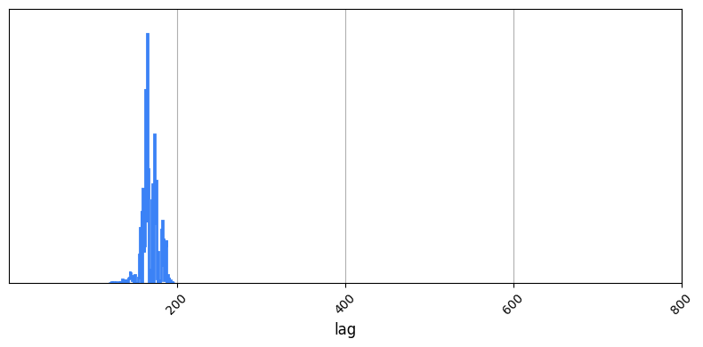
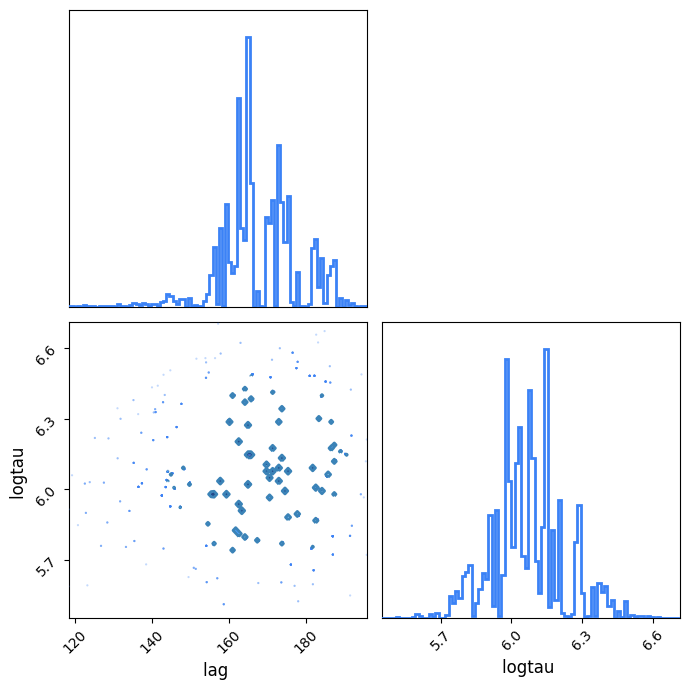
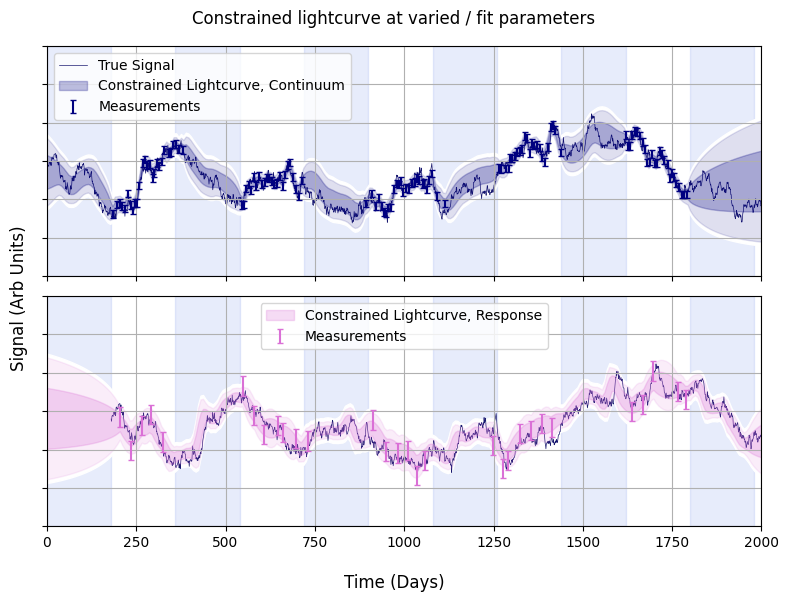

Constrained Light Curve Example
In this example we show how you can use posterior sample chains to generate nice visualisations of constrained lightcurves. Per usual we begin by importing some modules:
import litmus
import numpy as np
import matplotlib.pyplot as plt
from litmus._utils import dict_extend
An NVIDIA GPU may be present on this machine, but a CUDA-enabled jaxlib is not installed. Falling back to cpu.
Now generate some mock signals a'la OzDES data:
mock = litmus.mocks.mock(lag=180,
E=[0.1, 0.25],
tau=400)
lc_1, lc_2 = mock.lc_1, mock.lc_2
mock.plot()
plt.show()

Now create a LITMUS model, specifically the GP_simple model. We'll leave the priors at their defaults for lag and logtau, but restrict the others at their true values to make fitting easier for this simple example.
While we're at it, we'll convert the two lightcurves into the right format for the model's data input, and define the time span we want to track the lightcurves over, and make the change of setting the model's logging to verbose=True so we can track its progress.
model = litmus.models.GP_simple(verbose=True,
prior_ranges=mock.params() | {'lag': [0, 800], 'logtau': [np.log(100), np.log(1000)]})
data = model.lc_to_data(lc_1, lc_2)
Tpred = np.linspace(-1000, 2500, 512)
Light curve constrain works via the stats model itself. We feed in the data to condition the model and some model paramters for constraining the model. Because we're working with a mock, we already know the underlying true model paramters, and can get them from mock.params():
p = mock.params()
pred1_true, pred2_true = model.make_lightcurves(data, params=p, Tpred=Tpred, num_samples=1)
Because we're going to run the code again we'll wrap the plot generation in a function:
def make_plot(pred1, pred2):
print("Predictions Clear. Plotting")
c0 = 'midnightblue'
c1, c2 = 'navy', 'orchid'
f, (a1, a2) = plt.subplots(2, 1, sharex=True, figsize=(8, 6))
lc_1.plot(axis=a1, show=False, c=c1, capsize=2, label="Measurements")
lc_2.plot(axis=a2, show=False, c=c2, capsize=2, label="Measurements")
a1.plot(mock.lc.T, mock.lc.Y, c=c0, lw=0.5, zorder=-6, label='True Signal')
a2.plot(mock.lc.T + mock.lag, mock.lc.Y, c=c0, lw=0.5, zorder=-6)
a1.fill_between(pred1.T, pred1.Y - pred1.E, pred1.Y + pred1.E, alpha=0.25, color=c1,
label="Constrained Lightcurve, Continuum")
a2.fill_between(pred2.T, pred2.Y - pred2.E, pred2.Y + pred2.E, alpha=0.25, color=c2,
label="Constrained Lightcurve, Response")
a1.fill_between(pred1.T, pred1.Y - 2 * pred1.E, pred1.Y + 2 * pred1.E, alpha=0.125, color=c1)
a2.fill_between(pred2.T, pred2.Y - 2 * pred2.E, pred2.Y + 2 * pred2.E, alpha=0.125, color=c2)
r = 0.1
a1.fill_between(pred1.T, pred1.Y - 2 * pred1.E - r, pred1.Y + 2 * pred1.E + r, alpha=1.0, color='w', zorder=-9)
a2.fill_between(pred2.T, pred2.Y - 2 * pred2.E - r, pred2.Y + 2 * pred2.E + r, alpha=1.0, color='w', zorder=-9)
f.supxlabel("Time (Days)")
f.supylabel("Signal (Arb Units)")
for a in a1, a2:
a.grid()
a.set_yticklabels([])
a.set_ylim(-3, 3)
if mock.season != 0:
tmax = Tpred.max()
nyears = int(tmax // (mock.season * 2) + 1)
for i in range(nyears):
a.axvspan((i + 1 / 2 - 1 / 2) * mock.season * 2, (i + 1 - 1 / 2) * mock.season * 2,
ymin=0, ymax=1, alpha=0.125, color='royalblue',
zorder=-10,
label=None)
a.legend()
a1.set_xlim(0, 2000)
f.tight_layout()
print("Plots done")
return (f)
And run it:
f = make_plot(pred1_true, pred2_true)
f.suptitle("Constrained Lightcurves at true values")
f.tight_layout()
f.show()
Predictions Clear. Plotting
Plots done

That's not all though, we can also feed in an MCMC-like chain of parameters to have model.make_lightcurve marginalize over the posterior. First we'll need to actually set the
my_fitter = litmus.fitting_methods.SVI_scan(model, verbose=True, debug=False)
my_fitter.fit(lc_1, lc_2)
p_varied = my_fitter.get_samples()
Starting SVI Scan
In find seed, sample no 995 is best /w LL -31.72 at lag 159.20
Beginning scan at constrained-space position:
lag: 159.20
logtau: 4.99
logamp: 0.00
rel_amp: 1.00
mean: 0.00
rel_mean: 0.00
Log-Density for this is: -31.72
Moving non-lag params to new location...
Scaling matrix:
[[1.]]
Inverse Scaling matrix:
[[1.]]
At initial uncon position [-1.60291479] with keys ['logtau'] eval for optfunc is 28.0099039588996
Creating and testing solver...
INFO: jaxopt.BacktrackingLineSearch: Iter: 1 Minimum Decrease & Curvature Errors (stop. crit.): 1.9317282455588511 Stepsize:1.0 Objective Value:29.928667441264686 Decrease Error:1.9317282455588511
INFO: jaxopt.BacktrackingLineSearch: Iter: 2 Minimum Decrease & Curvature Errors (stop. crit.): 0.0 Stepsize:0.8 Objective Value:27.615721578192026 Decrease Error:0.0
Jaxopt solver created and running fine
INFO: jaxopt.BacktrackingLineSearch: Iter: 1 Minimum Decrease & Curvature Errors (stop. crit.): 1.9317282455588511 Stepsize:1.0 Objective Value:29.928667441264686 Decrease Error:1.9317282455588511
INFO: jaxopt.BacktrackingLineSearch: Iter: 2 Minimum Decrease & Curvature Errors (stop. crit.): 0.0 Stepsize:0.8 Objective Value:27.615721578192026 Decrease Error:0.0
INFO: jaxopt.BacktrackingLineSearch: Iter: 1 Minimum Decrease & Curvature Errors (stop. crit.): 0.1117117669491764 Stepsize:0.96 Objective Value:26.841254849111394 Decrease Error:0.0
INFO: jaxopt.BacktrackingLineSearch: Iter: 2 Minimum Decrease & Curvature Errors (stop. crit.): 0.10321256799994372 Stepsize:0.768 Objective Value:26.99880314690453 Decrease Error:0.0
INFO: jaxopt.BacktrackingLineSearch: Iter: 3 Minimum Decrease & Curvature Errors (stop. crit.): 0.09724634087592987 Stepsize:0.6144000000000001 Objective Value:27.123737731277988 Decrease Error:0.0
INFO: jaxopt.BacktrackingLineSearch: Iter: 4 Minimum Decrease & Curvature Errors (stop. crit.): 0.0929475586871038 Stepsize:0.49152000000000007 Objective Value:27.223057713406934 Decrease Error:0.0
INFO: jaxopt.BacktrackingLineSearch: Iter: 5 Minimum Decrease & Curvature Errors (stop. crit.): 0.0897848118742619 Stepsize:0.39321600000000007 Objective Value:27.302148294077384 Decrease Error:0.0
INFO: jaxopt.BacktrackingLineSearch: Iter: 6 Minimum Decrease & Curvature Errors (stop. crit.): 0.08741862363335073 Stepsize:0.3145728000000001 Objective Value:27.3652039702363 Decrease Error:0.0
INFO: jaxopt.BacktrackingLineSearch: Iter: 7 Minimum Decrease & Curvature Errors (stop. crit.): 0.08562450721175996 Stepsize:0.2516582400000001 Objective Value:27.41551792955321 Decrease Error:0.0
INFO: jaxopt.BacktrackingLineSearch: Iter: 8 Minimum Decrease & Curvature Errors (stop. crit.): 0.08424949317597463 Stepsize:0.20132659200000008 Objective Value:27.45568948181456 Decrease Error:0.0
INFO: jaxopt.BacktrackingLineSearch: Iter: 9 Minimum Decrease & Curvature Errors (stop. crit.): 0.083186601801857 Stepsize:0.16106127360000008 Objective Value:27.487777709180797 Decrease Error:0.0
INFO: jaxopt.BacktrackingLineSearch: Iter: 10 Minimum Decrease & Curvature Errors (stop. crit.): 0.08235932387297984 Stepsize:0.12884901888000008 Objective Value:27.513417880589987 Decrease Error:0.0
INFO: jaxopt.BacktrackingLineSearch: Iter: 11 Minimum Decrease & Curvature Errors (stop. crit.): 0.08171188468408197 Stepsize:0.10307921510400007 Objective Value:27.53391103233789 Decrease Error:0.0
INFO: jaxopt.BacktrackingLineSearch: Iter: 12 Minimum Decrease & Curvature Errors (stop. crit.): 0.0812029585874231 Stepsize:0.08246337208320006 Objective Value:27.55029364207215 Decrease Error:0.0
INFO: jaxopt.BacktrackingLineSearch: Iter: 13 Minimum Decrease & Curvature Errors (stop. crit.): 0.08080150334800329 Stepsize:0.06597069766656005 Objective Value:27.563392226578763 Decrease Error:0.0
INFO: jaxopt.BacktrackingLineSearch: Iter: 14 Minimum Decrease & Curvature Errors (stop. crit.): 0.0804839322678822 Stepsize:0.052776558133248046 Objective Value:27.573866352742403 Decrease Error:0.0
INFO: jaxopt.BacktrackingLineSearch: Iter: 15 Minimum Decrease & Curvature Errors (stop. crit.): 0.08023215186193733 Stepsize:0.04222124650659844 Objective Value:27.58224264985363 Decrease Error:0.0
INFO: jaxopt.BacktrackingLineSearch: Iter: 16 Minimum Decrease & Curvature Errors (stop. crit.): 0.08003217273318386 Stepsize:0.033776997205278755 Objective Value:27.588941780674308 Decrease Error:0.0
INFO: jaxopt.BacktrackingLineSearch: Iter: 17 Minimum Decrease & Curvature Errors (stop. crit.): 0.07987310838958084 Stepsize:0.027021597764223006 Objective Value:27.594299872851707 Decrease Error:0.0
INFO: jaxopt.BacktrackingLineSearch: Iter: 18 Minimum Decrease & Curvature Errors (stop. crit.): 0.07974644201180348 Stepsize:0.021617278211378405 Objective Value:27.59858557463675 Decrease Error:0.0
INFO: jaxopt.BacktrackingLineSearch: Iter: 19 Minimum Decrease & Curvature Errors (stop. crit.): 0.07964548182401698 Stepsize:0.017293822569102724 Objective Value:27.60201364406586 Decrease Error:0.0
INFO: jaxopt.BacktrackingLineSearch: Iter: 20 Minimum Decrease & Curvature Errors (stop. crit.): 0.07956495154953891 Stepsize:0.013835058055282179 Objective Value:27.604755785777236 Decrease Error:0.0
INFO: jaxopt.BacktrackingLineSearch: Iter: 21 Minimum Decrease & Curvature Errors (stop. crit.): 0.07950067916744608 Stepsize:0.011068046444225745 Objective Value:27.606949298828557 Decrease Error:0.0
INFO: jaxopt.BacktrackingLineSearch: Iter: 22 Minimum Decrease & Curvature Errors (stop. crit.): 0.07944935823187693 Stepsize:0.008854437155380595 Objective Value:27.608703981339502 Decrease Error:0.0
INFO: jaxopt.BacktrackingLineSearch: Iter: 23 Minimum Decrease & Curvature Errors (stop. crit.): 0.0794083634391124 Stepsize:0.007083549724304476 Objective Value:27.61010764561244 Decrease Error:0.0
INFO: jaxopt.BacktrackingLineSearch: Iter: 24 Minimum Decrease & Curvature Errors (stop. crit.): 0.07937560720275816 Stepsize:0.005666839779443582 Objective Value:27.61123052479116 Decrease Error:0.0
INFO: jaxopt.BacktrackingLineSearch: Iter: 25 Minimum Decrease & Curvature Errors (stop. crit.): 0.07934942752879892 Stepsize:0.004533471823554866 Objective Value:27.612128794737323 Decrease Error:0.0
INFO: jaxopt.BacktrackingLineSearch: Iter: 26 Minimum Decrease & Curvature Errors (stop. crit.): 0.07932849997724833 Stepsize:0.003626777458843893 Objective Value:27.612847389338892 Decrease Error:0.0
INFO: jaxopt.BacktrackingLineSearch: Iter: 27 Minimum Decrease & Curvature Errors (stop. crit.): 0.07931176828889475 Stepsize:0.0029014219670751144 Objective Value:27.613422251362454 Decrease Error:0.0
INFO: jaxopt.BacktrackingLineSearch: Iter: 28 Minimum Decrease & Curvature Errors (stop. crit.): 0.07929838956035973 Stepsize:0.0023211375736600917 Objective Value:27.61388213224501 Decrease Error:0.0
INFO: jaxopt.BacktrackingLineSearch: Iter: 29 Minimum Decrease & Curvature Errors (stop. crit.): 0.07928769081384457 Stepsize:0.0018569100589280734 Objective Value:27.614250031362474 Decrease Error:0.0
INFO: jaxopt.BacktrackingLineSearch: Iter: 30 Minimum Decrease & Curvature Errors (stop. crit.): 0.07927913452688118 Stepsize:0.0014855280471424588 Objective Value:27.614544347081004 Decrease Error:0.0
INFO: jaxopt.BacktrackingLineSearch: Iter: 1 Minimum Decrease & Curvature Errors (stop. crit.): 2.6803165352775338 Stepsize:0.0017826336565709504 Objective Value:27.66312934735081 Decrease Error:0.04858013749953827
INFO: jaxopt.BacktrackingLineSearch: Iter: 2 Minimum Decrease & Curvature Errors (stop. crit.): 2.689648591758168 Stepsize:0.0014261069252567604 Objective Value:27.653419095389108 Decrease Error:0.03887085809188662
INFO: jaxopt.BacktrackingLineSearch: Iter: 3 Minimum Decrease & Curvature Errors (stop. crit.): 2.697177007628639 Stepsize:0.0011408855402054083 Objective Value:27.645648488604117 Decrease Error:0.031101029350139697
INFO: jaxopt.BacktrackingLineSearch: Iter: 4 Minimum Decrease & Curvature Errors (stop. crit.): 2.7032402170137146 Stepsize:0.0009127084321643267 Objective Value:27.63943045214831 Decrease Error:0.024883615328928244
INFO: jaxopt.BacktrackingLineSearch: Iter: 5 Minimum Decrease & Curvature Errors (stop. crit.): 2.7081168460216034 Stepsize:0.0007301667457314614 Objective Value:27.63445502429937 Decrease Error:0.01990868542766222
INFO: jaxopt.BacktrackingLineSearch: Iter: 6 Minimum Decrease & Curvature Errors (stop. crit.): 2.7120349091075404 Stepsize:0.0005841333965851691 Objective Value:27.630474039760333 Decrease Error:0.015928099246767857
INFO: jaxopt.BacktrackingLineSearch: Iter: 7 Minimum Decrease & Curvature Errors (stop. crit.): 2.7151801273049436 Stepsize:0.0004673067172681353 Objective Value:27.627288839487065 Decrease Error:0.01274321766000952
INFO: jaxopt.BacktrackingLineSearch: Iter: 8 Minimum Decrease & Curvature Errors (stop. crit.): 2.717703214481052 Stepsize:0.00037384537381450825 Objective Value:27.624740414357973 Decrease Error:0.010195047480127784
INFO: jaxopt.BacktrackingLineSearch: Iter: 9 Minimum Decrease & Curvature Errors (stop. crit.): 2.7197261192203506 Stepsize:0.0002990762990516066 Objective Value:27.62270150429123 Decrease Error:0.008156341372753673
INFO: jaxopt.BacktrackingLineSearch: Iter: 10 Minimum Decrease & Curvature Errors (stop. crit.): 2.72134728701441 Stepsize:0.0002392610392412853 Objective Value:27.621070267245234 Decrease Error:0.006525267494250642
INFO: jaxopt.BacktrackingLineSearch: Iter: 11 Minimum Decrease & Curvature Errors (stop. crit.): 2.722646044286112 Stepsize:0.00019140883139302824 Objective Value:27.619765207742276 Decrease Error:0.005220338525290913
INFO: jaxopt.BacktrackingLineSearch: Iter: 12 Minimum Decrease & Curvature Errors (stop. crit.): 2.723686218320662 Stepsize:0.00015312706511442262 Objective Value:27.61872111536883 Decrease Error:0.004176350579040644
INFO: jaxopt.BacktrackingLineSearch: Iter: 13 Minimum Decrease & Curvature Errors (stop. crit.): 2.724519105962383 Stepsize:0.0001225016520915381 Objective Value:27.617885812787588 Decrease Error:0.003341131539553288
INFO: jaxopt.BacktrackingLineSearch: Iter: 14 Minimum Decrease & Curvature Errors (stop. crit.): 2.72518589544849 Stepsize:9.800132167323048e-05 Objective Value:27.617217552350642 Decrease Error:0.002672937936015529
INFO: jaxopt.BacktrackingLineSearch: Iter: 15 Minimum Decrease & Curvature Errors (stop. crit.): 2.7257196340338474 Stepsize:7.840105733858438e-05 Objective Value:27.616682932235676 Decrease Error:0.0021383712877742767
INFO: jaxopt.BacktrackingLineSearch: Iter: 16 Minimum Decrease & Curvature Errors (stop. crit.): 2.726146821481624 Stepsize:6.272084587086751e-05 Objective Value:27.616255228609656 Decrease Error:0.001710710435133933
INFO: jaxopt.BacktrackingLineSearch: Iter: 17 Minimum Decrease & Curvature Errors (stop. crit.): 2.7264886973029583 Stepsize:5.0176676696694016e-05 Objective Value:27.615913060885305 Decrease Error:0.0013685769294866645
INFO: jaxopt.BacktrackingLineSearch: Iter: 18 Minimum Decrease & Curvature Errors (stop. crit.): 2.7267622785385903 Stepsize:4.014134135735522e-05 Objective Value:27.615639323617533 Decrease Error:0.0010948670366772717
INFO: jaxopt.BacktrackingLineSearch: Iter: 19 Minimum Decrease & Curvature Errors (stop. crit.): 2.7269811951117795 Stepsize:3.2113073085884176e-05 Objective Value:27.6154203318264 Decrease Error:0.0008758971455122833
INFO: jaxopt.BacktrackingLineSearch: Iter: 20 Minimum Decrease & Curvature Errors (stop. crit.): 2.7271563613907297 Stepsize:2.569045846870734e-05 Objective Value:27.61524513712792 Decrease Error:0.000700719967010599
INFO: jaxopt.BacktrackingLineSearch: Iter: 21 Minimum Decrease & Curvature Errors (stop. crit.): 2.7272965155510747 Stepsize:2.0552366774965873e-05 Objective Value:27.61510498055908 Decrease Error:0.0005605774141521636
INFO: jaxopt.BacktrackingLineSearch: Iter: 22 Minimum Decrease & Curvature Errors (stop. crit.): 2.727408652408819 Stepsize:1.6441893419972698e-05 Objective Value:27.614992854785484 Decrease Error:0.00044846285334187996
INFO: jaxopt.BacktrackingLineSearch: Iter: 23 Minimum Decrease & Curvature Errors (stop. crit.): 2.72749837055472 Stepsize:1.315351473597816e-05 Objective Value:27.614903153834682 Decrease Error:0.00035877087276503516
INFO: jaxopt.BacktrackingLineSearch: Iter: 24 Minimum Decrease & Curvature Errors (stop. crit.): 2.727570150614252 Stepsize:1.0522811788782529e-05 Objective Value:27.614831392861745 Decrease Error:0.000287017076011864
INFO: jaxopt.BacktrackingLineSearch: Iter: 25 Minimum Decrease & Curvature Errors (stop. crit.): 2.727627578209461 Stepsize:8.418249431026023e-06 Objective Value:27.614773983947334 Decrease Error:0.00022961390254749858
INFO: jaxopt.BacktrackingLineSearch: Iter: 26 Minimum Decrease & Curvature Errors (stop. crit.): 2.7276735225562767 Stepsize:6.734599544820819e-06 Objective Value:27.61472805672874 Decrease Error:0.00018369127671036267
INFO: jaxopt.BacktrackingLineSearch: Iter: 27 Minimum Decrease & Curvature Errors (stop. crit.): 2.7277102794870878 Stepsize:5.387679635856655e-06 Objective Value:27.614691314898156 Decrease Error:0.00014695312033197183
INFO: jaxopt.BacktrackingLineSearch: Iter: 28 Minimum Decrease & Curvature Errors (stop. crit.): 2.7277396859617156 Stepsize:4.310143708685324e-06 Objective Value:27.6146619213982 Decrease Error:0.00011756255973693897
INFO: jaxopt.BacktrackingLineSearch: Iter: 29 Minimum Decrease & Curvature Errors (stop. crit.): 2.727763211736818 Stepsize:3.4481149669482597e-06 Objective Value:27.61463840657518 Decrease Error:9.405008821161687e-05
INFO: jaxopt.BacktrackingLineSearch: Iter: 30 Minimum Decrease & Curvature Errors (stop. crit.): 2.7277820327374087 Stepsize:2.758491973558608e-06 Objective Value:27.614619594702322 Decrease Error:7.524009654602537e-05
INFO: jaxopt.BacktrackingLineSearch: Iter: 1 Minimum Decrease & Curvature Errors (stop. crit.): 26.258578996907666 Stepsize:1.0 Objective Value:53.875924996689186 Decrease Error:26.258578996907666
INFO: jaxopt.BacktrackingLineSearch: Iter: 2 Minimum Decrease & Curvature Errors (stop. crit.): 21.01482597102798 Stepsize:0.8 Objective Value:48.63162668979366 Decrease Error:21.01482597102798
INFO: jaxopt.BacktrackingLineSearch: Iter: 3 Minimum Decrease & Curvature Errors (stop. crit.): 16.81982354832673 Stepsize:0.6400000000000001 Objective Value:44.43618804227974 Decrease Error:16.81982354832673
INFO: jaxopt.BacktrackingLineSearch: Iter: 4 Minimum Decrease & Curvature Errors (stop. crit.): 13.463821554945852 Stepsize:0.5120000000000001 Objective Value:41.07983706904872 Decrease Error:13.463821554945852
INFO: jaxopt.BacktrackingLineSearch: Iter: 5 Minimum Decrease & Curvature Errors (stop. crit.): 10.779019201301107 Stepsize:0.40960000000000013 Objective Value:38.39475553152387 Decrease Error:10.779019201301107
INFO: jaxopt.BacktrackingLineSearch: Iter: 6 Minimum Decrease & Curvature Errors (stop. crit.): 8.631171428231514 Stepsize:0.32768000000000014 Objective Value:36.24668441135019 Decrease Error:8.631171428231514
INFO: jaxopt.BacktrackingLineSearch: Iter: 7 Minimum Decrease & Curvature Errors (stop. crit.): 6.912864589001174 Stepsize:0.2621440000000001 Objective Value:34.52819889443658 Decrease Error:6.912864589001174
INFO: jaxopt.BacktrackingLineSearch: Iter: 8 Minimum Decrease & Curvature Errors (stop. crit.): 5.53812435413748 Stepsize:0.2097152000000001 Objective Value:33.15331571742627 Decrease Error:5.53812435413748
INFO: jaxopt.BacktrackingLineSearch: Iter: 9 Minimum Decrease & Curvature Errors (stop. crit.): 4.438102886430379 Stepsize:0.1677721600000001 Objective Value:32.05317989600187 Decrease Error:4.438102886430379
INFO: jaxopt.BacktrackingLineSearch: Iter: 10 Minimum Decrease & Curvature Errors (stop. crit.): 3.557656208583726 Stepsize:0.13421772800000006 Objective Value:31.172641735181386 Decrease Error:3.557656208583726
INFO: jaxopt.BacktrackingLineSearch: Iter: 11 Minimum Decrease & Curvature Errors (stop. crit.): 2.852645467101187 Stepsize:0.10737418240000006 Objective Value:30.46755780731978 Decrease Error:2.852645467101187
INFO: jaxopt.BacktrackingLineSearch: Iter: 12 Minimum Decrease & Curvature Errors (stop. crit.): 2.287797290588273 Stepsize:0.08589934592000005 Objective Value:29.90265108170361 Decrease Error:2.287797290588273
INFO: jaxopt.BacktrackingLineSearch: Iter: 13 Minimum Decrease & Curvature Errors (stop. crit.): 1.8562391686630448 Stepsize:0.06871947673600004 Objective Value:29.449784658174504 Decrease Error:1.8349777063417676
INFO: jaxopt.BacktrackingLineSearch: Iter: 14 Minimum Decrease & Curvature Errors (stop. crit.): 1.9309893926466053 Stepsize:0.054975581388800036 Objective Value:29.08654694090883 Decrease Error:1.4717774605021745
INFO: jaxopt.BacktrackingLineSearch: Iter: 15 Minimum Decrease & Curvature Errors (stop. crit.): 2.013506102837045 Stepsize:0.043980465111040035 Objective Value:28.795089315264832 Decrease Error:1.1803498119990472
INFO: jaxopt.BacktrackingLineSearch: Iter: 16 Minimum Decrease & Curvature Errors (stop. crit.): 2.0989321701505723 Stepsize:0.03518437208883203 Objective Value:28.56118160820305 Decrease Error:0.9464660866499557
INFO: jaxopt.BacktrackingLineSearch: Iter: 17 Minimum Decrease & Curvature Errors (stop. crit.): 2.182934972738675 Stepsize:0.028147497671065627 Objective Value:28.373456858681706 Decrease Error:0.7587605224987684
INFO: jaxopt.BacktrackingLineSearch: Iter: 18 Minimum Decrease & Curvature Errors (stop. crit.): 2.2622030424724464 Stepsize:0.022517998136852502 Objective Value:28.222815714259877 Decrease Error:0.6081347263730592
INFO: jaxopt.BacktrackingLineSearch: Iter: 19 Minimum Decrease & Curvature Errors (stop. crit.): 2.334575180111216 Stepsize:0.018014398509482003 Objective Value:28.101960154314362 Decrease Error:0.48729144506444655
INFO: jaxopt.BacktrackingLineSearch: Iter: 20 Minimum Decrease & Curvature Errors (stop. crit.): 2.3989288063152188 Stepsize:0.014411518807585602 Objective Value:28.005028664516857 Decrease Error:0.3903697781764599
INFO: jaxopt.BacktrackingLineSearch: Iter: 21 Minimum Decrease & Curvature Errors (stop. crit.): 2.454955410829122 Stepsize:0.011529215046068483 Objective Value:27.92730954463924 Decrease Error:0.31265851662645616
INFO: jaxopt.BacktrackingLineSearch: Iter: 22 Minimum Decrease & Curvature Errors (stop. crit.): 2.5029143817702497 Stepsize:0.009223372036854787 Objective Value:27.865014105955254 Decrease Error:0.2503693646045626
INFO: jaxopt.BacktrackingLineSearch: Iter: 23 Minimum Decrease & Curvature Errors (stop. crit.): 2.543415613067829 Stepsize:0.00737869762948383 Objective Value:27.815096020814543 Decrease Error:0.20045630879352672
INFO: jaxopt.BacktrackingLineSearch: Iter: 24 Minimum Decrease & Curvature Errors (stop. crit.): 2.5772504940140664 Stepsize:0.005902958103587064 Objective Value:27.775106622748748 Decrease Error:0.16047093419146918
INFO: jaxopt.BacktrackingLineSearch: Iter: 25 Minimum Decrease & Curvature Errors (stop. crit.): 2.6052725178868883 Stepsize:0.004722366482869652 Objective Value:27.743078547145604 Decrease Error:0.12844607735931746
INFO: jaxopt.BacktrackingLineSearch: Iter: 26 Minimum Decrease & Curvature Errors (stop. crit.): 2.628320086761864 Stepsize:0.0037778931862957215 Objective Value:27.71743194648376 Decrease Error:0.10280205171426715
INFO: jaxopt.BacktrackingLineSearch: Iter: 27 Minimum Decrease & Curvature Errors (stop. crit.): 2.6471714786622407 Stepsize:0.0030223145490365774 Objective Value:27.696898824610038 Decrease Error:0.08227098985397774
INFO: jaxopt.BacktrackingLineSearch: Iter: 28 Minimum Decrease & Curvature Errors (stop. crit.): 2.662522451989336 Stepsize:0.002417851639229262 Objective Value:27.680461983554835 Decrease Error:0.06583579680952312
INFO: jaxopt.BacktrackingLineSearch: Iter: 29 Minimum Decrease & Curvature Errors (stop. crit.): 2.6749787161496705 Stepsize:0.0019342813113834097 Objective Value:27.667305783910066 Decrease Error:0.05268091557335097
INFO: jaxopt.BacktrackingLineSearch: Iter: 30 Minimum Decrease & Curvature Errors (stop. crit.): 2.6850574795884192 Stepsize:0.0015474250491067279 Objective Value:27.656776463499195 Decrease Error:0.04215264988935985
INFO: jaxopt.BacktrackingLineSearch: Iter: 1 Minimum Decrease & Curvature Errors (stop. crit.): 2.72421618546219 Stepsize:0.0018569100589280734 Objective Value:27.7082310143748 Decrease Error:0.05144940081089899
INFO: jaxopt.BacktrackingLineSearch: Iter: 2 Minimum Decrease & Curvature Errors (stop. crit.): 2.7338713693093304 Stepsize:0.0014855280471424588 Objective Value:27.69794738308409 Decrease Error:0.04116679953312996
INFO: jaxopt.BacktrackingLineSearch: Iter: 3 Minimum Decrease & Curvature Errors (stop. crit.): 2.7416644343718666 Stepsize:0.0011884224377139672 Objective Value:27.689717885228983 Decrease Error:0.03293812568837495
INFO: jaxopt.BacktrackingLineSearch: Iter: 4 Minimum Decrease & Curvature Errors (stop. crit.): 2.7479433475539174 Stepsize:0.0009507379501711738 Objective Value:27.683132614166116 Decrease Error:0.026353513833790032
INFO: jaxopt.BacktrackingLineSearch: Iter: 5 Minimum Decrease & Curvature Errors (stop. crit.): 2.752995115580962 Stepsize:0.0007605903601369392 Objective Value:27.67786331984102 Decrease Error:0.021084746875320803
INFO: jaxopt.BacktrackingLineSearch: Iter: 6 Minimum Decrease & Curvature Errors (stop. crit.): 2.757054951894691 Stepsize:0.0006084722881095514 Objective Value:27.67364719124555 Decrease Error:0.016869040173151717
INFO: jaxopt.BacktrackingLineSearch: Iter: 7 Minimum Decrease & Curvature Errors (stop. crit.): 2.7603146592565224 Stepsize:0.00048677783048764115 Objective Value:27.670273842935703 Decrease Error:0.013496029377947139
INFO: jaxopt.BacktrackingLineSearch: Iter: 8 Minimum Decrease & Curvature Errors (stop. crit.): 2.762930026485531 Stepsize:0.00038942226439011294 Objective Value:27.667574878271523 Decrease Error:0.010797334725477725
INFO: jaxopt.BacktrackingLineSearch: Iter: 9 Minimum Decrease & Curvature Errors (stop. crit.): 2.7650271978708645 Stepsize:0.00031153781151209035 Objective Value:27.665415523007816 Decrease Error:0.008638195471139198
INFO: jaxopt.BacktrackingLineSearch: Iter: 10 Minimum Decrease & Curvature Errors (stop. crit.): 2.766708063185842 Stepsize:0.0002492302492096723 Objective Value:27.66368792108851 Decrease Error:0.006910766359329301
INFO: jaxopt.BacktrackingLineSearch: Iter: 11 Minimum Decrease & Curvature Errors (stop. crit.): 2.768054760845512 Stepsize:0.00019938419936773785 Objective Value:27.662305764092896 Decrease Error:0.005528747609712781
INFO: jaxopt.BacktrackingLineSearch: Iter: 12 Minimum Decrease & Curvature Errors (stop. crit.): 2.7691334041547506 Stepsize:0.0001595073594941903 Objective Value:27.661199990136943 Decrease Error:0.004423084250557707
INFO: jaxopt.BacktrackingLineSearch: Iter: 13 Minimum Decrease & Curvature Errors (stop. crit.): 2.7699971421996885 Stepsize:0.00012760588759535226 Objective Value:27.660315339988433 Decrease Error:0.0035385225794861697
INFO: jaxopt.BacktrackingLineSearch: Iter: 14 Minimum Decrease & Curvature Errors (stop. crit.): 2.770688660062504 Stepsize:0.00010208471007628181 Objective Value:27.659607600023275 Decrease Error:0.002830853396279309
INFO: jaxopt.BacktrackingLineSearch: Iter: 15 Minimum Decrease & Curvature Errors (stop. crit.): 2.7712422121374836 Stepsize:8.166776806102545e-05 Objective Value:27.659041395340527 Decrease Error:0.0022647053390905114
INFO: jaxopt.BacktrackingLineSearch: Iter: 16 Minimum Decrease & Curvature Errors (stop. crit.): 2.7716852700984127 Stepsize:6.533421444882036e-05 Objective Value:27.658588423455164 Decrease Error:0.0018117787541775954
INFO: jaxopt.BacktrackingLineSearch: Iter: 17 Minimum Decrease & Curvature Errors (stop. crit.): 2.772039854960621 Stepsize:5.2267371559056295e-05 Objective Value:27.658226040735432 Decrease Error:0.0014494322748035415
INFO: jaxopt.BacktrackingLineSearch: Iter: 18 Minimum Decrease & Curvature Errors (stop. crit.): 2.7723236115167644 Stepsize:4.1813897247245036e-05 Objective Value:27.657936131223067 Decrease Error:0.00115955175472493
INFO: jaxopt.BacktrackingLineSearch: Iter: 19 Minimum Decrease & Curvature Errors (stop. crit.): 2.77255067352478 Stepsize:3.345111779779603e-05 Objective Value:27.65770420147734 Decrease Error:0.0009276452028288418
INFO: jaxopt.BacktrackingLineSearch: Iter: 20 Minimum Decrease & Curvature Errors (stop. crit.): 2.7727323594674758 Stepsize:2.6760894238236826e-05 Objective Value:27.657518656313343 Decrease Error:0.000742118593894503
INFO: jaxopt.BacktrackingLineSearch: Iter: 21 Minimum Decrease & Curvature Errors (stop. crit.): 2.7728777314810635 Stepsize:2.1408715390589462e-05 Objective Value:27.65737021930691 Decrease Error:0.0005936964315118587
INFO: jaxopt.BacktrackingLineSearch: Iter: 22 Minimum Decrease & Curvature Errors (stop. crit.): 2.772994043980251 Stepsize:1.712697231247157e-05 Objective Value:27.657251469141553 Decrease Error:0.00047495814139608683
INFO: jaxopt.BacktrackingLineSearch: Iter: 23 Minimum Decrease & Curvature Errors (stop. crit.): 2.7730871035089706 Stepsize:1.3701577849977256e-05 Objective Value:27.6571564686508 Decrease Error:0.00037996715083465915
INFO: jaxopt.BacktrackingLineSearch: Iter: 24 Minimum Decrease & Curvature Errors (stop. crit.): 2.7731615572311945 Stepsize:1.0961262279981805e-05 Objective Value:27.65708046802853 Decrease Error:0.000303974128716078
INFO: jaxopt.BacktrackingLineSearch: Iter: 25 Minimum Decrease & Curvature Errors (stop. crit.): 2.7732211241132667 Stepsize:8.769009823985445e-06 Objective Value:27.657019667383853 Decrease Error:0.00024317956416552988
INFO: jaxopt.BacktrackingLineSearch: Iter: 26 Minimum Decrease & Curvature Errors (stop. crit.): 2.7732687801173945 Stepsize:7.015207859188356e-06 Objective Value:27.65697102677401 Decrease Error:0.00019454381842010093
INFO: jaxopt.BacktrackingLineSearch: Iter: 27 Minimum Decrease & Curvature Errors (stop. crit.): 2.7733069065196787 Stepsize:5.612166287350686e-06 Objective Value:27.656932114226105 Decrease Error:0.0001556351617928442
INFO: jaxopt.BacktrackingLineSearch: Iter: 28 Minimum Decrease & Curvature Errors (stop. crit.): 2.7733374086655225 Stepsize:4.489733029880549e-06 Objective Value:27.656900984149214 Decrease Error:0.00012450819792775292
INFO: jaxopt.BacktrackingLineSearch: Iter: 29 Minimum Decrease & Curvature Errors (stop. crit.): 2.7733618110370877 Stepsize:3.5917864239044394e-06 Objective Value:27.65687608006301 Decrease Error:9.960660214147765e-05
INFO: jaxopt.BacktrackingLineSearch: Iter: 30 Minimum Decrease & Curvature Errors (stop. crit.): 2.773381333353832 Stepsize:2.873429139123552e-06 Objective Value:27.65685615677832 Decrease Error:7.968530978530453e-05
INFO: jaxopt.BacktrackingLineSearch: Iter: 1 Minimum Decrease & Curvature Errors (stop. crit.): 27.297353490437796 Stepsize:1.0 Objective Value:54.9570399285871 Decrease Error:27.297353490437796
INFO: jaxopt.BacktrackingLineSearch: Iter: 2 Minimum Decrease & Curvature Errors (stop. crit.): 21.84552876449657 Stepsize:0.8 Objective Value:49.504649146371676 Decrease Error:21.84552876449657
INFO: jaxopt.BacktrackingLineSearch: Iter: 3 Minimum Decrease & Curvature Errors (stop. crit.): 17.484068982753907 Stepsize:0.6400000000000001 Objective Value:45.142736519609656 Decrease Error:17.484068982753907
INFO: jaxopt.BacktrackingLineSearch: Iter: 4 Minimum Decrease & Curvature Errors (stop. crit.): 13.99490112598054 Stepsize:0.5120000000000001 Objective Value:41.653206386820806 Decrease Error:13.99490112598054
INFO: jaxopt.BacktrackingLineSearch: Iter: 5 Minimum Decrease & Curvature Errors (stop. crit.): 11.203566358217067 Stepsize:0.40960000000000013 Objective Value:38.86158179824494 Decrease Error:11.203566358217067
INFO: jaxopt.BacktrackingLineSearch: Iter: 6 Minimum Decrease & Curvature Errors (stop. crit.): 8.970494441288608 Stepsize:0.32768000000000014 Objective Value:36.62827802466657 Decrease Error:8.970494441288608
INFO: jaxopt.BacktrackingLineSearch: Iter: 7 Minimum Decrease & Curvature Errors (stop. crit.): 7.184015417536028 Stepsize:0.2621440000000001 Objective Value:34.84161351559406 Decrease Error:7.184015417536028
INFO: jaxopt.BacktrackingLineSearch: Iter: 8 Minimum Decrease & Curvature Errors (stop. crit.): 5.754756532181965 Stepsize:0.2097152000000001 Objective Value:33.41220624198406 Decrease Error:5.754756532181965
INFO: jaxopt.BacktrackingLineSearch: Iter: 9 Minimum Decrease & Curvature Errors (stop. crit.): 4.611156918926316 Stepsize:0.1677721600000001 Objective Value:32.268487918123654 Decrease Error:4.611156918926316
INFO: jaxopt.BacktrackingLineSearch: Iter: 10 Minimum Decrease & Curvature Errors (stop. crit.): 3.6959015502440877 Stepsize:0.13421772800000006 Objective Value:31.353137580957622 Decrease Error:3.6959015502440877
INFO: jaxopt.BacktrackingLineSearch: Iter: 11 Minimum Decrease & Curvature Errors (stop. crit.): 2.9631064178833277 Stepsize:0.10737418240000006 Objective Value:30.62026647380982 Decrease Error:2.9631064178833277
INFO: jaxopt.BacktrackingLineSearch: Iter: 12 Minimum Decrease & Curvature Errors (stop. crit.): 2.3760903808107763 Stepsize:0.08589934592000005 Objective Value:30.033189656907634 Decrease Error:2.3760903808107763
INFO: jaxopt.BacktrackingLineSearch: Iter: 13 Minimum Decrease & Curvature Errors (stop. crit.): 1.9496477689937493 Stepsize:0.06871947673600004 Objective Value:29.562634763534668 Decrease Error:1.9055841113015184
INFO: jaxopt.BacktrackingLineSearch: Iter: 14 Minimum Decrease & Curvature Errors (stop. crit.): 2.0224334871950163 Stepsize:0.054975581388800036 Objective Value:29.18527814218134 Decrease Error:1.5282663890391532
INFO: jaxopt.BacktrackingLineSearch: Iter: 15 Minimum Decrease & Curvature Errors (stop. crit.): 2.103811471250399 Stepsize:0.043980465111040035 Objective Value:28.882542702177894 Decrease Error:1.2255620683084807
INFO: jaxopt.BacktrackingLineSearch: Iter: 16 Minimum Decrease & Curvature Errors (stop. crit.): 2.188923724508065 Stepsize:0.03518437208883203 Objective Value:28.639619208794972 Decrease Error:0.9826634703437769
INFO: jaxopt.BacktrackingLineSearch: Iter: 17 Minimum Decrease & Curvature Errors (stop. crit.): 2.2733061370669816 Stepsize:0.028147497671065627 Objective Value:28.444681587933584 Decrease Error:0.7877457658169646
INFO: jaxopt.BacktrackingLineSearch: Iter: 18 Minimum Decrease & Curvature Errors (stop. crit.): 2.353456593605369 Stepsize:0.022517998136852502 Objective Value:28.288266552890796 Decrease Error:0.6313466638418355
INFO: jaxopt.BacktrackingLineSearch: Iter: 19 Minimum Decrease & Curvature Errors (stop. crit.): 2.4270199247710416 Stepsize:0.018014398509482003 Objective Value:28.162787168218138 Decrease Error:0.5058800256233056
INFO: jaxopt.BacktrackingLineSearch: Iter: 20 Minimum Decrease & Curvature Errors (stop. crit.): 2.492708582724333 Stepsize:0.014411518807585602 Objective Value:28.06215203384628 Decrease Error:0.40525508841475144
INFO: jaxopt.BacktrackingLineSearch: Iter: 21 Minimum Decrease & Curvature Errors (stop. crit.): 2.5500904263757924 Stepsize:0.011529215046068483 Objective Value:27.981466097708765 Decrease Error:0.32457731000787504
INFO: jaxopt.BacktrackingLineSearch: Iter: 22 Minimum Decrease & Curvature Errors (stop. crit.): 2.599342085125947 Stepsize:0.009223372036854787 Objective Value:27.916794138141366 Decrease Error:0.25991187662499016
INFO: jaxopt.BacktrackingLineSearch: Iter: 23 Minimum Decrease & Curvature Errors (stop. crit.): 2.641024819906246 Stepsize:0.00737869762948383 Objective Value:27.86497254516372 Decrease Error:0.2080955045949544
INFO: jaxopt.BacktrackingLineSearch: Iter: 24 Minimum Decrease & Curvature Errors (stop. crit.): 2.6759069021098973 Stepsize:0.005902958103587064 Objective Value:27.823458691042077 Decrease Error:0.16658582723140114
INFO: jaxopt.BacktrackingLineSearch: Iter: 25 Minimum Decrease & Curvature Errors (stop. crit.): 2.704836152327477 Stepsize:0.004722366482869652 Objective Value:27.790209893910106 Decrease Error:0.13334037150590206
INFO: jaxopt.BacktrackingLineSearch: Iter: 26 Minimum Decrease & Curvature Errors (stop. crit.): 2.728656210277716 Stepsize:0.0037778931862957215 Objective Value:27.76358592114505 Decrease Error:0.10671907186602425
INFO: jaxopt.BacktrackingLineSearch: Iter: 27 Minimum Decrease & Curvature Errors (stop. crit.): 2.74815668419933 Stepsize:0.0030223145490365774 Objective Value:27.742270363632215 Decrease Error:0.08540565285332846
INFO: jaxopt.BacktrackingLineSearch: Iter: 28 Minimum Decrease & Curvature Errors (stop. crit.): 2.7640474536931627 Stepsize:0.002417851639229262 Objective Value:27.725207214264582 Decrease Error:0.06834421428580839
INFO: jaxopt.BacktrackingLineSearch: Iter: 29 Minimum Decrease & Curvature Errors (stop. crit.): 2.776949026258581 Stepsize:0.0019342813113834097 Objective Value:27.71154972952836 Decrease Error:0.054688098189679124
INFO: jaxopt.BacktrackingLineSearch: Iter: 30 Minimum Decrease & Curvature Errors (stop. crit.): 2.787392831493335 Stepsize:0.0015474250491067279 Objective Value:27.70061922416362 Decrease Error:0.04375868773701086
INFO: jaxopt.BacktrackingLineSearch: Iter: 1 Minimum Decrease & Curvature Errors (stop. crit.): 2.830377160278342 Stepsize:0.0018569100589280734 Objective Value:27.754077251560002 Decrease Error:0.053452676811605926
INFO: jaxopt.BacktrackingLineSearch: Iter: 2 Minimum Decrease & Curvature Errors (stop. crit.): 2.840382024439368 Stepsize:0.0014855280471424588 Objective Value:27.743393193167734 Decrease Error:0.042769688536292705
INFO: jaxopt.BacktrackingLineSearch: Iter: 3 Minimum Decrease & Curvature Errors (stop. crit.): 2.848460252200521 Stepsize:0.0011884224377139672 Objective Value:27.734843259258973 Decrease Error:0.03422061072109628
INFO: jaxopt.BacktrackingLineSearch: Iter: 4 Minimum Decrease & Curvature Errors (stop. crit.): 2.854970806837958 Stepsize:0.0009507379501711738 Objective Value:27.728001577900987 Decrease Error:0.027379614237961647
INFO: jaxopt.BacktrackingLineSearch: Iter: 5 Minimum Decrease & Curvature Errors (stop. crit.): 2.8602101577472254 Stepsize:0.0007605903601369392 Objective Value:27.72252711546501 Decrease Error:0.021905699701864734
INFO: jaxopt.BacktrackingLineSearch: Iter: 6 Minimum Decrease & Curvature Errors (stop. crit.): 2.8644215245921103 Stepsize:0.0006084722881095514 Objective Value:27.718146826579044 Decrease Error:0.01752584913580435
INFO: jaxopt.BacktrackingLineSearch: Iter: 7 Minimum Decrease & Curvature Errors (stop. crit.): 2.8678033994612697 Stepsize:0.00048677783048764115 Objective Value:27.71464213337811 Decrease Error:0.01402150659079382
INFO: jaxopt.BacktrackingLineSearch: Iter: 8 Minimum Decrease & Curvature Errors (stop. crit.): 2.8705171073468136 Stepsize:0.00038942226439011294 Objective Value:27.711838082064894 Decrease Error:0.011217735802315332
INFO: jaxopt.BacktrackingLineSearch: Iter: 9 Minimum Decrease & Curvature Errors (stop. crit.): 2.8726933410957365 Stepsize:0.00031153781151209035 Objective Value:27.70959465057219 Decrease Error:0.00897452872940363
INFO: jaxopt.BacktrackingLineSearch: Iter: 10 Minimum Decrease & Curvature Errors (stop. crit.): 2.8744377066104683 Stepsize:0.0002492302492096723 Objective Value:27.70779978322782 Decrease Error:0.0071798409208660985
INFO: jaxopt.BacktrackingLineSearch: Iter: 11 Minimum Decrease & Curvature Errors (stop. crit.): 2.875835365044402 Stepsize:0.00019938419936773785 Objective Value:27.70636381103906 Decrease Error:0.005744012360775486
INFO: jaxopt.BacktrackingLineSearch: Iter: 12 Minimum Decrease & Curvature Errors (stop. crit.): 2.876954879980257 Stepsize:0.0001595073594941903 Objective Value:27.70521498309728 Decrease Error:0.004595299321927371
INFO: jaxopt.BacktrackingLineSearch: Iter: 13 Minimum Decrease & Curvature Errors (stop. crit.): 2.8778513813617295 Stepsize:0.00012760588759535226 Objective Value:27.704295888585765 Decrease Error:0.0036762967327597096
INFO: jaxopt.BacktrackingLineSearch: Iter: 14 Minimum Decrease & Curvature Errors (stop. crit.): 2.878569152211643 Stepsize:0.00010208471007628181 Objective Value:27.70356059237685 Decrease Error:0.0029410740617201725
INFO: jaxopt.BacktrackingLineSearch: Iter: 15 Minimum Decrease & Curvature Errors (stop. crit.): 2.879143733789089 Stepsize:8.166776806102545e-05 Objective Value:27.70297234221647 Decrease Error:0.0023528827316425804
INFO: jaxopt.BacktrackingLineSearch: Iter: 16 Minimum Decrease & Curvature Errors (stop. crit.): 2.879603632718389 Stepsize:6.533421444882036e-05 Objective Value:27.70250173363968 Decrease Error:0.0018823212190923755
INFO: jaxopt.BacktrackingLineSearch: Iter: 17 Minimum Decrease & Curvature Errors (stop. crit.): 2.879971701477775 Stepsize:5.2267371559056295e-05 Objective Value:27.702125241368638 Decrease Error:0.0015058665994445164
INFO: jaxopt.BacktrackingLineSearch: Iter: 18 Minimum Decrease & Curvature Errors (stop. crit.): 2.880266252274474 Stepsize:4.1813897247245036e-05 Objective Value:27.701824044088447 Decrease Error:0.0012046994403682731
INFO: jaxopt.BacktrackingLineSearch: Iter: 19 Minimum Decrease & Curvature Errors (stop. crit.): 2.8805019542340986 Stepsize:3.345111779779603e-05 Objective Value:27.70158308404701 Decrease Error:0.0009637634958217234
INFO: jaxopt.BacktrackingLineSearch: Iter: 20 Minimum Decrease & Curvature Errors (stop. crit.): 2.8806905550582336 Stepsize:2.6760894238236826e-05 Objective Value:27.701390314594686 Decrease Error:0.0007710133210139247
INFO: jaxopt.BacktrackingLineSearch: Iter: 21 Minimum Decrease & Curvature Errors (stop. crit.): 2.880841460845698 Stepsize:2.1408715390589462e-05 Objective Value:27.701236098124166 Decrease Error:0.000616812272504319
INFO: jaxopt.BacktrackingLineSearch: Iter: 22 Minimum Decrease & Curvature Errors (stop. crit.): 2.8809622015605996 Stepsize:1.712697231247157e-05 Objective Value:27.701112724366237 Decrease Error:0.0004934508521827752
INFO: jaxopt.BacktrackingLineSearch: Iter: 23 Minimum Decrease & Curvature Errors (stop. crit.): 2.8810588044276955 Stepsize:1.3701577849977256e-05 Objective Value:27.701014024987547 Decrease Error:0.0003947613435784092
INFO: jaxopt.BacktrackingLineSearch: Iter: 24 Minimum Decrease & Curvature Errors (stop. crit.): 2.881136093311145 Stepsize:1.0961262279981805e-05 Objective Value:27.70093506524641 Decrease Error:0.0003158094985096227
INFO: jaxopt.BacktrackingLineSearch: Iter: 25 Minimum Decrease & Curvature Errors (stop. crit.): 2.881197928635327 Stepsize:8.769009823985445e-06 Objective Value:27.700871897300985 Decrease Error:0.0002526478699422796
INFO: jaxopt.BacktrackingLineSearch: Iter: 26 Minimum Decrease & Curvature Errors (stop. crit.): 2.8812473995943577 Stepsize:7.015207859188356e-06 Objective Value:27.700821362847027 Decrease Error:0.00020211846946693868
INFO: jaxopt.BacktrackingLineSearch: Iter: 27 Minimum Decrease & Curvature Errors (stop. crit.): 2.881286978089662 Stepsize:5.612166287350686e-06 Objective Value:27.70078093522131 Decrease Error:0.00016169488653972053
INFO: jaxopt.BacktrackingLineSearch: Iter: 28 Minimum Decrease & Curvature Errors (stop. crit.): 2.881318641991143 Stepsize:4.489733029880549e-06 Objective Value:27.700748593080966 Decrease Error:0.00012935598042673746
INFO: jaxopt.BacktrackingLineSearch: Iter: 29 Minimum Decrease & Curvature Errors (stop. crit.): 2.881343973820446 Stepsize:3.5917864239044394e-06 Objective Value:27.70072271934299 Decrease Error:0.00010348482983602025
INFO: jaxopt.BacktrackingLineSearch: Iter: 30 Minimum Decrease & Curvature Errors (stop. crit.): 2.8813642397367154 Stepsize:2.873429139123552e-06 Objective Value:27.700702020336173 Decrease Error:8.27878929250403e-05
INFO: jaxopt.BacktrackingLineSearch: Iter: 1 Minimum Decrease & Curvature Errors (stop. crit.): 28.423236333509315 Stepsize:1.0 Objective Value:56.126881223328766 Decrease Error:28.423236333509315
INFO: jaxopt.BacktrackingLineSearch: Iter: 2 Minimum Decrease & Curvature Errors (stop. crit.): 22.74591900680791 Stepsize:0.8 Objective Value:50.4489753227307 Decrease Error:22.74591900680791
INFO: jaxopt.BacktrackingLineSearch: Iter: 3 Minimum Decrease & Curvature Errors (stop. crit.): 18.204065144984177 Stepsize:0.6400000000000001 Objective Value:45.90665060178965 Decrease Error:18.204065144984177
INFO: jaxopt.BacktrackingLineSearch: Iter: 4 Minimum Decrease & Curvature Errors (stop. crit.): 14.570582038507371 Stepsize:0.5120000000000001 Objective Value:42.27279080801898 Decrease Error:14.570582038507371
INFO: jaxopt.BacktrackingLineSearch: Iter: 5 Minimum Decrease & Curvature Errors (stop. crit.): 11.663795258148738 Stepsize:0.40960000000000013 Objective Value:39.36570267782526 Decrease Error:11.663795258148738
INFO: jaxopt.BacktrackingLineSearch: Iter: 6 Minimum Decrease & Curvature Errors (stop. crit.): 9.338363062201601 Stepsize:0.32768000000000014 Objective Value:37.040029402010056 Decrease Error:9.338363062201601
INFO: jaxopt.BacktrackingLineSearch: Iter: 7 Minimum Decrease & Curvature Errors (stop. crit.): 7.478001561873125 Stepsize:0.2621440000000001 Objective Value:35.17947503778712 Decrease Error:7.478001561873125
INFO: jaxopt.BacktrackingLineSearch: Iter: 8 Minimum Decrease & Curvature Errors (stop. crit.): 5.989653125239737 Stepsize:0.2097152000000001 Objective Value:33.69097231003817 Decrease Error:5.989653125239737
INFO: jaxopt.BacktrackingLineSearch: Iter: 9 Minimum Decrease & Curvature Errors (stop. crit.): 4.798815270598293 Stepsize:0.1677721600000001 Objective Value:32.500011022504275 Decrease Error:4.798815270598293
INFO: jaxopt.BacktrackingLineSearch: Iter: 10 Minimum Decrease & Curvature Errors (stop. crit.): 3.845820452427425 Stepsize:0.13421772800000006 Objective Value:31.546917458019443 Decrease Error:3.845820452427425
INFO: jaxopt.BacktrackingLineSearch: Iter: 11 Minimum Decrease & Curvature Errors (stop. crit.): 3.0828955170313215 Stepsize:0.10737418240000006 Objective Value:30.78391352557217 Decrease Error:3.0828955170313215
INFO: jaxopt.BacktrackingLineSearch: Iter: 12 Minimum Decrease & Curvature Errors (stop. crit.): 2.4718365074515276 Stepsize:0.08589934592000005 Objective Value:30.172791318351443 Decrease Error:2.4718365074515276
INFO: jaxopt.BacktrackingLineSearch: Iter: 13 Minimum Decrease & Curvature Errors (stop. crit.): 2.051733127598066 Stepsize:0.06871947673600004 Objective Value:29.68305019416487 Decrease Error:1.9821459413777056
INFO: jaxopt.BacktrackingLineSearch: Iter: 14 Minimum Decrease & Curvature Errors (stop. crit.): 2.122342908593332 Stepsize:0.054975581388800036 Objective Value:29.29037919766046 Decrease Error:1.5895153913634914
INFO: jaxopt.BacktrackingLineSearch: Iter: 15 Minimum Decrease & Curvature Errors (stop. crit.): 2.202384629478736 Stepsize:0.043980465111040035 Objective Value:28.975411854377242 Decrease Error:1.2745804052724345
INFO: jaxopt.BacktrackingLineSearch: Iter: 16 Minimum Decrease & Curvature Errors (stop. crit.): 2.2870307933427725 Stepsize:0.03518437208883203 Objective Value:28.722710865675417 Decrease Error:1.0219053023243347
INFO: jaxopt.BacktrackingLineSearch: Iter: 17 Minimum Decrease & Curvature Errors (stop. crit.): 2.3716988938597474 Stepsize:0.028147497671065627 Objective Value:28.519951882870526 Decrease Error:0.8191670281224255
INFO: jaxopt.BacktrackingLineSearch: Iter: 18 Minimum Decrease & Curvature Errors (stop. crit.): 2.452694414105089 Stepsize:0.022517998136852502 Objective Value:28.3572765366878 Decrease Error:0.6565082488220852
INFO: jaxopt.BacktrackingLineSearch: Iter: 19 Minimum Decrease & Curvature Errors (stop. crit.): 2.5274578212564762 Stepsize:0.018014398509482003 Objective Value:28.226784253991294 Decrease Error:0.5260292196314893
INFO: jaxopt.BacktrackingLineSearch: Iter: 20 Minimum Decrease & Curvature Errors (stop. crit.): 2.594523147739654 Stepsize:0.014411518807585602 Objective Value:28.122134123502857 Decrease Error:0.42138969194777687
INFO: jaxopt.BacktrackingLineSearch: Iter: 21 Minimum Decrease & Curvature Errors (stop. crit.): 2.653321774841416 Stepsize:0.011529215046068483 Objective Value:28.038232139395543 Decrease Error:0.33749619008424503
INFO: jaxopt.BacktrackingLineSearch: Iter: 22 Minimum Decrease & Curvature Errors (stop. crit.): 2.7039371210042837 Stepsize:0.009223372036854787 Objective Value:27.97098411943638 Decrease Error:0.2702549559201053
INFO: jaxopt.BacktrackingLineSearch: Iter: 23 Minimum Decrease & Curvature Errors (stop. crit.): 2.746874236057888 Stepsize:0.00737869762948383 Objective Value:27.917099253426077 Decrease Error:0.21637551854582426
INFO: jaxopt.BacktrackingLineSearch: Iter: 24 Minimum Decrease & Curvature Errors (stop. crit.): 2.7828733263580503 Stepsize:0.005902958103587064 Objective Value:27.87393302525921 Decrease Error:0.17321363328777295
INFO: jaxopt.BacktrackingLineSearch: Iter: 25 Minimum Decrease & Curvature Errors (stop. crit.): 2.8127736860285104 Stepsize:0.004722366482869652 Objective Value:27.839361092963586 Decrease Error:0.13864517531920129
INFO: jaxopt.BacktrackingLineSearch: Iter: 26 Minimum Decrease & Curvature Errors (stop. crit.): 2.8374228513006123 Stepsize:0.0037778931862957215 Objective Value:27.81167776009514 Decrease Error:0.11096462191239809
INFO: jaxopt.BacktrackingLineSearch: Iter: 27 Minimum Decrease & Curvature Errors (stop. crit.): 2.857621427305581 Stepsize:0.0030223145490365774 Objective Value:27.78951413652958 Decrease Error:0.08880322191615164
INFO: jaxopt.BacktrackingLineSearch: Iter: 28 Minimum Decrease & Curvature Errors (stop. crit.): 2.8740936987872843 Stepsize:0.002417851639229262 Objective Value:27.771772147040963 Decrease Error:0.07106301128298398
INFO: jaxopt.BacktrackingLineSearch: Iter: 29 Minimum Decrease & Curvature Errors (stop. crit.): 2.887475593619623 Stepsize:0.0019342813113834097 Objective Value:27.75757133318588 Decrease Error:0.05686362051226368
INFO: jaxopt.BacktrackingLineSearch: Iter: 30 Minimum Decrease & Curvature Errors (stop. crit.): 2.8983135365080557 Stepsize:0.0015474250491067279 Objective Value:27.746205995228106 Decrease Error:0.04549942102197946
INFO: jaxopt.BacktrackingLineSearch: Iter: 1 Minimum Decrease & Curvature Errors (stop. crit.): 2.9456365583086814 Stepsize:0.0018569100589280734 Objective Value:27.801839068543597 Decrease Error:0.05562750503952074
INFO: jaxopt.BacktrackingLineSearch: Iter: 2 Minimum Decrease & Curvature Errors (stop. crit.): 2.956018917428981 Stepsize:0.0014855280471424588 Objective Value:27.790720290896846 Decrease Error:0.04450984104796518
INFO: jaxopt.BacktrackingLineSearch: Iter: 3 Minimum Decrease & Curvature Errors (stop. crit.): 2.9644052390856217 Stepsize:0.0011884224377139672 Objective Value:27.781822479665134 Decrease Error:0.03561292074040878
INFO: jaxopt.BacktrackingLineSearch: Iter: 4 Minimum Decrease & Curvature Errors (stop. crit.): 2.971166222520992 Stepsize:0.0009507379501711738 Objective Value:27.77470243003472 Decrease Error:0.028493583849314774
INFO: jaxopt.BacktrackingLineSearch: Iter: 5 Minimum Decrease & Curvature Errors (stop. crit.): 2.9766084732104865 Stepsize:0.0007605903601369392 Objective Value:27.769005229861108 Decrease Error:0.022796953867164405
INFO: jaxopt.BacktrackingLineSearch: Iter: 6 Minimum Decrease & Curvature Errors (stop. crit.): 2.980983809814308 Stepsize:0.0006084722881095514 Objective Value:27.76444672287105 Decrease Error:0.01823890303027298
INFO: jaxopt.BacktrackingLineSearch: Iter: 7 Minimum Decrease & Curvature Errors (stop. crit.): 2.9844979234715368 Stepsize:0.00048677783048764115 Objective Value:27.76079943715818 Decrease Error:0.014591982239938517
INFO: jaxopt.BacktrackingLineSearch: Iter: 8 Minimum Decrease & Curvature Errors (stop. crit.): 2.987318106306006 Stepsize:0.00038942226439011294 Objective Value:27.757881300212556 Decrease Error:0.011674137232340343
INFO: jaxopt.BacktrackingLineSearch: Iter: 9 Minimum Decrease & Curvature Errors (stop. crit.): 2.989579959581107 Stepsize:0.00031153781151209035 Objective Value:27.755546592731935 Decrease Error:0.009339663302142753
INFO: jaxopt.BacktrackingLineSearch: Iter: 10 Minimum Decrease & Curvature Errors (stop. crit.): 2.99139310299395 Stepsize:0.0002492302492096723 Objective Value:27.75367869978637 Decrease Error:0.007471957196916179
INFO: jaxopt.BacktrackingLineSearch: Iter: 11 Minimum Decrease & Curvature Errors (stop. crit.): 2.992845964893373 Stepsize:0.00019938419936773785 Objective Value:27.752184304026326 Decrease Error:0.005977710909139233
INFO: jaxopt.BacktrackingLineSearch: Iter: 12 Minimum Decrease & Curvature Errors (stop. crit.): 2.994009758787648 Stepsize:0.0001595073594941903 Objective Value:27.75098873524389 Decrease Error:0.004782261704519897
INFO: jaxopt.BacktrackingLineSearch: Iter: 13 Minimum Decrease & Curvature Errors (stop. crit.): 2.994941757823142 Stepsize:0.00012760588759535226 Objective Value:27.750032246787164 Decrease Error:0.0038258689100487686
INFO: jaxopt.BacktrackingLineSearch: Iter: 14 Minimum Decrease & Curvature Errors (stop. crit.): 2.9956879745350378 Stepsize:0.00010208471007628181 Objective Value:27.749267034606035 Decrease Error:0.0030607332587209157
INFO: jaxopt.BacktrackingLineSearch: Iter: 15 Minimum Decrease & Curvature Errors (stop. crit.): 2.996285343387733 Stepsize:8.166776806102545e-05 Objective Value:27.748654851144895 Decrease Error:0.002448611021421243
INFO: jaxopt.BacktrackingLineSearch: Iter: 16 Minimum Decrease & Curvature Errors (stop. crit.): 2.996763491730654 Stepsize:6.533421444882036e-05 Objective Value:27.74816509559236 Decrease Error:0.001958904447960208
INFO: jaxopt.BacktrackingLineSearch: Iter: 17 Minimum Decrease & Curvature Errors (stop. crit.): 2.997146172568492 Stepsize:5.2267371559056295e-05 Objective Value:27.747773285525987 Decrease Error:0.0015671335648477225
INFO: jaxopt.BacktrackingLineSearch: Iter: 18 Minimum Decrease & Curvature Errors (stop. crit.): 2.997452421063347 Stepsize:4.1813897247245036e-05 Objective Value:27.747459833872053 Decrease Error:0.0012537132575189958
INFO: jaxopt.BacktrackingLineSearch: Iter: 19 Minimum Decrease & Curvature Errors (stop. crit.): 2.9976974863273043 Stepsize:3.345111779779603e-05 Objective Value:27.747209070243652 Decrease Error:0.0010029747064024264
INFO: jaxopt.BacktrackingLineSearch: Iter: 20 Minimum Decrease & Curvature Errors (stop. crit.): 2.997893581087915 Stepsize:2.6760894238236826e-05 Objective Value:27.747008457865142 Decrease Error:0.0008023823897218563
INFO: jaxopt.BacktrackingLineSearch: Iter: 21 Minimum Decrease & Curvature Errors (stop. crit.): 2.998050484134051 Stepsize:2.1408715390589462e-05 Objective Value:27.74684796701775 Decrease Error:0.0006419075917918349
INFO: jaxopt.BacktrackingLineSearch: Iter: 22 Minimum Decrease & Curvature Errors (stop. crit.): 2.9981760240056055 Stepsize:1.712697231247157e-05 Objective Value:27.746719573735092 Decrease Error:0.0005135271487048954
INFO: jaxopt.BacktrackingLineSearch: Iter: 23 Minimum Decrease & Curvature Errors (stop. crit.): 2.998276467061899 Stepsize:1.3701577849977256e-05 Objective Value:27.746616858721957 Decrease Error:0.00041082240722545293
INFO: jaxopt.BacktrackingLineSearch: Iter: 24 Minimum Decrease & Curvature Errors (stop. crit.): 2.998356828649822 Stepsize:1.0961262279981805e-05 Objective Value:27.746534686463576 Decrease Error:0.0003286583661719078
INFO: jaxopt.BacktrackingLineSearch: Iter: 25 Minimum Decrease & Curvature Errors (stop. crit.): 2.998421122492143 Stepsize:8.769009823985445e-06 Objective Value:27.746468948498478 Decrease Error:0.00026292697493346395
INFO: jaxopt.BacktrackingLineSearch: Iter: 26 Minimum Decrease & Curvature Errors (stop. crit.): 2.9984725604918054 Stepsize:7.015207859188356e-06 Objective Value:27.746416358024838 Decrease Error:0.0002103417603791513
INFO: jaxopt.BacktrackingLineSearch: Iter: 27 Minimum Decrease & Curvature Errors (stop. crit.): 2.998513712764609 Stepsize:5.612166287350686e-06 Objective Value:27.746374285580906 Decrease Error:0.0001682735237196198
INFO: jaxopt.BacktrackingLineSearch: Iter: 28 Minimum Decrease & Curvature Errors (stop. crit.): 2.9985466357810395 Stepsize:4.489733029880549e-06 Objective Value:27.746340627584296 Decrease Error:0.00013461889292543106
INFO: jaxopt.BacktrackingLineSearch: Iter: 29 Minimum Decrease & Curvature Errors (stop. crit.): 2.9985729749618137 Stepsize:3.5917864239044394e-06 Objective Value:27.746313701160528 Decrease Error:0.00010769516180886285
INFO: jaxopt.BacktrackingLineSearch: Iter: 30 Minimum Decrease & Curvature Errors (stop. crit.): 2.9985940467975816 Stepsize:2.873429139123552e-06 Objective Value:27.74629216000429 Decrease Error:8.615615969631563e-05
INFO: jaxopt.BacktrackingLineSearch: Iter: 1 Minimum Decrease & Curvature Errors (stop. crit.): 29.64753194782837 Stepsize:1.0 Objective Value:57.39688940772561 Decrease Error:29.64753194782837
INFO: jaxopt.BacktrackingLineSearch: Iter: 2 Minimum Decrease & Curvature Errors (stop. crit.): 23.72504025381861 Stepsize:0.8 Objective Value:51.47378465373726 Decrease Error:23.72504025381861
INFO: jaxopt.BacktrackingLineSearch: Iter: 3 Minimum Decrease & Curvature Errors (stop. crit.): 18.987046898407925 Stepsize:0.6400000000000001 Objective Value:46.735300850343705 Decrease Error:18.987046898407925
INFO: jaxopt.BacktrackingLineSearch: Iter: 4 Minimum Decrease & Curvature Errors (stop. crit.): 15.196652205324085 Stepsize:0.5120000000000001 Objective Value:42.944513798873565 Decrease Error:15.196652205324085
INFO: jaxopt.BacktrackingLineSearch: Iter: 5 Minimum Decrease & Curvature Errors (stop. crit.): 12.164336277759624 Stepsize:0.40960000000000013 Objective Value:39.91188398460007 Decrease Error:12.164336277759624
INFO: jaxopt.BacktrackingLineSearch: Iter: 6 Minimum Decrease & Curvature Errors (stop. crit.): 9.738481726729074 Stepsize:0.32768000000000014 Objective Value:37.485778324202286 Decrease Error:9.738481726729074
INFO: jaxopt.BacktrackingLineSearch: Iter: 7 Minimum Decrease & Curvature Errors (stop. crit.): 7.797786868517175 Stepsize:0.2621440000000001 Objective Value:35.544882578496605 Decrease Error:7.797786868517175
INFO: jaxopt.BacktrackingLineSearch: Iter: 8 Minimum Decrease & Curvature Errors (stop. crit.): 6.245185631286137 Stepsize:0.2097152000000001 Objective Value:33.99212063127054 Decrease Error:6.245185631286137
INFO: jaxopt.BacktrackingLineSearch: Iter: 9 Minimum Decrease & Curvature Errors (stop. crit.): 5.002975461136682 Stepsize:0.1677721600000001 Objective Value:32.74978189312506 Decrease Error:5.002975461136682
INFO: jaxopt.BacktrackingLineSearch: Iter: 10 Minimum Decrease & Curvature Errors (stop. crit.): 4.008930896681765 Stepsize:0.13421772800000006 Objective Value:31.755634474273325 Decrease Error:4.008930896681765
INFO: jaxopt.BacktrackingLineSearch: Iter: 11 Minimum Decrease & Curvature Errors (stop. crit.): 3.2132266818100383 Stepsize:0.10737418240000006 Objective Value:30.959847975884145 Decrease Error:3.2132266818100383
INFO: jaxopt.BacktrackingLineSearch: Iter: 12 Minimum Decrease & Curvature Errors (stop. crit.): 2.5760060451852738 Stepsize:0.08589934592000005 Objective Value:30.322561512445418 Decrease Error:2.5760060451852738
INFO: jaxopt.BacktrackingLineSearch: Iter: 13 Minimum Decrease & Curvature Errors (stop. crit.): 2.163663080691972 Stepsize:0.06871947673600004 Objective Value:29.811941488463788 Decrease Error:2.065438682654815
INFO: jaxopt.BacktrackingLineSearch: Iter: 14 Minimum Decrease & Curvature Errors (stop. crit.): 2.2318698046290244 Stepsize:0.054975581388800036 Objective Value:29.40260485306668 Decrease Error:1.6561441764186426
INFO: jaxopt.BacktrackingLineSearch: Iter: 15 Minimum Decrease & Curvature Errors (stop. crit.): 2.3103550776227593 Stepsize:0.043980465111040035 Objective Value:29.074327098433212 Decrease Error:1.3279001251139242
INFO: jaxopt.BacktrackingLineSearch: Iter: 16 Minimum Decrease & Curvature Errors (stop. crit.): 2.3943593530506035 Stepsize:0.03518437208883203 Objective Value:28.810987577153995 Decrease Error:1.064587566497707
INFO: jaxopt.BacktrackingLineSearch: Iter: 17 Minimum Decrease & Curvature Errors (stop. crit.): 2.4791994308884533 Stepsize:0.028147497671065627 Objective Value:28.599719434115475 Decrease Error:0.8533409935895868
INFO: jaxopt.BacktrackingLineSearch: Iter: 18 Minimum Decrease & Curvature Errors (stop. crit.): 2.5609889457483312 Stepsize:0.022517998136852502 Objective Value:28.43023400571161 Decrease Error:0.6838728212900413
INFO: jaxopt.BacktrackingLineSearch: Iter: 19 Minimum Decrease & Curvature Errors (stop. crit.): 2.6369539349997098 Stepsize:0.018014398509482003 Objective Value:28.294289119181137 Decrease Error:0.5479417396430222
INFO: jaxopt.BacktrackingLineSearch: Iter: 20 Minimum Decrease & Curvature Errors (stop. crit.): 2.705435664931077 Stepsize:0.014411518807585602 Objective Value:28.185272151725442 Decrease Error:0.4389358160940944
INFO: jaxopt.BacktrackingLineSearch: Iter: 21 Minimum Decrease & Curvature Errors (stop. crit.): 2.765714788768488 Stepsize:0.011529215046068483 Objective Value:28.097872495969835 Decrease Error:0.3515449954638967
INFO: jaxopt.BacktrackingLineSearch: Iter: 22 Minimum Decrease & Curvature Errors (stop. crit.): 2.8177696325882806 Stepsize:0.009223372036854787 Objective Value:28.027822954342625 Decrease Error:0.28150252193701775
INFO: jaxopt.BacktrackingLineSearch: Iter: 23 Minimum Decrease & Curvature Errors (stop. crit.): 2.8620402511564045 Stepsize:0.00737869762948383 Objective Value:27.97169430237861 Decrease Error:0.22537952445326326
INFO: jaxopt.BacktrackingLineSearch: Iter: 24 Minimum Decrease & Curvature Errors (stop. crit.): 2.899232937959095 Stepsize:0.005902958103587064 Objective Value:27.926731174306298 Decrease Error:0.18042091996516518
INFO: jaxopt.BacktrackingLineSearch: Iter: 25 Minimum Decrease & Curvature Errors (stop. crit.): 2.9301749987409202 Stepsize:0.004722366482869652 Objective Value:27.890720398903998 Decrease Error:0.14441376343023293
INFO: jaxopt.BacktrackingLineSearch: Iter: 26 Minimum Decrease & Curvature Errors (stop. crit.): 2.9557161560000367 Stepsize:0.0037778931862957215 Objective Value:27.861885076328996 Decrease Error:0.11558133594912334
INFO: jaxopt.BacktrackingLineSearch: Iter: 27 Minimum Decrease & Curvature Errors (stop. crit.): 2.976667485668088 Stepsize:0.0030223145490365774 Objective Value:27.838799238503206 Decrease Error:0.09249781419845249
INFO: jaxopt.BacktrackingLineSearch: Iter: 28 Minimum Decrease & Curvature Errors (stop. crit.): 2.9937678888887724 Stepsize:0.002417851639229262 Objective Value:27.820319059650686 Decrease Error:0.074019488206023
INFO: jaxopt.BacktrackingLineSearch: Iter: 29 Minimum Decrease & Curvature Errors (stop. crit.): 3.007669339192109 Stepsize:0.0019342813113834097 Objective Value:27.805527416485546 Decrease Error:0.05922932732895703
INFO: jaxopt.BacktrackingLineSearch: Iter: 30 Minimum Decrease & Curvature Errors (stop. crit.): 3.018934076851842 Stepsize:0.0015474250491067279 Objective Value:27.793689231857172 Decrease Error:0.04739232853104269
INFO: jaxopt.BacktrackingLineSearch: Iter: 1 Minimum Decrease & Curvature Errors (stop. crit.): 3.0712047907331588 Stepsize:0.0018569100589280734 Objective Value:27.851691726693748 Decrease Error:0.05799668941585878
INFO: jaxopt.BacktrackingLineSearch: Iter: 2 Minimum Decrease & Curvature Errors (stop. crit.): 3.0819958686120223 Stepsize:0.0014855280471424588 Objective Value:27.840099379117532 Decrease Error:0.0464055029237862
INFO: jaxopt.BacktrackingLineSearch: Iter: 3 Minimum Decrease & Curvature Errors (stop. crit.): 3.0907160612873703 Stepsize:0.0011884224377139672 Objective Value:27.830822601546135 Decrease Error:0.03712965421970438
INFO: jaxopt.BacktrackingLineSearch: Iter: 4 Minimum Decrease & Curvature Errors (stop. crit.): 3.0977486152085625 Stepsize:0.0009507379501711738 Objective Value:27.823399306848668 Decrease Error:0.029707102616086445
INFO: jaxopt.BacktrackingLineSearch: Iter: 5 Minimum Decrease & Curvature Errors (stop. crit.): 3.103411016603701 Stepsize:0.0007605903601369392 Objective Value:27.817459463849385 Decrease Error:0.02376785409188642
INFO: jaxopt.BacktrackingLineSearch: Iter: 6 Minimum Decrease & Curvature Errors (stop. crit.): 3.1079643422307903 Stepsize:0.0006084722881095514 Objective Value:27.812706812304732 Decrease Error:0.01901567812729965
INFO: jaxopt.BacktrackingLineSearch: Iter: 7 Minimum Decrease & Curvature Errors (stop. crit.): 3.1116220512164894 Stepsize:0.00048677783048764115 Objective Value:27.80890419137491 Decrease Error:0.015213437661529383
INFO: jaxopt.BacktrackingLineSearch: Iter: 8 Minimum Decrease & Curvature Errors (stop. crit.): 3.114557885217625 Stepsize:0.00038942226439011294 Objective Value:27.805861773633023 Decrease Error:0.012171324290882524
INFO: jaxopt.BacktrackingLineSearch: Iter: 9 Minimum Decrease & Curvature Errors (stop. crit.): 3.116912757560069 Stepsize:0.00031153781151209035 Objective Value:27.80342763338763 Decrease Error:0.009737427542486188
INFO: jaxopt.BacktrackingLineSearch: Iter: 10 Minimum Decrease & Curvature Errors (stop. crit.): 3.1188006361616694 Stepsize:0.0002492302492096723 Objective Value:27.8014801890033 Decrease Error:0.007790177955747879
INFO: jaxopt.BacktrackingLineSearch: Iter: 11 Minimum Decrease & Curvature Errors (stop. crit.): 3.120313491550025 Stepsize:0.00019938419936773785 Objective Value:27.799922148734037 Decrease Error:0.006232293524561783
INFO: jaxopt.BacktrackingLineSearch: Iter: 12 Minimum Decrease & Curvature Errors (stop. crit.): 3.1215254119491505 Stepsize:0.0001595073594941903 Objective Value:27.798675662187975 Decrease Error:0.004985931648960218
INFO: jaxopt.BacktrackingLineSearch: Iter: 13 Minimum Decrease & Curvature Errors (stop. crit.): 3.1224959966377313 Stepsize:0.00012760588759535226 Objective Value:27.79767843813731 Decrease Error:0.003988807334664557
INFO: jaxopt.BacktrackingLineSearch: Iter: 14 Minimum Decrease & Curvature Errors (stop. crit.): 3.1232731359977883 Stepsize:0.00010208471007628181 Objective Value:27.796880636594068 Decrease Error:0.0031910855805179494
INFO: jaxopt.BacktrackingLineSearch: Iter: 15 Minimum Decrease & Curvature Errors (stop. crit.): 3.1238952776497264 Stepsize:8.166776806102545e-05 Objective Value:27.796242381074613 Decrease Error:0.002552893892335817
INFO: jaxopt.BacktrackingLineSearch: Iter: 16 Minimum Decrease & Curvature Errors (stop. crit.): 3.124393266447825 Stepsize:6.533421444882036e-05 Objective Value:27.795731767510954 Decrease Error:0.0020423313936994703
INFO: jaxopt.BacktrackingLineSearch: Iter: 17 Minimum Decrease & Curvature Errors (stop. crit.): 3.124791833879314 Stepsize:5.2267371559056295e-05 Objective Value:27.79532327080254 Decrease Error:0.0016338755373013214
INFO: jaxopt.BacktrackingLineSearch: Iter: 18 Minimum Decrease & Curvature Errors (stop. crit.): 3.125110800760229 Stepsize:4.1813897247245036e-05 Objective Value:27.794996469685163 Decrease Error:0.001307107101538918
INFO: jaxopt.BacktrackingLineSearch: Iter: 19 Minimum Decrease & Curvature Errors (stop. crit.): 3.125366046567816 Stepsize:3.345111779779603e-05 Objective Value:27.794735026390196 Decrease Error:0.001045689951862272
INFO: jaxopt.BacktrackingLineSearch: Iter: 20 Minimum Decrease & Curvature Errors (stop. crit.): 3.125570289498622 Stepsize:2.6760894238236826e-05 Objective Value:27.79452587021738 Decrease Error:0.0008365546952795455
INFO: jaxopt.BacktrackingLineSearch: Iter: 21 Minimum Decrease & Curvature Errors (stop. crit.): 3.1257337134724175 Stepsize:2.1408715390589462e-05 Objective Value:27.79435854429509 Decrease Error:0.0006692455059749136
INFO: jaxopt.BacktrackingLineSearch: Iter: 22 Minimum Decrease & Curvature Errors (stop. crit.): 3.125864471616275 Stepsize:1.712697231247157e-05 Objective Value:27.794224682927524 Decrease Error:0.000535397524796366
INFO: jaxopt.BacktrackingLineSearch: Iter: 23 Minimum Decrease & Curvature Errors (stop. crit.): 3.1259690902710666 Stepsize:1.3701577849977256e-05 Objective Value:27.794117593430297 Decrease Error:0.0004283187366809216
INFO: jaxopt.BacktrackingLineSearch: Iter: 24 Minimum Decrease & Curvature Errors (stop. crit.): 3.1260527929648596 Stepsize:1.0961262279981805e-05 Objective Value:27.794031921574433 Decrease Error:0.000342655448104523
INFO: jaxopt.BacktrackingLineSearch: Iter: 25 Minimum Decrease & Curvature Errors (stop. crit.): 3.1261197600928945 Stepsize:8.769009823985445e-06 Objective Value:27.793963383924673 Decrease Error:0.00027412465217580007
INFO: jaxopt.BacktrackingLineSearch: Iter: 26 Minimum Decrease & Curvature Errors (stop. crit.): 3.1261733369787557 Stepsize:7.015207859188356e-06 Objective Value:27.793908553699108 Decrease Error:0.00021929990967706203
INFO: jaxopt.BacktrackingLineSearch: Iter: 27 Minimum Decrease & Curvature Errors (stop. crit.): 3.1262162005248726 Stepsize:5.612166287350686e-06 Objective Value:27.793864689451013 Decrease Error:0.00017544004803227153
INFO: jaxopt.BacktrackingLineSearch: Iter: 28 Minimum Decrease & Curvature Errors (stop. crit.): 3.12625049266536 Stepsize:4.489733029880549e-06 Objective Value:27.793829598009253 Decrease Error:0.00014035211543372839
INFO: jaxopt.BacktrackingLineSearch: Iter: 29 Minimum Decrease & Curvature Errors (stop. crit.): 3.1262779272124064 Stepsize:3.5917864239044394e-06 Objective Value:27.793801524828073 Decrease Error:0.0001122817415826205
INFO: jaxopt.BacktrackingLineSearch: Iter: 30 Minimum Decrease & Curvature Errors (stop. crit.): 3.1262998753841664 Stepsize:2.873429139123552e-06 Objective Value:27.793779066265422 Decrease Error:8.982542479785138e-05
INFO: jaxopt.BacktrackingLineSearch: Iter: 1 Minimum Decrease & Curvature Errors (stop. crit.): 30.983602796690825 Stepsize:1.0 Objective Value:58.780580771933934 Decrease Error:30.983602796690825
INFO: jaxopt.BacktrackingLineSearch: Iter: 2 Minimum Decrease & Curvature Errors (stop. crit.): 24.7935824974217 Stepsize:0.8 Objective Value:52.58992069086927 Decrease Error:24.7935824974217
INFO: jaxopt.BacktrackingLineSearch: Iter: 3 Minimum Decrease & Curvature Errors (stop. crit.): 19.841566257923915 Stepsize:0.6400000000000001 Objective Value:47.63739262593506 Decrease Error:19.841566257923915
INFO: jaxopt.BacktrackingLineSearch: Iter: 4 Minimum Decrease & Curvature Errors (stop. crit.): 15.87995326208203 Stepsize:0.5120000000000001 Objective Value:43.67537016974403 Decrease Error:15.87995326208203
INFO: jaxopt.BacktrackingLineSearch: Iter: 5 Minimum Decrease & Curvature Errors (stop. crit.): 12.710662768689481 Stepsize:0.40960000000000013 Objective Value:40.505752108072166 Decrease Error:12.710662768689481
INFO: jaxopt.BacktrackingLineSearch: Iter: 6 Minimum Decrease & Curvature Errors (stop. crit.): 10.175229238571276 Stepsize:0.32768000000000014 Objective Value:37.970056523330506 Decrease Error:10.175229238571276
INFO: jaxopt.BacktrackingLineSearch: Iter: 7 Minimum Decrease & Curvature Errors (stop. crit.): 8.146874670173347 Stepsize:0.2621440000000001 Objective Value:35.941492311233816 Decrease Error:8.146874670173347
INFO: jaxopt.BacktrackingLineSearch: Iter: 8 Minimum Decrease & Curvature Errors (stop. crit.): 6.524157164260647 Stepsize:0.2097152000000001 Objective Value:34.31860709036211 Decrease Error:6.524157164260647
INFO: jaxopt.BacktrackingLineSearch: Iter: 9 Minimum Decrease & Curvature Errors (stop. crit.): 5.225880377410888 Stepsize:0.1677721600000001 Objective Value:33.02019613154514 Decrease Error:5.225880377410888
INFO: jaxopt.BacktrackingLineSearch: Iter: 10 Minimum Decrease & Curvature Errors (stop. crit.): 4.187027245155214 Stepsize:0.13421772800000006 Objective Value:31.9812356617157 Decrease Error:4.187027245155214
INFO: jaxopt.BacktrackingLineSearch: Iter: 11 Minimum Decrease & Curvature Errors (stop. crit.): 3.3555349794920453 Stepsize:0.10737418240000006 Objective Value:31.14965752599352 Decrease Error:3.3555349794920453
INFO: jaxopt.BacktrackingLineSearch: Iter: 12 Minimum Decrease & Curvature Errors (stop. crit.): 2.689746267158174 Stepsize:0.08589934592000005 Objective Value:30.483800117612436 Decrease Error:2.689746267158174
INFO: jaxopt.BacktrackingLineSearch: Iter: 13 Minimum Decrease & Curvature Errors (stop. crit.): 2.286817319508426 Stepsize:0.06871947673600004 Objective Value:29.950378159588297 Decrease Error:2.1563792659718004
INFO: jaxopt.BacktrackingLineSearch: Iter: 14 Minimum Decrease & Curvature Errors (stop. crit.): 2.3523783430952996 Stepsize:0.054975581388800036 Objective Value:29.522840444410974 Decrease Error:1.7288855162646932
INFO: jaxopt.BacktrackingLineSearch: Iter: 15 Minimum Decrease & Curvature Errors (stop. crit.): 2.4290623243738807 Stepsize:0.043980465111040035 Objective Value:29.18002665385173 Decrease Error:1.3861068980816214
INFO: jaxopt.BacktrackingLineSearch: Iter: 16 Minimum Decrease & Curvature Errors (stop. crit.): 2.5122220581058166 Stepsize:0.03518437208883203 Objective Value:28.905070100644338 Decrease Error:1.1111784827751663
INFO: jaxopt.BacktrackingLineSearch: Iter: 17 Minimum Decrease & Curvature Errors (stop. crit.): 2.597097004623688 Stepsize:0.028147497671065627 Objective Value:28.684511209278266 Decrease Error:0.8906421017298456
INFO: jaxopt.BacktrackingLineSearch: Iter: 18 Minimum Decrease & Curvature Errors (stop. crit.): 2.679612597413687 Stepsize:0.022517998136852502 Objective Value:28.50759101053646 Decrease Error:0.7137399112446374
INFO: jaxopt.BacktrackingLineSearch: Iter: 19 Minimum Decrease & Curvature Errors (stop. crit.): 2.7567711022153993 Stepsize:0.018014398509482003 Objective Value:28.365693940755303 Decrease Error:0.5718572480687598
INFO: jaxopt.BacktrackingLineSearch: Iter: 20 Minimum Decrease & Curvature Errors (stop. crit.): 2.8267058468032538 Stepsize:0.014411518807585602 Objective Value:28.251910419506167 Decrease Error:0.4580852521038494
INFO: jaxopt.BacktrackingLineSearch: Iter: 21 Minimum Decrease & Curvature Errors (stop. crit.): 2.888530971685025 Stepsize:0.011529215046068483 Objective Value:28.160693169425645 Decrease Error:0.3668772222507073
INFO: jaxopt.BacktrackingLineSearch: Iter: 22 Minimum Decrease & Curvature Errors (stop. crit.): 2.9421061866444695 Stepsize:0.009223372036854787 Objective Value:28.087585997592107 Decrease Error:0.29377742659907113
INFO: jaxopt.BacktrackingLineSearch: Iter: 23 Minimum Decrease & Curvature Errors (stop. crit.): 2.9877963429259573 Stepsize:0.00737869762948383 Objective Value:28.029008517767952 Decrease Error:0.23520584772044018
INFO: jaxopt.BacktrackingLineSearch: Iter: 24 Minimum Decrease & Curvature Errors (stop. crit.): 3.026266887946857 Stepsize:0.005902958103587064 Objective Value:27.982084329889826 Decrease Error:0.1882863805987327
INFO: jaxopt.BacktrackingLineSearch: Iter: 25 Minimum Decrease & Curvature Errors (stop. crit.): 3.0583289310549198 Stepsize:0.004722366482869652 Objective Value:27.944503287078874 Decrease Error:0.1507091143929138
INFO: jaxopt.BacktrackingLineSearch: Iter: 26 Minimum Decrease & Curvature Errors (stop. crit.): 3.0848322083706776 Stepsize:0.0037778931862957215 Objective Value:27.914410765020698 Decrease Error:0.12061961361884599
INFO: jaxopt.BacktrackingLineSearch: Iter: 27 Minimum Decrease & Curvature Errors (stop. crit.): 3.106597490935439 Stepsize:0.0030223145490365774 Objective Value:27.890318495357437 Decrease Error:0.09652976098287169
INFO: jaxopt.BacktrackingLineSearch: Iter: 28 Minimum Decrease & Curvature Errors (stop. crit.): 3.1243784048692227 Stepsize:0.002417851639229262 Objective Value:27.87103271867455 Decrease Error:0.07724591792181101
INFO: jaxopt.BacktrackingLineSearch: Iter: 29 Minimum Decrease & Curvature Errors (stop. crit.): 3.138843585924281 Stepsize:0.0019342813113834097 Objective Value:27.85559629603877 Decrease Error:0.06181104218349276
INFO: jaxopt.BacktrackingLineSearch: Iter: 30 Minimum Decrease & Curvature Errors (stop. crit.): 3.1505719567099106 Stepsize:0.0015474250491067279 Objective Value:27.843242088917968 Decrease Error:0.049458072580662815
INFO: jaxopt.BacktrackingLineSearch: Iter: 1 Minimum Decrease & Curvature Errors (stop. crit.): 3.2085155383351136 Stepsize:0.0018569100589280734 Objective Value:27.903835390341673 Decrease Error:0.0605872367016147
INFO: jaxopt.BacktrackingLineSearch: Iter: 2 Minimum Decrease & Curvature Errors (stop. crit.): 3.219750542082629 Stepsize:0.0014855280471424588 Objective Value:27.891725223456902 Decrease Error:0.04847828276126265
INFO: jaxopt.BacktrackingLineSearch: Iter: 3 Minimum Decrease & Curvature Errors (stop. crit.): 3.228833715124594 Stepsize:0.0011884224377139672 Objective Value:27.882034070476646 Decrease Error:0.03878810013653933
INFO: jaxopt.BacktrackingLineSearch: Iter: 4 Minimum Decrease & Curvature Errors (stop. crit.): 3.236161742349452 Stepsize:0.0009507379501711738 Objective Value:27.87427919715128 Decrease Error:0.031034003095605556
INFO: jaxopt.BacktrackingLineSearch: Iter: 5 Minimum Decrease & Curvature Errors (stop. crit.): 3.2420638164379483 Stepsize:0.0007605903601369392 Objective Value:27.868074040345576 Decrease Error:0.024829467317438514
INFO: jaxopt.BacktrackingLineSearch: Iter: 6 Minimum Decrease & Curvature Errors (stop. crit.): 3.2468110075712744 Stepsize:0.0006084722881095514 Objective Value:27.863109104768263 Decrease Error:0.01986502856216177
INFO: jaxopt.BacktrackingLineSearch: Iter: 7 Minimum Decrease & Curvature Errors (stop. crit.): 3.2506251803471145 Stepsize:0.00048677783048764115 Objective Value:27.85913663528871 Decrease Error:0.015892956540234593
INFO: jaxopt.BacktrackingLineSearch: Iter: 8 Minimum Decrease & Curvature Errors (stop. crit.): 3.2536870681540364 Stepsize:0.00038942226439011294 Objective Value:27.85595832495131 Decrease Error:0.012714964168935694
INFO: jaxopt.BacktrackingLineSearch: Iter: 9 Minimum Decrease & Curvature Errors (stop. crit.): 3.25614335113373 Stepsize:0.00031153781151209035 Objective Value:27.85341546176972 Decrease Error:0.01017235536022909
INFO: jaxopt.BacktrackingLineSearch: Iter: 10 Minimum Decrease & Curvature Errors (stop. crit.): 3.258112722848587 Stepsize:0.0002492302492096723 Objective Value:27.851381033337177 Decrease Error:0.0081381304259871
INFO: jaxopt.BacktrackingLineSearch: Iter: 11 Minimum Decrease & Curvature Errors (stop. crit.): 3.259691006765081 Stepsize:0.00019938419936773785 Objective Value:27.849753402167124 Decrease Error:0.006510662054580507
INFO: jaxopt.BacktrackingLineSearch: Iter: 12 Minimum Decrease & Curvature Errors (stop. crit.): 3.2609554201243967 Stepsize:0.0001595073594941903 Objective Value:27.848451240549274 Decrease Error:0.005208630675646475
INFO: jaxopt.BacktrackingLineSearch: Iter: 13 Minimum Decrease & Curvature Errors (stop. crit.): 3.2619680954516426 Stepsize:0.00012760588759535226 Objective Value:27.847409474932203 Decrease Error:0.004166969249705943
INFO: jaxopt.BacktrackingLineSearch: Iter: 14 Minimum Decrease & Curvature Errors (stop. crit.): 3.262778969027856 Stepsize:0.00010208471007628181 Objective Value:27.846576039168298 Decrease Error:0.0033336168387059217
INFO: jaxopt.BacktrackingLineSearch: Iter: 15 Minimum Decrease & Curvature Errors (stop. crit.): 3.2634281375936993 Stepsize:8.166776806102545e-05 Objective Value:27.845909275651813 Decrease Error:0.0026669200045468244
INFO: jaxopt.BacktrackingLineSearch: Iter: 16 Minimum Decrease & Curvature Errors (stop. crit.): 3.26394777325239 Stepsize:6.533421444882036e-05 Objective Value:27.84537585529314 Decrease Error:0.002133552991733012
INFO: jaxopt.BacktrackingLineSearch: Iter: 17 Minimum Decrease & Curvature Errors (stop. crit.): 3.264363674395817 Stepsize:5.2267371559056295e-05 Objective Value:27.844949112893904 Decrease Error:0.001706853269183739
INFO: jaxopt.BacktrackingLineSearch: Iter: 18 Minimum Decrease & Curvature Errors (stop. crit.): 3.2646965186362067 Stepsize:4.1813897247245036e-05 Objective Value:27.84460771506089 Decrease Error:0.0013654895775196962
INFO: jaxopt.BacktrackingLineSearch: Iter: 19 Minimum Decrease & Curvature Errors (stop. crit.): 3.26496287298297 Stepsize:3.345111779779603e-05 Objective Value:27.84433459428903 Decrease Error:0.001092396118743011
INFO: jaxopt.BacktrackingLineSearch: Iter: 20 Minimum Decrease & Curvature Errors (stop. crit.): 3.2651760070057705 Stepsize:2.6760894238236826e-05 Objective Value:27.844116096067488 Decrease Error:0.0008739197476614891
INFO: jaxopt.BacktrackingLineSearch: Iter: 21 Minimum Decrease & Curvature Errors (stop. crit.): 3.2653465465789537 Stepsize:2.1408715390589462e-05 Objective Value:27.843941296463626 Decrease Error:0.0006991376241742842
INFO: jaxopt.BacktrackingLineSearch: Iter: 22 Minimum Decrease & Curvature Errors (stop. crit.): 3.2654829989486984 Stepsize:1.712697231247157e-05 Objective Value:27.84380145612323 Decrease Error:0.0005593112680735146
INFO: jaxopt.BacktrackingLineSearch: Iter: 23 Minimum Decrease & Curvature Errors (stop. crit.): 3.265592174101421 Stepsize:1.3701577849977256e-05 Objective Value:27.84368958343024 Decrease Error:0.0004474497625217566
INFO: jaxopt.BacktrackingLineSearch: Iter: 24 Minimum Decrease & Curvature Errors (stop. crit.): 3.2656795227087514 Stepsize:1.0961262279981805e-05 Objective Value:27.843600085006646 Decrease Error:0.0003579602888770239
INFO: jaxopt.BacktrackingLineSearch: Iter: 25 Minimum Decrease & Curvature Errors (stop. crit.): 3.2657494070263695 Stepsize:8.769009823985445e-06 Objective Value:27.84352848609528 Decrease Error:0.00028636853747343594
INFO: jaxopt.BacktrackingLineSearch: Iter: 26 Minimum Decrease & Curvature Errors (stop. crit.): 3.265805317955902 Stepsize:7.015207859188356e-06 Objective Value:27.84347120685598 Decrease Error:0.00022909502613899235
INFO: jaxopt.BacktrackingLineSearch: Iter: 27 Minimum Decrease & Curvature Errors (stop. crit.): 3.2658500489243494 Stepsize:5.612166287350686e-06 Objective Value:27.843425383393924 Decrease Error:0.00018327614645841095
INFO: jaxopt.BacktrackingLineSearch: Iter: 28 Minimum Decrease & Curvature Errors (stop. crit.): 3.2658858351231856 Stepsize:4.489733029880549e-06 Objective Value:27.843388724578965 Decrease Error:0.0001466209973983723
INFO: jaxopt.BacktrackingLineSearch: Iter: 29 Minimum Decrease & Curvature Errors (stop. crit.): 3.2659144649940473 Stepsize:3.5917864239044394e-06 Objective Value:27.843359397498208 Decrease Error:0.00011729684936057083
INFO: jaxopt.BacktrackingLineSearch: Iter: 30 Minimum Decrease & Curvature Errors (stop. crit.): 3.265937369473342 Stepsize:2.873429139123552e-06 Objective Value:27.84333593581515 Decrease Error:9.383751248037697e-05
INFO: jaxopt.BacktrackingLineSearch: Iter: 1 Minimum Decrease & Curvature Errors (stop. crit.): 32.44732997808899 Stepsize:1.0 Objective Value:60.29401119890971 Decrease Error:32.44732997808899
INFO: jaxopt.BacktrackingLineSearch: Iter: 2 Minimum Decrease & Curvature Errors (stop. crit.): 25.964250640257838 Stepsize:0.8 Objective Value:53.81026280407744 Decrease Error:25.964250640257838
INFO: jaxopt.BacktrackingLineSearch: Iter: 3 Minimum Decrease & Curvature Errors (stop. crit.): 20.777787169962078 Stepsize:0.6400000000000001 Objective Value:48.62326408818079 Decrease Error:20.777787169962078
INFO: jaxopt.BacktrackingLineSearch: Iter: 4 Minimum Decrease & Curvature Errors (stop. crit.): 16.628616391803984 Stepsize:0.5120000000000001 Objective Value:44.47366511354198 Decrease Error:16.628616391803984
INFO: jaxopt.BacktrackingLineSearch: Iter: 5 Minimum Decrease & Curvature Errors (stop. crit.): 13.309279718130128 Stepsize:0.40960000000000013 Objective Value:41.15398588268356 Decrease Error:13.309279718130128
INFO: jaxopt.BacktrackingLineSearch: Iter: 6 Minimum Decrease & Curvature Errors (stop. crit.): 10.653809697608278 Stepsize:0.32768000000000014 Objective Value:38.49824181641405 Decrease Error:10.653809697608278
INFO: jaxopt.BacktrackingLineSearch: Iter: 7 Minimum Decrease & Curvature Errors (stop. crit.): 8.529428523558202 Stepsize:0.2621440000000001 Objective Value:36.37364140576585 Decrease Error:8.529428523558202
INFO: jaxopt.BacktrackingLineSearch: Iter: 8 Minimum Decrease & Curvature Errors (stop. crit.): 6.8298990371934245 Stepsize:0.2097152000000001 Objective Value:34.673936530122575 Decrease Error:6.8298990371934245
INFO: jaxopt.BacktrackingLineSearch: Iter: 9 Minimum Decrease & Curvature Errors (stop. crit.): 5.470195540166152 Stepsize:0.1677721600000001 Objective Value:33.3140927216725 Decrease Error:5.470195540166152
INFO: jaxopt.BacktrackingLineSearch: Iter: 10 Minimum Decrease & Curvature Errors (stop. crit.): 4.382242066219703 Stepsize:0.13421772800000006 Objective Value:32.22602699858781 Decrease Error:4.382242066219703
INFO: jaxopt.BacktrackingLineSearch: Iter: 11 Minimum Decrease & Curvature Errors (stop. crit.): 3.511526104369594 Stepsize:0.10737418240000006 Objective Value:31.355221237427113 Decrease Error:3.511526104369594
INFO: jaxopt.BacktrackingLineSearch: Iter: 12 Minimum Decrease & Curvature Errors (stop. crit.): 2.8144209352498493 Stepsize:0.08589934592000005 Objective Value:30.658044228858895 Decrease Error:2.8144209352498493
INFO: jaxopt.BacktrackingLineSearch: Iter: 13 Minimum Decrease & Curvature Errors (stop. crit.): 2.42283511454373 Stepsize:0.06871947673600004 Objective Value:30.09962355660712 Decrease Error:2.2560577345568547
INFO: jaxopt.BacktrackingLineSearch: Iter: 14 Minimum Decrease & Curvature Errors (stop. crit.): 2.4854929930964857 Stepsize:0.054975581388800036 Objective Value:29.652130410337328 Decrease Error:1.8086105655340852
INFO: jaxopt.BacktrackingLineSearch: Iter: 15 Minimum Decrease & Curvature Errors (stop. crit.): 2.5601041928628803 Stepsize:0.043980465111040035 Objective Value:29.29338006296797 Decrease Error:1.4498969999623448
INFO: jaxopt.BacktrackingLineSearch: Iter: 16 Minimum Decrease & Curvature Errors (stop. crit.): 2.6421860725819144 Stepsize:0.03518437208883203 Objective Value:29.005688318605493 Decrease Error:1.1622346810379618
INFO: jaxopt.BacktrackingLineSearch: Iter: 17 Minimum Decrease & Curvature Errors (stop. crit.): 2.7269310061057865 Stepsize:0.028147497671065627 Objective Value:28.77494557219896 Decrease Error:0.9315154749819037
INFO: jaxopt.BacktrackingLineSearch: Iter: 18 Minimum Decrease & Curvature Errors (stop. crit.): 2.8100839860133107 Stepsize:0.022517998136852502 Objective Value:28.589876838707116 Decrease Error:0.7464655737704433
INFO: jaxopt.BacktrackingLineSearch: Iter: 19 Minimum Decrease & Curvature Errors (stop. crit.): 2.8884154540069105 Stepsize:0.018014398509482003 Objective Value:28.441456820857013 Decrease Error:0.5980606217446436
INFO: jaxopt.BacktrackingLineSearch: Iter: 20 Minimum Decrease & Curvature Errors (stop. crit.): 2.959834951620202 Stepsize:0.014411518807585602 Objective Value:28.322450112048724 Decrease Error:0.4790659655957974
INFO: jaxopt.BacktrackingLineSearch: Iter: 21 Minimum Decrease & Curvature Errors (stop. crit.): 3.0232726701202495 Stepsize:0.011529215046068483 Objective Value:28.227049816739104 Decrease Error:0.38367531241373243
INFO: jaxopt.BacktrackingLineSearch: Iter: 22 Minimum Decrease & Curvature Errors (stop. crit.): 3.0784542960820644 Stepsize:0.009223372036854787 Objective Value:28.150592476189654 Decrease Error:0.30722568556632623
INFO: jaxopt.BacktrackingLineSearch: Iter: 23 Minimum Decrease & Curvature Errors (stop. crit.): 3.1256575825739716 Stepsize:0.00737869762948383 Objective Value:28.089331970734925 Decrease Error:0.24597135107323354
INFO: jaxopt.BacktrackingLineSearch: Iter: 24 Minimum Decrease & Curvature Errors (stop. crit.): 3.165498884059865 Stepsize:0.005902958103587064 Objective Value:28.04025922640241 Decrease Error:0.19690354351002526
INFO: jaxopt.BacktrackingLineSearch: Iter: 25 Minimum Decrease & Curvature Errors (stop. crit.): 3.198767984654964 Stepsize:0.004722366482869652 Objective Value:28.000957812124298 Decrease Error:0.15760607864736187
INFO: jaxopt.BacktrackingLineSearch: Iter: 26 Minimum Decrease & Curvature Errors (stop. crit.): 3.2263118782806046 Stepsize:0.0037778931862957215 Objective Value:27.969487928853685 Decrease Error:0.12613935490910322
INFO: jaxopt.BacktrackingLineSearch: Iter: 27 Minimum Decrease & Curvature Errors (stop. crit.): 3.248959930169441 Stepsize:0.0030223145490365774 Objective Value:27.944293042150978 Decrease Error:0.10094699583228461
INFO: jaxopt.BacktrackingLineSearch: Iter: 28 Minimum Decrease & Curvature Errors (stop. crit.): 3.2674804556113486 Stepsize:0.002417851639229262 Objective Value:27.9241246807232 Decrease Error:0.08078065650521538
INFO: jaxopt.BacktrackingLineSearch: Iter: 29 Minimum Decrease & Curvature Errors (stop. crit.): 3.282559342198205 Stepsize:0.0019342813113834097 Objective Value:27.90798186266188 Decrease Error:0.06463945612446054
INFO: jaxopt.BacktrackingLineSearch: Iter: 30 Minimum Decrease & Curvature Errors (stop. crit.): 3.294793104810431 Stepsize:0.0015474250491067279 Objective Value:27.895062322514693 Decrease Error:0.05172121012172681
INFO: jaxopt.BacktrackingLineSearch: Iter: 1 Minimum Decrease & Curvature Errors (stop. crit.): 3.3592795048530206 Stepsize:0.0018569100589280734 Objective Value:27.958500039429143 Decrease Error:0.06343136750946599
INFO: jaxopt.BacktrackingLineSearch: Iter: 2 Minimum Decrease & Curvature Errors (stop. crit.): 3.3709983241897703 Stepsize:0.0014855280471424588 Objective Value:27.94582136285166 Decrease Error:0.05075396081297967
INFO: jaxopt.BacktrackingLineSearch: Iter: 3 Minimum Decrease & Curvature Errors (stop. crit.): 3.380477513265703 Stepsize:0.0011884224377139672 Objective Value:27.9356752713092 Decrease Error:0.0406088851753168
INFO: jaxopt.BacktrackingLineSearch: Iter: 4 Minimum Decrease & Curvature Errors (stop. crit.): 3.388128175847335 Stepsize:0.0009507379501711738 Objective Value:27.9275563616716 Decrease Error:0.032490788261554826
INFO: jaxopt.BacktrackingLineSearch: Iter: 5 Minimum Decrease & Curvature Errors (stop. crit.): 3.3942921291167636 Stepsize:0.0007605903601369392 Objective Value:27.92105992021523 Decrease Error:0.02599499698425589
INFO: jaxopt.BacktrackingLineSearch: Iter: 6 Minimum Decrease & Curvature Errors (stop. crit.): 3.3992512599550153 Stepsize:0.0006084722881095514 Objective Value:27.915861920863954 Decrease Error:0.020797517776234287
INFO: jaxopt.BacktrackingLineSearch: Iter: 7 Minimum Decrease & Curvature Errors (stop. crit.): 3.403236555623373 Stepsize:0.00048677783048764115 Objective Value:27.91170297704907 Decrease Error:0.016638990075957594
INFO: jaxopt.BacktrackingLineSearch: Iter: 8 Minimum Decrease & Curvature Errors (stop. crit.): 3.4064363533754687 Stepsize:0.00038942226439011294 Objective Value:27.908375472196298 Decrease Error:0.013311818114868146
INFO: jaxopt.BacktrackingLineSearch: Iter: 9 Minimum Decrease & Curvature Errors (stop. crit.): 3.4090036148971947 Stepsize:0.00031153781151209035 Objective Value:27.90571324370788 Decrease Error:0.010649855939796282
INFO: jaxopt.BacktrackingLineSearch: Iter: 10 Minimum Decrease & Curvature Errors (stop. crit.): 3.411062187436656 Stepsize:0.0002492302492096723 Objective Value:27.903583316792684 Decrease Error:0.00852014207528029
INFO: jaxopt.BacktrackingLineSearch: Iter: 11 Minimum Decrease & Curvature Errors (stop. crit.): 3.4127121003555203 Stepsize:0.00019938419936773785 Objective Value:27.901879282827583 Decrease Error:0.00681627855071909
INFO: jaxopt.BacktrackingLineSearch: Iter: 12 Minimum Decrease & Curvature Errors (stop. crit.): 3.414033989082263 Stepsize:0.0001595073594941903 Objective Value:27.900515996399186 Decrease Error:0.005453128474758984
INFO: jaxopt.BacktrackingLineSearch: Iter: 13 Minimum Decrease & Curvature Errors (stop. crit.): 3.415092755107885 Stepsize:0.00012760588759535226 Objective Value:27.899425329281648 Decrease Error:0.0043625704391665465
INFO: jaxopt.BacktrackingLineSearch: Iter: 14 Minimum Decrease & Curvature Errors (stop. crit.): 3.415940572014037 Stepsize:0.00010208471007628181 Objective Value:27.89855277125762 Decrease Error:0.003490099680696801
INFO: jaxopt.BacktrackingLineSearch: Iter: 15 Minimum Decrease & Curvature Errors (stop. crit.): 3.4166193405936767 Stepsize:8.166776806102545e-05 Objective Value:27.897854709253888 Decrease Error:0.002792107489408835
INFO: jaxopt.BacktrackingLineSearch: Iter: 16 Minimum Decrease & Curvature Errors (stop. crit.): 3.417162685318324 Stepsize:6.533421444882036e-05 Objective Value:27.897296249669953 Decrease Error:0.0022337037554329697
INFO: jaxopt.BacktrackingLineSearch: Iter: 17 Minimum Decrease & Curvature Errors (stop. crit.): 3.417597572323473 Stepsize:5.2267371559056295e-05 Objective Value:27.896849475611507 Decrease Error:0.0017869743769516333
INFO: jaxopt.BacktrackingLineSearch: Iter: 18 Minimum Decrease & Curvature Errors (stop. crit.): 3.417945617171128 Stepsize:4.1813897247245036e-05 Objective Value:27.896492052272297 Decrease Error:0.0014295867817146757
INFO: jaxopt.BacktrackingLineSearch: Iter: 19 Minimum Decrease & Curvature Errors (stop. crit.): 3.4182241396359387 Stepsize:3.345111779779603e-05 Objective Value:27.896206110981208 Decrease Error:0.0011436740858030703
INFO: jaxopt.BacktrackingLineSearch: Iter: 20 Minimum Decrease & Curvature Errors (stop. crit.): 3.4184470130381683 Stepsize:2.6760894238236826e-05 Objective Value:27.89597735627106 Decrease Error:0.0009149422517964467
INFO: jaxopt.BacktrackingLineSearch: Iter: 21 Minimum Decrease & Curvature Errors (stop. crit.): 3.4186253472435197 Stepsize:2.1408715390589462e-05 Objective Value:27.895794351429224 Decrease Error:0.000731955710875809
INFO: jaxopt.BacktrackingLineSearch: Iter: 22 Minimum Decrease & Curvature Errors (stop. crit.): 3.4187680373215485 Stepsize:1.712697231247157e-05 Objective Value:27.895647946868475 Decrease Error:0.0005855657908568901
INFO: jaxopt.BacktrackingLineSearch: Iter: 23 Minimum Decrease & Curvature Errors (stop. crit.): 3.4188822039225997 Stepsize:1.3701577849977256e-05 Objective Value:27.895530822779985 Decrease Error:0.00046845341495327375
INFO: jaxopt.BacktrackingLineSearch: Iter: 24 Minimum Decrease & Curvature Errors (stop. crit.): 3.4189735465097684 Stepsize:1.0961262279981805e-05 Objective Value:27.89543712322755 Decrease Error:0.00037476323258189836
INFO: jaxopt.BacktrackingLineSearch: Iter: 25 Minimum Decrease & Curvature Errors (stop. crit.): 3.419046626535099 Stepsize:8.769009823985445e-06 Objective Value:27.89536216340546 Decrease Error:0.00029981090654729314
INFO: jaxopt.BacktrackingLineSearch: Iter: 26 Minimum Decrease & Curvature Errors (stop. crit.): 3.419105094368227 Stepsize:7.015207859188356e-06 Objective Value:27.89530219543244 Decrease Error:0.00023984893037365396
INFO: jaxopt.BacktrackingLineSearch: Iter: 27 Minimum Decrease & Curvature Errors (stop. crit.): 3.4191518710746323 Stepsize:5.612166287350686e-06 Objective Value:27.89525422098009 Decrease Error:0.00019187927549779715
INFO: jaxopt.BacktrackingLineSearch: Iter: 28 Minimum Decrease & Curvature Errors (stop. crit.): 3.4191892940014057 Stepsize:4.489733029880549e-06 Objective Value:27.895215841371126 Decrease Error:0.00015350350451370787
INFO: jaxopt.BacktrackingLineSearch: Iter: 29 Minimum Decrease & Curvature Errors (stop. crit.): 3.419219233342588 Stepsize:3.5917864239044394e-06 Objective Value:27.895185137653467 Decrease Error:0.0001228028572377582
INFO: jaxopt.BacktrackingLineSearch: Iter: 30 Minimum Decrease & Curvature Errors (stop. crit.): 3.4192431854550804 Stepsize:2.873429139123552e-06 Objective Value:27.895160574660153 Decrease Error:9.82423202309235e-05
INFO: jaxopt.BacktrackingLineSearch: Iter: 1 Minimum Decrease & Curvature Errors (stop. crit.): 34.05773202727569 Stepsize:1.0 Objective Value:61.956398931955796 Decrease Error:34.05773202727569
INFO: jaxopt.BacktrackingLineSearch: Iter: 2 Minimum Decrease & Curvature Errors (stop. crit.): 27.25225953831631 Stepsize:0.8 Objective Value:55.15022517699243 Decrease Error:27.25225953831631
INFO: jaxopt.BacktrackingLineSearch: Iter: 3 Minimum Decrease & Curvature Errors (stop. crit.): 21.807881547138322 Stepsize:0.6400000000000001 Objective Value:49.705286173011245 Decrease Error:21.807881547138322
INFO: jaxopt.BacktrackingLineSearch: Iter: 4 Minimum Decrease & Curvature Errors (stop. crit.): 17.45237915339107 Stepsize:0.5120000000000001 Objective Value:45.34933496902144 Decrease Error:17.45237915339107
INFO: jaxopt.BacktrackingLineSearch: Iter: 5 Minimum Decrease & Curvature Errors (stop. crit.): 13.967977212999465 Stepsize:0.40960000000000013 Objective Value:41.86457398043579 Decrease Error:13.967977212999465
INFO: jaxopt.BacktrackingLineSearch: Iter: 6 Minimum Decrease & Curvature Errors (stop. crit.): 11.180455271904997 Stepsize:0.32768000000000014 Objective Value:39.07676480078609 Decrease Error:11.180455271904997
INFO: jaxopt.BacktrackingLineSearch: Iter: 7 Minimum Decrease & Curvature Errors (stop. crit.): 8.950434422952512 Stepsize:0.2621440000000001 Objective Value:36.846514160989415 Decrease Error:8.950434422952512
INFO: jaxopt.BacktrackingLineSearch: Iter: 8 Minimum Decrease & Curvature Errors (stop. crit.): 7.16640052507001 Stepsize:0.2097152000000001 Objective Value:35.062296430431566 Decrease Error:7.16640052507001
INFO: jaxopt.BacktrackingLineSearch: Iter: 9 Minimum Decrease & Curvature Errors (stop. crit.): 5.739112913219426 Stepsize:0.1677721600000001 Objective Value:33.6348617524407 Decrease Error:5.739112913219426
INFO: jaxopt.BacktrackingLineSearch: Iter: 10 Minimum Decrease & Curvature Errors (stop. crit.): 4.597129195948735 Stepsize:0.13421772800000006 Objective Value:32.492760382257785 Decrease Error:4.597129195948735
INFO: jaxopt.BacktrackingLineSearch: Iter: 11 Minimum Decrease & Curvature Errors (stop. crit.): 3.683242849654796 Stepsize:0.10737418240000006 Objective Value:31.578779913634065 Decrease Error:3.683242849654796
INFO: jaxopt.BacktrackingLineSearch: Iter: 12 Minimum Decrease & Curvature Errors (stop. crit.): 2.9516634940576942 Stepsize:0.08589934592000005 Objective Value:30.84712526017314 Decrease Error:2.9516634940576942
INFO: jaxopt.BacktrackingLineSearch: Iter: 13 Minimum Decrease & Curvature Errors (stop. crit.): 2.5736781371590816 Stepsize:0.06871947673600004 Objective Value:30.261181328368 Decrease Error:2.3657798005436135
INFO: jaxopt.BacktrackingLineSearch: Iter: 14 Minimum Decrease & Curvature Errors (stop. crit.): 2.633162166628768 Stepsize:0.054975581388800036 Objective Value:29.791716231755412 Decrease Error:1.8963628945638717
INFO: jaxopt.BacktrackingLineSearch: Iter: 15 Minimum Decrease & Curvature Errors (stop. crit.): 2.7054006802460897 Stepsize:0.043980465111040035 Objective Value:29.41541930517095 Decrease Error:1.5201045204856847
INFO: jaxopt.BacktrackingLineSearch: Iter: 16 Minimum Decrease & Curvature Errors (stop. crit.): 2.7861365183383917 Stepsize:0.03518437208883203 Objective Value:29.1137068932844 Decrease Error:1.218422950604161
INFO: jaxopt.BacktrackingLineSearch: Iter: 17 Minimum Decrease & Curvature Errors (stop. crit.): 2.8705535920413574 Stepsize:0.028147497671065627 Objective Value:28.871753574544865 Decrease Error:0.9764943054686412
INFO: jaxopt.BacktrackingLineSearch: Iter: 18 Minimum Decrease & Curvature Errors (stop. crit.): 2.9542296309982383 Stepsize:0.022517998136852502 Objective Value:28.677715820866336 Decrease Error:0.7824762906733262
INFO: jaxopt.BacktrackingLineSearch: Iter: 19 Minimum Decrease & Curvature Errors (stop. crit.): 3.0336972763038936 Stepsize:0.018014398509482003 Objective Value:28.522116808617255 Decrease Error:0.6268930695308157
INFO: jaxopt.BacktrackingLineSearch: Iter: 20 Minimum Decrease & Curvature Errors (stop. crit.): 3.106626027429048 Stepsize:0.014411518807585602 Objective Value:28.397362095778025 Decrease Error:0.5021509895768439
INFO: jaxopt.BacktrackingLineSearch: Iter: 21 Minimum Decrease & Curvature Errors (stop. crit.): 3.1717429474910155 Stepsize:0.011529215046068483 Objective Value:28.29735876846795 Decrease Error:0.40215776857497687
INFO: jaxopt.BacktrackingLineSearch: Iter: 22 Minimum Decrease & Curvature Errors (stop. crit.): 3.228622141405747 Stepsize:0.009223372036854787 Objective Value:28.21721508588798 Decrease Error:0.32202217104156716
INFO: jaxopt.BacktrackingLineSearch: Iter: 23 Minimum Decrease & Curvature Errors (stop. crit.): 3.2774403696733394 Stepsize:0.00737869762948383 Objective Value:28.153002436714118 Decrease Error:0.2578159899049588
INFO: jaxopt.BacktrackingLineSearch: Iter: 24 Minimum Decrease & Curvature Errors (stop. crit.): 3.3187550501585967 Stepsize:0.005902958103587064 Objective Value:28.101565689657388 Decrease Error:0.2063844172780307
INFO: jaxopt.BacktrackingLineSearch: Iter: 25 Minimum Decrease & Curvature Errors (stop. crit.): 3.353328370420545 Stepsize:0.004722366482869652 Objective Value:28.060371428378378 Decrease Error:0.16519429554286091
INFO: jaxopt.BacktrackingLineSearch: Iter: 26 Minimum Decrease & Curvature Errors (stop. crit.): 3.382001086872055 Stepsize:0.0037778931862957215 Objective Value:28.027386115586605 Decrease Error:0.13221229438616078
INFO: jaxopt.BacktrackingLineSearch: Iter: 27 Minimum Decrease & Curvature Errors (stop. crit.): 3.405609632828746 Stepsize:0.0030223145490365774 Objective Value:28.00097809431408 Decrease Error:0.1058069224216922
INFO: jaxopt.BacktrackingLineSearch: Iter: 28 Minimum Decrease & Curvature Errors (stop. crit.): 3.4249367757151994 Stepsize:0.002417851639229262 Objective Value:27.979838690266057 Decrease Error:0.0846696378201166
INFO: jaxopt.BacktrackingLineSearch: Iter: 29 Minimum Decrease & Curvature Errors (stop. crit.): 3.440686191112132 Stepsize:0.0019342813113834097 Objective Value:27.96291868047981 Decrease Error:0.06775132359102898
INFO: jaxopt.BacktrackingLineSearch: Iter: 30 Minimum Decrease & Curvature Errors (stop. crit.): 3.45347293253678 Stepsize:0.0015474250491067279 Objective Value:27.949377150037975 Decrease Error:0.054211149594920016
INFO: jaxopt.BacktrackingLineSearch: Iter: 1 Minimum Decrease & Curvature Errors (stop. crit.): 3.525554347741057 Stepsize:0.0018569100589280734 Objective Value:28.01595164468827 Decrease Error:0.06656783130256017
INFO: jaxopt.BacktrackingLineSearch: Iter: 2 Minimum Decrease & Curvature Errors (stop. crit.): 3.5378024127987118 Stepsize:0.0014855280471424588 Objective Value:28.002646021837187 Decrease Error:0.05326354112102294
INFO: jaxopt.BacktrackingLineSearch: Iter: 3 Minimum Decrease & Curvature Errors (stop. crit.): 3.547715311149574 Stepsize:0.0011884224377139672 Objective Value:27.991998230103363 Decrease Error:0.04261681552283747
INFO: jaxopt.BacktrackingLineSearch: Iter: 4 Minimum Decrease & Curvature Errors (stop. crit.): 3.5557196450729975 Stepsize:0.0009507379501711738 Objective Value:27.983477866674626 Decrease Error:0.03409730500261077
INFO: jaxopt.BacktrackingLineSearch: Iter: 5 Minimum Decrease & Curvature Errors (stop. crit.): 3.562170879730189 Stepsize:0.0007605903601369392 Objective Value:27.976660201213736 Decrease Error:0.02728032186852758
INFO: jaxopt.BacktrackingLineSearch: Iter: 6 Minimum Decrease & Curvature Errors (stop. crit.): 3.567362643861742 Stepsize:0.0006084722881095514 Objective Value:27.97120518309717 Decrease Error:0.021825849613406945
INFO: jaxopt.BacktrackingLineSearch: Iter: 7 Minimum Decrease & Curvature Errors (stop. crit.): 3.571535857761404 Stepsize:0.00048677783048764115 Objective Value:27.966840598671716 Decrease Error:0.01746170187711371
INFO: jaxopt.BacktrackingLineSearch: Iter: 8 Minimum Decrease & Curvature Errors (stop. crit.): 3.5748871569174696 Stepsize:0.00038942226439011294 Objective Value:27.96334856480359 Decrease Error:0.013970017360311004
INFO: jaxopt.BacktrackingLineSearch: Iter: 9 Minimum Decrease & Curvature Errors (stop. crit.): 3.577576370133741 Stepsize:0.00031153781151209035 Objective Value:27.96055470245161 Decrease Error:0.011176434489392761
INFO: jaxopt.BacktrackingLineSearch: Iter: 10 Minimum Decrease & Curvature Errors (stop. crit.): 3.579732986351324 Stepsize:0.0002492302492096723 Objective Value:27.95831946159074 Decrease Error:0.008941417213371494
INFO: jaxopt.BacktrackingLineSearch: Iter: 11 Minimum Decrease & Curvature Errors (stop. crit.): 3.5814616439048663 Stepsize:0.00019938419936773785 Objective Value:27.956531172062242 Decrease Error:0.007153306552751815
INFO: jaxopt.BacktrackingLineSearch: Iter: 12 Minimum Decrease & Curvature Errors (stop. crit.): 3.5828467270585094 Stepsize:0.0001595073594941903 Objective Value:27.95510047835272 Decrease Error:0.0057227559375334636
INFO: jaxopt.BacktrackingLineSearch: Iter: 13 Minimum Decrease & Curvature Errors (stop. crit.): 3.5839561760701457 Stepsize:0.00012760588759535226 Objective Value:27.95395588359371 Decrease Error:0.0045782756539658465
INFO: jaxopt.BacktrackingLineSearch: Iter: 14 Minimum Decrease & Curvature Errors (stop. crit.): 3.5848446210658196 Stepsize:0.00010208471007628181 Objective Value:27.953040182291257 Decrease Error:0.0036626659318663712
INFO: jaxopt.BacktrackingLineSearch: Iter: 15 Minimum Decrease & Curvature Errors (stop. crit.): 3.5855559444750753 Stepsize:8.166776806102545e-05 Objective Value:27.95230760491765 Decrease Error:0.002930161822540356
INFO: jaxopt.BacktrackingLineSearch: Iter: 16 Minimum Decrease & Curvature Errors (stop. crit.): 3.5861253666072486 Stepsize:6.533421444882036e-05 Objective Value:27.95172153255896 Decrease Error:0.0023441480752772748
INFO: jaxopt.BacktrackingLineSearch: Iter: 17 Minimum Decrease & Curvature Errors (stop. crit.): 3.5865811370261653 Stepsize:5.2267371559056295e-05 Objective Value:27.951252667973886 Decrease Error:0.0018753303793452858
INFO: jaxopt.BacktrackingLineSearch: Iter: 18 Minimum Decrease & Curvature Errors (stop. crit.): 3.5869459023653434 Stepsize:4.1813897247245036e-05 Objective Value:27.950877572017003 Decrease Error:0.0015002719337751103
INFO: jaxopt.BacktrackingLineSearch: Iter: 19 Minimum Decrease & Curvature Errors (stop. crit.): 3.5872378100352407 Stepsize:3.345111779779603e-05 Objective Value:27.950577492505683 Decrease Error:0.0012002224315068588
INFO: jaxopt.BacktrackingLineSearch: Iter: 20 Minimum Decrease & Curvature Errors (stop. crit.): 3.5874713972442365 Stepsize:2.6760894238236826e-05 Objective Value:27.95033742713867 Decrease Error:0.0009601810717327908
INFO: jaxopt.BacktrackingLineSearch: Iter: 21 Minimum Decrease & Curvature Errors (stop. crit.): 3.587658306106917 Stepsize:2.1408715390589462e-05 Objective Value:27.950145373719877 Decrease Error:0.000768146858732166
INFO: jaxopt.BacktrackingLineSearch: Iter: 22 Minimum Decrease & Curvature Errors (stop. crit.): 3.5878078582229165 Stepsize:1.712697231247157e-05 Objective Value:27.94999173026443 Decrease Error:0.0006145187679180708
INFO: jaxopt.BacktrackingLineSearch: Iter: 23 Minimum Decrease & Curvature Errors (stop. crit.): 3.5879275159345596 Stepsize:1.3701577849977256e-05 Objective Value:27.949868815039054 Decrease Error:0.0004916158342496146
INFO: jaxopt.BacktrackingLineSearch: Iter: 24 Minimum Decrease & Curvature Errors (stop. crit.): 3.588023252357843 Stepsize:1.0961262279981805e-05 Objective Value:27.949770482563714 Decrease Error:0.00039329319227832116
INFO: jaxopt.BacktrackingLineSearch: Iter: 25 Minimum Decrease & Curvature Errors (stop. crit.): 3.5880998480593647 Stepsize:8.769009823985445e-06 Objective Value:27.949691816394377 Decrease Error:0.00031463488963368036
INFO: jaxopt.BacktrackingLineSearch: Iter: 26 Minimum Decrease & Curvature Errors (stop. crit.): 3.588161128820744 Stepsize:7.015207859188356e-06 Objective Value:27.9496288833381 Decrease Error:0.00025170812670793907
INFO: jaxopt.BacktrackingLineSearch: Iter: 27 Minimum Decrease & Curvature Errors (stop. crit.): 3.588210156118521 Stepsize:5.612166287350686e-06 Objective Value:27.949578536815608 Decrease Error:0.00020136663890113482
INFO: jaxopt.BacktrackingLineSearch: Iter: 28 Minimum Decrease & Curvature Errors (stop. crit.): 3.588249379676874 Stepsize:4.489733029880549e-06 Objective Value:27.949538259548234 Decrease Error:0.00016109339927439237
INFO: jaxopt.BacktrackingLineSearch: Iter: 29 Minimum Decrease & Curvature Errors (stop. crit.): 3.5882807596256328 Stepsize:3.5917864239044394e-06 Objective Value:27.94950603770251 Decrease Error:0.00012887477574352602
INFO: jaxopt.BacktrackingLineSearch: Iter: 30 Minimum Decrease & Curvature Errors (stop. crit.): 3.5883058642891683 Stepsize:2.873429139123552e-06 Objective Value:27.949480260205654 Decrease Error:0.00010309985664846977
INFO: jaxopt.BacktrackingLineSearch: Iter: 1 Minimum Decrease & Curvature Errors (stop. crit.): 35.837773616551814 Stepsize:1.0 Objective Value:63.79093821747012 Decrease Error:35.837773616551814
INFO: jaxopt.BacktrackingLineSearch: Iter: 2 Minimum Decrease & Curvature Errors (stop. crit.): 28.6759809614528 Stepsize:0.8 Objective Value:56.628408694228575 Decrease Error:28.6759809614528
INFO: jaxopt.BacktrackingLineSearch: Iter: 3 Minimum Decrease & Curvature Errors (stop. crit.): 22.946546837370335 Stepsize:0.6400000000000001 Objective Value:50.898385075632085 Decrease Error:22.946546837370335
INFO: jaxopt.BacktrackingLineSearch: Iter: 4 Minimum Decrease & Curvature Errors (stop. crit.): 18.36299953779631 Stepsize:0.5120000000000001 Objective Value:46.31436618044684 Decrease Error:18.36299953779631
INFO: jaxopt.BacktrackingLineSearch: Iter: 5 Minimum Decrease & Curvature Errors (stop. crit.): 14.696161686414616 Stepsize:0.40960000000000013 Objective Value:42.64715105257617 Decrease Error:14.696161686414616
INFO: jaxopt.BacktrackingLineSearch: Iter: 6 Minimum Decrease & Curvature Errors (stop. crit.): 11.7626911962349 Stepsize:0.32768000000000014 Objective Value:39.713378741205275 Decrease Error:11.7626911962349
INFO: jaxopt.BacktrackingLineSearch: Iter: 7 Minimum Decrease & Curvature Errors (stop. crit.): 9.415912795663886 Stepsize:0.2621440000000001 Objective Value:37.366358883681315 Decrease Error:9.415912795663886
INFO: jaxopt.BacktrackingLineSearch: Iter: 8 Minimum Decrease & Curvature Errors (stop. crit.): 7.53847845185771 Stepsize:0.2097152000000001 Objective Value:35.488731374312785 Decrease Error:7.53847845185771
INFO: jaxopt.BacktrackingLineSearch: Iter: 9 Minimum Decrease & Curvature Errors (stop. crit.): 6.036486568806726 Stepsize:0.1677721600000001 Objective Value:33.98658495881192 Decrease Error:6.036486568806726
INFO: jaxopt.BacktrackingLineSearch: Iter: 10 Minimum Decrease & Curvature Errors (stop. crit.): 4.834772283582257 Stepsize:0.13421772800000006 Objective Value:32.78474704762754 Decrease Error:4.834772283582257
INFO: jaxopt.BacktrackingLineSearch: Iter: 11 Minimum Decrease & Curvature Errors (stop. crit.): 3.8731519703764334 Stepsize:0.10737418240000006 Objective Value:31.82302783365379 Decrease Error:3.8731519703764334
INFO: jaxopt.BacktrackingLineSearch: Iter: 12 Minimum Decrease & Curvature Errors (stop. crit.): 3.1034465838222296 Stepsize:0.08589934592000005 Objective Value:31.053243326485248 Decrease Error:3.1034465838222296
INFO: jaxopt.BacktrackingLineSearch: Iter: 13 Minimum Decrease & Curvature Errors (stop. crit.): 2.741712267549076 Stepsize:0.06871947673600004 Objective Value:30.43685590707241 Decrease Error:2.487122460900867
INFO: jaxopt.BacktrackingLineSearch: Iter: 14 Minimum Decrease & Curvature Errors (stop. crit.): 2.797741165785709 Stepsize:0.054975581388800036 Objective Value:29.943085779371206 Decrease Error:1.9934029703928395
INFO: jaxopt.BacktrackingLineSearch: Iter: 15 Minimum Decrease & Curvature Errors (stop. crit.): 2.867277354337247 Stepsize:0.043980465111040035 Objective Value:29.54737922639102 Decrease Error:1.597736927167194
INFO: jaxopt.BacktrackingLineSearch: Iter: 16 Minimum Decrease & Curvature Errors (stop. crit.): 2.9463595054834215 Stepsize:0.03518437208883203 Objective Value:29.230158561337404 Decrease Error:1.2805486699172164
INFO: jaxopt.BacktrackingLineSearch: Iter: 17 Minimum Decrease & Curvature Errors (stop. crit.): 3.0302117678953664 Stepsize:0.028147497671065627 Objective Value:28.975806547281376 Decrease Error:1.0262225821040936
INFO: jaxopt.BacktrackingLineSearch: Iter: 18 Minimum Decrease & Curvature Errors (stop. crit.): 3.114264867857223 Stepsize:0.022517998136852502 Objective Value:28.771850365807953 Decrease Error:0.8222871416249973
INFO: jaxopt.BacktrackingLineSearch: Iter: 19 Minimum Decrease & Curvature Errors (stop. crit.): 3.19481083328904 Stepsize:0.018014398509482003 Objective Value:28.60831329525991 Decrease Error:0.6587666638724166
INFO: jaxopt.BacktrackingLineSearch: Iter: 20 Minimum Decrease & Curvature Errors (stop. crit.): 3.269262898511876 Stepsize:0.014411518807585602 Objective Value:28.477203405006648 Decrease Error:0.5276700478555192
INFO: jaxopt.BacktrackingLineSearch: Iter: 21 Minimum Decrease & Curvature Errors (stop. crit.): 3.336124040939019 Stepsize:0.011529215046068483 Objective Value:28.372111190654145 Decrease Error:0.42258845289211067
INFO: jaxopt.BacktrackingLineSearch: Iter: 22 Minimum Decrease & Curvature Errors (stop. crit.): 3.394796781236373 Stepsize:0.009223372036854787 Objective Value:28.287892294177677 Decrease Error:0.33837805192692016
INFO: jaxopt.BacktrackingLineSearch: Iter: 23 Minimum Decrease & Curvature Errors (stop. crit.): 3.445340618546666 Stepsize:0.00737869762948383 Objective Value:28.220416211540197 Decrease Error:0.27090876569846145
INFO: jaxopt.BacktrackingLineSearch: Iter: 24 Minimum Decrease & Curvature Errors (stop. crit.): 3.488242241535737 Stepsize:0.005902958103587064 Objective Value:28.16636626340669 Decrease Error:0.21686425469216886
INFO: jaxopt.BacktrackingLineSearch: Iter: 25 Minimum Decrease & Curvature Errors (stop. crit.): 3.5242285443867445 Stepsize:0.004722366482869652 Objective Value:28.123079664520258 Decrease Error:0.17358200550751235
INFO: jaxopt.BacktrackingLineSearch: Iter: 26 Minimum Decrease & Curvature Errors (stop. crit.): 3.5541296074154474 Stepsize:0.0037778931862957215 Objective Value:28.088419230954567 Decrease Error:0.13892505170323943
INFO: jaxopt.BacktrackingLineSearch: Iter: 27 Minimum Decrease & Curvature Errors (stop. crit.): 3.5787868475272973 Stepsize:0.0030223145490365774 Objective Value:28.060670250957074 Decrease Error:0.11117885551487916
INFO: jaxopt.BacktrackingLineSearch: Iter: 28 Minimum Decrease & Curvature Errors (stop. crit.): 3.5989969680586995 Stepsize:0.002417851639229262 Objective Value:28.038457495098985 Decrease Error:0.08896832670410149
INFO: jaxopt.BacktrackingLineSearch: Iter: 29 Minimum Decrease & Curvature Errors (stop. crit.): 3.615481876772158 Stepsize:0.0019342813113834097 Objective Value:28.020678411994467 Decrease Error:0.07119102523742882
INFO: jaxopt.BacktrackingLineSearch: Iter: 30 Minimum Decrease & Curvature Errors (stop. crit.): 3.628876136304278 Stepsize:0.0015474250491067279 Objective Value:28.006449362829457 Decrease Error:0.05696340138269562
INFO: jaxopt.BacktrackingLineSearch: Iter: 1 Minimum Decrease & Curvature Errors (stop. crit.): 3.7098368067114436 Stepsize:0.0018569100589280734 Objective Value:28.076500012510614 Decrease Error:0.07004363842570527
INFO: jaxopt.BacktrackingLineSearch: Iter: 2 Minimum Decrease & Curvature Errors (stop. crit.): 3.7226661488601067 Stepsize:0.0014855280471424588 Objective Value:28.062499609148364 Decrease Error:0.05604463731454601
INFO: jaxopt.BacktrackingLineSearch: Iter: 3 Minimum Decrease & Curvature Errors (stop. crit.): 3.7330560150970413 Stepsize:0.0011884224377139672 Objective Value:28.051295835658507 Decrease Error:0.044841985625559744
INFO: jaxopt.BacktrackingLineSearch: Iter: 4 Minimum Decrease & Curvature Errors (stop. crit.): 3.741449695587562 Stepsize:0.0009507379501711738 Objective Value:28.04233058379572 Decrease Error:0.03587763120347276
INFO: jaxopt.BacktrackingLineSearch: Iter: 5 Minimum Decrease & Curvature Errors (stop. crit.): 3.74821744745757 Stepsize:0.0007605903601369392 Objective Value:28.035156940439432 Decrease Error:0.02870470579974338
INFO: jaxopt.BacktrackingLineSearch: Iter: 6 Minimum Decrease & Curvature Errors (stop. crit.): 3.75366568493088 Stepsize:0.0006084722881095514 Objective Value:28.029417096405446 Decrease Error:0.022965436127801553
INFO: jaxopt.BacktrackingLineSearch: Iter: 7 Minimum Decrease & Curvature Errors (stop. crit.): 3.7580461811813777 Stepsize:0.00048677783048764115 Objective Value:28.02482462301728 Decrease Error:0.018373422229274183
INFO: jaxopt.BacktrackingLineSearch: Iter: 8 Minimum Decrease & Curvature Errors (stop. crit.): 3.7615646616191256 Stepsize:0.00038942226439011294 Objective Value:28.021150259745337 Decrease Error:0.014699426549039885
INFO: jaxopt.BacktrackingLineSearch: Iter: 9 Minimum Decrease & Curvature Errors (stop. crit.): 3.764388491974671 Stepsize:0.00031153781151209035 Objective Value:28.01821052211494 Decrease Error:0.011759982992014528
INFO: jaxopt.BacktrackingLineSearch: Iter: 10 Minimum Decrease & Curvature Errors (stop. crit.): 3.7666533624506826 Stepsize:0.0002492302492096723 Objective Value:28.015858573463394 Decrease Error:0.009408269599159524
INFO: jaxopt.BacktrackingLineSearch: Iter: 11 Minimum Decrease & Curvature Errors (stop. crit.): 3.7684689833915144 Stepsize:0.00019938419936773785 Objective Value:28.01397691283633 Decrease Error:0.007526797179050249
INFO: jaxopt.BacktrackingLineSearch: Iter: 12 Minimum Decrease & Curvature Errors (stop. crit.): 3.7699238682740344 Stepsize:0.0001595073594941903 Objective Value:28.01247151912201 Decrease Error:0.006021554030294141
INFO: jaxopt.BacktrackingLineSearch: Iter: 13 Minimum Decrease & Curvature Errors (stop. crit.): 3.7710893068443596 Stepsize:0.00012760588759535226 Objective Value:28.011267162352258 Decrease Error:0.004817317712994651
INFO: jaxopt.BacktrackingLineSearch: Iter: 14 Minimum Decrease & Curvature Errors (stop. crit.): 3.77202263848654 Stepsize:0.00010208471007628181 Objective Value:28.01030365015409 Decrease Error:0.003853901876787802
INFO: jaxopt.BacktrackingLineSearch: Iter: 15 Minimum Decrease & Curvature Errors (stop. crit.): 3.772769932097617 Stepsize:8.166776806102545e-05 Objective Value:28.00953282323823 Decrease Error:0.0030831520505003596
INFO: jaxopt.BacktrackingLineSearch: Iter: 16 Minimum Decrease & Curvature Errors (stop. crit.): 3.7733681694005554 Stepsize:6.533421444882036e-05 Objective Value:28.008916150716782 Decrease Error:0.0024665412007038867
INFO: jaxopt.BacktrackingLineSearch: Iter: 17 Minimum Decrease & Curvature Errors (stop. crit.): 3.7738470169452967 Stepsize:5.2267371559056295e-05 Objective Value:28.00842280566238 Decrease Error:0.001973245483625874
INFO: jaxopt.BacktrackingLineSearch: Iter: 18 Minimum Decrease & Curvature Errors (stop. crit.): 3.7742302599895154 Stepsize:4.1813897247245036e-05 Objective Value:28.00802812511277 Decrease Error:0.001578604403874806
INFO: jaxopt.BacktrackingLineSearch: Iter: 19 Minimum Decrease & Curvature Errors (stop. crit.): 3.7745369600718064 Stepsize:3.345111779779603e-05 Objective Value:28.007712377788227 Decrease Error:0.0012628886552192853
INFO: jaxopt.BacktrackingLineSearch: Iter: 20 Minimum Decrease & Curvature Errors (stop. crit.): 3.774782387772241 Stepsize:2.6760894238236826e-05 Objective Value:28.00745977808153 Decrease Error:0.0010103142092319217
INFO: jaxopt.BacktrackingLineSearch: Iter: 21 Minimum Decrease & Curvature Errors (stop. crit.): 3.7749787732295133 Stepsize:2.1408715390589462e-05 Objective Value:28.007257697133987 Decrease Error:0.0008082534702573696
INFO: jaxopt.BacktrackingLineSearch: Iter: 22 Minimum Decrease & Curvature Errors (stop. crit.): 3.775135909311416 Stepsize:1.712697231247157e-05 Objective Value:28.007096031618982 Decrease Error:0.0006466041221067087
INFO: jaxopt.BacktrackingLineSearch: Iter: 23 Minimum Decrease & Curvature Errors (stop. crit.): 3.7752616359174382 Stepsize:1.3701577849977256e-05 Objective Value:28.006966698722565 Decrease Error:0.0005172841591729593
INFO: jaxopt.BacktrackingLineSearch: Iter: 24 Minimum Decrease & Curvature Errors (stop. crit.): 3.775362228558002 Stepsize:1.0961262279981805e-05 Objective Value:28.00686323209532 Decrease Error:0.00041382787871668825
INFO: jaxopt.BacktrackingLineSearch: Iter: 25 Minimum Decrease & Curvature Errors (stop. crit.): 3.775442709938048 Stepsize:8.769009823985445e-06 Objective Value:28.00678045859507 Decrease Error:0.0003310626558956642
INFO: jaxopt.BacktrackingLineSearch: Iter: 26 Minimum Decrease & Curvature Errors (stop. crit.): 3.775507099695403 Stepsize:7.015207859188356e-06 Objective Value:28.006714239667787 Decrease Error:0.0002648503505540134
INFO: jaxopt.BacktrackingLineSearch: Iter: 27 Minimum Decrease & Curvature Errors (stop. crit.): 3.7755586144777027 Stepsize:5.612166287350686e-06 Objective Value:28.006661264444766 Decrease Error:0.0002118804250876849
INFO: jaxopt.BacktrackingLineSearch: Iter: 28 Minimum Decrease & Curvature Errors (stop. crit.): 3.775599828210055 Stepsize:4.489733029880549e-06 Objective Value:28.006618884214127 Decrease Error:0.00016950443249541536
INFO: jaxopt.BacktrackingLineSearch: Iter: 29 Minimum Decrease & Curvature Errors (stop. crit.): 3.775632800414776 Stepsize:3.5917864239044394e-06 Objective Value:28.006584979996475 Decrease Error:0.0001356036052762022
INFO: jaxopt.BacktrackingLineSearch: Iter: 30 Minimum Decrease & Curvature Errors (stop. crit.): 3.7756591789596925 Stepsize:2.873429139123552e-06 Objective Value:28.00655785660096 Decrease Error:0.00010848292211207422
INFO: jaxopt.BacktrackingLineSearch: Iter: 1 Minimum Decrease & Curvature Errors (stop. crit.): 37.81544220076214 Stepsize:1.0 Objective Value:65.82588217347117 Decrease Error:37.81544220076214
INFO: jaxopt.BacktrackingLineSearch: Iter: 2 Minimum Decrease & Curvature Errors (stop. crit.): 30.25780491066359 Stepsize:0.8 Objective Value:58.26746846015101 Decrease Error:30.25780491066359
INFO: jaxopt.BacktrackingLineSearch: Iter: 3 Minimum Decrease & Curvature Errors (stop. crit.): 24.211695078583823 Stepsize:0.6400000000000001 Objective Value:52.22073748949395 Decrease Error:24.211695078583823
INFO: jaxopt.BacktrackingLineSearch: Iter: 4 Minimum Decrease & Curvature Errors (stop. crit.): 19.374807212813913 Stepsize:0.5120000000000001 Objective Value:47.383352712862205 Decrease Error:19.374807212813913
INFO: jaxopt.BacktrackingLineSearch: Iter: 5 Minimum Decrease & Curvature Errors (stop. crit.): 15.505296915225355 Stepsize:0.40960000000000013 Objective Value:43.51344488658418 Decrease Error:15.505296915225355
INFO: jaxopt.BacktrackingLineSearch: Iter: 6 Minimum Decrease & Curvature Errors (stop. crit.): 12.409688572161183 Stepsize:0.32768000000000014 Objective Value:40.417518520568436 Decrease Error:12.409688572161183
INFO: jaxopt.BacktrackingLineSearch: Iter: 7 Minimum Decrease & Curvature Errors (stop. crit.): 9.933200739824631 Stepsize:0.2621440000000001 Objective Value:37.940776269870625 Decrease Error:9.933200739824631
INFO: jaxopt.BacktrackingLineSearch: Iter: 8 Minimum Decrease & Curvature Errors (stop. crit.): 7.952002970427703 Stepsize:0.2097152000000001 Objective Value:35.95937496578469 Decrease Error:7.952002970427703
INFO: jaxopt.BacktrackingLineSearch: Iter: 9 Minimum Decrease & Curvature Errors (stop. crit.): 6.367013303457025 Stepsize:0.1677721600000001 Objective Value:34.37422247106281 Decrease Error:6.367013303457025
INFO: jaxopt.BacktrackingLineSearch: Iter: 10 Minimum Decrease & Curvature Errors (stop. crit.): 5.098929295316736 Stepsize:0.13421772800000006 Objective Value:33.106008200721554 Decrease Error:5.098929295316736
INFO: jaxopt.BacktrackingLineSearch: Iter: 11 Minimum Decrease & Curvature Errors (stop. crit.): 4.084259816785398 Stepsize:0.10737418240000006 Objective Value:32.091234512429445 Decrease Error:4.084259816785398
INFO: jaxopt.BacktrackingLineSearch: Iter: 12 Minimum Decrease & Curvature Errors (stop. crit.): 3.2721745777374167 Stepsize:0.08589934592000005 Objective Value:31.279065905572846 Decrease Error:3.2721745777374167
INFO: jaxopt.BacktrackingLineSearch: Iter: 13 Minimum Decrease & Curvature Errors (stop. crit.): 2.9298159210005394 Stepsize:0.06871947673600004 Objective Value:30.628832673210002 Decrease Error:2.6220080396214662
INFO: jaxopt.BacktrackingLineSearch: Iter: 14 Minimum Decrease & Curvature Errors (stop. crit.): 2.9821020623896715 Stepsize:0.054975581388800036 Objective Value:30.1080386590371 Decrease Error:2.1012673808460782
INFO: jaxopt.BacktrackingLineSearch: Iter: 15 Minimum Decrease & Curvature Errors (stop. crit.): 3.048576032625107 Stepsize:0.043980465111040035 Objective Value:29.690751015150145 Decrease Error:1.6840224212771382
INFO: jaxopt.BacktrackingLineSearch: Iter: 16 Minimum Decrease & Curvature Errors (stop. crit.): 3.12565257008972 Stepsize:0.03518437208883203 Objective Value:29.356288111821442 Decrease Error:1.3495936654028426
INFO: jaxopt.BacktrackingLineSearch: Iter: 17 Minimum Decrease & Curvature Errors (stop. crit.): 3.2086567638804553 Stepsize:0.028147497671065627 Objective Value:29.08815248492234 Decrease Error:1.0814853564672688
INFO: jaxopt.BacktrackingLineSearch: Iter: 18 Minimum Decrease & Curvature Errors (stop. crit.): 3.2929017845098087 Stepsize:0.022517998136852502 Objective Value:28.873171276951457 Decrease Error:0.8665260028672073
INFO: jaxopt.BacktrackingLineSearch: Iter: 19 Minimum Decrease & Curvature Errors (stop. crit.): 3.3744408947586635 Stepsize:0.018014398509482003 Objective Value:28.70081148289983 Decrease Error:0.6941836923122402
INFO: jaxopt.BacktrackingLineSearch: Iter: 20 Minimum Decrease & Curvature Errors (stop. crit.): 3.4504155696554406 Stepsize:0.014411518807585602 Objective Value:28.562638837223673 Decrease Error:0.5560250334334071
INFO: jaxopt.BacktrackingLineSearch: Iter: 21 Minimum Decrease & Curvature Errors (stop. crit.): 3.519082025518486 Stepsize:0.011529215046068483 Objective Value:28.451891584019645 Decrease Error:0.4452889696672422
INFO: jaxopt.BacktrackingLineSearch: Iter: 22 Minimum Decrease & Curvature Errors (stop. crit.): 3.579648445380357 Stepsize:0.009223372036854787 Objective Value:28.363144363893873 Decrease Error:0.35655070109175924
INFO: jaxopt.BacktrackingLineSearch: Iter: 23 Minimum Decrease & Curvature Errors (stop. crit.): 3.632037978247169 Stepsize:0.00737869762948383 Objective Value:28.2920421549906 Decrease Error:0.28545565342871626
INFO: jaxopt.BacktrackingLineSearch: Iter: 24 Minimum Decrease & Curvature Errors (stop. crit.): 3.6766524024424854 Stepsize:0.005902958103587064 Objective Value:28.235088668780467 Decrease Error:0.22850789621076828
INFO: jaxopt.BacktrackingLineSearch: Iter: 25 Minimum Decrease & Curvature Errors (stop. crit.): 3.714173832856005 Stepsize:0.004722366482869652 Objective Value:28.18947731548225 Decrease Error:0.18290112610629805
INFO: jaxopt.BacktrackingLineSearch: Iter: 26 Minimum Decrease & Curvature Errors (stop. crit.): 3.745416024094098 Stepsize:0.0037778931862957215 Objective Value:28.152955716274533 Decrease Error:0.14638319345358042
INFO: jaxopt.BacktrackingLineSearch: Iter: 27 Minimum Decrease & Curvature Errors (stop. crit.): 3.7712225549956457 Stepsize:0.0030223145490365774 Objective Value:28.123716860766127 Decrease Error:0.11714727118917168
INFO: jaxopt.BacktrackingLineSearch: Iter: 28 Minimum Decrease & Curvature Errors (stop. crit.): 3.79240316186889 Stepsize:0.002417851639229262 Objective Value:28.10031156266141 Decrease Error:0.09374431967965435
INFO: jaxopt.BacktrackingLineSearch: Iter: 29 Minimum Decrease & Curvature Errors (stop. crit.): 3.8096982812255575 Stepsize:0.0019342813113834097 Objective Value:28.08157801457884 Decrease Error:0.0750126488732441
INFO: jaxopt.BacktrackingLineSearch: Iter: 30 Minimum Decrease & Curvature Errors (stop. crit.): 3.8237629587084427 Stepsize:0.0015474250491067279 Objective Value:28.06658510669734 Decrease Error:0.060021242812670295
INFO: jaxopt.BacktrackingLineSearch: Iter: 1 Minimum Decrease & Curvature Errors (stop. crit.): 3.9151856811954104 Stepsize:0.0018569100589280734 Objective Value:28.140508877135957 Decrease Error:0.07391637154726638
INFO: jaxopt.BacktrackingLineSearch: Iter: 2 Minimum Decrease & Curvature Errors (stop. crit.): 3.928656256396714 Stepsize:0.0014855280471424588 Objective Value:28.125734347800098 Decrease Error:0.059143321989679976
INFO: jaxopt.BacktrackingLineSearch: Iter: 3 Minimum Decrease & Curvature Errors (stop. crit.): 3.9395730518824124 Stepsize:0.0011884224377139672 Objective Value:28.113911099832542 Decrease Error:0.047321257844739506
INFO: jaxopt.BacktrackingLineSearch: Iter: 4 Minimum Decrease & Curvature Errors (stop. crit.): 3.948397355404687 Stepsize:0.0009507379501711738 Objective Value:28.104450154502892 Decrease Error:0.037861259573180206
INFO: jaxopt.BacktrackingLineSearch: Iter: 5 Minimum Decrease & Curvature Errors (stop. crit.): 3.955515497766406 Stepsize:0.0007605903601369392 Objective Value:28.096879882074013 Decrease Error:0.030291744790776676
INFO: jaxopt.BacktrackingLineSearch: Iter: 6 Minimum Decrease & Curvature Errors (stop. crit.): 3.9612478605404533 Stepsize:0.0006084722881095514 Objective Value:28.090822686497575 Decrease Error:0.024235155331517433
INFO: jaxopt.BacktrackingLineSearch: Iter: 7 Minimum Decrease & Curvature Errors (stop. crit.): 3.9658581189779127 Stepsize:0.00048677783048764115 Objective Value:28.085976300594503 Decrease Error:0.01938925432218852
INFO: jaxopt.BacktrackingLineSearch: Iter: 8 Minimum Decrease & Curvature Errors (stop. crit.): 3.969561995993729 Stepsize:0.00038942226439011294 Objective Value:28.082098787095283 Decrease Error:0.015512128737963593
INFO: jaxopt.BacktrackingLineSearch: Iter: 9 Minimum Decrease & Curvature Errors (stop. crit.): 3.9725351649379945 Stepsize:0.00031153781151209035 Objective Value:28.078996516244555 Decrease Error:0.012410168219233242
INFO: jaxopt.BacktrackingLineSearch: Iter: 10 Minimum Decrease & Curvature Errors (stop. crit.): 3.9749201628955717 Stepsize:0.0002492302492096723 Objective Value:28.076514532620127 Decrease Error:0.009928432860402125
INFO: jaxopt.BacktrackingLineSearch: Iter: 11 Minimum Decrease & Curvature Errors (stop. crit.): 3.9768323075735807 Stepsize:0.00019938419936773785 Objective Value:28.074528838614206 Decrease Error:0.00794293746695729
INFO: jaxopt.BacktrackingLineSearch: Iter: 12 Minimum Decrease & Curvature Errors (stop. crit.): 3.9783646821481327 Stepsize:0.0001595073594941903 Objective Value:28.072940214726877 Decrease Error:0.006354472469610073
INFO: jaxopt.BacktrackingLineSearch: Iter: 13 Minimum Decrease & Curvature Errors (stop. crit.): 3.9795922861243653 Stepsize:0.00012760588759535226 Objective Value:28.071669271590974 Decrease Error:0.005083656445691531
INFO: jaxopt.BacktrackingLineSearch: Iter: 14 Minimum Decrease & Curvature Errors (stop. crit.): 3.9805754614322737 Stepsize:0.00010208471007628181 Objective Value:28.07065248887023 Decrease Error:0.004066975414538376
INFO: jaxopt.BacktrackingLineSearch: Iter: 15 Minimum Decrease & Curvature Errors (stop. crit.): 3.9813627013395774 Stepsize:8.166776806102545e-05 Objective Value:28.069839044619982 Decrease Error:0.0032536125159623452
INFO: jaxopt.BacktrackingLineSearch: Iter: 16 Minimum Decrease & Curvature Errors (stop. crit.): 3.9819929414078032 Stepsize:6.533421444882036e-05 Objective Value:28.069188277643068 Decrease Error:0.002602910620382204
INFO: jaxopt.BacktrackingLineSearch: Iter: 17 Minimum Decrease & Curvature Errors (stop. crit.): 3.9824974204573493 Stepsize:5.2267371559056295e-05 Objective Value:28.068667656647815 Decrease Error:0.002082341690197609
INFO: jaxopt.BacktrackingLineSearch: Iter: 18 Minimum Decrease & Curvature Errors (stop. crit.): 3.982901187467661 Stepsize:4.1813897247245036e-05 Objective Value:28.068251155104452 Decrease Error:0.001665881798892599
INFO: jaxopt.BacktrackingLineSearch: Iter: 19 Minimum Decrease & Curvature Errors (stop. crit.): 3.983224318737264 Stepsize:3.345111779779603e-05 Objective Value:28.067917950830086 Decrease Error:0.0013327108461709258
INFO: jaxopt.BacktrackingLineSearch: Iter: 20 Minimum Decrease & Curvature Errors (stop. crit.): 3.983482899081004 Stepsize:2.6760894238236826e-05 Objective Value:28.06765138546485 Decrease Error:0.0010661721382483336
INFO: jaxopt.BacktrackingLineSearch: Iter: 21 Minimum Decrease & Curvature Errors (stop. crit.): 3.9836898115787562 Stepsize:2.1408715390589462e-05 Objective Value:28.067438131926806 Decrease Error:0.0008529399260588377
INFO: jaxopt.BacktrackingLineSearch: Iter: 22 Minimum Decrease & Curvature Errors (stop. crit.): 3.9838553724460652 Stepsize:1.712697231247157e-05 Objective Value:28.067267528299137 Decrease Error:0.0006823533590711861
INFO: jaxopt.BacktrackingLineSearch: Iter: 23 Minimum Decrease & Curvature Errors (stop. crit.): 3.9839878408993172 Stepsize:1.3701577849977256e-05 Objective Value:28.06713104488645 Decrease Error:0.0005458835949312402
INFO: jaxopt.BacktrackingLineSearch: Iter: 24 Minimum Decrease & Curvature Errors (stop. crit.): 3.9840938283093124 Stepsize:1.0961262279981805e-05 Objective Value:28.06702185782966 Decrease Error:0.00043670745697355073
INFO: jaxopt.BacktrackingLineSearch: Iter: 25 Minimum Decrease & Curvature Errors (stop. crit.): 3.9841786263326426 Stepsize:8.769009823985445e-06 Objective Value:28.06693450797505 Decrease Error:0.00034936633743143375
INFO: jaxopt.BacktrackingLineSearch: Iter: 26 Minimum Decrease & Curvature Errors (stop. crit.): 3.984246469933261 Stepsize:7.015207859188356e-06 Objective Value:28.066864627957504 Decrease Error:0.00027949330794285743
INFO: jaxopt.BacktrackingLineSearch: Iter: 27 Minimum Decrease & Curvature Errors (stop. crit.): 3.9843007481298542 Stepsize:5.612166287350686e-06 Objective Value:28.066808723857804 Decrease Error:0.00022359479868683252
INFO: jaxopt.BacktrackingLineSearch: Iter: 28 Minimum Decrease & Curvature Errors (stop. crit.): 3.9843441728099407 Stepsize:4.489733029880549e-06 Objective Value:28.066764000523182 Decrease Error:0.00017887593642029742
INFO: jaxopt.BacktrackingLineSearch: Iter: 29 Minimum Decrease & Curvature Errors (stop. crit.): 3.984378913912181 Stepsize:3.5917864239044394e-06 Objective Value:28.066728221820405 Decrease Error:0.00014310081152757448
INFO: jaxopt.BacktrackingLineSearch: Iter: 30 Minimum Decrease & Curvature Errors (stop. crit.): 3.9844067076640712 Stepsize:2.873429139123552e-06 Objective Value:28.06669959883575 Decrease Error:0.00011448068918085141
INFO: jaxopt.BacktrackingLineSearch: Iter: 1 Minimum Decrease & Curvature Errors (stop. crit.): 40.02518875213615 Stepsize:1.0 Objective Value:68.09599145261706 Decrease Error:40.02518875213615
INFO: jaxopt.BacktrackingLineSearch: Iter: 2 Minimum Decrease & Curvature Errors (stop. crit.): 32.02529220703945 Stepsize:0.8 Objective Value:60.09527428719132 Decrease Error:32.02529220703945
INFO: jaxopt.BacktrackingLineSearch: Iter: 3 Minimum Decrease & Curvature Errors (stop. crit.): 25.625374970961843 Stepsize:0.6400000000000001 Objective Value:53.69470055485049 Decrease Error:25.625374970961843
INFO: jaxopt.BacktrackingLineSearch: Iter: 4 Minimum Decrease & Curvature Errors (stop. crit.): 20.505441182067447 Stepsize:0.5120000000000001 Objective Value:48.57424156894552 Decrease Error:20.505441182067447
INFO: jaxopt.BacktrackingLineSearch: Iter: 5 Minimum Decrease & Curvature Errors (stop. crit.): 16.409494149041368 Stepsize:0.40960000000000013 Objective Value:44.47787437831097 Decrease Error:16.409494149041368
INFO: jaxopt.BacktrackingLineSearch: Iter: 6 Minimum Decrease & Curvature Errors (stop. crit.): 13.132736473957017 Stepsize:0.32768000000000014 Objective Value:41.20078057713985 Decrease Error:13.132736473957017
INFO: jaxopt.BacktrackingLineSearch: Iter: 7 Minimum Decrease & Curvature Errors (stop. crit.): 10.511329708281782 Stepsize:0.2621440000000001 Objective Value:38.5791049105952 Decrease Error:10.511329708281782
INFO: jaxopt.BacktrackingLineSearch: Iter: 8 Minimum Decrease & Curvature Errors (stop. crit.): 8.414199698916363 Stepsize:0.2097152000000001 Objective Value:36.48175978053425 Decrease Error:8.414199698916363
INFO: jaxopt.BacktrackingLineSearch: Iter: 9 Minimum Decrease & Curvature Errors (stop. crit.): 6.736474334518547 Stepsize:0.1677721600000001 Objective Value:34.803862319580006 Decrease Error:6.736474334518547
INFO: jaxopt.BacktrackingLineSearch: Iter: 10 Minimum Decrease & Curvature Errors (stop. crit.): 5.394225878451444 Stepsize:0.13421772800000006 Objective Value:33.46147618626776 Decrease Error:5.394225878451444
INFO: jaxopt.BacktrackingLineSearch: Iter: 11 Minimum Decrease & Curvature Errors (stop. crit.): 4.320267058572327 Stepsize:0.10737418240000006 Objective Value:32.38740722459253 Decrease Error:4.320267058572327
INFO: jaxopt.BacktrackingLineSearch: Iter: 12 Minimum Decrease & Curvature Errors (stop. crit.): 3.460807400646477 Stepsize:0.08589934592000005 Objective Value:31.52785945322979 Decrease Error:3.460807400646477
INFO: jaxopt.BacktrackingLineSearch: Iter: 13 Minimum Decrease & Curvature Errors (stop. crit.): 3.1415246523678704 Stepsize:0.06871947673600004 Objective Value:30.839784825385376 Decrease Error:2.7728032635515767
INFO: jaxopt.BacktrackingLineSearch: Iter: 14 Minimum Decrease & Curvature Errors (stop. crit.): 3.1897803844867596 Stepsize:0.054975581388800036 Objective Value:30.28877325785658 Decrease Error:2.221848088622391
INFO: jaxopt.BacktrackingLineSearch: Iter: 15 Minimum Decrease & Curvature Errors (stop. crit.): 3.2528027734984164 Stepsize:0.043980465111040035 Objective Value:29.847353370065072 Decrease Error:1.7804733149105694
INFO: jaxopt.BacktrackingLineSearch: Iter: 16 Minimum Decrease & Curvature Errors (stop. crit.): 3.3274726509929167 Stepsize:0.03518437208883203 Objective Value:29.493610844810878 Decrease Error:1.4267668809201268
INFO: jaxopt.BacktrackingLineSearch: Iter: 17 Minimum Decrease & Curvature Errors (stop. crit.): 3.409290838868138 Stepsize:0.028147497671065627 Objective Value:29.210064341310137 Decrease Error:1.1432492504303866
INFO: jaxopt.BacktrackingLineSearch: Iter: 18 Minimum Decrease & Curvature Errors (stop. crit.): 3.4934942299169975 Stepsize:0.022517998136852502 Objective Value:28.98275792642187 Decrease Error:0.9159659339509183
INFO: jaxopt.BacktrackingLineSearch: Iter: 19 Minimum Decrease & Curvature Errors (stop. crit.): 3.5759058807555633 Stepsize:0.018014398509482003 Objective Value:28.80053606967992 Decrease Error:0.7337625559360106
INFO: jaxopt.BacktrackingLineSearch: Iter: 20 Minimum Decrease & Curvature Errors (stop. crit.): 3.6533818155837636 Stepsize:0.014411518807585602 Objective Value:28.654469453338482 Decrease Error:0.5877107225762046
INFO: jaxopt.BacktrackingLineSearch: Iter: 21 Minimum Decrease & Curvature Errors (stop. crit.): 3.723907324810085 Stepsize:0.011529215046068483 Objective Value:28.537402140134514 Decrease Error:0.4706552357575404
INFO: jaxopt.BacktrackingLineSearch: Iter: 22 Minimum Decrease & Curvature Errors (stop. crit.): 3.7864704521151964 Stepsize:0.009223372036854787 Objective Value:28.44359439606449 Decrease Error:0.37685695279576237
INFO: jaxopt.BacktrackingLineSearch: Iter: 23 Minimum Decrease & Curvature Errors (stop. crit.): 3.8408355631396347 Stepsize:0.00737869762948383 Objective Value:28.36844008369572 Decrease Error:0.30171020931358683
INFO: jaxopt.BacktrackingLineSearch: Iter: 24 Minimum Decrease & Curvature Errors (stop. crit.): 3.887302406592134 Stepsize:0.005902958103587064 Objective Value:28.30824207729637 Decrease Error:0.24151825802351468
INFO: jaxopt.BacktrackingLineSearch: Iter: 25 Minimum Decrease & Curvature Errors (stop. crit.): 3.926496572869212 Stepsize:0.004722366482869652 Objective Value:28.260033019292486 Decrease Error:0.19331404410705133
INFO: jaxopt.BacktrackingLineSearch: Iter: 26 Minimum Decrease & Curvature Errors (stop. crit.): 3.959208275353639 Stepsize:0.0037778931862957215 Objective Value:28.22143176801682 Decrease Error:0.15471666810132234
INFO: jaxopt.BacktrackingLineSearch: Iter: 27 Minimum Decrease & Curvature Errors (stop. crit.): 3.9862794535416697 Stepsize:0.0030223145490365774 Objective Value:28.19052815543746 Decrease Error:0.12381615573790938
INFO: jaxopt.BacktrackingLineSearch: Iter: 28 Minimum Decrease & Curvature Errors (stop. crit.): 4.008531437229259 Stepsize:0.002417851639229262 Objective Value:28.16579034429116 Decrease Error:0.0990808247643713
INFO: jaxopt.BacktrackingLineSearch: Iter: 29 Minimum Decrease & Curvature Errors (stop. crit.): 4.0267232596073015 Stepsize:0.0019342813113834097 Objective Value:28.145990309182814 Decrease Error:0.07928277379423321
INFO: jaxopt.BacktrackingLineSearch: Iter: 30 Minimum Decrease & Curvature Errors (stop. crit.): 4.041531392776221 Stepsize:0.0015474250491067279 Objective Value:28.13014389403189 Decrease Error:0.06343794595387209
INFO: jaxopt.BacktrackingLineSearch: Iter: 1 Minimum Decrease & Curvature Errors (stop. crit.): 4.145388362092191 Stepsize:0.0018569100589280734 Objective Value:28.20840904233686 Decrease Error:0.07825731491505294
INFO: jaxopt.BacktrackingLineSearch: Iter: 2 Minimum Decrease & Curvature Errors (stop. crit.): 4.159569717404814 Stepsize:0.0014855280471424588 Objective Value:28.192766791157222 Decrease Error:0.06261663041339816
INFO: jaxopt.BacktrackingLineSearch: Iter: 3 Minimum Decrease & Curvature Errors (stop. crit.): 4.171071545661405 Stepsize:0.0011884224377139672 Objective Value:28.180249173024098 Decrease Error:0.050100265622660345
INFO: jaxopt.BacktrackingLineSearch: Iter: 4 Minimum Decrease & Curvature Errors (stop. crit.): 4.180374571872306 Stepsize:0.0009507379501711738 Objective Value:28.170232605041054 Decrease Error:0.04008470031352829
INFO: jaxopt.BacktrackingLineSearch: Iter: 5 Minimum Decrease & Curvature Errors (stop. crit.): 4.187882639392086 Stepsize:0.0007605903601369392 Objective Value:28.16221775185024 Decrease Error:0.03207064926183989
INFO: jaxopt.BacktrackingLineSearch: Iter: 6 Minimum Decrease & Curvature Errors (stop. crit.): 4.193931440834085 Stepsize:0.0006084722881095514 Objective Value:28.155804837911145 Decrease Error:0.025658377034048385
INFO: jaxopt.BacktrackingLineSearch: Iter: 7 Minimum Decrease & Curvature Errors (stop. crit.): 4.198797756382831 Stepsize:0.00048677783048764115 Objective Value:28.15067384246868 Decrease Error:0.020527894960626014
INFO: jaxopt.BacktrackingLineSearch: Iter: 8 Minimum Decrease & Curvature Errors (stop. crit.): 4.20270835302302 Stepsize:0.00038942226439011294 Objective Value:28.14656861880361 Decrease Error:0.016423081990787125
INFO: jaxopt.BacktrackingLineSearch: Iter: 9 Minimum Decrease & Curvature Errors (stop. crit.): 4.205848104190068 Stepsize:0.00031153781151209035 Objective Value:28.143284165279034 Decrease Error:0.013138957022398756
INFO: jaxopt.BacktrackingLineSearch: Iter: 10 Minimum Decrease & Curvature Errors (stop. crit.): 4.208367143805155 Stepsize:0.0002492302492096723 Objective Value:28.140656426147974 Decrease Error:0.010511480736287382
INFO: jaxopt.BacktrackingLineSearch: Iter: 11 Minimum Decrease & Curvature Errors (stop. crit.): 4.210387020277388 Stepsize:0.00019938419936773785 Objective Value:28.138554121710047 Decrease Error:0.008409386574321331
INFO: jaxopt.BacktrackingLineSearch: Iter: 12 Minimum Decrease & Curvature Errors (stop. crit.): 4.212005900283934 Stepsize:0.0001595073594941903 Objective Value:28.136872205603616 Decrease Error:0.006727638688655446
INFO: jaxopt.BacktrackingLineSearch: Iter: 13 Minimum Decrease & Curvature Errors (stop. crit.): 4.213302913905103 Stepsize:0.00012760588759535226 Objective Value:28.135526626205333 Decrease Error:0.005382193866989127
INFO: jaxopt.BacktrackingLineSearch: Iter: 14 Minimum Decrease & Curvature Errors (stop. crit.): 4.214341748578988 Stepsize:0.00010208471007628181 Objective Value:28.1344501328787 Decrease Error:0.004305808201646499
INFO: jaxopt.BacktrackingLineSearch: Iter: 15 Minimum Decrease & Curvature Errors (stop. crit.): 4.215173600367706 Stepsize:8.166776806102545e-05 Objective Value:28.133588919119838 Decrease Error:0.003444680571817571
INFO: jaxopt.BacktrackingLineSearch: Iter: 16 Minimum Decrease & Curvature Errors (stop. crit.): 4.21583958401655 Stepsize:6.533421444882036e-05 Objective Value:28.13289993587988 Decrease Error:0.002755766235086554
INFO: jaxopt.BacktrackingLineSearch: Iter: 17 Minimum Decrease & Curvature Errors (stop. crit.): 4.216372692573451 Stepsize:5.2267371559056295e-05 Objective Value:28.13234874145358 Decrease Error:0.002204626931366249
INFO: jaxopt.BacktrackingLineSearch: Iter: 18 Minimum Decrease & Curvature Errors (stop. crit.): 4.216799385379495 Stepsize:4.1813897247245036e-05 Objective Value:28.131907780895716 Decrease Error:0.0017637104715682028
INFO: jaxopt.BacktrackingLineSearch: Iter: 19 Minimum Decrease & Curvature Errors (stop. crit.): 4.217140871495815 Stepsize:3.345111779779603e-05 Objective Value:28.13155500923751 Decrease Error:0.0014109740918115676
INFO: jaxopt.BacktrackingLineSearch: Iter: 20 Minimum Decrease & Curvature Errors (stop. crit.): 4.217414144816608 Stepsize:2.6760894238236826e-05 Objective Value:28.13127278985434 Decrease Error:0.0011287829314028386
INFO: jaxopt.BacktrackingLineSearch: Iter: 21 Minimum Decrease & Curvature Errors (stop. crit.): 4.217632817521874 Stepsize:2.1408715390589462e-05 Objective Value:28.131047013031335 Decrease Error:0.0009030286866078541
INFO: jaxopt.BacktrackingLineSearch: Iter: 22 Minimum Decrease & Curvature Errors (stop. crit.): 4.217807790284603 Stepsize:1.712697231247157e-05 Objective Value:28.13086639073021 Decrease Error:0.0007224244480497077
INFO: jaxopt.BacktrackingLineSearch: Iter: 23 Minimum Decrease & Curvature Errors (stop. crit.): 4.217947790641986 Stepsize:1.3701577849977256e-05 Objective Value:28.130721892349886 Decrease Error:0.0005779405177825936
INFO: jaxopt.BacktrackingLineSearch: Iter: 24 Minimum Decrease & Curvature Errors (stop. crit.): 4.2180598051041684 Stepsize:1.0961262279981805e-05 Objective Value:28.130606293300307 Decrease Error:0.0004623530282472643
INFO: jaxopt.BacktrackingLineSearch: Iter: 25 Minimum Decrease & Curvature Errors (stop. crit.): 4.218149425747853 Stepsize:8.769009823985445e-06 Objective Value:28.130513813839528 Decrease Error:0.00036988281550165425
INFO: jaxopt.BacktrackingLineSearch: Iter: 26 Minimum Decrease & Curvature Errors (stop. crit.): 4.218221128070297 Stepsize:7.015207859188356e-06 Objective Value:28.13043983012953 Decrease Error:0.0002959065039291886
INFO: jaxopt.BacktrackingLineSearch: Iter: 27 Minimum Decrease & Curvature Errors (stop. crit.): 4.2182784936453 Stepsize:5.612166287350686e-06 Objective Value:28.130380643070975 Decrease Error:0.00023672536411822875
INFO: jaxopt.BacktrackingLineSearch: Iter: 28 Minimum Decrease & Curvature Errors (stop. crit.): 4.218324388484874 Stepsize:4.489733029880549e-06 Objective Value:28.130333293366252 Decrease Error:0.00018938039438864962
INFO: jaxopt.BacktrackingLineSearch: Iter: 29 Minimum Decrease & Curvature Errors (stop. crit.): 4.218361105878984 Stepsize:3.5917864239044394e-06 Objective Value:28.13029541356538 Decrease Error:0.00015150438151323442
INFO: jaxopt.BacktrackingLineSearch: Iter: 30 Minimum Decrease & Curvature Errors (stop. crit.): 4.218390480768882 Stepsize:2.873429139123552e-06 Objective Value:28.130265109700865 Decrease Error:0.00012120354739053596
INFO: jaxopt.BacktrackingLineSearch: Iter: 1 Minimum Decrease & Curvature Errors (stop. crit.): 42.509894874469126 Stepsize:1.0 Objective Value:70.64451157007865 Decrease Error:42.509894874469126
INFO: jaxopt.BacktrackingLineSearch: Iter: 2 Minimum Decrease & Curvature Errors (stop. crit.): 34.01274818451694 Stepsize:0.8 Objective Value:62.146494562944724 Decrease Error:34.01274818451694
INFO: jaxopt.BacktrackingLineSearch: Iter: 3 Minimum Decrease & Curvature Errors (stop. crit.): 27.21503083255518 Stepsize:0.6400000000000001 Objective Value:55.348080957237585 Decrease Error:27.21503083255518
INFO: jaxopt.BacktrackingLineSearch: Iter: 4 Minimum Decrease & Curvature Errors (stop. crit.): 21.77685695097699 Stepsize:0.5120000000000001 Objective Value:49.90935007266309 Decrease Error:21.77685695097699
INFO: jaxopt.BacktrackingLineSearch: Iter: 5 Minimum Decrease & Curvature Errors (stop. crit.): 17.426317845061767 Stepsize:0.40960000000000013 Objective Value:45.55836536435082 Decrease Error:17.426317845061767
INFO: jaxopt.BacktrackingLineSearch: Iter: 6 Minimum Decrease & Curvature Errors (stop. crit.): 13.945886539812061 Stepsize:0.32768000000000014 Objective Value:42.077577577183476 Decrease Error:13.945886539812061
INFO: jaxopt.BacktrackingLineSearch: Iter: 7 Minimum Decrease & Curvature Errors (stop. crit.): 11.161541182534815 Stepsize:0.2621440000000001 Objective Value:39.29294703437212 Decrease Error:11.161541182534815
INFO: jaxopt.BacktrackingLineSearch: Iter: 8 Minimum Decrease & Curvature Errors (stop. crit.): 8.934062249682832 Stepsize:0.2097152000000001 Objective Value:37.06523995309285 Decrease Error:8.934062249682832
INFO: jaxopt.BacktrackingLineSearch: Iter: 9 Minimum Decrease & Curvature Errors (stop. crit.): 7.1520653061891934 Stepsize:0.1677721600000001 Objective Value:35.28306049085738 Decrease Error:7.1520653061891934
INFO: jaxopt.BacktrackingLineSearch: Iter: 10 Minimum Decrease & Curvature Errors (stop. crit.): 5.726419367077032 Stepsize:0.13421772800000006 Objective Value:33.857268536751754 Decrease Error:5.726419367077032
INFO: jaxopt.BacktrackingLineSearch: Iter: 11 Minimum Decrease & Curvature Errors (stop. crit.): 4.585779923644299 Stepsize:0.10737418240000006 Objective Value:32.71651228132425 Decrease Error:4.585779923644299
INFO: jaxopt.BacktrackingLineSearch: Iter: 12 Minimum Decrease & Curvature Errors (stop. crit.): 3.6730295700173485 Stepsize:0.08589934592000005 Objective Value:31.803668478101482 Decrease Error:3.6730295700173485
INFO: jaxopt.BacktrackingLineSearch: Iter: 13 Minimum Decrease & Curvature Errors (stop. crit.): 3.381227823770395 Stepsize:0.06871947673600004 Objective Value:31.07301867713007 Decrease Error:2.942454528722589
INFO: jaxopt.BacktrackingLineSearch: Iter: 14 Minimum Decrease & Curvature Errors (stop. crit.): 3.425174521071696 Stepsize:0.054975581388800036 Objective Value:30.48800498527779 Decrease Error:2.3575006446116333
INFO: jaxopt.BacktrackingLineSearch: Iter: 15 Minimum Decrease & Curvature Errors (stop. crit.): 3.4843293250685363 Stepsize:0.043980465111040035 Objective Value:30.019429068664444 Decrease Error:1.888972574191346
INFO: jaxopt.BacktrackingLineSearch: Iter: 16 Minimum Decrease & Curvature Errors (stop. crit.): 3.556137954398501 Stepsize:0.03518437208883203 Objective Value:29.64399179098405 Decrease Error:1.513573573465397
INFO: jaxopt.BacktrackingLineSearch: Iter: 17 Minimum Decrease & Curvature Errors (stop. crit.): 3.63636794679676 Stepsize:0.028147497671065627 Objective Value:29.343105372600935 Decrease Error:1.2127177766458388
INFO: jaxopt.BacktrackingLineSearch: Iter: 18 Minimum Decrease & Curvature Errors (stop. crit.): 3.7202362913886446 Stepsize:0.022517998136852502 Objective Value:29.1019325065424 Decrease Error:0.9715694078381532
INFO: jaxopt.BacktrackingLineSearch: Iter: 19 Minimum Decrease & Curvature Errors (stop. crit.): 3.8033539018381646 Stepsize:0.018014398509482003 Objective Value:28.908616638721575 Decrease Error:0.7782731378180046
INFO: jaxopt.BacktrackingLineSearch: Iter: 20 Minimum Decrease & Curvature Errors (stop. crit.): 3.882281090124607 Stepsize:0.014411518807585602 Objective Value:28.753670884971903 Decrease Error:0.6233430623088729
INFO: jaxopt.BacktrackingLineSearch: Iter: 21 Minimum Decrease & Curvature Errors (stop. crit.): 3.9547070739032506 Stepsize:0.011529215046068483 Objective Value:28.62949538874818 Decrease Error:0.49918010867758156
INFO: jaxopt.BacktrackingLineSearch: Iter: 22 Minimum Decrease & Curvature Errors (stop. crit.): 4.019370662958906 Stepsize:0.009223372036854787 Objective Value:28.52999645212401 Decrease Error:0.39969120612735765
INFO: jaxopt.BacktrackingLineSearch: Iter: 23 Minimum Decrease & Curvature Errors (stop. crit.): 4.075851055345346 Stepsize:0.00737869762948383 Objective Value:28.450285274421304 Decrease Error:0.3199880556838117
INFO: jaxopt.BacktrackingLineSearch: Iter: 24 Minimum Decrease & Curvature Errors (stop. crit.): 4.124325225544823 Stepsize:0.005902958103587064 Objective Value:28.386438719202868 Decrease Error:0.25614792227269945
INFO: jaxopt.BacktrackingLineSearch: Iter: 25 Minimum Decrease & Curvature Errors (stop. crit.): 4.165347623321367 Stepsize:0.004722366482869652 Objective Value:28.33530854921779 Decrease Error:0.20502288973348115
INFO: jaxopt.BacktrackingLineSearch: Iter: 26 Minimum Decrease & Curvature Errors (stop. crit.): 4.199675664890258 Stepsize:0.0037778931862957215 Objective Value:28.294368776585372 Decrease Error:0.16408722705775247
INFO: jaxopt.BacktrackingLineSearch: Iter: 27 Minimum Decrease & Curvature Errors (stop. crit.): 4.2281445374577515 Stepsize:0.0030223145490365774 Objective Value:28.261593205359855 Decrease Error:0.13131494379758735
INFO: jaxopt.BacktrackingLineSearch: Iter: 28 Minimum Decrease & Curvature Errors (stop. crit.): 4.251584977619309 Stepsize:0.002417851639229262 Objective Value:28.235357044081905 Decrease Error:0.10508141289191641
INFO: jaxopt.BacktrackingLineSearch: Iter: 29 Minimum Decrease & Curvature Errors (stop. crit.): 4.270774336042436 Stepsize:0.0019342813113834097 Objective Value:28.214357799458316 Decrease Error:0.0840842725661517
INFO: jaxopt.BacktrackingLineSearch: Iter: 30 Minimum Decrease & Curvature Errors (stop. crit.): 4.286411370228578 Stepsize:0.0015474250491067279 Objective Value:28.19755166294384 Decrease Error:0.06727981948993644
INFO: jaxopt.BacktrackingLineSearch: Iter: 1 Minimum Decrease & Curvature Errors (stop. crit.): 4.4051899342049055 Stepsize:0.0018569100589280734 Objective Value:28.280715744759124 Decrease Error:0.08315575812765985
INFO: jaxopt.BacktrackingLineSearch: Iter: 2 Minimum Decrease & Curvature Errors (stop. crit.): 4.42016332765651 Stepsize:0.0014855280471424588 Objective Value:28.264094325834414 Decrease Error:0.06653600394047388
INFO: jaxopt.BacktrackingLineSearch: Iter: 3 Minimum Decrease & Curvature Errors (stop. crit.): 4.432318275787701 Stepsize:0.0011884224377139672 Objective Value:28.250793158593495 Decrease Error:0.05323616848957613
INFO: jaxopt.BacktrackingLineSearch: Iter: 4 Minimum Decrease & Curvature Errors (stop. crit.): 4.4421565174092805 Stepsize:0.0009507379501711738 Objective Value:28.240149609978708 Decrease Error:0.042593685306805185
INFO: jaxopt.BacktrackingLineSearch: Iter: 5 Minimum Decrease & Curvature Errors (stop. crit.): 4.450101025833725 Stepsize:0.0007605903601369392 Objective Value:28.231633079839987 Decrease Error:0.034078007513695496
INFO: jaxopt.BacktrackingLineSearch: Iter: 6 Minimum Decrease & Curvature Errors (stop. crit.): 4.456504338286081 Stepsize:0.0006084722881095514 Objective Value:28.224818764150537 Decrease Error:0.02726437370073498
INFO: jaxopt.BacktrackingLineSearch: Iter: 7 Minimum Decrease & Curvature Errors (stop. crit.): 4.461657726284116 Stepsize:0.00048677783048764115 Objective Value:28.21936660825185 Decrease Error:0.021812763303241667
INFO: jaxopt.BacktrackingLineSearch: Iter: 8 Minimum Decrease & Curvature Errors (stop. crit.): 4.4658002153336085 Stepsize:0.00038942226439011294 Objective Value:28.21500443095085 Decrease Error:0.017451022403193406
INFO: jaxopt.BacktrackingLineSearch: Iter: 9 Minimum Decrease & Curvature Errors (stop. crit.): 4.46912691960565 Stepsize:0.00031153781151209035 Objective Value:28.211514398202052 Decrease Error:0.013961338775160925
INFO: jaxopt.BacktrackingLineSearch: Iter: 10 Minimum Decrease & Curvature Errors (stop. crit.): 4.471796447476827 Stepsize:0.0002492302492096723 Objective Value:28.208722185176818 Decrease Error:0.011169405046533853
INFO: jaxopt.BacktrackingLineSearch: Iter: 11 Minimum Decrease & Curvature Errors (stop. crit.): 4.473937309464247 Stepsize:0.00019938419936773785 Objective Value:28.20648829485631 Decrease Error:0.008935738163316387
INFO: jaxopt.BacktrackingLineSearch: Iter: 12 Minimum Decrease & Curvature Errors (stop. crit.): 4.475653359866172 Stepsize:0.0001595073594941903 Objective Value:28.204701105693566 Decrease Error:0.007148727750401207
INFO: jaxopt.BacktrackingLineSearch: Iter: 13 Minimum Decrease & Curvature Errors (stop. crit.): 4.477028354909024 Stepsize:0.00012760588759535226 Objective Value:28.203271305056056 Decrease Error:0.005719070112757407
INFO: jaxopt.BacktrackingLineSearch: Iter: 14 Minimum Decrease & Curvature Errors (stop. crit.): 4.478129731915395 Stepsize:0.00010208471007628181 Objective Value:28.202127432944643 Decrease Error:0.004575312401236431
INFO: jaxopt.BacktrackingLineSearch: Iter: 15 Minimum Decrease & Curvature Errors (stop. crit.): 4.479011718342257 Stepsize:8.166776806102545e-05 Objective Value:28.201212315007602 Decrease Error:0.003660285984107503
INFO: jaxopt.BacktrackingLineSearch: Iter: 16 Minimum Decrease & Curvature Errors (stop. crit.): 4.479717874281128 Stepsize:6.533421444882036e-05 Objective Value:28.20048020768778 Decrease Error:0.0029282518802169477
INFO: jaxopt.BacktrackingLineSearch: Iter: 17 Minimum Decrease & Curvature Errors (stop. crit.): 4.480283162045843 Stepsize:5.2267371559056295e-05 Objective Value:28.199894513524566 Decrease Error:0.002342616289745081
INFO: jaxopt.BacktrackingLineSearch: Iter: 18 Minimum Decrease & Curvature Errors (stop. crit.): 4.480735624720758 Stepsize:4.1813897247245036e-05 Objective Value:28.199425952874563 Decrease Error:0.0018741024979398446
INFO: jaxopt.BacktrackingLineSearch: Iter: 19 Minimum Decrease & Curvature Errors (stop. crit.): 4.481097743705639 Stepsize:3.345111779779603e-05 Objective Value:28.19905110094836 Decrease Error:0.0014992880582944679
INFO: jaxopt.BacktrackingLineSearch: Iter: 20 Minimum Decrease & Curvature Errors (stop. crit.): 4.481387534189828 Stepsize:2.6760894238236826e-05 Objective Value:28.198751217226633 Decrease Error:0.0011994343258123763
INFO: jaxopt.BacktrackingLineSearch: Iter: 21 Minimum Decrease & Curvature Errors (stop. crit.): 4.481619427585137 Stepsize:2.1408715390589462e-05 Objective Value:28.198511308853202 Decrease Error:0.0009595499437757837
INFO: jaxopt.BacktrackingLineSearch: Iter: 22 Minimum Decrease & Curvature Errors (stop. crit.): 4.48180498135487 Stepsize:1.712697231247157e-05 Objective Value:28.198319381260742 Decrease Error:0.000767641544431541
INFO: jaxopt.BacktrackingLineSearch: Iter: 23 Minimum Decrease & Curvature Errors (stop. crit.): 4.4819534493708915 Stepsize:1.3701577849977256e-05 Objective Value:28.198165838614706 Decrease Error:0.0006141142528903742
INFO: jaxopt.BacktrackingLineSearch: Iter: 24 Minimum Decrease & Curvature Errors (stop. crit.): 4.482072239785239 Stepsize:1.0961262279981805e-05 Objective Value:28.198043004131783 Decrease Error:0.0004912920535637966
INFO: jaxopt.BacktrackingLineSearch: Iter: 25 Minimum Decrease & Curvature Errors (stop. crit.): 4.482167282359441 Stepsize:8.769009823985445e-06 Objective Value:28.197944736310962 Decrease Error:0.0003930340596163262
INFO: jaxopt.BacktrackingLineSearch: Iter: 26 Minimum Decrease & Curvature Errors (stop. crit.): 4.482243322974519 Stepsize:7.015207859188356e-06 Objective Value:28.19786612190425 Decrease Error:0.00031442751440735606
INFO: jaxopt.BacktrackingLineSearch: Iter: 27 Minimum Decrease & Curvature Errors (stop. crit.): 4.482304159662569 Stepsize:5.612166287350686e-06 Objective Value:28.197803230282847 Decrease Error:0.0002515421822053554
INFO: jaxopt.BacktrackingLineSearch: Iter: 28 Minimum Decrease & Curvature Errors (stop. crit.): 4.4823528316985914 Stepsize:4.489733029880549e-06 Objective Value:28.197752916924273 Decrease Error:0.0002012338549910453
INFO: jaxopt.BacktrackingLineSearch: Iter: 29 Minimum Decrease & Curvature Errors (stop. crit.): 4.482391771046508 Stepsize:3.5917864239044394e-06 Objective Value:28.197712666198125 Decrease Error:0.00016098715392942609
INFO: jaxopt.BacktrackingLineSearch: Iter: 30 Minimum Decrease & Curvature Errors (stop. crit.): 4.482422923624995 Stepsize:2.873429139123552e-06 Objective Value:28.197680465591986 Decrease Error:0.00012878976786367957
INFO: jaxopt.BacktrackingLineSearch: Iter: 1 Minimum Decrease & Curvature Errors (stop. crit.): 45.323600910068436 Stepsize:1.0 Objective Value:73.52591434912951 Decrease Error:45.323600910068436
INFO: jaxopt.BacktrackingLineSearch: Iter: 2 Minimum Decrease & Curvature Errors (stop. crit.): 36.263405177258484 Stepsize:0.8 Objective Value:64.46479202162574 Decrease Error:36.263405177258484
INFO: jaxopt.BacktrackingLineSearch: Iter: 3 Minimum Decrease & Curvature Errors (stop. crit.): 29.015248591010526 Stepsize:0.6400000000000001 Objective Value:57.21589415962273 Decrease Error:29.015248591010526
INFO: jaxopt.BacktrackingLineSearch: Iter: 4 Minimum Decrease & Curvature Errors (stop. crit.): 23.216723322010267 Stepsize:0.5120000000000001 Objective Value:51.41677587001843 Decrease Error:23.216723322010267
INFO: jaxopt.BacktrackingLineSearch: Iter: 5 Minimum Decrease & Curvature Errors (stop. crit.): 18.577903106615857 Stepsize:0.40960000000000013 Objective Value:46.77748123814078 Decrease Error:18.577903106615857
INFO: jaxopt.BacktrackingLineSearch: Iter: 6 Minimum Decrease & Curvature Errors (stop. crit.): 14.866846926573832 Stepsize:0.32768000000000014 Objective Value:43.06604552491217 Decrease Error:14.866846926573832
INFO: jaxopt.BacktrackingLineSearch: Iter: 7 Minimum Decrease & Curvature Errors (stop. crit.): 11.89800183955365 Stepsize:0.2621440000000001 Objective Value:40.09689681134272 Decrease Error:11.89800183955365
INFO: jaxopt.BacktrackingLineSearch: Iter: 8 Minimum Decrease & Curvature Errors (stop. crit.): 9.522924354280594 Stepsize:0.2097152000000001 Objective Value:37.721576424830246 Decrease Error:9.522924354280594
INFO: jaxopt.BacktrackingLineSearch: Iter: 9 Minimum Decrease & Curvature Errors (stop. crit.): 7.622853968074622 Stepsize:0.1677721600000001 Objective Value:35.82131171763274 Decrease Error:7.622853968074622
INFO: jaxopt.BacktrackingLineSearch: Iter: 10 Minimum Decrease & Curvature Errors (stop. crit.): 6.102764917146004 Stepsize:0.13421772800000006 Objective Value:34.3010672099109 Decrease Error:6.102764917146004
INFO: jaxopt.BacktrackingLineSearch: Iter: 11 Minimum Decrease & Curvature Errors (stop. crit.): 4.886603138744871 Stepsize:0.10737418240000006 Objective Value:33.08478106607518 Decrease Error:4.886603138744871
INFO: jaxopt.BacktrackingLineSearch: Iter: 12 Minimum Decrease & Curvature Errors (stop. crit.): 3.9134846095827776 Stepsize:0.08589934592000005 Objective Value:32.11156304456542 Decrease Error:3.9134846095827776
INFO: jaxopt.BacktrackingLineSearch: Iter: 13 Minimum Decrease & Curvature Errors (stop. crit.): 3.654440513517777 Stepsize:0.06871947673600004 Objective Value:31.332674322717846 Decrease Error:3.134675481613332
INFO: jaxopt.BacktrackingLineSearch: Iter: 14 Minimum Decrease & Curvature Errors (stop. crit.): 3.6938211409748902 Stepsize:0.054975581388800036 Objective Value:30.7091294303862 Decrease Error:2.5111942643841907
INFO: jaxopt.BacktrackingLineSearch: Iter: 15 Minimum Decrease & Curvature Errors (stop. crit.): 3.748671634768918 Stepsize:0.043980465111040035 Objective Value:30.2097780796353 Decrease Error:2.0118938537152964
INFO: jaxopt.BacktrackingLineSearch: Iter: 16 Minimum Decrease & Curvature Errors (stop. crit.): 3.8171076097453565 Stepsize:0.03518437208883203 Objective Value:29.809754768198324 Decrease Error:1.6119112943439227
INFO: jaxopt.BacktrackingLineSearch: Iter: 17 Minimum Decrease & Curvature Errors (stop. crit.): 3.895272312338598 Stepsize:0.028147497671065627 Objective Value:29.48921894895873 Decrease Error:1.291408076756813
INFO: jaxopt.BacktrackingLineSearch: Iter: 18 Minimum Decrease & Curvature Errors (stop. crit.): 3.9784382405231185 Stepsize:0.022517998136852502 Objective Value:29.232334456347917 Decrease Error:1.0345496654679849
INFO: jaxopt.BacktrackingLineSearch: Iter: 19 Minimum Decrease & Curvature Errors (stop. crit.): 4.062035511546618 Stepsize:0.018014398509482003 Objective Value:29.02644978991871 Decrease Error:0.8286858640963679
INFO: jaxopt.BacktrackingLineSearch: Iter: 20 Minimum Decrease & Curvature Errors (stop. crit.): 4.142324332758562 Stepsize:0.014411518807585602 Objective Value:28.861445641744012 Decrease Error:0.6636984079677397
INFO: jaxopt.BacktrackingLineSearch: Iter: 21 Minimum Decrease & Curvature Errors (stop. crit.): 4.216672684792279 Stepsize:0.011529215046068483 Objective Value:28.729218653051802 Decrease Error:0.531484772912389
INFO: jaxopt.BacktrackingLineSearch: Iter: 22 Minimum Decrease & Curvature Errors (stop. crit.): 4.283537646769027 Stepsize:0.009223372036854787 Objective Value:28.623273731794857 Decrease Error:0.42555053456492686
INFO: jaxopt.BacktrackingLineSearch: Iter: 23 Minimum Decrease & Curvature Errors (stop. crit.): 4.342282234245694 Stepsize:0.00737869762948383 Objective Value:28.53840162192657 Decrease Error:0.34068697102422973
INFO: jaxopt.BacktrackingLineSearch: Iter: 24 Minimum Decrease & Curvature Errors (stop. crit.): 4.392935420783594 Stepsize:0.005902958103587064 Objective Value:28.470423025807673 Decrease Error:0.27271521196740167
INFO: jaxopt.BacktrackingLineSearch: Iter: 25 Minimum Decrease & Curvature Errors (stop. crit.): 4.43596222827729 Stepsize:0.004722366482869652 Objective Value:28.415984743461767 Decrease Error:0.21828239927115334
INFO: jaxopt.BacktrackingLineSearch: Iter: 26 Minimum Decrease & Curvature Errors (stop. crit.): 4.4720753389662775 Stepsize:0.0037778931862957215 Objective Value:28.372396685439394 Decrease Error:0.17469871696850703
INFO: jaxopt.BacktrackingLineSearch: Iter: 27 Minimum Decrease & Curvature Errors (stop. crit.): 4.5020963034228245 Stepsize:0.0030223145490365774 Objective Value:28.337501221761972 Decrease Error:0.13980675386686414
INFO: jaxopt.BacktrackingLineSearch: Iter: 28 Minimum Decrease & Curvature Errors (stop. crit.): 4.526862031562516 Stepsize:0.002417851639229262 Objective Value:28.309568275000153 Decrease Error:0.11187660756566942
INFO: jaxopt.BacktrackingLineSearch: Iter: 29 Minimum Decrease & Curvature Errors (stop. crit.): 4.5471673904922625 Stepsize:0.0019342813113834097 Objective Value:28.287211010691042 Decrease Error:0.08952158362505713
INFO: jaxopt.BacktrackingLineSearch: Iter: 30 Minimum Decrease & Curvature Errors (stop. crit.): 4.563734111872165 Stepsize:0.0015474250491067279 Objective Value:28.269318062179007 Decrease Error:0.07163042740782188
INFO: jaxopt.BacktrackingLineSearch: Iter: 1 Minimum Decrease & Curvature Errors (stop. crit.): 4.700613965388214 Stepsize:0.0018569100589280734 Objective Value:28.358051963668906 Decrease Error:0.08872502036410523
INFO: jaxopt.BacktrackingLineSearch: Iter: 2 Minimum Decrease & Curvature Errors (stop. crit.): 4.71647509190165 Stepsize:0.0014855280471424588 Objective Value:28.34031727701902 Decrease Error:0.07099210993938243
INFO: jaxopt.BacktrackingLineSearch: Iter: 3 Minimum Decrease & Curvature Errors (stop. crit.): 4.729363614193744 Stepsize:0.0011884224377139672 Objective Value:28.326125254474004 Decrease Error:0.05680150837449105
INFO: jaxopt.BacktrackingLineSearch: Iter: 4 Minimum Decrease & Curvature Errors (stop. crit.): 4.739803999056477 Stepsize:0.0009507379501711738 Objective Value:28.314768862731267 Decrease Error:0.04544625341585373
INFO: jaxopt.BacktrackingLineSearch: Iter: 5 Minimum Decrease & Curvature Errors (stop. crit.): 4.748240168160422 Stepsize:0.0007605903601369392 Objective Value:28.305681954021875 Decrease Error:0.03636025413374355
INFO: jaxopt.BacktrackingLineSearch: Iter: 6 Minimum Decrease & Curvature Errors (stop. crit.): 4.755043259938809 Stepsize:0.0006084722881095514 Objective Value:28.298411267633924 Decrease Error:0.02909029528761664
INFO: jaxopt.BacktrackingLineSearch: Iter: 7 Minimum Decrease & Curvature Errors (stop. crit.): 4.760520644027693 Stepsize:0.00048677783048764115 Objective Value:28.2925939711161 Decrease Error:0.02327358080325581
INFO: jaxopt.BacktrackingLineSearch: Iter: 8 Minimum Decrease & Curvature Errors (stop. crit.): 4.764925023221608 Stepsize:0.00038942226439011294 Objective Value:28.287939652789472 Decrease Error:0.018619728103391964
INFO: jaxopt.BacktrackingLineSearch: Iter: 9 Minimum Decrease & Curvature Errors (stop. crit.): 4.768462975049594 Stepsize:0.00031153781151209035 Objective Value:28.28421588878955 Decrease Error:0.014896336604884652
INFO: jaxopt.BacktrackingLineSearch: Iter: 10 Minimum Decrease & Curvature Errors (stop. crit.): 4.771302617694005 Stepsize:0.0002492302492096723 Objective Value:28.28123667887956 Decrease Error:0.011917424696026302
INFO: jaxopt.BacktrackingLineSearch: Iter: 11 Minimum Decrease & Curvature Errors (stop. crit.): 4.773580289315191 Stepsize:0.00019938419936773785 Objective Value:28.27885318340036 Decrease Error:0.009534167617733402
INFO: jaxopt.BacktrackingLineSearch: Iter: 12 Minimum Decrease & Curvature Errors (stop. crit.): 4.775406248423863 Stepsize:0.0001595073594941903 Objective Value:28.276946305190755 Decrease Error:0.0076274801288498395
INFO: jaxopt.BacktrackingLineSearch: Iter: 13 Minimum Decrease & Curvature Errors (stop. crit.): 4.776869466291835 Stepsize:0.00012760588759535226 Objective Value:28.275420750155046 Decrease Error:0.006102077669723371
INFO: jaxopt.BacktrackingLineSearch: Iter: 14 Minimum Decrease & Curvature Errors (stop. crit.): 4.7780416113298045 Stepsize:0.00010208471007628181 Objective Value:28.274200272495992 Decrease Error:0.00488172207193216
INFO: jaxopt.BacktrackingLineSearch: Iter: 15 Minimum Decrease & Curvature Errors (stop. crit.): 4.778980333851031 Stepsize:8.166776806102545e-05 Objective Value:28.273223868819176 Decrease Error:0.0039054160441267527
INFO: jaxopt.BacktrackingLineSearch: Iter: 16 Minimum Decrease & Curvature Errors (stop. crit.): 4.779731956645499 Stepsize:6.533421444882036e-05 Objective Value:28.272442732072506 Decrease Error:0.0031243574166630594
INFO: jaxopt.BacktrackingLineSearch: Iter: 17 Minimum Decrease & Curvature Errors (stop. crit.): 4.780333667856532 Stepsize:5.2267371559056295e-05 Objective Value:28.271817813833277 Decrease Error:0.0024995016728013297
INFO: jaxopt.BacktrackingLineSearch: Iter: 18 Minimum Decrease & Curvature Errors (stop. crit.): 4.780815301295007 Stepsize:4.1813897247245036e-05 Objective Value:28.271317873579157 Decrease Error:0.001999611414976954
INFO: jaxopt.BacktrackingLineSearch: Iter: 19 Minimum Decrease & Curvature Errors (stop. crit.): 4.781200777389252 Stepsize:3.345111779779603e-05 Objective Value:28.270917917750293 Decrease Error:0.001599695583145433
INFO: jaxopt.BacktrackingLineSearch: Iter: 20 Minimum Decrease & Curvature Errors (stop. crit.): 4.781509266687728 Stepsize:2.6760894238236826e-05 Objective Value:28.2705979507657 Decrease Error:0.0012797605961836211
INFO: jaxopt.BacktrackingLineSearch: Iter: 21 Minimum Decrease & Curvature Errors (stop. crit.): 4.7817561275385145 Stepsize:2.1408715390589462e-05 Objective Value:28.270341975691853 Decrease Error:0.0010238111204365907
INFO: jaxopt.BacktrackingLineSearch: Iter: 22 Minimum Decrease & Curvature Errors (stop. crit.): 4.781953660655404 Stepsize:1.712697231247157e-05 Objective Value:28.27013719468132 Decrease Error:0.0008190505883831634
INFO: jaxopt.BacktrackingLineSearch: Iter: 23 Minimum Decrease & Curvature Errors (stop. crit.): 4.782111715592592 Stepsize:1.3701577849977256e-05 Objective Value:28.26997336926395 Decrease Error:0.0006552415538010337
INFO: jaxopt.BacktrackingLineSearch: Iter: 24 Minimum Decrease & Curvature Errors (stop. crit.): 4.782238177749591 Stepsize:1.0961262279981805e-05 Objective Value:28.269842308540184 Decrease Error:0.000524193936264794
INFO: jaxopt.BacktrackingLineSearch: Iter: 25 Minimum Decrease & Curvature Errors (stop. crit.): 4.782339359129573 Stepsize:8.769009823985445e-06 Objective Value:28.269737459711582 Decrease Error:0.0004193555926441661
INFO: jaxopt.BacktrackingLineSearch: Iter: 26 Minimum Decrease & Curvature Errors (stop. crit.): 4.7824203116932935 Stepsize:7.015207859188356e-06 Objective Value:28.269653580489084 Decrease Error:0.00033548475813205414
INFO: jaxopt.BacktrackingLineSearch: Iter: 27 Minimum Decrease & Curvature Errors (stop. crit.): 4.782485078518327 Stepsize:5.612166287350686e-06 Objective Value:28.269586477008758 Decrease Error:0.00026838798819639464
INFO: jaxopt.BacktrackingLineSearch: Iter: 28 Minimum Decrease & Curvature Errors (stop. crit.): 4.782536895034696 Stepsize:4.489733029880549e-06 Objective Value:28.269532794159158 Decrease Error:0.00021471050690635707
INFO: jaxopt.BacktrackingLineSearch: Iter: 29 Minimum Decrease & Curvature Errors (stop. crit.): 4.782578350203728 Stepsize:3.5917864239044394e-06 Objective Value:28.269489847837608 Decrease Error:0.00017176848000488576
INFO: jaxopt.BacktrackingLineSearch: Iter: 30 Minimum Decrease & Curvature Errors (stop. crit.): 4.782611515589807 Stepsize:2.873429139123552e-06 Objective Value:28.26945549075356 Decrease Error:0.00013741483167706292
INFO: jaxopt.BacktrackingLineSearch: Iter: 1 Minimum Decrease & Curvature Errors (stop. crit.): 48.53535610982211 Stepsize:1.0 Objective Value:76.80976577050978 Decrease Error:48.53535610982211
INFO: jaxopt.BacktrackingLineSearch: Iter: 2 Minimum Decrease & Curvature Errors (stop. crit.): 38.83250265809893 Stepsize:0.8 Objective Value:67.10592148479978 Decrease Error:38.83250265809893
INFO: jaxopt.BacktrackingLineSearch: Iter: 3 Minimum Decrease & Curvature Errors (stop. crit.): 31.070219896720406 Stepsize:0.6400000000000001 Objective Value:59.3428460562318 Decrease Error:31.070219896720406
INFO: jaxopt.BacktrackingLineSearch: Iter: 4 Minimum Decrease & Curvature Errors (stop. crit.): 24.860393687617243 Stepsize:0.5120000000000001 Objective Value:53.13238571337707 Decrease Error:24.860393687617243
INFO: jaxopt.BacktrackingLineSearch: Iter: 5 Minimum Decrease & Curvature Errors (stop. crit.): 19.892532720285885 Stepsize:0.40960000000000013 Objective Value:48.16401743904446 Decrease Error:19.892532720285885
INFO: jaxopt.BacktrackingLineSearch: Iter: 6 Minimum Decrease & Curvature Errors (stop. crit.): 15.918243943881471 Stepsize:0.32768000000000014 Objective Value:44.18932281703904 Decrease Error:15.918243943881471
INFO: jaxopt.BacktrackingLineSearch: Iter: 7 Minimum Decrease & Curvature Errors (stop. crit.): 12.738812864271019 Stepsize:0.2621440000000001 Objective Value:41.00956706094779 Decrease Error:12.738812864271019
INFO: jaxopt.BacktrackingLineSearch: Iter: 8 Minimum Decrease & Curvature Errors (stop. crit.): 10.19526730807354 Stepsize:0.2097152000000001 Objective Value:38.465761763565666 Decrease Error:10.19526730807354
INFO: jaxopt.BacktrackingLineSearch: Iter: 9 Minimum Decrease & Curvature Errors (stop. crit.): 8.160426106353292 Stepsize:0.1677721600000001 Objective Value:36.430712768897706 Decrease Error:8.160426106353292
INFO: jaxopt.BacktrackingLineSearch: Iter: 10 Minimum Decrease & Curvature Errors (stop. crit.): 6.532532232477816 Stepsize:0.13421772800000006 Objective Value:34.80265266066406 Decrease Error:6.532532232477816
INFO: jaxopt.BacktrackingLineSearch: Iter: 11 Minimum Decrease & Curvature Errors (stop. crit.): 5.2301533366630295 Stepsize:0.10737418240000006 Objective Value:33.50014077736274 Decrease Error:5.2301533366630295
INFO: jaxopt.BacktrackingLineSearch: Iter: 12 Minimum Decrease & Curvature Errors (stop. crit.): 4.188105846771737 Stepsize:0.08589934592000005 Objective Value:32.457986897482215 Decrease Error:4.188105846771737
INFO: jaxopt.BacktrackingLineSearch: Iter: 13 Minimum Decrease & Curvature Errors (stop. crit.): 3.968186384406998 Stepsize:0.06871947673600004 Objective Value:31.624007667866305 Decrease Error:3.3542117291472096
INFO: jaxopt.BacktrackingLineSearch: Iter: 14 Minimum Decrease & Curvature Errors (stop. crit.): 4.002782416537556 Stepsize:0.054975581388800036 Objective Value:30.95645147460232 Decrease Error:2.6867236254763327
INFO: jaxopt.BacktrackingLineSearch: Iter: 15 Minimum Decrease & Curvature Errors (stop. crit.): 4.052881617268675 Stepsize:0.043980465111040035 Objective Value:30.42194428962353 Decrease Error:2.1522709121720247
INFO: jaxopt.BacktrackingLineSearch: Iter: 16 Minimum Decrease & Curvature Errors (stop. crit.): 4.117375788797943 Stepsize:0.03518437208883203 Objective Value:29.993835167624656 Decrease Error:1.7242053675127416
INFO: jaxopt.BacktrackingLineSearch: Iter: 17 Minimum Decrease & Curvature Errors (stop. crit.): 4.192911873720355 Stepsize:0.028147497671065627 Objective Value:29.65085418187886 Decrease Error:1.3812592436386169
INFO: jaxopt.BacktrackingLineSearch: Iter: 18 Minimum Decrease & Curvature Errors (stop. crit.): 4.274916909020533 Stepsize:0.022517998136852502 Objective Value:29.376024372672152 Decrease Error:1.106457323929245
INFO: jaxopt.BacktrackingLineSearch: Iter: 19 Minimum Decrease & Curvature Errors (stop. crit.): 4.358689906459162 Stepsize:0.018014398509482003 Objective Value:29.15578569475299 Decrease Error:0.8862409576079529
INFO: jaxopt.BacktrackingLineSearch: Iter: 20 Minimum Decrease & Curvature Errors (stop. crit.): 4.440196068655723 Stepsize:0.014411518807585602 Objective Value:28.97929579628358 Decrease Error:0.7097689084168373
INFO: jaxopt.BacktrackingLineSearch: Iter: 21 Minimum Decrease & Curvature Errors (stop. crit.): 4.516458664570912 Stepsize:0.011529215046068483 Objective Value:28.83787564964608 Decrease Error:0.5683630412019731
INFO: jaxopt.BacktrackingLineSearch: Iter: 22 Minimum Decrease & Curvature Errors (stop. crit.): 4.585617318800317 Stepsize:0.009223372036854787 Objective Value:28.72457131137897 Decrease Error:0.45507012647297174
INFO: jaxopt.BacktrackingLineSearch: Iter: 23 Minimum Decrease & Curvature Errors (stop. crit.): 4.6467825018835 Stepsize:0.00737869762948383 Objective Value:28.63380729096924 Decrease Error:0.36431524489373146
INFO: jaxopt.BacktrackingLineSearch: Iter: 24 Minimum Decrease & Curvature Errors (stop. crit.): 4.699804418309014 Stepsize:0.005902958103587064 Objective Value:28.56111161345325 Decrease Error:0.29162687844213053
INFO: jaxopt.BacktrackingLineSearch: Iter: 25 Minimum Decrease & Curvature Errors (stop. crit.): 4.74503565255273 Stepsize:0.004722366482869652 Objective Value:28.50289695464213 Decrease Error:0.23341806848252133
INFO: jaxopt.BacktrackingLineSearch: Iter: 26 Minimum Decrease & Curvature Errors (stop. crit.): 4.78312866270516 Stepsize:0.0037778931862957215 Objective Value:28.456285812440193 Decrease Error:0.1868116053617932
INFO: jaxopt.BacktrackingLineSearch: Iter: 27 Minimum Decrease & Curvature Errors (stop. crit.): 4.814882062687687 Stepsize:0.0030223145490365774 Objective Value:28.418970474915426 Decrease Error:0.1495000111019955
INFO: jaxopt.BacktrackingLineSearch: Iter: 28 Minimum Decrease & Curvature Errors (stop. crit.): 4.841134224046698 Stepsize:0.002417851639229262 Objective Value:28.389100653982098 Decrease Error:0.11963318478063911
INFO: jaxopt.BacktrackingLineSearch: Iter: 29 Minimum Decrease & Curvature Errors (stop. crit.): 4.8626959469967375 Stepsize:0.0019342813113834097 Objective Value:28.365193225933357 Decrease Error:0.09572815242147925
INFO: jaxopt.BacktrackingLineSearch: Iter: 30 Minimum Decrease & Curvature Errors (stop. crit.): 4.880312320206976 Stepsize:0.0015474250491067279 Objective Value:28.346059699713486 Decrease Error:0.07659654275327199
INFO: jaxopt.BacktrackingLineSearch: Iter: 1 Minimum Decrease & Curvature Errors (stop. crit.): 5.039420580034097 Stepsize:0.0018569100589280734 Objective Value:28.441180269744496 Decrease Error:0.09511104971983286
INFO: jaxopt.BacktrackingLineSearch: Iter: 2 Minimum Decrease & Curvature Errors (stop. crit.): 5.056283117616658 Stepsize:0.0014855280471424588 Objective Value:28.422169037971255 Decrease Error:0.07610172200882559
INFO: jaxopt.BacktrackingLineSearch: Iter: 3 Minimum Decrease & Curvature Errors (stop. crit.): 5.0700011606107935 Stepsize:0.0011884224377139672 Objective Value:28.4069555070057 Decrease Error:0.06088971429306156
INFO: jaxopt.BacktrackingLineSearch: Iter: 4 Minimum Decrease & Curvature Errors (stop. crit.): 5.081123744263422 Stepsize:0.0009507379501711738 Objective Value:28.394781728694486 Decrease Error:0.048717154581677136
INFO: jaxopt.BacktrackingLineSearch: Iter: 5 Minimum Decrease & Curvature Errors (stop. crit.): 5.090117779460051 Stepsize:0.0007605903601369392 Objective Value:28.385040792740277 Decrease Error:0.038977193507331975
INFO: jaxopt.BacktrackingLineSearch: Iter: 6 Minimum Decrease & Curvature Errors (stop. crit.): 5.097375023995433 Stepsize:0.0006084722881095514 Objective Value:28.377246807534817 Decrease Error:0.031183988205764734
INFO: jaxopt.BacktrackingLineSearch: Iter: 7 Minimum Decrease & Curvature Errors (stop. crit.): 5.103220818283752 Stepsize:0.00048677783048764115 Objective Value:28.371010821887214 Decrease Error:0.024948626481275937
INFO: jaxopt.BacktrackingLineSearch: Iter: 8 Minimum Decrease & Curvature Errors (stop. crit.): 5.107923211749473 Stepsize:0.00038942226439011294 Objective Value:28.36602151980331 Decrease Error:0.019959823535863563
INFO: jaxopt.BacktrackingLineSearch: Iter: 9 Minimum Decrease & Curvature Errors (stop. crit.): 5.111701693472327 Stepsize:0.00031153781151209035 Objective Value:28.36202974781904 Decrease Error:0.015968450862384742
INFO: jaxopt.BacktrackingLineSearch: Iter: 10 Minimum Decrease & Curvature Errors (stop. crit.): 5.114735123773315 Stepsize:0.0002492302492096723 Objective Value:28.358836117987277 Decrease Error:0.012775140479256208
INFO: jaxopt.BacktrackingLineSearch: Iter: 11 Minimum Decrease & Curvature Errors (stop. crit.): 5.117168702382628 Stepsize:0.00019938419936773785 Objective Value:28.356281077853343 Decrease Error:0.010220355904227318
INFO: jaxopt.BacktrackingLineSearch: Iter: 12 Minimum Decrease & Curvature Errors (stop. crit.): 5.119119950366532 Stepsize:0.0001595073594941903 Objective Value:28.354236958312548 Decrease Error:0.00817644081055846
INFO: jaxopt.BacktrackingLineSearch: Iter: 13 Minimum Decrease & Curvature Errors (stop. crit.): 5.120683760911824 Stepsize:0.00012760588759535226 Objective Value:28.3526016066083 Decrease Error:0.006541252664010955
INFO: jaxopt.BacktrackingLineSearch: Iter: 14 Minimum Decrease & Curvature Errors (stop. crit.): 5.121936612051684 Stepsize:0.00010208471007628181 Objective Value:28.351293289300784 Decrease Error:0.005233066202656289
INFO: jaxopt.BacktrackingLineSearch: Iter: 15 Minimum Decrease & Curvature Errors (stop. crit.): 5.122940048191353 Stepsize:8.166776806102545e-05 Objective Value:28.35024661242053 Decrease Error:0.00418649399933102
INFO: jaxopt.BacktrackingLineSearch: Iter: 16 Minimum Decrease & Curvature Errors (stop. crit.): 5.1237435372175995 Stepsize:6.533421444882036e-05 Objective Value:28.349409256159092 Decrease Error:0.0033492214794357267
INFO: jaxopt.BacktrackingLineSearch: Iter: 17 Minimum Decrease & Curvature Errors (stop. crit.): 5.124386802504809 Stepsize:5.2267371559056295e-05 Objective Value:28.348739361697426 Decrease Error:0.0026793940110039216
INFO: jaxopt.BacktrackingLineSearch: Iter: 18 Minimum Decrease & Curvature Errors (stop. crit.): 5.124901718339601 Stepsize:4.1813897247245036e-05 Objective Value:28.34820344007443 Decrease Error:0.00214352598259282
INFO: jaxopt.BacktrackingLineSearch: Iter: 19 Minimum Decrease & Curvature Errors (stop. crit.): 5.125313845416599 Stepsize:3.345111779779603e-05 Objective Value:28.34777469889965 Decrease Error:0.0017148276834824117
INFO: jaxopt.BacktrackingLineSearch: Iter: 20 Minimum Decrease & Curvature Errors (stop. crit.): 5.125643671554613 Stepsize:2.6760894238236826e-05 Objective Value:28.347431703477902 Decrease Error:0.0013718665622732829
INFO: jaxopt.BacktrackingLineSearch: Iter: 21 Minimum Decrease & Curvature Errors (stop. crit.): 5.125907612155544 Stepsize:2.1408715390589462e-05 Objective Value:28.347157305551452 Decrease Error:0.0010974960762517583
INFO: jaxopt.BacktrackingLineSearch: Iter: 22 Minimum Decrease & Curvature Errors (stop. crit.): 5.12611881565234 Stepsize:1.712697231247157e-05 Objective Value:28.346937786193102 Decrease Error:0.0008779986702442955
INFO: jaxopt.BacktrackingLineSearch: Iter: 23 Minimum Decrease & Curvature Errors (stop. crit.): 5.126287811107943 Stepsize:1.3701577849977256e-05 Objective Value:28.346762170055197 Decrease Error:0.0007024000942124076
INFO: jaxopt.BacktrackingLineSearch: Iter: 24 Minimum Decrease & Curvature Errors (stop. crit.): 5.126423028376806 Stepsize:1.0961262279981805e-05 Objective Value:28.346621676728144 Decrease Error:0.0005619208166613987
INFO: jaxopt.BacktrackingLineSearch: Iter: 25 Minimum Decrease & Curvature Errors (stop. crit.): 5.126531215572371 Stepsize:8.769009823985445e-06 Objective Value:28.346509281799634 Decrease Error:0.0004495371277499771
INFO: jaxopt.BacktrackingLineSearch: Iter: 26 Minimum Decrease & Curvature Errors (stop. crit.): 5.126617773894395 Stepsize:7.015207859188356e-06 Objective Value:28.346419365686078 Decrease Error:0.0003596300058745783
INFO: jaxopt.BacktrackingLineSearch: Iter: 27 Minimum Decrease & Curvature Errors (stop. crit.): 5.126687026032343 Stepsize:5.612166287350686e-06 Objective Value:28.346347432685956 Decrease Error:0.0002877041990956286
INFO: jaxopt.BacktrackingLineSearch: Iter: 28 Minimum Decrease & Curvature Errors (stop. crit.): 5.126742431253007 Stepsize:4.489733029880549e-06 Objective Value:28.34628988621584 Decrease Error:0.00023016348365345607
INFO: jaxopt.BacktrackingLineSearch: Iter: 29 Minimum Decrease & Curvature Errors (stop. crit.): 5.126786757674196 Stepsize:3.5917864239044394e-06 Objective Value:28.346243848995044 Decrease Error:0.00018413086660018507
INFO: jaxopt.BacktrackingLineSearch: Iter: 30 Minimum Decrease & Curvature Errors (stop. crit.): 5.126822220248201 Stepsize:2.873429139123552e-06 Objective Value:28.346207019189663 Decrease Error:0.00014730474421043027
INFO: jaxopt.BacktrackingLineSearch: Iter: 1 Minimum Decrease & Curvature Errors (stop. crit.): 52.23477448942404 Stepsize:1.0 Objective Value:80.58630564620893 Decrease Error:52.23477448942404
INFO: jaxopt.BacktrackingLineSearch: Iter: 2 Minimum Decrease & Curvature Errors (stop. crit.): 41.79173192673427 Stepsize:0.8 Objective Value:70.14219825600011 Decrease Error:41.79173192673427
INFO: jaxopt.BacktrackingLineSearch: Iter: 3 Minimum Decrease & Curvature Errors (stop. crit.): 33.43729787658248 Stepsize:0.6400000000000001 Objective Value:61.78691234383309 Decrease Error:33.43729787658248
INFO: jaxopt.BacktrackingLineSearch: Iter: 4 Minimum Decrease & Curvature Errors (stop. crit.): 26.75375063646095 Stepsize:0.5120000000000001 Objective Value:55.10268361409937 Decrease Error:26.75375063646095
INFO: jaxopt.BacktrackingLineSearch: Iter: 5 Minimum Decrease & Curvature Errors (stop. crit.): 21.40691284435367 Stepsize:0.40960000000000013 Objective Value:49.75530063030234 Decrease Error:21.40691284435367
INFO: jaxopt.BacktrackingLineSearch: Iter: 6 Minimum Decrease & Curvature Errors (stop. crit.): 17.129442609961274 Stepsize:0.32768000000000014 Objective Value:45.47739424255814 Decrease Error:17.129442609961274
INFO: jaxopt.BacktrackingLineSearch: Iter: 7 Minimum Decrease & Curvature Errors (stop. crit.): 13.70746640153595 Stepsize:0.2621440000000001 Objective Value:42.055069111451374 Decrease Error:13.70746640153595
INFO: jaxopt.BacktrackingLineSearch: Iter: 8 Minimum Decrease & Curvature Errors (stop. crit.): 10.96988513099112 Stepsize:0.2097152000000001 Objective Value:39.31720870276139 Decrease Error:10.96988513099112
INFO: jaxopt.BacktrackingLineSearch: Iter: 9 Minimum Decrease & Curvature Errors (stop. crit.): 8.779817647107723 Stepsize:0.1677721600000001 Objective Value:37.126917908361875 Decrease Error:8.779817647107723
INFO: jaxopt.BacktrackingLineSearch: Iter: 10 Minimum Decrease & Curvature Errors (stop. crit.): 7.027751215530596 Stepsize:0.13421772800000006 Objective Value:35.37467282837185 Decrease Error:7.027751215530596
INFO: jaxopt.BacktrackingLineSearch: Iter: 11 Minimum Decrease & Curvature Errors (stop. crit.): 5.626055590898648 Stepsize:0.10737418240000006 Objective Value:33.97283428500958 Decrease Error:5.626055590898648
INFO: jaxopt.BacktrackingLineSearch: Iter: 12 Minimum Decrease & Curvature Errors (stop. crit.): 4.504593719840823 Stepsize:0.08589934592000005 Objective Value:32.851258078967504 Decrease Error:4.504593719840823
INFO: jaxopt.BacktrackingLineSearch: Iter: 13 Minimum Decrease & Curvature Errors (stop. crit.): 4.331549095521019 Stepsize:0.06871947673600004 Objective Value:31.953795674817776 Decrease Error:3.6072227836784982
INFO: jaxopt.BacktrackingLineSearch: Iter: 14 Minimum Decrease & Curvature Errors (stop. crit.): 4.361202569563851 Stepsize:0.054975581388800036 Objective Value:31.235514197207447 Decrease Error:2.889014480458094
INFO: jaxopt.BacktrackingLineSearch: Iter: 15 Minimum Decrease & Curvature Errors (stop. crit.): 4.4061101969722785 Stepsize:0.043980465111040035 Objective Value:30.660483269965024 Decrease Error:2.3140420927276075
INFO: jaxopt.BacktrackingLineSearch: Iter: 16 Minimum Decrease & Curvature Errors (stop. crit.): 4.466039038264434 Stepsize:0.03518437208883203 Objective Value:30.19999875946492 Decrease Error:1.8536044138370542
INFO: jaxopt.BacktrackingLineSearch: Iter: 17 Minimum Decrease & Curvature Errors (stop. crit.): 4.538285889979036 Stepsize:0.028147497671065627 Objective Value:29.831145544144626 Decrease Error:1.4847886638044017
INFO: jaxopt.BacktrackingLineSearch: Iter: 18 Minimum Decrease & Curvature Errors (stop. crit.): 4.618559935669872 Stepsize:0.022517998136852502 Objective Value:29.535632290371506 Decrease Error:1.189305382261395
INFO: jaxopt.BacktrackingLineSearch: Iter: 19 Minimum Decrease & Curvature Errors (stop. crit.): 4.702103783557249 Stepsize:0.018014398509482003 Objective Value:29.2988513249517 Decrease Error:0.9525483946256763
INFO: jaxopt.BacktrackingLineSearch: Iter: 20 Minimum Decrease & Curvature Errors (stop. crit.): 4.784607562315905 Stepsize:0.014411518807585602 Objective Value:29.109126192050514 Decrease Error:0.7628424439517616
INFO: jaxopt.BacktrackingLineSearch: Iter: 21 Minimum Decrease & Curvature Errors (stop. crit.): 4.862730947827615 Stepsize:0.011529215046068483 Objective Value:28.957113695116885 Decrease Error:0.6108452927999508
INFO: jaxopt.BacktrackingLineSearch: Iter: 22 Minimum Decrease & Curvature Errors (stop. crit.): 4.934257885620511 Stepsize:0.009223372036854787 Objective Value:28.835330558917114 Decrease Error:0.4890744332256354
INFO: jaxopt.BacktrackingLineSearch: Iter: 23 Minimum Decrease & Curvature Errors (stop. crit.): 4.99800392766798 Stepsize:0.00737869762948383 Objective Value:28.737778903237235 Decrease Error:0.39153259884611913
INFO: jaxopt.BacktrackingLineSearch: Iter: 24 Minimum Decrease & Curvature Errors (stop. crit.): 5.0536029120470545 Stepsize:0.005902958103587064 Objective Value:28.659649289739942 Decrease Error:0.31341084238911776
INFO: jaxopt.BacktrackingLineSearch: Iter: 25 Minimum Decrease & Curvature Errors (stop. crit.): 5.101265870041878 Stepsize:0.004722366482869652 Objective Value:28.59708451164195 Decrease Error:0.25085234992335614
INFO: jaxopt.BacktrackingLineSearch: Iter: 26 Minimum Decrease & Curvature Errors (stop. crit.): 5.141564792206772 Stepsize:0.0037778931862957215 Objective Value:28.546991075640523 Decrease Error:0.20076394242771656
INFO: jaxopt.BacktrackingLineSearch: Iter: 27 Minimum Decrease & Curvature Errors (stop. crit.): 5.175262725835552 Stepsize:0.0030223145490365774 Objective Value:28.506888330272137 Decrease Error:0.160665219863958
INFO: jaxopt.BacktrackingLineSearch: Iter: 28 Minimum Decrease & Curvature Errors (stop. crit.): 5.203192684172755 Stepsize:0.002417851639229262 Objective Value:28.474787485571735 Decrease Error:0.12856759340726143
INFO: jaxopt.BacktrackingLineSearch: Iter: 29 Minimum Decrease & Curvature Errors (stop. crit.): 5.2261786417303995 Stepsize:0.0019342813113834097 Objective Value:28.44909448698901 Decrease Error:0.10287716941950009
INFO: jaxopt.BacktrackingLineSearch: Iter: 30 Minimum Decrease & Curvature Errors (stop. crit.): 5.244988905222783 Stepsize:0.0015474250491067279 Objective Value:28.42853199711066 Decrease Error:0.08231673921711646
INFO: jaxopt.BacktrackingLineSearch: Iter: 1 Minimum Decrease & Curvature Errors (stop. crit.): 5.431775171640979 Stepsize:0.0018569100589280734 Objective Value:28.53104722941407 Decrease Error:0.10250497193167263
INFO: jaxopt.BacktrackingLineSearch: Iter: 2 Minimum Decrease & Curvature Errors (stop. crit.): 5.44977545186908 Stepsize:0.0014855280471424588 Objective Value:28.510557965410086 Decrease Error:0.08201776000203509
INFO: jaxopt.BacktrackingLineSearch: Iter: 3 Minimum Decrease & Curvature Errors (stop. crit.): 5.464438608749205 Stepsize:0.0011884224377139672 Objective Value:28.494161698839452 Decrease Error:0.06562313509088114
INFO: jaxopt.BacktrackingLineSearch: Iter: 4 Minimum Decrease & Curvature Errors (stop. crit.): 5.476340178207721 Stepsize:0.0009507379501711738 Objective Value:28.481041526932707 Decrease Error:0.05250427651171563
INFO: jaxopt.BacktrackingLineSearch: Iter: 5 Minimum Decrease & Curvature Errors (stop. crit.): 5.48597233964022 Stepsize:0.0007605903601369392 Objective Value:28.47054334125798 Decrease Error:0.04200714149905593
INFO: jaxopt.BacktrackingLineSearch: Iter: 6 Minimum Decrease & Curvature Errors (stop. crit.): 5.493749793383564 Stepsize:0.0006084722881095514 Objective Value:28.462143468114505 Decrease Error:0.03360810888523247
INFO: jaxopt.BacktrackingLineSearch: Iter: 7 Minimum Decrease & Curvature Errors (stop. crit.): 5.500018045093491 Stepsize:0.00048677783048764115 Objective Value:28.455422714726737 Decrease Error:0.026888027921188495
INFO: jaxopt.BacktrackingLineSearch: Iter: 8 Minimum Decrease & Curvature Errors (stop. crit.): 5.505062469835487 Stepsize:0.00038942226439011294 Objective Value:28.45004556122113 Decrease Error:0.021511412354559667
INFO: jaxopt.BacktrackingLineSearch: Iter: 9 Minimum Decrease & Curvature Errors (stop. crit.): 5.509117198885846 Stepsize:0.00031153781151209035 Objective Value:28.44574348401376 Decrease Error:0.01720976549837161
INFO: jaxopt.BacktrackingLineSearch: Iter: 10 Minimum Decrease & Curvature Errors (stop. crit.): 5.512373315880794 Stepsize:0.0002492302492096723 Objective Value:28.44230159445558 Decrease Error:0.013768220221134442
INFO: jaxopt.BacktrackingLineSearch: Iter: 11 Minimum Decrease & Curvature Errors (stop. crit.): 5.514986130129145 Stepsize:0.00019938419936773785 Objective Value:28.439547936521166 Decrease Error:0.011014837711478265
INFO: jaxopt.BacktrackingLineSearch: Iter: 12 Minimum Decrease & Curvature Errors (stop. crit.): 5.517081464638551 Stepsize:0.0001595073594941903 Objective Value:28.437344916292147 Decrease Error:0.008812037822266916
INFO: jaxopt.BacktrackingLineSearch: Iter: 13 Minimum Decrease & Curvature Errors (stop. crit.): 5.518760992567898 Stepsize:0.00012760588759535226 Objective Value:28.435582439892745 Decrease Error:0.007049737694707403
INFO: jaxopt.BacktrackingLineSearch: Iter: 14 Minimum Decrease & Curvature Errors (stop. crit.): 5.520106705174889 Stepsize:0.00010208471007628181 Objective Value:28.434172420167407 Decrease Error:0.005639858986846491
INFO: jaxopt.BacktrackingLineSearch: Iter: 15 Minimum Decrease & Curvature Errors (stop. crit.): 5.521184614905344 Stepsize:8.166776806102545e-05 Objective Value:28.43304437964434 Decrease Error:0.004511931277757952
INFO: jaxopt.BacktrackingLineSearch: Iter: 16 Minimum Decrease & Curvature Errors (stop. crit.): 5.522047801023675 Stepsize:6.533421444882036e-05 Objective Value:28.432141931372815 Decrease Error:0.003609573257417509
INFO: jaxopt.BacktrackingLineSearch: Iter: 17 Minimum Decrease & Curvature Errors (stop. crit.): 5.52273889974628 Stepsize:5.2267371559056295e-05 Objective Value:28.431419962600565 Decrease Error:0.0028876766861145597
INFO: jaxopt.BacktrackingLineSearch: Iter: 18 Minimum Decrease & Curvature Errors (stop. crit.): 5.5232921308651015 Stepsize:4.1813897247245036e-05 Objective Value:28.430842381078797 Decrease Error:0.002310152925105058
INFO: jaxopt.BacktrackingLineSearch: Iter: 19 Minimum Decrease & Curvature Errors (stop. crit.): 5.523734941261232 Stepsize:3.345111779779603e-05 Objective Value:28.430380311696407 Decrease Error:0.0018481297513197603
INFO: jaxopt.BacktrackingLineSearch: Iter: 20 Minimum Decrease & Curvature Errors (stop. crit.): 5.524089333963666 Stepsize:2.6760894238236826e-05 Objective Value:28.43001065352371 Decrease Error:0.0014785085455102376
INFO: jaxopt.BacktrackingLineSearch: Iter: 21 Minimum Decrease & Curvature Errors (stop. crit.): 5.524372940567709 Stepsize:2.1408715390589462e-05 Objective Value:28.42971492527834 Decrease Error:0.0011828098736472725
INFO: jaxopt.BacktrackingLineSearch: Iter: 22 Minimum Decrease & Curvature Errors (stop. crit.): 5.524599885030057 Stepsize:1.712697231247157e-05 Objective Value:28.429478341588766 Decrease Error:0.0009462498428796096
INFO: jaxopt.BacktrackingLineSearch: Iter: 23 Minimum Decrease & Curvature Errors (stop. crit.): 5.524781478483817 Stepsize:1.3701577849977256e-05 Objective Value:28.429289073937696 Decrease Error:0.0007570011188562376
INFO: jaxopt.BacktrackingLineSearch: Iter: 24 Minimum Decrease & Curvature Errors (stop. crit.): 5.5249267774969155 Stepsize:1.0961262279981805e-05 Objective Value:28.429137659368767 Decrease Error:0.0006056016915607643
INFO: jaxopt.BacktrackingLineSearch: Iter: 25 Minimum Decrease & Curvature Errors (stop. crit.): 5.525043032230592 Stepsize:8.769009823985445e-06 Objective Value:28.42901652742692 Decrease Error:0.0004844818630260761
INFO: jaxopt.BacktrackingLineSearch: Iter: 26 Minimum Decrease & Curvature Errors (stop. crit.): 5.525136045952706 Stepsize:7.015207859188356e-06 Objective Value:28.428919621689914 Decrease Error:0.0003875858166644264
INFO: jaxopt.BacktrackingLineSearch: Iter: 27 Minimum Decrease & Curvature Errors (stop. crit.): 5.525210463290215 Stepsize:5.612166287350686e-06 Objective Value:28.428842096982915 Decrease Error:0.0003100688621842096
INFO: jaxopt.BacktrackingLineSearch: Iter: 28 Minimum Decrease & Curvature Errors (stop. crit.): 5.5252700012302185 Stepsize:4.489733029880549e-06 Objective Value:28.42878007714213 Decrease Error:0.0002480552234125355
INFO: jaxopt.BacktrackingLineSearch: Iter: 29 Minimum Decrease & Curvature Errors (stop. crit.): 5.525317634188056 Stepsize:3.5917864239044394e-06 Objective Value:28.428730461221388 Decrease Error:0.0001984442642815054
INFO: jaxopt.BacktrackingLineSearch: Iter: 30 Minimum Decrease & Curvature Errors (stop. crit.): 5.525355742220597 Stepsize:2.873429139123552e-06 Objective Value:28.428690768454047 Decrease Error:0.00015875546623078662
INFO: jaxopt.BacktrackingLineSearch: Iter: 1 Minimum Decrease & Curvature Errors (stop. crit.): 56.540226268109194 Stepsize:1.0 Objective Value:84.97467175120796 Decrease Error:56.540226268109194
INFO: jaxopt.BacktrackingLineSearch: Iter: 2 Minimum Decrease & Curvature Errors (stop. crit.): 45.235789265052446 Stepsize:0.8 Objective Value:73.66908380522227 Decrease Error:45.235789265052446
INFO: jaxopt.BacktrackingLineSearch: Iter: 3 Minimum Decrease & Curvature Errors (stop. crit.): 36.19223966260705 Stepsize:0.6400000000000001 Objective Value:64.62461344843372 Decrease Error:36.19223966260705
INFO: jaxopt.BacktrackingLineSearch: Iter: 4 Minimum Decrease & Curvature Errors (stop. crit.): 28.957399980650738 Stepsize:0.5120000000000001 Objective Value:57.38903716300288 Decrease Error:28.957399980650738
INFO: jaxopt.BacktrackingLineSearch: Iter: 5 Minimum Decrease & Curvature Errors (stop. crit.): 23.16952823508408 Stepsize:0.40960000000000013 Objective Value:51.600576134656606 Decrease Error:23.16952823508408
INFO: jaxopt.BacktrackingLineSearch: Iter: 6 Minimum Decrease & Curvature Errors (stop. crit.): 18.539230838470594 Stepsize:0.32768000000000014 Objective Value:46.96980731181942 Decrease Error:18.539230838470594
INFO: jaxopt.BacktrackingLineSearch: Iter: 7 Minimum Decrease & Curvature Errors (stop. crit.): 14.83499291485031 Stepsize:0.2621440000000001 Objective Value:43.265192247220185 Decrease Error:14.83499291485031
INFO: jaxopt.BacktrackingLineSearch: Iter: 8 Minimum Decrease & Curvature Errors (stop. crit.): 11.87160245948792 Stepsize:0.2097152000000001 Objective Value:40.30150007907463 Decrease Error:11.87160245948792
INFO: jaxopt.BacktrackingLineSearch: Iter: 9 Minimum Decrease & Curvature Errors (stop. crit.): 9.500888947457792 Stepsize:0.1677721600000001 Objective Value:37.93054519681797 Decrease Error:9.500888947457792
INFO: jaxopt.BacktrackingLineSearch: Iter: 10 Minimum Decrease & Curvature Errors (stop. crit.): 7.604311355100755 Stepsize:0.13421772800000006 Objective Value:36.033774508279706 Decrease Error:7.604311355100755
INFO: jaxopt.BacktrackingLineSearch: Iter: 11 Minimum Decrease & Curvature Errors (stop. crit.): 6.087022919242305 Stepsize:0.10737418240000006 Objective Value:34.516331595476274 Decrease Error:6.087022919242305
INFO: jaxopt.BacktrackingLineSearch: Iter: 12 Minimum Decrease & Curvature Errors (stop. crit.): 4.8731194605898835 Stepsize:0.08589934592000005 Objective Value:33.30230455526787 Decrease Error:4.8731194605898835
INFO: jaxopt.BacktrackingLineSearch: Iter: 13 Minimum Decrease & Curvature Errors (stop. crit.): 4.756484709119135 Stepsize:0.06871947673600004 Objective Value:32.3309313688178 Decrease Error:3.901845139384605
INFO: jaxopt.BacktrackingLineSearch: Iter: 14 Minimum Decrease & Curvature Errors (stop. crit.): 4.781125843129644 Stepsize:0.054975581388800036 Objective Value:31.553581352746733 Decrease Error:3.124574215509366
INFO: jaxopt.BacktrackingLineSearch: Iter: 15 Minimum Decrease & Curvature Errors (stop. crit.): 4.820434270696239 Stepsize:0.043980465111040035 Objective Value:30.93135464715402 Decrease Error:2.502410783673316
INFO: jaxopt.BacktrackingLineSearch: Iter: 16 Minimum Decrease & Curvature Errors (stop. crit.): 4.875130558528177 Stepsize:0.03518437208883203 Objective Value:30.433161902329967 Decrease Error:2.0042686578545954
INFO: jaxopt.BacktrackingLineSearch: Iter: 17 Minimum Decrease & Curvature Errors (stop. crit.): 4.9433214056811465 Stepsize:0.028147497671065627 Objective Value:30.03417531511973 Decrease Error:1.6053225658486205
INFO: jaxopt.BacktrackingLineSearch: Iter: 18 Minimum Decrease & Curvature Errors (stop. crit.): 5.021158963994544 Stepsize:0.022517998136852502 Objective Value:29.714573919323463 Decrease Error:1.2857535662157673
INFO: jaxopt.BacktrackingLineSearch: Iter: 19 Minimum Decrease & Curvature Errors (stop. crit.): 5.103937693227138 Stepsize:0.018014398509482003 Objective Value:29.458529746233257 Decrease Error:1.0297353100562923
INFO: jaxopt.BacktrackingLineSearch: Iter: 20 Minimum Decrease & Curvature Errors (stop. crit.): 5.187115201446844 Stepsize:0.014411518807585602 Objective Value:29.25339420978814 Decrease Error:0.8246205071557604
INFO: jaxopt.BacktrackingLineSearch: Iter: 21 Minimum Decrease & Curvature Errors (stop. crit.): 5.266978108820382 Stepsize:0.011529215046068483 Objective Value:29.08904987287302 Decrease Error:0.6602927570763057
INFO: jaxopt.BacktrackingLineSearch: Iter: 22 Minimum Decrease & Curvature Errors (stop. crit.): 5.3409157117616815 Stepsize:0.009223372036854787 Objective Value:28.95739643595707 Decrease Error:0.5286525896288872
INFO: jaxopt.BacktrackingLineSearch: Iter: 23 Minimum Decrease & Curvature Errors (stop. crit.): 5.407399853078722 Stepsize:0.00737869762948383 Objective Value:28.851943755067502 Decrease Error:0.42321052431414685
INFO: jaxopt.BacktrackingLineSearch: Iter: 24 Minimum Decrease & Curvature Errors (stop. crit.): 5.465802067188967 Stepsize:0.005902958103587064 Objective Value:28.7674892074497 Decrease Error:0.3387644691562066
INFO: jaxopt.BacktrackingLineSearch: Iter: 25 Minimum Decrease & Curvature Errors (stop. crit.): 5.516154792256295 Stepsize:0.004722366482869652 Objective Value:28.699861223296267 Decrease Error:0.27114327897066204
INFO: jaxopt.BacktrackingLineSearch: Iter: 26 Minimum Decrease & Curvature Errors (stop. crit.): 5.558922890604386 Stepsize:0.0037778931862957215 Objective Value:28.645714776286447 Decrease Error:0.21700226713515391
INFO: jaxopt.BacktrackingLineSearch: Iter: 27 Minimum Decrease & Curvature Errors (stop. crit.): 5.594816567818562 Stepsize:0.0030223145490365774 Objective Value:28.60236785394462 Decrease Error:0.17365969293277672
INFO: jaxopt.BacktrackingLineSearch: Iter: 28 Minimum Decrease & Curvature Errors (stop. crit.): 5.624653615953143 Stepsize:0.002417851639229262 Objective Value:28.56767042435919 Decrease Error:0.13896574185890387
INFO: jaxopt.BacktrackingLineSearch: Iter: 29 Minimum Decrease & Curvature Errors (stop. crit.): 5.649266646565415 Stepsize:0.0019342813113834097 Objective Value:28.53989930152661 Decrease Error:0.11119740183557525
INFO: jaxopt.BacktrackingLineSearch: Iter: 30 Minimum Decrease & Curvature Errors (stop. crit.): 5.669446176514072 Stepsize:0.0015474250491067279 Objective Value:28.51767373167135 Decrease Error:0.08897405822771276
INFO: jaxopt.BacktrackingLineSearch: Iter: 1 Minimum Decrease & Curvature Errors (stop. crit.): 5.891249292343531 Stepsize:0.0018569100589280734 Objective Value:28.628846722872677 Decrease Error:0.11116186436597886
INFO: jaxopt.BacktrackingLineSearch: Iter: 2 Minimum Decrease & Curvature Errors (stop. crit.): 5.910552532050346 Stepsize:0.0014855280471424588 Objective Value:28.606626943847576 Decrease Error:0.08894431070794795
INFO: jaxopt.BacktrackingLineSearch: Iter: 3 Minimum Decrease & Curvature Errors (stop. crit.): 5.926301648919676 Stepsize:0.0011884224377139672 Objective Value:28.588845909875186 Decrease Error:0.07116505702921216
INFO: jaxopt.BacktrackingLineSearch: Iter: 4 Minimum Decrease & Curvature Errors (stop. crit.): 5.939100625620064 Stepsize:0.0009507379501711738 Objective Value:28.574617688070276 Decrease Error:0.05693825945922626
INFO: jaxopt.BacktrackingLineSearch: Iter: 5 Minimum Decrease & Curvature Errors (stop. crit.): 5.949469428857533 Stepsize:0.0007605903601369392 Objective Value:28.56323290697972 Decrease Error:0.04555461775661129
INFO: jaxopt.BacktrackingLineSearch: Iter: 6 Minimum Decrease & Curvature Errors (stop. crit.): 5.9578483756972815 Stepsize:0.0006084722881095514 Objective Value:28.554123655651697 Decrease Error:0.036446277938939176
INFO: jaxopt.BacktrackingLineSearch: Iter: 7 Minimum Decrease & Curvature Errors (stop. crit.): 5.964605721357685 Stepsize:0.00048677783048764115 Objective Value:28.54683533331827 Decrease Error:0.02915868481379391
INFO: jaxopt.BacktrackingLineSearch: Iter: 8 Minimum Decrease & Curvature Errors (stop. crit.): 5.970046530996207 Stepsize:0.00038942226439011294 Objective Value:28.5410040815326 Decrease Error:0.023328016394746243
INFO: jaxopt.BacktrackingLineSearch: Iter: 9 Minimum Decrease & Curvature Errors (stop. crit.): 5.974421666117095 Stepsize:0.00031153781151209035 Objective Value:28.536338697777012 Decrease Error:0.018663099332460575
INFO: jaxopt.BacktrackingLineSearch: Iter: 10 Minimum Decrease & Curvature Errors (stop. crit.): 5.977936233177132 Stepsize:0.0002492302492096723 Objective Value:28.53260614494142 Decrease Error:0.014930919851508406
INFO: jaxopt.BacktrackingLineSearch: Iter: 11 Minimum Decrease & Curvature Errors (stop. crit.): 5.980757175022475 Stepsize:0.00019938419936773785 Objective Value:28.529619944753872 Decrease Error:0.01194501834767081
INFO: jaxopt.BacktrackingLineSearch: Iter: 12 Minimum Decrease & Curvature Errors (stop. crit.): 5.983019890646638 Stepsize:0.0001595073594941903 Objective Value:28.527230883233663 Decrease Error:0.009556195774433007
INFO: jaxopt.BacktrackingLineSearch: Iter: 13 Minimum Decrease & Curvature Errors (stop. crit.): 5.984833888009781 Stepsize:0.00012760588759535226 Objective Value:28.525319568986088 Decrease Error:0.007645072684432819
INFO: jaxopt.BacktrackingLineSearch: Iter: 14 Minimum Decrease & Curvature Errors (stop. crit.): 5.9862875384758 Stepsize:0.00010208471007628181 Objective Value:28.52379047588815 Decrease Error:0.0061161325125560495
INFO: jaxopt.BacktrackingLineSearch: Iter: 15 Minimum Decrease & Curvature Errors (stop. crit.): 5.987452030889493 Stepsize:8.166776806102545e-05 Objective Value:28.522567174681292 Decrease Error:0.004892953646546516
INFO: jaxopt.BacktrackingLineSearch: Iter: 16 Minimum Decrease & Curvature Errors (stop. crit.): 5.988384632151622 Stepsize:6.533421444882036e-05 Objective Value:28.521588516588743 Decrease Error:0.003914393426676099
INFO: jaxopt.BacktrackingLineSearch: Iter: 17 Minimum Decrease & Curvature Errors (stop. crit.): 5.989131358481529 Stepsize:5.2267371559056295e-05 Objective Value:28.520805579142472 Decrease Error:0.003131534278548287
INFO: jaxopt.BacktrackingLineSearch: Iter: 18 Minimum Decrease & Curvature Errors (stop. crit.): 5.98972915287343 Stepsize:4.1813897247245036e-05 Objective Value:28.520179222157832 Decrease Error:0.002505239932421688
INFO: jaxopt.BacktrackingLineSearch: Iter: 19 Minimum Decrease & Curvature Errors (stop. crit.): 5.990207653082301 Stepsize:3.345111779779603e-05 Objective Value:28.519678132069632 Decrease Error:0.002004199955035091
INFO: jaxopt.BacktrackingLineSearch: Iter: 20 Minimum Decrease & Curvature Errors (stop. crit.): 5.990590622737493 Stepsize:2.6760894238236826e-05 Objective Value:28.51927725711735 Decrease Error:0.0016033650914017983
INFO: jaxopt.BacktrackingLineSearch: Iter: 21 Minimum Decrease & Curvature Errors (stop. crit.): 5.990897106978437 Stepsize:2.1408715390589462e-05 Objective Value:28.518956555310506 Decrease Error:0.0012826953554778697
INFO: jaxopt.BacktrackingLineSearch: Iter: 22 Minimum Decrease & Curvature Errors (stop. crit.): 5.99114236384397 Stepsize:1.712697231247157e-05 Objective Value:28.518699992683544 Decrease Error:0.001026158385251108
INFO: jaxopt.BacktrackingLineSearch: Iter: 23 Minimum Decrease & Curvature Errors (stop. crit.): 5.991338613810093 Stepsize:1.3701577849977256e-05 Objective Value:28.518494741825968 Decrease Error:0.000820928053062886
INFO: jaxopt.BacktrackingLineSearch: Iter: 24 Minimum Decrease & Curvature Errors (stop. crit.): 5.99149564225219 Stepsize:1.0961262279981805e-05 Objective Value:28.518330540655924 Decrease Error:0.0006567433033310976
INFO: jaxopt.BacktrackingLineSearch: Iter: 25 Minimum Decrease & Curvature Errors (stop. crit.): 5.991621283228852 Stepsize:8.769009823985445e-06 Objective Value:28.51819917941005 Decrease Error:0.0005253951937049806
INFO: jaxopt.BacktrackingLineSearch: Iter: 26 Minimum Decrease & Curvature Errors (stop. crit.): 5.9917218076737555 Stepsize:7.015207859188356e-06 Objective Value:28.5180940902149 Decrease Error:0.00042031650755092187
INFO: jaxopt.BacktrackingLineSearch: Iter: 27 Minimum Decrease & Curvature Errors (stop. crit.): 5.991802234696458 Stepsize:5.612166287350686e-06 Objective Value:28.518010018731893 Decrease Error:0.00033625343174392697
INFO: jaxopt.BacktrackingLineSearch: Iter: 28 Minimum Decrease & Curvature Errors (stop. crit.): 5.9918665810930065 Stepsize:4.489733029880549e-06 Objective Value:28.517942761464244 Decrease Error:0.00026900288985487464
INFO: jaxopt.BacktrackingLineSearch: Iter: 29 Minimum Decrease & Curvature Errors (stop. crit.): 5.991918061269487 Stepsize:3.5917864239044394e-06 Objective Value:28.51788895559815 Decrease Error:0.00021520240436956328
INFO: jaxopt.BacktrackingLineSearch: Iter: 30 Minimum Decrease & Curvature Errors (stop. crit.): 5.991959247367639 Stepsize:2.873429139123552e-06 Objective Value:28.51784591087203 Decrease Error:0.00017216198273573013
INFO: jaxopt.BacktrackingLineSearch: Iter: 1 Minimum Decrease & Curvature Errors (stop. crit.): 61.6112589672131 Stepsize:1.0 Objective Value:90.13536673550148 Decrease Error:61.6112589672131
INFO: jaxopt.BacktrackingLineSearch: Iter: 2 Minimum Decrease & Curvature Errors (stop. crit.): 49.29231282202926 Stepsize:0.8 Objective Value:77.81516821883437 Decrease Error:49.29231282202926
INFO: jaxopt.BacktrackingLineSearch: Iter: 3 Minimum Decrease & Curvature Errors (stop. crit.): 39.437155905882186 Stepsize:0.6400000000000001 Objective Value:67.95900940550068 Decrease Error:39.437155905882186
INFO: jaxopt.BacktrackingLineSearch: Iter: 4 Minimum Decrease & Curvature Errors (stop. crit.): 31.553030372964532 Stepsize:0.5120000000000001 Objective Value:60.074082354833735 Decrease Error:31.553030372964532
INFO: jaxopt.BacktrackingLineSearch: Iter: 5 Minimum Decrease & Curvature Errors (stop. crit.): 25.24572994663015 Stepsize:0.40960000000000013 Objective Value:53.766140714299915 Decrease Error:25.24572994663015
INFO: jaxopt.BacktrackingLineSearch: Iter: 6 Minimum Decrease & Curvature Errors (stop. crit.): 20.19988960553483 Stepsize:0.32768000000000014 Objective Value:48.719787401845046 Decrease Error:20.19988960553483
INFO: jaxopt.BacktrackingLineSearch: Iter: 7 Minimum Decrease & Curvature Errors (stop. crit.): 16.16321733110478 Stepsize:0.2621440000000001 Objective Value:44.68270475032736 Decrease Error:16.16321733110478
INFO: jaxopt.BacktrackingLineSearch: Iter: 8 Minimum Decrease & Curvature Errors (stop. crit.): 12.933879473878452 Stepsize:0.2097152000000001 Objective Value:41.453038591430925 Decrease Error:12.933879473878452
INFO: jaxopt.BacktrackingLineSearch: Iter: 9 Minimum Decrease & Curvature Errors (stop. crit.): 10.350408722683852 Stepsize:0.1677721600000001 Objective Value:38.869305198900236 Decrease Error:10.350408722683852
INFO: jaxopt.BacktrackingLineSearch: Iter: 10 Minimum Decrease & Curvature Errors (stop. crit.): 8.283628812359677 Stepsize:0.13421772800000006 Objective Value:36.80231517550719 Decrease Error:8.283628812359677
INFO: jaxopt.BacktrackingLineSearch: Iter: 11 Minimum Decrease & Curvature Errors (stop. crit.): 6.630189916638823 Stepsize:0.10737418240000006 Objective Value:35.14870818933124 Decrease Error:6.630189916638823
INFO: jaxopt.BacktrackingLineSearch: Iter: 12 Minimum Decrease & Curvature Errors (stop. crit.): 5.307392068261294 Stepsize:0.08589934592000005 Objective Value:33.82577586858963 Decrease Error:5.307392068261294
INFO: jaxopt.BacktrackingLineSearch: Iter: 13 Minimum Decrease & Curvature Errors (stop. crit.): 5.2590533758522895 Stepsize:0.06871947673600004 Objective Value:32.76732223568783 Decrease Error:4.2490460132507515
INFO: jaxopt.BacktrackingLineSearch: Iter: 14 Minimum Decrease & Curvature Errors (stop. crit.): 5.278733251696963 Stepsize:0.054975581388800036 Objective Value:31.920365158268684 Decrease Error:3.4021749981446163
INFO: jaxopt.BacktrackingLineSearch: Iter: 15 Minimum Decrease & Curvature Errors (stop. crit.): 5.312105344548684 Stepsize:0.043980465111040035 Objective Value:31.24251330526404 Decrease Error:2.7243919949903805
INFO: jaxopt.BacktrackingLineSearch: Iter: 16 Minimum Decrease & Curvature Errors (stop. crit.): 5.360880740847499 Stepsize:0.03518437208883203 Objective Value:30.699873367702544 Decrease Error:2.1818071373092103
INFO: jaxopt.BacktrackingLineSearch: Iter: 17 Minimum Decrease & Curvature Errors (stop. crit.): 5.424139596322007 Stepsize:0.028147497671065627 Objective Value:30.26536783724866 Decrease Error:1.7473456707595894
INFO: jaxopt.BacktrackingLineSearch: Iter: 18 Minimum Decrease & Curvature Errors (stop. crit.): 5.498673797146154 Stepsize:0.022517998136852502 Objective Value:29.91737483568141 Decrease Error:1.3993879203157462
INFO: jaxopt.BacktrackingLineSearch: Iter: 19 Minimum Decrease & Curvature Errors (stop. crit.): 5.579981870890535 Stepsize:0.018014398509482003 Objective Value:29.63862828168004 Decrease Error:1.1206695672131026
INFO: jaxopt.BacktrackingLineSearch: Iter: 20 Minimum Decrease & Curvature Errors (stop. crit.): 5.663365287554349 Stepsize:0.014411518807585602 Objective Value:29.415333144337566 Decrease Error:0.8973969905896091
INFO: jaxopt.BacktrackingLineSearch: Iter: 21 Minimum Decrease & Curvature Errors (stop. crit.): 5.744745457866479 Stepsize:0.011529215046068483 Objective Value:29.236458612665942 Decrease Error:0.7185405074931701
INFO: jaxopt.BacktrackingLineSearch: Iter: 22 Minimum Decrease & Curvature Errors (stop. crit.): 5.821080944634737 Stepsize:0.009223372036854787 Objective Value:29.09317646166551 Decrease Error:0.5752727953528876
INFO: jaxopt.BacktrackingLineSearch: Iter: 23 Minimum Decrease & Curvature Errors (stop. crit.): 5.890444953484291 Stepsize:0.00737869762948383 Objective Value:28.978415902307205 Decrease Error:0.4605237870826997
INFO: jaxopt.BacktrackingLineSearch: Iter: 24 Minimum Decrease & Curvature Errors (stop. crit.): 5.951890793004537 Stepsize:0.005902958103587064 Objective Value:28.886510652197895 Decrease Error:0.3686277778438871
INFO: jaxopt.BacktrackingLineSearch: Iter: 25 Minimum Decrease & Curvature Errors (stop. crit.): 6.005224979724183 Stepsize:0.004722366482869652 Objective Value:28.812918530238242 Decrease Error:0.2950430485806308
INFO: jaxopt.BacktrackingLineSearch: Iter: 26 Minimum Decrease & Curvature Errors (stop. crit.): 6.05076984617903 Stepsize:0.0037778931862957215 Objective Value:28.75399804178259 Decrease Error:0.2361284742820935
INFO: jaxopt.BacktrackingLineSearch: Iter: 27 Minimum Decrease & Curvature Errors (stop. crit.): 6.089158918057059 Stepsize:0.0030223145490365774 Objective Value:28.706829887421616 Decrease Error:0.1889650512468144
INFO: jaxopt.BacktrackingLineSearch: Iter: 28 Minimum Decrease & Curvature Errors (stop. crit.): 6.121180449887575 Stepsize:0.002417851639229262 Objective Value:28.66907405374167 Decrease Error:0.1512130026274221
INFO: jaxopt.BacktrackingLineSearch: Iter: 29 Minimum Decrease & Curvature Errors (stop. crit.): 6.147668433398266 Stepsize:0.0019342813113834097 Objective Value:28.638855223842327 Decrease Error:0.12099720077652165
INFO: jaxopt.BacktrackingLineSearch: Iter: 30 Minimum Decrease & Curvature Errors (stop. crit.): 6.169433152978506 Stepsize:0.0015474250491067279 Objective Value:28.6146708177933 Decrease Error:0.09681521716624886
INFO: jaxopt.BacktrackingLineSearch: Iter: 1 Minimum Decrease & Curvature Errors (stop. crit.): 6.436362037932838 Stepsize:0.0018569100589280734 Objective Value:28.7361126263042 Decrease Error:0.1214296539893347
INFO: jaxopt.BacktrackingLineSearch: Iter: 2 Minimum Decrease & Curvature Errors (stop. crit.): 6.457170765499555 Stepsize:0.0014855280471424588 Objective Value:28.711840289801714 Decrease Error:0.09715974839116015
INFO: jaxopt.BacktrackingLineSearch: Iter: 3 Minimum Decrease & Curvature Errors (stop. crit.): 6.4741796298847305 Stepsize:0.0011884224377139672 Objective Value:28.692416798427722 Decrease Error:0.07773820174061896
INFO: jaxopt.BacktrackingLineSearch: Iter: 4 Minimum Decrease & Curvature Errors (stop. crit.): 6.488022861102436 Stepsize:0.0009507379501711738 Objective Value:28.676874336548394 Decrease Error:0.0621972956400505
INFO: jaxopt.BacktrackingLineSearch: Iter: 5 Minimum Decrease & Curvature Errors (stop. crit.): 6.49925093846538 Stepsize:0.0007605903601369392 Objective Value:28.664437982242056 Decrease Error:0.049762185956723215
INFO: jaxopt.BacktrackingLineSearch: Iter: 6 Minimum Decrease & Curvature Errors (stop. crit.): 6.508332862409162 Stepsize:0.0006084722881095514 Objective Value:28.654487353423114 Decrease Error:0.039812552836188786
INFO: jaxopt.BacktrackingLineSearch: Iter: 7 Minimum Decrease & Curvature Errors (stop. crit.): 6.515662692547593 Stepsize:0.00048677783048764115 Objective Value:28.646525851438806 Decrease Error:0.03185184741060354
INFO: jaxopt.BacktrackingLineSearch: Iter: 8 Minimum Decrease & Curvature Errors (stop. crit.): 6.521568031080193 Stepsize:0.00038942226439011294 Objective Value:28.64015600542704 Decrease Error:0.025482638645819122
INFO: jaxopt.BacktrackingLineSearch: Iter: 9 Minimum Decrease & Curvature Errors (stop. crit.): 6.526319014778338 Stepsize:0.00031153781151209035 Objective Value:28.63505971355104 Decrease Error:0.020386856567402134
INFO: jaxopt.BacktrackingLineSearch: Iter: 10 Minimum Decrease & Curvature Errors (stop. crit.): 6.530136985128678 Stepsize:0.0002492302492096723 Objective Value:28.63098241305092 Decrease Error:0.01630996390534989
INFO: jaxopt.BacktrackingLineSearch: Iter: 11 Minimum Decrease & Curvature Errors (stop. crit.): 6.5332024036051735 Stepsize:0.00019938419936773785 Objective Value:28.627720401073155 Decrease Error:0.013048278198038332
INFO: jaxopt.BacktrackingLineSearch: Iter: 12 Minimum Decrease & Curvature Errors (stop. crit.): 6.535661828429909 Stepsize:0.0001595073594941903 Objective Value:28.62511068132257 Decrease Error:0.010438819463818305
INFO: jaxopt.BacktrackingLineSearch: Iter: 13 Minimum Decrease & Curvature Errors (stop. crit.): 6.5376339177461915 Stepsize:0.00012760588759535226 Objective Value:28.623022834830227 Decrease Error:0.008351181784565398
INFO: jaxopt.BacktrackingLineSearch: Iter: 14 Minimum Decrease & Curvature Errors (stop. crit.): 6.539214506921837 Stepsize:0.00010208471007628181 Objective Value:28.62135251229896 Decrease Error:0.00668102630377021
INFO: jaxopt.BacktrackingLineSearch: Iter: 15 Minimum Decrease & Curvature Errors (stop. crit.): 6.540480848720094 Stepsize:8.166776806102545e-05 Objective Value:28.62001622520953 Decrease Error:0.0053448728547174085
INFO: jaxopt.BacktrackingLineSearch: Iter: 16 Minimum Decrease & Curvature Errors (stop. crit.): 6.541495120846818 Stepsize:6.533421444882036e-05 Objective Value:28.61894717691194 Decrease Error:0.0042759314694329476
INFO: jaxopt.BacktrackingLineSearch: Iter: 17 Minimum Decrease & Curvature Errors (stop. crit.): 6.542307306528713 Stepsize:5.2267371559056295e-05 Objective Value:28.61809192634039 Decrease Error:0.0034207664277232652
INFO: jaxopt.BacktrackingLineSearch: Iter: 18 Minimum Decrease & Curvature Errors (stop. crit.): 6.542957546999688 Stepsize:4.1813897247245036e-05 Objective Value:28.61740771823927 Decrease Error:0.0027366267504760344
INFO: jaxopt.BacktrackingLineSearch: Iter: 19 Minimum Decrease & Curvature Errors (stop. crit.): 6.543478054425378 Stepsize:3.345111779779603e-05 Objective Value:28.616860346862815 Decrease Error:0.002189310113120513
INFO: jaxopt.BacktrackingLineSearch: Iter: 20 Minimum Decrease & Curvature Errors (stop. crit.): 6.543894662106013 Stepsize:2.6760894238236826e-05 Objective Value:28.61642244662695 Decrease Error:0.0017514536685325766
INFO: jaxopt.BacktrackingLineSearch: Iter: 21 Minimum Decrease & Curvature Errors (stop. crit.): 6.544228077421607 Stepsize:2.1408715390589462e-05 Objective Value:28.616072124431046 Decrease Error:0.0014011665056514744
INFO: jaxopt.BacktrackingLineSearch: Iter: 22 Minimum Decrease & Curvature Errors (stop. crit.): 6.544494892372342 Stepsize:1.712697231247157e-05 Objective Value:28.615791865389284 Decrease Error:0.0011209354903094493
INFO: jaxopt.BacktrackingLineSearch: Iter: 23 Minimum Decrease & Curvature Errors (stop. crit.): 6.544708397272757 Stepsize:1.3701577849977256e-05 Objective Value:28.615567657333255 Decrease Error:0.0008967498554142139
INFO: jaxopt.BacktrackingLineSearch: Iter: 24 Minimum Decrease & Curvature Errors (stop. crit.): 6.544879235085503 Stepsize:1.0961262279981805e-05 Objective Value:28.615388290361793 Decrease Error:0.0007174008208608029
INFO: jaxopt.BacktrackingLineSearch: Iter: 25 Minimum Decrease & Curvature Errors (stop. crit.): 6.545015927027322 Stepsize:8.769009823985445e-06 Objective Value:28.61524479644754 Decrease Error:0.0005739212561373108
INFO: jaxopt.BacktrackingLineSearch: Iter: 26 Minimum Decrease & Curvature Errors (stop. crit.): 6.545125294467695 Stepsize:7.015207859188356e-06 Objective Value:28.6151300011003 Decrease Error:0.00045913738851766084
INFO: jaxopt.BacktrackingLineSearch: Iter: 27 Minimum Decrease & Curvature Errors (stop. crit.): 6.545212797307755 Stepsize:5.612166287350686e-06 Objective Value:28.61503816468454 Decrease Error:0.00036731015645585785
INFO: jaxopt.BacktrackingLineSearch: Iter: 28 Minimum Decrease & Curvature Errors (stop. crit.): 6.545282805269153 Stepsize:4.489733029880549e-06 Objective Value:28.61496469546342 Decrease Error:0.0002938482822898436
INFO: jaxopt.BacktrackingLineSearch: Iter: 29 Minimum Decrease & Curvature Errors (stop. crit.): 6.545338815278541 Stepsize:3.5917864239044394e-06 Objective Value:28.614905920030136 Decrease Error:0.00023507872657191342
INFO: jaxopt.BacktrackingLineSearch: Iter: 30 Minimum Decrease & Curvature Errors (stop. crit.): 6.545383625617006 Stepsize:2.873429139123552e-06 Objective Value:28.614858899647125 Decrease Error:0.0001880630456128074
INFO: jaxopt.BacktrackingLineSearch: Iter: 1 Minimum Decrease & Curvature Errors (stop. crit.): 67.66798830961397 Stepsize:1.0 Objective Value:96.28971478892272 Decrease Error:67.66798830961397
INFO: jaxopt.BacktrackingLineSearch: Iter: 2 Minimum Decrease & Curvature Errors (stop. crit.): 54.137395341827 Stepsize:0.8 Objective Value:82.75774830520342 Decrease Error:54.137395341827
INFO: jaxopt.BacktrackingLineSearch: Iter: 3 Minimum Decrease & Curvature Errors (stop. crit.): 43.312920967597435 Stepsize:0.6400000000000001 Objective Value:71.932175118228 Decrease Error:43.312920967597435
INFO: jaxopt.BacktrackingLineSearch: Iter: 4 Minimum Decrease & Curvature Errors (stop. crit.): 34.65334146821378 Stepsize:0.5120000000000001 Objective Value:63.271716568647655 Decrease Error:34.65334146821378
INFO: jaxopt.BacktrackingLineSearch: Iter: 5 Minimum Decrease & Curvature Errors (stop. crit.): 27.725677868706853 Stepsize:0.40960000000000013 Objective Value:56.34334972898338 Decrease Error:27.725677868706853
INFO: jaxopt.BacktrackingLineSearch: Iter: 6 Minimum Decrease & Curvature Errors (stop. crit.): 22.18354698909769 Stepsize:0.32768000000000014 Objective Value:50.800656257248335 Decrease Error:22.18354698909769
INFO: jaxopt.BacktrackingLineSearch: Iter: 7 Minimum Decrease & Curvature Errors (stop. crit.): 17.749842285118913 Stepsize:0.2621440000000001 Objective Value:46.36650147956885 Decrease Error:17.749842285118913
INFO: jaxopt.BacktrackingLineSearch: Iter: 8 Minimum Decrease & Curvature Errors (stop. crit.): 14.202878512126041 Stepsize:0.2097152000000001 Objective Value:42.81917764761542 Decrease Error:14.202878512126041
INFO: jaxopt.BacktrackingLineSearch: Iter: 9 Minimum Decrease & Curvature Errors (stop. crit.): 11.365307335455807 Stepsize:0.1677721600000001 Objective Value:39.981318423776735 Decrease Error:11.365307335455807
INFO: jaxopt.BacktrackingLineSearch: Iter: 10 Minimum Decrease & Curvature Errors (stop. crit.): 9.095248993415282 Stepsize:0.13421772800000006 Objective Value:37.71102964400145 Decrease Error:9.095248993415282
INFO: jaxopt.BacktrackingLineSearch: Iter: 11 Minimum Decrease & Curvature Errors (stop. crit.): 7.279194740518314 Stepsize:0.10737418240000006 Objective Value:35.89479104091667 Decrease Error:7.279194740518314
INFO: jaxopt.BacktrackingLineSearch: Iter: 12 Minimum Decrease & Curvature Errors (stop. crit.): 5.854657967977502 Stepsize:0.08589934592000005 Objective Value:34.4417727524168 Decrease Error:5.826323932168691
INFO: jaxopt.BacktrackingLineSearch: Iter: 13 Minimum Decrease & Curvature Errors (stop. crit.): 5.861343978177686 Stepsize:0.06871947673600004 Objective Value:33.27928686380437 Decrease Error:4.663956027676459
INFO: jaxopt.BacktrackingLineSearch: Iter: 14 Minimum Decrease & Curvature Errors (stop. crit.): 5.876269873746978 Stepsize:0.054975581388800036 Objective Value:32.34915660199049 Decrease Error:3.7339201531587314
INFO: jaxopt.BacktrackingLineSearch: Iter: 15 Minimum Decrease & Curvature Errors (stop. crit.): 5.903491452963394 Stepsize:0.043980465111040035 Objective Value:31.60482653170073 Decrease Error:2.989665592705901
INFO: jaxopt.BacktrackingLineSearch: Iter: 16 Minimum Decrease & Curvature Errors (stop. crit.): 5.945677607257977 Stepsize:0.03518437208883203 Objective Value:31.009060802302727 Decrease Error:2.3939602711774377
INFO: jaxopt.BacktrackingLineSearch: Iter: 17 Minimum Decrease & Curvature Errors (stop. crit.): 6.003028515223718 Stepsize:0.028147497671065627 Objective Value:30.532099317501196 Decrease Error:1.9170471126715398
INFO: jaxopt.BacktrackingLineSearch: Iter: 18 Minimum Decrease & Curvature Errors (stop. crit.): 6.073206104884633 Stepsize:0.022517998136852502 Objective Value:30.15017091521899 Decrease Error:1.5351573714258393
INFO: jaxopt.BacktrackingLineSearch: Iter: 19 Minimum Decrease & Curvature Errors (stop. crit.): 6.152120607699558 Stepsize:0.018014398509482003 Objective Value:29.844291469881988 Decrease Error:1.2293088549180418
INFO: jaxopt.BacktrackingLineSearch: Iter: 20 Minimum Decrease & Curvature Errors (stop. crit.): 6.235043289615106 Stepsize:0.014411518807585602 Objective Value:29.599295227833746 Decrease Error:0.9843373559331638
INFO: jaxopt.BacktrackingLineSearch: Iter: 21 Minimum Decrease & Curvature Errors (stop. crit.): 6.317568233930089 Stepsize:0.011529215046068483 Objective Value:29.403058811737445 Decrease Error:0.7881207342875562
INFO: jaxopt.BacktrackingLineSearch: Iter: 22 Minimum Decrease & Curvature Errors (stop. crit.): 6.396197085237162 Stepsize:0.009223372036854787 Objective Value:29.245883147137064 Decrease Error:0.6309609052477292
INFO: jaxopt.BacktrackingLineSearch: Iter: 23 Minimum Decrease & Curvature Errors (stop. crit.): 6.468545194437311 Stepsize:0.00737869762948383 Objective Value:29.12000286683598 Decrease Error:0.5050932933950847
INFO: jaxopt.BacktrackingLineSearch: Iter: 24 Minimum Decrease & Curvature Errors (stop. crit.): 6.533280257160968 Stepsize:0.005902958103587064 Objective Value:29.019197177906943 Decrease Error:0.40429773922480194
INFO: jaxopt.BacktrackingLineSearch: Iter: 25 Minimum Decrease & Curvature Errors (stop. crit.): 6.5899222548483465 Stepsize:0.004722366482869652 Objective Value:28.938480787863234 Decrease Error:0.3235894569880955
INFO: jaxopt.BacktrackingLineSearch: Iter: 26 Minimum Decrease & Curvature Errors (stop. crit.): 6.6386035947982975 Stepsize:0.0037778931862957215 Objective Value:28.87385782718322 Decrease Error:0.25897298255368284
INFO: jaxopt.BacktrackingLineSearch: Iter: 27 Minimum Decrease & Curvature Errors (stop. crit.): 6.679847886271489 Stepsize:0.0030223145490365774 Objective Value:28.822125422674485 Decrease Error:0.2072457670414316
INFO: jaxopt.BacktrackingLineSearch: Iter: 28 Minimum Decrease & Curvature Errors (stop. crit.): 6.714392907703996 Stepsize:0.002417851639229262 Objective Value:28.78071655816438 Decrease Error:0.16584105372851
INFO: jaxopt.BacktrackingLineSearch: Iter: 29 Minimum Decrease & Curvature Errors (stop. crit.): 6.743062554755966 Stepsize:0.0019342813113834097 Objective Value:28.74757416308536 Decrease Error:0.13270197960724062
INFO: jaxopt.BacktrackingLineSearch: Iter: 30 Minimum Decrease & Curvature Errors (stop. crit.): 6.766682062129405 Stepsize:0.0015474250491067279 Objective Value:28.721050122536873 Decrease Error:0.1061805958249522
INFO: jaxopt.BacktrackingLineSearch: Iter: 1 Minimum Decrease & Curvature Errors (stop. crit.): 7.093033026233044 Stepsize:0.0018569100589280734 Objective Value:28.854858594915562 Decrease Error:0.13379508023774989
INFO: jaxopt.BacktrackingLineSearch: Iter: 2 Minimum Decrease & Curvature Errors (stop. crit.): 7.115598625624145 Stepsize:0.0014855280471424588 Objective Value:28.82811434454543 Decrease Error:0.10705350829580595
INFO: jaxopt.BacktrackingLineSearch: Iter: 3 Minimum Decrease & Curvature Errors (stop. crit.): 7.134084692314374 Stepsize:0.0011884224377139672 Objective Value:28.80671284082884 Decrease Error:0.08565414732176535
INFO: jaxopt.BacktrackingLineSearch: Iter: 4 Minimum Decrease & Curvature Errors (stop. crit.): 7.149157045217038 Stepsize:0.0009507379501711738 Objective Value:28.78958764701029 Decrease Error:0.06853066769725658
INFO: jaxopt.BacktrackingLineSearch: Iter: 5 Minimum Decrease & Curvature Errors (stop. crit.): 7.161399501234413 Stepsize:0.0007605903601369392 Objective Value:28.775884893620702 Decrease Error:0.05482928566290113
INFO: jaxopt.BacktrackingLineSearch: Iter: 6 Minimum Decrease & Curvature Errors (stop. crit.): 7.171313222849832 Stepsize:0.0006084722881095514 Objective Value:28.764921004993298 Decrease Error:0.0438664941196798
INFO: jaxopt.BacktrackingLineSearch: Iter: 7 Minimum Decrease & Curvature Errors (stop. crit.): 7.179321689265009 Stepsize:0.00048677783048764115 Objective Value:28.75614880319151 Decrease Error:0.03509516998524376
INFO: jaxopt.BacktrackingLineSearch: Iter: 8 Minimum Decrease & Curvature Errors (stop. crit.): 7.185778492265655 Stepsize:0.00038942226439011294 Objective Value:28.749130337413575 Decrease Error:0.028077406341186162
INFO: jaxopt.BacktrackingLineSearch: Iter: 9 Minimum Decrease & Curvature Errors (stop. crit.): 7.190976179220101 Stepsize:0.00031153781151209035 Objective Value:28.74351511083621 Decrease Error:0.02246274147092464
INFO: jaxopt.BacktrackingLineSearch: Iter: 10 Minimum Decrease & Curvature Errors (stop. crit.): 7.195155081455766 Stepsize:0.0002492302492096723 Objective Value:28.739022637404815 Decrease Error:0.01797071740521261
INFO: jaxopt.BacktrackingLineSearch: Iter: 11 Minimum Decrease & Curvature Errors (stop. crit.): 7.198511544731673 Stepsize:0.00019938419936773785 Objective Value:28.735428470828136 Decrease Error:0.01437691032107935
INFO: jaxopt.BacktrackingLineSearch: Iter: 12 Minimum Decrease & Curvature Errors (stop. crit.): 7.20120528463201 Stepsize:0.0001595073594941903 Objective Value:28.732553016921216 Decrease Error:0.011501744008196368
INFO: jaxopt.BacktrackingLineSearch: Iter: 13 Minimum Decrease & Curvature Errors (stop. crit.): 7.203365776677003 Stepsize:0.00012760588759535226 Objective Value:28.73025257635977 Decrease Error:0.009201533521981275
INFO: jaxopt.BacktrackingLineSearch: Iter: 14 Minimum Decrease & Curvature Errors (stop. crit.): 7.2050976984953365 Stepsize:0.00010208471007628181 Objective Value:28.72841217423747 Decrease Error:0.007361315459860407
INFO: jaxopt.BacktrackingLineSearch: Iter: 15 Minimum Decrease & Curvature Errors (stop. crit.): 7.206485498144232 Stepsize:8.166776806102545e-05 Objective Value:28.726939820690077 Decrease Error:0.005889109160616357
INFO: jaxopt.BacktrackingLineSearch: Iter: 16 Minimum Decrease & Curvature Errors (stop. crit.): 7.207597187798655 Stepsize:6.533421444882036e-05 Objective Value:28.725761917438398 Decrease Error:0.004711323707454085
INFO: jaxopt.BacktrackingLineSearch: Iter: 17 Minimum Decrease & Curvature Errors (stop. crit.): 7.208487468575939 Stepsize:5.2267371559056295e-05 Objective Value:28.72481958175688 Decrease Error:0.0037690822647498123
INFO: jaxopt.BacktrackingLineSearch: Iter: 18 Minimum Decrease & Curvature Errors (stop. crit.): 7.209200288351113 Stepsize:4.1813897247245036e-05 Objective Value:28.724065704832356 Decrease Error:0.0030152807312759933
INFO: jaxopt.BacktrackingLineSearch: Iter: 19 Minimum Decrease & Curvature Errors (stop. crit.): 7.2097709253559685 Stepsize:3.345111779779603e-05 Objective Value:28.72346259792594 Decrease Error:0.0024122341377044165
INFO: jaxopt.BacktrackingLineSearch: Iter: 20 Minimum Decrease & Curvature Errors (stop. crit.): 7.210227679065582 Stepsize:2.6760894238236826e-05 Objective Value:28.722980108964137 Decrease Error:0.0019297934261715
INFO: jaxopt.BacktrackingLineSearch: Iter: 21 Minimum Decrease & Curvature Errors (stop. crit.): 7.210593238337282 Stepsize:2.1408715390589462e-05 Objective Value:28.722594115593992 Decrease Error:0.0015438386562465212
INFO: jaxopt.BacktrackingLineSearch: Iter: 22 Minimum Decrease & Curvature Errors (stop. crit.): 7.21088578582625 Stepsize:1.712697231247157e-05 Objective Value:28.722285319488883 Decrease Error:0.0012350734313102407
INFO: jaxopt.BacktrackingLineSearch: Iter: 23 Minimum Decrease & Curvature Errors (stop. crit.): 7.211119887883754 Stepsize:1.3701577849977256e-05 Objective Value:28.722038281702897 Decrease Error:0.0009880603494636375
INFO: jaxopt.BacktrackingLineSearch: Iter: 24 Minimum Decrease & Curvature Errors (stop. crit.): 7.211307210543339 Stepsize:1.0961262279981805e-05 Objective Value:28.72184065089651 Decrease Error:0.0007904493063897178
INFO: jaxopt.BacktrackingLineSearch: Iter: 25 Minimum Decrease & Curvature Errors (stop. crit.): 7.211457094923077 Stepsize:8.769009823985445e-06 Objective Value:28.721682545882015 Decrease Error:0.0006323601025428616
INFO: jaxopt.BacktrackingLineSearch: Iter: 26 Minimum Decrease & Curvature Errors (stop. crit.): 7.2115770192311 Stepsize:7.015207859188356e-06 Objective Value:28.721556061633844 Decrease Error:0.0005058885028930149
INFO: jaxopt.BacktrackingLineSearch: Iter: 27 Minimum Decrease & Curvature Errors (stop. crit.): 7.2116729694347725 Stepsize:5.612166287350686e-06 Objective Value:28.721454874083655 Decrease Error:0.0004047110715177382
INFO: jaxopt.BacktrackingLineSearch: Iter: 28 Minimum Decrease & Curvature Errors (stop. crit.): 7.211749736482162 Stepsize:4.489733029880549e-06 Objective Value:28.721373923946715 Decrease Error:0.0003237690296309381
INFO: jaxopt.BacktrackingLineSearch: Iter: 29 Minimum Decrease & Curvature Errors (stop. crit.): 7.211811154527467 Stepsize:3.5917864239044394e-06 Objective Value:28.721309163774986 Decrease Error:0.00025901533394545595
INFO: jaxopt.BacktrackingLineSearch: Iter: 30 Minimum Decrease & Curvature Errors (stop. crit.): 7.21186029178287 Stepsize:2.873429139123552e-06 Objective Value:28.72125735559804 Decrease Error:0.00020721233783405069
INFO: jaxopt.BacktrackingLineSearch: Iter: 1 Minimum Decrease & Curvature Errors (stop. crit.): 75.02246726783582 Stepsize:1.0 Objective Value:103.75132771320128 Decrease Error:75.02246726783582
INFO: jaxopt.BacktrackingLineSearch: Iter: 2 Minimum Decrease & Curvature Errors (stop. crit.): 60.02067941471734 Stepsize:0.8 Objective Value:88.74801924212932 Decrease Error:60.02067941471734
INFO: jaxopt.BacktrackingLineSearch: Iter: 3 Minimum Decrease & Curvature Errors (stop. crit.): 48.019249132222555 Stepsize:0.6400000000000001 Objective Value:76.74537246527174 Decrease Error:48.019249132222555
INFO: jaxopt.BacktrackingLineSearch: Iter: 4 Minimum Decrease & Curvature Errors (stop. crit.): 38.418104906226716 Stepsize:0.5120000000000001 Objective Value:67.14325504378567 Decrease Error:38.418104906226716
INFO: jaxopt.BacktrackingLineSearch: Iter: 5 Minimum Decrease & Curvature Errors (stop. crit.): 30.737189525430058 Stepsize:0.40960000000000013 Objective Value:59.46156110659683 Decrease Error:30.737189525430058
INFO: jaxopt.BacktrackingLineSearch: Iter: 6 Minimum Decrease & Curvature Errors (stop. crit.): 24.592457220792415 Stepsize:0.32768000000000014 Objective Value:53.316205956845444 Decrease Error:24.592457220792415
INFO: jaxopt.BacktrackingLineSearch: Iter: 7 Minimum Decrease & Curvature Errors (stop. crit.): 19.67667137704383 Stepsize:0.2621440000000001 Objective Value:48.39992183700586 Decrease Error:19.67667137704383
INFO: jaxopt.BacktrackingLineSearch: Iter: 8 Minimum Decrease & Curvature Errors (stop. crit.): 15.74404270012398 Stepsize:0.2097152000000001 Objective Value:44.466894539213214 Decrease Error:15.74404270012398
INFO: jaxopt.BacktrackingLineSearch: Iter: 9 Minimum Decrease & Curvature Errors (stop. crit.): 12.597939715844934 Stepsize:0.1677721600000001 Objective Value:41.32047265823593 Decrease Error:12.597939715844934
INFO: jaxopt.BacktrackingLineSearch: Iter: 10 Minimum Decrease & Curvature Errors (stop. crit.): 10.081056836416568 Stepsize:0.13421772800000006 Objective Value:38.80333466144897 Decrease Error:10.081056836416568
INFO: jaxopt.BacktrackingLineSearch: Iter: 11 Minimum Decrease & Curvature Errors (stop. crit.): 8.067547230624765 Stepsize:0.10737418240000006 Objective Value:36.7896209617703 Decrease Error:8.067547230624765
INFO: jaxopt.BacktrackingLineSearch: Iter: 12 Minimum Decrease & Curvature Errors (stop. crit.): 6.59034900280183 Stepsize:0.08589934592000005 Objective Value:35.17863575668919 Decrease Error:6.456725300653158
INFO: jaxopt.BacktrackingLineSearch: Iter: 13 Minimum Decrease & Curvature Errors (stop. crit.): 6.594592572457529 Stepsize:0.06871947673600004 Objective Value:33.88980480374403 Decrease Error:5.168024967795592
INFO: jaxopt.BacktrackingLineSearch: Iter: 14 Minimum Decrease & Curvature Errors (stop. crit.): 6.605160018827647 Stepsize:0.054975581388800036 Objective Value:32.858644426660874 Decrease Error:4.136969086782518
INFO: jaxopt.BacktrackingLineSearch: Iter: 15 Minimum Decrease & Curvature Errors (stop. crit.): 6.626208013012928 Stepsize:0.043980465111040035 Objective Value:32.03354823579164 Decrease Error:3.3119564927693474
INFO: jaxopt.BacktrackingLineSearch: Iter: 16 Minimum Decrease & Curvature Errors (stop. crit.): 6.661225009451471 Stepsize:0.03518437208883203 Objective Value:31.373228937348646 Decrease Error:2.651704071811203
INFO: jaxopt.BacktrackingLineSearch: Iter: 17 Minimum Decrease & Curvature Errors (stop. crit.): 6.711624797348108 Stepsize:0.028147497671065627 Objective Value:30.844675040829582 Decrease Error:2.1232036772800207
INFO: jaxopt.BacktrackingLineSearch: Iter: 18 Minimum Decrease & Curvature Errors (stop. crit.): 6.776189542388437 Stepsize:0.022517998136852502 Objective Value:30.42150865560767 Decrease Error:1.7000800936484133
INFO: jaxopt.BacktrackingLineSearch: Iter: 19 Minimum Decrease & Curvature Errors (stop. crit.): 6.851513936381124 Stepsize:0.018014398509482003 Objective Value:30.082659873889202 Decrease Error:1.3612655532021876
INFO: jaxopt.BacktrackingLineSearch: Iter: 20 Minimum Decrease & Curvature Errors (stop. crit.): 6.933035560351485 Stepsize:0.014411518807585602 Objective Value:29.811297280560296 Decrease Error:1.089930352891077
INFO: jaxopt.BacktrackingLineSearch: Iter: 21 Minimum Decrease & Curvature Errors (stop. crit.): 7.01610926906568 Stepsize:0.011529215046068483 Objective Value:29.593969024145366 Decrease Error:0.8726240108903802
INFO: jaxopt.BacktrackingLineSearch: Iter: 22 Minimum Decrease & Curvature Errors (stop. crit.): 7.096776561612657 Stepsize:0.009223372036854787 Objective Value:29.419916869691892 Decrease Error:0.6985893879682976
INFO: jaxopt.BacktrackingLineSearch: Iter: 23 Minimum Decrease & Curvature Errors (stop. crit.): 7.172136636976589 Stepsize:0.00737869762948383 Objective Value:29.280530695178765 Decrease Error:0.5592172386802794
INFO: jaxopt.BacktrackingLineSearch: Iter: 24 Minimum Decrease & Curvature Errors (stop. crit.): 7.240392208494953 Stepsize:0.005902958103587064 Objective Value:29.168915433155973 Decrease Error:0.44761319683757606
INFO: jaxopt.BacktrackingLineSearch: Iter: 25 Minimum Decrease & Curvature Errors (stop. crit.): 7.300699255276896 Stepsize:0.004722366482869652 Objective Value:29.07954711589174 Decrease Error:0.35825385571741464
INFO: jaxopt.BacktrackingLineSearch: Iter: 26 Minimum Decrease & Curvature Errors (stop. crit.): 7.352936342114603 Stepsize:0.0037778931862957215 Objective Value:29.007999185701046 Decrease Error:0.2867131064419759
INFO: jaxopt.BacktrackingLineSearch: Iter: 27 Minimum Decrease & Curvature Errors (stop. crit.): 7.397470286188053 Stepsize:0.0030223145490365774 Objective Value:28.95072420848392 Decrease Error:0.2294438739570559
INFO: jaxopt.BacktrackingLineSearch: Iter: 28 Minimum Decrease & Curvature Errors (stop. crit.): 7.434957428125287 Stepsize:0.002417851639229262 Objective Value:28.90487939588955 Decrease Error:0.18360365714845273
INFO: jaxopt.BacktrackingLineSearch: Iter: 29 Minimum Decrease & Curvature Errors (stop. crit.): 7.466193425752607 Stepsize:0.0019342813113834097 Objective Value:28.868186906773303 Decrease Error:0.1469148446608166
INFO: jaxopt.BacktrackingLineSearch: Iter: 30 Minimum Decrease & Curvature Errors (stop. crit.): 7.492009674646212 Stepsize:0.0015474250491067279 Objective Value:28.838821867613095 Decrease Error:0.11755274680349714
INFO: jaxopt.BacktrackingLineSearch: Iter: 1 Minimum Decrease & Curvature Errors (stop. crit.): 7.89863819839853 Stepsize:0.0018569100589280734 Objective Value:28.987796419793252 Decrease Error:0.1489596422856856
INFO: jaxopt.BacktrackingLineSearch: Iter: 2 Minimum Decrease & Curvature Errors (stop. crit.): 7.923276907299595 Stepsize:0.0014855280471424588 Objective Value:28.958020644849917 Decrease Error:0.11918684932124535
INFO: jaxopt.BacktrackingLineSearch: Iter: 3 Minimum Decrease & Curvature Errors (stop. crit.): 7.9435165256509634 Stepsize:0.0011884224377139672 Objective Value:28.934193351940216 Decrease Error:0.09536194199466053
INFO: jaxopt.BacktrackingLineSearch: Iter: 4 Minimum Decrease & Curvature Errors (stop. crit.): 7.9600547314182535 Stepsize:0.0009507379501711738 Objective Value:28.915127143585586 Decrease Error:0.07629764210652112
INFO: jaxopt.BacktrackingLineSearch: Iter: 5 Minimum Decrease & Curvature Errors (stop. crit.): 7.973511339704743 Stepsize:0.0007605903601369392 Objective Value:28.899871323458438 Decrease Error:0.06104334875256612
INFO: jaxopt.BacktrackingLineSearch: Iter: 6 Minimum Decrease & Curvature Errors (stop. crit.): 7.984423522045276 Stepsize:0.0006084722881095514 Objective Value:28.887664812987612 Decrease Error:0.048838059700297975
INFO: jaxopt.BacktrackingLineSearch: Iter: 7 Minimum Decrease & Curvature Errors (stop. crit.): 7.993248437657655 Stepsize:0.00048677783048764115 Objective Value:28.87789840319227 Decrease Error:0.03907262703979697
INFO: jaxopt.BacktrackingLineSearch: Iter: 8 Minimum Decrease & Curvature Errors (stop. crit.): 8.000369877485284 Stepsize:0.00038942226439011294 Objective Value:28.870084498878313 Decrease Error:0.0312595044337165
INFO: jaxopt.BacktrackingLineSearch: Iter: 9 Minimum Decrease & Curvature Errors (stop. crit.): 8.006106703304383 Stepsize:0.00031153781151209035 Objective Value:28.86383287457087 Decrease Error:0.025008505492575495
INFO: jaxopt.BacktrackingLineSearch: Iter: 10 Minimum Decrease & Curvature Errors (stop. crit.): 8.010721714756428 Stepsize:0.0002492302492096723 Objective Value:28.85883125256051 Decrease Error:0.020007383775254795
INFO: jaxopt.BacktrackingLineSearch: Iter: 11 Minimum Decrease & Curvature Errors (stop. crit.): 8.014430158539696 Stepsize:0.00019938419936773785 Objective Value:28.854829747472802 Decrease Error:0.016006278921977923
INFO: jaxopt.BacktrackingLineSearch: Iter: 12 Minimum Decrease & Curvature Errors (stop. crit.): 8.017407473953739 Stepsize:0.0001595073594941903 Objective Value:28.85162841008166 Decrease Error:0.012805261718380478
INFO: jaxopt.BacktrackingLineSearch: Iter: 13 Minimum Decrease & Curvature Errors (stop. crit.): 8.019796106635582 Stepsize:0.00012760588759535226 Objective Value:28.84906725456904 Decrease Error:0.010244362355798842
INFO: jaxopt.BacktrackingLineSearch: Iter: 14 Minimum Decrease & Curvature Errors (stop. crit.): 8.021711363347464 Stepsize:0.00010208471007628181 Objective Value:28.847018275234174 Decrease Error:0.008195587940960536
INFO: jaxopt.BacktrackingLineSearch: Iter: 15 Minimum Decrease & Curvature Errors (stop. crit.): 8.023246358797849 Stepsize:8.166776806102545e-05 Objective Value:28.845379056542146 Decrease Error:0.006556533184959079
INFO: jaxopt.BacktrackingLineSearch: Iter: 16 Minimum Decrease & Curvature Errors (stop. crit.): 8.02447614374313 Stepsize:6.533421444882036e-05 Objective Value:28.844067659007838 Decrease Error:0.005245266799466464
INFO: jaxopt.BacktrackingLineSearch: Iter: 17 Minimum Decrease & Curvature Errors (stop. crit.): 8.025461117899212 Stepsize:5.2267371559056295e-05 Objective Value:28.843018526509912 Decrease Error:0.00419623922059742
INFO: jaxopt.BacktrackingLineSearch: Iter: 18 Minimum Decrease & Curvature Errors (stop. crit.): 8.026249831561998 Stepsize:4.1813897247245036e-05 Objective Value:28.842179211240623 Decrease Error:0.0033570078865530206
INFO: jaxopt.BacktrackingLineSearch: Iter: 19 Minimum Decrease & Curvature Errors (stop. crit.): 8.0268812728619 Stepsize:3.345111779779603e-05 Objective Value:28.841507753086898 Decrease Error:0.002685616881020536
INFO: jaxopt.BacktrackingLineSearch: Iter: 20 Minimum Decrease & Curvature Errors (stop. crit.): 8.027386727144261 Stepsize:2.6760894238236826e-05 Objective Value:28.840970582760704 Decrease Error:0.002148500273385423
INFO: jaxopt.BacktrackingLineSearch: Iter: 21 Minimum Decrease & Curvature Errors (stop. crit.): 8.027791283467337 Stepsize:2.1408715390589462e-05 Objective Value:28.84054084406446 Decrease Error:0.0017188045519844763
INFO: jaxopt.BacktrackingLineSearch: Iter: 22 Minimum Decrease & Curvature Errors (stop. crit.): 8.028115052032646 Stepsize:1.712697231247157e-05 Objective Value:28.8401970515482 Decrease Error:0.0013750464155997122
INFO: jaxopt.BacktrackingLineSearch: Iter: 23 Minimum Decrease & Curvature Errors (stop. crit.): 8.028374145957784 Stepsize:1.3701577849977256e-05 Objective Value:28.83992201653682 Decrease Error:0.0011000389081239348
INFO: jaxopt.BacktrackingLineSearch: Iter: 24 Minimum Decrease & Curvature Errors (stop. crit.): 8.028581471716706 Stepsize:1.0961262279981805e-05 Objective Value:28.839701987888827 Decrease Error:0.0008800322632502855
INFO: jaxopt.BacktrackingLineSearch: Iter: 25 Minimum Decrease & Curvature Errors (stop. crit.): 8.028747364727664 Stepsize:8.769009823985445e-06 Objective Value:28.839525964561194 Decrease Error:0.0007040265381128563
INFO: jaxopt.BacktrackingLineSearch: Iter: 26 Minimum Decrease & Curvature Errors (stop. crit.): 8.028880099880851 Stepsize:7.015207859188356e-06 Objective Value:28.839385145637245 Decrease Error:0.00056322169616152
INFO: jaxopt.BacktrackingLineSearch: Iter: 27 Minimum Decrease & Curvature Errors (stop. crit.): 8.028986301277797 Stepsize:5.612166287350686e-06 Objective Value:28.839272490330497 Decrease Error:0.00045057765501255176
INFO: jaxopt.BacktrackingLineSearch: Iter: 28 Minimum Decrease & Curvature Errors (stop. crit.): 8.029071270894363 Stepsize:4.489733029880549e-06 Objective Value:28.839182365977877 Decrease Error:0.0003604623148696362
INFO: jaxopt.BacktrackingLineSearch: Iter: 29 Minimum Decrease & Curvature Errors (stop. crit.): 8.029139252027633 Stepsize:3.5917864239044394e-06 Objective Value:28.839110266426992 Decrease Error:0.0002883699739655299
INFO: jaxopt.BacktrackingLineSearch: Iter: 30 Minimum Decrease & Curvature Errors (stop. crit.): 8.029193640415443 Stepsize:2.873429139123552e-06 Objective Value:28.839052586742344 Decrease Error:0.00023069605730441367
INFO: jaxopt.BacktrackingLineSearch: Iter: 1 Minimum Decrease & Curvature Errors (stop. crit.): 84.13154570168662 Stepsize:1.0 Objective Value:112.97911236567407 Decrease Error:84.13154570168662
INFO: jaxopt.BacktrackingLineSearch: Iter: 2 Minimum Decrease & Curvature Errors (stop. crit.): 67.30764520579652 Stepsize:0.8 Objective Value:96.15350905433495 Decrease Error:67.30764520579652
INFO: jaxopt.BacktrackingLineSearch: Iter: 3 Minimum Decrease & Curvature Errors (stop. crit.): 53.848524809084424 Stepsize:0.6400000000000001 Objective Value:82.69302640526364 Decrease Error:53.848524809084424
INFO: jaxopt.BacktrackingLineSearch: Iter: 4 Minimum Decrease & Curvature Errors (stop. crit.): 43.08122849171477 Stepsize:0.5120000000000001 Objective Value:71.9246402860066 Decrease Error:43.08122849171477
INFO: jaxopt.BacktrackingLineSearch: Iter: 5 Minimum Decrease & Curvature Errors (stop. crit.): 34.46739143781903 Stepsize:0.40960000000000013 Objective Value:63.30993139060097 Decrease Error:34.46739143781903
INFO: jaxopt.BacktrackingLineSearch: Iter: 6 Minimum Decrease & Curvature Errors (stop. crit.): 27.57632179470245 Stepsize:0.32768000000000014 Objective Value:56.41816427427647 Decrease Error:27.57632179470245
INFO: jaxopt.BacktrackingLineSearch: Iter: 7 Minimum Decrease & Curvature Errors (stop. crit.): 22.063466080205906 Stepsize:0.2621440000000001 Objective Value:50.90475058121359 Decrease Error:22.063466080205906
INFO: jaxopt.BacktrackingLineSearch: Iter: 8 Minimum Decrease & Curvature Errors (stop. crit.): 17.653181508352326 Stepsize:0.2097152000000001 Objective Value:46.49401962650694 Decrease Error:17.653181508352326
INFO: jaxopt.BacktrackingLineSearch: Iter: 9 Minimum Decrease & Curvature Errors (stop. crit.): 14.1249538424028 Stepsize:0.1677721600000001 Objective Value:42.96543485427496 Decrease Error:14.1249538424028
INFO: jaxopt.BacktrackingLineSearch: Iter: 10 Minimum Decrease & Curvature Errors (stop. crit.): 11.30237157517017 Stepsize:0.13421772800000006 Objective Value:40.14256690201637 Decrease Error:11.30237157517017
INFO: jaxopt.BacktrackingLineSearch: Iter: 11 Minimum Decrease & Curvature Errors (stop. crit.): 9.044304586519338 Stepsize:0.10737418240000006 Objective Value:37.884271365344766 Decrease Error:9.044304586519338
INFO: jaxopt.BacktrackingLineSearch: Iter: 12 Minimum Decrease & Curvature Errors (stop. crit.): 7.502058260867983 Stepsize:0.08589934592000005 Objective Value:36.077628645353116 Decrease Error:7.237844704944305
INFO: jaxopt.BacktrackingLineSearch: Iter: 13 Minimum Decrease & Curvature Errors (stop. crit.): 7.504448172244508 Stepsize:0.06871947673600004 Objective Value:34.63229191812331 Decrease Error:5.792654248447789
INFO: jaxopt.BacktrackingLineSearch: Iter: 14 Minimum Decrease & Curvature Errors (stop. crit.): 7.511258280691351 Stepsize:0.054975581388800036 Objective Value:33.475964313019404 Decrease Error:4.636443659930521
INFO: jaxopt.BacktrackingLineSearch: Iter: 15 Minimum Decrease & Curvature Errors (stop. crit.): 7.526380604424617 Stepsize:0.043980465111040035 Objective Value:32.550787232491786 Decrease Error:3.7113601926722097
INFO: jaxopt.BacktrackingLineSearch: Iter: 16 Minimum Decrease & Curvature Errors (stop. crit.): 7.553842647822506 Stepsize:0.03518437208883203 Objective Value:31.810462931207958 Decrease Error:2.97111078200383
INFO: jaxopt.BacktrackingLineSearch: Iter: 17 Minimum Decrease & Curvature Errors (stop. crit.): 7.59625541794766 Stepsize:0.028147497671065627 Objective Value:31.21796046791605 Decrease Error:2.37866823120428
INFO: jaxopt.BacktrackingLineSearch: Iter: 18 Minimum Decrease & Curvature Errors (stop. crit.): 7.653755789512573 Stepsize:0.022517998136852502 Objective Value:30.743678282705808 Decrease Error:1.9044339759879207
INFO: jaxopt.BacktrackingLineSearch: Iter: 19 Minimum Decrease & Curvature Errors (stop. crit.): 7.723961441604814 Stepsize:0.018014398509482003 Objective Value:30.36396474191269 Decrease Error:1.5247587791899093
INFO: jaxopt.BacktrackingLineSearch: Iter: 20 Minimum Decrease & Curvature Errors (stop. crit.): 7.802768795323885 Stepsize:0.014411518807585602 Objective Value:30.059924664311616 Decrease Error:1.2207493767849265
INFO: jaxopt.BacktrackingLineSearch: Iter: 21 Minimum Decrease & Curvature Errors (stop. crit.): 7.885462884536082 Stepsize:0.011529215046068483 Objective Value:29.816458936819274 Decrease Error:0.9773081894494524
INFO: jaxopt.BacktrackingLineSearch: Iter: 22 Minimum Decrease & Curvature Errors (stop. crit.): 7.967668505695016 Stepsize:0.009223372036854787 Objective Value:29.621495451461396 Decrease Error:0.7823643362170678
INFO: jaxopt.BacktrackingLineSearch: Iter: 23 Minimum Decrease & Curvature Errors (stop. crit.): 8.045923532152997 Stepsize:0.00737869762948383 Objective Value:29.465376080772927 Decrease Error:0.626260671228998
INFO: jaxopt.BacktrackingLineSearch: Iter: 24 Minimum Decrease & Curvature Errors (stop. crit.): 8.11787676058141 Stepsize:0.005902958103587064 Objective Value:29.34036935568598 Decrease Error:0.501266510702365
INFO: jaxopt.BacktrackingLineSearch: Iter: 25 Minimum Decrease & Curvature Errors (stop. crit.): 8.182222248906854 Stepsize:0.004722366482869652 Objective Value:29.240283269232428 Decrease Error:0.4011904758970708
INFO: jaxopt.BacktrackingLineSearch: Iter: 26 Minimum Decrease & Curvature Errors (stop. crit.): 8.238498131820037 Stepsize:0.0037778931862957215 Objective Value:29.160157287342525 Decrease Error:0.3210725353257686
INFO: jaxopt.BacktrackingLineSearch: Iter: 27 Minimum Decrease & Curvature Errors (stop. crit.): 8.28684753241069 Stepsize:0.0030223145490365774 Objective Value:29.096016887583243 Decrease Error:0.25693856862136855
INFO: jaxopt.BacktrackingLineSearch: Iter: 28 Minimum Decrease & Curvature Errors (stop. crit.): 8.327798928586361 Stepsize:0.002417851639229262 Objective Value:29.04467752841387 Decrease Error:0.20560435589590398
INFO: jaxopt.BacktrackingLineSearch: Iter: 29 Minimum Decrease & Curvature Errors (stop. crit.): 8.362090838332747 Stepsize:0.0019342813113834097 Objective Value:29.003587820697074 Decrease Error:0.1645187653342326
INFO: jaxopt.BacktrackingLineSearch: Iter: 30 Minimum Decrease & Curvature Errors (stop. crit.): 8.390545264364903 Stepsize:0.0015474250491067279 Objective Value:28.970703902517492 Decrease Error:0.13163814087874925
INFO: jaxopt.BacktrackingLineSearch: Iter: 1 Minimum Decrease & Curvature Errors (stop. crit.): 8.909025130591246 Stepsize:0.0018569100589280734 Objective Value:29.138691583090413 Decrease Error:0.16797086796460903
INFO: jaxopt.BacktrackingLineSearch: Iter: 2 Minimum Decrease & Curvature Errors (stop. crit.): 8.936140364982236 Stepsize:0.0014855280471424588 Objective Value:29.105115229286294 Decrease Error:0.1343978766821543
INFO: jaxopt.BacktrackingLineSearch: Iter: 3 Minimum Decrease & Curvature Errors (stop. crit.): 8.958490759937177 Stepsize:0.0011884224377139672 Objective Value:29.07824679038634 Decrease Error:0.10753212779953003
INFO: jaxopt.BacktrackingLineSearch: Iter: 4 Minimum Decrease & Curvature Errors (stop. crit.): 8.976803842883186 Stepsize:0.0009507379501711738 Objective Value:29.056747202672746 Decrease Error:0.08603469209979764
INFO: jaxopt.BacktrackingLineSearch: Iter: 5 Minimum Decrease & Curvature Errors (stop. crit.): 8.991737320976384 Stepsize:0.0007605903601369392 Objective Value:29.03954436947971 Decrease Error:0.06883358051785393
INFO: jaxopt.BacktrackingLineSearch: Iter: 6 Minimum Decrease & Curvature Errors (stop. crit.): 9.003868384850804 Stepsize:0.0006084722881095514 Objective Value:29.025780043294738 Decrease Error:0.05507063162175285
INFO: jaxopt.BacktrackingLineSearch: Iter: 7 Minimum Decrease & Curvature Errors (stop. crit.): 9.013692816256679 Stepsize:0.00048677783048764115 Objective Value:29.014767245825997 Decrease Error:0.04405893598411126
INFO: jaxopt.BacktrackingLineSearch: Iter: 8 Minimum Decrease & Curvature Errors (stop. crit.): 9.02162974312293 Stepsize:0.00038942226439011294 Objective Value:29.00595614296054 Decrease Error:0.03524871458353118
INFO: jaxopt.BacktrackingLineSearch: Iter: 9 Minimum Decrease & Curvature Errors (stop. crit.): 9.02802924868223 Stepsize:0.00031153781151209035 Objective Value:28.998906702216235 Decrease Error:0.028199979011130694
INFO: jaxopt.BacktrackingLineSearch: Iter: 10 Minimum Decrease & Curvature Errors (stop. crit.): 9.033181057093785 Stepsize:0.0002492302492096723 Objective Value:28.99326678967132 Decrease Error:0.022560630603738474
INFO: jaxopt.BacktrackingLineSearch: Iter: 11 Minimum Decrease & Curvature Errors (stop. crit.): 9.03732323130724 Stepsize:0.00019938419936773785 Objective Value:28.98875462795859 Decrease Error:0.018048920201025
INFO: jaxopt.BacktrackingLineSearch: Iter: 12 Minimum Decrease & Curvature Errors (stop. crit.): 9.040650296456363 Stepsize:0.0001595073594941903 Objective Value:28.98514474964167 Decrease Error:0.014439402932119094
INFO: jaxopt.BacktrackingLineSearch: Iter: 13 Minimum Decrease & Curvature Errors (stop. crit.): 9.043320508014588 Stepsize:0.00012760588759535226 Objective Value:28.982256751315962 Decrease Error:0.01155169344482232
INFO: jaxopt.BacktrackingLineSearch: Iter: 14 Minimum Decrease & Curvature Errors (stop. crit.): 9.04546217119389 Stepsize:0.00010208471007628181 Objective Value:28.97994629124712 Decrease Error:0.009241464446713366
INFO: jaxopt.BacktrackingLineSearch: Iter: 15 Minimum Decrease & Curvature Errors (stop. crit.): 9.047179026016181 Stepsize:8.166776806102545e-05 Objective Value:28.978097883799517 Decrease Error:0.007393241855691457
INFO: jaxopt.BacktrackingLineSearch: Iter: 16 Minimum Decrease & Curvature Errors (stop. crit.): 9.048554769597672 Stepsize:6.533421444882036e-05 Objective Value:28.976619132583313 Decrease Error:0.0059146385247537125
INFO: jaxopt.BacktrackingLineSearch: Iter: 17 Minimum Decrease & Curvature Errors (stop. crit.): 9.04965681283359 Stepsize:5.2267371559056295e-05 Objective Value:28.97543611542121 Decrease Error:0.004731739670866375
INFO: jaxopt.BacktrackingLineSearch: Iter: 18 Minimum Decrease & Curvature Errors (stop. crit.): 9.05053937547872 Stepsize:4.1813897247245036e-05 Objective Value:28.97448969131799 Decrease Error:0.0037854102142169666
INFO: jaxopt.BacktrackingLineSearch: Iter: 19 Minimum Decrease & Curvature Errors (stop. crit.): 9.05124602011658 Stepsize:3.345111779779603e-05 Objective Value:28.97373254539025 Decrease Error:0.003028340003730534
INFO: jaxopt.BacktrackingLineSearch: Iter: 20 Minimum Decrease & Curvature Errors (stop. crit.): 9.051811716608825 Stepsize:2.6760894238236826e-05 Objective Value:28.973126824391777 Decrease Error:0.0024226795790625033
INFO: jaxopt.BacktrackingLineSearch: Iter: 21 Minimum Decrease & Curvature Errors (stop. crit.): 9.052264517652105 Stepsize:2.1408715390589462e-05 Objective Value:28.97264224486731 Decrease Error:0.00193814851364138
INFO: jaxopt.BacktrackingLineSearch: Iter: 22 Minimum Decrease & Curvature Errors (stop. crit.): 9.052626914626913 Stepsize:1.712697231247157e-05 Objective Value:28.972254579502533 Decrease Error:0.0015505219160978356
INFO: jaxopt.BacktrackingLineSearch: Iter: 23 Minimum Decrease & Curvature Errors (stop. crit.): 9.052916932172806 Stepsize:1.3701577849977256e-05 Objective Value:28.971944446093286 Decrease Error:0.001240419520641467
INFO: jaxopt.BacktrackingLineSearch: Iter: 24 Minimum Decrease & Curvature Errors (stop. crit.): 9.053149010210262 Stepsize:1.0961262279981805e-05 Objective Value:28.971696338650606 Decrease Error:0.000992336888991474
INFO: jaxopt.BacktrackingLineSearch: Iter: 25 Minimum Decrease & Curvature Errors (stop. crit.): 9.053334713609246 Stepsize:8.769009823985445e-06 Objective Value:28.971497852238418 Decrease Error:0.0007938703256265001
INFO: jaxopt.BacktrackingLineSearch: Iter: 26 Minimum Decrease & Curvature Errors (stop. crit.): 9.053483302554213 Stepsize:7.015207859188356e-06 Objective Value:28.971339062815535 Decrease Error:0.0006350967818029574
INFO: jaxopt.BacktrackingLineSearch: Iter: 27 Minimum Decrease & Curvature Errors (stop. crit.): 9.053602190497813 Stepsize:5.612166287350686e-06 Objective Value:28.971212031089546 Decrease Error:0.0005080777590649177
INFO: jaxopt.BacktrackingLineSearch: Iter: 28 Minimum Decrease & Curvature Errors (stop. crit.): 9.053697311598299 Stepsize:4.489733029880549e-06 Objective Value:28.971110405588725 Decrease Error:0.00040646242084108053
INFO: jaxopt.BacktrackingLineSearch: Iter: 29 Minimum Decrease & Curvature Errors (stop. crit.): 9.05377341535629 Stepsize:3.5917864239044394e-06 Objective Value:28.97102910511115 Decrease Error:0.00032517007334220693
INFO: jaxopt.BacktrackingLineSearch: Iter: 30 Minimum Decrease & Curvature Errors (stop. crit.): 9.053834302764471 Stepsize:2.873429139123552e-06 Objective Value:28.970964064680075 Decrease Error:0.0002601361463305807
INFO: jaxopt.BacktrackingLineSearch: Iter: 1 Minimum Decrease & Curvature Errors (stop. crit.): 95.690374357708 Stepsize:1.0 Objective Value:124.67100848644003 Decrease Error:95.690374357708
INFO: jaxopt.BacktrackingLineSearch: Iter: 2 Minimum Decrease & Curvature Errors (stop. crit.): 76.55441368333341 Stepsize:0.8 Objective Value:105.53311379925505 Decrease Error:76.55441368333341
INFO: jaxopt.BacktrackingLineSearch: Iter: 3 Minimum Decrease & Curvature Errors (stop. crit.): 61.24564514383374 Stepsize:0.6400000000000001 Objective Value:90.22279804950708 Decrease Error:61.24564514383374
INFO: jaxopt.BacktrackingLineSearch: Iter: 4 Minimum Decrease & Curvature Errors (stop. crit.): 48.99863031223399 Stepsize:0.5120000000000001 Objective Value:77.97454544970867 Decrease Error:48.99863031223399
INFO: jaxopt.BacktrackingLineSearch: Iter: 5 Minimum Decrease & Curvature Errors (stop. crit.): 39.20101844695421 Stepsize:0.40960000000000013 Objective Value:68.17594336986997 Decrease Error:39.20101844695421
INFO: jaxopt.BacktrackingLineSearch: Iter: 6 Minimum Decrease & Curvature Errors (stop. crit.): 31.362928954730382 Stepsize:0.32768000000000014 Objective Value:60.337061705999005 Decrease Error:31.362928954730382
INFO: jaxopt.BacktrackingLineSearch: Iter: 7 Minimum Decrease & Curvature Errors (stop. crit.): 25.092457360951187 Stepsize:0.2621440000000001 Objective Value:54.0659563749021 Decrease Error:25.092457360951187
INFO: jaxopt.BacktrackingLineSearch: Iter: 8 Minimum Decrease & Curvature Errors (stop. crit.): 20.07608008590768 Stepsize:0.2097152000000001 Objective Value:49.049072110004424 Decrease Error:20.07608008590768
INFO: jaxopt.BacktrackingLineSearch: Iter: 9 Minimum Decrease & Curvature Errors (stop. crit.): 16.062978264781812 Stepsize:0.1677721600000001 Objective Value:45.03556469699522 Decrease Error:16.062978264781812
INFO: jaxopt.BacktrackingLineSearch: Iter: 10 Minimum Decrease & Curvature Errors (stop. crit.): 12.852496781934875 Stepsize:0.13421772800000006 Objective Value:41.82475874064162 Decrease Error:12.852496781934875
INFO: jaxopt.BacktrackingLineSearch: Iter: 11 Minimum Decrease & Curvature Errors (stop. crit.): 10.284111280261996 Stepsize:0.10737418240000006 Objective Value:39.25611366016341 Decrease Error:10.284111280261996
INFO: jaxopt.BacktrackingLineSearch: Iter: 12 Minimum Decrease & Curvature Errors (stop. crit.): 8.65916947793015 Stepsize:0.08589934592000005 Objective Value:37.201195382235724 Decrease Error:8.22940066537858
INFO: jaxopt.BacktrackingLineSearch: Iter: 13 Minimum Decrease & Curvature Errors (stop. crit.): 8.660307336243562 Stepsize:0.06871947673600004 Objective Value:35.55725085515901 Decrease Error:6.585622268737282
INFO: jaxopt.BacktrackingLineSearch: Iter: 14 Minimum Decrease & Curvature Errors (stop. crit.): 8.664150991003652 Stepsize:0.054975581388800036 Objective Value:34.242064578331636 Decrease Error:5.270568896258236
INFO: jaxopt.BacktrackingLineSearch: Iter: 15 Minimum Decrease & Curvature Errors (stop. crit.): 8.673942844107032 Stepsize:0.043980465111040035 Objective Value:33.18984536113514 Decrease Error:4.218456002540407
INFO: jaxopt.BacktrackingLineSearch: Iter: 16 Minimum Decrease & Curvature Errors (stop. crit.): 8.693807315385513 Stepsize:0.03518437208883203 Objective Value:32.34794425478114 Decrease Error:3.376639954969338
INFO: jaxopt.BacktrackingLineSearch: Iter: 17 Minimum Decrease & Curvature Errors (stop. crit.): 8.72734769358415 Stepsize:0.028147497671065627 Objective Value:31.67423892146299 Decrease Error:2.7030026686775344
INFO: jaxopt.BacktrackingLineSearch: Iter: 18 Minimum Decrease & Curvature Errors (stop. crit.): 8.776200298483701 Stepsize:0.022517998136852502 Objective Value:31.135044508805727 Decrease Error:2.163862693641345
INFO: jaxopt.BacktrackingLineSearch: Iter: 19 Minimum Decrease & Curvature Errors (stop. crit.): 8.83938512232426 Stepsize:0.018014398509482003 Objective Value:30.703437050632218 Decrease Error:1.7322987855646979
INFO: jaxopt.BacktrackingLineSearch: Iter: 20 Minimum Decrease & Curvature Errors (stop. crit.): 8.913669167521675 Stepsize:0.014411518807585602 Objective Value:30.357902965358658 Decrease Error:1.386799540368628
INFO: jaxopt.BacktrackingLineSearch: Iter: 21 Minimum Decrease & Curvature Errors (stop. crit.): 8.994563505069209 Stepsize:0.011529215046068483 Objective Value:30.081251274182524 Decrease Error:1.1101757212544854
INFO: jaxopt.BacktrackingLineSearch: Iter: 22 Minimum Decrease & Curvature Errors (stop. crit.): 9.077408314031175 Stepsize:0.009223372036854787 Objective Value:29.859740370609735 Decrease Error:0.8886871153312903
INFO: jaxopt.BacktrackingLineSearch: Iter: 23 Minimum Decrease & Curvature Errors (stop. crit.): 9.158174580842456 Stepsize:0.00737869762948383 Objective Value:29.6823801259938 Decrease Error:0.7113447088350249
INFO: jaxopt.BacktrackingLineSearch: Iter: 24 Minimum Decrease & Curvature Errors (stop. crit.): 9.233868763035446 Stepsize:0.005902958103587064 Objective Value:29.54037604474743 Decrease Error:0.569354898084395
INFO: jaxopt.BacktrackingLineSearch: Iter: 25 Minimum Decrease & Curvature Errors (stop. crit.): 9.302602974871306 Stepsize:0.004722366482869652 Objective Value:29.426687236924902 Decrease Error:0.45567750665846063
INFO: jaxopt.BacktrackingLineSearch: Iter: 26 Minimum Decrease & Curvature Errors (stop. crit.): 9.363457899599496 Stepsize:0.0037778931862957215 Objective Value:29.335674815837066 Decrease Error:0.36467421868789884
INFO: jaxopt.BacktrackingLineSearch: Iter: 27 Minimum Decrease & Curvature Errors (stop. crit.): 9.416256467385324 Stepsize:0.0030223145490365774 Objective Value:29.262821836064674 Decrease Error:0.2918285454093237
INFO: jaxopt.BacktrackingLineSearch: Iter: 28 Minimum Decrease & Curvature Errors (stop. crit.): 9.461328549689 Stepsize:0.002417851639229262 Objective Value:29.204509811752196 Decrease Error:0.2335223662919006
INFO: jaxopt.BacktrackingLineSearch: Iter: 29 Minimum Decrease & Curvature Errors (stop. crit.): 9.499308813319189 Stepsize:0.0019342813113834097 Objective Value:29.157840077279317 Decrease Error:0.1868573079750675
INFO: jaxopt.BacktrackingLineSearch: Iter: 30 Minimum Decrease & Curvature Errors (stop. crit.): 9.530982509237177 Stepsize:0.0015474250491067279 Objective Value:29.120490797829767 Decrease Error:0.14951176945035272
INFO: jaxopt.BacktrackingLineSearch: Iter: 1 Minimum Decrease & Curvature Errors (stop. crit.): 10.211320876560976 Stepsize:0.0018569100589280734 Objective Value:29.312971826851744 Decrease Error:0.19246176532980286
INFO: jaxopt.BacktrackingLineSearch: Iter: 2 Minimum Decrease & Curvature Errors (stop. crit.): 10.241434232053322 Stepsize:0.0014855280471424588 Objective Value:29.274499323809973 Decrease Error:0.1539931150264664
INFO: jaxopt.BacktrackingLineSearch: Iter: 3 Minimum Decrease & Curvature Errors (stop. crit.): 10.266365637069114 Stepsize:0.0011884224377139672 Objective Value:29.243713134721002 Decrease Error:0.12321000812824323
INFO: jaxopt.BacktrackingLineSearch: Iter: 4 Minimum Decrease & Curvature Errors (stop. crit.): 10.286865735645222 Stepsize:0.0009507379501711738 Objective Value:29.219078779112085 Decrease Error:0.09857811827192364
INFO: jaxopt.BacktrackingLineSearch: Iter: 5 Minimum Decrease & Curvature Errors (stop. crit.): 10.303629903852539 Stepsize:0.0007605903601369392 Objective Value:29.19936774902805 Decrease Error:0.07886906078996603
INFO: jaxopt.BacktrackingLineSearch: Iter: 6 Minimum Decrease & Curvature Errors (stop. crit.): 10.317278918625178 Stepsize:0.0006084722881095514 Objective Value:29.183596610316698 Decrease Error:0.06309950016028054
INFO: jaxopt.BacktrackingLineSearch: Iter: 7 Minimum Decrease & Curvature Errors (stop. crit.): 10.328352676442876 Stepsize:0.00048677783048764115 Objective Value:29.170978194276625 Decrease Error:0.050482346585535964
INFO: jaxopt.BacktrackingLineSearch: Iter: 8 Minimum Decrease & Curvature Errors (stop. crit.): 10.337311854621447 Stepsize:0.00038942226439011294 Objective Value:29.16088248588961 Decrease Error:0.04038764817078544
INFO: jaxopt.BacktrackingLineSearch: Iter: 9 Minimum Decrease & Curvature Errors (stop. crit.): 10.34454396105096 Stepsize:0.00031153781151209035 Objective Value:29.15280528844936 Decrease Error:0.03231125870834717
INFO: jaxopt.BacktrackingLineSearch: Iter: 10 Minimum Decrease & Curvature Errors (stop. crit.): 10.350371432948236 Stepsize:0.0002492302492096723 Objective Value:29.146343123535267 Decrease Error:0.0258497401765041
INFO: jaxopt.BacktrackingLineSearch: Iter: 11 Minimum Decrease & Curvature Errors (stop. crit.): 10.355060328246267 Stepsize:0.00019938419936773785 Objective Value:29.14117312944911 Decrease Error:0.02068026319614802
INFO: jaxopt.BacktrackingLineSearch: Iter: 12 Minimum Decrease & Curvature Errors (stop. crit.): 10.358828761613196 Stepsize:0.0001595073594941903 Objective Value:29.137036965525922 Decrease Error:0.016544512957597846
INFO: jaxopt.BacktrackingLineSearch: Iter: 13 Minimum Decrease & Curvature Errors (stop. crit.): 10.361854637438427 Stepsize:0.00012760588759535226 Objective Value:29.1337279259985 Decrease Error:0.013235804377885074
INFO: jaxopt.BacktrackingLineSearch: Iter: 14 Minimum Decrease & Curvature Errors (stop. crit.): 10.364282484467537 Stepsize:0.00010208471007628181 Objective Value:29.131080624776306 Decrease Error:0.01058876791386254
INFO: jaxopt.BacktrackingLineSearch: Iter: 15 Minimum Decrease & Curvature Errors (stop. crit.): 10.366229347952427 Stepsize:8.166776806102545e-05 Objective Value:29.128962739135545 Decrease Error:0.00847109407963842
INFO: jaxopt.BacktrackingLineSearch: Iter: 16 Minimum Decrease & Curvature Errors (stop. crit.): 10.367789779944275 Stepsize:6.533421444882036e-05 Objective Value:29.12726840197758 Decrease Error:0.006776926366899971
INFO: jaxopt.BacktrackingLineSearch: Iter: 17 Minimum Decrease & Curvature Errors (stop. crit.): 10.369040011117363 Stepsize:5.2267371559056295e-05 Objective Value:29.125912913887124 Decrease Error:0.005421573832627757
INFO: jaxopt.BacktrackingLineSearch: Iter: 18 Minimum Decrease & Curvature Errors (stop. crit.): 10.37004140447246 Stepsize:4.1813897247245036e-05 Objective Value:29.12482851164552 Decrease Error:0.0043372800359691155
INFO: jaxopt.BacktrackingLineSearch: Iter: 19 Minimum Decrease & Curvature Errors (stop. crit.): 10.370843293385093 Stepsize:3.345111779779603e-05 Objective Value:29.123960982311687 Decrease Error:0.0034698374580912628
INFO: jaxopt.BacktrackingLineSearch: Iter: 20 Minimum Decrease & Curvature Errors (stop. crit.): 10.371485300455177 Stepsize:2.6760894238236826e-05 Objective Value:29.123266954014543 Decrease Error:0.0027758785657141516
INFO: jaxopt.BacktrackingLineSearch: Iter: 21 Minimum Decrease & Curvature Errors (stop. crit.): 10.37199922373344 Stepsize:2.1408715390589462e-05 Objective Value:29.12271172828318 Decrease Error:0.002220708358162682
INFO: jaxopt.BacktrackingLineSearch: Iter: 22 Minimum Decrease & Curvature Errors (stop. crit.): 10.372410565747131 Stepsize:1.712697231247157e-05 Objective Value:29.122267545717428 Decrease Error:0.0017765702114616033
INFO: jaxopt.BacktrackingLineSearch: Iter: 23 Minimum Decrease & Curvature Errors (stop. crit.): 10.372739769586659 Stepsize:1.3701577849977256e-05 Objective Value:29.12191219839634 Decrease Error:0.0014212584256156902
INFO: jaxopt.BacktrackingLineSearch: Iter: 24 Minimum Decrease & Curvature Errors (stop. crit.): 10.373003216035798 Stepsize:1.0961262279981805e-05 Objective Value:29.121627919727395 Decrease Error:0.0011370081848589564
INFO: jaxopt.BacktrackingLineSearch: Iter: 25 Minimum Decrease & Curvature Errors (stop. crit.): 10.373214026570551 Stepsize:8.769009823985445e-06 Objective Value:29.121400496272525 Decrease Error:0.0009096074725434278
INFO: jaxopt.BacktrackingLineSearch: Iter: 26 Minimum Decrease & Curvature Errors (stop. crit.): 10.37338270916662 Stepsize:7.015207859188356e-06 Objective Value:29.121218557175837 Decrease Error:0.0007276865698990775
INFO: jaxopt.BacktrackingLineSearch: Iter: 27 Minimum Decrease & Curvature Errors (stop. crit.): 10.373517677117036 Stepsize:5.612166287350686e-06 Objective Value:29.12107300568536 Decrease Error:0.0005821496346563038
INFO: jaxopt.BacktrackingLineSearch: Iter: 28 Minimum Decrease & Curvature Errors (stop. crit.): 10.373625665475629 Stepsize:4.489733029880549e-06 Objective Value:29.120956564356664 Decrease Error:0.00046571995014588197
INFO: jaxopt.BacktrackingLineSearch: Iter: 29 Minimum Decrease & Curvature Errors (stop. crit.): 10.373712065123314 Stepsize:3.5917864239044394e-06 Objective Value:29.120863411206578 Decrease Error:0.00037257611541008373
INFO: jaxopt.BacktrackingLineSearch: Iter: 30 Minimum Decrease & Curvature Errors (stop. crit.): 10.373781190577844 Stepsize:2.873429139123552e-06 Objective Value:29.12078888863043 Decrease Error:0.0002980609915432808
INFO: jaxopt.BacktrackingLineSearch: Iter: 1 Minimum Decrease & Curvature Errors (stop. crit.): 110.80781071355439 Stepsize:1.0 Objective Value:139.93978154910099 Decrease Error:110.80781071355439
INFO: jaxopt.BacktrackingLineSearch: Iter: 2 Minimum Decrease & Curvature Errors (stop. crit.): 88.64807134065038 Stepsize:0.8 Objective Value:117.77780578681373 Decrease Error:88.64807134065038
INFO: jaxopt.BacktrackingLineSearch: Iter: 3 Minimum Decrease & Curvature Errors (stop. crit.): 70.92027984232713 Stepsize:0.6400000000000001 Objective Value:100.0482251769839 Decrease Error:70.92027984232713
INFO: jaxopt.BacktrackingLineSearch: Iter: 4 Minimum Decrease & Curvature Errors (stop. crit.): 56.73804664366854 Stepsize:0.5120000000000001 Objective Value:85.86456068912004 Decrease Error:56.73804664366854
INFO: jaxopt.BacktrackingLineSearch: Iter: 5 Minimum Decrease & Curvature Errors (stop. crit.): 45.39226008474167 Stepsize:0.40960000000000013 Objective Value:74.51762909882896 Decrease Error:45.39226008474167
INFO: jaxopt.BacktrackingLineSearch: Iter: 6 Minimum Decrease & Curvature Errors (stop. crit.): 36.31563083760017 Stepsize:0.32768000000000014 Objective Value:65.44008382659608 Decrease Error:36.31563083760017
INFO: jaxopt.BacktrackingLineSearch: Iter: 7 Minimum Decrease & Curvature Errors (stop. crit.): 29.054327439886958 Stepsize:0.2621440000000001 Objective Value:58.17804760880978 Decrease Error:29.054327439886958
INFO: jaxopt.BacktrackingLineSearch: Iter: 8 Minimum Decrease & Curvature Errors (stop. crit.): 23.245284721715635 Stepsize:0.2097152000000001 Objective Value:52.368418634579974 Decrease Error:23.245284721715635
INFO: jaxopt.BacktrackingLineSearch: Iter: 9 Minimum Decrease & Curvature Errors (stop. crit.): 18.598050547102968 Stepsize:0.1677721600000001 Objective Value:47.720715455120526 Decrease Error:18.598050547102968
INFO: jaxopt.BacktrackingLineSearch: Iter: 10 Minimum Decrease & Curvature Errors (stop. crit.): 14.880263204383137 Stepsize:0.13421772800000006 Objective Value:44.00255290852327 Decrease Error:14.880263204383137
INFO: jaxopt.BacktrackingLineSearch: Iter: 11 Minimum Decrease & Curvature Errors (stop. crit.): 11.906033273824857 Stepsize:0.10737418240000006 Objective Value:41.02802281486305 Decrease Error:11.906033273824857
INFO: jaxopt.BacktrackingLineSearch: Iter: 12 Minimum Decrease & Curvature Errors (stop. crit.): 10.17243079693111 Stepsize:0.08589934592000005 Objective Value:38.64839817914658 Decrease Error:9.526648768589943
INFO: jaxopt.BacktrackingLineSearch: Iter: 13 Minimum Decrease & Curvature Errors (stop. crit.): 10.172854705510801 Stepsize:0.06871947673600004 Objective Value:36.74469513132189 Decrease Error:7.6231378251504935
INFO: jaxopt.BacktrackingLineSearch: Iter: 14 Minimum Decrease & Curvature Errors (stop. crit.): 10.174640919880972 Stepsize:0.054975581388800036 Objective Value:35.22171963385679 Decrease Error:6.100316011193588
INFO: jaxopt.BacktrackingLineSearch: Iter: 15 Minimum Decrease & Curvature Errors (stop. crit.): 10.180081454415415 Stepsize:0.043980465111040035 Objective Value:34.00330303352941 Decrease Error:4.8820223576727635
INFO: jaxopt.BacktrackingLineSearch: Iter: 16 Minimum Decrease & Curvature Errors (stop. crit.): 10.192830110277185 Stepsize:0.03518437208883203 Objective Value:33.028493980912174 Decrease Error:3.9073116625007707
INFO: jaxopt.BacktrackingLineSearch: Iter: 17 Minimum Decrease & Curvature Errors (stop. crit.): 10.217007438140001 Stepsize:0.028147497671065627 Objective Value:32.24852058761528 Decrease Error:3.127416955160072
INFO: jaxopt.BacktrackingLineSearch: Iter: 18 Minimum Decrease & Curvature Errors (stop. crit.): 10.255673697164085 Stepsize:0.022517998136852502 Objective Value:31.62436747036194 Decrease Error:2.5033267866716855
INFO: jaxopt.BacktrackingLineSearch: Iter: 19 Minimum Decrease & Curvature Errors (stop. crit.): 10.309587382814271 Stepsize:0.018014398509482003 Objective Value:31.12483756615644 Decrease Error:2.0038472414781516
INFO: jaxopt.BacktrackingLineSearch: Iter: 20 Minimum Decrease & Curvature Errors (stop. crit.): 10.376915779908728 Stepsize:0.014411518807585602 Objective Value:30.724995236208617 Decrease Error:1.6040451987399003
INFO: jaxopt.BacktrackingLineSearch: Iter: 21 Minimum Decrease & Curvature Errors (stop. crit.): 10.453874964405202 Stepsize:0.011529215046068483 Objective Value:30.404912886147176 Decrease Error:1.283995078446118
INFO: jaxopt.BacktrackingLineSearch: Iter: 22 Minimum Decrease & Curvature Errors (stop. crit.): 10.535812296044384 Stepsize:0.009223372036854787 Objective Value:30.14866311413164 Decrease Error:1.0277710902447055
INFO: jaxopt.BacktrackingLineSearch: Iter: 23 Minimum Decrease & Curvature Errors (stop. crit.): 10.618220964522678 Stepsize:0.00737869762948383 Objective Value:29.943511086915734 Decrease Error:0.8226396900801021
INFO: jaxopt.BacktrackingLineSearch: Iter: 24 Minimum Decrease & Curvature Errors (stop. crit.): 10.697406086924389 Stepsize:0.005902958103587064 Objective Value:29.779269751640783 Decrease Error:0.6584148564461927
INFO: jaxopt.BacktrackingLineSearch: Iter: 25 Minimum Decrease & Curvature Errors (stop. crit.): 10.770762046594456 Stepsize:0.004722366482869652 Objective Value:29.64778630965184 Decrease Error:0.5269446157700806
INFO: jaxopt.BacktrackingLineSearch: Iter: 26 Minimum Decrease & Curvature Errors (stop. crit.): 10.836756898107367 Stepsize:0.0037778931862957215 Objective Value:29.542533538020674 Decrease Error:0.4217024051891798
INFO: jaxopt.BacktrackingLineSearch: Iter: 27 Minimum Decrease & Curvature Errors (stop. crit.): 10.89475346027632 Stepsize:0.0030223145490365774 Objective Value:29.458284349061987 Decrease Error:0.3374616650707054
INFO: jaxopt.BacktrackingLineSearch: Iter: 28 Minimum Decrease & Curvature Errors (stop. crit.): 10.94477338700672 Stepsize:0.002417851639229262 Objective Value:29.390852276152117 Decrease Error:0.2700363512330064
INFO: jaxopt.BacktrackingLineSearch: Iter: 29 Minimum Decrease & Curvature Errors (stop. crit.): 10.987270493116199 Stepsize:0.0019342813113834097 Objective Value:29.336884205372225 Decrease Error:0.21607368771085333
INFO: jaxopt.BacktrackingLineSearch: Iter: 30 Minimum Decrease & Curvature Errors (stop. crit.): 11.022944669896958 Stepsize:0.0015474250491067279 Objective Value:29.29369460413496 Decrease Error:0.17288841227977514
INFO: jaxopt.BacktrackingLineSearch: Iter: 1 Minimum Decrease & Curvature Errors (stop. crit.): 11.94890869986341 Stepsize:0.0018569100589280734 Objective Value:29.518834444411116 Decrease Error:0.22511730846457212
INFO: jaxopt.BacktrackingLineSearch: Iter: 2 Minimum Decrease & Curvature Errors (stop. crit.): 11.98270145192069 Stepsize:0.0014855280471424588 Objective Value:29.473833345525573 Decrease Error:0.18012071594134582
INFO: jaxopt.BacktrackingLineSearch: Iter: 3 Minimum Decrease & Curvature Errors (stop. crit.): 12.01084409468379 Stepsize:0.0011884224377139672 Objective Value:29.437823253263037 Decrease Error:0.14411422876866453
INFO: jaxopt.BacktrackingLineSearch: Iter: 4 Minimum Decrease & Curvature Errors (stop. crit.): 12.03409380561338 Stepsize:0.0009507379501711738 Objective Value:29.409009065114024 Decrease Error:0.1153029246915338
INFO: jaxopt.BacktrackingLineSearch: Iter: 5 Minimum Decrease & Curvature Errors (stop. crit.): 12.05317821532617 Stepsize:0.0007605903601369392 Objective Value:29.38595368611253 Decrease Error:0.09224985294754617
INFO: jaxopt.BacktrackingLineSearch: Iter: 6 Minimum Decrease & Curvature Errors (stop. crit.): 12.068763198014537 Stepsize:0.0006084722881095514 Objective Value:29.36750674407205 Decrease Error:0.07380475671306996
INFO: jaxopt.BacktrackingLineSearch: Iter: 7 Minimum Decrease & Curvature Errors (stop. crit.): 12.081438164297623 Stepsize:0.00048677783048764115 Objective Value:29.352747469889586 Decrease Error:0.05904695917541147
INFO: jaxopt.BacktrackingLineSearch: Iter: 8 Minimum Decrease & Curvature Errors (stop. crit.): 12.091712587879428 Stepsize:0.00038942226439011294 Objective Value:29.340938932888953 Decrease Error:0.0472396034906204
INFO: jaxopt.BacktrackingLineSearch: Iter: 9 Minimum Decrease & Curvature Errors (stop. crit.): 12.100019204291911 Stepsize:0.00031153781151209035 Objective Value:29.331491379425632 Decrease Error:0.037792995079975356
INFO: jaxopt.BacktrackingLineSearch: Iter: 10 Minimum Decrease & Curvature Errors (stop. crit.): 12.106720759698405 Stepsize:0.0002492302492096723 Objective Value:29.32393286895032 Decrease Error:0.03023524064679961
INFO: jaxopt.BacktrackingLineSearch: Iter: 11 Minimum Decrease & Curvature Errors (stop. crit.): 12.112118286960452 Stepsize:0.00019938419936773785 Objective Value:29.31788575895005 Decrease Error:0.02418873548024436
INFO: jaxopt.BacktrackingLineSearch: Iter: 12 Minimum Decrease & Curvature Errors (stop. crit.): 12.116459671658063 Stepsize:0.0001595073594941903 Objective Value:29.31304787673314 Decrease Error:0.01935133713030268
INFO: jaxopt.BacktrackingLineSearch: Iter: 13 Minimum Decrease & Curvature Errors (stop. crit.): 12.119947804673643 Stepsize:0.00012760588759535226 Objective Value:29.3091774460532 Decrease Error:0.01548129354393879
INFO: jaxopt.BacktrackingLineSearch: Iter: 14 Minimum Decrease & Curvature Errors (stop. crit.): 12.122747964798805 Stepsize:0.00010208471007628181 Objective Value:29.30608102125669 Decrease Error:0.012385178422292142
INFO: jaxopt.BacktrackingLineSearch: Iter: 15 Minimum Decrease & Curvature Errors (stop. crit.): 12.124994290564672 Stepsize:8.166776806102545e-05 Objective Value:29.303603829897455 Decrease Error:0.009908234802942673
INFO: jaxopt.BacktrackingLineSearch: Iter: 16 Minimum Decrease & Curvature Errors (stop. crit.): 12.126795327590202 Stepsize:6.533421444882036e-05 Objective Value:29.30162204375336 Decrease Error:0.007926646850755503
INFO: jaxopt.BacktrackingLineSearch: Iter: 17 Minimum Decrease & Curvature Errors (stop. crit.): 12.12823870719835 Stepsize:5.2267371559056295e-05 Objective Value:29.300036593639614 Decrease Error:0.006341355290540918
INFO: jaxopt.BacktrackingLineSearch: Iter: 18 Minimum Decrease & Curvature Errors (stop. crit.): 12.12939504548146 Stepsize:4.1813897247245036e-05 Objective Value:29.298768219959815 Decrease Error:0.005073108453565567
INFO: jaxopt.BacktrackingLineSearch: Iter: 19 Minimum Decrease & Curvature Errors (stop. crit.): 12.130321163589343 Stepsize:3.345111779779603e-05 Objective Value:29.297753512308045 Decrease Error:0.0040585022760524225
INFO: jaxopt.BacktrackingLineSearch: Iter: 20 Minimum Decrease & Curvature Errors (stop. crit.): 12.131062729145384 Stepsize:2.6760894238236826e-05 Objective Value:29.29694174060788 Decrease Error:0.003246811755296619
INFO: jaxopt.BacktrackingLineSearch: Iter: 21 Minimum Decrease & Curvature Errors (stop. crit.): 12.131656411430626 Stepsize:2.1408715390589462e-05 Objective Value:29.296292319674418 Decrease Error:0.002597455765357637
INFO: jaxopt.BacktrackingLineSearch: Iter: 22 Minimum Decrease & Curvature Errors (stop. crit.): 12.132131632533387 Stepsize:1.712697231247157e-05 Objective Value:29.295772780639265 Decrease Error:0.002077968685025411
INFO: jaxopt.BacktrackingLineSearch: Iter: 23 Minimum Decrease & Curvature Errors (stop. crit.): 12.132511985684161 Stepsize:1.3701577849977256e-05 Objective Value:29.295357147945754 Decrease Error:0.0016623775553696873
INFO: jaxopt.BacktrackingLineSearch: Iter: 24 Minimum Decrease & Curvature Errors (stop. crit.): 12.132816381064018 Stepsize:1.0961262279981805e-05 Objective Value:29.295024640852624 Decrease Error:0.0013299037133265301
INFO: jaxopt.BacktrackingLineSearch: Iter: 25 Minimum Decrease & Curvature Errors (stop. crit.): 12.133059969622408 Stepsize:8.769009823985445e-06 Objective Value:29.294758634577523 Decrease Error:0.0010639240390908355
INFO: jaxopt.BacktrackingLineSearch: Iter: 26 Minimum Decrease & Curvature Errors (stop. crit.): 12.133254886723847 Stepsize:7.015207859188356e-06 Objective Value:29.2945458291729 Decrease Error:0.0008511399151629462
INFO: jaxopt.BacktrackingLineSearch: Iter: 27 Minimum Decrease & Curvature Errors (stop. crit.): 12.133410850014329 Stepsize:5.612166287350686e-06 Objective Value:29.29437558460302 Decrease Error:0.0006809123698410247
INFO: jaxopt.BacktrackingLineSearch: Iter: 28 Minimum Decrease & Curvature Errors (stop. crit.): 12.1335356396022 Stepsize:4.489733029880549e-06 Objective Value:29.294239388789595 Decrease Error:0.0005447301760597156
INFO: jaxopt.BacktrackingLineSearch: Iter: 29 Minimum Decrease & Curvature Errors (stop. crit.): 12.133635483401804 Stepsize:3.5917864239044394e-06 Objective Value:29.294130432038124 Decrease Error:0.00043578432030244585
INFO: jaxopt.BacktrackingLineSearch: Iter: 30 Minimum Decrease & Curvature Errors (stop. crit.): 12.13371536620781 Stepsize:2.873429139123552e-06 Objective Value:29.29404326657216 Decrease Error:0.000348627570911475
INFO: jaxopt.BacktrackingLineSearch: Iter: 1 Minimum Decrease & Curvature Errors (stop. crit.): 131.36006693307073 Stepsize:1.0 Objective Value:160.6673475652775 Decrease Error:131.36006693307073
INFO: jaxopt.BacktrackingLineSearch: Iter: 2 Minimum Decrease & Curvature Errors (stop. crit.): 105.08958863848963 Stepsize:0.8 Objective Value:134.3942217975695 Decrease Error:105.08958863848963
INFO: jaxopt.BacktrackingLineSearch: Iter: 3 Minimum Decrease & Curvature Errors (stop. crit.): 84.07320600282478 Stepsize:0.6400000000000001 Objective Value:113.3757211834031 Decrease Error:84.07320600282478
INFO: jaxopt.BacktrackingLineSearch: Iter: 4 Minimum Decrease & Curvature Errors (stop. crit.): 67.26009989429289 Stepsize:0.5120000000000001 Objective Value:96.56092069206998 Decrease Error:67.26009989429289
INFO: jaxopt.BacktrackingLineSearch: Iter: 5 Minimum Decrease & Curvature Errors (stop. crit.): 53.809615007467364 Stepsize:0.40960000000000013 Objective Value:83.10908029900347 Decrease Error:53.809615007467364
INFO: jaxopt.BacktrackingLineSearch: Iter: 6 Minimum Decrease & Curvature Errors (stop. crit.): 43.049227098006966 Stepsize:0.32768000000000014 Objective Value:72.34760798455028 Decrease Error:43.049227098006966
INFO: jaxopt.BacktrackingLineSearch: Iter: 7 Minimum Decrease & Curvature Errors (stop. crit.): 34.44091677043863 Stepsize:0.2621440000000001 Objective Value:63.738430132987716 Decrease Error:34.44091677043863
INFO: jaxopt.BacktrackingLineSearch: Iter: 8 Minimum Decrease & Curvature Errors (stop. crit.): 27.554268508383977 Stepsize:0.2097152000000001 Objective Value:56.851087851737674 Decrease Error:27.554268508383977
INFO: jaxopt.BacktrackingLineSearch: Iter: 9 Minimum Decrease & Curvature Errors (stop. crit.): 22.04494989873821 Stepsize:0.1677721600000001 Objective Value:51.3412140267356 Decrease Error:22.04494989873821
INFO: jaxopt.BacktrackingLineSearch: Iter: 10 Minimum Decrease & Curvature Errors (stop. crit.): 17.637495010856217 Stepsize:0.13421772800000006 Objective Value:46.93331496656856 Decrease Error:17.637495010856217
INFO: jaxopt.BacktrackingLineSearch: Iter: 11 Minimum Decrease & Curvature Errors (stop. crit.): 14.111531095107118 Stepsize:0.10737418240000006 Objective Value:43.406995712991424 Decrease Error:14.111531095107118
INFO: jaxopt.BacktrackingLineSearch: Iter: 12 Minimum Decrease & Curvature Errors (stop. crit.): 12.229350804197878 Stepsize:0.08589934592000005 Objective Value:40.58594022383393 Decrease Error:11.290759876212054
INFO: jaxopt.BacktrackingLineSearch: Iter: 13 Minimum Decrease & Curvature Errors (stop. crit.): 12.229459231318373 Stepsize:0.06871947673600004 Objective Value:38.32909507972971 Decrease Error:9.034142148317777
INFO: jaxopt.BacktrackingLineSearch: Iter: 14 Minimum Decrease & Curvature Errors (stop. crit.): 12.230074787948695 Stepsize:0.054975581388800036 Objective Value:36.52361493892555 Decrease Error:7.228843940481568
INFO: jaxopt.BacktrackingLineSearch: Iter: 15 Minimum Decrease & Curvature Errors (stop. crit.): 12.232460994445034 Stepsize:0.043980465111040035 Objective Value:35.079216410308206 Decrease Error:5.784590958238589
INFO: jaxopt.BacktrackingLineSearch: Iter: 16 Minimum Decrease & Curvature Errors (stop. crit.): 12.239255146313383 Stepsize:0.03518437208883203 Objective Value:33.923660399545646 Decrease Error:4.629151384575522
INFO: jaxopt.BacktrackingLineSearch: Iter: 17 Minimum Decrease & Curvature Errors (stop. crit.): 12.254332432173697 Stepsize:0.028147497671065627 Objective Value:32.99914219211141 Decrease Error:3.704726326820875
INFO: jaxopt.BacktrackingLineSearch: Iter: 18 Minimum Decrease & Curvature Errors (stop. crit.): 12.281698838767824 Stepsize:0.022517998136852502 Objective Value:32.25941111914015 Decrease Error:2.9650697735932887
INFO: jaxopt.BacktrackingLineSearch: Iter: 19 Minimum Decrease & Curvature Errors (stop. crit.): 12.323947143257158 Stepsize:0.018014398509482003 Objective Value:31.667471301261596 Decrease Error:2.373189571509677
INFO: jaxopt.BacktrackingLineSearch: Iter: 20 Minimum Decrease & Curvature Errors (stop. crit.): 12.381207017482865 Stepsize:0.014411518807585602 Objective Value:31.19374083397568 Decrease Error:1.8995067968597148
INFO: jaxopt.BacktrackingLineSearch: Iter: 21 Minimum Decrease & Curvature Errors (stop. crit.): 12.451102827358369 Stepsize:0.011529215046068483 Objective Value:30.81457306542868 Decrease Error:1.5203771824214733
INFO: jaxopt.BacktrackingLineSearch: Iter: 22 Minimum Decrease & Curvature Errors (stop. crit.): 12.529548857018597 Stepsize:0.009223372036854787 Objective Value:30.51106730957702 Decrease Error:1.2169019498568225
INFO: jaxopt.BacktrackingLineSearch: Iter: 23 Minimum Decrease & Curvature Errors (stop. crit.): 12.611853444876601 Stepsize:0.00737869762948383 Objective Value:30.268113854281886 Decrease Error:0.9739729131912966
INFO: jaxopt.BacktrackingLineSearch: Iter: 24 Minimum Decrease & Curvature Errors (stop. crit.): 12.693664468437845 Stepsize:0.005902958103587064 Objective Value:30.073629492967086 Decrease Error:0.7795080867801829
INFO: jaxopt.BacktrackingLineSearch: Iter: 25 Minimum Decrease & Curvature Errors (stop. crit.): 12.771538870061704 Stepsize:0.004722366482869652 Objective Value:29.917947370706926 Decrease Error:0.6238415924429717
INFO: jaxopt.BacktrackingLineSearch: Iter: 26 Minimum Decrease & Curvature Errors (stop. crit.): 12.843138907892012 Stepsize:0.0037778931862957215 Objective Value:29.793330834484046 Decrease Error:0.4992375585584483
INFO: jaxopt.BacktrackingLineSearch: Iter: 27 Minimum Decrease & Curvature Errors (stop. crit.): 12.907166548154521 Stepsize:0.0030223145490365774 Objective Value:29.69358620776754 Decrease Error:0.39950293371263257
INFO: jaxopt.BacktrackingLineSearch: Iter: 28 Minimum Decrease & Curvature Errors (stop. crit.): 12.96316323368859 Stepsize:0.002417851639229262 Objective Value:29.613754135200033 Decrease Error:0.31967886264167333
INFO: jaxopt.BacktrackingLineSearch: Iter: 29 Minimum Decrease & Curvature Errors (stop. crit.): 13.011272043971303 Stepsize:0.0019342813113834097 Objective Value:29.54986324999851 Decrease Error:0.25579437863738974
INFO: jaxopt.BacktrackingLineSearch: Iter: 30 Minimum Decrease & Curvature Errors (stop. crit.): 13.052019243108958 Stepsize:0.0015474250491067279 Objective Value:29.498733322845986 Decrease Error:0.2046695724426577
INFO: jaxopt.BacktrackingLineSearch: Iter: 1 Minimum Decrease & Curvature Errors (stop. crit.): 14.374315907217294 Stepsize:0.0018569100589280734 Objective Value:29.769421441859368 Decrease Error:0.2706610294218521
INFO: jaxopt.BacktrackingLineSearch: Iter: 2 Minimum Decrease & Curvature Errors (stop. crit.): 14.4126771782567 Stepsize:0.0014855280471424588 Objective Value:29.715314755279433 Decrease Error:0.21655976076022299
INFO: jaxopt.BacktrackingLineSearch: Iter: 3 Minimum Decrease & Curvature Errors (stop. crit.): 14.444887465948966 Stepsize:0.0011884224377139672 Objective Value:29.672018905636584 Decrease Error:0.17326824545201802
INFO: jaxopt.BacktrackingLineSearch: Iter: 4 Minimum Decrease & Curvature Errors (stop. crit.): 14.47167275855469 Stepsize:0.0009507379501711738 Objective Value:29.637375205563 Decrease Error:0.13862801284615145
INFO: jaxopt.BacktrackingLineSearch: Iter: 5 Minimum Decrease & Curvature Errors (stop. crit.): 14.493775055668806 Stepsize:0.0007605903601369392 Objective Value:29.60965559260817 Decrease Error:0.11091117386549243
INFO: jaxopt.BacktrackingLineSearch: Iter: 6 Minimum Decrease & Curvature Errors (stop. crit.): 14.511900523835493 Stepsize:0.0006084722881095514 Objective Value:29.58747683990483 Decrease Error:0.08873464034149237
INFO: jaxopt.BacktrackingLineSearch: Iter: 7 Minimum Decrease & Curvature Errors (stop. crit.): 14.526691244261201 Stepsize:0.00048677783048764115 Objective Value:29.569731833476922 Decrease Error:0.07099140925705427
INFO: jaxopt.BacktrackingLineSearch: Iter: 8 Minimum Decrease & Curvature Errors (stop. crit.): 14.538712997531974 Stepsize:0.00038942226439011294 Objective Value:29.555534522422928 Decrease Error:0.0567955184778377
INFO: jaxopt.BacktrackingLineSearch: Iter: 9 Minimum Decrease & Curvature Errors (stop. crit.): 14.548453219506655 Stepsize:0.00031153781151209035 Objective Value:29.54417582573273 Decrease Error:0.04543795800745798
INFO: jaxopt.BacktrackingLineSearch: Iter: 10 Minimum Decrease & Curvature Errors (stop. crit.): 14.556324907155755 Stepsize:0.0002492302492096723 Objective Value:29.53508831950134 Decrease Error:0.03635136075192591
INFO: jaxopt.BacktrackingLineSearch: Iter: 11 Minimum Decrease & Curvature Errors (stop. crit.): 14.562673612267616 Stepsize:0.00019938419936773785 Objective Value:29.527817959996312 Decrease Error:0.029081728427584608
INFO: jaxopt.BacktrackingLineSearch: Iter: 12 Minimum Decrease & Curvature Errors (stop. crit.): 14.567785685449365 Stepsize:0.0001595073594941903 Objective Value:29.52200144382825 Decrease Error:0.02326579400406814
INFO: jaxopt.BacktrackingLineSearch: Iter: 13 Minimum Decrease & Curvature Errors (stop. crit.): 14.57189665848776 Stepsize:0.00012760588759535226 Objective Value:29.51734808375147 Decrease Error:0.018612899322931753
INFO: jaxopt.BacktrackingLineSearch: Iter: 14 Minimum Decrease & Curvature Errors (stop. crit.): 14.575199142369456 Stepsize:0.00010208471007628181 Objective Value:29.513625301075503 Decrease Error:0.014890488963473558
INFO: jaxopt.BacktrackingLineSearch: Iter: 15 Minimum Decrease & Curvature Errors (stop. crit.): 14.577849933960323 Stepsize:8.166776806102545e-05 Objective Value:29.51064701415358 Decrease Error:0.011912499894759065
INFO: jaxopt.BacktrackingLineSearch: Iter: 16 Minimum Decrease & Curvature Errors (stop. crit.): 14.579976219057414 Stepsize:6.533421444882036e-05 Objective Value:29.508264345598672 Decrease Error:0.00953006962241787
INFO: jaxopt.BacktrackingLineSearch: Iter: 17 Minimum Decrease & Curvature Errors (stop. crit.): 14.581680873002853 Stepsize:5.2267371559056295e-05 Objective Value:29.50635818572389 Decrease Error:0.007624100373689657
INFO: jaxopt.BacktrackingLineSearch: Iter: 18 Minimum Decrease & Curvature Errors (stop. crit.): 14.583046921183382 Stepsize:4.1813897247245036e-05 Objective Value:29.50483324177308 Decrease Error:0.0060993089237229015
INFO: jaxopt.BacktrackingLineSearch: Iter: 19 Minimum Decrease & Curvature Errors (stop. crit.): 14.584141250031138 Stepsize:3.345111779779603e-05 Objective Value:29.503613276324206 Decrease Error:0.004879465475521982
INFO: jaxopt.BacktrackingLineSearch: Iter: 20 Minimum Decrease & Curvature Errors (stop. crit.): 14.585017668079956 Stepsize:2.6760894238236826e-05 Objective Value:29.50263729737259 Decrease Error:0.00390358412444769
INFO: jaxopt.BacktrackingLineSearch: Iter: 21 Minimum Decrease & Curvature Errors (stop. crit.): 14.585719414299945 Stepsize:2.1408715390589462e-05 Objective Value:29.50185650998768 Decrease Error:0.0031228748199652046
INFO: jaxopt.BacktrackingLineSearch: Iter: 22 Minimum Decrease & Curvature Errors (stop. crit.): 14.586281203125424 Stepsize:1.712697231247157e-05 Objective Value:29.501231877374757 Decrease Error:0.002498304671391338
INFO: jaxopt.BacktrackingLineSearch: Iter: 23 Minimum Decrease & Curvature Errors (stop. crit.): 14.586730885127452 Stepsize:1.3701577849977256e-05 Objective Value:29.500732169551924 Decrease Error:0.0019986468200343666
INFO: jaxopt.BacktrackingLineSearch: Iter: 24 Minimum Decrease & Curvature Errors (stop. crit.): 14.587090791413402 Stepsize:1.0961262279981805e-05 Objective Value:29.50033240218446 Decrease Error:0.0015989194297496567
INFO: jaxopt.BacktrackingLineSearch: Iter: 25 Minimum Decrease & Curvature Errors (stop. crit.): 14.587378819319554 Stepsize:8.769009823985445e-06 Objective Value:29.50001258758018 Decrease Error:0.0012791368072164744
INFO: jaxopt.BacktrackingLineSearch: Iter: 26 Minimum Decrease & Curvature Errors (stop. crit.): 14.587609307511542 Stepsize:7.015207859188356e-06 Objective Value:29.49975673544203 Decrease Error:0.0010233102544603412
INFO: jaxopt.BacktrackingLineSearch: Iter: 27 Minimum Decrease & Curvature Errors (stop. crit.): 14.587793740224328 Stepsize:5.612166287350686e-06 Objective Value:29.499552053440453 Decrease Error:0.000818648721200077
INFO: jaxopt.BacktrackingLineSearch: Iter: 28 Minimum Decrease & Curvature Errors (stop. crit.): 14.587941313387745 Stepsize:4.489733029880549e-06 Objective Value:29.499388307652985 Decrease Error:0.0006549193083849048
INFO: jaxopt.BacktrackingLineSearch: Iter: 29 Minimum Decrease & Curvature Errors (stop. crit.): 14.588059389192921 Stepsize:3.5917864239044394e-06 Objective Value:29.499257310903758 Decrease Error:0.0005239356588795374
INFO: jaxopt.BacktrackingLineSearch: Iter: 30 Minimum Decrease & Curvature Errors (stop. crit.): 14.588153860897592 Stepsize:2.873429139123552e-06 Objective Value:29.499152513427905 Decrease Error:0.00041914866280734486
INFO: jaxopt.BacktrackingLineSearch: Iter: 1 Minimum Decrease & Curvature Errors (stop. crit.): 160.77174657560337 Stepsize:1.0 Objective Value:190.28707790351552 Decrease Error:160.77174657560337
INFO: jaxopt.BacktrackingLineSearch: Iter: 2 Minimum Decrease & Curvature Errors (stop. crit.): 128.61864951252917 Stepsize:0.8 Objective Value:158.13074507754447 Decrease Error:128.61864951252917
INFO: jaxopt.BacktrackingLineSearch: Iter: 3 Minimum Decrease & Curvature Errors (stop. crit.): 102.89617186206979 Stepsize:0.6400000000000001 Objective Value:132.40567881676762 Decrease Error:102.89617186206979
INFO: jaxopt.BacktrackingLineSearch: Iter: 4 Minimum Decrease & Curvature Errors (stop. crit.): 82.3181897417023 Stepsize:0.5120000000000001 Objective Value:111.82562580814614 Decrease Error:82.3181897417023
INFO: jaxopt.BacktrackingLineSearch: Iter: 5 Minimum Decrease & Curvature Errors (stop. crit.): 65.8558040454083 Stepsize:0.40960000000000013 Objective Value:95.36158340124896 Decrease Error:65.8558040454083
INFO: jaxopt.BacktrackingLineSearch: Iter: 6 Minimum Decrease & Curvature Errors (stop. crit.): 52.685895488373106 Stepsize:0.32768000000000014 Objective Value:82.19034947573121 Decrease Error:52.685895488373106
INFO: jaxopt.BacktrackingLineSearch: Iter: 7 Minimum Decrease & Curvature Errors (stop. crit.): 42.14996864274495 Stepsize:0.2621440000000001 Objective Value:71.65336233531701 Decrease Error:42.14996864274495
INFO: jaxopt.BacktrackingLineSearch: Iter: 8 Minimum Decrease & Curvature Errors (stop. crit.): 33.72122716624243 Stepsize:0.2097152000000001 Objective Value:63.22377262298566 Decrease Error:33.72122716624243
INFO: jaxopt.BacktrackingLineSearch: Iter: 9 Minimum Decrease & Curvature Errors (stop. crit.): 26.978233985040408 Stepsize:0.1677721600000001 Objective Value:56.480100853120575 Decrease Error:26.978233985040408
INFO: jaxopt.BacktrackingLineSearch: Iter: 10 Minimum Decrease & Curvature Errors (stop. crit.): 21.58383944007603 Stepsize:0.13421772800000006 Objective Value:51.085163437225745 Decrease Error:21.58383944007603
INFO: jaxopt.BacktrackingLineSearch: Iter: 11 Minimum Decrease & Curvature Errors (stop. crit.): 17.26832380391027 Stepsize:0.10737418240000006 Objective Value:46.76921350431562 Decrease Error:17.26832380391027
INFO: jaxopt.BacktrackingLineSearch: Iter: 12 Minimum Decrease & Curvature Errors (stop. crit.): 15.17233478296265 Stepsize:0.08589934592000005 Objective Value:43.31645355205315 Decrease Error:13.815911289043285
INFO: jaxopt.BacktrackingLineSearch: Iter: 13 Minimum Decrease & Curvature Errors (stop. crit.): 15.172349787182128 Stepsize:0.06871947673600004 Objective Value:40.55424550179593 Decrease Error:11.053981188702462
INFO: jaxopt.BacktrackingLineSearch: Iter: 14 Minimum Decrease & Curvature Errors (stop. crit.): 15.172479731487783 Stepsize:0.054975581388800036 Objective Value:38.344478328043095 Decrease Error:8.844436374882736
INFO: jaxopt.BacktrackingLineSearch: Iter: 15 Minimum Decrease & Curvature Errors (stop. crit.): 15.17318880880299 Stepsize:0.043980465111040035 Objective Value:36.57666082541492 Decrease Error:7.076796760201052
INFO: jaxopt.BacktrackingLineSearch: Iter: 16 Minimum Decrease & Curvature Errors (stop. crit.): 15.175850879729893 Stepsize:0.03518437208883203 Objective Value:35.16239379439256 Decrease Error:5.662672039535881
INFO: jaxopt.BacktrackingLineSearch: Iter: 17 Minimum Decrease & Curvature Errors (stop. crit.): 15.183236753861081 Stepsize:0.028147497671065627 Objective Value:34.030947477799394 Decrease Error:4.531339571228472
INFO: jaxopt.BacktrackingLineSearch: Iter: 18 Minimum Decrease & Curvature Errors (stop. crit.): 15.199288260476322 Stepsize:0.022517998136852502 Objective Value:33.12572733948176 Decrease Error:3.626210511539444
INFO: jaxopt.BacktrackingLineSearch: Iter: 19 Minimum Decrease & Curvature Errors (stop. crit.): 15.227936592146222 Stepsize:0.018014398509482003 Objective Value:32.401452912111864 Decrease Error:2.902008947072428
INFO: jaxopt.BacktrackingLineSearch: Iter: 20 Minimum Decrease & Curvature Errors (stop. crit.): 15.271568933016425 Stepsize:0.014411518807585602 Objective Value:31.821904532714136 Decrease Error:2.3225188579970073
INFO: jaxopt.BacktrackingLineSearch: Iter: 21 Minimum Decrease & Curvature Errors (stop. crit.): 15.330064473972243 Stepsize:0.011529215046068483 Objective Value:31.35811909783922 Decrease Error:1.8587800553799383
INFO: jaxopt.BacktrackingLineSearch: Iter: 22 Minimum Decrease & Curvature Errors (stop. crit.): 15.400847522710308 Stepsize:0.009223372036854787 Objective Value:30.986941542209774 Decrease Error:1.4876398055567641
INFO: jaxopt.BacktrackingLineSearch: Iter: 23 Minimum Decrease & Curvature Errors (stop. crit.): 15.479734658197827 Stepsize:0.00737869762948383 Objective Value:30.68986101780688 Decrease Error:1.1905891257988905
INFO: jaxopt.BacktrackingLineSearch: Iter: 24 Minimum Decrease & Curvature Errors (stop. crit.): 15.56203860874868 Stepsize:0.005902958103587064 Objective Value:30.452077186390035 Decrease Error:0.9528291700980631
INFO: jaxopt.BacktrackingLineSearch: Iter: 25 Minimum Decrease & Curvature Errors (stop. crit.): 15.643481892295426 Stepsize:0.004722366482869652 Objective Value:30.261753062525287 Decrease Error:0.762524146806129
INFO: jaxopt.BacktrackingLineSearch: Iter: 26 Minimum Decrease & Curvature Errors (stop. crit.): 15.720727608968957 Stepsize:0.0037778931862957215 Objective Value:30.109418531573542 Decrease Error:0.6102048963126343
INFO: jaxopt.BacktrackingLineSearch: Iter: 27 Minimum Decrease & Curvature Errors (stop. crit.): 15.7915452283805 Stepsize:0.0030223145490365774 Objective Value:29.987494773380785 Decrease Error:0.4882933624864769
INFO: jaxopt.BacktrackingLineSearch: Iter: 28 Minimum Decrease & Curvature Errors (stop. crit.): 15.854727320292113 Stepsize:0.002417851639229262 Objective Value:29.88991514394922 Decrease Error:0.3907235125481954
INFO: jaxopt.BacktrackingLineSearch: Iter: 29 Minimum Decrease & Curvature Errors (stop. crit.): 15.909882646717591 Stepsize:0.0019342813113834097 Objective Value:29.811822753588313 Decrease Error:0.3126389457819094
INFO: jaxopt.BacktrackingLineSearch: Iter: 30 Minimum Decrease & Curvature Errors (stop. crit.): 15.957198712240626 Stepsize:0.0015474250491067279 Objective Value:29.74932897711124 Decrease Error:0.25015142818053704
INFO: jaxopt.BacktrackingLineSearch: Iter: 1 Minimum Decrease & Curvature Errors (stop. crit.): 17.973720095322506 Stepsize:0.0018569100589280734 Objective Value:30.087537102620757 Decrease Error:0.3381742798784053
INFO: jaxopt.BacktrackingLineSearch: Iter: 2 Minimum Decrease & Curvature Errors (stop. crit.): 18.01776927880698 Stepsize:0.0014855280471424588 Objective Value:30.019931762532636 Decrease Error:0.27057570891650684
INFO: jaxopt.BacktrackingLineSearch: Iter: 3 Minimum Decrease & Curvature Errors (stop. crit.): 18.05520744640532 Stepsize:0.0011884224377139672 Objective Value:29.965835361786834 Decrease Error:0.21648472347168024
INFO: jaxopt.BacktrackingLineSearch: Iter: 4 Minimum Decrease & Curvature Errors (stop. crit.): 18.086644228506827 Stepsize:0.0009507379501711738 Objective Value:29.922550042827037 Decrease Error:0.17320373675266865
INFO: jaxopt.BacktrackingLineSearch: Iter: 5 Minimum Decrease & Curvature Errors (stop. crit.): 18.11278735376456 Stepsize:0.0007605903601369392 Objective Value:29.887916306134606 Decrease Error:0.13857346585286123
INFO: jaxopt.BacktrackingLineSearch: Iter: 6 Minimum Decrease & Curvature Errors (stop. crit.): 18.134360461029104 Stepsize:0.0006084722881095514 Objective Value:29.860205683647973 Decrease Error:0.11086561600032852
INFO: jaxopt.BacktrackingLineSearch: Iter: 7 Minimum Decrease & Curvature Errors (stop. crit.): 18.15205241988778 Stepsize:0.00048677783048764115 Objective Value:29.838034794413254 Decrease Error:0.08869694487288982
INFO: jaxopt.BacktrackingLineSearch: Iter: 8 Minimum Decrease & Curvature Errors (stop. crit.): 18.166489692879537 Stepsize:0.00038942226439011294 Objective Value:29.82029651794643 Decrease Error:0.07096044289189507
INFO: jaxopt.BacktrackingLineSearch: Iter: 9 Minimum Decrease & Curvature Errors (stop. crit.): 18.17822436596984 Stepsize:0.00031153781151209035 Objective Value:29.80610487700071 Decrease Error:0.0567702215348298
INFO: jaxopt.BacktrackingLineSearch: Iter: 10 Minimum Decrease & Curvature Errors (stop. crit.): 18.187732119813745 Stepsize:0.0002492302492096723 Objective Value:29.794750902159446 Decrease Error:0.04541738236449433
INFO: jaxopt.BacktrackingLineSearch: Iter: 11 Minimum Decrease & Curvature Errors (stop. crit.): 18.19541601884339 Stepsize:0.00019938419936773785 Objective Value:29.785667293660953 Decrease Error:0.036334682402745955
INFO: jaxopt.BacktrackingLineSearch: Iter: 12 Minimum Decrease & Curvature Errors (stop. crit.): 18.20161332191381 Stepsize:0.0001595073594941903 Objective Value:29.778400130011 Decrease Error:0.02906824558218446
INFO: jaxopt.BacktrackingLineSearch: Iter: 13 Minimum Decrease & Curvature Errors (stop. crit.): 18.20660351870896 Stepsize:0.00012760588759535226 Objective Value:29.772586220599823 Decrease Error:0.023254917634524475
INFO: jaxopt.BacktrackingLineSearch: Iter: 14 Minimum Decrease & Curvature Errors (stop. crit.): 18.21061650491012 Stepsize:0.00010208471007628181 Objective Value:29.767934978163137 Decrease Error:0.018604140368648103
INFO: jaxopt.BacktrackingLineSearch: Iter: 15 Minimum Decrease & Curvature Errors (stop. crit.): 18.213840287067995 Stepsize:8.166776806102545e-05 Objective Value:29.764213910326088 Decrease Error:0.014883444668249979
INFO: jaxopt.BacktrackingLineSearch: Iter: 16 Minimum Decrease & Curvature Errors (stop. crit.): 18.21642791673193 Stepsize:6.533421444882036e-05 Objective Value:29.761237008590093 Decrease Error:0.011906840641575656
INFO: jaxopt.BacktrackingLineSearch: Iter: 17 Minimum Decrease & Curvature Errors (stop. crit.): 18.2185035435661 Stepsize:5.2267371559056295e-05 Objective Value:29.758855456731396 Decrease Error:0.00952552695033404
INFO: jaxopt.BacktrackingLineSearch: Iter: 18 Minimum Decrease & Curvature Errors (stop. crit.): 18.22016758833786 Stepsize:4.1813897247245036e-05 Objective Value:29.756950195696543 Decrease Error:0.007620456449444646
INFO: jaxopt.BacktrackingLineSearch: Iter: 19 Minimum Decrease & Curvature Errors (stop. crit.): 18.221501096238654 Stepsize:3.345111779779603e-05 Objective Value:29.755425974333956 Decrease Error:0.006096387514030965
INFO: jaxopt.BacktrackingLineSearch: Iter: 20 Minimum Decrease & Curvature Errors (stop. crit.): 18.222569358933384 Stepsize:2.6760894238236826e-05 Objective Value:29.754206589209357 Decrease Error:0.0048771243311662715
INFO: jaxopt.BacktrackingLineSearch: Iter: 21 Minimum Decrease & Curvature Errors (stop. crit.): 18.223424902319408 Stepsize:2.1408715390589462e-05 Objective Value:29.753231075961125 Decrease Error:0.003901708636323775
INFO: jaxopt.BacktrackingLineSearch: Iter: 22 Minimum Decrease & Curvature Errors (stop. crit.): 18.224109934880147 Stepsize:1.712697231247157e-05 Objective Value:29.752450662064263 Decrease Error:0.003121372782175058
INFO: jaxopt.BacktrackingLineSearch: Iter: 23 Minimum Decrease & Curvature Errors (stop. crit.): 18.224658343861165 Stepsize:1.3701577849977256e-05 Objective Value:29.751826328834145 Decrease Error:0.0024971019862256583
INFO: jaxopt.BacktrackingLineSearch: Iter: 24 Minimum Decrease & Curvature Errors (stop. crit.): 18.225097316274343 Stepsize:1.0961262279981805e-05 Objective Value:29.751326860897198 Decrease Error:0.0019976839966133753
INFO: jaxopt.BacktrackingLineSearch: Iter: 25 Minimum Decrease & Curvature Errors (stop. crit.): 18.225448651231034 Stepsize:8.769009823985445e-06 Objective Value:29.75092728568144 Decrease Error:0.0015981487387257687
INFO: jaxopt.BacktrackingLineSearch: Iter: 26 Minimum Decrease & Curvature Errors (stop. crit.): 18.225729819731725 Stepsize:7.015207859188356e-06 Objective Value:29.750607624954046 Decrease Error:0.0012785199776281786
INFO: jaxopt.BacktrackingLineSearch: Iter: 27 Minimum Decrease & Curvature Errors (stop. crit.): 18.225954818898515 Stepsize:5.612166287350686e-06 Objective Value:29.750351896017104 Decrease Error:0.0010228166137196126
INFO: jaxopt.BacktrackingLineSearch: Iter: 28 Minimum Decrease & Curvature Errors (stop. crit.): 18.22613485943765 Stepsize:4.489733029880549e-06 Objective Value:29.750147312640205 Decrease Error:0.0008182536952503483
INFO: jaxopt.BacktrackingLineSearch: Iter: 29 Minimum Decrease & Curvature Errors (stop. crit.): 18.226278918242826 Stepsize:3.5917864239044394e-06 Objective Value:29.74998364579331 Decrease Error:0.0006546032151000247
INFO: jaxopt.BacktrackingLineSearch: Iter: 30 Minimum Decrease & Curvature Errors (stop. crit.): 18.226394182169173 Stepsize:2.873429139123552e-06 Objective Value:29.749852712222438 Decrease Error:0.0005236827376222664
INFO: jaxopt.BacktrackingLineSearch: Iter: 1 Minimum Decrease & Curvature Errors (stop. crit.): 205.95857117676252 Stepsize:1.0 Objective Value:235.72912182312263 Decrease Error:205.95857117676252
INFO: jaxopt.BacktrackingLineSearch: Iter: 2 Minimum Decrease & Curvature Errors (stop. crit.): 164.7678329069094 Stepsize:0.8 Objective Value:194.53424396644198 Decrease Error:164.7678329069094
INFO: jaxopt.BacktrackingLineSearch: Iter: 3 Minimum Decrease & Curvature Errors (stop. crit.): 131.81524229102686 Stepsize:0.6400000000000001 Objective Value:161.5783416810974 Decrease Error:131.81524229102686
INFO: jaxopt.BacktrackingLineSearch: Iter: 4 Minimum Decrease & Curvature Errors (stop. crit.): 105.45316979832086 Stepsize:0.5120000000000001 Objective Value:135.21361985282178 Decrease Error:105.45316979832086
INFO: jaxopt.BacktrackingLineSearch: Iter: 5 Minimum Decrease & Curvature Errors (stop. crit.): 84.36351180415603 Stepsize:0.40960000000000013 Objective Value:114.12184239020127 Decrease Error:84.36351180415603
INFO: jaxopt.BacktrackingLineSearch: Iter: 6 Minimum Decrease & Curvature Errors (stop. crit.): 67.49178540882417 Stepsize:0.32768000000000014 Objective Value:97.24842042010485 Decrease Error:67.49178540882417
INFO: jaxopt.BacktrackingLineSearch: Iter: 7 Minimum Decrease & Curvature Errors (stop. crit.): 53.99440429255868 Stepsize:0.2621440000000001 Objective Value:83.7496828440277 Decrease Error:53.99440429255868
INFO: jaxopt.BacktrackingLineSearch: Iter: 8 Minimum Decrease & Curvature Errors (stop. crit.): 43.1964993995463 Stepsize:0.2097152000000001 Objective Value:72.950692783166 Decrease Error:43.1964993995463
INFO: jaxopt.BacktrackingLineSearch: Iter: 9 Minimum Decrease & Curvature Errors (stop. crit.): 34.55817548513639 Stepsize:0.1677721600000001 Objective Value:64.31150073447664 Decrease Error:34.55817548513639
INFO: jaxopt.BacktrackingLineSearch: Iter: 10 Minimum Decrease & Curvature Errors (stop. crit.): 27.64751635360846 Stepsize:0.13421772800000006 Objective Value:57.40014709552515 Decrease Error:27.64751635360846
INFO: jaxopt.BacktrackingLineSearch: Iter: 11 Minimum Decrease & Curvature Errors (stop. crit.): 22.118989048384883 Stepsize:0.10737418240000006 Objective Value:51.87106418436272 Decrease Error:22.118989048384883
INFO: jaxopt.BacktrackingLineSearch: Iter: 12 Minimum Decrease & Curvature Errors (stop. crit.): 19.69298206516433 Stepsize:0.08589934592000005 Objective Value:47.447797855333896 Decrease Error:17.696167204107137
INFO: jaxopt.BacktrackingLineSearch: Iter: 13 Minimum Decrease & Curvature Errors (stop. crit.): 19.692982760643616 Stepsize:0.06871947673600004 Objective Value:43.90918478881413 Decrease Error:14.157909725388237
INFO: jaxopt.BacktrackingLineSearch: Iter: 14 Minimum Decrease & Curvature Errors (stop. crit.): 19.69299419304903 Stepsize:0.054975581388800036 Objective Value:41.07829428279561 Decrease Error:11.327303689610407
INFO: jaxopt.BacktrackingLineSearch: Iter: 15 Minimum Decrease & Curvature Errors (stop. crit.): 19.69309901628955 Stepsize:0.043980465111040035 Objective Value:38.813581413470146 Decrease Error:9.062818396477496
INFO: jaxopt.BacktrackingLineSearch: Iter: 16 Minimum Decrease & Curvature Errors (stop. crit.): 19.693698061231572 Stepsize:0.03518437208883203 Objective Value:37.00180861679365 Decrease Error:7.251227660755045
INFO: jaxopt.BacktrackingLineSearch: Iter: 17 Minimum Decrease & Curvature Errors (stop. crit.): 19.69603272155814 Stepsize:0.028147497671065627 Objective Value:35.552381371411414 Decrease Error:5.80194606413604
INFO: jaxopt.BacktrackingLineSearch: Iter: 18 Minimum Decrease & Curvature Errors (stop. crit.): 19.702708933396536 Stepsize:0.022517998136852502 Objective Value:34.39281622998696 Decrease Error:4.642497441722174
INFO: jaxopt.BacktrackingLineSearch: Iter: 19 Minimum Decrease & Curvature Errors (stop. crit.): 19.717576360697763 Stepsize:0.018014398509482003 Objective Value:33.46511786580106 Decrease Error:3.7148922927447465
INFO: jaxopt.BacktrackingLineSearch: Iter: 20 Minimum Decrease & Curvature Errors (stop. crit.): 19.74463809586217 Stepsize:0.014411518807585602 Objective Value:32.722885533900936 Decrease Error:2.972734533011394
INFO: jaxopt.BacktrackingLineSearch: Iter: 21 Minimum Decrease & Curvature Errors (stop. crit.): 19.78651129552651 Stepsize:0.011529215046068483 Objective Value:32.12900147876926 Decrease Error:2.3789101356131397
INFO: jaxopt.BacktrackingLineSearch: Iter: 22 Minimum Decrease & Curvature Errors (stop. crit.): 19.843367243839765 Stepsize:0.009223372036854787 Objective Value:31.653780827940743 Decrease Error:1.9037372109713573
INFO: jaxopt.BacktrackingLineSearch: Iter: 23 Minimum Decrease & Curvature Errors (stop. crit.): 19.912873194055777 Stepsize:0.00737869762948383 Objective Value:31.27348767327374 Decrease Error:1.523482237253745
INFO: jaxopt.BacktrackingLineSearch: Iter: 24 Minimum Decrease & Curvature Errors (stop. crit.): 19.990975436946883 Stepsize:0.005902958103587064 Objective Value:30.96914390890285 Decrease Error:1.2191690176423684
INFO: jaxopt.BacktrackingLineSearch: Iter: 25 Minimum Decrease & Curvature Errors (stop. crit.): 20.072998960215358 Stepsize:0.004722366482869652 Objective Value:30.725574004138632 Decrease Error:0.975623548685757
INFO: jaxopt.BacktrackingLineSearch: Iter: 26 Minimum Decrease & Curvature Errors (stop. crit.): 20.154594654542365 Stepsize:0.0037778931862957215 Objective Value:30.53064049357568 Decrease Error:0.7807095867688929
INFO: jaxopt.BacktrackingLineSearch: Iter: 27 Minimum Decrease & Curvature Errors (stop. crit.): 20.232313388587073 Stepsize:0.0030223145490365774 Objective Value:30.374633260299643 Decrease Error:0.6247179924097246
INFO: jaxopt.BacktrackingLineSearch: Iter: 28 Minimum Decrease & Curvature Errors (stop. crit.): 20.303806921341845 Stepsize:0.002417851639229262 Objective Value:30.249782216304716 Decrease Error:0.49987945954829627
INFO: jaxopt.BacktrackingLineSearch: Iter: 29 Minimum Decrease & Curvature Errors (stop. crit.): 20.367765749103 Stepsize:0.0019342813113834097 Objective Value:30.149868528832997 Decrease Error:0.3999757809833717
INFO: jaxopt.BacktrackingLineSearch: Iter: 30 Minimum Decrease & Curvature Errors (stop. crit.): 20.423720886626768 Stepsize:0.0015474250491067279 Objective Value:30.069914322526188 Decrease Error:0.32002958180200025
INFO: jaxopt.BacktrackingLineSearch: Iter: 1 Minimum Decrease & Curvature Errors (stop. crit.): 23.804736951342903 Stepsize:0.0018569100589280734 Objective Value:30.517336747034676 Decrease Error:0.44737765167746346
INFO: jaxopt.BacktrackingLineSearch: Iter: 2 Minimum Decrease & Curvature Errors (stop. crit.): 23.85565441687865 Stepsize:0.0014855280471424588 Objective Value:30.427895685717246 Decrease Error:0.3579455449262383
INFO: jaxopt.BacktrackingLineSearch: Iter: 3 Minimum Decrease & Curvature Errors (stop. crit.): 23.899788052905137 Stepsize:0.0011884224377139672 Objective Value:30.356328682086108 Decrease Error:0.2863857049480636
INFO: jaxopt.BacktrackingLineSearch: Iter: 4 Minimum Decrease & Curvature Errors (stop. crit.): 23.93743394897919 Stepsize:0.0009507379501711738 Objective Value:30.299065340508616 Decrease Error:0.22912809429294256
INFO: jaxopt.BacktrackingLineSearch: Iter: 5 Minimum Decrease & Curvature Errors (stop. crit.): 23.969136835485074 Stepsize:0.0007605903601369392 Objective Value:30.25324806288416 Decrease Error:0.1833154014063858
INFO: jaxopt.BacktrackingLineSearch: Iter: 6 Minimum Decrease & Curvature Errors (stop. crit.): 23.99556243254071 Stepsize:0.0006084722881095514 Objective Value:30.21658981347376 Decrease Error:0.14666081978630174
INFO: jaxopt.BacktrackingLineSearch: Iter: 7 Minimum Decrease & Curvature Errors (stop. crit.): 24.017409118446153 Stepsize:0.00048677783048764115 Objective Value:30.18726027339554 Decrease Error:0.11733421394033527
INFO: jaxopt.BacktrackingLineSearch: Iter: 8 Minimum Decrease & Curvature Errors (stop. crit.): 24.03535205058327 Stepsize:0.00038942226439011294 Objective Value:30.163794702686086 Decrease Error:0.09387099061668636
INFO: jaxopt.BacktrackingLineSearch: Iter: 9 Minimum Decrease & Curvature Errors (stop. crit.): 24.05001152796416 Stepsize:0.00031153781151209035 Objective Value:30.145020975565032 Decrease Error:0.07509914140427298
INFO: jaxopt.BacktrackingLineSearch: Iter: 10 Minimum Decrease & Curvature Errors (stop. crit.): 24.061938138885694 Stepsize:0.0002492302492096723 Objective Value:30.13000116511379 Decrease Error:0.060080833279943846
INFO: jaxopt.BacktrackingLineSearch: Iter: 11 Minimum Decrease & Curvature Errors (stop. crit.): 24.07160875679773 Stepsize:0.00019938419936773785 Objective Value:30.117984778224127 Decrease Error:0.04806564825181425
INFO: jaxopt.BacktrackingLineSearch: Iter: 12 Minimum Decrease & Curvature Errors (stop. crit.): 24.07942903436097 Stepsize:0.0001595073594941903 Objective Value:30.108371319835726 Decrease Error:0.038453151352637605
INFO: jaxopt.BacktrackingLineSearch: Iter: 13 Minimum Decrease & Curvature Errors (stop. crit.): 24.085739401857694 Stepsize:0.00012760588759535226 Objective Value:30.100680327660285 Decrease Error:0.030762928368577747
INFO: jaxopt.BacktrackingLineSearch: Iter: 14 Minimum Decrease & Curvature Errors (stop. crit.): 24.090822619694222 Stepsize:0.00010208471007628181 Objective Value:30.094527388494573 Decrease Error:0.02461060455597064
INFO: jaxopt.BacktrackingLineSearch: Iter: 15 Minimum Decrease & Curvature Errors (stop. crit.): 24.094911684832 Stepsize:8.166776806102545e-05 Objective Value:30.089604943507954 Decrease Error:0.019688651851833328
INFO: jaxopt.BacktrackingLineSearch: Iter: 16 Minimum Decrease & Curvature Errors (stop. crit.): 24.098197402976353 Stepsize:6.533421444882036e-05 Objective Value:30.08566692728078 Decrease Error:0.015751029450644438
INFO: jaxopt.BacktrackingLineSearch: Iter: 17 Minimum Decrease & Curvature Errors (stop. crit.): 24.10083527273065 Stepsize:5.2267371559056295e-05 Objective Value:30.082516475592765 Decrease Error:0.012600892823421361
INFO: jaxopt.BacktrackingLineSearch: Iter: 18 Minimum Decrease & Curvature Errors (stop. crit.): 24.102951536481157 Stepsize:4.1813897247245036e-05 Objective Value:30.079996089391233 Decrease Error:0.010080758670518719
INFO: jaxopt.BacktrackingLineSearch: Iter: 19 Minimum Decrease & Curvature Errors (stop. crit.): 24.10464837672106 Stepsize:3.345111779779603e-05 Objective Value:30.07797976448443 Decrease Error:0.008064635402622145
INFO: jaxopt.BacktrackingLineSearch: Iter: 20 Minimum Decrease & Curvature Errors (stop. crit.): 24.10600830463693 Stepsize:2.6760894238236826e-05 Objective Value:30.076366694333196 Decrease Error:0.0064517265625099185
INFO: jaxopt.BacktrackingLineSearch: Iter: 21 Minimum Decrease & Curvature Errors (stop. crit.): 24.107097821197243 Stepsize:2.1408715390589462e-05 Objective Value:30.07507623165686 Decrease Error:0.005161392935072229
INFO: jaxopt.BacktrackingLineSearch: Iter: 22 Minimum Decrease & Curvature Errors (stop. crit.): 24.107970443271313 Stepsize:1.712697231247157e-05 Objective Value:30.074043857314944 Decrease Error:0.004129121832278315
INFO: jaxopt.BacktrackingLineSearch: Iter: 23 Minimum Decrease & Curvature Errors (stop. crit.): 24.10866918725074 Stepsize:1.3701577849977256e-05 Objective Value:30.07321795515016 Decrease Error:0.0033033022587893868
INFO: jaxopt.BacktrackingLineSearch: Iter: 24 Minimum Decrease & Curvature Errors (stop. crit.): 24.109228596424856 Stepsize:1.0961262279981805e-05 Objective Value:30.07255723169433 Decrease Error:0.0026426448759941934
INFO: jaxopt.BacktrackingLineSearch: Iter: 25 Minimum Decrease & Curvature Errors (stop. crit.): 24.10967638889835 Stepsize:8.769009823985445e-06 Objective Value:30.072028651825555 Decrease Error:0.0021141178656520765
INFO: jaxopt.BacktrackingLineSearch: Iter: 26 Minimum Decrease & Curvature Errors (stop. crit.): 24.11003479265196 Stepsize:7.015207859188356e-06 Objective Value:30.071605787223636 Decrease Error:0.0016912955504757576
INFO: jaxopt.BacktrackingLineSearch: Iter: 27 Minimum Decrease & Curvature Errors (stop. crit.): 24.110321624359017 Stepsize:5.612166287350686e-06 Objective Value:30.071267495089394 Decrease Error:0.001353037245628741
INFO: jaxopt.BacktrackingLineSearch: Iter: 28 Minimum Decrease & Curvature Errors (stop. crit.): 24.110551159313985 Stepsize:4.489733029880549e-06 Objective Value:30.070996861092276 Decrease Error:0.001082430312024485
INFO: jaxopt.BacktrackingLineSearch: Iter: 29 Minimum Decrease & Curvature Errors (stop. crit.): 24.110734831833724 Stepsize:3.5917864239044394e-06 Objective Value:30.07078035370902 Decrease Error:0.0008659445795800025
INFO: jaxopt.BacktrackingLineSearch: Iter: 30 Minimum Decrease & Curvature Errors (stop. crit.): 24.110881798367558 Stepsize:2.873429139123552e-06 Objective Value:30.07060714768366 Decrease Error:0.0006927558748728302
INFO: jaxopt.BacktrackingLineSearch: Iter: 1 Minimum Decrease & Curvature Errors (stop. crit.): 283.01201910446207 Stepsize:1.0 Objective Value:313.11103028408127 Decrease Error:283.01201910446207
INFO: jaxopt.BacktrackingLineSearch: Iter: 2 Minimum Decrease & Curvature Errors (stop. crit.): 226.41032442321531 Stepsize:0.8 Objective Value:256.5036547964474 Decrease Error:226.41032442321531
INFO: jaxopt.BacktrackingLineSearch: Iter: 3 Minimum Decrease & Curvature Errors (stop. crit.): 181.12896867821797 Stepsize:0.6400000000000001 Objective Value:211.21775440634036 Decrease Error:181.12896867821797
INFO: jaxopt.BacktrackingLineSearch: Iter: 4 Minimum Decrease & Curvature Errors (stop. crit.): 144.90388408222003 Stepsize:0.5120000000000001 Objective Value:174.9890340942547 Decrease Error:144.90388408222003
INFO: jaxopt.BacktrackingLineSearch: Iter: 5 Minimum Decrease & Curvature Errors (stop. crit.): 115.92381640542169 Stepsize:0.40960000000000013 Objective Value:146.00605784458614 Decrease Error:115.92381640542169
INFO: jaxopt.BacktrackingLineSearch: Iter: 6 Minimum Decrease & Curvature Errors (stop. crit.): 92.73976226398301 Stepsize:0.32768000000000014 Objective Value:122.81967684485132 Decrease Error:92.73976226398301
INFO: jaxopt.BacktrackingLineSearch: Iter: 7 Minimum Decrease & Curvature Errors (stop. crit.): 74.19251895083208 Stepsize:0.2621440000000001 Objective Value:104.27057204506345 Decrease Error:74.19251895083208
INFO: jaxopt.BacktrackingLineSearch: Iter: 8 Minimum Decrease & Curvature Errors (stop. crit.): 59.35472430031133 Stepsize:0.2097152000000001 Objective Value:89.43128820523316 Decrease Error:59.35472430031133
INFO: jaxopt.BacktrackingLineSearch: Iter: 9 Minimum Decrease & Curvature Errors (stop. crit.): 47.484488579894716 Stepsize:0.1677721600000001 Objective Value:77.55986113336891 Decrease Error:47.484488579894716
INFO: jaxopt.BacktrackingLineSearch: Iter: 10 Minimum Decrease & Curvature Errors (stop. crit.): 37.98830000356143 Stepsize:0.13421772800000006 Objective Value:68.06271947587751 Decrease Error:37.98830000356143
INFO: jaxopt.BacktrackingLineSearch: Iter: 11 Minimum Decrease & Curvature Errors (stop. crit.): 30.391349142494814 Stepsize:0.10737418240000006 Objective Value:60.46500614988442 Decrease Error:30.391349142494814
INFO: jaxopt.BacktrackingLineSearch: Iter: 12 Minimum Decrease & Curvature Errors (stop. crit.): 27.40059001837014 Stepsize:0.08589934592000005 Objective Value:54.38683548908984 Decrease Error:24.313788453641425
INFO: jaxopt.BacktrackingLineSearch: Iter: 13 Minimum Decrease & Curvature Errors (stop. crit.): 27.40059002192592 Stepsize:0.06871947673600004 Objective Value:49.52429896044163 Decrease Error:19.451739902546166
INFO: jaxopt.BacktrackingLineSearch: Iter: 14 Minimum Decrease & Curvature Errors (stop. crit.): 27.400590193698662 Stepsize:0.054975581388800036 Objective Value:45.63426973692621 Decrease Error:15.562101061073104
INFO: jaxopt.BacktrackingLineSearch: Iter: 15 Minimum Decrease & Curvature Errors (stop. crit.): 27.40059395800384 Stepsize:0.043980465111040035 Objective Value:42.522246345299834 Decrease Error:12.450389975080622
INFO: jaxopt.BacktrackingLineSearch: Iter: 16 Minimum Decrease & Curvature Errors (stop. crit.): 27.400637517585466 Stepsize:0.03518437208883203 Objective Value:40.03262748873763 Decrease Error:9.961020963025529
INFO: jaxopt.BacktrackingLineSearch: Iter: 17 Minimum Decrease & Curvature Errors (stop. crit.): 27.40093809009832 Stepsize:0.028147497671065627 Objective Value:38.04093146465314 Decrease Error:7.969524814546727
INFO: jaxopt.BacktrackingLineSearch: Iter: 18 Minimum Decrease & Curvature Errors (stop. crit.): 27.402302612062584 Stepsize:0.022517998136852502 Objective Value:36.447570673944355 Decrease Error:6.376323924322492
INFO: jaxopt.BacktrackingLineSearch: Iter: 19 Minimum Decrease & Curvature Errors (stop. crit.): 27.406716941721896 Stepsize:0.018014398509482003 Objective Value:35.17287030186136 Decrease Error:5.101751472627136
INFO: jaxopt.BacktrackingLineSearch: Iter: 20 Minimum Decrease & Curvature Errors (stop. crit.): 27.417576841418764 Stepsize:0.014411518807585602 Objective Value:34.15308411194034 Decrease Error:4.082067619016229
INFO: jaxopt.BacktrackingLineSearch: Iter: 21 Minimum Decrease & Curvature Errors (stop. crit.): 27.438996683702527 Stepsize:0.011529215046068483 Objective Value:33.337210176319644 Decrease Error:3.2662755524436236
INFO: jaxopt.BacktrackingLineSearch: Iter: 22 Minimum Decrease & Curvature Errors (stop. crit.): 27.474353302335345 Stepsize:0.009223372036854787 Objective Value:32.68444665066963 Decrease Error:2.613577522032081
INFO: jaxopt.BacktrackingLineSearch: Iter: 23 Minimum Decrease & Curvature Errors (stop. crit.): 27.52492256335583 Stepsize:0.00737869762948383 Objective Value:32.162157095563416 Decrease Error:2.0913403631166467
INFO: jaxopt.BacktrackingLineSearch: Iter: 24 Minimum Decrease & Curvature Errors (stop. crit.): 27.589379578044515 Stepsize:0.005902958103587064 Objective Value:31.744240646016475 Decrease Error:1.6734658305223284
INFO: jaxopt.BacktrackingLineSearch: Iter: 25 Minimum Decrease & Curvature Errors (stop. crit.): 27.66427782620198 Stepsize:0.004722366482869652 Objective Value:31.409825042083273 Decrease Error:1.3390837601512224
INFO: jaxopt.BacktrackingLineSearch: Iter: 26 Minimum Decrease & Curvature Errors (stop. crit.): 27.745080735038556 Stepsize:0.0037778931862957215 Objective Value:31.142218763015823 Decrease Error:1.0715043079334485
INFO: jaxopt.BacktrackingLineSearch: Iter: 27 Minimum Decrease & Curvature Errors (stop. crit.): 27.82721439758413 Stepsize:0.0030223145490365774 Objective Value:30.92807193074108 Decrease Error:0.8573789371384493
INFO: jaxopt.BacktrackingLineSearch: Iter: 28 Minimum Decrease & Curvature Errors (stop. crit.): 27.906809356171863 Stepsize:0.002417851639229262 Objective Value:30.75670538696078 Decrease Error:0.6860295625419432
INFO: jaxopt.BacktrackingLineSearch: Iter: 29 Minimum Decrease & Curvature Errors (stop. crit.): 27.981049719833635 Stepsize:0.0019342813113834097 Objective Value:30.61957481771012 Decrease Error:0.5489127286383209
INFO: jaxopt.BacktrackingLineSearch: Iter: 30 Minimum Decrease & Curvature Errors (stop. crit.): 28.0482065624486 Stepsize:0.0015474250491067279 Objective Value:30.509842921663605 Decrease Error:0.4391918208694321
INFO: jaxopt.BacktrackingLineSearch: Iter: 1 Minimum Decrease & Curvature Errors (stop. crit.): 34.61688686616816 Stepsize:0.0018569100589280734 Objective Value:31.159333452398922 Decrease Error:0.6494255424954822
INFO: jaxopt.BacktrackingLineSearch: Iter: 2 Minimum Decrease & Curvature Errors (stop. crit.): 34.674730860142006 Stepsize:0.0014855280471424588 Objective Value:31.02948802254314 Decrease Error:0.5195931102876656
INFO: jaxopt.BacktrackingLineSearch: Iter: 3 Minimum Decrease & Curvature Errors (stop. crit.): 34.72672048581933 Stepsize:0.0011884224377139672 Objective Value:30.925595310419034 Decrease Error:0.4157107962819353
INFO: jaxopt.BacktrackingLineSearch: Iter: 4 Minimum Decrease & Curvature Errors (stop. crit.): 34.77237440975097 Stepsize:0.0009507379501711738 Objective Value:30.842469504775178 Decrease Error:0.3325933091327755
INFO: jaxopt.BacktrackingLineSearch: Iter: 5 Minimum Decrease & Curvature Errors (stop. crit.): 34.81172541881733 Stepsize:0.0007605903601369392 Objective Value:30.775960759886434 Decrease Error:0.2660912190397937
INFO: jaxopt.BacktrackingLineSearch: Iter: 6 Minimum Decrease & Curvature Errors (stop. crit.): 34.8451420645178 Stepsize:0.0006084722881095514 Objective Value:30.72274821872142 Decrease Error:0.21288400171138733
INFO: jaxopt.BacktrackingLineSearch: Iter: 7 Minimum Decrease & Curvature Errors (stop. crit.): 34.87318288744615 Stepsize:0.00048677783048764115 Objective Value:30.680174440357753 Decrease Error:0.1703144824170053
INFO: jaxopt.BacktrackingLineSearch: Iter: 8 Minimum Decrease & Curvature Errors (stop. crit.): 34.89648921404029 Stepsize:0.00038942226439011294 Objective Value:30.64611291496331 Decrease Error:0.13625636427799037
INFO: jaxopt.BacktrackingLineSearch: Iter: 9 Minimum Decrease & Curvature Errors (stop. crit.): 34.915713049592455 Stepsize:0.00031153781151209035 Objective Value:30.6188620366799 Decrease Error:0.10900821179892262
INFO: jaxopt.BacktrackingLineSearch: Iter: 10 Minimum Decrease & Curvature Errors (stop. crit.): 34.93147290159334 Stepsize:0.0002492302492096723 Objective Value:30.597060243245032 Decrease Error:0.08720859900752842
INFO: jaxopt.BacktrackingLineSearch: Iter: 11 Minimum Decrease & Curvature Errors (stop. crit.): 34.944329927624835 Stepsize:0.00019938419936773785 Objective Value:30.57961809478341 Decrease Error:0.06976819506068566
INFO: jaxopt.BacktrackingLineSearch: Iter: 12 Minimum Decrease & Curvature Errors (stop. crit.): 34.9547778440396 Stepsize:0.0001595073594941903 Objective Value:30.565663911090304 Decrease Error:0.05581540697940568
INFO: jaxopt.BacktrackingLineSearch: Iter: 13 Minimum Decrease & Curvature Errors (stop. crit.): 34.963241525574574 Stepsize:0.00012760588759535226 Objective Value:30.55450026234574 Decrease Error:0.04465287472429935
INFO: jaxopt.BacktrackingLineSearch: Iter: 14 Minimum Decrease & Curvature Errors (stop. crit.): 34.97008066089586 Stepsize:0.00010208471007628181 Objective Value:30.545569148006418 Decrease Error:0.03572265357654558
INFO: jaxopt.BacktrackingLineSearch: Iter: 15 Minimum Decrease & Curvature Errors (stop. crit.): 34.9755960076385 Stepsize:8.166776806102545e-05 Objective Value:30.538424130377756 Decrease Error:0.02857835050113522
INFO: jaxopt.BacktrackingLineSearch: Iter: 16 Minimum Decrease & Curvature Errors (stop. crit.): 34.98003667450496 Stepsize:6.533421444882036e-05 Objective Value:30.532708034947188 Decrease Error:0.022862826713172524
INFO: jaxopt.BacktrackingLineSearch: Iter: 17 Minimum Decrease & Curvature Errors (stop. crit.): 34.983607482840114 Stepsize:5.2267371559056295e-05 Objective Value:30.528135106250577 Decrease Error:0.018290355330641717
INFO: jaxopt.BacktrackingLineSearch: Iter: 18 Minimum Decrease & Curvature Errors (stop. crit.): 34.9864758797396 Stepsize:4.1813897247245036e-05 Objective Value:30.524476729632084 Decrease Error:0.014632344563416666
INFO: jaxopt.BacktrackingLineSearch: Iter: 19 Minimum Decrease & Curvature Errors (stop. crit.): 34.988778145346885 Stepsize:3.345111779779603e-05 Objective Value:30.521550006714318 Decrease Error:0.01170591432666157
INFO: jaxopt.BacktrackingLineSearch: Iter: 20 Minimum Decrease & Curvature Errors (stop. crit.): 34.99062480295862 Stepsize:2.6760894238236826e-05 Objective Value:30.51920861449997 Decrease Error:0.009364756257124185
INFO: jaxopt.BacktrackingLineSearch: Iter: 21 Minimum Decrease & Curvature Errors (stop. crit.): 34.99210523730147 Stepsize:2.1408715390589462e-05 Objective Value:30.517335491824383 Decrease Error:0.007491820897385537
INFO: jaxopt.BacktrackingLineSearch: Iter: 22 Minimum Decrease & Curvature Errors (stop. crit.): 34.99329157783649 Stepsize:1.712697231247157e-05 Objective Value:30.515836987974208 Decrease Error:0.005993466899887778
INFO: jaxopt.BacktrackingLineSearch: Iter: 23 Minimum Decrease & Curvature Errors (stop. crit.): 34.994241927758935 Stepsize:1.3701577849977256e-05 Objective Value:30.51463818123443 Decrease Error:0.004794780042256974
INFO: jaxopt.BacktrackingLineSearch: Iter: 24 Minimum Decrease & Curvature Errors (stop. crit.): 34.995003026291954 Stepsize:1.0961262279981805e-05 Objective Value:30.51367913349767 Decrease Error:0.0038358282112085362
INFO: jaxopt.BacktrackingLineSearch: Iter: 25 Minimum Decrease & Curvature Errors (stop. crit.): 34.99561242952683 Stepsize:8.769009823985445e-06 Objective Value:30.51291189380575 Decrease Error:0.003068665243858959
INFO: jaxopt.BacktrackingLineSearch: Iter: 26 Minimum Decrease & Curvature Errors (stop. crit.): 34.996100287999695 Stepsize:7.015207859188356e-06 Objective Value:30.512298101090188 Decrease Error:0.002454933907955592
INFO: jaxopt.BacktrackingLineSearch: Iter: 27 Minimum Decrease & Curvature Errors (stop. crit.): 34.99649078987915 Stepsize:5.612166287350686e-06 Objective Value:30.511807066301397 Decrease Error:0.001963948222890366
INFO: jaxopt.BacktrackingLineSearch: Iter: 28 Minimum Decrease & Curvature Errors (stop. crit.): 34.99680332910498 Stepsize:4.489733029880549e-06 Objective Value:30.5114142380759 Decrease Error:0.0015711592803739904
INFO: jaxopt.BacktrackingLineSearch: Iter: 29 Minimum Decrease & Curvature Errors (stop. crit.): 34.99705344867783 Stepsize:3.5917864239044394e-06 Objective Value:30.511099975242807 Decrease Error:0.001256927873665603
INFO: jaxopt.BacktrackingLineSearch: Iter: 30 Minimum Decrease & Curvature Errors (stop. crit.): 34.99725360078759 Stepsize:2.873429139123552e-06 Objective Value:30.510848564814715 Decrease Error:0.0010055425866788426
INFO: jaxopt.BacktrackingLineSearch: Iter: 1 Minimum Decrease & Curvature Errors (stop. crit.): 438.28945963149 Stepsize:1.0 Objective Value:468.84424150095543 Decrease Error:438.28945963149
INFO: jaxopt.BacktrackingLineSearch: Iter: 2 Minimum Decrease & Curvature Errors (stop. crit.): 350.63202490191344 Stepsize:0.8 Objective Value:381.1780201104487 Decrease Error:350.63202490191344
INFO: jaxopt.BacktrackingLineSearch: Iter: 3 Minimum Decrease & Curvature Errors (stop. crit.): 280.50607711825216 Stepsize:0.6400000000000001 Objective Value:311.0450429980433 Decrease Error:280.50607711825216
INFO: jaxopt.BacktrackingLineSearch: Iter: 4 Minimum Decrease & Curvature Errors (stop. crit.): 224.4053188913231 Stepsize:0.5120000000000001 Objective Value:254.93866130811898 Decrease Error:224.4053188913231
INFO: jaxopt.BacktrackingLineSearch: Iter: 5 Minimum Decrease & Curvature Errors (stop. crit.): 179.5247123097799 Stepsize:0.40960000000000013 Objective Value:210.05355595617954 Decrease Error:179.5247123097799
INFO: jaxopt.BacktrackingLineSearch: Iter: 6 Minimum Decrease & Curvature Errors (stop. crit.): 143.62022704454532 Stepsize:0.32768000000000014 Objective Value:174.14547167462797 Decrease Error:143.62022704454532
INFO: jaxopt.BacktrackingLineSearch: Iter: 7 Minimum Decrease & Curvature Errors (stop. crit.): 114.89663883235762 Stepsize:0.2621440000000001 Objective Value:145.4190042493867 Decrease Error:114.89663883235762
INFO: jaxopt.BacktrackingLineSearch: Iter: 8 Minimum Decrease & Curvature Errors (stop. crit.): 91.9177682626075 Stepsize:0.2097152000000001 Objective Value:122.43783030919369 Decrease Error:91.9177682626075
INFO: jaxopt.BacktrackingLineSearch: Iter: 9 Minimum Decrease & Curvature Errors (stop. crit.): 73.53467180680738 Stepsize:0.1677721600000001 Objective Value:104.05289115703928 Decrease Error:73.53467180680738
INFO: jaxopt.BacktrackingLineSearch: Iter: 10 Minimum Decrease & Curvature Errors (stop. crit.): 58.82819464216729 Stepsize:0.13421772800000006 Objective Value:89.34493983531576 Decrease Error:58.82819464216729
INFO: jaxopt.BacktrackingLineSearch: Iter: 11 Minimum Decrease & Curvature Errors (stop. crit.): 47.063012910455214 Stepsize:0.10737418240000006 Objective Value:77.57857877793693 Decrease Error:47.063012910455214
INFO: jaxopt.BacktrackingLineSearch: Iter: 12 Minimum Decrease & Curvature Errors (stop. crit.): 42.93136509620399 Stepsize:0.08589934592000005 Objective Value:68.16548993203386 Decrease Error:37.650867525085545
INFO: jaxopt.BacktrackingLineSearch: Iter: 13 Minimum Decrease & Curvature Errors (stop. crit.): 42.93136509620399 Stepsize:0.06871947673600004 Objective Value:60.635018855311415 Decrease Error:30.12115121678982
INFO: jaxopt.BacktrackingLineSearch: Iter: 14 Minimum Decrease & Curvature Errors (stop. crit.): 42.93136509623969 Stepsize:0.054975581388800036 Objective Value:54.61064199393338 Decrease Error:24.09737817015316
INFO: jaxopt.BacktrackingLineSearch: Iter: 15 Minimum Decrease & Curvature Errors (stop. crit.): 42.93136510045554 Stepsize:0.043980465111040035 Objective Value:49.79114050482127 Decrease Error:19.278359732834154
INFO: jaxopt.BacktrackingLineSearch: Iter: 16 Minimum Decrease & Curvature Errors (stop. crit.): 42.93136529713246 Stepsize:0.03518437208883203 Objective Value:45.93553931309076 Decrease Error:15.423144982538119
INFO: jaxopt.BacktrackingLineSearch: Iter: 17 Minimum Decrease & Curvature Errors (stop. crit.): 42.93136948774304 Stepsize:0.028147497671065627 Objective Value:42.85105835050486 Decrease Error:12.338973173099806
INFO: jaxopt.BacktrackingLineSearch: Iter: 18 Minimum Decrease & Curvature Errors (stop. crit.): 42.93141688972935 Stepsize:0.022517998136852502 Objective Value:40.38347347994254 Decrease Error:9.871635625055553
INFO: jaxopt.BacktrackingLineSearch: Iter: 19 Minimum Decrease & Curvature Errors (stop. crit.): 42.93173800465843 Stepsize:0.018014398509482003 Objective Value:38.409404937420845 Decrease Error:7.8977649405483135
INFO: jaxopt.BacktrackingLineSearch: Iter: 20 Minimum Decrease & Curvature Errors (stop. crit.): 42.93317420023226 Stepsize:0.014411518807585602 Objective Value:36.830147412962695 Decrease Error:6.318665702501725
INFO: jaxopt.BacktrackingLineSearch: Iter: 21 Minimum Decrease & Curvature Errors (stop. crit.): 42.93776468920743 Stepsize:0.011529215046068483 Objective Value:35.56673354194512 Decrease Error:5.055378460613401
INFO: jaxopt.BacktrackingLineSearch: Iter: 22 Minimum Decrease & Curvature Errors (stop. crit.): 42.948948497914216 Stepsize:0.009223372036854787 Objective Value:34.55598530868805 Decrease Error:4.044731530659735
INFO: jaxopt.BacktrackingLineSearch: Iter: 23 Minimum Decrease & Curvature Errors (stop. crit.): 42.970834671901 Stepsize:0.00737869762948383 Objective Value:33.747357202827814 Decrease Error:3.236184467442218
INFO: jaxopt.BacktrackingLineSearch: Iter: 24 Minimum Decrease & Curvature Errors (stop. crit.): 43.00673342090016 Stepsize:0.005902958103587064 Objective Value:33.10041276343293 Decrease Error:2.5893048621615087
INFO: jaxopt.BacktrackingLineSearch: Iter: 25 Minimum Decrease & Curvature Errors (stop. crit.): 43.05781790272283 Stepsize:0.004722366482869652 Objective Value:32.58280618649778 Decrease Error:2.071750152517698
INFO: jaxopt.BacktrackingLineSearch: Iter: 26 Minimum Decrease & Curvature Errors (stop. crit.): 43.12266666850178 Stepsize:0.0037778931862957215 Objective Value:32.16866621255966 Decrease Error:1.6576516724126513
INFO: jaxopt.BacktrackingLineSearch: Iter: 27 Minimum Decrease & Curvature Errors (stop. crit.): 43.19777417577677 Stepsize:0.0030223145490365774 Objective Value:31.837301237198307 Decrease Error:1.326319892117759
INFO: jaxopt.BacktrackingLineSearch: Iter: 28 Minimum Decrease & Curvature Errors (stop. crit.): 43.2785909113058 Stepsize:0.002417851639229262 Objective Value:31.57216195830469 Decrease Error:1.06120716927731
INFO: jaxopt.BacktrackingLineSearch: Iter: 29 Minimum Decrease & Curvature Errors (stop. crit.): 43.36056658689239 Stepsize:0.0019342813113834097 Objective Value:31.360011012204538 Decrease Error:0.84907746801969
INFO: jaxopt.BacktrackingLineSearch: Iter: 30 Minimum Decrease & Curvature Errors (stop. crit.): 43.43987529257373 Stepsize:0.0015474250491067279 Objective Value:31.190258931991337 Decrease Error:0.6793423836805168
INFO: jaxopt.BacktrackingLineSearch: Iter: 1 Minimum Decrease & Curvature Errors (stop. crit.): 59.92283387898067 Stepsize:0.0018569100589280734 Objective Value:32.31120979926067 Decrease Error:1.120838720398318
INFO: jaxopt.BacktrackingLineSearch: Iter: 2 Minimum Decrease & Curvature Errors (stop. crit.): 59.98016438502748 Stepsize:0.0014855280471424588 Objective Value:32.08708092021857 Decrease Error:0.8967322707304177
INFO: jaxopt.BacktrackingLineSearch: Iter: 3 Minimum Decrease & Curvature Errors (stop. crit.): 60.0362317882491 Stepsize:0.0011884224377139672 Objective Value:31.907760902335635 Decrease Error:0.7174301963468466
INFO: jaxopt.BacktrackingLineSearch: Iter: 4 Minimum Decrease & Curvature Errors (stop. crit.): 60.08891102984296 Stepsize:0.0009507379501711738 Objective Value:31.76429191496129 Decrease Error:0.5739755637719917
INFO: jaxopt.BacktrackingLineSearch: Iter: 5 Minimum Decrease & Curvature Errors (stop. crit.): 60.13684391220693 Stepsize:0.0007605903601369392 Objective Value:31.64950712694491 Decrease Error:0.4592022595952052
INFO: jaxopt.BacktrackingLineSearch: Iter: 6 Minimum Decrease & Curvature Errors (stop. crit.): 60.179351620553575 Stepsize:0.0006084722881095514 Objective Value:31.557672397467048 Decrease Error:0.3673767171890141
INFO: jaxopt.BacktrackingLineSearch: Iter: 7 Minimum Decrease & Curvature Errors (stop. crit.): 60.216280520148985 Stepsize:0.00048677783048764115 Objective Value:31.484199768326608 Decrease Error:0.29391143770591555
INFO: jaxopt.BacktrackingLineSearch: Iter: 8 Minimum Decrease & Curvature Errors (stop. crit.): 60.247838691911284 Stepsize:0.00038942226439011294 Objective Value:31.425418324259283 Decrease Error:0.2351358733644595
INFO: jaxopt.BacktrackingLineSearch: Iter: 9 Minimum Decrease & Curvature Errors (stop. crit.): 60.274454009828446 Stepsize:0.00031153781151209035 Objective Value:31.378390899688046 Decrease Error:0.18811315257391925
INFO: jaxopt.BacktrackingLineSearch: Iter: 10 Minimum Decrease & Curvature Errors (stop. crit.): 60.29666505500245 Stepsize:0.0002492302492096723 Objective Value:31.340767436747463 Decrease Error:0.15049345265789427
INFO: jaxopt.BacktrackingLineSearch: Iter: 11 Minimum Decrease & Curvature Errors (stop. crit.): 60.315044783363305 Stepsize:0.00019938419936773785 Objective Value:31.310667653578207 Decrease Error:0.12039667990828562
INFO: jaxopt.BacktrackingLineSearch: Iter: 12 Minimum Decrease & Curvature Errors (stop. crit.): 60.330151656511134 Stepsize:0.0001595073594941903 Objective Value:31.286587158744027 Decrease Error:0.09631859340982274
INFO: jaxopt.BacktrackingLineSearch: Iter: 13 Minimum Decrease & Curvature Errors (stop. crit.): 60.342501512266495 Stepsize:0.00012760588759535226 Objective Value:31.267322324587568 Decrease Error:0.07705568592193757
INFO: jaxopt.BacktrackingLineSearch: Iter: 14 Minimum Decrease & Curvature Errors (stop. crit.): 60.35255392487579 Stepsize:0.00010208471007628181 Objective Value:31.251910171219787 Decrease Error:0.06164507388901441
INFO: jaxopt.BacktrackingLineSearch: Iter: 15 Minimum Decrease & Curvature Errors (stop. crit.): 60.36070801321773 Stepsize:8.166776806102545e-05 Objective Value:31.23958026257269 Decrease Error:0.04931639830980572
INFO: jaxopt.BacktrackingLineSearch: Iter: 16 Minimum Decrease & Curvature Errors (stop. crit.): 60.367303968959504 Stepsize:6.533421444882036e-05 Objective Value:31.22971621514653 Decrease Error:0.03945333733795664
INFO: jaxopt.BacktrackingLineSearch: Iter: 17 Minimum Decrease & Curvature Errors (stop. crit.): 60.372627720002924 Stepsize:5.2267371559056295e-05 Objective Value:31.221824899303943 Decrease Error:0.03156281065881572
INFO: jaxopt.BacktrackingLineSearch: Iter: 18 Minimum Decrease & Curvature Errors (stop. crit.): 60.376917033989685 Stepsize:4.1813897247245036e-05 Objective Value:31.21551179637198 Decrease Error:0.025250339057610205
INFO: jaxopt.BacktrackingLineSearch: Iter: 19 Minimum Decrease & Curvature Errors (stop. crit.): 60.380368010285906 Stepsize:3.345111779779603e-05 Objective Value:31.21046128165462 Decrease Error:0.020200329404858053
INFO: jaxopt.BacktrackingLineSearch: Iter: 20 Minimum Decrease & Curvature Errors (stop. crit.): 60.383141351634094 Stepsize:2.6760894238236826e-05 Objective Value:31.206420849056055 Decrease Error:0.01616030085797604
INFO: jaxopt.BacktrackingLineSearch: Iter: 21 Minimum Decrease & Curvature Errors (stop. crit.): 60.38536809634036 Stepsize:2.1408715390589462e-05 Objective Value:31.203188489594766 Decrease Error:0.012928264638034648
INFO: jaxopt.BacktrackingLineSearch: Iter: 22 Minimum Decrease & Curvature Errors (stop. crit.): 60.387154674920225 Stepsize:1.712697231247157e-05 Objective Value:31.20060259343293 Decrease Error:0.01034262706927791
INFO: jaxopt.BacktrackingLineSearch: Iter: 23 Minimum Decrease & Curvature Errors (stop. crit.): 60.38858726350463 Stepsize:1.3701577849977256e-05 Objective Value:31.198533870989348 Decrease Error:0.00827411150016033
INFO: jaxopt.BacktrackingLineSearch: Iter: 24 Minimum Decrease & Curvature Errors (stop. crit.): 60.38973546731654 Stepsize:1.0961262279981805e-05 Objective Value:31.196878889498272 Decrease Error:0.006619295508652812
INFO: jaxopt.BacktrackingLineSearch: Iter: 25 Minimum Decrease & Curvature Errors (stop. crit.): 60.39065539773469 Stepsize:8.769009823985445e-06 Objective Value:31.1955549020383 Decrease Error:0.005295440448335853
INFO: jaxopt.BacktrackingLineSearch: Iter: 26 Minimum Decrease & Curvature Errors (stop. crit.): 60.391392218366605 Stepsize:7.015207859188356e-06 Objective Value:31.194495710617456 Decrease Error:0.004236354947220633
INFO: jaxopt.BacktrackingLineSearch: Iter: 27 Minimum Decrease & Curvature Errors (stop. crit.): 60.39198223631058 Stepsize:5.612166287350686e-06 Objective Value:31.193648356549993 Decrease Error:0.003389085615534526
INFO: jaxopt.BacktrackingLineSearch: Iter: 28 Minimum Decrease & Curvature Errors (stop. crit.): 60.39245461028645 Stepsize:4.489733029880549e-06 Objective Value:31.192970472699802 Decrease Error:0.0027112695539699416
INFO: jaxopt.BacktrackingLineSearch: Iter: 29 Minimum Decrease & Curvature Errors (stop. crit.): 60.39283273978765 Stepsize:3.5917864239044394e-06 Objective Value:31.1924281652377 Decrease Error:0.0021690163227674475
INFO: jaxopt.BacktrackingLineSearch: Iter: 30 Minimum Decrease & Curvature Errors (stop. crit.): 60.393135390870725 Stepsize:2.873429139123552e-06 Objective Value:31.191994319023582 Decrease Error:0.0017352134933688035
INFO: jaxopt.BacktrackingLineSearch: Iter: 1 Minimum Decrease & Curvature Errors (stop. crit.): 863.7201758040437 Stepsize:1.0 Objective Value:894.9986507098787 Decrease Error:863.7201758040437
INFO: jaxopt.BacktrackingLineSearch: Iter: 2 Minimum Decrease & Curvature Errors (stop. crit.): 690.9763722716295 Stepsize:0.8 Objective Value:722.2375510601022 Decrease Error:690.9763722716295
INFO: jaxopt.BacktrackingLineSearch: Iter: 3 Minimum Decrease & Curvature Errors (stop. crit.): 552.7813294456981 Stepsize:0.6400000000000001 Objective Value:584.028671340281 Decrease Error:552.7813294456981
INFO: jaxopt.BacktrackingLineSearch: Iter: 4 Minimum Decrease & Curvature Errors (stop. crit.): 442.22529518495304 Stepsize:0.5120000000000001 Objective Value:473.46156756442406 Decrease Error:442.22529518495304
INFO: jaxopt.BacktrackingLineSearch: Iter: 5 Minimum Decrease & Curvature Errors (stop. crit.): 353.780467776357 Stepsize:0.40960000000000013 Objective Value:385.0078845437385 Decrease Error:353.780467776357
INFO: jaxopt.BacktrackingLineSearch: Iter: 6 Minimum Decrease & Curvature Errors (stop. crit.): 283.02460584948005 Stepsize:0.32768000000000014 Objective Value:314.24493812719 Decrease Error:283.02460584948005
INFO: jaxopt.BacktrackingLineSearch: Iter: 7 Minimum Decrease & Curvature Errors (stop. crit.): 226.4199163079785 Stepsize:0.2621440000000001 Objective Value:257.63458099395115 Decrease Error:226.4199163079785
INFO: jaxopt.BacktrackingLineSearch: Iter: 8 Minimum Decrease & Curvature Errors (stop. crit.): 181.1361646747773 Stepsize:0.2097152000000001 Objective Value:212.34629528736014 Decrease Error:181.1361646747773
INFO: jaxopt.BacktrackingLineSearch: Iter: 9 Minimum Decrease & Curvature Errors (stop. crit.): 144.90916336821627 Stepsize:0.1677721600000001 Objective Value:176.11566672208727 Decrease Error:144.90916336821627
INFO: jaxopt.BacktrackingLineSearch: Iter: 10 Minimum Decrease & Curvature Errors (stop. crit.): 115.92756232296749 Stepsize:0.13421772800000006 Objective Value:147.131163869869 Decrease Error:115.92756232296749
INFO: jaxopt.BacktrackingLineSearch: Iter: 11 Minimum Decrease & Curvature Errors (stop. crit.): 92.74228148676846 Stepsize:0.10737418240000006 Objective Value:123.94356158809438 Decrease Error:92.74228148676846
INFO: jaxopt.BacktrackingLineSearch: Iter: 12 Minimum Decrease & Curvature Errors (stop. crit.): 85.48021694660065 Stepsize:0.08589934592000005 Objective Value:105.39347976267469 Decrease Error:74.19405681780923
INFO: jaxopt.BacktrackingLineSearch: Iter: 13 Minimum Decrease & Curvature Errors (stop. crit.): 85.48021694660065 Stepsize:0.06871947673600004 Objective Value:90.55341430233892 Decrease Error:59.35547708264184
INFO: jaxopt.BacktrackingLineSearch: Iter: 14 Minimum Decrease & Curvature Errors (stop. crit.): 85.48021694660065 Stepsize:0.054975581388800036 Objective Value:78.68136193407031 Decrease Error:47.48461329450792
INFO: jaxopt.BacktrackingLineSearch: Iter: 15 Minimum Decrease & Curvature Errors (stop. crit.): 85.48021694660065 Stepsize:0.043980465111040035 Objective Value:69.18372003945544 Decrease Error:37.987922264000815
INFO: jaxopt.BacktrackingLineSearch: Iter: 16 Minimum Decrease & Curvature Errors (stop. crit.): 85.48021694660065 Stepsize:0.03518437208883203 Objective Value:61.58560652376353 Decrease Error:30.39056943959512
INFO: jaxopt.BacktrackingLineSearch: Iter: 17 Minimum Decrease & Curvature Errors (stop. crit.): 85.48021694662884 Stepsize:0.028147497671065627 Objective Value:55.507115711210005 Decrease Error:24.312687180070558
INFO: jaxopt.BacktrackingLineSearch: Iter: 18 Minimum Decrease & Curvature Errors (stop. crit.): 85.48021695017201 Stepsize:0.022517998136852502 Objective Value:50.64432306116293 Decrease Error:19.450381372446653
INFO: jaxopt.BacktrackingLineSearch: Iter: 19 Minimum Decrease & Curvature Errors (stop. crit.): 85.48021712124273 Stepsize:0.018014398509482003 Objective Value:46.75408894093064 Decrease Error:15.560536726152908
INFO: jaxopt.BacktrackingLineSearch: Iter: 20 Minimum Decrease & Curvature Errors (stop. crit.): 85.48022087098366 Stepsize:0.014411518807585602 Objective Value:43.64190164056234 Decrease Error:12.448661004935435
INFO: jaxopt.BacktrackingLineSearch: Iter: 21 Minimum Decrease & Curvature Errors (stop. crit.): 85.48026426787544 Stepsize:0.011529215046068483 Objective Value:41.15215175350116 Decrease Error:9.959160381194916
INFO: jaxopt.BacktrackingLineSearch: Iter: 22 Minimum Decrease & Curvature Errors (stop. crit.): 85.48056375063982 Stepsize:0.009223372036854787 Objective Value:39.16035153734195 Decrease Error:7.9675595756922455
INFO: jaxopt.BacktrackingLineSearch: Iter: 23 Minimum Decrease & Curvature Errors (stop. crit.): 85.48192344645554 Stepsize:0.00737869762948383 Objective Value:37.56691006769954 Decrease Error:6.374277634575055
INFO: jaxopt.BacktrackingLineSearch: Iter: 24 Minimum Decrease & Curvature Errors (stop. crit.): 85.48632248304352 Stepsize:0.005902958103587064 Objective Value:36.29215305862117 Decrease Error:5.099648248316864
INFO: jaxopt.BacktrackingLineSearch: Iter: 25 Minimum Decrease & Curvature Errors (stop. crit.): 85.49714541373908 Stepsize:0.004722366482869652 Objective Value:35.27233899608672 Decrease Error:4.079936284038556
INFO: jaxopt.BacktrackingLineSearch: Iter: 26 Minimum Decrease & Curvature Errors (stop. crit.): 85.51849344889922 Stepsize:0.0037778931862957215 Objective Value:34.45647305556547 Decrease Error:3.264152022122225
INFO: jaxopt.BacktrackingLineSearch: Iter: 27 Minimum Decrease & Curvature Errors (stop. crit.): 85.55373319053786 Stepsize:0.0030223145490365774 Objective Value:33.80375927823954 Decrease Error:2.611503587680229
INFO: jaxopt.BacktrackingLineSearch: Iter: 28 Minimum Decrease & Curvature Errors (stop. crit.): 85.60413751591273 Stepsize:0.002417851639229262 Objective Value:33.28156254132983 Decrease Error:2.0893591250776673
INFO: jaxopt.BacktrackingLineSearch: Iter: 29 Minimum Decrease & Curvature Errors (stop. crit.): 85.6683870617901 Stepsize:0.0019342813113834097 Objective Value:32.86377745278506 Decrease Error:1.671615855978608
INFO: jaxopt.BacktrackingLineSearch: Iter: 30 Minimum Decrease & Curvature Errors (stop. crit.): 85.74304738122328 Stepsize:0.0015474250491067279 Objective Value:32.5295224529943 Decrease Error:1.3373943117444256
INFO: jaxopt.BacktrackingLineSearch: Iter: 1 Minimum Decrease & Curvature Errors (stop. crit.): 156.19597671095335 Stepsize:0.0018569100589280734 Objective Value:35.437708989120694 Decrease Error:2.907895657760328
INFO: jaxopt.BacktrackingLineSearch: Iter: 2 Minimum Decrease & Curvature Errors (stop. crit.): 156.21649648037533 Stepsize:0.0014855280471424588 Objective Value:34.85611611107283 Decrease Error:2.326360955385674
INFO: jaxopt.BacktrackingLineSearch: Iter: 3 Minimum Decrease & Curvature Errors (stop. crit.): 156.24406335080948 Stepsize:0.0011884224377139672 Objective Value:34.39083468782543 Decrease Error:1.8611260726768535
INFO: jaxopt.BacktrackingLineSearch: Iter: 4 Minimum Decrease & Curvature Errors (stop. crit.): 156.2774771325619 Stepsize:0.0009507379501711738 Objective Value:34.01860229479158 Decrease Error:1.4889309120738545
INFO: jaxopt.BacktrackingLineSearch: Iter: 5 Minimum Decrease & Curvature Errors (stop. crit.): 156.31476759397992 Stepsize:0.0007605903601369392 Objective Value:33.720809637314716 Decrease Error:1.191168040541676
INFO: jaxopt.BacktrackingLineSearch: Iter: 6 Minimum Decrease & Curvature Errors (stop. crit.): 156.35371663954515 Stepsize:0.0006084722881095514 Objective Value:33.482569689582704 Decrease Error:0.9529519215654148
INFO: jaxopt.BacktrackingLineSearch: Iter: 7 Minimum Decrease & Curvature Errors (stop. crit.): 156.39229341291684 Stepsize:0.00048677783048764115 Objective Value:33.291972994671696 Decrease Error:0.7623742896590002
INFO: jaxopt.BacktrackingLineSearch: Iter: 8 Minimum Decrease & Curvature Errors (stop. crit.): 156.42890899536678 Stepsize:0.00038942226439011294 Objective Value:33.13949196420971 Decrease Error:0.6099085096006931
INFO: jaxopt.BacktrackingLineSearch: Iter: 9 Minimum Decrease & Curvature Errors (stop. crit.): 156.4624977266758 Stepsize:0.00031153781151209035 Objective Value:33.01750439629328 Decrease Error:0.4879331420072148
INFO: jaxopt.BacktrackingLineSearch: Iter: 10 Minimum Decrease & Curvature Errors (stop. crit.): 156.49247953257964 Stepsize:0.0002492302492096723 Objective Value:32.919912355418774 Decrease Error:0.390350861391056
INFO: jaxopt.BacktrackingLineSearch: Iter: 11 Minimum Decrease & Curvature Errors (stop. crit.): 156.5186627210819 Stepsize:0.00019938419936773785 Objective Value:32.84183731925671 Decrease Error:0.3122836334356762
INFO: jaxopt.BacktrackingLineSearch: Iter: 12 Minimum Decrease & Curvature Errors (stop. crit.): 156.5411316399011 Stepsize:0.0001595073594941903 Objective Value:32.779376318152295 Decrease Error:0.24982887889660788
INFO: jaxopt.BacktrackingLineSearch: Iter: 13 Minimum Decrease & Curvature Errors (stop. crit.): 156.5601447948702 Stepsize:0.00012760588759535226 Objective Value:32.72940685439441 Decrease Error:0.19986441239100117
INFO: jaxopt.BacktrackingLineSearch: Iter: 14 Minimum Decrease & Curvature Errors (stop. crit.): 156.5760541958216 Stepsize:0.00010208471007628181 Objective Value:32.68943083708789 Decrease Error:0.15989239288630586
INFO: jaxopt.BacktrackingLineSearch: Iter: 15 Minimum Decrease & Curvature Errors (stop. crit.): 156.589247516378 Stepsize:8.166776806102545e-05 Objective Value:32.65744972578423 Decrease Error:0.1279144798240992
INFO: jaxopt.BacktrackingLineSearch: Iter: 16 Minimum Decrease & Curvature Errors (stop. crit.): 156.60011012146583 Stepsize:6.533421444882036e-05 Objective Value:32.63186464008608 Decrease Error:0.102331952719112
INFO: jaxopt.BacktrackingLineSearch: Iter: 17 Minimum Decrease & Curvature Errors (stop. crit.): 156.60900247963696 Stepsize:5.2267371559056295e-05 Objective Value:32.61139644235563 Decrease Error:0.08186580186319503
INFO: jaxopt.BacktrackingLineSearch: Iter: 18 Minimum Decrease & Curvature Errors (stop. crit.): 156.6162485406128 Stepsize:4.1813897247245036e-05 Objective Value:32.59502179976475 Decrease Error:0.06549279677194875
INFO: jaxopt.BacktrackingLineSearch: Iter: 19 Minimum Decrease & Curvature Errors (stop. crit.): 156.62213139965274 Stepsize:3.345111779779603e-05 Objective Value:32.581922030765995 Decrease Error:0.05239433777288838
INFO: jaxopt.BacktrackingLineSearch: Iter: 20 Minimum Decrease & Curvature Errors (stop. crit.): 156.62689347084756 Stepsize:2.6760894238236826e-05 Objective Value:32.57144217994326 Decrease Error:0.04191553494991496
INFO: jaxopt.BacktrackingLineSearch: Iter: 21 Minimum Decrease & Curvature Errors (stop. crit.): 156.63073921169803 Stepsize:2.1408715390589462e-05 Objective Value:32.56305827624205 Decrease Error:0.03353246964852019
INFO: jaxopt.BacktrackingLineSearch: Iter: 22 Minimum Decrease & Curvature Errors (stop. crit.): 156.63383909555068 Stepsize:1.712697231247157e-05 Objective Value:32.556351138407365 Decrease Error:0.026826002533674398
INFO: jaxopt.BacktrackingLineSearch: Iter: 23 Minimum Decrease & Curvature Errors (stop. crit.): 156.63633401097263 Stepsize:1.3701577849977256e-05 Objective Value:32.55098541855517 Decrease Error:0.02146081925736354
INFO: jaxopt.BacktrackingLineSearch: Iter: 24 Minimum Decrease & Curvature Errors (stop. crit.): 156.63833960113266 Stepsize:1.0961262279981805e-05 Objective Value:32.54669283650615 Decrease Error:0.01716866646904691
INFO: jaxopt.BacktrackingLineSearch: Iter: 25 Minimum Decrease & Curvature Errors (stop. crit.): 156.63995028126146 Stepsize:8.769009823985445e-06 Objective Value:32.54325876690229 Decrease Error:0.01373494027374278
INFO: jaxopt.BacktrackingLineSearch: Iter: 26 Minimum Decrease & Curvature Errors (stop. crit.): 156.64124281242061 Stepsize:7.015207859188356e-06 Objective Value:32.54051150867298 Decrease Error:0.010987956771280949
INFO: jaxopt.BacktrackingLineSearch: Iter: 27 Minimum Decrease & Curvature Errors (stop. crit.): 156.64227939616035 Stepsize:5.612166287350686e-06 Objective Value:32.538313700455646 Decrease Error:0.008790368335425569
INFO: jaxopt.BacktrackingLineSearch: Iter: 28 Minimum Decrease & Curvature Errors (stop. crit.): 156.6431103044879 Stepsize:4.489733029880549e-06 Objective Value:32.53655545283357 Decrease Error:0.007032296538532989
INFO: jaxopt.BacktrackingLineSearch: Iter: 29 Minimum Decrease & Curvature Errors (stop. crit.): 156.6437760834665 Stepsize:3.5917864239044394e-06 Objective Value:32.53514885406387 Decrease Error:0.005625838428983343
INFO: jaxopt.BacktrackingLineSearch: Iter: 30 Minimum Decrease & Curvature Errors (stop. crit.): 156.64430938106761 Stepsize:2.873429139123552e-06 Objective Value:32.53402357461749 Decrease Error:0.004500671510726306
INFO: jaxopt.BacktrackingLineSearch: Iter: 1 Minimum Decrease & Curvature Errors (stop. crit.): 3294.6869554037103 Stepsize:1.0 Objective Value:3327.5505804111963 Decrease Error:3294.6869554037103
INFO: jaxopt.BacktrackingLineSearch: Iter: 2 Minimum Decrease & Curvature Errors (stop. crit.): 2635.7496249044643 Stepsize:0.8 Objective Value:2668.5473296253767 Decrease Error:2635.7496249044643
INFO: jaxopt.BacktrackingLineSearch: Iter: 3 Minimum Decrease & Curvature Errors (stop. crit.): 2108.5997605050684 Stepsize:0.6400000000000001 Objective Value:2141.3447289967216 Decrease Error:2108.5997605050684
INFO: jaxopt.BacktrackingLineSearch: Iter: 4 Minimum Decrease & Curvature Errors (stop. crit.): 1686.8798689855505 Stepsize:0.5120000000000001 Objective Value:1719.5826484937968 Decrease Error:1686.8798689855505
INFO: jaxopt.BacktrackingLineSearch: Iter: 5 Minimum Decrease & Curvature Errors (stop. crit.): 1349.5039557699367 Stepsize:0.40960000000000013 Objective Value:1382.1729840914572 Decrease Error:1349.5039557699367
INFO: jaxopt.BacktrackingLineSearch: Iter: 6 Minimum Decrease & Curvature Errors (stop. crit.): 1079.603225197446 Stepsize:0.32768000000000014 Objective Value:1112.2452525695858 Decrease Error:1079.603225197446
INFO: jaxopt.BacktrackingLineSearch: Iter: 7 Minimum Decrease & Curvature Errors (stop. crit.): 863.6826407394528 Stepsize:0.2621440000000001 Objective Value:896.3030673520883 Decrease Error:863.6826407394528
INFO: jaxopt.BacktrackingLineSearch: Iter: 8 Minimum Decrease & Curvature Errors (stop. crit.): 690.9461731730586 Stepsize:0.2097152000000001 Objective Value:723.5493191780904 Decrease Error:690.9461731730586
INFO: jaxopt.BacktrackingLineSearch: Iter: 9 Minimum Decrease & Curvature Errors (stop. crit.): 552.7569991199432 Stepsize:0.1677721600000001 Objective Value:585.3463206388922 Decrease Error:552.7569991199432
INFO: jaxopt.BacktrackingLineSearch: Iter: 10 Minimum Decrease & Curvature Errors (stop. crit.): 442.2056598774509 Stepsize:0.13421772800000006 Objective Value:474.78392180753355 Decrease Error:442.2056598774509
INFO: jaxopt.BacktrackingLineSearch: Iter: 11 Minimum Decrease & Curvature Errors (stop. crit.): 353.76458848345703 Stepsize:0.10737418240000006 Objective Value:386.33400274244667 Decrease Error:353.76458848345703
INFO: jaxopt.BacktrackingLineSearch: Iter: 12 Minimum Decrease & Curvature Errors (stop. crit.): 328.60335811119785 Stepsize:0.08589934592000005 Objective Value:315.5740674903771 Decrease Error:283.0117313682619
INFO: jaxopt.BacktrackingLineSearch: Iter: 13 Minimum Decrease & Curvature Errors (stop. crit.): 328.60335811119785 Stepsize:0.06871947673600004 Objective Value:258.9661192887215 Decrease Error:226.4094456761058
INFO: jaxopt.BacktrackingLineSearch: Iter: 14 Minimum Decrease & Curvature Errors (stop. crit.): 328.60335811119785 Stepsize:0.054975581388800036 Objective Value:213.67976072739697 Decrease Error:181.12761712238094
INFO: jaxopt.BacktrackingLineSearch: Iter: 15 Minimum Decrease & Curvature Errors (stop. crit.): 328.60335811119785 Stepsize:0.043980465111040035 Objective Value:177.45067387833734 Decrease Error:144.90215427940103
INFO: jaxopt.BacktrackingLineSearch: Iter: 16 Minimum Decrease & Curvature Errors (stop. crit.): 328.60335811119785 Stepsize:0.03518437208883203 Objective Value:148.46740439908967 Decrease Error:115.92178400501712
INFO: jaxopt.BacktrackingLineSearch: Iter: 17 Minimum Decrease & Curvature Errors (stop. crit.): 328.60335811119785 Stepsize:0.028147497671065627 Objective Value:125.28078881569152 Decrease Error:92.73748778550998
INFO: jaxopt.BacktrackingLineSearch: Iter: 18 Minimum Decrease & Curvature Errors (stop. crit.): 328.60335811119785 Stepsize:0.022517998136852502 Objective Value:106.731496348973 Decrease Error:74.19005080990426
INFO: jaxopt.BacktrackingLineSearch: Iter: 19 Minimum Decrease & Curvature Errors (stop. crit.): 328.60335811119785 Stepsize:0.018014398509482003 Objective Value:91.89206237559817 Decrease Error:59.35210122941969
INFO: jaxopt.BacktrackingLineSearch: Iter: 20 Minimum Decrease & Curvature Errors (stop. crit.): 328.60335811119785 Stepsize:0.014411518807585602 Objective Value:80.02051519689832 Decrease Error:47.48174156503203
INFO: jaxopt.BacktrackingLineSearch: Iter: 21 Minimum Decrease & Curvature Errors (stop. crit.): 328.60335811119785 Stepsize:0.011529215046068483 Objective Value:70.52327745393842 Decrease Error:37.985453833521895
INFO: jaxopt.BacktrackingLineSearch: Iter: 22 Minimum Decrease & Curvature Errors (stop. crit.): 328.60335811119785 Stepsize:0.009223372036854787 Objective Value:62.92548725957052 Decrease Error:30.388423648313797
INFO: jaxopt.BacktrackingLineSearch: Iter: 23 Minimum Decrease & Curvature Errors (stop. crit.): 328.60335811122513 Stepsize:0.00737869762948383 Objective Value:56.84725510407619 Decrease Error:24.31079950014732
INFO: jaxopt.BacktrackingLineSearch: Iter: 24 Minimum Decrease & Curvature Errors (stop. crit.): 328.60335811475125 Stepsize:0.005902958103587064 Objective Value:51.984669379679595 Decrease Error:19.448700181613
INFO: jaxopt.BacktrackingLineSearch: Iter: 25 Minimum Decrease & Curvature Errors (stop. crit.): 328.60335828553025 Stepsize:0.004722366482869652 Objective Value:48.09460080011141 Decrease Error:15.55902072673463
INFO: jaxopt.BacktrackingLineSearch: Iter: 26 Minimum Decrease & Curvature Errors (stop. crit.): 328.603362028422 Stepsize:0.0037778931862957215 Objective Value:44.982545935362346 Decrease Error:12.447277161737425
INFO: jaxopt.BacktrackingLineSearch: Iter: 27 Minimum Decrease & Curvature Errors (stop. crit.): 328.6034053411786 Stepsize:0.0030223145490365774 Objective Value:42.49290203132694 Decrease Error:9.95788229750351
INFO: jaxopt.BacktrackingLineSearch: Iter: 28 Minimum Decrease & Curvature Errors (stop. crit.): 328.6037042166863 Stepsize:0.002417851639229262 Objective Value:40.501186827909265 Decrease Error:7.966366325927019
INFO: jaxopt.BacktrackingLineSearch: Iter: 29 Minimum Decrease & Curvature Errors (stop. crit.): 328.60506105852755 Stepsize:0.0019342813113834097 Objective Value:38.90781432595322 Decrease Error:6.37315320944392
INFO: jaxopt.BacktrackingLineSearch: Iter: 30 Minimum Decrease & Curvature Errors (stop. crit.): 328.60945060835047 Stepsize:0.0015474250491067279 Objective Value:37.633115321638684 Decrease Error:5.098581713507748
INFO: jaxopt.BacktrackingLineSearch: Iter: 1 Minimum Decrease & Curvature Errors (stop. crit.): 1693.6139234497332 Stepsize:0.0018569100589280734 Objective Value:69.0825278252691 Decrease Error:31.446267556749945
INFO: jaxopt.BacktrackingLineSearch: Iter: 2 Minimum Decrease & Curvature Errors (stop. crit.): 1693.6139234497332 Stepsize:0.0014855280471424588 Objective Value:62.79264569434379 Decrease Error:25.157014415200727
INFO: jaxopt.BacktrackingLineSearch: Iter: 3 Minimum Decrease & Curvature Errors (stop. crit.): 1693.6139234497332 Stepsize:0.0011884224377139672 Objective Value:57.76073998960355 Decrease Error:20.125611901961364
INFO: jaxopt.BacktrackingLineSearch: Iter: 4 Minimum Decrease & Curvature Errors (stop. crit.): 1693.613923453051 Stepsize:0.0009507379501711738 Objective Value:53.7352154258111 Decrease Error:16.100489891369612
INFO: jaxopt.BacktrackingLineSearch: Iter: 5 Minimum Decrease & Curvature Errors (stop. crit.): 1693.613923529303 Stepsize:0.0007605903601369392 Objective Value:50.51479577477289 Decrease Error:12.880392282891968
INFO: jaxopt.BacktrackingLineSearch: Iter: 6 Minimum Decrease & Curvature Errors (stop. crit.): 1693.6139244973365 Stepsize:0.0006084722881095514 Objective Value:47.93846005388872 Decrease Error:10.30431419605624
INFO: jaxopt.BacktrackingLineSearch: Iter: 7 Minimum Decrease & Curvature Errors (stop. crit.): 1693.6139316780773 Stepsize:0.00048677783048764115 Objective Value:45.877391476803055 Decrease Error:8.243451726209337
INFO: jaxopt.BacktrackingLineSearch: Iter: 8 Minimum Decrease & Curvature Errors (stop. crit.): 1693.6139662459373 Stepsize:0.00038942226439011294 Objective Value:44.22853661343281 Decrease Error:6.5947617486300985
INFO: jaxopt.BacktrackingLineSearch: Iter: 9 Minimum Decrease & Curvature Errors (stop. crit.): 1693.6140835071728 Stepsize:0.00031153781151209035 Objective Value:42.90945271744573 Decrease Error:5.2758097612758235
INFO: jaxopt.BacktrackingLineSearch: Iter: 10 Minimum Decrease & Curvature Errors (stop. crit.): 1693.61438325374 Stepsize:0.0002492302492096723 Objective Value:41.854185588496584 Decrease Error:4.220648159232923
INFO: jaxopt.BacktrackingLineSearch: Iter: 11 Minimum Decrease & Curvature Errors (stop. crit.): 1693.614993021909 Stepsize:0.00019938419936773785 Objective Value:41.00997186349261 Decrease Error:3.376518855753943
INFO: jaxopt.BacktrackingLineSearch: Iter: 12 Minimum Decrease & Curvature Errors (stop. crit.): 1693.6160249039986 Stepsize:0.0001595073594941903 Objective Value:40.33460085136539 Decrease Error:2.701215380846719
INFO: jaxopt.BacktrackingLineSearch: Iter: 13 Minimum Decrease & Curvature Errors (stop. crit.): 1693.6175306301393 Stepsize:0.00012760588759535226 Objective Value:39.79430400150043 Decrease Error:2.160972560757756
INFO: jaxopt.BacktrackingLineSearch: Iter: 14 Minimum Decrease & Curvature Errors (stop. crit.): 1693.6194810355719 Stepsize:0.00010208471007628181 Objective Value:39.36206647757169 Decrease Error:1.7287782606498112
INFO: jaxopt.BacktrackingLineSearch: Iter: 15 Minimum Decrease & Curvature Errors (stop. crit.): 1693.6217769060295 Stepsize:8.166776806102545e-05 Objective Value:39.01627641499883 Decrease Error:1.38302277713359
INFO: jaxopt.BacktrackingLineSearch: Iter: 16 Minimum Decrease & Curvature Errors (stop. crit.): 1693.6242796524875 Stepsize:6.533421444882036e-05 Objective Value:38.73964432561402 Decrease Error:1.1064183509940975
INFO: jaxopt.BacktrackingLineSearch: Iter: 17 Minimum Decrease & Curvature Errors (stop. crit.): 1693.6268449317486 Stepsize:5.2267371559056295e-05 Objective Value:38.51833862085942 Decrease Error:0.8851347768357414
INFO: jaxopt.BacktrackingLineSearch: Iter: 18 Minimum Decrease & Curvature Errors (stop. crit.): 1693.6293476177325 Stepsize:4.1813897247245036e-05 Objective Value:38.34129403045843 Decrease Error:0.708107890911748
INFO: jaxopt.BacktrackingLineSearch: Iter: 19 Minimum Decrease & Curvature Errors (stop. crit.): 1693.6316945075869 Stepsize:3.345111779779603e-05 Objective Value:38.19965833778271 Decrease Error:0.5664863618176312
INFO: jaxopt.BacktrackingLineSearch: Iter: 20 Minimum Decrease & Curvature Errors (stop. crit.): 1693.633826631687 Stepsize:2.6760894238236826e-05 Objective Value:38.08634976860859 Decrease Error:0.4531891235087926
INFO: jaxopt.BacktrackingLineSearch: Iter: 21 Minimum Decrease & Curvature Errors (stop. crit.): 1693.6357150884924 Stepsize:2.1408715390589462e-05 Objective Value:37.99570290247865 Decrease Error:0.3625513220710701
INFO: jaxopt.BacktrackingLineSearch: Iter: 22 Minimum Decrease & Curvature Errors (stop. crit.): 1693.6373540706063 Stepsize:1.712697231247157e-05 Objective Value:37.92318540200404 Decrease Error:0.2900410733502383
INFO: jaxopt.BacktrackingLineSearch: Iter: 23 Minimum Decrease & Curvature Errors (stop. crit.): 1693.6387535755184 Stepsize:1.3701577849977256e-05 Objective Value:37.86517139640972 Decrease Error:0.2320328691589424
INFO: jaxopt.BacktrackingLineSearch: Iter: 24 Minimum Decrease & Curvature Errors (stop. crit.): 1693.639933130502 Stepsize:1.0961262279981805e-05 Objective Value:37.8187601883945 Decrease Error:0.18562630226614374
INFO: jaxopt.BacktrackingLineSearch: Iter: 25 Minimum Decrease & Curvature Errors (stop. crit.): 1693.6409169932904 Stepsize:8.769009823985445e-06 Objective Value:37.78163121960759 Decrease Error:0.1485010463771701
INFO: jaxopt.BacktrackingLineSearch: Iter: 26 Minimum Decrease & Curvature Errors (stop. crit.): 1693.6417308125147 Stepsize:7.015207859188356e-06 Objective Value:37.75192804299991 Decrease Error:0.11880084008782887
INFO: jaxopt.BacktrackingLineSearch: Iter: 27 Minimum Decrease & Curvature Errors (stop. crit.): 1693.6423994984052 Stepsize:5.612166287350686e-06 Objective Value:37.728165500672674 Decrease Error:0.09504067401528005
INFO: jaxopt.BacktrackingLineSearch: Iter: 28 Minimum Decrease & Curvature Errors (stop. crit.): 1693.6429460062664 Stepsize:4.489733029880549e-06 Objective Value:37.70915546612852 Decrease Error:0.07603254047486985
INFO: jaxopt.BacktrackingLineSearch: Iter: 29 Minimum Decrease & Curvature Errors (stop. crit.): 1693.6433907544797 Stepsize:3.5917864239044394e-06 Objective Value:37.69394743804769 Decrease Error:0.06082603319702429
INFO: jaxopt.BacktrackingLineSearch: Iter: 30 Minimum Decrease & Curvature Errors (stop. crit.): 1693.6437514553527 Stepsize:2.873429139123552e-06 Objective Value:37.68178101529375 Decrease Error:0.04866082708548447
INFO: jaxopt.BacktrackingLineSearch: Iter: 1 Minimum Decrease & Curvature Errors (stop. crit.): 554044.1684185271 Stepsize:1.0 Objective Value:554137.2602549762 Decrease Error:554044.1684185271
INFO: jaxopt.BacktrackingLineSearch: Iter: 2 Minimum Decrease & Curvature Errors (stop. crit.): 443235.33473517396 Stepsize:0.8 Objective Value:443317.3445605363 Decrease Error:443235.33473517396
INFO: jaxopt.BacktrackingLineSearch: Iter: 3 Minimum Decrease & Curvature Errors (stop. crit.): 354588.26778849144 Stepsize:0.6400000000000001 Objective Value:354661.4120049844 Decrease Error:354588.26778849144
INFO: jaxopt.BacktrackingLineSearch: Iter: 4 Minimum Decrease & Curvature Errors (stop. crit.): 283670.61423114536 Stepsize:0.5120000000000001 Objective Value:283736.6659605428 Decrease Error:283670.61423114536
INFO: jaxopt.BacktrackingLineSearch: Iter: 5 Minimum Decrease & Curvature Errors (stop. crit.): 226936.49138526854 Stepsize:0.40960000000000013 Objective Value:226996.86912498955 Decrease Error:226936.49138526854
INFO: jaxopt.BacktrackingLineSearch: Iter: 6 Minimum Decrease & Curvature Errors (stop. crit.): 181549.19310856707 Stepsize:0.32768000000000014 Objective Value:181605.03165654693 Decrease Error:181549.19310856707
INFO: jaxopt.BacktrackingLineSearch: Iter: 7 Minimum Decrease & Curvature Errors (stop. crit.): 145239.35448720588 Stepsize:0.2621440000000001 Objective Value:145291.56168179284 Decrease Error:145239.35448720588
INFO: jaxopt.BacktrackingLineSearch: Iter: 8 Minimum Decrease & Curvature Errors (stop. crit.): 116191.48359011699 Stepsize:0.2097152000000001 Objective Value:116240.7857019896 Decrease Error:116191.48359011699
INFO: jaxopt.BacktrackingLineSearch: Iter: 9 Minimum Decrease & Curvature Errors (stop. crit.): 92953.18687244583 Stepsize:0.1677721600000001 Objective Value:93000.16491814698 Decrease Error:92953.18687244583
INFO: jaxopt.BacktrackingLineSearch: Iter: 10 Minimum Decrease & Curvature Errors (stop. crit.): 74362.5494983089 Stepsize:0.13421772800000006 Objective Value:74407.66829107289 Decrease Error:74362.5494983089
INFO: jaxopt.BacktrackingLineSearch: Iter: 11 Minimum Decrease & Curvature Errors (stop. crit.): 59490.03959899935 Stepsize:0.10737418240000006 Objective Value:59533.67098941359 Decrease Error:59490.03959899935
INFO: jaxopt.BacktrackingLineSearch: Iter: 12 Minimum Decrease & Curvature Errors (stop. crit.): 55409.0795674026 Stepsize:0.08589934592000005 Objective Value:47634.47314808617 Decrease Error:47592.031679551714
INFO: jaxopt.BacktrackingLineSearch: Iter: 13 Minimum Decrease & Curvature Errors (stop. crit.): 55409.0795674026 Stepsize:0.06871947673600004 Objective Value:38115.11487502423 Decrease Error:38073.625343993604
INFO: jaxopt.BacktrackingLineSearch: Iter: 14 Minimum Decrease & Curvature Errors (stop. crit.): 55409.0795674026 Stepsize:0.054975581388800036 Objective Value:30499.628256574673 Decrease Error:30458.900275547116
INFO: jaxopt.BacktrackingLineSearch: Iter: 15 Minimum Decrease & Curvature Errors (stop. crit.): 55409.0795674026 Stepsize:0.043980465111040035 Objective Value:24407.238961815037 Decrease Error:24367.120220789933
INFO: jaxopt.BacktrackingLineSearch: Iter: 16 Minimum Decrease & Curvature Errors (stop. crit.): 55409.0795674026 Stepsize:0.03518437208883203 Objective Value:19533.327526007324 Decrease Error:19493.696176984184
INFO: jaxopt.BacktrackingLineSearch: Iter: 17 Minimum Decrease & Curvature Errors (stop. crit.): 55409.0795674026 Stepsize:0.028147497671065627 Objective Value:15634.198377361157 Decrease Error:15594.956941939585
INFO: jaxopt.BacktrackingLineSearch: Iter: 18 Minimum Decrease & Curvature Errors (stop. crit.): 55409.0795674026 Stepsize:0.022517998136852502 Objective Value:12514.895058444221 Decrease Error:12475.965553903905
INFO: jaxopt.BacktrackingLineSearch: Iter: 19 Minimum Decrease & Curvature Errors (stop. crit.): 55409.0795674026 Stepsize:0.018014398509482003 Objective Value:10019.45240331067 Decrease Error:9980.772443475358
INFO: jaxopt.BacktrackingLineSearch: Iter: 20 Minimum Decrease & Curvature Errors (stop. crit.): 55409.0795674026 Stepsize:0.014411518807585602 Objective Value:8023.098279203829 Decrease Error:7984.617955132521
INFO: jaxopt.BacktrackingLineSearch: Iter: 21 Minimum Decrease & Curvature Errors (stop. crit.): 55409.0795674026 Stepsize:0.011529215046068483 Objective Value:6426.014979918358 Decrease Error:6387.6943644582525
INFO: jaxopt.BacktrackingLineSearch: Iter: 22 Minimum Decrease & Curvature Errors (stop. crit.): 55409.0795674026 Stepsize:0.009223372036854787 Objective Value:5148.348340489981 Decrease Error:5110.1554919188375
INFO: jaxopt.BacktrackingLineSearch: Iter: 23 Minimum Decrease & Curvature Errors (stop. crit.): 55409.0795674026 Stepsize:0.00737869762948383 Objective Value:4126.215028947278 Decrease Error:4088.1243938873054
INFO: jaxopt.BacktrackingLineSearch: Iter: 24 Minimum Decrease & Curvature Errors (stop. crit.): 55409.0795674026 Stepsize:0.005902958103587064 Objective Value:3308.5083797131174 Decrease Error:3270.49951546208
INFO: jaxopt.BacktrackingLineSearch: Iter: 25 Minimum Decrease & Curvature Errors (stop. crit.): 55409.0795674026 Stepsize:0.004722366482869652 Objective Value:2654.343060325788 Decrease Error:2616.3996127218993
INFO: jaxopt.BacktrackingLineSearch: Iter: 26 Minimum Decrease & Curvature Errors (stop. crit.): 55409.0795674026 Stepsize:0.0037778931862957215 Objective Value:2131.0108048159245 Decrease Error:2093.1196905297547
INFO: jaxopt.BacktrackingLineSearch: Iter: 27 Minimum Decrease & Curvature Errors (stop. crit.): 55409.0795674026 Stepsize:0.0030223145490365774 Objective Value:1712.345000408033 Decrease Error:1674.4957527760384
INFO: jaxopt.BacktrackingLineSearch: Iter: 28 Minimum Decrease & Curvature Errors (stop. crit.): 55409.0795674026 Stepsize:0.002417851639229262 Objective Value:1377.4123568817204 Decrease Error:1339.596602573066
INFO: jaxopt.BacktrackingLineSearch: Iter: 29 Minimum Decrease & Curvature Errors (stop. crit.): 55409.0795674026 Stepsize:0.0019342813113834097 Objective Value:1109.46624206067 Decrease Error:1071.677282410688
INFO: jaxopt.BacktrackingLineSearch: Iter: 30 Minimum Decrease & Curvature Errors (stop. crit.): 55409.0795674026 Stepsize:0.0015474250491067279 Objective Value:895.10935020383 Decrease Error:857.3418262807854
INFO: jaxopt.BacktrackingLineSearch: Iter: 1 Minimum Decrease & Curvature Errors (stop. crit.): 48684965.757258415 Stepsize:0.0018569100589280734 Objective Value:904931.1356824238 Decrease Error:903945.6227295868
INFO: jaxopt.BacktrackingLineSearch: Iter: 2 Minimum Decrease & Curvature Errors (stop. crit.): 48684965.757258415 Stepsize:0.0014855280471424588 Objective Value:724123.9304159799 Decrease Error:723156.4981836695
INFO: jaxopt.BacktrackingLineSearch: Iter: 3 Minimum Decrease & Curvature Errors (stop. crit.): 48684965.757258415 Stepsize:0.0011884224377139672 Objective Value:579478.1662028248 Decrease Error:578525.1985469357
INFO: jaxopt.BacktrackingLineSearch: Iter: 4 Minimum Decrease & Curvature Errors (stop. crit.): 48684965.757258415 Stepsize:0.0009507379501711738 Objective Value:463761.5548323006 Decrease Error:462820.1588375485
INFO: jaxopt.BacktrackingLineSearch: Iter: 5 Minimum Decrease & Curvature Errors (stop. crit.): 48684965.757258415 Stepsize:0.0007605903601369392 Objective Value:371188.2657358813 Decrease Error:370256.12707003887
INFO: jaxopt.BacktrackingLineSearch: Iter: 6 Minimum Decrease & Curvature Errors (stop. crit.): 48684965.757258415 Stepsize:0.0006084722881095514 Objective Value:297129.63445874583 Decrease Error:296204.90165603114
INFO: jaxopt.BacktrackingLineSearch: Iter: 7 Minimum Decrease & Curvature Errors (stop. crit.): 48684965.757258415 Stepsize:0.00048677783048764115 Objective Value:237882.7294370374 Decrease Error:236963.92132482489
INFO: jaxopt.BacktrackingLineSearch: Iter: 8 Minimum Decrease & Curvature Errors (stop. crit.): 48684965.757258415 Stepsize:0.00038942226439011294 Objective Value:190485.2054196707 Decrease Error:189571.13705985993
INFO: jaxopt.BacktrackingLineSearch: Iter: 9 Minimum Decrease & Curvature Errors (stop. crit.): 48684965.757258415 Stepsize:0.00031153781151209035 Objective Value:152567.1862057773 Decrease Error:151656.90964788792
INFO: jaxopt.BacktrackingLineSearch: Iter: 10 Minimum Decrease & Curvature Errors (stop. crit.): 48684965.757258415 Stepsize:0.0002492302492096723 Objective Value:122232.77083466266 Decrease Error:121325.52771831039
INFO: jaxopt.BacktrackingLineSearch: Iter: 11 Minimum Decrease & Curvature Errors (stop. crit.): 48684965.757258415 Stepsize:0.00019938419936773785 Objective Value:97965.2385377709 Decrease Error:97060.42217464831
INFO: jaxopt.BacktrackingLineSearch: Iter: 12 Minimum Decrease & Curvature Errors (stop. crit.): 48684965.757258415 Stepsize:0.0001595073594941903 Objective Value:78551.2127002575 Decrease Error:77648.33773971867
INFO: jaxopt.BacktrackingLineSearch: Iter: 13 Minimum Decrease & Curvature Errors (stop. crit.): 48684965.757258415 Stepsize:0.00012760588759535226 Objective Value:63019.992030246765 Decrease Error:62118.67019177493
INFO: jaxopt.BacktrackingLineSearch: Iter: 14 Minimum Decrease & Curvature Errors (stop. crit.): 48684965.757258415 Stepsize:0.00010208471007628181 Objective Value:50595.01549423818 Decrease Error:49694.93615341994
INFO: jaxopt.BacktrackingLineSearch: Iter: 15 Minimum Decrease & Curvature Errors (stop. crit.): 48684965.757258415 Stepsize:8.166776806102545e-05 Objective Value:40655.03426543131 Decrease Error:39755.94892273596
INFO: jaxopt.BacktrackingLineSearch: Iter: 16 Minimum Decrease & Curvature Errors (stop. crit.): 48684965.757258415 Stepsize:6.533421444882036e-05 Objective Value:32703.04928238581 Decrease Error:31804.75913818876
INFO: jaxopt.BacktrackingLineSearch: Iter: 17 Minimum Decrease & Curvature Errors (stop. crit.): 48684965.757258415 Stepsize:5.2267371559056295e-05 Objective Value:26341.46129594942 Decrease Error:25443.807310551016
INFO: jaxopt.BacktrackingLineSearch: Iter: 18 Minimum Decrease & Curvature Errors (stop. crit.): 48684965.757258415 Stepsize:4.1813897247245036e-05 Objective Value:21252.1909068003 Decrease Error:20355.045848440812
INFO: jaxopt.BacktrackingLineSearch: Iter: 19 Minimum Decrease & Curvature Errors (stop. crit.): 48684965.757258415 Stepsize:3.345111779779603e-05 Objective Value:17180.774595481005 Decrease Error:16284.036678752647
INFO: jaxopt.BacktrackingLineSearch: Iter: 20 Minimum Decrease & Curvature Errors (stop. crit.): 48684965.757258415 Stepsize:2.6760894238236826e-05 Objective Value:13923.641546425573 Decrease Error:13027.229343002122
INFO: jaxopt.BacktrackingLineSearch: Iter: 21 Minimum Decrease & Curvature Errors (stop. crit.): 48684965.757258415 Stepsize:2.1408715390589462e-05 Objective Value:11317.935107181225 Decrease Error:10421.783474401698
INFO: jaxopt.BacktrackingLineSearch: Iter: 22 Minimum Decrease & Curvature Errors (stop. crit.): 48684965.757258415 Stepsize:1.712697231247157e-05 Objective Value:9233.369955785747 Decrease Error:8337.426779521358
INFO: jaxopt.BacktrackingLineSearch: Iter: 23 Minimum Decrease & Curvature Errors (stop. crit.): 48684965.757258415 Stepsize:1.3701577849977256e-05 Objective Value:7565.717834669363 Decrease Error:6669.941423617086
INFO: jaxopt.BacktrackingLineSearch: Iter: 24 Minimum Decrease & Curvature Errors (stop. crit.): 48684965.757258415 Stepsize:1.0961262279981805e-05 Objective Value:6231.596137776256 Decrease Error:5335.953138893668
INFO: jaxopt.BacktrackingLineSearch: Iter: 25 Minimum Decrease & Curvature Errors (stop. crit.): 48684965.757258415 Stepsize:8.769009823985445e-06 Objective Value:5164.298780261772 Decrease Error:4268.7625111149355
INFO: jaxopt.BacktrackingLineSearch: Iter: 26 Minimum Decrease & Curvature Errors (stop. crit.): 48684965.757258415 Stepsize:7.015207859188356e-06 Objective Value:4310.460894250184 Decrease Error:3415.010008891949
INFO: jaxopt.BacktrackingLineSearch: Iter: 27 Minimum Decrease & Curvature Errors (stop. crit.): 48684965.757258415 Stepsize:5.612166287350686e-06 Objective Value:3627.3905854409136 Decrease Error:2732.00800711356
INFO: jaxopt.BacktrackingLineSearch: Iter: 28 Minimum Decrease & Curvature Errors (stop. crit.): 48684965.757258415 Stepsize:4.489733029880549e-06 Objective Value:3080.9343383934975 Decrease Error:2185.6064056908485
INFO: jaxopt.BacktrackingLineSearch: Iter: 29 Minimum Decrease & Curvature Errors (stop. crit.): 48684965.757258415 Stepsize:3.5917864239044394e-06 Objective Value:2643.769340755564 Decrease Error:1748.4851245526788
INFO: jaxopt.BacktrackingLineSearch: Iter: 30 Minimum Decrease & Curvature Errors (stop. crit.): 48684965.757258415 Stepsize:2.873429139123552e-06 Objective Value:2294.0373426452174 Decrease Error:1398.7880996421432
INFO: jaxopt.BacktrackingLineSearch: Iter: 1 Minimum Decrease & Curvature Errors (stop. crit.): 486800972.606827 Stepsize:1.0 Objective Value:486851951.60992694 Decrease Error:486800972.606827
INFO: jaxopt.BacktrackingLineSearch: Iter: 2 Minimum Decrease & Curvature Errors (stop. crit.): 389440778.0854616 Stepsize:0.8 Objective Value:389482020.09541005 Decrease Error:389440778.0854616
INFO: jaxopt.BacktrackingLineSearch: Iter: 3 Minimum Decrease & Curvature Errors (stop. crit.): 311552622.46836936 Stepsize:0.6400000000000001 Objective Value:311586074.88379663 Decrease Error:311552622.46836936
INFO: jaxopt.BacktrackingLineSearch: Iter: 4 Minimum Decrease & Curvature Errors (stop. crit.): 249242097.97469553 Stepsize:0.5120000000000001 Objective Value:249269318.71450588 Decrease Error:249242097.97469553
INFO: jaxopt.BacktrackingLineSearch: Iter: 5 Minimum Decrease & Curvature Errors (stop. crit.): 199393678.37975645 Stepsize:0.40960000000000013 Objective Value:199415913.77907327 Decrease Error:199393678.37975645
INFO: jaxopt.BacktrackingLineSearch: Iter: 6 Minimum Decrease & Curvature Errors (stop. crit.): 159514942.70380518 Stepsize:0.32768000000000014 Objective Value:159533189.83072716 Decrease Error:159514942.70380518
INFO: jaxopt.BacktrackingLineSearch: Iter: 7 Minimum Decrease & Curvature Errors (stop. crit.): 127611954.16304414 Stepsize:0.2621440000000001 Objective Value:127627010.67205025 Decrease Error:127611954.16304414
INFO: jaxopt.BacktrackingLineSearch: Iter: 8 Minimum Decrease & Curvature Errors (stop. crit.): 102089563.3304353 Stepsize:0.2097152000000001 Objective Value:102102067.34510873 Decrease Error:102089563.3304353
INFO: jaxopt.BacktrackingLineSearch: Iter: 9 Minimum Decrease & Curvature Errors (stop. crit.): 81671650.66434826 Stepsize:0.1677721600000001 Objective Value:81682112.68355553 Decrease Error:81671650.66434826
INFO: jaxopt.BacktrackingLineSearch: Iter: 10 Minimum Decrease & Curvature Errors (stop. crit.): 65337320.531478606 Stepsize:0.13421772800000006 Objective Value:65346148.95431295 Decrease Error:65337320.531478606
INFO: jaxopt.BacktrackingLineSearch: Iter: 11 Minimum Decrease & Curvature Errors (stop. crit.): 52269856.425182894 Stepsize:0.10737418240000006 Objective Value:52277377.970918894 Decrease Error:52269856.425182894
INFO: jaxopt.BacktrackingLineSearch: Iter: 12 Minimum Decrease & Curvature Errors (stop. crit.): 48684965.757258415 Stepsize:0.08589934592000005 Objective Value:41822361.18420365 Decrease Error:41815885.140146315
INFO: jaxopt.BacktrackingLineSearch: Iter: 13 Minimum Decrease & Curvature Errors (stop. crit.): 48684965.757258415 Stepsize:0.06871947673600004 Objective Value:33458347.75483144 Decrease Error:33452708.11211705
INFO: jaxopt.BacktrackingLineSearch: Iter: 14 Minimum Decrease & Curvature Errors (stop. crit.): 48684965.757258415 Stepsize:0.054975581388800036 Objective Value:26767137.01133368 Decrease Error:26762166.489693638
INFO: jaxopt.BacktrackingLineSearch: Iter: 15 Minimum Decrease & Curvature Errors (stop. crit.): 48684965.757258415 Stepsize:0.043980465111040035 Objective Value:21414168.416535478 Decrease Error:21409733.191754915
INFO: jaxopt.BacktrackingLineSearch: Iter: 16 Minimum Decrease & Curvature Errors (stop. crit.): 48684965.757258415 Stepsize:0.03518437208883203 Objective Value:17131793.54069691 Decrease Error:17127786.553403933
INFO: jaxopt.BacktrackingLineSearch: Iter: 17 Minimum Decrease & Curvature Errors (stop. crit.): 48684965.757258415 Stepsize:0.028147497671065627 Objective Value:13705893.640026059 Decrease Error:13702229.242723145
INFO: jaxopt.BacktrackingLineSearch: Iter: 18 Minimum Decrease & Curvature Errors (stop. crit.): 48684965.757258415 Stepsize:0.022517998136852502 Objective Value:10965173.719489377 Decrease Error:10961783.394178517
INFO: jaxopt.BacktrackingLineSearch: Iter: 19 Minimum Decrease & Curvature Errors (stop. crit.): 48684965.757258415 Stepsize:0.018014398509482003 Objective Value:8772597.783060031 Decrease Error:8769426.715342814
INFO: jaxopt.BacktrackingLineSearch: Iter: 20 Minimum Decrease & Curvature Errors (stop. crit.): 48684965.757258415 Stepsize:0.014411518807585602 Objective Value:7018537.0339165535 Decrease Error:7015541.372274251
INFO: jaxopt.BacktrackingLineSearch: Iter: 21 Minimum Decrease & Curvature Errors (stop. crit.): 48684965.757258415 Stepsize:0.011529215046068483 Objective Value:5615288.434601773 Decrease Error:5612433.097819402
INFO: jaxopt.BacktrackingLineSearch: Iter: 22 Minimum Decrease & Curvature Errors (stop. crit.): 48684965.757258415 Stepsize:0.009223372036854787 Objective Value:4492689.555149947 Decrease Error:4489946.4782555215
INFO: jaxopt.BacktrackingLineSearch: Iter: 23 Minimum Decrease & Curvature Errors (stop. crit.): 48684965.757258415 Stepsize:0.00737869762948383 Objective Value:3594610.4515884873 Decrease Error:3591957.1826044177
INFO: jaxopt.BacktrackingLineSearch: Iter: 24 Minimum Decrease & Curvature Errors (stop. crit.): 48684965.757258415 Stepsize:0.005902958103587064 Objective Value:2876147.168739319 Decrease Error:2873565.746083534
INFO: jaxopt.BacktrackingLineSearch: Iter: 25 Minimum Decrease & Curvature Errors (stop. crit.): 48684965.757258415 Stepsize:0.004722366482869652 Objective Value:2301376.5424599843 Decrease Error:2298852.5968668275
INFO: jaxopt.BacktrackingLineSearch: Iter: 26 Minimum Decrease & Curvature Errors (stop. crit.): 48684965.757258415 Stepsize:0.0037778931862957215 Objective Value:1841560.041436517 Decrease Error:1839082.0774934622
INFO: jaxopt.BacktrackingLineSearch: Iter: 27 Minimum Decrease & Curvature Errors (stop. crit.): 48684965.757258415 Stepsize:0.0030223145490365774 Objective Value:1473706.8406177426 Decrease Error:1471265.66199477
INFO: jaxopt.BacktrackingLineSearch: Iter: 28 Minimum Decrease & Curvature Errors (stop. crit.): 48684965.757258415 Stepsize:0.002417851639229262 Objective Value:1179424.2799627231 Decrease Error:1177012.5295958158
INFO: jaxopt.BacktrackingLineSearch: Iter: 29 Minimum Decrease & Curvature Errors (stop. crit.): 48684965.757258415 Stepsize:0.0019342813113834097 Objective Value:943998.2314387077 Decrease Error:941610.0236766528
INFO: jaxopt.BacktrackingLineSearch: Iter: 30 Minimum Decrease & Curvature Errors (stop. crit.): 48684965.757258415 Stepsize:0.0015474250491067279 Objective Value:755657.3926194953 Decrease Error:753288.0189413223
INFO: jaxopt.BacktrackingLineSearch: Iter: 1 Minimum Decrease & Curvature Errors (stop. crit.): 48684965.757258415 Stepsize:0.0018569100589280734 Objective Value:1659693.418951715 Decrease Error:903945.6227295866
INFO: jaxopt.BacktrackingLineSearch: Iter: 2 Minimum Decrease & Curvature Errors (stop. crit.): 48684965.757258415 Stepsize:0.0014855280471424588 Objective Value:1478886.2136852713 Decrease Error:723156.4981836695
INFO: jaxopt.BacktrackingLineSearch: Iter: 3 Minimum Decrease & Curvature Errors (stop. crit.): 48684965.757258415 Stepsize:0.0011884224377139672 Objective Value:1334240.449472116 Decrease Error:578525.1985469356
INFO: jaxopt.BacktrackingLineSearch: Iter: 4 Minimum Decrease & Curvature Errors (stop. crit.): 48684965.757258415 Stepsize:0.0009507379501711738 Objective Value:1218523.838101592 Decrease Error:462820.15883754846
INFO: jaxopt.BacktrackingLineSearch: Iter: 5 Minimum Decrease & Curvature Errors (stop. crit.): 48684965.757258415 Stepsize:0.0007605903601369392 Objective Value:1125950.5490051727 Decrease Error:370256.1270700388
INFO: jaxopt.BacktrackingLineSearch: Iter: 6 Minimum Decrease & Curvature Errors (stop. crit.): 48684965.757258415 Stepsize:0.0006084722881095514 Objective Value:1051891.9177280373 Decrease Error:296204.90165603126
INFO: jaxopt.BacktrackingLineSearch: Iter: 7 Minimum Decrease & Curvature Errors (stop. crit.): 48684965.757258415 Stepsize:0.00048677783048764115 Objective Value:992645.0127063289 Decrease Error:236963.9213248249
INFO: jaxopt.BacktrackingLineSearch: Iter: 8 Minimum Decrease & Curvature Errors (stop. crit.): 48684965.757258415 Stepsize:0.00038942226439011294 Objective Value:945247.4886889622 Decrease Error:189571.13705985993
INFO: jaxopt.BacktrackingLineSearch: Iter: 9 Minimum Decrease & Curvature Errors (stop. crit.): 48684965.757258415 Stepsize:0.00031153781151209035 Objective Value:907329.4694750687 Decrease Error:151656.90964788792
INFO: jaxopt.BacktrackingLineSearch: Iter: 10 Minimum Decrease & Curvature Errors (stop. crit.): 48684965.757258415 Stepsize:0.0002492302492096723 Objective Value:876995.0541039541 Decrease Error:121325.52771831036
INFO: jaxopt.BacktrackingLineSearch: Iter: 11 Minimum Decrease & Curvature Errors (stop. crit.): 48684965.757258415 Stepsize:0.00019938419936773785 Objective Value:852727.5218070623 Decrease Error:97060.42217464827
INFO: jaxopt.BacktrackingLineSearch: Iter: 12 Minimum Decrease & Curvature Errors (stop. crit.): 48684965.757258415 Stepsize:0.0001595073594941903 Objective Value:833313.4959695489 Decrease Error:77648.33773971861
INFO: jaxopt.BacktrackingLineSearch: Iter: 13 Minimum Decrease & Curvature Errors (stop. crit.): 48684965.757258415 Stepsize:0.00012760588759535226 Objective Value:817782.2752995382 Decrease Error:62118.67019177484
INFO: jaxopt.BacktrackingLineSearch: Iter: 14 Minimum Decrease & Curvature Errors (stop. crit.): 48684965.757258415 Stepsize:0.00010208471007628181 Objective Value:805357.2987635296 Decrease Error:49694.9361534199
INFO: jaxopt.BacktrackingLineSearch: Iter: 15 Minimum Decrease & Curvature Errors (stop. crit.): 48684965.757258415 Stepsize:8.166776806102545e-05 Objective Value:795417.3175347227 Decrease Error:39755.94892273599
INFO: jaxopt.BacktrackingLineSearch: Iter: 16 Minimum Decrease & Curvature Errors (stop. crit.): 48684965.757258415 Stepsize:6.533421444882036e-05 Objective Value:787465.3325516772 Decrease Error:31804.75913818879
INFO: jaxopt.BacktrackingLineSearch: Iter: 17 Minimum Decrease & Curvature Errors (stop. crit.): 48684965.757258415 Stepsize:5.2267371559056295e-05 Objective Value:781103.7445652409 Decrease Error:25443.807310551056
INFO: jaxopt.BacktrackingLineSearch: Iter: 18 Minimum Decrease & Curvature Errors (stop. crit.): 48684965.757258415 Stepsize:4.1813897247245036e-05 Objective Value:776014.4741760917 Decrease Error:20355.045848440728
INFO: jaxopt.BacktrackingLineSearch: Iter: 19 Minimum Decrease & Curvature Errors (stop. crit.): 48684965.757258415 Stepsize:3.345111779779603e-05 Objective Value:771943.0578647725 Decrease Error:16284.036678752746
INFO: jaxopt.BacktrackingLineSearch: Iter: 20 Minimum Decrease & Curvature Errors (stop. crit.): 48684965.757258415 Stepsize:2.6760894238236826e-05 Objective Value:768685.924815717 Decrease Error:13027.22934300208
INFO: jaxopt.BacktrackingLineSearch: Iter: 21 Minimum Decrease & Curvature Errors (stop. crit.): 48684965.757258415 Stepsize:2.1408715390589462e-05 Objective Value:766080.2183764727 Decrease Error:10421.783474401687
INFO: jaxopt.BacktrackingLineSearch: Iter: 22 Minimum Decrease & Curvature Errors (stop. crit.): 48684965.757258415 Stepsize:1.712697231247157e-05 Objective Value:763995.6532250772 Decrease Error:8337.426779521396
INFO: jaxopt.BacktrackingLineSearch: Iter: 23 Minimum Decrease & Curvature Errors (stop. crit.): 48684965.757258415 Stepsize:1.3701577849977256e-05 Objective Value:762328.0011039608 Decrease Error:6669.9414236170705
INFO: jaxopt.BacktrackingLineSearch: Iter: 24 Minimum Decrease & Curvature Errors (stop. crit.): 48684965.757258415 Stepsize:1.0961262279981805e-05 Objective Value:760993.8794070677 Decrease Error:5335.953138893587
INFO: jaxopt.BacktrackingLineSearch: Iter: 25 Minimum Decrease & Curvature Errors (stop. crit.): 48684965.757258415 Stepsize:8.769009823985445e-06 Objective Value:759926.5820495532 Decrease Error:4268.762511114823
INFO: jaxopt.BacktrackingLineSearch: Iter: 26 Minimum Decrease & Curvature Errors (stop. crit.): 48684965.757258415 Stepsize:7.015207859188356e-06 Objective Value:759072.7441635416 Decrease Error:3415.010008891928
INFO: jaxopt.BacktrackingLineSearch: Iter: 27 Minimum Decrease & Curvature Errors (stop. crit.): 48684965.757258415 Stepsize:5.612166287350686e-06 Objective Value:758389.6738547324 Decrease Error:2732.008007113589
INFO: jaxopt.BacktrackingLineSearch: Iter: 28 Minimum Decrease & Curvature Errors (stop. crit.): 48684965.757258415 Stepsize:4.489733029880549e-06 Objective Value:757843.2176076849 Decrease Error:2185.606405690778
INFO: jaxopt.BacktrackingLineSearch: Iter: 29 Minimum Decrease & Curvature Errors (stop. crit.): 48684965.757258415 Stepsize:3.5917864239044394e-06 Objective Value:757406.052610047 Decrease Error:1748.4851245527389
INFO: jaxopt.BacktrackingLineSearch: Iter: 30 Minimum Decrease & Curvature Errors (stop. crit.): 48684965.757258415 Stepsize:2.873429139123552e-06 Objective Value:757056.3206119366 Decrease Error:1398.7880996421445
INFO: jaxopt.BacktrackingLineSearch: Iter: 1 Minimum Decrease & Curvature Errors (stop. crit.): 486800972.606827 Stepsize:1.0 Objective Value:487606713.8931962 Decrease Error:486800972.606827
INFO: jaxopt.BacktrackingLineSearch: Iter: 2 Minimum Decrease & Curvature Errors (stop. crit.): 389440778.0854617 Stepsize:0.8 Objective Value:390236782.3786794 Decrease Error:389440778.0854617
INFO: jaxopt.BacktrackingLineSearch: Iter: 3 Minimum Decrease & Curvature Errors (stop. crit.): 311552622.46836936 Stepsize:0.6400000000000001 Objective Value:312340837.1670659 Decrease Error:311552622.46836936
INFO: jaxopt.BacktrackingLineSearch: Iter: 4 Minimum Decrease & Curvature Errors (stop. crit.): 249242097.9746955 Stepsize:0.5120000000000001 Objective Value:250024080.99777517 Decrease Error:249242097.9746955
INFO: jaxopt.BacktrackingLineSearch: Iter: 5 Minimum Decrease & Curvature Errors (stop. crit.): 199393678.37975645 Stepsize:0.40960000000000013 Objective Value:200170676.06234255 Decrease Error:199393678.37975645
INFO: jaxopt.BacktrackingLineSearch: Iter: 6 Minimum Decrease & Curvature Errors (stop. crit.): 159514942.70380518 Stepsize:0.32768000000000014 Objective Value:160287952.11399645 Decrease Error:159514942.70380518
INFO: jaxopt.BacktrackingLineSearch: Iter: 7 Minimum Decrease & Curvature Errors (stop. crit.): 127611954.16304412 Stepsize:0.2621440000000001 Objective Value:128381772.95531954 Decrease Error:127611954.16304412
INFO: jaxopt.BacktrackingLineSearch: Iter: 8 Minimum Decrease & Curvature Errors (stop. crit.): 102089563.33043532 Stepsize:0.2097152000000001 Objective Value:102856829.62837803 Decrease Error:102089563.33043532
INFO: jaxopt.BacktrackingLineSearch: Iter: 9 Minimum Decrease & Curvature Errors (stop. crit.): 81671650.66434826 Stepsize:0.1677721600000001 Objective Value:82436874.96682481 Decrease Error:81671650.66434826
INFO: jaxopt.BacktrackingLineSearch: Iter: 10 Minimum Decrease & Curvature Errors (stop. crit.): 65337320.531478606 Stepsize:0.13421772800000006 Objective Value:66100911.23758224 Decrease Error:65337320.531478606
INFO: jaxopt.BacktrackingLineSearch: Iter: 11 Minimum Decrease & Curvature Errors (stop. crit.): 52269856.42518289 Stepsize:0.10737418240000006 Objective Value:53032140.25418818 Decrease Error:52269856.42518289
INFO: jaxopt.BacktrackingLineSearch: Iter: 12 Minimum Decrease & Curvature Errors (stop. crit.): 48684965.757258415 Stepsize:0.08589934592000005 Objective Value:42577123.46747293 Decrease Error:41815885.14014631
INFO: jaxopt.BacktrackingLineSearch: Iter: 13 Minimum Decrease & Curvature Errors (stop. crit.): 48684965.757258415 Stepsize:0.06871947673600004 Objective Value:34213110.038100734 Decrease Error:33452708.11211705
INFO: jaxopt.BacktrackingLineSearch: Iter: 14 Minimum Decrease & Curvature Errors (stop. crit.): 48684965.757258415 Stepsize:0.054975581388800036 Objective Value:27521899.29460297 Decrease Error:26762166.489693634
INFO: jaxopt.BacktrackingLineSearch: Iter: 15 Minimum Decrease & Curvature Errors (stop. crit.): 48684965.757258415 Stepsize:0.043980465111040035 Objective Value:22168930.699804768 Decrease Error:21409733.19175491
INFO: jaxopt.BacktrackingLineSearch: Iter: 16 Minimum Decrease & Curvature Errors (stop. crit.): 48684965.757258415 Stepsize:0.03518437208883203 Objective Value:17886555.8239662 Decrease Error:17127786.55340393
INFO: jaxopt.BacktrackingLineSearch: Iter: 17 Minimum Decrease & Curvature Errors (stop. crit.): 48684965.757258415 Stepsize:0.028147497671065627 Objective Value:14460655.92329535 Decrease Error:13702229.242723146
INFO: jaxopt.BacktrackingLineSearch: Iter: 18 Minimum Decrease & Curvature Errors (stop. crit.): 48684965.757258415 Stepsize:0.022517998136852502 Objective Value:11719936.002758669 Decrease Error:10961783.394178517
INFO: jaxopt.BacktrackingLineSearch: Iter: 19 Minimum Decrease & Curvature Errors (stop. crit.): 48684965.757258415 Stepsize:0.018014398509482003 Objective Value:9527360.066329323 Decrease Error:8769426.715342814
INFO: jaxopt.BacktrackingLineSearch: Iter: 20 Minimum Decrease & Curvature Errors (stop. crit.): 48684965.757258415 Stepsize:0.014411518807585602 Objective Value:7773299.317185845 Decrease Error:7015541.372274252
INFO: jaxopt.BacktrackingLineSearch: Iter: 21 Minimum Decrease & Curvature Errors (stop. crit.): 48684965.757258415 Stepsize:0.011529215046068483 Objective Value:6370050.717871063 Decrease Error:5612433.097819401
INFO: jaxopt.BacktrackingLineSearch: Iter: 22 Minimum Decrease & Curvature Errors (stop. crit.): 48684965.757258415 Stepsize:0.009223372036854787 Objective Value:5247451.838419238 Decrease Error:4489946.478255521
INFO: jaxopt.BacktrackingLineSearch: Iter: 23 Minimum Decrease & Curvature Errors (stop. crit.): 48684965.757258415 Stepsize:0.00737869762948383 Objective Value:4349372.734857778 Decrease Error:3591957.1826044167
INFO: jaxopt.BacktrackingLineSearch: Iter: 24 Minimum Decrease & Curvature Errors (stop. crit.): 48684965.757258415 Stepsize:0.005902958103587064 Objective Value:3630909.45200861 Decrease Error:2873565.746083534
INFO: jaxopt.BacktrackingLineSearch: Iter: 25 Minimum Decrease & Curvature Errors (stop. crit.): 48684965.757258415 Stepsize:0.004722366482869652 Objective Value:3056138.8257292756 Decrease Error:2298852.5968668275
INFO: jaxopt.BacktrackingLineSearch: Iter: 26 Minimum Decrease & Curvature Errors (stop. crit.): 48684965.757258415 Stepsize:0.0037778931862957215 Objective Value:2596322.324705808 Decrease Error:1839082.0774934618
INFO: jaxopt.BacktrackingLineSearch: Iter: 27 Minimum Decrease & Curvature Errors (stop. crit.): 48684965.757258415 Stepsize:0.0030223145490365774 Objective Value:2228469.1238870337 Decrease Error:1471265.6619947697
INFO: jaxopt.BacktrackingLineSearch: Iter: 28 Minimum Decrease & Curvature Errors (stop. crit.): 48684965.757258415 Stepsize:0.002417851639229262 Objective Value:1934186.5632320144 Decrease Error:1177012.5295958158
INFO: jaxopt.BacktrackingLineSearch: Iter: 29 Minimum Decrease & Curvature Errors (stop. crit.): 48684965.757258415 Stepsize:0.0019342813113834097 Objective Value:1698760.514707999 Decrease Error:941610.0236766528
INFO: jaxopt.BacktrackingLineSearch: Iter: 30 Minimum Decrease & Curvature Errors (stop. crit.): 48684965.757258415 Stepsize:0.0015474250491067279 Objective Value:1510419.6758887866 Decrease Error:753288.0189413222
INFO: jaxopt.BacktrackingLineSearch: Iter: 1 Minimum Decrease & Curvature Errors (stop. crit.): 48684965.757258415 Stepsize:0.0018569100589280734 Objective Value:2414455.702221006 Decrease Error:903945.6227295864
INFO: jaxopt.BacktrackingLineSearch: Iter: 2 Minimum Decrease & Curvature Errors (stop. crit.): 48684965.757258415 Stepsize:0.0014855280471424588 Objective Value:2233648.496954562 Decrease Error:723156.498183669
INFO: jaxopt.BacktrackingLineSearch: Iter: 3 Minimum Decrease & Curvature Errors (stop. crit.): 48684965.757258415 Stepsize:0.0011884224377139672 Objective Value:2089002.7327414074 Decrease Error:578525.1985469356
INFO: jaxopt.BacktrackingLineSearch: Iter: 4 Minimum Decrease & Curvature Errors (stop. crit.): 48684965.757258415 Stepsize:0.0009507379501711738 Objective Value:1973286.1213708832 Decrease Error:462820.15883754846
INFO: jaxopt.BacktrackingLineSearch: Iter: 5 Minimum Decrease & Curvature Errors (stop. crit.): 48684965.757258415 Stepsize:0.0007605903601369392 Objective Value:1880712.832274464 Decrease Error:370256.1270700388
INFO: jaxopt.BacktrackingLineSearch: Iter: 6 Minimum Decrease & Curvature Errors (stop. crit.): 48684965.757258415 Stepsize:0.0006084722881095514 Objective Value:1806654.2009973286 Decrease Error:296204.90165603114
INFO: jaxopt.BacktrackingLineSearch: Iter: 7 Minimum Decrease & Curvature Errors (stop. crit.): 48684965.757258415 Stepsize:0.00048677783048764115 Objective Value:1747407.2959756202 Decrease Error:236963.9213248249
INFO: jaxopt.BacktrackingLineSearch: Iter: 8 Minimum Decrease & Curvature Errors (stop. crit.): 48684965.757258415 Stepsize:0.00038942226439011294 Objective Value:1700009.7719582533 Decrease Error:189571.13705985993
INFO: jaxopt.BacktrackingLineSearch: Iter: 9 Minimum Decrease & Curvature Errors (stop. crit.): 48684965.757258415 Stepsize:0.00031153781151209035 Objective Value:1662091.7527443601 Decrease Error:151656.90964788804
INFO: jaxopt.BacktrackingLineSearch: Iter: 10 Minimum Decrease & Curvature Errors (stop. crit.): 48684965.757258415 Stepsize:0.0002492302492096723 Objective Value:1631757.3373732453 Decrease Error:121325.52771831024
INFO: jaxopt.BacktrackingLineSearch: Iter: 11 Minimum Decrease & Curvature Errors (stop. crit.): 48684965.757258415 Stepsize:0.00019938419936773785 Objective Value:1607489.8050763537 Decrease Error:97060.42217464838
INFO: jaxopt.BacktrackingLineSearch: Iter: 12 Minimum Decrease & Curvature Errors (stop. crit.): 48684965.757258415 Stepsize:0.0001595073594941903 Objective Value:1588075.7792388403 Decrease Error:77648.33773971885
INFO: jaxopt.BacktrackingLineSearch: Iter: 13 Minimum Decrease & Curvature Errors (stop. crit.): 48684965.757258415 Stepsize:0.00012760588759535226 Objective Value:1572544.5585688294 Decrease Error:62118.67019177484
INFO: jaxopt.BacktrackingLineSearch: Iter: 14 Minimum Decrease & Curvature Errors (stop. crit.): 48684965.757258415 Stepsize:0.00010208471007628181 Objective Value:1560119.582032821 Decrease Error:49694.936153420014
INFO: jaxopt.BacktrackingLineSearch: Iter: 15 Minimum Decrease & Curvature Errors (stop. crit.): 48684965.757258415 Stepsize:8.166776806102545e-05 Objective Value:1550179.6008040141 Decrease Error:39755.948922736105
INFO: jaxopt.BacktrackingLineSearch: Iter: 16 Minimum Decrease & Curvature Errors (stop. crit.): 48684965.757258415 Stepsize:6.533421444882036e-05 Objective Value:1542227.6158209685 Decrease Error:31804.75913818879
INFO: jaxopt.BacktrackingLineSearch: Iter: 17 Minimum Decrease & Curvature Errors (stop. crit.): 48684965.757258415 Stepsize:5.2267371559056295e-05 Objective Value:1535866.027834532 Decrease Error:25443.80731055094
INFO: jaxopt.BacktrackingLineSearch: Iter: 18 Minimum Decrease & Curvature Errors (stop. crit.): 48684965.757258415 Stepsize:4.1813897247245036e-05 Objective Value:1530776.7574453831 Decrease Error:20355.045848440845
INFO: jaxopt.BacktrackingLineSearch: Iter: 19 Minimum Decrease & Curvature Errors (stop. crit.): 48684965.757258415 Stepsize:3.345111779779603e-05 Objective Value:1526705.3411340637 Decrease Error:16284.036678752629
INFO: jaxopt.BacktrackingLineSearch: Iter: 20 Minimum Decrease & Curvature Errors (stop. crit.): 48684965.757258415 Stepsize:2.6760894238236826e-05 Objective Value:1523448.2080850082 Decrease Error:13027.229343001964
INFO: jaxopt.BacktrackingLineSearch: Iter: 21 Minimum Decrease & Curvature Errors (stop. crit.): 48684965.757258415 Stepsize:2.1408715390589462e-05 Objective Value:1520842.5016457639 Decrease Error:10421.78347440157
INFO: jaxopt.BacktrackingLineSearch: Iter: 22 Minimum Decrease & Curvature Errors (stop. crit.): 48684965.757258415 Stepsize:1.712697231247157e-05 Objective Value:1518757.9364943684 Decrease Error:8337.426779521164
INFO: jaxopt.BacktrackingLineSearch: Iter: 23 Minimum Decrease & Curvature Errors (stop. crit.): 48684965.757258415 Stepsize:1.3701577849977256e-05 Objective Value:1517090.2843732522 Decrease Error:6669.9414236170705
INFO: jaxopt.BacktrackingLineSearch: Iter: 24 Minimum Decrease & Curvature Errors (stop. crit.): 48684965.757258415 Stepsize:1.0961262279981805e-05 Objective Value:1515756.162676359 Decrease Error:5335.953138893703
INFO: jaxopt.BacktrackingLineSearch: Iter: 25 Minimum Decrease & Curvature Errors (stop. crit.): 48684965.757258415 Stepsize:8.769009823985445e-06 Objective Value:1514688.8653188446 Decrease Error:4268.7625111150555
INFO: jaxopt.BacktrackingLineSearch: Iter: 26 Minimum Decrease & Curvature Errors (stop. crit.): 48684965.757258415 Stepsize:7.015207859188356e-06 Objective Value:1513835.0274328329 Decrease Error:3415.0100088918116
INFO: jaxopt.BacktrackingLineSearch: Iter: 27 Minimum Decrease & Curvature Errors (stop. crit.): 48684965.757258415 Stepsize:5.612166287350686e-06 Objective Value:1513151.9571240237 Decrease Error:2732.008007113589
INFO: jaxopt.BacktrackingLineSearch: Iter: 28 Minimum Decrease & Curvature Errors (stop. crit.): 48684965.757258415 Stepsize:4.489733029880549e-06 Objective Value:1512605.5008769762 Decrease Error:2185.606405690778
INFO: jaxopt.BacktrackingLineSearch: Iter: 29 Minimum Decrease & Curvature Errors (stop. crit.): 48684965.757258415 Stepsize:3.5917864239044394e-06 Objective Value:1512168.3358793382 Decrease Error:1748.4851245526224
INFO: jaxopt.BacktrackingLineSearch: Iter: 30 Minimum Decrease & Curvature Errors (stop. crit.): 48684965.757258415 Stepsize:2.873429139123552e-06 Objective Value:1511818.603881228 Decrease Error:1398.7880996421445
INFO: jaxopt.BacktrackingLineSearch: Iter: 1 Minimum Decrease & Curvature Errors (stop. crit.): 486800972.606827 Stepsize:1.0 Objective Value:488361476.1764655 Decrease Error:486800972.606827
INFO: jaxopt.BacktrackingLineSearch: Iter: 2 Minimum Decrease & Curvature Errors (stop. crit.): 389440778.0854616 Stepsize:0.8 Objective Value:390991544.6619487 Decrease Error:389440778.0854616
INFO: jaxopt.BacktrackingLineSearch: Iter: 3 Minimum Decrease & Curvature Errors (stop. crit.): 311552622.4683693 Stepsize:0.6400000000000001 Objective Value:313095599.4503352 Decrease Error:311552622.4683693
INFO: jaxopt.BacktrackingLineSearch: Iter: 4 Minimum Decrease & Curvature Errors (stop. crit.): 249242097.97469553 Stepsize:0.5120000000000001 Objective Value:250778843.28104448 Decrease Error:249242097.97469553
INFO: jaxopt.BacktrackingLineSearch: Iter: 5 Minimum Decrease & Curvature Errors (stop. crit.): 199393678.37975645 Stepsize:0.40960000000000013 Objective Value:200925438.34561184 Decrease Error:199393678.37975645
INFO: jaxopt.BacktrackingLineSearch: Iter: 6 Minimum Decrease & Curvature Errors (stop. crit.): 159514942.70380518 Stepsize:0.32768000000000014 Objective Value:161042714.39726573 Decrease Error:159514942.70380518
INFO: jaxopt.BacktrackingLineSearch: Iter: 7 Minimum Decrease & Curvature Errors (stop. crit.): 127611954.16304412 Stepsize:0.2621440000000001 Objective Value:129136535.23858882 Decrease Error:127611954.16304412
INFO: jaxopt.BacktrackingLineSearch: Iter: 8 Minimum Decrease & Curvature Errors (stop. crit.): 102089563.33043532 Stepsize:0.2097152000000001 Objective Value:103611591.91164732 Decrease Error:102089563.33043532
INFO: jaxopt.BacktrackingLineSearch: Iter: 9 Minimum Decrease & Curvature Errors (stop. crit.): 81671650.66434824 Stepsize:0.1677721600000001 Objective Value:83191637.2500941 Decrease Error:81671650.66434824
INFO: jaxopt.BacktrackingLineSearch: Iter: 10 Minimum Decrease & Curvature Errors (stop. crit.): 65337320.531478606 Stepsize:0.13421772800000006 Objective Value:66855673.52085153 Decrease Error:65337320.531478606
INFO: jaxopt.BacktrackingLineSearch: Iter: 11 Minimum Decrease & Curvature Errors (stop. crit.): 52269856.42518289 Stepsize:0.10737418240000006 Objective Value:53786902.53745747 Decrease Error:52269856.42518289
INFO: jaxopt.BacktrackingLineSearch: Iter: 12 Minimum Decrease & Curvature Errors (stop. crit.): 48684965.757258415 Stepsize:0.08589934592000005 Objective Value:43331885.75074223 Decrease Error:41815885.140146315
INFO: jaxopt.BacktrackingLineSearch: Iter: 13 Minimum Decrease & Curvature Errors (stop. crit.): 48684965.757258415 Stepsize:0.06871947673600004 Objective Value:34967872.32137003 Decrease Error:33452708.112117052
INFO: jaxopt.BacktrackingLineSearch: Iter: 14 Minimum Decrease & Curvature Errors (stop. crit.): 48684965.757258415 Stepsize:0.054975581388800036 Objective Value:28276661.577872265 Decrease Error:26762166.489693638
INFO: jaxopt.BacktrackingLineSearch: Iter: 15 Minimum Decrease & Curvature Errors (stop. crit.): 48684965.757258415 Stepsize:0.043980465111040035 Objective Value:22923692.98307406 Decrease Error:21409733.191754915
INFO: jaxopt.BacktrackingLineSearch: Iter: 16 Minimum Decrease & Curvature Errors (stop. crit.): 48684965.757258415 Stepsize:0.03518437208883203 Objective Value:18641318.107235495 Decrease Error:17127786.553403933
INFO: jaxopt.BacktrackingLineSearch: Iter: 17 Minimum Decrease & Curvature Errors (stop. crit.): 48684965.757258415 Stepsize:0.028147497671065627 Objective Value:15215418.206564642 Decrease Error:13702229.242723146
INFO: jaxopt.BacktrackingLineSearch: Iter: 18 Minimum Decrease & Curvature Errors (stop. crit.): 48684965.757258415 Stepsize:0.022517998136852502 Objective Value:12474698.28602796 Decrease Error:10961783.394178517
INFO: jaxopt.BacktrackingLineSearch: Iter: 19 Minimum Decrease & Curvature Errors (stop. crit.): 48684965.757258415 Stepsize:0.018014398509482003 Objective Value:10282122.349598613 Decrease Error:8769426.715342812
INFO: jaxopt.BacktrackingLineSearch: Iter: 20 Minimum Decrease & Curvature Errors (stop. crit.): 48684965.757258415 Stepsize:0.014411518807585602 Objective Value:8528061.600455137 Decrease Error:7015541.372274252
INFO: jaxopt.BacktrackingLineSearch: Iter: 21 Minimum Decrease & Curvature Errors (stop. crit.): 48684965.757258415 Stepsize:0.011529215046068483 Objective Value:7124813.001140355 Decrease Error:5612433.097819401
INFO: jaxopt.BacktrackingLineSearch: Iter: 22 Minimum Decrease & Curvature Errors (stop. crit.): 48684965.757258415 Stepsize:0.009223372036854787 Objective Value:6002214.12168853 Decrease Error:4489946.4782555215
INFO: jaxopt.BacktrackingLineSearch: Iter: 23 Minimum Decrease & Curvature Errors (stop. crit.): 48684965.757258415 Stepsize:0.00737869762948383 Objective Value:5104135.018127069 Decrease Error:3591957.1826044163
INFO: jaxopt.BacktrackingLineSearch: Iter: 24 Minimum Decrease & Curvature Errors (stop. crit.): 48684965.757258415 Stepsize:0.005902958103587064 Objective Value:4385671.7352779005 Decrease Error:2873565.7460835325
INFO: jaxopt.BacktrackingLineSearch: Iter: 25 Minimum Decrease & Curvature Errors (stop. crit.): 48684965.757258415 Stepsize:0.004722366482869652 Objective Value:3810901.1089985673 Decrease Error:2298852.5968668275
INFO: jaxopt.BacktrackingLineSearch: Iter: 26 Minimum Decrease & Curvature Errors (stop. crit.): 48684965.757258415 Stepsize:0.0037778931862957215 Objective Value:3351084.6079750992 Decrease Error:1839082.0774934618
INFO: jaxopt.BacktrackingLineSearch: Iter: 27 Minimum Decrease & Curvature Errors (stop. crit.): 48684965.757258415 Stepsize:0.0030223145490365774 Objective Value:2983231.407156325 Decrease Error:1471265.6619947695
INFO: jaxopt.BacktrackingLineSearch: Iter: 28 Minimum Decrease & Curvature Errors (stop. crit.): 48684965.757258415 Stepsize:0.002417851639229262 Objective Value:2688948.8465013057 Decrease Error:1177012.5295958156
INFO: jaxopt.BacktrackingLineSearch: Iter: 29 Minimum Decrease & Curvature Errors (stop. crit.): 48684965.757258415 Stepsize:0.0019342813113834097 Objective Value:2453522.79797729 Decrease Error:941610.0236766525
INFO: jaxopt.BacktrackingLineSearch: Iter: 30 Minimum Decrease & Curvature Errors (stop. crit.): 48684965.757258415 Stepsize:0.0015474250491067279 Objective Value:2265181.959158078 Decrease Error:753288.0189413221
INFO: jaxopt.BacktrackingLineSearch: Iter: 1 Minimum Decrease & Curvature Errors (stop. crit.): 48684965.757258415 Stepsize:0.0018569100589280734 Objective Value:3169217.985490298 Decrease Error:903945.6227295869
INFO: jaxopt.BacktrackingLineSearch: Iter: 2 Minimum Decrease & Curvature Errors (stop. crit.): 48684965.757258415 Stepsize:0.0014855280471424588 Objective Value:2988410.780223854 Decrease Error:723156.4981836695
INFO: jaxopt.BacktrackingLineSearch: Iter: 3 Minimum Decrease & Curvature Errors (stop. crit.): 48684965.757258415 Stepsize:0.0011884224377139672 Objective Value:2843765.016010699 Decrease Error:578525.1985469358
INFO: jaxopt.BacktrackingLineSearch: Iter: 4 Minimum Decrease & Curvature Errors (stop. crit.): 48684965.757258415 Stepsize:0.0009507379501711738 Objective Value:2728048.4046401745 Decrease Error:462820.15883754846
INFO: jaxopt.BacktrackingLineSearch: Iter: 5 Minimum Decrease & Curvature Errors (stop. crit.): 48684965.757258415 Stepsize:0.0007605903601369392 Objective Value:2635475.1155437552 Decrease Error:370256.12707003905
INFO: jaxopt.BacktrackingLineSearch: Iter: 6 Minimum Decrease & Curvature Errors (stop. crit.): 48684965.757258415 Stepsize:0.0006084722881095514 Objective Value:2561416.4842666197 Decrease Error:296204.90165603114
INFO: jaxopt.BacktrackingLineSearch: Iter: 7 Minimum Decrease & Curvature Errors (stop. crit.): 48684965.757258415 Stepsize:0.00048677783048764115 Objective Value:2502169.579244911 Decrease Error:236963.9213248249
INFO: jaxopt.BacktrackingLineSearch: Iter: 8 Minimum Decrease & Curvature Errors (stop. crit.): 48684965.757258415 Stepsize:0.00038942226439011294 Objective Value:2454772.0552275446 Decrease Error:189571.13705985993
INFO: jaxopt.BacktrackingLineSearch: Iter: 9 Minimum Decrease & Curvature Errors (stop. crit.): 48684965.757258415 Stepsize:0.00031153781151209035 Objective Value:2416854.036013651 Decrease Error:151656.90964788757
INFO: jaxopt.BacktrackingLineSearch: Iter: 10 Minimum Decrease & Curvature Errors (stop. crit.): 48684965.757258415 Stepsize:0.0002492302492096723 Objective Value:2386519.620642537 Decrease Error:121325.52771831071
INFO: jaxopt.BacktrackingLineSearch: Iter: 11 Minimum Decrease & Curvature Errors (stop. crit.): 48684965.757258415 Stepsize:0.00019938419936773785 Objective Value:2362252.088345645 Decrease Error:97060.42217464838
INFO: jaxopt.BacktrackingLineSearch: Iter: 12 Minimum Decrease & Curvature Errors (stop. crit.): 48684965.757258415 Stepsize:0.0001595073594941903 Objective Value:2342838.0625081314 Decrease Error:77648.33773971861
INFO: jaxopt.BacktrackingLineSearch: Iter: 13 Minimum Decrease & Curvature Errors (stop. crit.): 48684965.757258415 Stepsize:0.00012760588759535226 Objective Value:2327306.841838121 Decrease Error:62118.670191775076
INFO: jaxopt.BacktrackingLineSearch: Iter: 14 Minimum Decrease & Curvature Errors (stop. crit.): 48684965.757258415 Stepsize:0.00010208471007628181 Objective Value:2314881.865302112 Decrease Error:49694.93615341978
INFO: jaxopt.BacktrackingLineSearch: Iter: 15 Minimum Decrease & Curvature Errors (stop. crit.): 48684965.757258415 Stepsize:8.166776806102545e-05 Objective Value:2304941.8840733054 Decrease Error:39755.948922736105
INFO: jaxopt.BacktrackingLineSearch: Iter: 16 Minimum Decrease & Curvature Errors (stop. crit.): 48684965.757258415 Stepsize:6.533421444882036e-05 Objective Value:2296989.89909026 Decrease Error:31804.75913818879
INFO: jaxopt.BacktrackingLineSearch: Iter: 17 Minimum Decrease & Curvature Errors (stop. crit.): 48684965.757258415 Stepsize:5.2267371559056295e-05 Objective Value:2290628.3111038236 Decrease Error:25443.807310551405
INFO: jaxopt.BacktrackingLineSearch: Iter: 18 Minimum Decrease & Curvature Errors (stop. crit.): 48684965.757258415 Stepsize:4.1813897247245036e-05 Objective Value:2285539.040714674 Decrease Error:20355.045848440845
INFO: jaxopt.BacktrackingLineSearch: Iter: 19 Minimum Decrease & Curvature Errors (stop. crit.): 48684965.757258415 Stepsize:3.345111779779603e-05 Objective Value:2281467.624403355 Decrease Error:16284.036678752862
INFO: jaxopt.BacktrackingLineSearch: Iter: 20 Minimum Decrease & Curvature Errors (stop. crit.): 48684965.757258415 Stepsize:2.6760894238236826e-05 Objective Value:2278210.4913542997 Decrease Error:13027.229343002196
INFO: jaxopt.BacktrackingLineSearch: Iter: 21 Minimum Decrease & Curvature Errors (stop. crit.): 48684965.757258415 Stepsize:2.1408715390589462e-05 Objective Value:2275604.784915055 Decrease Error:10421.78347440157
INFO: jaxopt.BacktrackingLineSearch: Iter: 22 Minimum Decrease & Curvature Errors (stop. crit.): 48684965.757258415 Stepsize:1.712697231247157e-05 Objective Value:2273520.21976366 Decrease Error:8337.42677952163
INFO: jaxopt.BacktrackingLineSearch: Iter: 23 Minimum Decrease & Curvature Errors (stop. crit.): 48684965.757258415 Stepsize:1.3701577849977256e-05 Objective Value:2271852.5676425435 Decrease Error:6669.941423617303
INFO: jaxopt.BacktrackingLineSearch: Iter: 24 Minimum Decrease & Curvature Errors (stop. crit.): 48684965.757258415 Stepsize:1.0961262279981805e-05 Objective Value:2270518.4459456503 Decrease Error:5335.953138893936
INFO: jaxopt.BacktrackingLineSearch: Iter: 25 Minimum Decrease & Curvature Errors (stop. crit.): 48684965.757258415 Stepsize:8.769009823985445e-06 Objective Value:2269451.148588136 Decrease Error:4268.7625111150555
INFO: jaxopt.BacktrackingLineSearch: Iter: 26 Minimum Decrease & Curvature Errors (stop. crit.): 48684965.757258415 Stepsize:7.015207859188356e-06 Objective Value:2268597.310702124 Decrease Error:3415.0100088920444
INFO: jaxopt.BacktrackingLineSearch: Iter: 27 Minimum Decrease & Curvature Errors (stop. crit.): 48684965.757258415 Stepsize:5.612166287350686e-06 Objective Value:2267914.240393315 Decrease Error:2732.008007113822
INFO: jaxopt.BacktrackingLineSearch: Iter: 28 Minimum Decrease & Curvature Errors (stop. crit.): 48684965.757258415 Stepsize:4.489733029880549e-06 Objective Value:2267367.7841462675 Decrease Error:2185.606405690778
INFO: jaxopt.BacktrackingLineSearch: Iter: 29 Minimum Decrease & Curvature Errors (stop. crit.): 48684965.757258415 Stepsize:3.5917864239044394e-06 Objective Value:2266930.6191486297 Decrease Error:1748.4851245526224
INFO: jaxopt.BacktrackingLineSearch: Iter: 30 Minimum Decrease & Curvature Errors (stop. crit.): 48684965.757258415 Stepsize:2.873429139123552e-06 Objective Value:2266580.887150519 Decrease Error:1398.7880996419117
INFO: jaxopt.BacktrackingLineSearch: Iter: 1 Minimum Decrease & Curvature Errors (stop. crit.): 486800972.606827 Stepsize:1.0 Objective Value:489116238.4597348 Decrease Error:486800972.606827
INFO: jaxopt.BacktrackingLineSearch: Iter: 2 Minimum Decrease & Curvature Errors (stop. crit.): 389440778.0854616 Stepsize:0.8 Objective Value:391746306.94521797 Decrease Error:389440778.0854616
INFO: jaxopt.BacktrackingLineSearch: Iter: 3 Minimum Decrease & Curvature Errors (stop. crit.): 311552622.4683693 Stepsize:0.6400000000000001 Objective Value:313850361.7336045 Decrease Error:311552622.4683693
INFO: jaxopt.BacktrackingLineSearch: Iter: 4 Minimum Decrease & Curvature Errors (stop. crit.): 249242097.97469553 Stepsize:0.5120000000000001 Objective Value:251533605.56431377 Decrease Error:249242097.97469553
INFO: jaxopt.BacktrackingLineSearch: Iter: 5 Minimum Decrease & Curvature Errors (stop. crit.): 199393678.37975642 Stepsize:0.40960000000000013 Objective Value:201680200.62888113 Decrease Error:199393678.37975642
INFO: jaxopt.BacktrackingLineSearch: Iter: 6 Minimum Decrease & Curvature Errors (stop. crit.): 159514942.70380515 Stepsize:0.32768000000000014 Objective Value:161797476.68053502 Decrease Error:159514942.70380515
INFO: jaxopt.BacktrackingLineSearch: Iter: 7 Minimum Decrease & Curvature Errors (stop. crit.): 127611954.16304414 Stepsize:0.2621440000000001 Objective Value:129891297.52185813 Decrease Error:127611954.16304414
INFO: jaxopt.BacktrackingLineSearch: Iter: 8 Minimum Decrease & Curvature Errors (stop. crit.): 102089563.3304353 Stepsize:0.2097152000000001 Objective Value:104366354.1949166 Decrease Error:102089563.3304353
INFO: jaxopt.BacktrackingLineSearch: Iter: 9 Minimum Decrease & Curvature Errors (stop. crit.): 81671650.66434826 Stepsize:0.1677721600000001 Objective Value:83946399.5333634 Decrease Error:81671650.66434826
INFO: jaxopt.BacktrackingLineSearch: Iter: 10 Minimum Decrease & Curvature Errors (stop. crit.): 65337320.531478606 Stepsize:0.13421772800000006 Objective Value:67610435.80412082 Decrease Error:65337320.531478606
INFO: jaxopt.BacktrackingLineSearch: Iter: 11 Minimum Decrease & Curvature Errors (stop. crit.): 52269856.425182894 Stepsize:0.10737418240000006 Objective Value:54541664.82072677 Decrease Error:52269856.425182894
INFO: jaxopt.BacktrackingLineSearch: Iter: 12 Minimum Decrease & Curvature Errors (stop. crit.): 48684965.757258415 Stepsize:0.08589934592000005 Objective Value:44086648.03401152 Decrease Error:41815885.140146315
INFO: jaxopt.BacktrackingLineSearch: Iter: 13 Minimum Decrease & Curvature Errors (stop. crit.): 48684965.757258415 Stepsize:0.06871947673600004 Objective Value:35722634.60463932 Decrease Error:33452708.112117052
INFO: jaxopt.BacktrackingLineSearch: Iter: 14 Minimum Decrease & Curvature Errors (stop. crit.): 48684965.757258415 Stepsize:0.054975581388800036 Objective Value:29031423.861141555 Decrease Error:26762166.489693638
INFO: jaxopt.BacktrackingLineSearch: Iter: 15 Minimum Decrease & Curvature Errors (stop. crit.): 48684965.757258415 Stepsize:0.043980465111040035 Objective Value:23678455.26634335 Decrease Error:21409733.191754915
INFO: jaxopt.BacktrackingLineSearch: Iter: 16 Minimum Decrease & Curvature Errors (stop. crit.): 48684965.757258415 Stepsize:0.03518437208883203 Objective Value:19396080.390504785 Decrease Error:17127786.55340393
INFO: jaxopt.BacktrackingLineSearch: Iter: 17 Minimum Decrease & Curvature Errors (stop. crit.): 48684965.757258415 Stepsize:0.028147497671065627 Objective Value:15970180.489833934 Decrease Error:13702229.242723146
INFO: jaxopt.BacktrackingLineSearch: Iter: 18 Minimum Decrease & Curvature Errors (stop. crit.): 48684965.757258415 Stepsize:0.022517998136852502 Objective Value:13229460.56929725 Decrease Error:10961783.394178517
INFO: jaxopt.BacktrackingLineSearch: Iter: 19 Minimum Decrease & Curvature Errors (stop. crit.): 48684965.757258415 Stepsize:0.018014398509482003 Objective Value:11036884.632867904 Decrease Error:8769426.715342814
INFO: jaxopt.BacktrackingLineSearch: Iter: 20 Minimum Decrease & Curvature Errors (stop. crit.): 48684965.757258415 Stepsize:0.014411518807585602 Objective Value:9282823.883724427 Decrease Error:7015541.37227425
INFO: jaxopt.BacktrackingLineSearch: Iter: 21 Minimum Decrease & Curvature Errors (stop. crit.): 48684965.757258415 Stepsize:0.011529215046068483 Objective Value:7879575.284409646 Decrease Error:5612433.097819401
INFO: jaxopt.BacktrackingLineSearch: Iter: 22 Minimum Decrease & Curvature Errors (stop. crit.): 48684965.757258415 Stepsize:0.009223372036854787 Objective Value:6756976.404957821 Decrease Error:4489946.4782555215
INFO: jaxopt.BacktrackingLineSearch: Iter: 23 Minimum Decrease & Curvature Errors (stop. crit.): 48684965.757258415 Stepsize:0.00737869762948383 Objective Value:5858897.301396361 Decrease Error:3591957.182604417
INFO: jaxopt.BacktrackingLineSearch: Iter: 24 Minimum Decrease & Curvature Errors (stop. crit.): 48684965.757258415 Stepsize:0.005902958103587064 Objective Value:5140434.018547192 Decrease Error:2873565.7460835334
INFO: jaxopt.BacktrackingLineSearch: Iter: 25 Minimum Decrease & Curvature Errors (stop. crit.): 48684965.757258415 Stepsize:0.004722366482869652 Objective Value:4565663.392267858 Decrease Error:2298852.596866827
INFO: jaxopt.BacktrackingLineSearch: Iter: 26 Minimum Decrease & Curvature Errors (stop. crit.): 48684965.757258415 Stepsize:0.0037778931862957215 Objective Value:4105846.8912443905 Decrease Error:1839082.0774934622
INFO: jaxopt.BacktrackingLineSearch: Iter: 27 Minimum Decrease & Curvature Errors (stop. crit.): 48684965.757258415 Stepsize:0.0030223145490365774 Objective Value:3737993.690425616 Decrease Error:1471265.6619947697
INFO: jaxopt.BacktrackingLineSearch: Iter: 28 Minimum Decrease & Curvature Errors (stop. crit.): 48684965.757258415 Stepsize:0.002417851639229262 Objective Value:3443711.129770597 Decrease Error:1177012.529595816
INFO: jaxopt.BacktrackingLineSearch: Iter: 29 Minimum Decrease & Curvature Errors (stop. crit.): 48684965.757258415 Stepsize:0.0019342813113834097 Objective Value:3208285.0812465814 Decrease Error:941610.0236766529
INFO: jaxopt.BacktrackingLineSearch: Iter: 30 Minimum Decrease & Curvature Errors (stop. crit.): 48684965.757258415 Stepsize:0.0015474250491067279 Objective Value:3019944.242427369 Decrease Error:753288.0189413223
INFO: jaxopt.BacktrackingLineSearch: Iter: 1 Minimum Decrease & Curvature Errors (stop. crit.): 48684965.757258415 Stepsize:0.0018569100589280734 Objective Value:3923980.268759589 Decrease Error:903945.6227295869
INFO: jaxopt.BacktrackingLineSearch: Iter: 2 Minimum Decrease & Curvature Errors (stop. crit.): 48684965.757258415 Stepsize:0.0014855280471424588 Objective Value:3743173.063493145 Decrease Error:723156.4981836695
INFO: jaxopt.BacktrackingLineSearch: Iter: 3 Minimum Decrease & Curvature Errors (stop. crit.): 48684965.757258415 Stepsize:0.0011884224377139672 Objective Value:3598527.29927999 Decrease Error:578525.1985469358
INFO: jaxopt.BacktrackingLineSearch: Iter: 4 Minimum Decrease & Curvature Errors (stop. crit.): 48684965.757258415 Stepsize:0.0009507379501711738 Objective Value:3482810.6879094657 Decrease Error:462820.15883754846
INFO: jaxopt.BacktrackingLineSearch: Iter: 5 Minimum Decrease & Curvature Errors (stop. crit.): 48684965.757258415 Stepsize:0.0007605903601369392 Objective Value:3390237.3988130465 Decrease Error:370256.12707003905
INFO: jaxopt.BacktrackingLineSearch: Iter: 6 Minimum Decrease & Curvature Errors (stop. crit.): 48684965.757258415 Stepsize:0.0006084722881095514 Objective Value:3316178.767535911 Decrease Error:296204.90165603114
INFO: jaxopt.BacktrackingLineSearch: Iter: 7 Minimum Decrease & Curvature Errors (stop. crit.): 48684965.757258415 Stepsize:0.00048677783048764115 Objective Value:3256931.8625142025 Decrease Error:236963.9213248249
INFO: jaxopt.BacktrackingLineSearch: Iter: 8 Minimum Decrease & Curvature Errors (stop. crit.): 48684965.757258415 Stepsize:0.00038942226439011294 Objective Value:3209534.338496836 Decrease Error:189571.13705985993
INFO: jaxopt.BacktrackingLineSearch: Iter: 9 Minimum Decrease & Curvature Errors (stop. crit.): 48684965.757258415 Stepsize:0.00031153781151209035 Objective Value:3171616.3192829425 Decrease Error:151656.90964788757
INFO: jaxopt.BacktrackingLineSearch: Iter: 10 Minimum Decrease & Curvature Errors (stop. crit.): 48684965.757258415 Stepsize:0.0002492302492096723 Objective Value:3141281.903911828 Decrease Error:121325.52771831071
INFO: jaxopt.BacktrackingLineSearch: Iter: 11 Minimum Decrease & Curvature Errors (stop. crit.): 48684965.757258415 Stepsize:0.00019938419936773785 Objective Value:3117014.3716149363 Decrease Error:97060.42217464838
INFO: jaxopt.BacktrackingLineSearch: Iter: 12 Minimum Decrease & Curvature Errors (stop. crit.): 48684965.757258415 Stepsize:0.0001595073594941903 Objective Value:3097600.3457774227 Decrease Error:77648.33773971861
INFO: jaxopt.BacktrackingLineSearch: Iter: 13 Minimum Decrease & Curvature Errors (stop. crit.): 48684965.757258415 Stepsize:0.00012760588759535226 Objective Value:3082069.125107412 Decrease Error:62118.670191775076
INFO: jaxopt.BacktrackingLineSearch: Iter: 14 Minimum Decrease & Curvature Errors (stop. crit.): 48684965.757258415 Stepsize:0.00010208471007628181 Objective Value:3069644.148571403 Decrease Error:49694.93615341978
INFO: jaxopt.BacktrackingLineSearch: Iter: 15 Minimum Decrease & Curvature Errors (stop. crit.): 48684965.757258415 Stepsize:8.166776806102545e-05 Objective Value:3059704.1673425967 Decrease Error:39755.948922736105
INFO: jaxopt.BacktrackingLineSearch: Iter: 16 Minimum Decrease & Curvature Errors (stop. crit.): 48684965.757258415 Stepsize:6.533421444882036e-05 Objective Value:3051752.182359551 Decrease Error:31804.75913818879
INFO: jaxopt.BacktrackingLineSearch: Iter: 17 Minimum Decrease & Curvature Errors (stop. crit.): 48684965.757258415 Stepsize:5.2267371559056295e-05 Objective Value:3045390.594373115 Decrease Error:25443.807310551405
INFO: jaxopt.BacktrackingLineSearch: Iter: 18 Minimum Decrease & Curvature Errors (stop. crit.): 48684965.757258415 Stepsize:4.1813897247245036e-05 Objective Value:3040301.3239839654 Decrease Error:20355.045848440845
INFO: jaxopt.BacktrackingLineSearch: Iter: 19 Minimum Decrease & Curvature Errors (stop. crit.): 48684965.757258415 Stepsize:3.345111779779603e-05 Objective Value:3036229.9076726465 Decrease Error:16284.036678752862
INFO: jaxopt.BacktrackingLineSearch: Iter: 20 Minimum Decrease & Curvature Errors (stop. crit.): 48684965.757258415 Stepsize:2.6760894238236826e-05 Objective Value:3032972.774623591 Decrease Error:13027.229343002196
INFO: jaxopt.BacktrackingLineSearch: Iter: 21 Minimum Decrease & Curvature Errors (stop. crit.): 48684965.757258415 Stepsize:2.1408715390589462e-05 Objective Value:3030367.0681843464 Decrease Error:10421.78347440157
INFO: jaxopt.BacktrackingLineSearch: Iter: 22 Minimum Decrease & Curvature Errors (stop. crit.): 48684965.757258415 Stepsize:1.712697231247157e-05 Objective Value:3028282.503032951 Decrease Error:8337.42677952163
INFO: jaxopt.BacktrackingLineSearch: Iter: 23 Minimum Decrease & Curvature Errors (stop. crit.): 48684965.757258415 Stepsize:1.3701577849977256e-05 Objective Value:3026614.8509118347 Decrease Error:6669.941423617303
INFO: jaxopt.BacktrackingLineSearch: Iter: 24 Minimum Decrease & Curvature Errors (stop. crit.): 48684965.757258415 Stepsize:1.0961262279981805e-05 Objective Value:3025280.7292149416 Decrease Error:5335.953138893936
INFO: jaxopt.BacktrackingLineSearch: Iter: 25 Minimum Decrease & Curvature Errors (stop. crit.): 48684965.757258415 Stepsize:8.769009823985445e-06 Objective Value:3024213.431857427 Decrease Error:4268.7625111150555
INFO: jaxopt.BacktrackingLineSearch: Iter: 26 Minimum Decrease & Curvature Errors (stop. crit.): 48684965.757258415 Stepsize:7.015207859188356e-06 Objective Value:3023359.5939714154 Decrease Error:3415.0100088920444
INFO: jaxopt.BacktrackingLineSearch: Iter: 27 Minimum Decrease & Curvature Errors (stop. crit.): 48684965.757258415 Stepsize:5.612166287350686e-06 Objective Value:3022676.5236626063 Decrease Error:2732.008007113822
INFO: jaxopt.BacktrackingLineSearch: Iter: 28 Minimum Decrease & Curvature Errors (stop. crit.): 48684965.757258415 Stepsize:4.489733029880549e-06 Objective Value:3022130.0674155587 Decrease Error:2185.606405690778
INFO: jaxopt.BacktrackingLineSearch: Iter: 29 Minimum Decrease & Curvature Errors (stop. crit.): 48684965.757258415 Stepsize:3.5917864239044394e-06 Objective Value:3021692.902417921 Decrease Error:1748.4851245526224
INFO: jaxopt.BacktrackingLineSearch: Iter: 30 Minimum Decrease & Curvature Errors (stop. crit.): 48684965.757258415 Stepsize:2.873429139123552e-06 Objective Value:3021343.1704198103 Decrease Error:1398.7880996419117
INFO: jaxopt.BacktrackingLineSearch: Iter: 1 Minimum Decrease & Curvature Errors (stop. crit.): 486800972.606827 Stepsize:1.0 Objective Value:489871000.7430041 Decrease Error:486800972.606827
INFO: jaxopt.BacktrackingLineSearch: Iter: 2 Minimum Decrease & Curvature Errors (stop. crit.): 389440778.0854616 Stepsize:0.8 Objective Value:392501069.22848725 Decrease Error:389440778.0854616
INFO: jaxopt.BacktrackingLineSearch: Iter: 3 Minimum Decrease & Curvature Errors (stop. crit.): 311552622.4683693 Stepsize:0.6400000000000001 Objective Value:314605124.0168738 Decrease Error:311552622.4683693
INFO: jaxopt.BacktrackingLineSearch: Iter: 4 Minimum Decrease & Curvature Errors (stop. crit.): 249242097.97469553 Stepsize:0.5120000000000001 Objective Value:252288367.84758306 Decrease Error:249242097.97469553
INFO: jaxopt.BacktrackingLineSearch: Iter: 5 Minimum Decrease & Curvature Errors (stop. crit.): 199393678.37975642 Stepsize:0.40960000000000013 Objective Value:202434962.9121504 Decrease Error:199393678.37975642
INFO: jaxopt.BacktrackingLineSearch: Iter: 6 Minimum Decrease & Curvature Errors (stop. crit.): 159514942.70380515 Stepsize:0.32768000000000014 Objective Value:162552238.9638043 Decrease Error:159514942.70380515
INFO: jaxopt.BacktrackingLineSearch: Iter: 7 Minimum Decrease & Curvature Errors (stop. crit.): 127611954.16304412 Stepsize:0.2621440000000001 Objective Value:130646059.80512741 Decrease Error:127611954.16304412
INFO: jaxopt.BacktrackingLineSearch: Iter: 8 Minimum Decrease & Curvature Errors (stop. crit.): 102089563.33043532 Stepsize:0.2097152000000001 Objective Value:105121116.4781859 Decrease Error:102089563.33043532
INFO: jaxopt.BacktrackingLineSearch: Iter: 9 Minimum Decrease & Curvature Errors (stop. crit.): 81671650.66434826 Stepsize:0.1677721600000001 Objective Value:84701161.81663269 Decrease Error:81671650.66434826
INFO: jaxopt.BacktrackingLineSearch: Iter: 10 Minimum Decrease & Curvature Errors (stop. crit.): 65337320.5314786 Stepsize:0.13421772800000006 Objective Value:68365198.08739011 Decrease Error:65337320.5314786
INFO: jaxopt.BacktrackingLineSearch: Iter: 11 Minimum Decrease & Curvature Errors (stop. crit.): 52269856.42518289 Stepsize:0.10737418240000006 Objective Value:55296427.10399605 Decrease Error:52269856.42518289
INFO: jaxopt.BacktrackingLineSearch: Iter: 12 Minimum Decrease & Curvature Errors (stop. crit.): 48684965.757258415 Stepsize:0.08589934592000005 Objective Value:44841410.31728081 Decrease Error:41815885.14014631
INFO: jaxopt.BacktrackingLineSearch: Iter: 13 Minimum Decrease & Curvature Errors (stop. crit.): 48684965.757258415 Stepsize:0.06871947673600004 Objective Value:36477396.887908615 Decrease Error:33452708.112117056
INFO: jaxopt.BacktrackingLineSearch: Iter: 14 Minimum Decrease & Curvature Errors (stop. crit.): 48684965.757258415 Stepsize:0.054975581388800036 Objective Value:29786186.14441085 Decrease Error:26762166.489693638
INFO: jaxopt.BacktrackingLineSearch: Iter: 15 Minimum Decrease & Curvature Errors (stop. crit.): 48684965.757258415 Stepsize:0.043980465111040035 Objective Value:24433217.54961264 Decrease Error:21409733.19175491
INFO: jaxopt.BacktrackingLineSearch: Iter: 16 Minimum Decrease & Curvature Errors (stop. crit.): 48684965.757258415 Stepsize:0.03518437208883203 Objective Value:20150842.67377408 Decrease Error:17127786.553403933
INFO: jaxopt.BacktrackingLineSearch: Iter: 17 Minimum Decrease & Curvature Errors (stop. crit.): 48684965.757258415 Stepsize:0.028147497671065627 Objective Value:16724942.773103224 Decrease Error:13702229.242723145
INFO: jaxopt.BacktrackingLineSearch: Iter: 18 Minimum Decrease & Curvature Errors (stop. crit.): 48684965.757258415 Stepsize:0.022517998136852502 Objective Value:13984222.852566542 Decrease Error:10961783.394178517
INFO: jaxopt.BacktrackingLineSearch: Iter: 19 Minimum Decrease & Curvature Errors (stop. crit.): 48684965.757258415 Stepsize:0.018014398509482003 Objective Value:11791646.916137196 Decrease Error:8769426.715342814
INFO: jaxopt.BacktrackingLineSearch: Iter: 20 Minimum Decrease & Curvature Errors (stop. crit.): 48684965.757258415 Stepsize:0.014411518807585602 Objective Value:10037586.166993719 Decrease Error:7015541.372274251
INFO: jaxopt.BacktrackingLineSearch: Iter: 21 Minimum Decrease & Curvature Errors (stop. crit.): 48684965.757258415 Stepsize:0.011529215046068483 Objective Value:8634337.567678938 Decrease Error:5612433.097819401
INFO: jaxopt.BacktrackingLineSearch: Iter: 22 Minimum Decrease & Curvature Errors (stop. crit.): 48684965.757258415 Stepsize:0.009223372036854787 Objective Value:7511738.688227112 Decrease Error:4489946.4782555215
INFO: jaxopt.BacktrackingLineSearch: Iter: 23 Minimum Decrease & Curvature Errors (stop. crit.): 48684965.757258415 Stepsize:0.00737869762948383 Objective Value:6613659.584665651 Decrease Error:3591957.1826044167
INFO: jaxopt.BacktrackingLineSearch: Iter: 24 Minimum Decrease & Curvature Errors (stop. crit.): 48684965.757258415 Stepsize:0.005902958103587064 Objective Value:5895196.301816483 Decrease Error:2873565.746083533
INFO: jaxopt.BacktrackingLineSearch: Iter: 25 Minimum Decrease & Curvature Errors (stop. crit.): 48684965.757258415 Stepsize:0.004722366482869652 Objective Value:5320425.6755371485 Decrease Error:2298852.5968668265
INFO: jaxopt.BacktrackingLineSearch: Iter: 26 Minimum Decrease & Curvature Errors (stop. crit.): 48684965.757258415 Stepsize:0.0037778931862957215 Objective Value:4860609.174513681 Decrease Error:1839082.0774934613
INFO: jaxopt.BacktrackingLineSearch: Iter: 27 Minimum Decrease & Curvature Errors (stop. crit.): 48684965.757258415 Stepsize:0.0030223145490365774 Objective Value:4492755.973694907 Decrease Error:1471265.6619947688
INFO: jaxopt.BacktrackingLineSearch: Iter: 28 Minimum Decrease & Curvature Errors (stop. crit.): 48684965.757258415 Stepsize:0.002417851639229262 Objective Value:4198473.413039887 Decrease Error:1177012.529595815
INFO: jaxopt.BacktrackingLineSearch: Iter: 29 Minimum Decrease & Curvature Errors (stop. crit.): 48684965.757258415 Stepsize:0.0019342813113834097 Objective Value:3963047.3645158727 Decrease Error:941610.0236766529
INFO: jaxopt.BacktrackingLineSearch: Iter: 30 Minimum Decrease & Curvature Errors (stop. crit.): 48684965.757258415 Stepsize:0.0015474250491067279 Objective Value:3774706.5256966604 Decrease Error:753288.0189413223
INFO: jaxopt.BacktrackingLineSearch: Iter: 1 Minimum Decrease & Curvature Errors (stop. crit.): 48684965.757258415 Stepsize:0.0018569100589280734 Objective Value:4678742.5520288795 Decrease Error:903945.622729586
INFO: jaxopt.BacktrackingLineSearch: Iter: 2 Minimum Decrease & Curvature Errors (stop. crit.): 48684965.757258415 Stepsize:0.0014855280471424588 Objective Value:4497935.3467624355 Decrease Error:723156.4981836686
INFO: jaxopt.BacktrackingLineSearch: Iter: 3 Minimum Decrease & Curvature Errors (stop. crit.): 48684965.757258415 Stepsize:0.0011884224377139672 Objective Value:4353289.5825492805 Decrease Error:578525.1985469349
INFO: jaxopt.BacktrackingLineSearch: Iter: 4 Minimum Decrease & Curvature Errors (stop. crit.): 48684965.757258415 Stepsize:0.0009507379501711738 Objective Value:4237572.971178756 Decrease Error:462820.1588375475
INFO: jaxopt.BacktrackingLineSearch: Iter: 5 Minimum Decrease & Curvature Errors (stop. crit.): 48684965.757258415 Stepsize:0.0007605903601369392 Objective Value:4144999.682082338 Decrease Error:370256.12707003905
INFO: jaxopt.BacktrackingLineSearch: Iter: 6 Minimum Decrease & Curvature Errors (stop. crit.): 48684965.757258415 Stepsize:0.0006084722881095514 Objective Value:4070941.050805202 Decrease Error:296204.90165603114
INFO: jaxopt.BacktrackingLineSearch: Iter: 7 Minimum Decrease & Curvature Errors (stop. crit.): 48684965.757258415 Stepsize:0.00048677783048764115 Objective Value:4011694.1457834938 Decrease Error:236963.9213248249
INFO: jaxopt.BacktrackingLineSearch: Iter: 8 Minimum Decrease & Curvature Errors (stop. crit.): 48684965.757258415 Stepsize:0.00038942226439011294 Objective Value:3964296.621766127 Decrease Error:189571.13705985993
INFO: jaxopt.BacktrackingLineSearch: Iter: 9 Minimum Decrease & Curvature Errors (stop. crit.): 48684965.757258415 Stepsize:0.00031153781151209035 Objective Value:3926378.6025522337 Decrease Error:151656.90964788757
INFO: jaxopt.BacktrackingLineSearch: Iter: 10 Minimum Decrease & Curvature Errors (stop. crit.): 48684965.757258415 Stepsize:0.0002492302492096723 Objective Value:3896044.1871811193 Decrease Error:121325.52771831071
INFO: jaxopt.BacktrackingLineSearch: Iter: 11 Minimum Decrease & Curvature Errors (stop. crit.): 48684965.757258415 Stepsize:0.00019938419936773785 Objective Value:3871776.6548842276 Decrease Error:97060.42217464838
INFO: jaxopt.BacktrackingLineSearch: Iter: 12 Minimum Decrease & Curvature Errors (stop. crit.): 48684965.757258415 Stepsize:0.0001595073594941903 Objective Value:3852362.629046714 Decrease Error:77648.33773971861
INFO: jaxopt.BacktrackingLineSearch: Iter: 13 Minimum Decrease & Curvature Errors (stop. crit.): 48684965.757258415 Stepsize:0.00012760588759535226 Objective Value:3836831.4083767035 Decrease Error:62118.670191775076
INFO: jaxopt.BacktrackingLineSearch: Iter: 14 Minimum Decrease & Curvature Errors (stop. crit.): 48684965.757258415 Stepsize:0.00010208471007628181 Objective Value:3824406.4318406945 Decrease Error:49694.93615341978
INFO: jaxopt.BacktrackingLineSearch: Iter: 15 Minimum Decrease & Curvature Errors (stop. crit.): 48684965.757258415 Stepsize:8.166776806102545e-05 Objective Value:3814466.450611888 Decrease Error:39755.948922736105
INFO: jaxopt.BacktrackingLineSearch: Iter: 16 Minimum Decrease & Curvature Errors (stop. crit.): 48684965.757258415 Stepsize:6.533421444882036e-05 Objective Value:3806514.4656288424 Decrease Error:31804.75913818879
INFO: jaxopt.BacktrackingLineSearch: Iter: 17 Minimum Decrease & Curvature Errors (stop. crit.): 48684965.757258415 Stepsize:5.2267371559056295e-05 Objective Value:3800152.877642406 Decrease Error:25443.807310551405
INFO: jaxopt.BacktrackingLineSearch: Iter: 18 Minimum Decrease & Curvature Errors (stop. crit.): 48684965.757258415 Stepsize:4.1813897247245036e-05 Objective Value:3795063.6072532567 Decrease Error:20355.045848440845
INFO: jaxopt.BacktrackingLineSearch: Iter: 19 Minimum Decrease & Curvature Errors (stop. crit.): 48684965.757258415 Stepsize:3.345111779779603e-05 Objective Value:3790992.1909419377 Decrease Error:16284.036678752862
INFO: jaxopt.BacktrackingLineSearch: Iter: 20 Minimum Decrease & Curvature Errors (stop. crit.): 48684965.757258415 Stepsize:2.6760894238236826e-05 Objective Value:3787735.0578928823 Decrease Error:13027.229343002196
INFO: jaxopt.BacktrackingLineSearch: Iter: 21 Minimum Decrease & Curvature Errors (stop. crit.): 48684965.757258415 Stepsize:2.1408715390589462e-05 Objective Value:3785129.3514536377 Decrease Error:10421.78347440157
INFO: jaxopt.BacktrackingLineSearch: Iter: 22 Minimum Decrease & Curvature Errors (stop. crit.): 48684965.757258415 Stepsize:1.712697231247157e-05 Objective Value:3783044.7863022424 Decrease Error:8337.42677952163
INFO: jaxopt.BacktrackingLineSearch: Iter: 23 Minimum Decrease & Curvature Errors (stop. crit.): 48684965.757258415 Stepsize:1.3701577849977256e-05 Objective Value:3781377.134181126 Decrease Error:6669.941423617303
INFO: jaxopt.BacktrackingLineSearch: Iter: 24 Minimum Decrease & Curvature Errors (stop. crit.): 48684965.757258415 Stepsize:1.0961262279981805e-05 Objective Value:3780043.012484233 Decrease Error:5335.953138893936
INFO: jaxopt.BacktrackingLineSearch: Iter: 25 Minimum Decrease & Curvature Errors (stop. crit.): 48684965.757258415 Stepsize:8.769009823985445e-06 Objective Value:3778975.7151267184 Decrease Error:4268.7625111150555
INFO: jaxopt.BacktrackingLineSearch: Iter: 26 Minimum Decrease & Curvature Errors (stop. crit.): 48684965.757258415 Stepsize:7.015207859188356e-06 Objective Value:3778121.8772407067 Decrease Error:3415.0100088920444
INFO: jaxopt.BacktrackingLineSearch: Iter: 27 Minimum Decrease & Curvature Errors (stop. crit.): 48684965.757258415 Stepsize:5.612166287350686e-06 Objective Value:3777438.8069318975 Decrease Error:2732.008007113822
INFO: jaxopt.BacktrackingLineSearch: Iter: 28 Minimum Decrease & Curvature Errors (stop. crit.): 48684965.757258415 Stepsize:4.489733029880549e-06 Objective Value:3776892.35068485 Decrease Error:2185.606405690778
INFO: jaxopt.BacktrackingLineSearch: Iter: 29 Minimum Decrease & Curvature Errors (stop. crit.): 48684965.757258415 Stepsize:3.5917864239044394e-06 Objective Value:3776455.1856872123 Decrease Error:1748.4851245526224
INFO: jaxopt.BacktrackingLineSearch: Iter: 30 Minimum Decrease & Curvature Errors (stop. crit.): 48684965.757258415 Stepsize:2.873429139123552e-06 Objective Value:3776105.4536891016 Decrease Error:1398.7880996419117
INFO: jaxopt.BacktrackingLineSearch: Iter: 1 Minimum Decrease & Curvature Errors (stop. crit.): 486800972.606827 Stepsize:1.0 Objective Value:490625763.02627337 Decrease Error:486800972.606827
INFO: jaxopt.BacktrackingLineSearch: Iter: 2 Minimum Decrease & Curvature Errors (stop. crit.): 389440778.0854616 Stepsize:0.8 Objective Value:393255831.51175654 Decrease Error:389440778.0854616
INFO: jaxopt.BacktrackingLineSearch: Iter: 3 Minimum Decrease & Curvature Errors (stop. crit.): 311552622.4683693 Stepsize:0.6400000000000001 Objective Value:315359886.30014306 Decrease Error:311552622.4683693
INFO: jaxopt.BacktrackingLineSearch: Iter: 4 Minimum Decrease & Curvature Errors (stop. crit.): 249242097.97469553 Stepsize:0.5120000000000001 Objective Value:253043130.13085234 Decrease Error:249242097.97469553
INFO: jaxopt.BacktrackingLineSearch: Iter: 5 Minimum Decrease & Curvature Errors (stop. crit.): 199393678.37975642 Stepsize:0.40960000000000013 Objective Value:203189725.1954197 Decrease Error:199393678.37975642
INFO: jaxopt.BacktrackingLineSearch: Iter: 6 Minimum Decrease & Curvature Errors (stop. crit.): 159514942.70380518 Stepsize:0.32768000000000014 Objective Value:163307001.24707362 Decrease Error:159514942.70380518
INFO: jaxopt.BacktrackingLineSearch: Iter: 7 Minimum Decrease & Curvature Errors (stop. crit.): 127611954.16304412 Stepsize:0.2621440000000001 Objective Value:131400822.0883967 Decrease Error:127611954.16304412
INFO: jaxopt.BacktrackingLineSearch: Iter: 8 Minimum Decrease & Curvature Errors (stop. crit.): 102089563.33043532 Stepsize:0.2097152000000001 Objective Value:105875878.7614552 Decrease Error:102089563.33043532
INFO: jaxopt.BacktrackingLineSearch: Iter: 9 Minimum Decrease & Curvature Errors (stop. crit.): 81671650.66434824 Stepsize:0.1677721600000001 Objective Value:85455924.09990197 Decrease Error:81671650.66434824
INFO: jaxopt.BacktrackingLineSearch: Iter: 10 Minimum Decrease & Curvature Errors (stop. crit.): 65337320.5314786 Stepsize:0.13421772800000006 Objective Value:69119960.3706594 Decrease Error:65337320.5314786
INFO: jaxopt.BacktrackingLineSearch: Iter: 11 Minimum Decrease & Curvature Errors (stop. crit.): 52269856.42518289 Stepsize:0.10737418240000006 Objective Value:56051189.38726535 Decrease Error:52269856.42518289
INFO: jaxopt.BacktrackingLineSearch: Iter: 12 Minimum Decrease & Curvature Errors (stop. crit.): 48684965.757258415 Stepsize:0.08589934592000005 Objective Value:45596172.6005501 Decrease Error:41815885.140146315
INFO: jaxopt.BacktrackingLineSearch: Iter: 13 Minimum Decrease & Curvature Errors (stop. crit.): 48684965.757258415 Stepsize:0.06871947673600004 Objective Value:37232159.1711779 Decrease Error:33452708.112117052
INFO: jaxopt.BacktrackingLineSearch: Iter: 14 Minimum Decrease & Curvature Errors (stop. crit.): 48684965.757258415 Stepsize:0.054975581388800036 Objective Value:30540948.42768014 Decrease Error:26762166.489693638
INFO: jaxopt.BacktrackingLineSearch: Iter: 15 Minimum Decrease & Curvature Errors (stop. crit.): 48684965.757258415 Stepsize:0.043980465111040035 Objective Value:25187979.832881935 Decrease Error:21409733.191754915
INFO: jaxopt.BacktrackingLineSearch: Iter: 16 Minimum Decrease & Curvature Errors (stop. crit.): 48684965.757258415 Stepsize:0.03518437208883203 Objective Value:20905604.95704337 Decrease Error:17127786.553403933
INFO: jaxopt.BacktrackingLineSearch: Iter: 17 Minimum Decrease & Curvature Errors (stop. crit.): 48684965.757258415 Stepsize:0.028147497671065627 Objective Value:17479705.056372516 Decrease Error:13702229.242723146
INFO: jaxopt.BacktrackingLineSearch: Iter: 18 Minimum Decrease & Curvature Errors (stop. crit.): 48684965.757258415 Stepsize:0.022517998136852502 Objective Value:14738985.135835834 Decrease Error:10961783.394178517
INFO: jaxopt.BacktrackingLineSearch: Iter: 19 Minimum Decrease & Curvature Errors (stop. crit.): 48684965.757258415 Stepsize:0.018014398509482003 Objective Value:12546409.199406488 Decrease Error:8769426.715342814
INFO: jaxopt.BacktrackingLineSearch: Iter: 20 Minimum Decrease & Curvature Errors (stop. crit.): 48684965.757258415 Stepsize:0.014411518807585602 Objective Value:10792348.45026301 Decrease Error:7015541.372274252
INFO: jaxopt.BacktrackingLineSearch: Iter: 21 Minimum Decrease & Curvature Errors (stop. crit.): 48684965.757258415 Stepsize:0.011529215046068483 Objective Value:9389099.85094823 Decrease Error:5612433.097819402
INFO: jaxopt.BacktrackingLineSearch: Iter: 22 Minimum Decrease & Curvature Errors (stop. crit.): 48684965.757258415 Stepsize:0.009223372036854787 Objective Value:8266500.971496403 Decrease Error:4489946.4782555215
INFO: jaxopt.BacktrackingLineSearch: Iter: 23 Minimum Decrease & Curvature Errors (stop. crit.): 48684965.757258415 Stepsize:0.00737869762948383 Objective Value:7368421.867934943 Decrease Error:3591957.182604417
INFO: jaxopt.BacktrackingLineSearch: Iter: 24 Minimum Decrease & Curvature Errors (stop. crit.): 48684965.757258415 Stepsize:0.005902958103587064 Objective Value:6649958.585085775 Decrease Error:2873565.7460835334
INFO: jaxopt.BacktrackingLineSearch: Iter: 25 Minimum Decrease & Curvature Errors (stop. crit.): 48684965.757258415 Stepsize:0.004722366482869652 Objective Value:6075187.95880644 Decrease Error:2298852.596866827
INFO: jaxopt.BacktrackingLineSearch: Iter: 26 Minimum Decrease & Curvature Errors (stop. crit.): 48684965.757258415 Stepsize:0.0037778931862957215 Objective Value:5615371.457782973 Decrease Error:1839082.0774934618
INFO: jaxopt.BacktrackingLineSearch: Iter: 27 Minimum Decrease & Curvature Errors (stop. crit.): 48684965.757258415 Stepsize:0.0030223145490365774 Objective Value:5247518.256964198 Decrease Error:1471265.6619947692
INFO: jaxopt.BacktrackingLineSearch: Iter: 28 Minimum Decrease & Curvature Errors (stop. crit.): 48684965.757258415 Stepsize:0.002417851639229262 Objective Value:4953235.696309178 Decrease Error:1177012.5295958146
INFO: jaxopt.BacktrackingLineSearch: Iter: 29 Minimum Decrease & Curvature Errors (stop. crit.): 48684965.757258415 Stepsize:0.0019342813113834097 Objective Value:4717809.6477851635 Decrease Error:941610.0236766525
INFO: jaxopt.BacktrackingLineSearch: Iter: 30 Minimum Decrease & Curvature Errors (stop. crit.): 48684965.757258415 Stepsize:0.0015474250491067279 Objective Value:4529468.80896595 Decrease Error:753288.018941321
INFO: jaxopt.BacktrackingLineSearch: Iter: 1 Minimum Decrease & Curvature Errors (stop. crit.): 48684965.757258415 Stepsize:0.0018569100589280734 Objective Value:5433504.83529817 Decrease Error:903945.6227295864
INFO: jaxopt.BacktrackingLineSearch: Iter: 2 Minimum Decrease & Curvature Errors (stop. crit.): 48684965.757258415 Stepsize:0.0014855280471424588 Objective Value:5252697.630031726 Decrease Error:723156.4981836695
INFO: jaxopt.BacktrackingLineSearch: Iter: 3 Minimum Decrease & Curvature Errors (stop. crit.): 48684965.757258415 Stepsize:0.0011884224377139672 Objective Value:5108051.865818571 Decrease Error:578525.1985469358
INFO: jaxopt.BacktrackingLineSearch: Iter: 4 Minimum Decrease & Curvature Errors (stop. crit.): 48684965.757258415 Stepsize:0.0009507379501711738 Objective Value:4992335.254448047 Decrease Error:462820.15883754846
INFO: jaxopt.BacktrackingLineSearch: Iter: 5 Minimum Decrease & Curvature Errors (stop. crit.): 48684965.757258415 Stepsize:0.0007605903601369392 Objective Value:4899761.965351628 Decrease Error:370256.1270700395
INFO: jaxopt.BacktrackingLineSearch: Iter: 6 Minimum Decrease & Curvature Errors (stop. crit.): 48684965.757258415 Stepsize:0.0006084722881095514 Objective Value:4825703.334074493 Decrease Error:296204.9016560316
INFO: jaxopt.BacktrackingLineSearch: Iter: 7 Minimum Decrease & Curvature Errors (stop. crit.): 48684965.757258415 Stepsize:0.00048677783048764115 Objective Value:4766456.429052784 Decrease Error:236963.9213248249
INFO: jaxopt.BacktrackingLineSearch: Iter: 8 Minimum Decrease & Curvature Errors (stop. crit.): 48684965.757258415 Stepsize:0.00038942226439011294 Objective Value:4719058.9050354175 Decrease Error:189571.13705985993
INFO: jaxopt.BacktrackingLineSearch: Iter: 9 Minimum Decrease & Curvature Errors (stop. crit.): 48684965.757258415 Stepsize:0.00031153781151209035 Objective Value:4681140.885821524 Decrease Error:151656.9096478885
INFO: jaxopt.BacktrackingLineSearch: Iter: 10 Minimum Decrease & Curvature Errors (stop. crit.): 48684965.757258415 Stepsize:0.0002492302492096723 Objective Value:4650806.470450409 Decrease Error:121325.52771831024
INFO: jaxopt.BacktrackingLineSearch: Iter: 11 Minimum Decrease & Curvature Errors (stop. crit.): 48684965.757258415 Stepsize:0.00019938419936773785 Objective Value:4626538.938153517 Decrease Error:97060.42217464838
INFO: jaxopt.BacktrackingLineSearch: Iter: 12 Minimum Decrease & Curvature Errors (stop. crit.): 48684965.757258415 Stepsize:0.0001595073594941903 Objective Value:4607124.912316004 Decrease Error:77648.33773971815
INFO: jaxopt.BacktrackingLineSearch: Iter: 13 Minimum Decrease & Curvature Errors (stop. crit.): 48684965.757258415 Stepsize:0.00012760588759535226 Objective Value:4591593.691645993 Decrease Error:62118.670191775076
INFO: jaxopt.BacktrackingLineSearch: Iter: 14 Minimum Decrease & Curvature Errors (stop. crit.): 48684965.757258415 Stepsize:0.00010208471007628181 Objective Value:4579168.715109984 Decrease Error:49694.936153419316
INFO: jaxopt.BacktrackingLineSearch: Iter: 15 Minimum Decrease & Curvature Errors (stop. crit.): 48684965.757258415 Stepsize:8.166776806102545e-05 Objective Value:4569228.733881177 Decrease Error:39755.94892273564
INFO: jaxopt.BacktrackingLineSearch: Iter: 16 Minimum Decrease & Curvature Errors (stop. crit.): 48684965.757258415 Stepsize:6.533421444882036e-05 Objective Value:4561276.748898133 Decrease Error:31804.759138189256
INFO: jaxopt.BacktrackingLineSearch: Iter: 17 Minimum Decrease & Curvature Errors (stop. crit.): 48684965.757258415 Stepsize:5.2267371559056295e-05 Objective Value:4554915.160911696 Decrease Error:25443.807310551405
INFO: jaxopt.BacktrackingLineSearch: Iter: 18 Minimum Decrease & Curvature Errors (stop. crit.): 48684965.757258415 Stepsize:4.1813897247245036e-05 Objective Value:4549825.890522547 Decrease Error:20355.04584844131
INFO: jaxopt.BacktrackingLineSearch: Iter: 19 Minimum Decrease & Curvature Errors (stop. crit.): 48684965.757258415 Stepsize:3.345111779779603e-05 Objective Value:4545754.474211227 Decrease Error:16284.03667875193
INFO: jaxopt.BacktrackingLineSearch: Iter: 20 Minimum Decrease & Curvature Errors (stop. crit.): 48684965.757258415 Stepsize:2.6760894238236826e-05 Objective Value:4542497.341162172 Decrease Error:13027.229343002662
INFO: jaxopt.BacktrackingLineSearch: Iter: 21 Minimum Decrease & Curvature Errors (stop. crit.): 48684965.757258415 Stepsize:2.1408715390589462e-05 Objective Value:4539891.634722928 Decrease Error:10421.78347440157
INFO: jaxopt.BacktrackingLineSearch: Iter: 22 Minimum Decrease & Curvature Errors (stop. crit.): 48684965.757258415 Stepsize:1.712697231247157e-05 Objective Value:4537807.069571532 Decrease Error:8337.42677952163
INFO: jaxopt.BacktrackingLineSearch: Iter: 23 Minimum Decrease & Curvature Errors (stop. crit.): 48684965.757258415 Stepsize:1.3701577849977256e-05 Objective Value:4536139.417450416 Decrease Error:6669.941423617303
INFO: jaxopt.BacktrackingLineSearch: Iter: 24 Minimum Decrease & Curvature Errors (stop. crit.): 48684965.757258415 Stepsize:1.0961262279981805e-05 Objective Value:4534805.295753523 Decrease Error:5335.95313889347
INFO: jaxopt.BacktrackingLineSearch: Iter: 25 Minimum Decrease & Curvature Errors (stop. crit.): 48684965.757258415 Stepsize:8.769009823985445e-06 Objective Value:4533737.998396008 Decrease Error:4268.76251111459
INFO: jaxopt.BacktrackingLineSearch: Iter: 26 Minimum Decrease & Curvature Errors (stop. crit.): 48684965.757258415 Stepsize:7.015207859188356e-06 Objective Value:4532884.160509997 Decrease Error:3415.0100088920444
INFO: jaxopt.BacktrackingLineSearch: Iter: 27 Minimum Decrease & Curvature Errors (stop. crit.): 48684965.757258415 Stepsize:5.612166287350686e-06 Objective Value:4532201.090201187 Decrease Error:2732.0080071128905
INFO: jaxopt.BacktrackingLineSearch: Iter: 28 Minimum Decrease & Curvature Errors (stop. crit.): 48684965.757258415 Stepsize:4.489733029880549e-06 Objective Value:4531654.63395414 Decrease Error:2185.6064056912437
INFO: jaxopt.BacktrackingLineSearch: Iter: 29 Minimum Decrease & Curvature Errors (stop. crit.): 48684965.757258415 Stepsize:3.5917864239044394e-06 Objective Value:4531217.468956502 Decrease Error:1748.4851245526224
INFO: jaxopt.BacktrackingLineSearch: Iter: 30 Minimum Decrease & Curvature Errors (stop. crit.): 48684965.757258415 Stepsize:2.873429139123552e-06 Objective Value:4530867.736958392 Decrease Error:1398.788099642843
INFO: jaxopt.BacktrackingLineSearch: Iter: 1 Minimum Decrease & Curvature Errors (stop. crit.): 486800972.606827 Stepsize:1.0 Objective Value:491380525.30954266 Decrease Error:486800972.606827
INFO: jaxopt.BacktrackingLineSearch: Iter: 2 Minimum Decrease & Curvature Errors (stop. crit.): 389440778.0854616 Stepsize:0.8 Objective Value:394010593.7950258 Decrease Error:389440778.0854616
INFO: jaxopt.BacktrackingLineSearch: Iter: 3 Minimum Decrease & Curvature Errors (stop. crit.): 311552622.4683693 Stepsize:0.6400000000000001 Objective Value:316114648.58341235 Decrease Error:311552622.4683693
INFO: jaxopt.BacktrackingLineSearch: Iter: 4 Minimum Decrease & Curvature Errors (stop. crit.): 249242097.97469553 Stepsize:0.5120000000000001 Objective Value:253797892.41412163 Decrease Error:249242097.97469553
INFO: jaxopt.BacktrackingLineSearch: Iter: 5 Minimum Decrease & Curvature Errors (stop. crit.): 199393678.37975645 Stepsize:0.40960000000000013 Objective Value:203944487.47868901 Decrease Error:199393678.37975645
INFO: jaxopt.BacktrackingLineSearch: Iter: 6 Minimum Decrease & Curvature Errors (stop. crit.): 159514942.70380518 Stepsize:0.32768000000000014 Objective Value:164061763.5303429 Decrease Error:159514942.70380518
INFO: jaxopt.BacktrackingLineSearch: Iter: 7 Minimum Decrease & Curvature Errors (stop. crit.): 127611954.16304414 Stepsize:0.2621440000000001 Objective Value:132155584.371666 Decrease Error:127611954.16304414
INFO: jaxopt.BacktrackingLineSearch: Iter: 8 Minimum Decrease & Curvature Errors (stop. crit.): 102089563.3304353 Stepsize:0.2097152000000001 Objective Value:106630641.04472448 Decrease Error:102089563.3304353
INFO: jaxopt.BacktrackingLineSearch: Iter: 9 Minimum Decrease & Curvature Errors (stop. crit.): 81671650.66434826 Stepsize:0.1677721600000001 Objective Value:86210686.38317128 Decrease Error:81671650.66434826
INFO: jaxopt.BacktrackingLineSearch: Iter: 10 Minimum Decrease & Curvature Errors (stop. crit.): 65337320.531478606 Stepsize:0.13421772800000006 Objective Value:69874722.6539287 Decrease Error:65337320.531478606
INFO: jaxopt.BacktrackingLineSearch: Iter: 11 Minimum Decrease & Curvature Errors (stop. crit.): 52269856.425182894 Stepsize:0.10737418240000006 Objective Value:56805951.67053464 Decrease Error:52269856.425182894
INFO: jaxopt.BacktrackingLineSearch: Iter: 12 Minimum Decrease & Curvature Errors (stop. crit.): 48684965.757258415 Stepsize:0.08589934592000005 Objective Value:46350934.883819394 Decrease Error:41815885.140146315
INFO: jaxopt.BacktrackingLineSearch: Iter: 13 Minimum Decrease & Curvature Errors (stop. crit.): 48684965.757258415 Stepsize:0.06871947673600004 Objective Value:37986921.454447195 Decrease Error:33452708.112117052
INFO: jaxopt.BacktrackingLineSearch: Iter: 14 Minimum Decrease & Curvature Errors (stop. crit.): 48684965.757258415 Stepsize:0.054975581388800036 Objective Value:31295710.71094943 Decrease Error:26762166.489693638
INFO: jaxopt.BacktrackingLineSearch: Iter: 15 Minimum Decrease & Curvature Errors (stop. crit.): 48684965.757258415 Stepsize:0.043980465111040035 Objective Value:25942742.116151225 Decrease Error:21409733.191754915
INFO: jaxopt.BacktrackingLineSearch: Iter: 16 Minimum Decrease & Curvature Errors (stop. crit.): 48684965.757258415 Stepsize:0.03518437208883203 Objective Value:21660367.24031266 Decrease Error:17127786.55340393
INFO: jaxopt.BacktrackingLineSearch: Iter: 17 Minimum Decrease & Curvature Errors (stop. crit.): 48684965.757258415 Stepsize:0.028147497671065627 Objective Value:18234467.339641806 Decrease Error:13702229.242723145
INFO: jaxopt.BacktrackingLineSearch: Iter: 18 Minimum Decrease & Curvature Errors (stop. crit.): 48684965.757258415 Stepsize:0.022517998136852502 Objective Value:15493747.419105126 Decrease Error:10961783.394178519
INFO: jaxopt.BacktrackingLineSearch: Iter: 19 Minimum Decrease & Curvature Errors (stop. crit.): 48684965.757258415 Stepsize:0.018014398509482003 Objective Value:13301171.482675778 Decrease Error:8769426.715342814
INFO: jaxopt.BacktrackingLineSearch: Iter: 20 Minimum Decrease & Curvature Errors (stop. crit.): 48684965.757258415 Stepsize:0.014411518807585602 Objective Value:11547110.733532302 Decrease Error:7015541.372274253
INFO: jaxopt.BacktrackingLineSearch: Iter: 21 Minimum Decrease & Curvature Errors (stop. crit.): 48684965.757258415 Stepsize:0.011529215046068483 Objective Value:10143862.13421752 Decrease Error:5612433.097819402
INFO: jaxopt.BacktrackingLineSearch: Iter: 22 Minimum Decrease & Curvature Errors (stop. crit.): 48684965.757258415 Stepsize:0.009223372036854787 Objective Value:9021263.254765695 Decrease Error:4489946.478255522
INFO: jaxopt.BacktrackingLineSearch: Iter: 23 Minimum Decrease & Curvature Errors (stop. crit.): 48684965.757258415 Stepsize:0.00737869762948383 Objective Value:8123184.151204234 Decrease Error:3591957.182604417
INFO: jaxopt.BacktrackingLineSearch: Iter: 24 Minimum Decrease & Curvature Errors (stop. crit.): 48684965.757258415 Stepsize:0.005902958103587064 Objective Value:7404720.868355066 Decrease Error:2873565.7460835343
INFO: jaxopt.BacktrackingLineSearch: Iter: 25 Minimum Decrease & Curvature Errors (stop. crit.): 48684965.757258415 Stepsize:0.004722366482869652 Objective Value:6829950.242075731 Decrease Error:2298852.5968668275
INFO: jaxopt.BacktrackingLineSearch: Iter: 26 Minimum Decrease & Curvature Errors (stop. crit.): 48684965.757258415 Stepsize:0.0037778931862957215 Objective Value:6370133.741052263 Decrease Error:1839082.0774934618
INFO: jaxopt.BacktrackingLineSearch: Iter: 27 Minimum Decrease & Curvature Errors (stop. crit.): 48684965.757258415 Stepsize:0.0030223145490365774 Objective Value:6002280.540233489 Decrease Error:1471265.6619947692
INFO: jaxopt.BacktrackingLineSearch: Iter: 28 Minimum Decrease & Curvature Errors (stop. crit.): 48684965.757258415 Stepsize:0.002417851639229262 Objective Value:5707997.97957847 Decrease Error:1177012.5295958156
INFO: jaxopt.BacktrackingLineSearch: Iter: 29 Minimum Decrease & Curvature Errors (stop. crit.): 48684965.757258415 Stepsize:0.0019342813113834097 Objective Value:5472571.931054454 Decrease Error:941610.0236766525
INFO: jaxopt.BacktrackingLineSearch: Iter: 30 Minimum Decrease & Curvature Errors (stop. crit.): 48684965.757258415 Stepsize:0.0015474250491067279 Objective Value:5284231.092235242 Decrease Error:753288.0189413223
INFO: jaxopt.BacktrackingLineSearch: Iter: 1 Minimum Decrease & Curvature Errors (stop. crit.): 48684965.757258415 Stepsize:0.0018569100589280734 Objective Value:6188267.118567462 Decrease Error:903945.6227295864
INFO: jaxopt.BacktrackingLineSearch: Iter: 2 Minimum Decrease & Curvature Errors (stop. crit.): 48684965.757258415 Stepsize:0.0014855280471424588 Objective Value:6007459.913301018 Decrease Error:723156.4981836695
INFO: jaxopt.BacktrackingLineSearch: Iter: 3 Minimum Decrease & Curvature Errors (stop. crit.): 48684965.757258415 Stepsize:0.0011884224377139672 Objective Value:5862814.149087863 Decrease Error:578525.1985469358
INFO: jaxopt.BacktrackingLineSearch: Iter: 4 Minimum Decrease & Curvature Errors (stop. crit.): 48684965.757258415 Stepsize:0.0009507379501711738 Objective Value:5747097.537717339 Decrease Error:462820.15883754846
INFO: jaxopt.BacktrackingLineSearch: Iter: 5 Minimum Decrease & Curvature Errors (stop. crit.): 48684965.757258415 Stepsize:0.0007605903601369392 Objective Value:5654524.24862092 Decrease Error:370256.1270700395
INFO: jaxopt.BacktrackingLineSearch: Iter: 6 Minimum Decrease & Curvature Errors (stop. crit.): 48684965.757258415 Stepsize:0.0006084722881095514 Objective Value:5580465.617343784 Decrease Error:296204.9016560316
INFO: jaxopt.BacktrackingLineSearch: Iter: 7 Minimum Decrease & Curvature Errors (stop. crit.): 48684965.757258415 Stepsize:0.00048677783048764115 Objective Value:5521218.712322076 Decrease Error:236963.9213248249
INFO: jaxopt.BacktrackingLineSearch: Iter: 8 Minimum Decrease & Curvature Errors (stop. crit.): 48684965.757258415 Stepsize:0.00038942226439011294 Objective Value:5473821.188304709 Decrease Error:189571.13705985993
INFO: jaxopt.BacktrackingLineSearch: Iter: 9 Minimum Decrease & Curvature Errors (stop. crit.): 48684965.757258415 Stepsize:0.00031153781151209035 Objective Value:5435903.169090816 Decrease Error:151656.9096478885
INFO: jaxopt.BacktrackingLineSearch: Iter: 10 Minimum Decrease & Curvature Errors (stop. crit.): 48684965.757258415 Stepsize:0.0002492302492096723 Objective Value:5405568.7537197005 Decrease Error:121325.52771831024
INFO: jaxopt.BacktrackingLineSearch: Iter: 11 Minimum Decrease & Curvature Errors (stop. crit.): 48684965.757258415 Stepsize:0.00019938419936773785 Objective Value:5381301.221422809 Decrease Error:97060.42217464838
INFO: jaxopt.BacktrackingLineSearch: Iter: 12 Minimum Decrease & Curvature Errors (stop. crit.): 48684965.757258415 Stepsize:0.0001595073594941903 Objective Value:5361887.195585296 Decrease Error:77648.33773971815
INFO: jaxopt.BacktrackingLineSearch: Iter: 13 Minimum Decrease & Curvature Errors (stop. crit.): 48684965.757258415 Stepsize:0.00012760588759535226 Objective Value:5346355.974915285 Decrease Error:62118.670191775076
INFO: jaxopt.BacktrackingLineSearch: Iter: 14 Minimum Decrease & Curvature Errors (stop. crit.): 48684965.757258415 Stepsize:0.00010208471007628181 Objective Value:5333930.998379276 Decrease Error:49694.936153419316
INFO: jaxopt.BacktrackingLineSearch: Iter: 15 Minimum Decrease & Curvature Errors (stop. crit.): 48684965.757258415 Stepsize:8.166776806102545e-05 Objective Value:5323991.017150469 Decrease Error:39755.94892273564
INFO: jaxopt.BacktrackingLineSearch: Iter: 16 Minimum Decrease & Curvature Errors (stop. crit.): 48684965.757258415 Stepsize:6.533421444882036e-05 Objective Value:5316039.032167424 Decrease Error:31804.759138189256
INFO: jaxopt.BacktrackingLineSearch: Iter: 17 Minimum Decrease & Curvature Errors (stop. crit.): 48684965.757258415 Stepsize:5.2267371559056295e-05 Objective Value:5309677.444180988 Decrease Error:25443.807310551405
INFO: jaxopt.BacktrackingLineSearch: Iter: 18 Minimum Decrease & Curvature Errors (stop. crit.): 48684965.757258415 Stepsize:4.1813897247245036e-05 Objective Value:5304588.173791839 Decrease Error:20355.04584844131
INFO: jaxopt.BacktrackingLineSearch: Iter: 19 Minimum Decrease & Curvature Errors (stop. crit.): 48684965.757258415 Stepsize:3.345111779779603e-05 Objective Value:5300516.757480519 Decrease Error:16284.03667875193
INFO: jaxopt.BacktrackingLineSearch: Iter: 20 Minimum Decrease & Curvature Errors (stop. crit.): 48684965.757258415 Stepsize:2.6760894238236826e-05 Objective Value:5297259.624431464 Decrease Error:13027.229343002662
INFO: jaxopt.BacktrackingLineSearch: Iter: 21 Minimum Decrease & Curvature Errors (stop. crit.): 48684965.757258415 Stepsize:2.1408715390589462e-05 Objective Value:5294653.917992219 Decrease Error:10421.78347440157
INFO: jaxopt.BacktrackingLineSearch: Iter: 22 Minimum Decrease & Curvature Errors (stop. crit.): 48684965.757258415 Stepsize:1.712697231247157e-05 Objective Value:5292569.352840824 Decrease Error:8337.42677952163
INFO: jaxopt.BacktrackingLineSearch: Iter: 23 Minimum Decrease & Curvature Errors (stop. crit.): 48684965.757258415 Stepsize:1.3701577849977256e-05 Objective Value:5290901.700719708 Decrease Error:6669.941423617303
INFO: jaxopt.BacktrackingLineSearch: Iter: 24 Minimum Decrease & Curvature Errors (stop. crit.): 48684965.757258415 Stepsize:1.0961262279981805e-05 Objective Value:5289567.5790228145 Decrease Error:5335.95313889347
INFO: jaxopt.BacktrackingLineSearch: Iter: 25 Minimum Decrease & Curvature Errors (stop. crit.): 48684965.757258415 Stepsize:8.769009823985445e-06 Objective Value:5288500.2816653 Decrease Error:4268.76251111459
INFO: jaxopt.BacktrackingLineSearch: Iter: 26 Minimum Decrease & Curvature Errors (stop. crit.): 48684965.757258415 Stepsize:7.015207859188356e-06 Objective Value:5287646.443779289 Decrease Error:3415.0100088920444
INFO: jaxopt.BacktrackingLineSearch: Iter: 27 Minimum Decrease & Curvature Errors (stop. crit.): 48684965.757258415 Stepsize:5.612166287350686e-06 Objective Value:5286963.373470479 Decrease Error:2732.0080071128905
INFO: jaxopt.BacktrackingLineSearch: Iter: 28 Minimum Decrease & Curvature Errors (stop. crit.): 48684965.757258415 Stepsize:4.489733029880549e-06 Objective Value:5286416.917223432 Decrease Error:2185.6064056912437
INFO: jaxopt.BacktrackingLineSearch: Iter: 29 Minimum Decrease & Curvature Errors (stop. crit.): 48684965.757258415 Stepsize:3.5917864239044394e-06 Objective Value:5285979.752225794 Decrease Error:1748.4851245526224
INFO: jaxopt.BacktrackingLineSearch: Iter: 30 Minimum Decrease & Curvature Errors (stop. crit.): 48684965.757258415 Stepsize:2.873429139123552e-06 Objective Value:5285630.020227684 Decrease Error:1398.788099642843
INFO: jaxopt.BacktrackingLineSearch: Iter: 1 Minimum Decrease & Curvature Errors (stop. crit.): 486800972.606827 Stepsize:1.0 Objective Value:492135287.59281194 Decrease Error:486800972.606827
INFO: jaxopt.BacktrackingLineSearch: Iter: 2 Minimum Decrease & Curvature Errors (stop. crit.): 389440778.0854616 Stepsize:0.8 Objective Value:394765356.0782951 Decrease Error:389440778.0854616
INFO: jaxopt.BacktrackingLineSearch: Iter: 3 Minimum Decrease & Curvature Errors (stop. crit.): 311552622.4683693 Stepsize:0.6400000000000001 Objective Value:316869410.86668164 Decrease Error:311552622.4683693
INFO: jaxopt.BacktrackingLineSearch: Iter: 4 Minimum Decrease & Curvature Errors (stop. crit.): 249242097.9746955 Stepsize:0.5120000000000001 Objective Value:254552654.6973909 Decrease Error:249242097.9746955
INFO: jaxopt.BacktrackingLineSearch: Iter: 5 Minimum Decrease & Curvature Errors (stop. crit.): 199393678.37975645 Stepsize:0.40960000000000013 Objective Value:204699249.7619583 Decrease Error:199393678.37975645
INFO: jaxopt.BacktrackingLineSearch: Iter: 6 Minimum Decrease & Curvature Errors (stop. crit.): 159514942.70380518 Stepsize:0.32768000000000014 Objective Value:164816525.8136122 Decrease Error:159514942.70380518
INFO: jaxopt.BacktrackingLineSearch: Iter: 7 Minimum Decrease & Curvature Errors (stop. crit.): 127611954.16304412 Stepsize:0.2621440000000001 Objective Value:132910346.65493529 Decrease Error:127611954.16304412
INFO: jaxopt.BacktrackingLineSearch: Iter: 8 Minimum Decrease & Curvature Errors (stop. crit.): 102089563.33043532 Stepsize:0.2097152000000001 Objective Value:107385403.32799378 Decrease Error:102089563.33043532
INFO: jaxopt.BacktrackingLineSearch: Iter: 9 Minimum Decrease & Curvature Errors (stop. crit.): 81671650.66434826 Stepsize:0.1677721600000001 Objective Value:86965448.66644056 Decrease Error:81671650.66434826
INFO: jaxopt.BacktrackingLineSearch: Iter: 10 Minimum Decrease & Curvature Errors (stop. crit.): 65337320.5314786 Stepsize:0.13421772800000006 Objective Value:70629484.93719798 Decrease Error:65337320.5314786
INFO: jaxopt.BacktrackingLineSearch: Iter: 11 Minimum Decrease & Curvature Errors (stop. crit.): 52269856.425182894 Stepsize:0.10737418240000006 Objective Value:57560713.953803934 Decrease Error:52269856.425182894
INFO: jaxopt.BacktrackingLineSearch: Iter: 12 Minimum Decrease & Curvature Errors (stop. crit.): 48684965.757258415 Stepsize:0.08589934592000005 Objective Value:47105697.16708869 Decrease Error:41815885.140146315
INFO: jaxopt.BacktrackingLineSearch: Iter: 13 Minimum Decrease & Curvature Errors (stop. crit.): 48684965.757258415 Stepsize:0.06871947673600004 Objective Value:38741683.73771649 Decrease Error:33452708.112117056
INFO: jaxopt.BacktrackingLineSearch: Iter: 14 Minimum Decrease & Curvature Errors (stop. crit.): 48684965.757258415 Stepsize:0.054975581388800036 Objective Value:32050472.994218722 Decrease Error:26762166.489693638
INFO: jaxopt.BacktrackingLineSearch: Iter: 15 Minimum Decrease & Curvature Errors (stop. crit.): 48684965.757258415 Stepsize:0.043980465111040035 Objective Value:26697504.39942052 Decrease Error:21409733.191754915
INFO: jaxopt.BacktrackingLineSearch: Iter: 16 Minimum Decrease & Curvature Errors (stop. crit.): 48684965.757258415 Stepsize:0.03518437208883203 Objective Value:22415129.52358195 Decrease Error:17127786.553403933
INFO: jaxopt.BacktrackingLineSearch: Iter: 17 Minimum Decrease & Curvature Errors (stop. crit.): 48684965.757258415 Stepsize:0.028147497671065627 Objective Value:18989229.6229111 Decrease Error:13702229.242723148
INFO: jaxopt.BacktrackingLineSearch: Iter: 18 Minimum Decrease & Curvature Errors (stop. crit.): 48684965.757258415 Stepsize:0.022517998136852502 Objective Value:16248509.702374417 Decrease Error:10961783.394178519
INFO: jaxopt.BacktrackingLineSearch: Iter: 19 Minimum Decrease & Curvature Errors (stop. crit.): 48684965.757258415 Stepsize:0.018014398509482003 Objective Value:14055933.76594507 Decrease Error:8769426.715342814
INFO: jaxopt.BacktrackingLineSearch: Iter: 20 Minimum Decrease & Curvature Errors (stop. crit.): 48684965.757258415 Stepsize:0.014411518807585602 Objective Value:12301873.016801594 Decrease Error:7015541.372274253
INFO: jaxopt.BacktrackingLineSearch: Iter: 21 Minimum Decrease & Curvature Errors (stop. crit.): 48684965.757258415 Stepsize:0.011529215046068483 Objective Value:10898624.417486811 Decrease Error:5612433.097819402
INFO: jaxopt.BacktrackingLineSearch: Iter: 22 Minimum Decrease & Curvature Errors (stop. crit.): 48684965.757258415 Stepsize:0.009223372036854787 Objective Value:9776025.538034987 Decrease Error:4489946.478255522
INFO: jaxopt.BacktrackingLineSearch: Iter: 23 Minimum Decrease & Curvature Errors (stop. crit.): 48684965.757258415 Stepsize:0.00737869762948383 Objective Value:8877946.434473526 Decrease Error:3591957.182604417
INFO: jaxopt.BacktrackingLineSearch: Iter: 24 Minimum Decrease & Curvature Errors (stop. crit.): 48684965.757258415 Stepsize:0.005902958103587064 Objective Value:8159483.151624357 Decrease Error:2873565.7460835343
INFO: jaxopt.BacktrackingLineSearch: Iter: 25 Minimum Decrease & Curvature Errors (stop. crit.): 48684965.757258415 Stepsize:0.004722366482869652 Objective Value:7584712.525345023 Decrease Error:2298852.5968668275
INFO: jaxopt.BacktrackingLineSearch: Iter: 26 Minimum Decrease & Curvature Errors (stop. crit.): 48684965.757258415 Stepsize:0.0037778931862957215 Objective Value:7124896.024321555 Decrease Error:1839082.0774934618
INFO: jaxopt.BacktrackingLineSearch: Iter: 27 Minimum Decrease & Curvature Errors (stop. crit.): 48684965.757258415 Stepsize:0.0030223145490365774 Objective Value:6757042.823502781 Decrease Error:1471265.6619947692
INFO: jaxopt.BacktrackingLineSearch: Iter: 28 Minimum Decrease & Curvature Errors (stop. crit.): 48684965.757258415 Stepsize:0.002417851639229262 Objective Value:6462760.262847762 Decrease Error:1177012.5295958156
INFO: jaxopt.BacktrackingLineSearch: Iter: 29 Minimum Decrease & Curvature Errors (stop. crit.): 48684965.757258415 Stepsize:0.0019342813113834097 Objective Value:6227334.214323746 Decrease Error:941610.0236766525
INFO: jaxopt.BacktrackingLineSearch: Iter: 30 Minimum Decrease & Curvature Errors (stop. crit.): 48684965.757258415 Stepsize:0.0015474250491067279 Objective Value:6038993.375504534 Decrease Error:753288.0189413223
INFO: jaxopt.BacktrackingLineSearch: Iter: 1 Minimum Decrease & Curvature Errors (stop. crit.): 48684965.757258415 Stepsize:0.0018569100589280734 Objective Value:6943029.401836754 Decrease Error:903945.6227295864
INFO: jaxopt.BacktrackingLineSearch: Iter: 2 Minimum Decrease & Curvature Errors (stop. crit.): 48684965.757258415 Stepsize:0.0014855280471424588 Objective Value:6762222.19657031 Decrease Error:723156.4981836695
INFO: jaxopt.BacktrackingLineSearch: Iter: 3 Minimum Decrease & Curvature Errors (stop. crit.): 48684965.757258415 Stepsize:0.0011884224377139672 Objective Value:6617576.432357155 Decrease Error:578525.1985469358
INFO: jaxopt.BacktrackingLineSearch: Iter: 4 Minimum Decrease & Curvature Errors (stop. crit.): 48684965.757258415 Stepsize:0.0009507379501711738 Objective Value:6501859.82098663 Decrease Error:462820.15883754846
INFO: jaxopt.BacktrackingLineSearch: Iter: 5 Minimum Decrease & Curvature Errors (stop. crit.): 48684965.757258415 Stepsize:0.0007605903601369392 Objective Value:6409286.531890212 Decrease Error:370256.1270700395
INFO: jaxopt.BacktrackingLineSearch: Iter: 6 Minimum Decrease & Curvature Errors (stop. crit.): 48684965.757258415 Stepsize:0.0006084722881095514 Objective Value:6335227.900613076 Decrease Error:296204.9016560316
INFO: jaxopt.BacktrackingLineSearch: Iter: 7 Minimum Decrease & Curvature Errors (stop. crit.): 48684965.757258415 Stepsize:0.00048677783048764115 Objective Value:6275980.995591368 Decrease Error:236963.9213248249
INFO: jaxopt.BacktrackingLineSearch: Iter: 8 Minimum Decrease & Curvature Errors (stop. crit.): 48684965.757258415 Stepsize:0.00038942226439011294 Objective Value:6228583.471574001 Decrease Error:189571.13705985993
INFO: jaxopt.BacktrackingLineSearch: Iter: 9 Minimum Decrease & Curvature Errors (stop. crit.): 48684965.757258415 Stepsize:0.00031153781151209035 Objective Value:6190665.452360108 Decrease Error:151656.9096478885
INFO: jaxopt.BacktrackingLineSearch: Iter: 10 Minimum Decrease & Curvature Errors (stop. crit.): 48684965.757258415 Stepsize:0.0002492302492096723 Objective Value:6160331.036988992 Decrease Error:121325.52771831024
INFO: jaxopt.BacktrackingLineSearch: Iter: 11 Minimum Decrease & Curvature Errors (stop. crit.): 48684965.757258415 Stepsize:0.00019938419936773785 Objective Value:6136063.504692101 Decrease Error:97060.42217464838
INFO: jaxopt.BacktrackingLineSearch: Iter: 12 Minimum Decrease & Curvature Errors (stop. crit.): 48684965.757258415 Stepsize:0.0001595073594941903 Objective Value:6116649.478854587 Decrease Error:77648.33773971815
INFO: jaxopt.BacktrackingLineSearch: Iter: 13 Minimum Decrease & Curvature Errors (stop. crit.): 48684965.757258415 Stepsize:0.00012760588759535226 Objective Value:6101118.258184576 Decrease Error:62118.670191775076
INFO: jaxopt.BacktrackingLineSearch: Iter: 14 Minimum Decrease & Curvature Errors (stop. crit.): 48684965.757258415 Stepsize:0.00010208471007628181 Objective Value:6088693.281648568 Decrease Error:49694.936153419316
INFO: jaxopt.BacktrackingLineSearch: Iter: 15 Minimum Decrease & Curvature Errors (stop. crit.): 48684965.757258415 Stepsize:8.166776806102545e-05 Objective Value:6078753.300419761 Decrease Error:39755.94892273564
INFO: jaxopt.BacktrackingLineSearch: Iter: 16 Minimum Decrease & Curvature Errors (stop. crit.): 48684965.757258415 Stepsize:6.533421444882036e-05 Objective Value:6070801.315436716 Decrease Error:31804.759138189256
INFO: jaxopt.BacktrackingLineSearch: Iter: 17 Minimum Decrease & Curvature Errors (stop. crit.): 48684965.757258415 Stepsize:5.2267371559056295e-05 Objective Value:6064439.7274502795 Decrease Error:25443.807310551405
INFO: jaxopt.BacktrackingLineSearch: Iter: 18 Minimum Decrease & Curvature Errors (stop. crit.): 48684965.757258415 Stepsize:4.1813897247245036e-05 Objective Value:6059350.457061131 Decrease Error:20355.04584844131
INFO: jaxopt.BacktrackingLineSearch: Iter: 19 Minimum Decrease & Curvature Errors (stop. crit.): 48684965.757258415 Stepsize:3.345111779779603e-05 Objective Value:6055279.040749811 Decrease Error:16284.03667875193
INFO: jaxopt.BacktrackingLineSearch: Iter: 20 Minimum Decrease & Curvature Errors (stop. crit.): 48684965.757258415 Stepsize:2.6760894238236826e-05 Objective Value:6052021.907700756 Decrease Error:13027.229343002662
INFO: jaxopt.BacktrackingLineSearch: Iter: 21 Minimum Decrease & Curvature Errors (stop. crit.): 48684965.757258415 Stepsize:2.1408715390589462e-05 Objective Value:6049416.201261511 Decrease Error:10421.78347440157
INFO: jaxopt.BacktrackingLineSearch: Iter: 22 Minimum Decrease & Curvature Errors (stop. crit.): 48684965.757258415 Stepsize:1.712697231247157e-05 Objective Value:6047331.636110116 Decrease Error:8337.42677952163
INFO: jaxopt.BacktrackingLineSearch: Iter: 23 Minimum Decrease & Curvature Errors (stop. crit.): 48684965.757258415 Stepsize:1.3701577849977256e-05 Objective Value:6045663.983988999 Decrease Error:6669.941423617303
INFO: jaxopt.BacktrackingLineSearch: Iter: 24 Minimum Decrease & Curvature Errors (stop. crit.): 48684965.757258415 Stepsize:1.0961262279981805e-05 Objective Value:6044329.862292106 Decrease Error:5335.95313889347
INFO: jaxopt.BacktrackingLineSearch: Iter: 25 Minimum Decrease & Curvature Errors (stop. crit.): 48684965.757258415 Stepsize:8.769009823985445e-06 Objective Value:6043262.564934592 Decrease Error:4268.76251111459
INFO: jaxopt.BacktrackingLineSearch: Iter: 26 Minimum Decrease & Curvature Errors (stop. crit.): 48684965.757258415 Stepsize:7.015207859188356e-06 Objective Value:6042408.727048581 Decrease Error:3415.0100088920444
INFO: jaxopt.BacktrackingLineSearch: Iter: 27 Minimum Decrease & Curvature Errors (stop. crit.): 48684965.757258415 Stepsize:5.612166287350686e-06 Objective Value:6041725.65673977 Decrease Error:2732.0080071128905
INFO: jaxopt.BacktrackingLineSearch: Iter: 28 Minimum Decrease & Curvature Errors (stop. crit.): 48684965.757258415 Stepsize:4.489733029880549e-06 Objective Value:6041179.200492724 Decrease Error:2185.6064056912437
INFO: jaxopt.BacktrackingLineSearch: Iter: 29 Minimum Decrease & Curvature Errors (stop. crit.): 48684965.757258415 Stepsize:3.5917864239044394e-06 Objective Value:6040742.035495086 Decrease Error:1748.4851245526224
INFO: jaxopt.BacktrackingLineSearch: Iter: 30 Minimum Decrease & Curvature Errors (stop. crit.): 48684965.757258415 Stepsize:2.873429139123552e-06 Objective Value:6040392.303496975 Decrease Error:1398.788099642843
INFO: jaxopt.BacktrackingLineSearch: Iter: 1 Minimum Decrease & Curvature Errors (stop. crit.): 486800972.606827 Stepsize:1.0 Objective Value:492890049.8760812 Decrease Error:486800972.606827
INFO: jaxopt.BacktrackingLineSearch: Iter: 2 Minimum Decrease & Curvature Errors (stop. crit.): 389440778.0854616 Stepsize:0.8 Objective Value:395520118.3615644 Decrease Error:389440778.0854616
INFO: jaxopt.BacktrackingLineSearch: Iter: 3 Minimum Decrease & Curvature Errors (stop. crit.): 311552622.46836936 Stepsize:0.6400000000000001 Objective Value:317624173.149951 Decrease Error:311552622.46836936
INFO: jaxopt.BacktrackingLineSearch: Iter: 4 Minimum Decrease & Curvature Errors (stop. crit.): 249242097.97469553 Stepsize:0.5120000000000001 Objective Value:255307416.98066023 Decrease Error:249242097.97469553
INFO: jaxopt.BacktrackingLineSearch: Iter: 5 Minimum Decrease & Curvature Errors (stop. crit.): 199393678.37975645 Stepsize:0.40960000000000013 Objective Value:205454012.0452276 Decrease Error:199393678.37975645
INFO: jaxopt.BacktrackingLineSearch: Iter: 6 Minimum Decrease & Curvature Errors (stop. crit.): 159514942.70380518 Stepsize:0.32768000000000014 Objective Value:165571288.09688148 Decrease Error:159514942.70380518
INFO: jaxopt.BacktrackingLineSearch: Iter: 7 Minimum Decrease & Curvature Errors (stop. crit.): 127611954.16304412 Stepsize:0.2621440000000001 Objective Value:133665108.93820457 Decrease Error:127611954.16304412
INFO: jaxopt.BacktrackingLineSearch: Iter: 8 Minimum Decrease & Curvature Errors (stop. crit.): 102089563.33043532 Stepsize:0.2097152000000001 Objective Value:108140165.61126307 Decrease Error:102089563.33043532
INFO: jaxopt.BacktrackingLineSearch: Iter: 9 Minimum Decrease & Curvature Errors (stop. crit.): 81671650.66434826 Stepsize:0.1677721600000001 Objective Value:87720210.94970986 Decrease Error:81671650.66434826
INFO: jaxopt.BacktrackingLineSearch: Iter: 10 Minimum Decrease & Curvature Errors (stop. crit.): 65337320.53147861 Stepsize:0.13421772800000006 Objective Value:71384247.22046728 Decrease Error:65337320.53147861
INFO: jaxopt.BacktrackingLineSearch: Iter: 11 Minimum Decrease & Curvature Errors (stop. crit.): 52269856.42518289 Stepsize:0.10737418240000006 Objective Value:58315476.23707322 Decrease Error:52269856.42518289
INFO: jaxopt.BacktrackingLineSearch: Iter: 12 Minimum Decrease & Curvature Errors (stop. crit.): 48684965.757258415 Stepsize:0.08589934592000005 Objective Value:47860459.45035797 Decrease Error:41815885.140146315
INFO: jaxopt.BacktrackingLineSearch: Iter: 13 Minimum Decrease & Curvature Errors (stop. crit.): 48684965.757258415 Stepsize:0.06871947673600004 Objective Value:39496446.020985775 Decrease Error:33452708.112117052
INFO: jaxopt.BacktrackingLineSearch: Iter: 14 Minimum Decrease & Curvature Errors (stop. crit.): 48684965.757258415 Stepsize:0.054975581388800036 Objective Value:32805235.277488012 Decrease Error:26762166.489693638
INFO: jaxopt.BacktrackingLineSearch: Iter: 15 Minimum Decrease & Curvature Errors (stop. crit.): 48684965.757258415 Stepsize:0.043980465111040035 Objective Value:27452266.68268981 Decrease Error:21409733.191754915
INFO: jaxopt.BacktrackingLineSearch: Iter: 16 Minimum Decrease & Curvature Errors (stop. crit.): 48684965.757258415 Stepsize:0.03518437208883203 Objective Value:23169891.80685124 Decrease Error:17127786.55340393
INFO: jaxopt.BacktrackingLineSearch: Iter: 17 Minimum Decrease & Curvature Errors (stop. crit.): 48684965.757258415 Stepsize:0.028147497671065627 Objective Value:19743991.90618039 Decrease Error:13702229.242723145
INFO: jaxopt.BacktrackingLineSearch: Iter: 18 Minimum Decrease & Curvature Errors (stop. crit.): 48684965.757258415 Stepsize:0.022517998136852502 Objective Value:17003271.985643707 Decrease Error:10961783.394178517
INFO: jaxopt.BacktrackingLineSearch: Iter: 19 Minimum Decrease & Curvature Errors (stop. crit.): 48684965.757258415 Stepsize:0.018014398509482003 Objective Value:14810696.049214361 Decrease Error:8769426.715342814
INFO: jaxopt.BacktrackingLineSearch: Iter: 20 Minimum Decrease & Curvature Errors (stop. crit.): 48684965.757258415 Stepsize:0.014411518807585602 Objective Value:13056635.300070886 Decrease Error:7015541.372274253
INFO: jaxopt.BacktrackingLineSearch: Iter: 21 Minimum Decrease & Curvature Errors (stop. crit.): 48684965.757258415 Stepsize:0.011529215046068483 Objective Value:11653386.700756103 Decrease Error:5612433.097819402
INFO: jaxopt.BacktrackingLineSearch: Iter: 22 Minimum Decrease & Curvature Errors (stop. crit.): 48684965.757258415 Stepsize:0.009223372036854787 Objective Value:10530787.821304278 Decrease Error:4489946.478255522
INFO: jaxopt.BacktrackingLineSearch: Iter: 23 Minimum Decrease & Curvature Errors (stop. crit.): 48684965.757258415 Stepsize:0.00737869762948383 Objective Value:9632708.717742817 Decrease Error:3591957.182604417
INFO: jaxopt.BacktrackingLineSearch: Iter: 24 Minimum Decrease & Curvature Errors (stop. crit.): 48684965.757258415 Stepsize:0.005902958103587064 Objective Value:8914245.43489365 Decrease Error:2873565.7460835343
INFO: jaxopt.BacktrackingLineSearch: Iter: 25 Minimum Decrease & Curvature Errors (stop. crit.): 48684965.757258415 Stepsize:0.004722366482869652 Objective Value:8339474.8086143145 Decrease Error:2298852.5968668275
INFO: jaxopt.BacktrackingLineSearch: Iter: 26 Minimum Decrease & Curvature Errors (stop. crit.): 48684965.757258415 Stepsize:0.0037778931862957215 Objective Value:7879658.307590847 Decrease Error:1839082.0774934618
INFO: jaxopt.BacktrackingLineSearch: Iter: 27 Minimum Decrease & Curvature Errors (stop. crit.): 48684965.757258415 Stepsize:0.0030223145490365774 Objective Value:7511805.106772073 Decrease Error:1471265.6619947692
INFO: jaxopt.BacktrackingLineSearch: Iter: 28 Minimum Decrease & Curvature Errors (stop. crit.): 48684965.757258415 Stepsize:0.002417851639229262 Objective Value:7217522.546117053 Decrease Error:1177012.5295958156
INFO: jaxopt.BacktrackingLineSearch: Iter: 29 Minimum Decrease & Curvature Errors (stop. crit.): 48684965.757258415 Stepsize:0.0019342813113834097 Objective Value:6982096.497593038 Decrease Error:941610.0236766525
INFO: jaxopt.BacktrackingLineSearch: Iter: 30 Minimum Decrease & Curvature Errors (stop. crit.): 48684965.757258415 Stepsize:0.0015474250491067279 Objective Value:6793755.6587738255 Decrease Error:753288.0189413223
INFO: jaxopt.BacktrackingLineSearch: Iter: 1 Minimum Decrease & Curvature Errors (stop. crit.): 48684965.757258415 Stepsize:0.0018569100589280734 Objective Value:7697791.685106046 Decrease Error:903945.6227295864
INFO: jaxopt.BacktrackingLineSearch: Iter: 2 Minimum Decrease & Curvature Errors (stop. crit.): 48684965.757258415 Stepsize:0.0014855280471424588 Objective Value:7516984.479839602 Decrease Error:723156.4981836695
INFO: jaxopt.BacktrackingLineSearch: Iter: 3 Minimum Decrease & Curvature Errors (stop. crit.): 48684965.757258415 Stepsize:0.0011884224377139672 Objective Value:7372338.7156264465 Decrease Error:578525.1985469358
INFO: jaxopt.BacktrackingLineSearch: Iter: 4 Minimum Decrease & Curvature Errors (stop. crit.): 48684965.757258415 Stepsize:0.0009507379501711738 Objective Value:7256622.104255922 Decrease Error:462820.15883754846
INFO: jaxopt.BacktrackingLineSearch: Iter: 5 Minimum Decrease & Curvature Errors (stop. crit.): 48684965.757258415 Stepsize:0.0007605903601369392 Objective Value:7164048.815159503 Decrease Error:370256.1270700395
INFO: jaxopt.BacktrackingLineSearch: Iter: 6 Minimum Decrease & Curvature Errors (stop. crit.): 48684965.757258415 Stepsize:0.0006084722881095514 Objective Value:7089990.183882368 Decrease Error:296204.9016560316
INFO: jaxopt.BacktrackingLineSearch: Iter: 7 Minimum Decrease & Curvature Errors (stop. crit.): 48684965.757258415 Stepsize:0.00048677783048764115 Objective Value:7030743.278860659 Decrease Error:236963.9213248249
INFO: jaxopt.BacktrackingLineSearch: Iter: 8 Minimum Decrease & Curvature Errors (stop. crit.): 48684965.757258415 Stepsize:0.00038942226439011294 Objective Value:6983345.754843293 Decrease Error:189571.13705985993
INFO: jaxopt.BacktrackingLineSearch: Iter: 9 Minimum Decrease & Curvature Errors (stop. crit.): 48684965.757258415 Stepsize:0.00031153781151209035 Objective Value:6945427.735629399 Decrease Error:151656.9096478885
INFO: jaxopt.BacktrackingLineSearch: Iter: 10 Minimum Decrease & Curvature Errors (stop. crit.): 48684965.757258415 Stepsize:0.0002492302492096723 Objective Value:6915093.320258284 Decrease Error:121325.52771831024
INFO: jaxopt.BacktrackingLineSearch: Iter: 11 Minimum Decrease & Curvature Errors (stop. crit.): 48684965.757258415 Stepsize:0.00019938419936773785 Objective Value:6890825.787961393 Decrease Error:97060.42217464838
INFO: jaxopt.BacktrackingLineSearch: Iter: 12 Minimum Decrease & Curvature Errors (stop. crit.): 48684965.757258415 Stepsize:0.0001595073594941903 Objective Value:6871411.762123879 Decrease Error:77648.33773971815
INFO: jaxopt.BacktrackingLineSearch: Iter: 13 Minimum Decrease & Curvature Errors (stop. crit.): 48684965.757258415 Stepsize:0.00012760588759535226 Objective Value:6855880.541453868 Decrease Error:62118.670191775076
INFO: jaxopt.BacktrackingLineSearch: Iter: 14 Minimum Decrease & Curvature Errors (stop. crit.): 48684965.757258415 Stepsize:0.00010208471007628181 Objective Value:6843455.56491786 Decrease Error:49694.936153419316
INFO: jaxopt.BacktrackingLineSearch: Iter: 15 Minimum Decrease & Curvature Errors (stop. crit.): 48684965.757258415 Stepsize:8.166776806102545e-05 Objective Value:6833515.583689053 Decrease Error:39755.94892273564
INFO: jaxopt.BacktrackingLineSearch: Iter: 16 Minimum Decrease & Curvature Errors (stop. crit.): 48684965.757258415 Stepsize:6.533421444882036e-05 Objective Value:6825563.598706008 Decrease Error:31804.759138189256
INFO: jaxopt.BacktrackingLineSearch: Iter: 17 Minimum Decrease & Curvature Errors (stop. crit.): 48684965.757258415 Stepsize:5.2267371559056295e-05 Objective Value:6819202.010719571 Decrease Error:25443.807310551405
INFO: jaxopt.BacktrackingLineSearch: Iter: 18 Minimum Decrease & Curvature Errors (stop. crit.): 48684965.757258415 Stepsize:4.1813897247245036e-05 Objective Value:6814112.740330422 Decrease Error:20355.04584844131
INFO: jaxopt.BacktrackingLineSearch: Iter: 19 Minimum Decrease & Curvature Errors (stop. crit.): 48684965.757258415 Stepsize:3.345111779779603e-05 Objective Value:6810041.324019102 Decrease Error:16284.03667875193
INFO: jaxopt.BacktrackingLineSearch: Iter: 20 Minimum Decrease & Curvature Errors (stop. crit.): 48684965.757258415 Stepsize:2.6760894238236826e-05 Objective Value:6806784.190970047 Decrease Error:13027.229343002662
INFO: jaxopt.BacktrackingLineSearch: Iter: 21 Minimum Decrease & Curvature Errors (stop. crit.): 48684965.757258415 Stepsize:2.1408715390589462e-05 Objective Value:6804178.484530803 Decrease Error:10421.78347440157
INFO: jaxopt.BacktrackingLineSearch: Iter: 22 Minimum Decrease & Curvature Errors (stop. crit.): 48684965.757258415 Stepsize:1.712697231247157e-05 Objective Value:6802093.919379408 Decrease Error:8337.42677952163
INFO: jaxopt.BacktrackingLineSearch: Iter: 23 Minimum Decrease & Curvature Errors (stop. crit.): 48684965.757258415 Stepsize:1.3701577849977256e-05 Objective Value:6800426.267258291 Decrease Error:6669.941423617303
INFO: jaxopt.BacktrackingLineSearch: Iter: 24 Minimum Decrease & Curvature Errors (stop. crit.): 48684965.757258415 Stepsize:1.0961262279981805e-05 Objective Value:6799092.145561398 Decrease Error:5335.95313889347
INFO: jaxopt.BacktrackingLineSearch: Iter: 25 Minimum Decrease & Curvature Errors (stop. crit.): 48684965.757258415 Stepsize:8.769009823985445e-06 Objective Value:6798024.8482038835 Decrease Error:4268.76251111459
INFO: jaxopt.BacktrackingLineSearch: Iter: 26 Minimum Decrease & Curvature Errors (stop. crit.): 48684965.757258415 Stepsize:7.015207859188356e-06 Objective Value:6797171.010317872 Decrease Error:3415.0100088920444
INFO: jaxopt.BacktrackingLineSearch: Iter: 27 Minimum Decrease & Curvature Errors (stop. crit.): 48684965.757258415 Stepsize:5.612166287350686e-06 Objective Value:6796487.940009062 Decrease Error:2732.0080071128905
INFO: jaxopt.BacktrackingLineSearch: Iter: 28 Minimum Decrease & Curvature Errors (stop. crit.): 48684965.757258415 Stepsize:4.489733029880549e-06 Objective Value:6795941.483762016 Decrease Error:2185.6064056912437
INFO: jaxopt.BacktrackingLineSearch: Iter: 29 Minimum Decrease & Curvature Errors (stop. crit.): 48684965.757258415 Stepsize:3.5917864239044394e-06 Objective Value:6795504.318764377 Decrease Error:1748.4851245526224
INFO: jaxopt.BacktrackingLineSearch: Iter: 30 Minimum Decrease & Curvature Errors (stop. crit.): 48684965.757258415 Stepsize:2.873429139123552e-06 Objective Value:6795154.586766267 Decrease Error:1398.788099642843
INFO: jaxopt.BacktrackingLineSearch: Iter: 1 Minimum Decrease & Curvature Errors (stop. crit.): 486800972.606827 Stepsize:1.0 Objective Value:493644812.1593506 Decrease Error:486800972.606827
INFO: jaxopt.BacktrackingLineSearch: Iter: 2 Minimum Decrease & Curvature Errors (stop. crit.): 389440778.0854616 Stepsize:0.8 Objective Value:396274880.6448337 Decrease Error:389440778.0854616
INFO: jaxopt.BacktrackingLineSearch: Iter: 3 Minimum Decrease & Curvature Errors (stop. crit.): 311552622.46836936 Stepsize:0.6400000000000001 Objective Value:318378935.43322027 Decrease Error:311552622.46836936
INFO: jaxopt.BacktrackingLineSearch: Iter: 4 Minimum Decrease & Curvature Errors (stop. crit.): 249242097.97469553 Stepsize:0.5120000000000001 Objective Value:256062179.26392952 Decrease Error:249242097.97469553
INFO: jaxopt.BacktrackingLineSearch: Iter: 5 Minimum Decrease & Curvature Errors (stop. crit.): 199393678.37975642 Stepsize:0.40960000000000013 Objective Value:206208774.32849687 Decrease Error:199393678.37975642
INFO: jaxopt.BacktrackingLineSearch: Iter: 6 Minimum Decrease & Curvature Errors (stop. crit.): 159514942.70380515 Stepsize:0.32768000000000014 Objective Value:166326050.38015077 Decrease Error:159514942.70380515
INFO: jaxopt.BacktrackingLineSearch: Iter: 7 Minimum Decrease & Curvature Errors (stop. crit.): 127611954.16304414 Stepsize:0.2621440000000001 Objective Value:134419871.22147387 Decrease Error:127611954.16304414
INFO: jaxopt.BacktrackingLineSearch: Iter: 8 Minimum Decrease & Curvature Errors (stop. crit.): 102089563.33043532 Stepsize:0.2097152000000001 Objective Value:108894927.89453237 Decrease Error:102089563.33043532
INFO: jaxopt.BacktrackingLineSearch: Iter: 9 Minimum Decrease & Curvature Errors (stop. crit.): 81671650.66434826 Stepsize:0.1677721600000001 Objective Value:88474973.23297915 Decrease Error:81671650.66434826
INFO: jaxopt.BacktrackingLineSearch: Iter: 10 Minimum Decrease & Curvature Errors (stop. crit.): 65337320.531478606 Stepsize:0.13421772800000006 Objective Value:72139009.50373657 Decrease Error:65337320.531478606
INFO: jaxopt.BacktrackingLineSearch: Iter: 11 Minimum Decrease & Curvature Errors (stop. crit.): 52269856.42518289 Stepsize:0.10737418240000006 Objective Value:59070238.520342514 Decrease Error:52269856.42518289
INFO: jaxopt.BacktrackingLineSearch: Iter: 12 Minimum Decrease & Curvature Errors (stop. crit.): 48684965.757258415 Stepsize:0.08589934592000005 Objective Value:48615221.73362727 Decrease Error:41815885.140146315
INFO: jaxopt.BacktrackingLineSearch: Iter: 13 Minimum Decrease & Curvature Errors (stop. crit.): 48684965.757258415 Stepsize:0.06871947673600004 Objective Value:40251208.30425507 Decrease Error:33452708.112117052
INFO: jaxopt.BacktrackingLineSearch: Iter: 14 Minimum Decrease & Curvature Errors (stop. crit.): 48684965.757258415 Stepsize:0.054975581388800036 Objective Value:33559997.56075731 Decrease Error:26762166.48969364
INFO: jaxopt.BacktrackingLineSearch: Iter: 15 Minimum Decrease & Curvature Errors (stop. crit.): 48684965.757258415 Stepsize:0.043980465111040035 Objective Value:28207028.965959102 Decrease Error:21409733.191754915
INFO: jaxopt.BacktrackingLineSearch: Iter: 16 Minimum Decrease & Curvature Errors (stop. crit.): 48684965.757258415 Stepsize:0.03518437208883203 Objective Value:23924654.090120535 Decrease Error:17127786.553403933
INFO: jaxopt.BacktrackingLineSearch: Iter: 17 Minimum Decrease & Curvature Errors (stop. crit.): 48684965.757258415 Stepsize:0.028147497671065627 Objective Value:20498754.189449683 Decrease Error:13702229.242723148
INFO: jaxopt.BacktrackingLineSearch: Iter: 18 Minimum Decrease & Curvature Errors (stop. crit.): 48684965.757258415 Stepsize:0.022517998136852502 Objective Value:17758034.268913 Decrease Error:10961783.394178519
INFO: jaxopt.BacktrackingLineSearch: Iter: 19 Minimum Decrease & Curvature Errors (stop. crit.): 48684965.757258415 Stepsize:0.018014398509482003 Objective Value:15565458.332483653 Decrease Error:8769426.715342814
INFO: jaxopt.BacktrackingLineSearch: Iter: 20 Minimum Decrease & Curvature Errors (stop. crit.): 48684965.757258415 Stepsize:0.014411518807585602 Objective Value:13811397.583340177 Decrease Error:7015541.372274253
INFO: jaxopt.BacktrackingLineSearch: Iter: 21 Minimum Decrease & Curvature Errors (stop. crit.): 48684965.757258415 Stepsize:0.011529215046068483 Objective Value:12408148.984025395 Decrease Error:5612433.097819402
INFO: jaxopt.BacktrackingLineSearch: Iter: 22 Minimum Decrease & Curvature Errors (stop. crit.): 48684965.757258415 Stepsize:0.009223372036854787 Objective Value:11285550.10457357 Decrease Error:4489946.478255522
INFO: jaxopt.BacktrackingLineSearch: Iter: 23 Minimum Decrease & Curvature Errors (stop. crit.): 48684965.757258415 Stepsize:0.00737869762948383 Objective Value:10387471.00101211 Decrease Error:3591957.182604417
INFO: jaxopt.BacktrackingLineSearch: Iter: 24 Minimum Decrease & Curvature Errors (stop. crit.): 48684965.757258415 Stepsize:0.005902958103587064 Objective Value:9669007.71816294 Decrease Error:2873565.7460835343
INFO: jaxopt.BacktrackingLineSearch: Iter: 25 Minimum Decrease & Curvature Errors (stop. crit.): 48684965.757258415 Stepsize:0.004722366482869652 Objective Value:9094237.091883607 Decrease Error:2298852.5968668284
INFO: jaxopt.BacktrackingLineSearch: Iter: 26 Minimum Decrease & Curvature Errors (stop. crit.): 48684965.757258415 Stepsize:0.0037778931862957215 Objective Value:8634420.59086014 Decrease Error:1839082.0774934627
INFO: jaxopt.BacktrackingLineSearch: Iter: 27 Minimum Decrease & Curvature Errors (stop. crit.): 48684965.757258415 Stepsize:0.0030223145490365774 Objective Value:8266567.390041364 Decrease Error:1471265.6619947692
INFO: jaxopt.BacktrackingLineSearch: Iter: 28 Minimum Decrease & Curvature Errors (stop. crit.): 48684965.757258415 Stepsize:0.002417851639229262 Objective Value:7972284.829386345 Decrease Error:1177012.5295958156
INFO: jaxopt.BacktrackingLineSearch: Iter: 29 Minimum Decrease & Curvature Errors (stop. crit.): 48684965.757258415 Stepsize:0.0019342813113834097 Objective Value:7736858.7808623295 Decrease Error:941610.0236766525
INFO: jaxopt.BacktrackingLineSearch: Iter: 30 Minimum Decrease & Curvature Errors (stop. crit.): 48684965.757258415 Stepsize:0.0015474250491067279 Objective Value:7548517.942043117 Decrease Error:753288.0189413223
INFO: jaxopt.BacktrackingLineSearch: Iter: 1 Minimum Decrease & Curvature Errors (stop. crit.): 48684965.757258415 Stepsize:0.0018569100589280734 Objective Value:8452553.968375336 Decrease Error:903945.6227295855
INFO: jaxopt.BacktrackingLineSearch: Iter: 2 Minimum Decrease & Curvature Errors (stop. crit.): 48684965.757258415 Stepsize:0.0014855280471424588 Objective Value:8271746.763108893 Decrease Error:723156.4981836695
INFO: jaxopt.BacktrackingLineSearch: Iter: 3 Minimum Decrease & Curvature Errors (stop. crit.): 48684965.757258415 Stepsize:0.0011884224377139672 Objective Value:8127100.998895738 Decrease Error:578525.1985469358
INFO: jaxopt.BacktrackingLineSearch: Iter: 4 Minimum Decrease & Curvature Errors (stop. crit.): 48684965.757258415 Stepsize:0.0009507379501711738 Objective Value:8011384.387525214 Decrease Error:462820.15883754846
INFO: jaxopt.BacktrackingLineSearch: Iter: 5 Minimum Decrease & Curvature Errors (stop. crit.): 48684965.757258415 Stepsize:0.0007605903601369392 Objective Value:7918811.098428795 Decrease Error:370256.1270700395
INFO: jaxopt.BacktrackingLineSearch: Iter: 6 Minimum Decrease & Curvature Errors (stop. crit.): 48684965.757258415 Stepsize:0.0006084722881095514 Objective Value:7844752.46715166 Decrease Error:296204.9016560316
INFO: jaxopt.BacktrackingLineSearch: Iter: 7 Minimum Decrease & Curvature Errors (stop. crit.): 48684965.757258415 Stepsize:0.00048677783048764115 Objective Value:7785505.562129951 Decrease Error:236963.9213248249
INFO: jaxopt.BacktrackingLineSearch: Iter: 8 Minimum Decrease & Curvature Errors (stop. crit.): 48684965.757258415 Stepsize:0.00038942226439011294 Objective Value:7738108.0381125845 Decrease Error:189571.13705985993
INFO: jaxopt.BacktrackingLineSearch: Iter: 9 Minimum Decrease & Curvature Errors (stop. crit.): 48684965.757258415 Stepsize:0.00031153781151209035 Objective Value:7700190.018898691 Decrease Error:151656.9096478885
INFO: jaxopt.BacktrackingLineSearch: Iter: 10 Minimum Decrease & Curvature Errors (stop. crit.): 48684965.757258415 Stepsize:0.0002492302492096723 Objective Value:7669855.603527576 Decrease Error:121325.52771831024
INFO: jaxopt.BacktrackingLineSearch: Iter: 11 Minimum Decrease & Curvature Errors (stop. crit.): 48684965.757258415 Stepsize:0.00019938419936773785 Objective Value:7645588.071230684 Decrease Error:97060.42217464838
INFO: jaxopt.BacktrackingLineSearch: Iter: 12 Minimum Decrease & Curvature Errors (stop. crit.): 48684965.757258415 Stepsize:0.0001595073594941903 Objective Value:7626174.045393171 Decrease Error:77648.33773971815
INFO: jaxopt.BacktrackingLineSearch: Iter: 13 Minimum Decrease & Curvature Errors (stop. crit.): 48684965.757258415 Stepsize:0.00012760588759535226 Objective Value:7610642.82472316 Decrease Error:62118.670191775076
INFO: jaxopt.BacktrackingLineSearch: Iter: 14 Minimum Decrease & Curvature Errors (stop. crit.): 48684965.757258415 Stepsize:0.00010208471007628181 Objective Value:7598217.848187151 Decrease Error:49694.936153419316
INFO: jaxopt.BacktrackingLineSearch: Iter: 15 Minimum Decrease & Curvature Errors (stop. crit.): 48684965.757258415 Stepsize:8.166776806102545e-05 Objective Value:7588277.866958344 Decrease Error:39755.94892273564
INFO: jaxopt.BacktrackingLineSearch: Iter: 16 Minimum Decrease & Curvature Errors (stop. crit.): 48684965.757258415 Stepsize:6.533421444882036e-05 Objective Value:7580325.8819753 Decrease Error:31804.759138189256
INFO: jaxopt.BacktrackingLineSearch: Iter: 17 Minimum Decrease & Curvature Errors (stop. crit.): 48684965.757258415 Stepsize:5.2267371559056295e-05 Objective Value:7573964.293988863 Decrease Error:25443.807310551405
INFO: jaxopt.BacktrackingLineSearch: Iter: 18 Minimum Decrease & Curvature Errors (stop. crit.): 48684965.757258415 Stepsize:4.1813897247245036e-05 Objective Value:7568875.023599714 Decrease Error:20355.04584844131
INFO: jaxopt.BacktrackingLineSearch: Iter: 19 Minimum Decrease & Curvature Errors (stop. crit.): 48684965.757258415 Stepsize:3.345111779779603e-05 Objective Value:7564803.607288394 Decrease Error:16284.03667875193
INFO: jaxopt.BacktrackingLineSearch: Iter: 20 Minimum Decrease & Curvature Errors (stop. crit.): 48684965.757258415 Stepsize:2.6760894238236826e-05 Objective Value:7561546.474239339 Decrease Error:13027.229343002662
INFO: jaxopt.BacktrackingLineSearch: Iter: 21 Minimum Decrease & Curvature Errors (stop. crit.): 48684965.757258415 Stepsize:2.1408715390589462e-05 Objective Value:7558940.767800095 Decrease Error:10421.78347440157
INFO: jaxopt.BacktrackingLineSearch: Iter: 22 Minimum Decrease & Curvature Errors (stop. crit.): 48684965.757258415 Stepsize:1.712697231247157e-05 Objective Value:7556856.202648699 Decrease Error:8337.42677952163
INFO: jaxopt.BacktrackingLineSearch: Iter: 23 Minimum Decrease & Curvature Errors (stop. crit.): 48684965.757258415 Stepsize:1.3701577849977256e-05 Objective Value:7555188.550527583 Decrease Error:6669.941423617303
INFO: jaxopt.BacktrackingLineSearch: Iter: 24 Minimum Decrease & Curvature Errors (stop. crit.): 48684965.757258415 Stepsize:1.0961262279981805e-05 Objective Value:7553854.42883069 Decrease Error:5335.95313889347
INFO: jaxopt.BacktrackingLineSearch: Iter: 25 Minimum Decrease & Curvature Errors (stop. crit.): 48684965.757258415 Stepsize:8.769009823985445e-06 Objective Value:7552787.131473175 Decrease Error:4268.76251111459
INFO: jaxopt.BacktrackingLineSearch: Iter: 26 Minimum Decrease & Curvature Errors (stop. crit.): 48684965.757258415 Stepsize:7.015207859188356e-06 Objective Value:7551933.293587164 Decrease Error:3415.0100088920444
INFO: jaxopt.BacktrackingLineSearch: Iter: 27 Minimum Decrease & Curvature Errors (stop. crit.): 48684965.757258415 Stepsize:5.612166287350686e-06 Objective Value:7551250.223278354 Decrease Error:2732.0080071128905
INFO: jaxopt.BacktrackingLineSearch: Iter: 28 Minimum Decrease & Curvature Errors (stop. crit.): 48684965.757258415 Stepsize:4.489733029880549e-06 Objective Value:7550703.767031307 Decrease Error:2185.6064056912437
INFO: jaxopt.BacktrackingLineSearch: Iter: 29 Minimum Decrease & Curvature Errors (stop. crit.): 48684965.757258415 Stepsize:3.5917864239044394e-06 Objective Value:7550266.602033669 Decrease Error:1748.4851245526224
INFO: jaxopt.BacktrackingLineSearch: Iter: 30 Minimum Decrease & Curvature Errors (stop. crit.): 48684965.757258415 Stepsize:2.873429139123552e-06 Objective Value:7549916.870035559 Decrease Error:1398.788099642843
INFO: jaxopt.BacktrackingLineSearch: Iter: 1 Minimum Decrease & Curvature Errors (stop. crit.): 486800972.606827 Stepsize:1.0 Objective Value:494399574.44261986 Decrease Error:486800972.606827
INFO: jaxopt.BacktrackingLineSearch: Iter: 2 Minimum Decrease & Curvature Errors (stop. crit.): 389440778.0854616 Stepsize:0.8 Objective Value:397029642.92810297 Decrease Error:389440778.0854616
INFO: jaxopt.BacktrackingLineSearch: Iter: 3 Minimum Decrease & Curvature Errors (stop. crit.): 311552622.46836936 Stepsize:0.6400000000000001 Objective Value:319133697.71648955 Decrease Error:311552622.46836936
INFO: jaxopt.BacktrackingLineSearch: Iter: 4 Minimum Decrease & Curvature Errors (stop. crit.): 249242097.97469553 Stepsize:0.5120000000000001 Objective Value:256816941.5471988 Decrease Error:249242097.97469553
INFO: jaxopt.BacktrackingLineSearch: Iter: 5 Minimum Decrease & Curvature Errors (stop. crit.): 199393678.37975642 Stepsize:0.40960000000000013 Objective Value:206963536.61176616 Decrease Error:199393678.37975642
INFO: jaxopt.BacktrackingLineSearch: Iter: 6 Minimum Decrease & Curvature Errors (stop. crit.): 159514942.70380518 Stepsize:0.32768000000000014 Objective Value:167080812.66342008 Decrease Error:159514942.70380518
INFO: jaxopt.BacktrackingLineSearch: Iter: 7 Minimum Decrease & Curvature Errors (stop. crit.): 127611954.16304412 Stepsize:0.2621440000000001 Objective Value:135174633.50474316 Decrease Error:127611954.16304412
INFO: jaxopt.BacktrackingLineSearch: Iter: 8 Minimum Decrease & Curvature Errors (stop. crit.): 102089563.33043532 Stepsize:0.2097152000000001 Objective Value:109649690.17780165 Decrease Error:102089563.33043532
INFO: jaxopt.BacktrackingLineSearch: Iter: 9 Minimum Decrease & Curvature Errors (stop. crit.): 81671650.66434826 Stepsize:0.1677721600000001 Objective Value:89229735.51624843 Decrease Error:81671650.66434826
INFO: jaxopt.BacktrackingLineSearch: Iter: 10 Minimum Decrease & Curvature Errors (stop. crit.): 65337320.5314786 Stepsize:0.13421772800000006 Objective Value:72893771.78700586 Decrease Error:65337320.5314786
INFO: jaxopt.BacktrackingLineSearch: Iter: 11 Minimum Decrease & Curvature Errors (stop. crit.): 52269856.425182894 Stepsize:0.10737418240000006 Objective Value:59825000.80361181 Decrease Error:52269856.425182894
INFO: jaxopt.BacktrackingLineSearch: Iter: 12 Minimum Decrease & Curvature Errors (stop. crit.): 48684965.757258415 Stepsize:0.08589934592000005 Objective Value:49369984.01689656 Decrease Error:41815885.140146315
INFO: jaxopt.BacktrackingLineSearch: Iter: 13 Minimum Decrease & Curvature Errors (stop. crit.): 48684965.757258415 Stepsize:0.06871947673600004 Objective Value:41005970.58752436 Decrease Error:33452708.112117052
INFO: jaxopt.BacktrackingLineSearch: Iter: 14 Minimum Decrease & Curvature Errors (stop. crit.): 48684965.757258415 Stepsize:0.054975581388800036 Objective Value:34314759.8440266 Decrease Error:26762166.489693645
INFO: jaxopt.BacktrackingLineSearch: Iter: 15 Minimum Decrease & Curvature Errors (stop. crit.): 48684965.757258415 Stepsize:0.043980465111040035 Objective Value:28961791.24922839 Decrease Error:21409733.191754915
INFO: jaxopt.BacktrackingLineSearch: Iter: 16 Minimum Decrease & Curvature Errors (stop. crit.): 48684965.757258415 Stepsize:0.03518437208883203 Objective Value:24679416.373389825 Decrease Error:17127786.55340393
INFO: jaxopt.BacktrackingLineSearch: Iter: 17 Minimum Decrease & Curvature Errors (stop. crit.): 48684965.757258415 Stepsize:0.028147497671065627 Objective Value:21253516.472718973 Decrease Error:13702229.242723145
INFO: jaxopt.BacktrackingLineSearch: Iter: 18 Minimum Decrease & Curvature Errors (stop. crit.): 48684965.757258415 Stepsize:0.022517998136852502 Objective Value:18512796.55218229 Decrease Error:10961783.394178517
INFO: jaxopt.BacktrackingLineSearch: Iter: 19 Minimum Decrease & Curvature Errors (stop. crit.): 48684965.757258415 Stepsize:0.018014398509482003 Objective Value:16320220.615752945 Decrease Error:8769426.715342814
INFO: jaxopt.BacktrackingLineSearch: Iter: 20 Minimum Decrease & Curvature Errors (stop. crit.): 48684965.757258415 Stepsize:0.014411518807585602 Objective Value:14566159.866609469 Decrease Error:7015541.372274253
INFO: jaxopt.BacktrackingLineSearch: Iter: 21 Minimum Decrease & Curvature Errors (stop. crit.): 48684965.757258415 Stepsize:0.011529215046068483 Objective Value:13162911.267294686 Decrease Error:5612433.097819402
INFO: jaxopt.BacktrackingLineSearch: Iter: 22 Minimum Decrease & Curvature Errors (stop. crit.): 48684965.757258415 Stepsize:0.009223372036854787 Objective Value:12040312.387842862 Decrease Error:4489946.478255522
INFO: jaxopt.BacktrackingLineSearch: Iter: 23 Minimum Decrease & Curvature Errors (stop. crit.): 48684965.757258415 Stepsize:0.00737869762948383 Objective Value:11142233.284281401 Decrease Error:3591957.182604417
INFO: jaxopt.BacktrackingLineSearch: Iter: 24 Minimum Decrease & Curvature Errors (stop. crit.): 48684965.757258415 Stepsize:0.005902958103587064 Objective Value:10423770.001432233 Decrease Error:2873565.7460835343
INFO: jaxopt.BacktrackingLineSearch: Iter: 25 Minimum Decrease & Curvature Errors (stop. crit.): 48684965.757258415 Stepsize:0.004722366482869652 Objective Value:9848999.375152899 Decrease Error:2298852.5968668284
INFO: jaxopt.BacktrackingLineSearch: Iter: 26 Minimum Decrease & Curvature Errors (stop. crit.): 48684965.757258415 Stepsize:0.0037778931862957215 Objective Value:9389182.874129431 Decrease Error:1839082.0774934627
INFO: jaxopt.BacktrackingLineSearch: Iter: 27 Minimum Decrease & Curvature Errors (stop. crit.): 48684965.757258415 Stepsize:0.0030223145490365774 Objective Value:9021329.673310656 Decrease Error:1471265.6619947692
INFO: jaxopt.BacktrackingLineSearch: Iter: 28 Minimum Decrease & Curvature Errors (stop. crit.): 48684965.757258415 Stepsize:0.002417851639229262 Objective Value:8727047.112655636 Decrease Error:1177012.5295958146
INFO: jaxopt.BacktrackingLineSearch: Iter: 29 Minimum Decrease & Curvature Errors (stop. crit.): 48684965.757258415 Stepsize:0.0019342813113834097 Objective Value:8491621.064131621 Decrease Error:941610.0236766525
INFO: jaxopt.BacktrackingLineSearch: Iter: 30 Minimum Decrease & Curvature Errors (stop. crit.): 48684965.757258415 Stepsize:0.0015474250491067279 Objective Value:8303280.225312409 Decrease Error:753288.0189413223
INFO: jaxopt.BacktrackingLineSearch: Iter: 1 Minimum Decrease & Curvature Errors (stop. crit.): 48684965.757258415 Stepsize:0.0018569100589280734 Objective Value:9207316.251644628 Decrease Error:903945.6227295855
INFO: jaxopt.BacktrackingLineSearch: Iter: 2 Minimum Decrease & Curvature Errors (stop. crit.): 48684965.757258415 Stepsize:0.0014855280471424588 Objective Value:9026509.046378184 Decrease Error:723156.4981836686
INFO: jaxopt.BacktrackingLineSearch: Iter: 3 Minimum Decrease & Curvature Errors (stop. crit.): 48684965.757258415 Stepsize:0.0011884224377139672 Objective Value:8881863.28216503 Decrease Error:578525.1985469358
INFO: jaxopt.BacktrackingLineSearch: Iter: 4 Minimum Decrease & Curvature Errors (stop. crit.): 48684965.757258415 Stepsize:0.0009507379501711738 Objective Value:8766146.670794506 Decrease Error:462820.15883754846
INFO: jaxopt.BacktrackingLineSearch: Iter: 5 Minimum Decrease & Curvature Errors (stop. crit.): 48684965.757258415 Stepsize:0.0007605903601369392 Objective Value:8673573.381698087 Decrease Error:370256.1270700395
INFO: jaxopt.BacktrackingLineSearch: Iter: 6 Minimum Decrease & Curvature Errors (stop. crit.): 48684965.757258415 Stepsize:0.0006084722881095514 Objective Value:8599514.75042095 Decrease Error:296204.9016560307
INFO: jaxopt.BacktrackingLineSearch: Iter: 7 Minimum Decrease & Curvature Errors (stop. crit.): 48684965.757258415 Stepsize:0.00048677783048764115 Objective Value:8540267.845399242 Decrease Error:236963.92132482398
INFO: jaxopt.BacktrackingLineSearch: Iter: 8 Minimum Decrease & Curvature Errors (stop. crit.): 48684965.757258415 Stepsize:0.00038942226439011294 Objective Value:8492870.321381876 Decrease Error:189571.13705985993
INFO: jaxopt.BacktrackingLineSearch: Iter: 9 Minimum Decrease & Curvature Errors (stop. crit.): 48684965.757258415 Stepsize:0.00031153781151209035 Objective Value:8454952.302167982 Decrease Error:151656.90964788757
INFO: jaxopt.BacktrackingLineSearch: Iter: 10 Minimum Decrease & Curvature Errors (stop. crit.): 48684965.757258415 Stepsize:0.0002492302492096723 Objective Value:8424617.886796867 Decrease Error:121325.52771831024
INFO: jaxopt.BacktrackingLineSearch: Iter: 11 Minimum Decrease & Curvature Errors (stop. crit.): 48684965.757258415 Stepsize:0.00019938419936773785 Objective Value:8400350.354499975 Decrease Error:97060.42217464745
INFO: jaxopt.BacktrackingLineSearch: Iter: 12 Minimum Decrease & Curvature Errors (stop. crit.): 48684965.757258415 Stepsize:0.0001595073594941903 Objective Value:8380936.3286624625 Decrease Error:77648.33773971815
INFO: jaxopt.BacktrackingLineSearch: Iter: 13 Minimum Decrease & Curvature Errors (stop. crit.): 48684965.757258415 Stepsize:0.00012760588759535226 Objective Value:8365405.107992452 Decrease Error:62118.670191775076
INFO: jaxopt.BacktrackingLineSearch: Iter: 14 Minimum Decrease & Curvature Errors (stop. crit.): 48684965.757258415 Stepsize:0.00010208471007628181 Objective Value:8352980.131456443 Decrease Error:49694.936153419316
INFO: jaxopt.BacktrackingLineSearch: Iter: 15 Minimum Decrease & Curvature Errors (stop. crit.): 48684965.757258415 Stepsize:8.166776806102545e-05 Objective Value:8343040.150227636 Decrease Error:39755.94892273564
INFO: jaxopt.BacktrackingLineSearch: Iter: 16 Minimum Decrease & Curvature Errors (stop. crit.): 48684965.757258415 Stepsize:6.533421444882036e-05 Objective Value:8335088.165244591 Decrease Error:31804.759138189256
INFO: jaxopt.BacktrackingLineSearch: Iter: 17 Minimum Decrease & Curvature Errors (stop. crit.): 48684965.757258415 Stepsize:5.2267371559056295e-05 Objective Value:8328726.577258155 Decrease Error:25443.807310551405
INFO: jaxopt.BacktrackingLineSearch: Iter: 18 Minimum Decrease & Curvature Errors (stop. crit.): 48684965.757258415 Stepsize:4.1813897247245036e-05 Objective Value:8323637.306869006 Decrease Error:20355.04584844131
INFO: jaxopt.BacktrackingLineSearch: Iter: 19 Minimum Decrease & Curvature Errors (stop. crit.): 48684965.757258415 Stepsize:3.345111779779603e-05 Objective Value:8319565.890557686 Decrease Error:16284.03667875193
INFO: jaxopt.BacktrackingLineSearch: Iter: 20 Minimum Decrease & Curvature Errors (stop. crit.): 48684965.757258415 Stepsize:2.6760894238236826e-05 Objective Value:8316308.757508631 Decrease Error:13027.229343002662
INFO: jaxopt.BacktrackingLineSearch: Iter: 21 Minimum Decrease & Curvature Errors (stop. crit.): 48684965.757258415 Stepsize:2.1408715390589462e-05 Objective Value:8313703.051069386 Decrease Error:10421.78347440157
INFO: jaxopt.BacktrackingLineSearch: Iter: 22 Minimum Decrease & Curvature Errors (stop. crit.): 48684965.757258415 Stepsize:1.712697231247157e-05 Objective Value:8311618.485917991 Decrease Error:8337.42677952163
INFO: jaxopt.BacktrackingLineSearch: Iter: 23 Minimum Decrease & Curvature Errors (stop. crit.): 48684965.757258415 Stepsize:1.3701577849977256e-05 Objective Value:8309950.833796875 Decrease Error:6669.941423617303
INFO: jaxopt.BacktrackingLineSearch: Iter: 24 Minimum Decrease & Curvature Errors (stop. crit.): 48684965.757258415 Stepsize:1.0961262279981805e-05 Objective Value:8308616.7120999815 Decrease Error:5335.95313889347
INFO: jaxopt.BacktrackingLineSearch: Iter: 25 Minimum Decrease & Curvature Errors (stop. crit.): 48684965.757258415 Stepsize:8.769009823985445e-06 Objective Value:8307549.414742467 Decrease Error:4268.76251111459
INFO: jaxopt.BacktrackingLineSearch: Iter: 26 Minimum Decrease & Curvature Errors (stop. crit.): 48684965.757258415 Stepsize:7.015207859188356e-06 Objective Value:8306695.576856456 Decrease Error:3415.0100088920444
INFO: jaxopt.BacktrackingLineSearch: Iter: 27 Minimum Decrease & Curvature Errors (stop. crit.): 48684965.757258415 Stepsize:5.612166287350686e-06 Objective Value:8306012.506547646 Decrease Error:2732.0080071128905
INFO: jaxopt.BacktrackingLineSearch: Iter: 28 Minimum Decrease & Curvature Errors (stop. crit.): 48684965.757258415 Stepsize:4.489733029880549e-06 Objective Value:8305466.050300599 Decrease Error:2185.6064056912437
INFO: jaxopt.BacktrackingLineSearch: Iter: 29 Minimum Decrease & Curvature Errors (stop. crit.): 48684965.757258415 Stepsize:3.5917864239044394e-06 Objective Value:8305028.885302961 Decrease Error:1748.4851245526224
INFO: jaxopt.BacktrackingLineSearch: Iter: 30 Minimum Decrease & Curvature Errors (stop. crit.): 48684965.757258415 Stepsize:2.873429139123552e-06 Objective Value:8304679.153304851 Decrease Error:1398.788099642843
INFO: jaxopt.BacktrackingLineSearch: Iter: 1 Minimum Decrease & Curvature Errors (stop. crit.): 486800972.606827 Stepsize:1.0 Objective Value:495154336.72588915 Decrease Error:486800972.606827
INFO: jaxopt.BacktrackingLineSearch: Iter: 2 Minimum Decrease & Curvature Errors (stop. crit.): 389440778.0854616 Stepsize:0.8 Objective Value:397784405.21137226 Decrease Error:389440778.0854616
INFO: jaxopt.BacktrackingLineSearch: Iter: 3 Minimum Decrease & Curvature Errors (stop. crit.): 311552622.46836936 Stepsize:0.6400000000000001 Objective Value:319888459.99975884 Decrease Error:311552622.46836936
INFO: jaxopt.BacktrackingLineSearch: Iter: 4 Minimum Decrease & Curvature Errors (stop. crit.): 249242097.97469553 Stepsize:0.5120000000000001 Objective Value:257571703.8304681 Decrease Error:249242097.97469553
INFO: jaxopt.BacktrackingLineSearch: Iter: 5 Minimum Decrease & Curvature Errors (stop. crit.): 199393678.37975645 Stepsize:0.40960000000000013 Objective Value:207718298.89503548 Decrease Error:199393678.37975645
INFO: jaxopt.BacktrackingLineSearch: Iter: 6 Minimum Decrease & Curvature Errors (stop. crit.): 159514942.70380518 Stepsize:0.32768000000000014 Objective Value:167835574.94668937 Decrease Error:159514942.70380518
INFO: jaxopt.BacktrackingLineSearch: Iter: 7 Minimum Decrease & Curvature Errors (stop. crit.): 127611954.16304412 Stepsize:0.2621440000000001 Objective Value:135929395.78801244 Decrease Error:127611954.16304412
INFO: jaxopt.BacktrackingLineSearch: Iter: 8 Minimum Decrease & Curvature Errors (stop. crit.): 102089563.3304353 Stepsize:0.2097152000000001 Objective Value:110404452.46107094 Decrease Error:102089563.3304353
INFO: jaxopt.BacktrackingLineSearch: Iter: 9 Minimum Decrease & Curvature Errors (stop. crit.): 81671650.66434826 Stepsize:0.1677721600000001 Objective Value:89984497.79951774 Decrease Error:81671650.66434826
INFO: jaxopt.BacktrackingLineSearch: Iter: 10 Minimum Decrease & Curvature Errors (stop. crit.): 65337320.53147861 Stepsize:0.13421772800000006 Objective Value:73648534.07027516 Decrease Error:65337320.53147861
INFO: jaxopt.BacktrackingLineSearch: Iter: 11 Minimum Decrease & Curvature Errors (stop. crit.): 52269856.425182894 Stepsize:0.10737418240000006 Objective Value:60579763.0868811 Decrease Error:52269856.425182894
INFO: jaxopt.BacktrackingLineSearch: Iter: 12 Minimum Decrease & Curvature Errors (stop. crit.): 48684965.757258415 Stepsize:0.08589934592000005 Objective Value:50124746.300165854 Decrease Error:41815885.140146315
INFO: jaxopt.BacktrackingLineSearch: Iter: 13 Minimum Decrease & Curvature Errors (stop. crit.): 48684965.757258415 Stepsize:0.06871947673600004 Objective Value:41760732.870793656 Decrease Error:33452708.112117056
INFO: jaxopt.BacktrackingLineSearch: Iter: 14 Minimum Decrease & Curvature Errors (stop. crit.): 48684965.757258415 Stepsize:0.054975581388800036 Objective Value:35069522.1272959 Decrease Error:26762166.489693645
INFO: jaxopt.BacktrackingLineSearch: Iter: 15 Minimum Decrease & Curvature Errors (stop. crit.): 48684965.757258415 Stepsize:0.043980465111040035 Objective Value:29716553.532497685 Decrease Error:21409733.191754915
INFO: jaxopt.BacktrackingLineSearch: Iter: 16 Minimum Decrease & Curvature Errors (stop. crit.): 48684965.757258415 Stepsize:0.03518437208883203 Objective Value:25434178.65665912 Decrease Error:17127786.553403933
INFO: jaxopt.BacktrackingLineSearch: Iter: 17 Minimum Decrease & Curvature Errors (stop. crit.): 48684965.757258415 Stepsize:0.028147497671065627 Objective Value:22008278.755988266 Decrease Error:13702229.242723148
INFO: jaxopt.BacktrackingLineSearch: Iter: 18 Minimum Decrease & Curvature Errors (stop. crit.): 48684965.757258415 Stepsize:0.022517998136852502 Objective Value:19267558.835451584 Decrease Error:10961783.394178519
INFO: jaxopt.BacktrackingLineSearch: Iter: 19 Minimum Decrease & Curvature Errors (stop. crit.): 48684965.757258415 Stepsize:0.018014398509482003 Objective Value:17074982.899022236 Decrease Error:8769426.715342814
INFO: jaxopt.BacktrackingLineSearch: Iter: 20 Minimum Decrease & Curvature Errors (stop. crit.): 48684965.757258415 Stepsize:0.014411518807585602 Objective Value:15320922.14987876 Decrease Error:7015541.372274253
INFO: jaxopt.BacktrackingLineSearch: Iter: 21 Minimum Decrease & Curvature Errors (stop. crit.): 48684965.757258415 Stepsize:0.011529215046068483 Objective Value:13917673.550563978 Decrease Error:5612433.097819402
INFO: jaxopt.BacktrackingLineSearch: Iter: 22 Minimum Decrease & Curvature Errors (stop. crit.): 48684965.757258415 Stepsize:0.009223372036854787 Objective Value:12795074.671112154 Decrease Error:4489946.478255522
INFO: jaxopt.BacktrackingLineSearch: Iter: 23 Minimum Decrease & Curvature Errors (stop. crit.): 48684965.757258415 Stepsize:0.00737869762948383 Objective Value:11896995.567550693 Decrease Error:3591957.182604417
INFO: jaxopt.BacktrackingLineSearch: Iter: 24 Minimum Decrease & Curvature Errors (stop. crit.): 48684965.757258415 Stepsize:0.005902958103587064 Objective Value:11178532.284701524 Decrease Error:2873565.7460835343
INFO: jaxopt.BacktrackingLineSearch: Iter: 25 Minimum Decrease & Curvature Errors (stop. crit.): 48684965.757258415 Stepsize:0.004722366482869652 Objective Value:10603761.65842219 Decrease Error:2298852.5968668284
INFO: jaxopt.BacktrackingLineSearch: Iter: 26 Minimum Decrease & Curvature Errors (stop. crit.): 48684965.757258415 Stepsize:0.0037778931862957215 Objective Value:10143945.157398723 Decrease Error:1839082.0774934627
INFO: jaxopt.BacktrackingLineSearch: Iter: 27 Minimum Decrease & Curvature Errors (stop. crit.): 48684965.757258415 Stepsize:0.0030223145490365774 Objective Value:9776091.956579948 Decrease Error:1471265.6619947692
INFO: jaxopt.BacktrackingLineSearch: Iter: 28 Minimum Decrease & Curvature Errors (stop. crit.): 48684965.757258415 Stepsize:0.002417851639229262 Objective Value:9481809.395924928 Decrease Error:1177012.5295958146
INFO: jaxopt.BacktrackingLineSearch: Iter: 29 Minimum Decrease & Curvature Errors (stop. crit.): 48684965.757258415 Stepsize:0.0019342813113834097 Objective Value:9246383.347400913 Decrease Error:941610.0236766525
INFO: jaxopt.BacktrackingLineSearch: Iter: 30 Minimum Decrease & Curvature Errors (stop. crit.): 48684965.757258415 Stepsize:0.0015474250491067279 Objective Value:9058042.5085817 Decrease Error:753288.0189413214
INFO: jaxopt.BacktrackingLineSearch: Iter: 1 Minimum Decrease & Curvature Errors (stop. crit.): 48684965.757258415 Stepsize:0.0018569100589280734 Objective Value:9962078.53491392 Decrease Error:903945.6227295864
INFO: jaxopt.BacktrackingLineSearch: Iter: 2 Minimum Decrease & Curvature Errors (stop. crit.): 48684965.757258415 Stepsize:0.0014855280471424588 Objective Value:9781271.329647476 Decrease Error:723156.4981836695
INFO: jaxopt.BacktrackingLineSearch: Iter: 3 Minimum Decrease & Curvature Errors (stop. crit.): 48684965.757258415 Stepsize:0.0011884224377139672 Objective Value:9636625.56543432 Decrease Error:578525.1985469349
INFO: jaxopt.BacktrackingLineSearch: Iter: 4 Minimum Decrease & Curvature Errors (stop. crit.): 48684965.757258415 Stepsize:0.0009507379501711738 Objective Value:9520908.954063797 Decrease Error:462820.1588375494
INFO: jaxopt.BacktrackingLineSearch: Iter: 5 Minimum Decrease & Curvature Errors (stop. crit.): 48684965.757258415 Stepsize:0.0007605903601369392 Objective Value:9428335.664967377 Decrease Error:370256.12707003765
INFO: jaxopt.BacktrackingLineSearch: Iter: 6 Minimum Decrease & Curvature Errors (stop. crit.): 48684965.757258415 Stepsize:0.0006084722881095514 Objective Value:9354277.033690242 Decrease Error:296204.9016560316
INFO: jaxopt.BacktrackingLineSearch: Iter: 7 Minimum Decrease & Curvature Errors (stop. crit.): 48684965.757258415 Stepsize:0.00048677783048764115 Objective Value:9295030.128668534 Decrease Error:236963.9213248249
INFO: jaxopt.BacktrackingLineSearch: Iter: 8 Minimum Decrease & Curvature Errors (stop. crit.): 48684965.757258415 Stepsize:0.00038942226439011294 Objective Value:9247632.604651166 Decrease Error:189571.13705985993
INFO: jaxopt.BacktrackingLineSearch: Iter: 9 Minimum Decrease & Curvature Errors (stop. crit.): 48684965.757258415 Stepsize:0.00031153781151209035 Objective Value:9209714.585437274 Decrease Error:151656.90964788757
INFO: jaxopt.BacktrackingLineSearch: Iter: 10 Minimum Decrease & Curvature Errors (stop. crit.): 48684965.757258415 Stepsize:0.0002492302492096723 Objective Value:9179380.17006616 Decrease Error:121325.52771831118
INFO: jaxopt.BacktrackingLineSearch: Iter: 11 Minimum Decrease & Curvature Errors (stop. crit.): 48684965.757258415 Stepsize:0.00019938419936773785 Objective Value:9155112.637769267 Decrease Error:97060.42217464931
INFO: jaxopt.BacktrackingLineSearch: Iter: 12 Minimum Decrease & Curvature Errors (stop. crit.): 48684965.757258415 Stepsize:0.0001595073594941903 Objective Value:9135698.611931754 Decrease Error:77648.33773971908
INFO: jaxopt.BacktrackingLineSearch: Iter: 13 Minimum Decrease & Curvature Errors (stop. crit.): 48684965.757258415 Stepsize:0.00012760588759535226 Objective Value:9120167.391261743 Decrease Error:62118.67019177601
INFO: jaxopt.BacktrackingLineSearch: Iter: 14 Minimum Decrease & Curvature Errors (stop. crit.): 48684965.757258415 Stepsize:0.00010208471007628181 Objective Value:9107742.414725734 Decrease Error:49694.936153419316
INFO: jaxopt.BacktrackingLineSearch: Iter: 15 Minimum Decrease & Curvature Errors (stop. crit.): 48684965.757258415 Stepsize:8.166776806102545e-05 Objective Value:9097802.433496928 Decrease Error:39755.94892273657
INFO: jaxopt.BacktrackingLineSearch: Iter: 16 Minimum Decrease & Curvature Errors (stop. crit.): 48684965.757258415 Stepsize:6.533421444882036e-05 Objective Value:9089850.448513882 Decrease Error:31804.759138189256
INFO: jaxopt.BacktrackingLineSearch: Iter: 17 Minimum Decrease & Curvature Errors (stop. crit.): 48684965.757258415 Stepsize:5.2267371559056295e-05 Objective Value:9083488.860527445 Decrease Error:25443.807310549542
INFO: jaxopt.BacktrackingLineSearch: Iter: 18 Minimum Decrease & Curvature Errors (stop. crit.): 48684965.757258415 Stepsize:4.1813897247245036e-05 Objective Value:9078399.590138296 Decrease Error:20355.04584844038
INFO: jaxopt.BacktrackingLineSearch: Iter: 19 Minimum Decrease & Curvature Errors (stop. crit.): 48684965.757258415 Stepsize:3.345111779779603e-05 Objective Value:9074328.173826978 Decrease Error:16284.036678753793
INFO: jaxopt.BacktrackingLineSearch: Iter: 20 Minimum Decrease & Curvature Errors (stop. crit.): 48684965.757258415 Stepsize:2.6760894238236826e-05 Objective Value:9071071.040777922 Decrease Error:13027.229343002662
INFO: jaxopt.BacktrackingLineSearch: Iter: 21 Minimum Decrease & Curvature Errors (stop. crit.): 48684965.757258415 Stepsize:2.1408715390589462e-05 Objective Value:9068465.334338678 Decrease Error:10421.783474402502
INFO: jaxopt.BacktrackingLineSearch: Iter: 22 Minimum Decrease & Curvature Errors (stop. crit.): 48684965.757258415 Stepsize:1.712697231247157e-05 Objective Value:9066380.76918728 Decrease Error:8337.426779519767
INFO: jaxopt.BacktrackingLineSearch: Iter: 23 Minimum Decrease & Curvature Errors (stop. crit.): 48684965.757258415 Stepsize:1.3701577849977256e-05 Objective Value:9064713.117066165 Decrease Error:6669.941423617303
INFO: jaxopt.BacktrackingLineSearch: Iter: 24 Minimum Decrease & Curvature Errors (stop. crit.): 48684965.757258415 Stepsize:1.0961262279981805e-05 Objective Value:9063378.995369272 Decrease Error:5335.95313889347
INFO: jaxopt.BacktrackingLineSearch: Iter: 25 Minimum Decrease & Curvature Errors (stop. crit.): 48684965.757258415 Stepsize:8.769009823985445e-06 Objective Value:9062311.698011758 Decrease Error:4268.762511115521
INFO: jaxopt.BacktrackingLineSearch: Iter: 26 Minimum Decrease & Curvature Errors (stop. crit.): 48684965.757258415 Stepsize:7.015207859188356e-06 Objective Value:9061457.860125747 Decrease Error:3415.0100088920444
INFO: jaxopt.BacktrackingLineSearch: Iter: 27 Minimum Decrease & Curvature Errors (stop. crit.): 48684965.757258415 Stepsize:5.612166287350686e-06 Objective Value:9060774.789816936 Decrease Error:2732.0080071128905
INFO: jaxopt.BacktrackingLineSearch: Iter: 28 Minimum Decrease & Curvature Errors (stop. crit.): 48684965.757258415 Stepsize:4.489733029880549e-06 Objective Value:9060228.33356989 Decrease Error:2185.606405692175
INFO: jaxopt.BacktrackingLineSearch: Iter: 29 Minimum Decrease & Curvature Errors (stop. crit.): 48684965.757258415 Stepsize:3.5917864239044394e-06 Objective Value:9059791.16857225 Decrease Error:1748.4851245526224
INFO: jaxopt.BacktrackingLineSearch: Iter: 30 Minimum Decrease & Curvature Errors (stop. crit.): 48684965.757258415 Stepsize:2.873429139123552e-06 Objective Value:9059441.43657414 Decrease Error:1398.7880996409804
INFO: jaxopt.BacktrackingLineSearch: Iter: 1 Minimum Decrease & Curvature Errors (stop. crit.): 486800972.606827 Stepsize:1.0 Objective Value:495909099.00915843 Decrease Error:486800972.606827
INFO: jaxopt.BacktrackingLineSearch: Iter: 2 Minimum Decrease & Curvature Errors (stop. crit.): 389440778.0854617 Stepsize:0.8 Objective Value:398539167.4946416 Decrease Error:389440778.0854617
INFO: jaxopt.BacktrackingLineSearch: Iter: 3 Minimum Decrease & Curvature Errors (stop. crit.): 311552622.46836936 Stepsize:0.6400000000000001 Objective Value:320643222.2830281 Decrease Error:311552622.46836936
INFO: jaxopt.BacktrackingLineSearch: Iter: 4 Minimum Decrease & Curvature Errors (stop. crit.): 249242097.9746955 Stepsize:0.5120000000000001 Objective Value:258326466.11373737 Decrease Error:249242097.9746955
INFO: jaxopt.BacktrackingLineSearch: Iter: 5 Minimum Decrease & Curvature Errors (stop. crit.): 199393678.37975645 Stepsize:0.40960000000000013 Objective Value:208473061.17830476 Decrease Error:199393678.37975645
INFO: jaxopt.BacktrackingLineSearch: Iter: 6 Minimum Decrease & Curvature Errors (stop. crit.): 159514942.70380518 Stepsize:0.32768000000000014 Objective Value:168590337.22995865 Decrease Error:159514942.70380518
INFO: jaxopt.BacktrackingLineSearch: Iter: 7 Minimum Decrease & Curvature Errors (stop. crit.): 127611954.16304412 Stepsize:0.2621440000000001 Objective Value:136684158.07128173 Decrease Error:127611954.16304412
INFO: jaxopt.BacktrackingLineSearch: Iter: 8 Minimum Decrease & Curvature Errors (stop. crit.): 102089563.33043532 Stepsize:0.2097152000000001 Objective Value:111159214.74434024 Decrease Error:102089563.33043532
INFO: jaxopt.BacktrackingLineSearch: Iter: 9 Minimum Decrease & Curvature Errors (stop. crit.): 81671650.66434826 Stepsize:0.1677721600000001 Objective Value:90739260.08278702 Decrease Error:81671650.66434826
INFO: jaxopt.BacktrackingLineSearch: Iter: 10 Minimum Decrease & Curvature Errors (stop. crit.): 65337320.531478606 Stepsize:0.13421772800000006 Objective Value:74403296.35354444 Decrease Error:65337320.531478606
INFO: jaxopt.BacktrackingLineSearch: Iter: 11 Minimum Decrease & Curvature Errors (stop. crit.): 52269856.42518289 Stepsize:0.10737418240000006 Objective Value:61334525.37015039 Decrease Error:52269856.42518289
INFO: jaxopt.BacktrackingLineSearch: Iter: 12 Minimum Decrease & Curvature Errors (stop. crit.): 48684965.757258415 Stepsize:0.08589934592000005 Objective Value:50879508.58343514 Decrease Error:41815885.140146315
INFO: jaxopt.BacktrackingLineSearch: Iter: 13 Minimum Decrease & Curvature Errors (stop. crit.): 48684965.757258415 Stepsize:0.06871947673600004 Objective Value:42515495.15406294 Decrease Error:33452708.112117052
INFO: jaxopt.BacktrackingLineSearch: Iter: 14 Minimum Decrease & Curvature Errors (stop. crit.): 48684965.757258415 Stepsize:0.054975581388800036 Objective Value:35824284.41056518 Decrease Error:26762166.48969364
INFO: jaxopt.BacktrackingLineSearch: Iter: 15 Minimum Decrease & Curvature Errors (stop. crit.): 48684965.757258415 Stepsize:0.043980465111040035 Objective Value:30471315.815766975 Decrease Error:21409733.191754915
INFO: jaxopt.BacktrackingLineSearch: Iter: 16 Minimum Decrease & Curvature Errors (stop. crit.): 48684965.757258415 Stepsize:0.03518437208883203 Objective Value:26188940.93992841 Decrease Error:17127786.553403933
INFO: jaxopt.BacktrackingLineSearch: Iter: 17 Minimum Decrease & Curvature Errors (stop. crit.): 48684965.757258415 Stepsize:0.028147497671065627 Objective Value:22763041.039257556 Decrease Error:13702229.242723146
INFO: jaxopt.BacktrackingLineSearch: Iter: 18 Minimum Decrease & Curvature Errors (stop. crit.): 48684965.757258415 Stepsize:0.022517998136852502 Objective Value:20022321.118720874 Decrease Error:10961783.394178519
INFO: jaxopt.BacktrackingLineSearch: Iter: 19 Minimum Decrease & Curvature Errors (stop. crit.): 48684965.757258415 Stepsize:0.018014398509482003 Objective Value:17829745.182291526 Decrease Error:8769426.715342814
INFO: jaxopt.BacktrackingLineSearch: Iter: 20 Minimum Decrease & Curvature Errors (stop. crit.): 48684965.757258415 Stepsize:0.014411518807585602 Objective Value:16075684.43314805 Decrease Error:7015541.3722742535
INFO: jaxopt.BacktrackingLineSearch: Iter: 21 Minimum Decrease & Curvature Errors (stop. crit.): 48684965.757258415 Stepsize:0.011529215046068483 Objective Value:14672435.833833268 Decrease Error:5612433.097819401
INFO: jaxopt.BacktrackingLineSearch: Iter: 22 Minimum Decrease & Curvature Errors (stop. crit.): 48684965.757258415 Stepsize:0.009223372036854787 Objective Value:13549836.954381444 Decrease Error:4489946.4782555215
INFO: jaxopt.BacktrackingLineSearch: Iter: 23 Minimum Decrease & Curvature Errors (stop. crit.): 48684965.757258415 Stepsize:0.00737869762948383 Objective Value:12651757.850819983 Decrease Error:3591957.182604417
INFO: jaxopt.BacktrackingLineSearch: Iter: 24 Minimum Decrease & Curvature Errors (stop. crit.): 48684965.757258415 Stepsize:0.005902958103587064 Objective Value:11933294.567970814 Decrease Error:2873565.7460835334
INFO: jaxopt.BacktrackingLineSearch: Iter: 25 Minimum Decrease & Curvature Errors (stop. crit.): 48684965.757258415 Stepsize:0.004722366482869652 Objective Value:11358523.94169148 Decrease Error:2298852.5968668275
INFO: jaxopt.BacktrackingLineSearch: Iter: 26 Minimum Decrease & Curvature Errors (stop. crit.): 48684965.757258415 Stepsize:0.0037778931862957215 Objective Value:10898707.440668013 Decrease Error:1839082.0774934627
INFO: jaxopt.BacktrackingLineSearch: Iter: 27 Minimum Decrease & Curvature Errors (stop. crit.): 48684965.757258415 Stepsize:0.0030223145490365774 Objective Value:10530854.239849238 Decrease Error:1471265.6619947702
INFO: jaxopt.BacktrackingLineSearch: Iter: 28 Minimum Decrease & Curvature Errors (stop. crit.): 48684965.757258415 Stepsize:0.002417851639229262 Objective Value:10236571.679194218 Decrease Error:1177012.5295958146
INFO: jaxopt.BacktrackingLineSearch: Iter: 29 Minimum Decrease & Curvature Errors (stop. crit.): 48684965.757258415 Stepsize:0.0019342813113834097 Objective Value:10001145.630670203 Decrease Error:941610.0236766525
INFO: jaxopt.BacktrackingLineSearch: Iter: 30 Minimum Decrease & Curvature Errors (stop. crit.): 48684965.757258415 Stepsize:0.0015474250491067279 Objective Value:9812804.79185099 Decrease Error:753288.0189413223
INFO: jaxopt.BacktrackingLineSearch: Iter: 1 Minimum Decrease & Curvature Errors (stop. crit.): 48684965.757258415 Stepsize:0.0018569100589280734 Objective Value:10716840.81818321 Decrease Error:903945.6227295864
INFO: jaxopt.BacktrackingLineSearch: Iter: 2 Minimum Decrease & Curvature Errors (stop. crit.): 48684965.757258415 Stepsize:0.0014855280471424588 Objective Value:10536033.612916766 Decrease Error:723156.4981836695
INFO: jaxopt.BacktrackingLineSearch: Iter: 3 Minimum Decrease & Curvature Errors (stop. crit.): 48684965.757258415 Stepsize:0.0011884224377139672 Objective Value:10391387.84870361 Decrease Error:578525.1985469349
INFO: jaxopt.BacktrackingLineSearch: Iter: 4 Minimum Decrease & Curvature Errors (stop. crit.): 48684965.757258415 Stepsize:0.0009507379501711738 Objective Value:10275671.237333087 Decrease Error:462820.1588375494
INFO: jaxopt.BacktrackingLineSearch: Iter: 5 Minimum Decrease & Curvature Errors (stop. crit.): 48684965.757258415 Stepsize:0.0007605903601369392 Objective Value:10183097.948236667 Decrease Error:370256.12707003765
INFO: jaxopt.BacktrackingLineSearch: Iter: 6 Minimum Decrease & Curvature Errors (stop. crit.): 48684965.757258415 Stepsize:0.0006084722881095514 Objective Value:10109039.316959532 Decrease Error:296204.9016560316
INFO: jaxopt.BacktrackingLineSearch: Iter: 7 Minimum Decrease & Curvature Errors (stop. crit.): 48684965.757258415 Stepsize:0.00048677783048764115 Objective Value:10049792.411937824 Decrease Error:236963.9213248249
INFO: jaxopt.BacktrackingLineSearch: Iter: 8 Minimum Decrease & Curvature Errors (stop. crit.): 48684965.757258415 Stepsize:0.00038942226439011294 Objective Value:10002394.887920456 Decrease Error:189571.13705985993
INFO: jaxopt.BacktrackingLineSearch: Iter: 9 Minimum Decrease & Curvature Errors (stop. crit.): 48684965.757258415 Stepsize:0.00031153781151209035 Objective Value:9964476.868706563 Decrease Error:151656.90964788757
INFO: jaxopt.BacktrackingLineSearch: Iter: 10 Minimum Decrease & Curvature Errors (stop. crit.): 48684965.757258415 Stepsize:0.0002492302492096723 Objective Value:9934142.45333545 Decrease Error:121325.52771831118
INFO: jaxopt.BacktrackingLineSearch: Iter: 11 Minimum Decrease & Curvature Errors (stop. crit.): 48684965.757258415 Stepsize:0.00019938419936773785 Objective Value:9909874.921038557 Decrease Error:97060.42217464931
INFO: jaxopt.BacktrackingLineSearch: Iter: 12 Minimum Decrease & Curvature Errors (stop. crit.): 48684965.757258415 Stepsize:0.0001595073594941903 Objective Value:9890460.895201044 Decrease Error:77648.33773971908
INFO: jaxopt.BacktrackingLineSearch: Iter: 13 Minimum Decrease & Curvature Errors (stop. crit.): 48684965.757258415 Stepsize:0.00012760588759535226 Objective Value:9874929.674531033 Decrease Error:62118.67019177601
INFO: jaxopt.BacktrackingLineSearch: Iter: 14 Minimum Decrease & Curvature Errors (stop. crit.): 48684965.757258415 Stepsize:0.00010208471007628181 Objective Value:9862504.697995024 Decrease Error:49694.936153419316
INFO: jaxopt.BacktrackingLineSearch: Iter: 15 Minimum Decrease & Curvature Errors (stop. crit.): 48684965.757258415 Stepsize:8.166776806102545e-05 Objective Value:9852564.716766218 Decrease Error:39755.94892273657
INFO: jaxopt.BacktrackingLineSearch: Iter: 16 Minimum Decrease & Curvature Errors (stop. crit.): 48684965.757258415 Stepsize:6.533421444882036e-05 Objective Value:9844612.731783172 Decrease Error:31804.759138189256
INFO: jaxopt.BacktrackingLineSearch: Iter: 17 Minimum Decrease & Curvature Errors (stop. crit.): 48684965.757258415 Stepsize:5.2267371559056295e-05 Objective Value:9838251.143796735 Decrease Error:25443.807310549542
INFO: jaxopt.BacktrackingLineSearch: Iter: 18 Minimum Decrease & Curvature Errors (stop. crit.): 48684965.757258415 Stepsize:4.1813897247245036e-05 Objective Value:9833161.873407586 Decrease Error:20355.04584844038
INFO: jaxopt.BacktrackingLineSearch: Iter: 19 Minimum Decrease & Curvature Errors (stop. crit.): 48684965.757258415 Stepsize:3.345111779779603e-05 Objective Value:9829090.457096267 Decrease Error:16284.036678753793
INFO: jaxopt.BacktrackingLineSearch: Iter: 20 Minimum Decrease & Curvature Errors (stop. crit.): 48684965.757258415 Stepsize:2.6760894238236826e-05 Objective Value:9825833.324047212 Decrease Error:13027.229343002662
INFO: jaxopt.BacktrackingLineSearch: Iter: 21 Minimum Decrease & Curvature Errors (stop. crit.): 48684965.757258415 Stepsize:2.1408715390589462e-05 Objective Value:9823227.617607968 Decrease Error:10421.783474402502
INFO: jaxopt.BacktrackingLineSearch: Iter: 22 Minimum Decrease & Curvature Errors (stop. crit.): 48684965.757258415 Stepsize:1.712697231247157e-05 Objective Value:9821143.05245657 Decrease Error:8337.426779519767
INFO: jaxopt.BacktrackingLineSearch: Iter: 23 Minimum Decrease & Curvature Errors (stop. crit.): 48684965.757258415 Stepsize:1.3701577849977256e-05 Objective Value:9819475.400335455 Decrease Error:6669.941423617303
INFO: jaxopt.BacktrackingLineSearch: Iter: 24 Minimum Decrease & Curvature Errors (stop. crit.): 48684965.757258415 Stepsize:1.0961262279981805e-05 Objective Value:9818141.278638562 Decrease Error:5335.95313889347
INFO: jaxopt.BacktrackingLineSearch: Iter: 25 Minimum Decrease & Curvature Errors (stop. crit.): 48684965.757258415 Stepsize:8.769009823985445e-06 Objective Value:9817073.981281048 Decrease Error:4268.762511115521
INFO: jaxopt.BacktrackingLineSearch: Iter: 26 Minimum Decrease & Curvature Errors (stop. crit.): 48684965.757258415 Stepsize:7.015207859188356e-06 Objective Value:9816220.143395036 Decrease Error:3415.0100088920444
INFO: jaxopt.BacktrackingLineSearch: Iter: 27 Minimum Decrease & Curvature Errors (stop. crit.): 48684965.757258415 Stepsize:5.612166287350686e-06 Objective Value:9815537.073086226 Decrease Error:2732.0080071128905
INFO: jaxopt.BacktrackingLineSearch: Iter: 28 Minimum Decrease & Curvature Errors (stop. crit.): 48684965.757258415 Stepsize:4.489733029880549e-06 Objective Value:9814990.61683918 Decrease Error:2185.606405692175
INFO: jaxopt.BacktrackingLineSearch: Iter: 29 Minimum Decrease & Curvature Errors (stop. crit.): 48684965.757258415 Stepsize:3.5917864239044394e-06 Objective Value:9814553.45184154 Decrease Error:1748.4851245526224
INFO: jaxopt.BacktrackingLineSearch: Iter: 30 Minimum Decrease & Curvature Errors (stop. crit.): 48684965.757258415 Stepsize:2.873429139123552e-06 Objective Value:9814203.71984343 Decrease Error:1398.7880996409804
INFO: jaxopt.BacktrackingLineSearch: Iter: 1 Minimum Decrease & Curvature Errors (stop. crit.): 486800972.606827 Stepsize:1.0 Objective Value:496663861.2924277 Decrease Error:486800972.606827
INFO: jaxopt.BacktrackingLineSearch: Iter: 2 Minimum Decrease & Curvature Errors (stop. crit.): 389440778.0854617 Stepsize:0.8 Objective Value:399293929.7779109 Decrease Error:389440778.0854617
INFO: jaxopt.BacktrackingLineSearch: Iter: 3 Minimum Decrease & Curvature Errors (stop. crit.): 311552622.46836936 Stepsize:0.6400000000000001 Objective Value:321397984.5662974 Decrease Error:311552622.46836936
INFO: jaxopt.BacktrackingLineSearch: Iter: 4 Minimum Decrease & Curvature Errors (stop. crit.): 249242097.9746955 Stepsize:0.5120000000000001 Objective Value:259081228.39700666 Decrease Error:249242097.9746955
INFO: jaxopt.BacktrackingLineSearch: Iter: 5 Minimum Decrease & Curvature Errors (stop. crit.): 199393678.37975645 Stepsize:0.40960000000000013 Objective Value:209227823.46157405 Decrease Error:199393678.37975645
INFO: jaxopt.BacktrackingLineSearch: Iter: 6 Minimum Decrease & Curvature Errors (stop. crit.): 159514942.70380518 Stepsize:0.32768000000000014 Objective Value:169345099.51322794 Decrease Error:159514942.70380518
INFO: jaxopt.BacktrackingLineSearch: Iter: 7 Minimum Decrease & Curvature Errors (stop. crit.): 127611954.16304414 Stepsize:0.2621440000000001 Objective Value:137438920.35455105 Decrease Error:127611954.16304414
INFO: jaxopt.BacktrackingLineSearch: Iter: 8 Minimum Decrease & Curvature Errors (stop. crit.): 102089563.33043532 Stepsize:0.2097152000000001 Objective Value:111913977.02760953 Decrease Error:102089563.33043532
INFO: jaxopt.BacktrackingLineSearch: Iter: 9 Minimum Decrease & Curvature Errors (stop. crit.): 81671650.66434826 Stepsize:0.1677721600000001 Objective Value:91494022.36605631 Decrease Error:81671650.66434826
INFO: jaxopt.BacktrackingLineSearch: Iter: 10 Minimum Decrease & Curvature Errors (stop. crit.): 65337320.5314786 Stepsize:0.13421772800000006 Objective Value:75158058.63681373 Decrease Error:65337320.5314786
INFO: jaxopt.BacktrackingLineSearch: Iter: 11 Minimum Decrease & Curvature Errors (stop. crit.): 52269856.425182894 Stepsize:0.10737418240000006 Objective Value:62089287.65341968 Decrease Error:52269856.425182894
INFO: jaxopt.BacktrackingLineSearch: Iter: 12 Minimum Decrease & Curvature Errors (stop. crit.): 48684965.757258415 Stepsize:0.08589934592000005 Objective Value:51634270.866704434 Decrease Error:41815885.140146315
INFO: jaxopt.BacktrackingLineSearch: Iter: 13 Minimum Decrease & Curvature Errors (stop. crit.): 48684965.757258415 Stepsize:0.06871947673600004 Objective Value:43270257.437332235 Decrease Error:33452708.112117056
INFO: jaxopt.BacktrackingLineSearch: Iter: 14 Minimum Decrease & Curvature Errors (stop. crit.): 48684965.757258415 Stepsize:0.054975581388800036 Objective Value:36579046.693834476 Decrease Error:26762166.48969365
INFO: jaxopt.BacktrackingLineSearch: Iter: 15 Minimum Decrease & Curvature Errors (stop. crit.): 48684965.757258415 Stepsize:0.043980465111040035 Objective Value:31226078.099036265 Decrease Error:21409733.191754915
INFO: jaxopt.BacktrackingLineSearch: Iter: 16 Minimum Decrease & Curvature Errors (stop. crit.): 48684965.757258415 Stepsize:0.03518437208883203 Objective Value:26943703.2231977 Decrease Error:17127786.553403933
INFO: jaxopt.BacktrackingLineSearch: Iter: 17 Minimum Decrease & Curvature Errors (stop. crit.): 48684965.757258415 Stepsize:0.028147497671065627 Objective Value:23517803.322526846 Decrease Error:13702229.242723146
INFO: jaxopt.BacktrackingLineSearch: Iter: 18 Minimum Decrease & Curvature Errors (stop. crit.): 48684965.757258415 Stepsize:0.022517998136852502 Objective Value:20777083.401990164 Decrease Error:10961783.394178519
INFO: jaxopt.BacktrackingLineSearch: Iter: 19 Minimum Decrease & Curvature Errors (stop. crit.): 48684965.757258415 Stepsize:0.018014398509482003 Objective Value:18584507.465560816 Decrease Error:8769426.715342814
INFO: jaxopt.BacktrackingLineSearch: Iter: 20 Minimum Decrease & Curvature Errors (stop. crit.): 48684965.757258415 Stepsize:0.014411518807585602 Objective Value:16830446.71641734 Decrease Error:7015541.372274252
INFO: jaxopt.BacktrackingLineSearch: Iter: 21 Minimum Decrease & Curvature Errors (stop. crit.): 48684965.757258415 Stepsize:0.011529215046068483 Objective Value:15427198.117102558 Decrease Error:5612433.097819401
INFO: jaxopt.BacktrackingLineSearch: Iter: 22 Minimum Decrease & Curvature Errors (stop. crit.): 48684965.757258415 Stepsize:0.009223372036854787 Objective Value:14304599.237650733 Decrease Error:4489946.4782555215
INFO: jaxopt.BacktrackingLineSearch: Iter: 23 Minimum Decrease & Curvature Errors (stop. crit.): 48684965.757258415 Stepsize:0.00737869762948383 Objective Value:13406520.134089272 Decrease Error:3591957.182604417
INFO: jaxopt.BacktrackingLineSearch: Iter: 24 Minimum Decrease & Curvature Errors (stop. crit.): 48684965.757258415 Stepsize:0.005902958103587064 Objective Value:12688056.851240104 Decrease Error:2873565.7460835334
INFO: jaxopt.BacktrackingLineSearch: Iter: 25 Minimum Decrease & Curvature Errors (stop. crit.): 48684965.757258415 Stepsize:0.004722366482869652 Objective Value:12113286.22496077 Decrease Error:2298852.5968668275
INFO: jaxopt.BacktrackingLineSearch: Iter: 26 Minimum Decrease & Curvature Errors (stop. crit.): 48684965.757258415 Stepsize:0.0037778931862957215 Objective Value:11653469.723937303 Decrease Error:1839082.0774934627
INFO: jaxopt.BacktrackingLineSearch: Iter: 27 Minimum Decrease & Curvature Errors (stop. crit.): 48684965.757258415 Stepsize:0.0030223145490365774 Objective Value:11285616.523118528 Decrease Error:1471265.6619947702
INFO: jaxopt.BacktrackingLineSearch: Iter: 28 Minimum Decrease & Curvature Errors (stop. crit.): 48684965.757258415 Stepsize:0.002417851639229262 Objective Value:10991333.962463507 Decrease Error:1177012.5295958146
INFO: jaxopt.BacktrackingLineSearch: Iter: 29 Minimum Decrease & Curvature Errors (stop. crit.): 48684965.757258415 Stepsize:0.0019342813113834097 Objective Value:10755907.913939493 Decrease Error:941610.0236766525
INFO: jaxopt.BacktrackingLineSearch: Iter: 30 Minimum Decrease & Curvature Errors (stop. crit.): 48684965.757258415 Stepsize:0.0015474250491067279 Objective Value:10567567.07512028 Decrease Error:753288.0189413223
INFO: jaxopt.BacktrackingLineSearch: Iter: 1 Minimum Decrease & Curvature Errors (stop. crit.): 48684965.757258415 Stepsize:0.0018569100589280734 Objective Value:11471603.1014525 Decrease Error:903945.6227295864
INFO: jaxopt.BacktrackingLineSearch: Iter: 2 Minimum Decrease & Curvature Errors (stop. crit.): 48684965.757258415 Stepsize:0.0014855280471424588 Objective Value:11290795.896186056 Decrease Error:723156.4981836695
INFO: jaxopt.BacktrackingLineSearch: Iter: 3 Minimum Decrease & Curvature Errors (stop. crit.): 48684965.757258415 Stepsize:0.0011884224377139672 Objective Value:11146150.1319729 Decrease Error:578525.1985469349
INFO: jaxopt.BacktrackingLineSearch: Iter: 4 Minimum Decrease & Curvature Errors (stop. crit.): 48684965.757258415 Stepsize:0.0009507379501711738 Objective Value:11030433.520602377 Decrease Error:462820.1588375494
INFO: jaxopt.BacktrackingLineSearch: Iter: 5 Minimum Decrease & Curvature Errors (stop. crit.): 48684965.757258415 Stepsize:0.0007605903601369392 Objective Value:10937860.231505957 Decrease Error:370256.12707003765
INFO: jaxopt.BacktrackingLineSearch: Iter: 6 Minimum Decrease & Curvature Errors (stop. crit.): 48684965.757258415 Stepsize:0.0006084722881095514 Objective Value:10863801.600228822 Decrease Error:296204.9016560316
INFO: jaxopt.BacktrackingLineSearch: Iter: 7 Minimum Decrease & Curvature Errors (stop. crit.): 48684965.757258415 Stepsize:0.00048677783048764115 Objective Value:10804554.695207113 Decrease Error:236963.9213248249
INFO: jaxopt.BacktrackingLineSearch: Iter: 8 Minimum Decrease & Curvature Errors (stop. crit.): 48684965.757258415 Stepsize:0.00038942226439011294 Objective Value:10757157.171189746 Decrease Error:189571.13705985993
INFO: jaxopt.BacktrackingLineSearch: Iter: 9 Minimum Decrease & Curvature Errors (stop. crit.): 48684965.757258415 Stepsize:0.00031153781151209035 Objective Value:10719239.151975853 Decrease Error:151656.90964788757
INFO: jaxopt.BacktrackingLineSearch: Iter: 10 Minimum Decrease & Curvature Errors (stop. crit.): 48684965.757258415 Stepsize:0.0002492302492096723 Objective Value:10688904.736604739 Decrease Error:121325.52771831118
INFO: jaxopt.BacktrackingLineSearch: Iter: 11 Minimum Decrease & Curvature Errors (stop. crit.): 48684965.757258415 Stepsize:0.00019938419936773785 Objective Value:10664637.204307847 Decrease Error:97060.42217464931
INFO: jaxopt.BacktrackingLineSearch: Iter: 12 Minimum Decrease & Curvature Errors (stop. crit.): 48684965.757258415 Stepsize:0.0001595073594941903 Objective Value:10645223.178470334 Decrease Error:77648.33773971908
INFO: jaxopt.BacktrackingLineSearch: Iter: 13 Minimum Decrease & Curvature Errors (stop. crit.): 48684965.757258415 Stepsize:0.00012760588759535226 Objective Value:10629691.957800323 Decrease Error:62118.67019177601
INFO: jaxopt.BacktrackingLineSearch: Iter: 14 Minimum Decrease & Curvature Errors (stop. crit.): 48684965.757258415 Stepsize:0.00010208471007628181 Objective Value:10617266.981264314 Decrease Error:49694.936153419316
INFO: jaxopt.BacktrackingLineSearch: Iter: 15 Minimum Decrease & Curvature Errors (stop. crit.): 48684965.757258415 Stepsize:8.166776806102545e-05 Objective Value:10607327.000035508 Decrease Error:39755.94892273657
INFO: jaxopt.BacktrackingLineSearch: Iter: 16 Minimum Decrease & Curvature Errors (stop. crit.): 48684965.757258415 Stepsize:6.533421444882036e-05 Objective Value:10599375.015052462 Decrease Error:31804.759138189256
INFO: jaxopt.BacktrackingLineSearch: Iter: 17 Minimum Decrease & Curvature Errors (stop. crit.): 48684965.757258415 Stepsize:5.2267371559056295e-05 Objective Value:10593013.427066024 Decrease Error:25443.807310549542
INFO: jaxopt.BacktrackingLineSearch: Iter: 18 Minimum Decrease & Curvature Errors (stop. crit.): 48684965.757258415 Stepsize:4.1813897247245036e-05 Objective Value:10587924.156676875 Decrease Error:20355.04584844038
INFO: jaxopt.BacktrackingLineSearch: Iter: 19 Minimum Decrease & Curvature Errors (stop. crit.): 48684965.757258415 Stepsize:3.345111779779603e-05 Objective Value:10583852.740365557 Decrease Error:16284.036678753793
INFO: jaxopt.BacktrackingLineSearch: Iter: 20 Minimum Decrease & Curvature Errors (stop. crit.): 48684965.757258415 Stepsize:2.6760894238236826e-05 Objective Value:10580595.607316501 Decrease Error:13027.229343002662
INFO: jaxopt.BacktrackingLineSearch: Iter: 21 Minimum Decrease & Curvature Errors (stop. crit.): 48684965.757258415 Stepsize:2.1408715390589462e-05 Objective Value:10577989.900877258 Decrease Error:10421.783474402502
INFO: jaxopt.BacktrackingLineSearch: Iter: 22 Minimum Decrease & Curvature Errors (stop. crit.): 48684965.757258415 Stepsize:1.712697231247157e-05 Objective Value:10575905.33572586 Decrease Error:8337.426779519767
INFO: jaxopt.BacktrackingLineSearch: Iter: 23 Minimum Decrease & Curvature Errors (stop. crit.): 48684965.757258415 Stepsize:1.3701577849977256e-05 Objective Value:10574237.683604745 Decrease Error:6669.941423617303
INFO: jaxopt.BacktrackingLineSearch: Iter: 24 Minimum Decrease & Curvature Errors (stop. crit.): 48684965.757258415 Stepsize:1.0961262279981805e-05 Objective Value:10572903.561907852 Decrease Error:5335.95313889347
INFO: jaxopt.BacktrackingLineSearch: Iter: 25 Minimum Decrease & Curvature Errors (stop. crit.): 48684965.757258415 Stepsize:8.769009823985445e-06 Objective Value:10571836.264550338 Decrease Error:4268.762511115521
INFO: jaxopt.BacktrackingLineSearch: Iter: 26 Minimum Decrease & Curvature Errors (stop. crit.): 48684965.757258415 Stepsize:7.015207859188356e-06 Objective Value:10570982.426664326 Decrease Error:3415.0100088920444
INFO: jaxopt.BacktrackingLineSearch: Iter: 27 Minimum Decrease & Curvature Errors (stop. crit.): 48684965.757258415 Stepsize:5.612166287350686e-06 Objective Value:10570299.356355516 Decrease Error:2732.0080071128905
INFO: jaxopt.BacktrackingLineSearch: Iter: 28 Minimum Decrease & Curvature Errors (stop. crit.): 48684965.757258415 Stepsize:4.489733029880549e-06 Objective Value:10569752.90010847 Decrease Error:2185.606405692175
INFO: jaxopt.BacktrackingLineSearch: Iter: 29 Minimum Decrease & Curvature Errors (stop. crit.): 48684965.757258415 Stepsize:3.5917864239044394e-06 Objective Value:10569315.73511083 Decrease Error:1748.4851245526224
INFO: jaxopt.BacktrackingLineSearch: Iter: 30 Minimum Decrease & Curvature Errors (stop. crit.): 48684965.757258415 Stepsize:2.873429139123552e-06 Objective Value:10568966.00311272 Decrease Error:1398.7880996409804
INFO: jaxopt.BacktrackingLineSearch: Iter: 1 Minimum Decrease & Curvature Errors (stop. crit.): 486800972.606827 Stepsize:1.0 Objective Value:497418623.575697 Decrease Error:486800972.606827
INFO: jaxopt.BacktrackingLineSearch: Iter: 2 Minimum Decrease & Curvature Errors (stop. crit.): 389440778.0854617 Stepsize:0.8 Objective Value:400048692.0611802 Decrease Error:389440778.0854617
INFO: jaxopt.BacktrackingLineSearch: Iter: 3 Minimum Decrease & Curvature Errors (stop. crit.): 311552622.4683693 Stepsize:0.6400000000000001 Objective Value:322152746.8495667 Decrease Error:311552622.4683693
INFO: jaxopt.BacktrackingLineSearch: Iter: 4 Minimum Decrease & Curvature Errors (stop. crit.): 249242097.97469553 Stepsize:0.5120000000000001 Objective Value:259835990.68027598 Decrease Error:249242097.97469553
INFO: jaxopt.BacktrackingLineSearch: Iter: 5 Minimum Decrease & Curvature Errors (stop. crit.): 199393678.37975645 Stepsize:0.40960000000000013 Objective Value:209982585.74484333 Decrease Error:199393678.37975645
INFO: jaxopt.BacktrackingLineSearch: Iter: 6 Minimum Decrease & Curvature Errors (stop. crit.): 159514942.70380518 Stepsize:0.32768000000000014 Objective Value:170099861.79649723 Decrease Error:159514942.70380518
INFO: jaxopt.BacktrackingLineSearch: Iter: 7 Minimum Decrease & Curvature Errors (stop. crit.): 127611954.16304414 Stepsize:0.2621440000000001 Objective Value:138193682.63782033 Decrease Error:127611954.16304414
INFO: jaxopt.BacktrackingLineSearch: Iter: 8 Minimum Decrease & Curvature Errors (stop. crit.): 102089563.33043532 Stepsize:0.2097152000000001 Objective Value:112668739.31087881 Decrease Error:102089563.33043532
INFO: jaxopt.BacktrackingLineSearch: Iter: 9 Minimum Decrease & Curvature Errors (stop. crit.): 81671650.66434824 Stepsize:0.1677721600000001 Objective Value:92248784.6493256 Decrease Error:81671650.66434824
INFO: jaxopt.BacktrackingLineSearch: Iter: 10 Minimum Decrease & Curvature Errors (stop. crit.): 65337320.5314786 Stepsize:0.13421772800000006 Objective Value:75912820.92008302 Decrease Error:65337320.5314786
INFO: jaxopt.BacktrackingLineSearch: Iter: 11 Minimum Decrease & Curvature Errors (stop. crit.): 52269856.42518289 Stepsize:0.10737418240000006 Objective Value:62844049.93668897 Decrease Error:52269856.42518289
INFO: jaxopt.BacktrackingLineSearch: Iter: 12 Minimum Decrease & Curvature Errors (stop. crit.): 48684965.757258415 Stepsize:0.08589934592000005 Objective Value:52389033.14997372 Decrease Error:41815885.140146315
INFO: jaxopt.BacktrackingLineSearch: Iter: 13 Minimum Decrease & Curvature Errors (stop. crit.): 48684965.757258415 Stepsize:0.06871947673600004 Objective Value:44025019.72060152 Decrease Error:33452708.112117052
INFO: jaxopt.BacktrackingLineSearch: Iter: 14 Minimum Decrease & Curvature Errors (stop. crit.): 48684965.757258415 Stepsize:0.054975581388800036 Objective Value:37333808.97710376 Decrease Error:26762166.48969364
INFO: jaxopt.BacktrackingLineSearch: Iter: 15 Minimum Decrease & Curvature Errors (stop. crit.): 48684965.757258415 Stepsize:0.043980465111040035 Objective Value:31980840.382305555 Decrease Error:21409733.191754915
INFO: jaxopt.BacktrackingLineSearch: Iter: 16 Minimum Decrease & Curvature Errors (stop. crit.): 48684965.757258415 Stepsize:0.03518437208883203 Objective Value:27698465.50646699 Decrease Error:17127786.553403933
INFO: jaxopt.BacktrackingLineSearch: Iter: 17 Minimum Decrease & Curvature Errors (stop. crit.): 48684965.757258415 Stepsize:0.028147497671065627 Objective Value:24272565.605796136 Decrease Error:13702229.242723146
INFO: jaxopt.BacktrackingLineSearch: Iter: 18 Minimum Decrease & Curvature Errors (stop. crit.): 48684965.757258415 Stepsize:0.022517998136852502 Objective Value:21531845.685259454 Decrease Error:10961783.394178519
INFO: jaxopt.BacktrackingLineSearch: Iter: 19 Minimum Decrease & Curvature Errors (stop. crit.): 48684965.757258415 Stepsize:0.018014398509482003 Objective Value:19339269.748830106 Decrease Error:8769426.715342814
INFO: jaxopt.BacktrackingLineSearch: Iter: 20 Minimum Decrease & Curvature Errors (stop. crit.): 48684965.757258415 Stepsize:0.014411518807585602 Objective Value:17585208.99968663 Decrease Error:7015541.372274252
INFO: jaxopt.BacktrackingLineSearch: Iter: 21 Minimum Decrease & Curvature Errors (stop. crit.): 48684965.757258415 Stepsize:0.011529215046068483 Objective Value:16181960.400371848 Decrease Error:5612433.097819401
INFO: jaxopt.BacktrackingLineSearch: Iter: 22 Minimum Decrease & Curvature Errors (stop. crit.): 48684965.757258415 Stepsize:0.009223372036854787 Objective Value:15059361.520920023 Decrease Error:4489946.4782555215
INFO: jaxopt.BacktrackingLineSearch: Iter: 23 Minimum Decrease & Curvature Errors (stop. crit.): 48684965.757258415 Stepsize:0.00737869762948383 Objective Value:14161282.417358562 Decrease Error:3591957.182604417
INFO: jaxopt.BacktrackingLineSearch: Iter: 24 Minimum Decrease & Curvature Errors (stop. crit.): 48684965.757258415 Stepsize:0.005902958103587064 Objective Value:13442819.134509394 Decrease Error:2873565.7460835334
INFO: jaxopt.BacktrackingLineSearch: Iter: 25 Minimum Decrease & Curvature Errors (stop. crit.): 48684965.757258415 Stepsize:0.004722366482869652 Objective Value:12868048.50823006 Decrease Error:2298852.5968668275
INFO: jaxopt.BacktrackingLineSearch: Iter: 26 Minimum Decrease & Curvature Errors (stop. crit.): 48684965.757258415 Stepsize:0.0037778931862957215 Objective Value:12408232.007206593 Decrease Error:1839082.0774934627
INFO: jaxopt.BacktrackingLineSearch: Iter: 27 Minimum Decrease & Curvature Errors (stop. crit.): 48684965.757258415 Stepsize:0.0030223145490365774 Objective Value:12040378.806387817 Decrease Error:1471265.6619947702
INFO: jaxopt.BacktrackingLineSearch: Iter: 28 Minimum Decrease & Curvature Errors (stop. crit.): 48684965.757258415 Stepsize:0.002417851639229262 Objective Value:11746096.245732797 Decrease Error:1177012.5295958146
INFO: jaxopt.BacktrackingLineSearch: Iter: 29 Minimum Decrease & Curvature Errors (stop. crit.): 48684965.757258415 Stepsize:0.0019342813113834097 Objective Value:11510670.197208783 Decrease Error:941610.0236766525
INFO: jaxopt.BacktrackingLineSearch: Iter: 30 Minimum Decrease & Curvature Errors (stop. crit.): 48684965.757258415 Stepsize:0.0015474250491067279 Objective Value:11322329.35838957 Decrease Error:753288.0189413223
INFO: jaxopt.BacktrackingLineSearch: Iter: 1 Minimum Decrease & Curvature Errors (stop. crit.): 48684965.757258415 Stepsize:0.0018569100589280734 Objective Value:12226365.38472179 Decrease Error:903945.6227295864
INFO: jaxopt.BacktrackingLineSearch: Iter: 2 Minimum Decrease & Curvature Errors (stop. crit.): 48684965.757258415 Stepsize:0.0014855280471424588 Objective Value:12045558.179455345 Decrease Error:723156.4981836695
INFO: jaxopt.BacktrackingLineSearch: Iter: 3 Minimum Decrease & Curvature Errors (stop. crit.): 48684965.757258415 Stepsize:0.0011884224377139672 Objective Value:11900912.41524219 Decrease Error:578525.1985469349
INFO: jaxopt.BacktrackingLineSearch: Iter: 4 Minimum Decrease & Curvature Errors (stop. crit.): 48684965.757258415 Stepsize:0.0009507379501711738 Objective Value:11785195.803871667 Decrease Error:462820.1588375494
INFO: jaxopt.BacktrackingLineSearch: Iter: 5 Minimum Decrease & Curvature Errors (stop. crit.): 48684965.757258415 Stepsize:0.0007605903601369392 Objective Value:11692622.514775246 Decrease Error:370256.12707003765
INFO: jaxopt.BacktrackingLineSearch: Iter: 6 Minimum Decrease & Curvature Errors (stop. crit.): 48684965.757258415 Stepsize:0.0006084722881095514 Objective Value:11618563.883498112 Decrease Error:296204.9016560316
INFO: jaxopt.BacktrackingLineSearch: Iter: 7 Minimum Decrease & Curvature Errors (stop. crit.): 48684965.757258415 Stepsize:0.00048677783048764115 Objective Value:11559316.978476403 Decrease Error:236963.9213248249
INFO: jaxopt.BacktrackingLineSearch: Iter: 8 Minimum Decrease & Curvature Errors (stop. crit.): 48684965.757258415 Stepsize:0.00038942226439011294 Objective Value:11511919.454459036 Decrease Error:189571.13705985993
INFO: jaxopt.BacktrackingLineSearch: Iter: 9 Minimum Decrease & Curvature Errors (stop. crit.): 48684965.757258415 Stepsize:0.00031153781151209035 Objective Value:11474001.435245143 Decrease Error:151656.90964788757
INFO: jaxopt.BacktrackingLineSearch: Iter: 10 Minimum Decrease & Curvature Errors (stop. crit.): 48684965.757258415 Stepsize:0.0002492302492096723 Objective Value:11443667.019874029 Decrease Error:121325.52771831118
INFO: jaxopt.BacktrackingLineSearch: Iter: 11 Minimum Decrease & Curvature Errors (stop. crit.): 48684965.757258415 Stepsize:0.00019938419936773785 Objective Value:11419399.487577137 Decrease Error:97060.42217464931
INFO: jaxopt.BacktrackingLineSearch: Iter: 12 Minimum Decrease & Curvature Errors (stop. crit.): 48684965.757258415 Stepsize:0.0001595073594941903 Objective Value:11399985.461739624 Decrease Error:77648.33773971908
INFO: jaxopt.BacktrackingLineSearch: Iter: 13 Minimum Decrease & Curvature Errors (stop. crit.): 48684965.757258415 Stepsize:0.00012760588759535226 Objective Value:11384454.241069613 Decrease Error:62118.67019177601
INFO: jaxopt.BacktrackingLineSearch: Iter: 14 Minimum Decrease & Curvature Errors (stop. crit.): 48684965.757258415 Stepsize:0.00010208471007628181 Objective Value:11372029.264533604 Decrease Error:49694.936153419316
INFO: jaxopt.BacktrackingLineSearch: Iter: 15 Minimum Decrease & Curvature Errors (stop. crit.): 48684965.757258415 Stepsize:8.166776806102545e-05 Objective Value:11362089.283304797 Decrease Error:39755.94892273657
INFO: jaxopt.BacktrackingLineSearch: Iter: 16 Minimum Decrease & Curvature Errors (stop. crit.): 48684965.757258415 Stepsize:6.533421444882036e-05 Objective Value:11354137.298321752 Decrease Error:31804.759138189256
INFO: jaxopt.BacktrackingLineSearch: Iter: 17 Minimum Decrease & Curvature Errors (stop. crit.): 48684965.757258415 Stepsize:5.2267371559056295e-05 Objective Value:11347775.710335314 Decrease Error:25443.807310549542
INFO: jaxopt.BacktrackingLineSearch: Iter: 18 Minimum Decrease & Curvature Errors (stop. crit.): 48684965.757258415 Stepsize:4.1813897247245036e-05 Objective Value:11342686.439946165 Decrease Error:20355.04584844038
INFO: jaxopt.BacktrackingLineSearch: Iter: 19 Minimum Decrease & Curvature Errors (stop. crit.): 48684965.757258415 Stepsize:3.345111779779603e-05 Objective Value:11338615.023634847 Decrease Error:16284.036678753793
INFO: jaxopt.BacktrackingLineSearch: Iter: 20 Minimum Decrease & Curvature Errors (stop. crit.): 48684965.757258415 Stepsize:2.6760894238236826e-05 Objective Value:11335357.890585791 Decrease Error:13027.229343002662
INFO: jaxopt.BacktrackingLineSearch: Iter: 21 Minimum Decrease & Curvature Errors (stop. crit.): 48684965.757258415 Stepsize:2.1408715390589462e-05 Objective Value:11332752.184146548 Decrease Error:10421.783474402502
INFO: jaxopt.BacktrackingLineSearch: Iter: 22 Minimum Decrease & Curvature Errors (stop. crit.): 48684965.757258415 Stepsize:1.712697231247157e-05 Objective Value:11330667.61899515 Decrease Error:8337.426779519767
INFO: jaxopt.BacktrackingLineSearch: Iter: 23 Minimum Decrease & Curvature Errors (stop. crit.): 48684965.757258415 Stepsize:1.3701577849977256e-05 Objective Value:11328999.966874035 Decrease Error:6669.941423617303
INFO: jaxopt.BacktrackingLineSearch: Iter: 24 Minimum Decrease & Curvature Errors (stop. crit.): 48684965.757258415 Stepsize:1.0961262279981805e-05 Objective Value:11327665.845177142 Decrease Error:5335.95313889347
INFO: jaxopt.BacktrackingLineSearch: Iter: 25 Minimum Decrease & Curvature Errors (stop. crit.): 48684965.757258415 Stepsize:8.769009823985445e-06 Objective Value:11326598.547819627 Decrease Error:4268.762511115521
INFO: jaxopt.BacktrackingLineSearch: Iter: 26 Minimum Decrease & Curvature Errors (stop. crit.): 48684965.757258415 Stepsize:7.015207859188356e-06 Objective Value:11325744.709933616 Decrease Error:3415.0100088920444
INFO: jaxopt.BacktrackingLineSearch: Iter: 27 Minimum Decrease & Curvature Errors (stop. crit.): 48684965.757258415 Stepsize:5.612166287350686e-06 Objective Value:11325061.639624806 Decrease Error:2732.0080071128905
INFO: jaxopt.BacktrackingLineSearch: Iter: 28 Minimum Decrease & Curvature Errors (stop. crit.): 48684965.757258415 Stepsize:4.489733029880549e-06 Objective Value:11324515.18337776 Decrease Error:2185.606405692175
INFO: jaxopt.BacktrackingLineSearch: Iter: 29 Minimum Decrease & Curvature Errors (stop. crit.): 48684965.757258415 Stepsize:3.5917864239044394e-06 Objective Value:11324078.01838012 Decrease Error:1748.4851245526224
INFO: jaxopt.BacktrackingLineSearch: Iter: 30 Minimum Decrease & Curvature Errors (stop. crit.): 48684965.757258415 Stepsize:2.873429139123552e-06 Objective Value:11323728.28638201 Decrease Error:1398.7880996409804
INFO: jaxopt.BacktrackingLineSearch: Iter: 1 Minimum Decrease & Curvature Errors (stop. crit.): 486800972.606827 Stepsize:1.0 Objective Value:498173385.8589663 Decrease Error:486800972.606827
INFO: jaxopt.BacktrackingLineSearch: Iter: 2 Minimum Decrease & Curvature Errors (stop. crit.): 389440778.0854616 Stepsize:0.8 Objective Value:400803454.34444946 Decrease Error:389440778.0854616
INFO: jaxopt.BacktrackingLineSearch: Iter: 3 Minimum Decrease & Curvature Errors (stop. crit.): 311552622.4683693 Stepsize:0.6400000000000001 Objective Value:322907509.132836 Decrease Error:311552622.4683693
INFO: jaxopt.BacktrackingLineSearch: Iter: 4 Minimum Decrease & Curvature Errors (stop. crit.): 249242097.97469553 Stepsize:0.5120000000000001 Objective Value:260590752.96354526 Decrease Error:249242097.97469553
INFO: jaxopt.BacktrackingLineSearch: Iter: 5 Minimum Decrease & Curvature Errors (stop. crit.): 199393678.37975645 Stepsize:0.40960000000000013 Objective Value:210737348.02811262 Decrease Error:199393678.37975645
INFO: jaxopt.BacktrackingLineSearch: Iter: 6 Minimum Decrease & Curvature Errors (stop. crit.): 159514942.70380515 Stepsize:0.32768000000000014 Objective Value:170854624.0797665 Decrease Error:159514942.70380515
INFO: jaxopt.BacktrackingLineSearch: Iter: 7 Minimum Decrease & Curvature Errors (stop. crit.): 127611954.16304414 Stepsize:0.2621440000000001 Objective Value:138948444.92108962 Decrease Error:127611954.16304414
INFO: jaxopt.BacktrackingLineSearch: Iter: 8 Minimum Decrease & Curvature Errors (stop. crit.): 102089563.3304353 Stepsize:0.2097152000000001 Objective Value:113423501.5941481 Decrease Error:102089563.3304353
INFO: jaxopt.BacktrackingLineSearch: Iter: 9 Minimum Decrease & Curvature Errors (stop. crit.): 81671650.66434826 Stepsize:0.1677721600000001 Objective Value:93003546.9325949 Decrease Error:81671650.66434826
INFO: jaxopt.BacktrackingLineSearch: Iter: 10 Minimum Decrease & Curvature Errors (stop. crit.): 65337320.53147861 Stepsize:0.13421772800000006 Objective Value:76667583.20335232 Decrease Error:65337320.53147861
INFO: jaxopt.BacktrackingLineSearch: Iter: 11 Minimum Decrease & Curvature Errors (stop. crit.): 52269856.425182894 Stepsize:0.10737418240000006 Objective Value:63598812.21995826 Decrease Error:52269856.425182894
INFO: jaxopt.BacktrackingLineSearch: Iter: 12 Minimum Decrease & Curvature Errors (stop. crit.): 48684965.757258415 Stepsize:0.08589934592000005 Objective Value:53143795.433243014 Decrease Error:41815885.140146315
INFO: jaxopt.BacktrackingLineSearch: Iter: 13 Minimum Decrease & Curvature Errors (stop. crit.): 48684965.757258415 Stepsize:0.06871947673600004 Objective Value:44779782.003870815 Decrease Error:33452708.112117056
INFO: jaxopt.BacktrackingLineSearch: Iter: 14 Minimum Decrease & Curvature Errors (stop. crit.): 48684965.757258415 Stepsize:0.054975581388800036 Objective Value:38088571.260373056 Decrease Error:26762166.48969365
INFO: jaxopt.BacktrackingLineSearch: Iter: 15 Minimum Decrease & Curvature Errors (stop. crit.): 48684965.757258415 Stepsize:0.043980465111040035 Objective Value:32735602.665574845 Decrease Error:21409733.191754915
INFO: jaxopt.BacktrackingLineSearch: Iter: 16 Minimum Decrease & Curvature Errors (stop. crit.): 48684965.757258415 Stepsize:0.03518437208883203 Objective Value:28453227.78973628 Decrease Error:17127786.553403933
INFO: jaxopt.BacktrackingLineSearch: Iter: 17 Minimum Decrease & Curvature Errors (stop. crit.): 48684965.757258415 Stepsize:0.028147497671065627 Objective Value:25027327.889065426 Decrease Error:13702229.242723146
INFO: jaxopt.BacktrackingLineSearch: Iter: 18 Minimum Decrease & Curvature Errors (stop. crit.): 48684965.757258415 Stepsize:0.022517998136852502 Objective Value:22286607.968528744 Decrease Error:10961783.394178519
INFO: jaxopt.BacktrackingLineSearch: Iter: 19 Minimum Decrease & Curvature Errors (stop. crit.): 48684965.757258415 Stepsize:0.018014398509482003 Objective Value:20094032.032099396 Decrease Error:8769426.715342814
INFO: jaxopt.BacktrackingLineSearch: Iter: 20 Minimum Decrease & Curvature Errors (stop. crit.): 48684965.757258415 Stepsize:0.014411518807585602 Objective Value:18339971.28295592 Decrease Error:7015541.372274252
INFO: jaxopt.BacktrackingLineSearch: Iter: 21 Minimum Decrease & Curvature Errors (stop. crit.): 48684965.757258415 Stepsize:0.011529215046068483 Objective Value:16936722.68364114 Decrease Error:5612433.097819403
INFO: jaxopt.BacktrackingLineSearch: Iter: 22 Minimum Decrease & Curvature Errors (stop. crit.): 48684965.757258415 Stepsize:0.009223372036854787 Objective Value:15814123.804189313 Decrease Error:4489946.4782555215
INFO: jaxopt.BacktrackingLineSearch: Iter: 23 Minimum Decrease & Curvature Errors (stop. crit.): 48684965.757258415 Stepsize:0.00737869762948383 Objective Value:14916044.700627852 Decrease Error:3591957.182604417
INFO: jaxopt.BacktrackingLineSearch: Iter: 24 Minimum Decrease & Curvature Errors (stop. crit.): 48684965.757258415 Stepsize:0.005902958103587064 Objective Value:14197581.417778684 Decrease Error:2873565.7460835334
INFO: jaxopt.BacktrackingLineSearch: Iter: 25 Minimum Decrease & Curvature Errors (stop. crit.): 48684965.757258415 Stepsize:0.004722366482869652 Objective Value:13622810.79149935 Decrease Error:2298852.5968668275
INFO: jaxopt.BacktrackingLineSearch: Iter: 26 Minimum Decrease & Curvature Errors (stop. crit.): 48684965.757258415 Stepsize:0.0037778931862957215 Objective Value:13162994.290475883 Decrease Error:1839082.0774934627
INFO: jaxopt.BacktrackingLineSearch: Iter: 27 Minimum Decrease & Curvature Errors (stop. crit.): 48684965.757258415 Stepsize:0.0030223145490365774 Objective Value:12795141.089657107 Decrease Error:1471265.6619947702
INFO: jaxopt.BacktrackingLineSearch: Iter: 28 Minimum Decrease & Curvature Errors (stop. crit.): 48684965.757258415 Stepsize:0.002417851639229262 Objective Value:12500858.529002087 Decrease Error:1177012.5295958146
INFO: jaxopt.BacktrackingLineSearch: Iter: 29 Minimum Decrease & Curvature Errors (stop. crit.): 48684965.757258415 Stepsize:0.0019342813113834097 Objective Value:12265432.480478073 Decrease Error:941610.0236766525
INFO: jaxopt.BacktrackingLineSearch: Iter: 30 Minimum Decrease & Curvature Errors (stop. crit.): 48684965.757258415 Stepsize:0.0015474250491067279 Objective Value:12077091.64165886 Decrease Error:753288.0189413223
INFO: jaxopt.BacktrackingLineSearch: Iter: 1 Minimum Decrease & Curvature Errors (stop. crit.): 48684965.757258415 Stepsize:0.0018569100589280734 Objective Value:12981127.66799108 Decrease Error:903945.6227295864
INFO: jaxopt.BacktrackingLineSearch: Iter: 2 Minimum Decrease & Curvature Errors (stop. crit.): 48684965.757258415 Stepsize:0.0014855280471424588 Objective Value:12800320.462724635 Decrease Error:723156.4981836695
INFO: jaxopt.BacktrackingLineSearch: Iter: 3 Minimum Decrease & Curvature Errors (stop. crit.): 48684965.757258415 Stepsize:0.0011884224377139672 Objective Value:12655674.69851148 Decrease Error:578525.1985469349
INFO: jaxopt.BacktrackingLineSearch: Iter: 4 Minimum Decrease & Curvature Errors (stop. crit.): 48684965.757258415 Stepsize:0.0009507379501711738 Objective Value:12539958.087140957 Decrease Error:462820.1588375494
INFO: jaxopt.BacktrackingLineSearch: Iter: 5 Minimum Decrease & Curvature Errors (stop. crit.): 48684965.757258415 Stepsize:0.0007605903601369392 Objective Value:12447384.798044536 Decrease Error:370256.12707003765
INFO: jaxopt.BacktrackingLineSearch: Iter: 6 Minimum Decrease & Curvature Errors (stop. crit.): 48684965.757258415 Stepsize:0.0006084722881095514 Objective Value:12373326.166767402 Decrease Error:296204.9016560316
INFO: jaxopt.BacktrackingLineSearch: Iter: 7 Minimum Decrease & Curvature Errors (stop. crit.): 48684965.757258415 Stepsize:0.00048677783048764115 Objective Value:12314079.261745693 Decrease Error:236963.9213248249
INFO: jaxopt.BacktrackingLineSearch: Iter: 8 Minimum Decrease & Curvature Errors (stop. crit.): 48684965.757258415 Stepsize:0.00038942226439011294 Objective Value:12266681.737728326 Decrease Error:189571.13705985993
INFO: jaxopt.BacktrackingLineSearch: Iter: 9 Minimum Decrease & Curvature Errors (stop. crit.): 48684965.757258415 Stepsize:0.00031153781151209035 Objective Value:12228763.718514433 Decrease Error:151656.90964788757
INFO: jaxopt.BacktrackingLineSearch: Iter: 10 Minimum Decrease & Curvature Errors (stop. crit.): 48684965.757258415 Stepsize:0.0002492302492096723 Objective Value:12198429.303143319 Decrease Error:121325.52771831118
INFO: jaxopt.BacktrackingLineSearch: Iter: 11 Minimum Decrease & Curvature Errors (stop. crit.): 48684965.757258415 Stepsize:0.00019938419936773785 Objective Value:12174161.770846426 Decrease Error:97060.42217464931
INFO: jaxopt.BacktrackingLineSearch: Iter: 12 Minimum Decrease & Curvature Errors (stop. crit.): 48684965.757258415 Stepsize:0.0001595073594941903 Objective Value:12154747.745008914 Decrease Error:77648.33773971908
INFO: jaxopt.BacktrackingLineSearch: Iter: 13 Minimum Decrease & Curvature Errors (stop. crit.): 48684965.757258415 Stepsize:0.00012760588759535226 Objective Value:12139216.524338903 Decrease Error:62118.67019177601
INFO: jaxopt.BacktrackingLineSearch: Iter: 14 Minimum Decrease & Curvature Errors (stop. crit.): 48684965.757258415 Stepsize:0.00010208471007628181 Objective Value:12126791.547802893 Decrease Error:49694.936153419316
INFO: jaxopt.BacktrackingLineSearch: Iter: 15 Minimum Decrease & Curvature Errors (stop. crit.): 48684965.757258415 Stepsize:8.166776806102545e-05 Objective Value:12116851.566574087 Decrease Error:39755.94892273657
INFO: jaxopt.BacktrackingLineSearch: Iter: 16 Minimum Decrease & Curvature Errors (stop. crit.): 48684965.757258415 Stepsize:6.533421444882036e-05 Objective Value:12108899.581591042 Decrease Error:31804.759138189256
INFO: jaxopt.BacktrackingLineSearch: Iter: 17 Minimum Decrease & Curvature Errors (stop. crit.): 48684965.757258415 Stepsize:5.2267371559056295e-05 Objective Value:12102537.993604604 Decrease Error:25443.807310549542
INFO: jaxopt.BacktrackingLineSearch: Iter: 18 Minimum Decrease & Curvature Errors (stop. crit.): 48684965.757258415 Stepsize:4.1813897247245036e-05 Objective Value:12097448.723215455 Decrease Error:20355.04584844038
INFO: jaxopt.BacktrackingLineSearch: Iter: 19 Minimum Decrease & Curvature Errors (stop. crit.): 48684965.757258415 Stepsize:3.345111779779603e-05 Objective Value:12093377.306904137 Decrease Error:16284.036678753793
INFO: jaxopt.BacktrackingLineSearch: Iter: 20 Minimum Decrease & Curvature Errors (stop. crit.): 48684965.757258415 Stepsize:2.6760894238236826e-05 Objective Value:12090120.173855081 Decrease Error:13027.229343002662
INFO: jaxopt.BacktrackingLineSearch: Iter: 21 Minimum Decrease & Curvature Errors (stop. crit.): 48684965.757258415 Stepsize:2.1408715390589462e-05 Objective Value:12087514.467415838 Decrease Error:10421.783474402502
INFO: jaxopt.BacktrackingLineSearch: Iter: 22 Minimum Decrease & Curvature Errors (stop. crit.): 48684965.757258415 Stepsize:1.712697231247157e-05 Objective Value:12085429.90226444 Decrease Error:8337.426779519767
INFO: jaxopt.BacktrackingLineSearch: Iter: 23 Minimum Decrease & Curvature Errors (stop. crit.): 48684965.757258415 Stepsize:1.3701577849977256e-05 Objective Value:12083762.250143325 Decrease Error:6669.941423617303
INFO: jaxopt.BacktrackingLineSearch: Iter: 24 Minimum Decrease & Curvature Errors (stop. crit.): 48684965.757258415 Stepsize:1.0961262279981805e-05 Objective Value:12082428.128446432 Decrease Error:5335.95313889347
INFO: jaxopt.BacktrackingLineSearch: Iter: 25 Minimum Decrease & Curvature Errors (stop. crit.): 48684965.757258415 Stepsize:8.769009823985445e-06 Objective Value:12081360.831088917 Decrease Error:4268.762511115521
INFO: jaxopt.BacktrackingLineSearch: Iter: 26 Minimum Decrease & Curvature Errors (stop. crit.): 48684965.757258415 Stepsize:7.015207859188356e-06 Objective Value:12080506.993202906 Decrease Error:3415.0100088920444
INFO: jaxopt.BacktrackingLineSearch: Iter: 27 Minimum Decrease & Curvature Errors (stop. crit.): 48684965.757258415 Stepsize:5.612166287350686e-06 Objective Value:12079823.922894096 Decrease Error:2732.0080071128905
INFO: jaxopt.BacktrackingLineSearch: Iter: 28 Minimum Decrease & Curvature Errors (stop. crit.): 48684965.757258415 Stepsize:4.489733029880549e-06 Objective Value:12079277.46664705 Decrease Error:2185.606405692175
INFO: jaxopt.BacktrackingLineSearch: Iter: 29 Minimum Decrease & Curvature Errors (stop. crit.): 48684965.757258415 Stepsize:3.5917864239044394e-06 Objective Value:12078840.30164941 Decrease Error:1748.4851245526224
INFO: jaxopt.BacktrackingLineSearch: Iter: 30 Minimum Decrease & Curvature Errors (stop. crit.): 48684965.757258415 Stepsize:2.873429139123552e-06 Objective Value:12078490.5696513 Decrease Error:1398.7880996409804
INFO: jaxopt.BacktrackingLineSearch: Iter: 1 Minimum Decrease & Curvature Errors (stop. crit.): 486800972.606827 Stepsize:1.0 Objective Value:498928148.1422356 Decrease Error:486800972.606827
INFO: jaxopt.BacktrackingLineSearch: Iter: 2 Minimum Decrease & Curvature Errors (stop. crit.): 389440778.0854616 Stepsize:0.8 Objective Value:401558216.62771875 Decrease Error:389440778.0854616
INFO: jaxopt.BacktrackingLineSearch: Iter: 3 Minimum Decrease & Curvature Errors (stop. crit.): 311552622.4683693 Stepsize:0.6400000000000001 Objective Value:323662271.4161053 Decrease Error:311552622.4683693
INFO: jaxopt.BacktrackingLineSearch: Iter: 4 Minimum Decrease & Curvature Errors (stop. crit.): 249242097.97469553 Stepsize:0.5120000000000001 Objective Value:261345515.24681455 Decrease Error:249242097.97469553
INFO: jaxopt.BacktrackingLineSearch: Iter: 5 Minimum Decrease & Curvature Errors (stop. crit.): 199393678.37975642 Stepsize:0.40960000000000013 Objective Value:211492110.3113819 Decrease Error:199393678.37975642
INFO: jaxopt.BacktrackingLineSearch: Iter: 6 Minimum Decrease & Curvature Errors (stop. crit.): 159514942.70380515 Stepsize:0.32768000000000014 Objective Value:171609386.3630358 Decrease Error:159514942.70380515
INFO: jaxopt.BacktrackingLineSearch: Iter: 7 Minimum Decrease & Curvature Errors (stop. crit.): 127611954.16304414 Stepsize:0.2621440000000001 Objective Value:139703207.2043589 Decrease Error:127611954.16304414
INFO: jaxopt.BacktrackingLineSearch: Iter: 8 Minimum Decrease & Curvature Errors (stop. crit.): 102089563.33043532 Stepsize:0.2097152000000001 Objective Value:114178263.8774174 Decrease Error:102089563.33043532
INFO: jaxopt.BacktrackingLineSearch: Iter: 9 Minimum Decrease & Curvature Errors (stop. crit.): 81671650.66434826 Stepsize:0.1677721600000001 Objective Value:93758309.21586418 Decrease Error:81671650.66434826
INFO: jaxopt.BacktrackingLineSearch: Iter: 10 Minimum Decrease & Curvature Errors (stop. crit.): 65337320.531478606 Stepsize:0.13421772800000006 Objective Value:77422345.4866216 Decrease Error:65337320.531478606
INFO: jaxopt.BacktrackingLineSearch: Iter: 11 Minimum Decrease & Curvature Errors (stop. crit.): 52269856.42518289 Stepsize:0.10737418240000006 Objective Value:64353574.50322755 Decrease Error:52269856.42518289
INFO: jaxopt.BacktrackingLineSearch: Iter: 12 Minimum Decrease & Curvature Errors (stop. crit.): 48684965.757258415 Stepsize:0.08589934592000005 Objective Value:53898557.7165123 Decrease Error:41815885.140146315
INFO: jaxopt.BacktrackingLineSearch: Iter: 13 Minimum Decrease & Curvature Errors (stop. crit.): 48684965.757258415 Stepsize:0.06871947673600004 Objective Value:45534544.2871401 Decrease Error:33452708.112117052
INFO: jaxopt.BacktrackingLineSearch: Iter: 14 Minimum Decrease & Curvature Errors (stop. crit.): 48684965.757258415 Stepsize:0.054975581388800036 Objective Value:38843333.54364234 Decrease Error:26762166.48969364
INFO: jaxopt.BacktrackingLineSearch: Iter: 15 Minimum Decrease & Curvature Errors (stop. crit.): 48684965.757258415 Stepsize:0.043980465111040035 Objective Value:33490364.948844135 Decrease Error:21409733.191754915
INFO: jaxopt.BacktrackingLineSearch: Iter: 16 Minimum Decrease & Curvature Errors (stop. crit.): 48684965.757258415 Stepsize:0.03518437208883203 Objective Value:29207990.07300557 Decrease Error:17127786.553403933
INFO: jaxopt.BacktrackingLineSearch: Iter: 17 Minimum Decrease & Curvature Errors (stop. crit.): 48684965.757258415 Stepsize:0.028147497671065627 Objective Value:25782090.172334716 Decrease Error:13702229.242723146
INFO: jaxopt.BacktrackingLineSearch: Iter: 18 Minimum Decrease & Curvature Errors (stop. crit.): 48684965.757258415 Stepsize:0.022517998136852502 Objective Value:23041370.251798034 Decrease Error:10961783.394178519
INFO: jaxopt.BacktrackingLineSearch: Iter: 19 Minimum Decrease & Curvature Errors (stop. crit.): 48684965.757258415 Stepsize:0.018014398509482003 Objective Value:20848794.315368686 Decrease Error:8769426.715342814
INFO: jaxopt.BacktrackingLineSearch: Iter: 20 Minimum Decrease & Curvature Errors (stop. crit.): 48684965.757258415 Stepsize:0.014411518807585602 Objective Value:19094733.56622521 Decrease Error:7015541.372274252
INFO: jaxopt.BacktrackingLineSearch: Iter: 21 Minimum Decrease & Curvature Errors (stop. crit.): 48684965.757258415 Stepsize:0.011529215046068483 Objective Value:17691484.96691043 Decrease Error:5612433.097819403
INFO: jaxopt.BacktrackingLineSearch: Iter: 22 Minimum Decrease & Curvature Errors (stop. crit.): 48684965.757258415 Stepsize:0.009223372036854787 Objective Value:16568886.087458603 Decrease Error:4489946.4782555215
INFO: jaxopt.BacktrackingLineSearch: Iter: 23 Minimum Decrease & Curvature Errors (stop. crit.): 48684965.757258415 Stepsize:0.00737869762948383 Objective Value:15670806.983897142 Decrease Error:3591957.182604417
INFO: jaxopt.BacktrackingLineSearch: Iter: 24 Minimum Decrease & Curvature Errors (stop. crit.): 48684965.757258415 Stepsize:0.005902958103587064 Objective Value:14952343.701047974 Decrease Error:2873565.7460835334
INFO: jaxopt.BacktrackingLineSearch: Iter: 25 Minimum Decrease & Curvature Errors (stop. crit.): 48684965.757258415 Stepsize:0.004722366482869652 Objective Value:14377573.07476864 Decrease Error:2298852.5968668275
INFO: jaxopt.BacktrackingLineSearch: Iter: 26 Minimum Decrease & Curvature Errors (stop. crit.): 48684965.757258415 Stepsize:0.0037778931862957215 Objective Value:13917756.573745172 Decrease Error:1839082.0774934627
INFO: jaxopt.BacktrackingLineSearch: Iter: 27 Minimum Decrease & Curvature Errors (stop. crit.): 48684965.757258415 Stepsize:0.0030223145490365774 Objective Value:13549903.372926397 Decrease Error:1471265.6619947702
INFO: jaxopt.BacktrackingLineSearch: Iter: 28 Minimum Decrease & Curvature Errors (stop. crit.): 48684965.757258415 Stepsize:0.002417851639229262 Objective Value:13255620.812271377 Decrease Error:1177012.5295958146
INFO: jaxopt.BacktrackingLineSearch: Iter: 29 Minimum Decrease & Curvature Errors (stop. crit.): 48684965.757258415 Stepsize:0.0019342813113834097 Objective Value:13020194.763747362 Decrease Error:941610.0236766525
INFO: jaxopt.BacktrackingLineSearch: Iter: 30 Minimum Decrease & Curvature Errors (stop. crit.): 48684965.757258415 Stepsize:0.0015474250491067279 Objective Value:12831853.92492815 Decrease Error:753288.0189413223
INFO: jaxopt.BacktrackingLineSearch: Iter: 1 Minimum Decrease & Curvature Errors (stop. crit.): 48684965.757258415 Stepsize:0.0018569100589280734 Objective Value:13735889.95126037 Decrease Error:903945.6227295864
INFO: jaxopt.BacktrackingLineSearch: Iter: 2 Minimum Decrease & Curvature Errors (stop. crit.): 48684965.757258415 Stepsize:0.0014855280471424588 Objective Value:13555082.745993925 Decrease Error:723156.4981836695
INFO: jaxopt.BacktrackingLineSearch: Iter: 3 Minimum Decrease & Curvature Errors (stop. crit.): 48684965.757258415 Stepsize:0.0011884224377139672 Objective Value:13410436.98178077 Decrease Error:578525.1985469349
INFO: jaxopt.BacktrackingLineSearch: Iter: 4 Minimum Decrease & Curvature Errors (stop. crit.): 48684965.757258415 Stepsize:0.0009507379501711738 Objective Value:13294720.370410247 Decrease Error:462820.1588375494
INFO: jaxopt.BacktrackingLineSearch: Iter: 5 Minimum Decrease & Curvature Errors (stop. crit.): 48684965.757258415 Stepsize:0.0007605903601369392 Objective Value:13202147.081313826 Decrease Error:370256.12707003765
INFO: jaxopt.BacktrackingLineSearch: Iter: 6 Minimum Decrease & Curvature Errors (stop. crit.): 48684965.757258415 Stepsize:0.0006084722881095514 Objective Value:13128088.450036692 Decrease Error:296204.9016560316
INFO: jaxopt.BacktrackingLineSearch: Iter: 7 Minimum Decrease & Curvature Errors (stop. crit.): 48684965.757258415 Stepsize:0.00048677783048764115 Objective Value:13068841.545014983 Decrease Error:236963.9213248249
INFO: jaxopt.BacktrackingLineSearch: Iter: 8 Minimum Decrease & Curvature Errors (stop. crit.): 48684965.757258415 Stepsize:0.00038942226439011294 Objective Value:13021444.020997616 Decrease Error:189571.13705985993
INFO: jaxopt.BacktrackingLineSearch: Iter: 9 Minimum Decrease & Curvature Errors (stop. crit.): 48684965.757258415 Stepsize:0.00031153781151209035 Objective Value:12983526.001783723 Decrease Error:151656.90964788757
INFO: jaxopt.BacktrackingLineSearch: Iter: 10 Minimum Decrease & Curvature Errors (stop. crit.): 48684965.757258415 Stepsize:0.0002492302492096723 Objective Value:12953191.586412609 Decrease Error:121325.52771831118
INFO: jaxopt.BacktrackingLineSearch: Iter: 11 Minimum Decrease & Curvature Errors (stop. crit.): 48684965.757258415 Stepsize:0.00019938419936773785 Objective Value:12928924.054115716 Decrease Error:97060.42217464931
INFO: jaxopt.BacktrackingLineSearch: Iter: 12 Minimum Decrease & Curvature Errors (stop. crit.): 48684965.757258415 Stepsize:0.0001595073594941903 Objective Value:12909510.028278204 Decrease Error:77648.33773971908
INFO: jaxopt.BacktrackingLineSearch: Iter: 13 Minimum Decrease & Curvature Errors (stop. crit.): 48684965.757258415 Stepsize:0.00012760588759535226 Objective Value:12893978.807608193 Decrease Error:62118.67019177601
INFO: jaxopt.BacktrackingLineSearch: Iter: 14 Minimum Decrease & Curvature Errors (stop. crit.): 48684965.757258415 Stepsize:0.00010208471007628181 Objective Value:12881553.831072183 Decrease Error:49694.936153419316
INFO: jaxopt.BacktrackingLineSearch: Iter: 15 Minimum Decrease & Curvature Errors (stop. crit.): 48684965.757258415 Stepsize:8.166776806102545e-05 Objective Value:12871613.849843377 Decrease Error:39755.94892273657
INFO: jaxopt.BacktrackingLineSearch: Iter: 16 Minimum Decrease & Curvature Errors (stop. crit.): 48684965.757258415 Stepsize:6.533421444882036e-05 Objective Value:12863661.864860332 Decrease Error:31804.759138189256
INFO: jaxopt.BacktrackingLineSearch: Iter: 17 Minimum Decrease & Curvature Errors (stop. crit.): 48684965.757258415 Stepsize:5.2267371559056295e-05 Objective Value:12857300.276873894 Decrease Error:25443.807310549542
INFO: jaxopt.BacktrackingLineSearch: Iter: 18 Minimum Decrease & Curvature Errors (stop. crit.): 48684965.757258415 Stepsize:4.1813897247245036e-05 Objective Value:12852211.006484745 Decrease Error:20355.04584844038
INFO: jaxopt.BacktrackingLineSearch: Iter: 19 Minimum Decrease & Curvature Errors (stop. crit.): 48684965.757258415 Stepsize:3.345111779779603e-05 Objective Value:12848139.590173427 Decrease Error:16284.036678753793
INFO: jaxopt.BacktrackingLineSearch: Iter: 20 Minimum Decrease & Curvature Errors (stop. crit.): 48684965.757258415 Stepsize:2.6760894238236826e-05 Objective Value:12844882.457124371 Decrease Error:13027.229343002662
INFO: jaxopt.BacktrackingLineSearch: Iter: 21 Minimum Decrease & Curvature Errors (stop. crit.): 48684965.757258415 Stepsize:2.1408715390589462e-05 Objective Value:12842276.750685127 Decrease Error:10421.783474402502
INFO: jaxopt.BacktrackingLineSearch: Iter: 22 Minimum Decrease & Curvature Errors (stop. crit.): 48684965.757258415 Stepsize:1.712697231247157e-05 Objective Value:12840192.18553373 Decrease Error:8337.426779519767
INFO: jaxopt.BacktrackingLineSearch: Iter: 23 Minimum Decrease & Curvature Errors (stop. crit.): 48684965.757258415 Stepsize:1.3701577849977256e-05 Objective Value:12838524.533412615 Decrease Error:6669.941423617303
INFO: jaxopt.BacktrackingLineSearch: Iter: 24 Minimum Decrease & Curvature Errors (stop. crit.): 48684965.757258415 Stepsize:1.0961262279981805e-05 Objective Value:12837190.411715722 Decrease Error:5335.95313889347
INFO: jaxopt.BacktrackingLineSearch: Iter: 25 Minimum Decrease & Curvature Errors (stop. crit.): 48684965.757258415 Stepsize:8.769009823985445e-06 Objective Value:12836123.114358207 Decrease Error:4268.762511115521
INFO: jaxopt.BacktrackingLineSearch: Iter: 26 Minimum Decrease & Curvature Errors (stop. crit.): 48684965.757258415 Stepsize:7.015207859188356e-06 Objective Value:12835269.276472196 Decrease Error:3415.0100088920444
INFO: jaxopt.BacktrackingLineSearch: Iter: 27 Minimum Decrease & Curvature Errors (stop. crit.): 48684965.757258415 Stepsize:5.612166287350686e-06 Objective Value:12834586.206163386 Decrease Error:2732.0080071128905
INFO: jaxopt.BacktrackingLineSearch: Iter: 28 Minimum Decrease & Curvature Errors (stop. crit.): 48684965.757258415 Stepsize:4.489733029880549e-06 Objective Value:12834039.74991634 Decrease Error:2185.606405692175
INFO: jaxopt.BacktrackingLineSearch: Iter: 29 Minimum Decrease & Curvature Errors (stop. crit.): 48684965.757258415 Stepsize:3.5917864239044394e-06 Objective Value:12833602.5849187 Decrease Error:1748.4851245526224
INFO: jaxopt.BacktrackingLineSearch: Iter: 30 Minimum Decrease & Curvature Errors (stop. crit.): 48684965.757258415 Stepsize:2.873429139123552e-06 Objective Value:12833252.85292059 Decrease Error:1398.7880996409804
INFO: jaxopt.BacktrackingLineSearch: Iter: 1 Minimum Decrease & Curvature Errors (stop. crit.): 486800972.606827 Stepsize:1.0 Objective Value:499682910.42550486 Decrease Error:486800972.606827
INFO: jaxopt.BacktrackingLineSearch: Iter: 2 Minimum Decrease & Curvature Errors (stop. crit.): 389440778.0854616 Stepsize:0.8 Objective Value:402312978.91098803 Decrease Error:389440778.0854616
INFO: jaxopt.BacktrackingLineSearch: Iter: 3 Minimum Decrease & Curvature Errors (stop. crit.): 311552622.4683693 Stepsize:0.6400000000000001 Objective Value:324417033.69937456 Decrease Error:311552622.4683693
INFO: jaxopt.BacktrackingLineSearch: Iter: 4 Minimum Decrease & Curvature Errors (stop. crit.): 249242097.97469553 Stepsize:0.5120000000000001 Objective Value:262100277.53008384 Decrease Error:249242097.97469553
INFO: jaxopt.BacktrackingLineSearch: Iter: 5 Minimum Decrease & Curvature Errors (stop. crit.): 199393678.37975642 Stepsize:0.40960000000000013 Objective Value:212246872.5946512 Decrease Error:199393678.37975642
INFO: jaxopt.BacktrackingLineSearch: Iter: 6 Minimum Decrease & Curvature Errors (stop. crit.): 159514942.70380515 Stepsize:0.32768000000000014 Objective Value:172364148.64630508 Decrease Error:159514942.70380515
INFO: jaxopt.BacktrackingLineSearch: Iter: 7 Minimum Decrease & Curvature Errors (stop. crit.): 127611954.16304412 Stepsize:0.2621440000000001 Objective Value:140457969.4876282 Decrease Error:127611954.16304412
INFO: jaxopt.BacktrackingLineSearch: Iter: 8 Minimum Decrease & Curvature Errors (stop. crit.): 102089563.33043532 Stepsize:0.2097152000000001 Objective Value:114933026.16068669 Decrease Error:102089563.33043532
INFO: jaxopt.BacktrackingLineSearch: Iter: 9 Minimum Decrease & Curvature Errors (stop. crit.): 81671650.66434826 Stepsize:0.1677721600000001 Objective Value:94513071.49913347 Decrease Error:81671650.66434826
INFO: jaxopt.BacktrackingLineSearch: Iter: 10 Minimum Decrease & Curvature Errors (stop. crit.): 65337320.5314786 Stepsize:0.13421772800000006 Objective Value:78177107.76989089 Decrease Error:65337320.5314786
INFO: jaxopt.BacktrackingLineSearch: Iter: 11 Minimum Decrease & Curvature Errors (stop. crit.): 52269856.425182894 Stepsize:0.10737418240000006 Objective Value:65108336.78649684 Decrease Error:52269856.425182894
INFO: jaxopt.BacktrackingLineSearch: Iter: 12 Minimum Decrease & Curvature Errors (stop. crit.): 48684965.757258415 Stepsize:0.08589934592000005 Objective Value:54653319.99978159 Decrease Error:41815885.140146315
INFO: jaxopt.BacktrackingLineSearch: Iter: 13 Minimum Decrease & Curvature Errors (stop. crit.): 48684965.757258415 Stepsize:0.06871947673600004 Objective Value:46289306.570409395 Decrease Error:33452708.112117056
INFO: jaxopt.BacktrackingLineSearch: Iter: 14 Minimum Decrease & Curvature Errors (stop. crit.): 48684965.757258415 Stepsize:0.054975581388800036 Objective Value:39598095.826911636 Decrease Error:26762166.48969365
INFO: jaxopt.BacktrackingLineSearch: Iter: 15 Minimum Decrease & Curvature Errors (stop. crit.): 48684965.757258415 Stepsize:0.043980465111040035 Objective Value:34245127.23211343 Decrease Error:21409733.19175492
INFO: jaxopt.BacktrackingLineSearch: Iter: 16 Minimum Decrease & Curvature Errors (stop. crit.): 48684965.757258415 Stepsize:0.03518437208883203 Objective Value:29962752.356274858 Decrease Error:17127786.553403933
INFO: jaxopt.BacktrackingLineSearch: Iter: 17 Minimum Decrease & Curvature Errors (stop. crit.): 48684965.757258415 Stepsize:0.028147497671065627 Objective Value:26536852.455604006 Decrease Error:13702229.242723146
INFO: jaxopt.BacktrackingLineSearch: Iter: 18 Minimum Decrease & Curvature Errors (stop. crit.): 48684965.757258415 Stepsize:0.022517998136852502 Objective Value:23796132.535067324 Decrease Error:10961783.394178519
INFO: jaxopt.BacktrackingLineSearch: Iter: 19 Minimum Decrease & Curvature Errors (stop. crit.): 48684965.757258415 Stepsize:0.018014398509482003 Objective Value:21603556.598637976 Decrease Error:8769426.715342814
INFO: jaxopt.BacktrackingLineSearch: Iter: 20 Minimum Decrease & Curvature Errors (stop. crit.): 48684965.757258415 Stepsize:0.014411518807585602 Objective Value:19849495.8494945 Decrease Error:7015541.372274252
INFO: jaxopt.BacktrackingLineSearch: Iter: 21 Minimum Decrease & Curvature Errors (stop. crit.): 48684965.757258415 Stepsize:0.011529215046068483 Objective Value:18446247.25017972 Decrease Error:5612433.097819403
INFO: jaxopt.BacktrackingLineSearch: Iter: 22 Minimum Decrease & Curvature Errors (stop. crit.): 48684965.757258415 Stepsize:0.009223372036854787 Objective Value:17323648.370727893 Decrease Error:4489946.4782555215
INFO: jaxopt.BacktrackingLineSearch: Iter: 23 Minimum Decrease & Curvature Errors (stop. crit.): 48684965.757258415 Stepsize:0.00737869762948383 Objective Value:16425569.267166432 Decrease Error:3591957.182604417
INFO: jaxopt.BacktrackingLineSearch: Iter: 24 Minimum Decrease & Curvature Errors (stop. crit.): 48684965.757258415 Stepsize:0.005902958103587064 Objective Value:15707105.984317264 Decrease Error:2873565.7460835334
INFO: jaxopt.BacktrackingLineSearch: Iter: 25 Minimum Decrease & Curvature Errors (stop. crit.): 48684965.757258415 Stepsize:0.004722366482869652 Objective Value:15132335.35803793 Decrease Error:2298852.5968668275
INFO: jaxopt.BacktrackingLineSearch: Iter: 26 Minimum Decrease & Curvature Errors (stop. crit.): 48684965.757258415 Stepsize:0.0037778931862957215 Objective Value:14672518.857014462 Decrease Error:1839082.0774934627
INFO: jaxopt.BacktrackingLineSearch: Iter: 27 Minimum Decrease & Curvature Errors (stop. crit.): 48684965.757258415 Stepsize:0.0030223145490365774 Objective Value:14304665.656195687 Decrease Error:1471265.6619947702
INFO: jaxopt.BacktrackingLineSearch: Iter: 28 Minimum Decrease & Curvature Errors (stop. crit.): 48684965.757258415 Stepsize:0.002417851639229262 Objective Value:14010383.095540667 Decrease Error:1177012.5295958146
INFO: jaxopt.BacktrackingLineSearch: Iter: 29 Minimum Decrease & Curvature Errors (stop. crit.): 48684965.757258415 Stepsize:0.0019342813113834097 Objective Value:13774957.047016652 Decrease Error:941610.0236766525
INFO: jaxopt.BacktrackingLineSearch: Iter: 30 Minimum Decrease & Curvature Errors (stop. crit.): 48684965.757258415 Stepsize:0.0015474250491067279 Objective Value:13586616.20819744 Decrease Error:753288.0189413223
INFO: jaxopt.BacktrackingLineSearch: Iter: 1 Minimum Decrease & Curvature Errors (stop. crit.): 48684965.757258415 Stepsize:0.0018569100589280734 Objective Value:14490652.23452966 Decrease Error:903945.6227295864
INFO: jaxopt.BacktrackingLineSearch: Iter: 2 Minimum Decrease & Curvature Errors (stop. crit.): 48684965.757258415 Stepsize:0.0014855280471424588 Objective Value:14309845.029263215 Decrease Error:723156.4981836695
INFO: jaxopt.BacktrackingLineSearch: Iter: 3 Minimum Decrease & Curvature Errors (stop. crit.): 48684965.757258415 Stepsize:0.0011884224377139672 Objective Value:14165199.26505006 Decrease Error:578525.1985469349
INFO: jaxopt.BacktrackingLineSearch: Iter: 4 Minimum Decrease & Curvature Errors (stop. crit.): 48684965.757258415 Stepsize:0.0009507379501711738 Objective Value:14049482.653679537 Decrease Error:462820.1588375494
INFO: jaxopt.BacktrackingLineSearch: Iter: 5 Minimum Decrease & Curvature Errors (stop. crit.): 48684965.757258415 Stepsize:0.0007605903601369392 Objective Value:13956909.364583116 Decrease Error:370256.12707003765
INFO: jaxopt.BacktrackingLineSearch: Iter: 6 Minimum Decrease & Curvature Errors (stop. crit.): 48684965.757258415 Stepsize:0.0006084722881095514 Objective Value:13882850.733305981 Decrease Error:296204.9016560316
INFO: jaxopt.BacktrackingLineSearch: Iter: 7 Minimum Decrease & Curvature Errors (stop. crit.): 48684965.757258415 Stepsize:0.00048677783048764115 Objective Value:13823603.828284273 Decrease Error:236963.9213248249
INFO: jaxopt.BacktrackingLineSearch: Iter: 8 Minimum Decrease & Curvature Errors (stop. crit.): 48684965.757258415 Stepsize:0.00038942226439011294 Objective Value:13776206.304266905 Decrease Error:189571.13705985993
INFO: jaxopt.BacktrackingLineSearch: Iter: 9 Minimum Decrease & Curvature Errors (stop. crit.): 48684965.757258415 Stepsize:0.00031153781151209035 Objective Value:13738288.285053013 Decrease Error:151656.90964788757
INFO: jaxopt.BacktrackingLineSearch: Iter: 10 Minimum Decrease & Curvature Errors (stop. crit.): 48684965.757258415 Stepsize:0.0002492302492096723 Objective Value:13707953.869681899 Decrease Error:121325.52771831118
INFO: jaxopt.BacktrackingLineSearch: Iter: 11 Minimum Decrease & Curvature Errors (stop. crit.): 48684965.757258415 Stepsize:0.00019938419936773785 Objective Value:13683686.337385006 Decrease Error:97060.42217464931
INFO: jaxopt.BacktrackingLineSearch: Iter: 12 Minimum Decrease & Curvature Errors (stop. crit.): 48684965.757258415 Stepsize:0.0001595073594941903 Objective Value:13664272.311547494 Decrease Error:77648.33773971908
INFO: jaxopt.BacktrackingLineSearch: Iter: 13 Minimum Decrease & Curvature Errors (stop. crit.): 48684965.757258415 Stepsize:0.00012760588759535226 Objective Value:13648741.090877483 Decrease Error:62118.67019177601
INFO: jaxopt.BacktrackingLineSearch: Iter: 14 Minimum Decrease & Curvature Errors (stop. crit.): 48684965.757258415 Stepsize:0.00010208471007628181 Objective Value:13636316.114341473 Decrease Error:49694.936153419316
INFO: jaxopt.BacktrackingLineSearch: Iter: 15 Minimum Decrease & Curvature Errors (stop. crit.): 48684965.757258415 Stepsize:8.166776806102545e-05 Objective Value:13626376.133112667 Decrease Error:39755.94892273657
INFO: jaxopt.BacktrackingLineSearch: Iter: 16 Minimum Decrease & Curvature Errors (stop. crit.): 48684965.757258415 Stepsize:6.533421444882036e-05 Objective Value:13618424.148129622 Decrease Error:31804.759138189256
INFO: jaxopt.BacktrackingLineSearch: Iter: 17 Minimum Decrease & Curvature Errors (stop. crit.): 48684965.757258415 Stepsize:5.2267371559056295e-05 Objective Value:13612062.560143184 Decrease Error:25443.807310549542
INFO: jaxopt.BacktrackingLineSearch: Iter: 18 Minimum Decrease & Curvature Errors (stop. crit.): 48684965.757258415 Stepsize:4.1813897247245036e-05 Objective Value:13606973.289754035 Decrease Error:20355.04584844038
INFO: jaxopt.BacktrackingLineSearch: Iter: 19 Minimum Decrease & Curvature Errors (stop. crit.): 48684965.757258415 Stepsize:3.345111779779603e-05 Objective Value:13602901.873442717 Decrease Error:16284.036678753793
INFO: jaxopt.BacktrackingLineSearch: Iter: 20 Minimum Decrease & Curvature Errors (stop. crit.): 48684965.757258415 Stepsize:2.6760894238236826e-05 Objective Value:13599644.740393661 Decrease Error:13027.229343002662
INFO: jaxopt.BacktrackingLineSearch: Iter: 21 Minimum Decrease & Curvature Errors (stop. crit.): 48684965.757258415 Stepsize:2.1408715390589462e-05 Objective Value:13597039.033954417 Decrease Error:10421.783474402502
INFO: jaxopt.BacktrackingLineSearch: Iter: 22 Minimum Decrease & Curvature Errors (stop. crit.): 48684965.757258415 Stepsize:1.712697231247157e-05 Objective Value:13594954.46880302 Decrease Error:8337.426779519767
INFO: jaxopt.BacktrackingLineSearch: Iter: 23 Minimum Decrease & Curvature Errors (stop. crit.): 48684965.757258415 Stepsize:1.3701577849977256e-05 Objective Value:13593286.816681905 Decrease Error:6669.941423617303
INFO: jaxopt.BacktrackingLineSearch: Iter: 24 Minimum Decrease & Curvature Errors (stop. crit.): 48684965.757258415 Stepsize:1.0961262279981805e-05 Objective Value:13591952.694985012 Decrease Error:5335.95313889347
INFO: jaxopt.BacktrackingLineSearch: Iter: 25 Minimum Decrease & Curvature Errors (stop. crit.): 48684965.757258415 Stepsize:8.769009823985445e-06 Objective Value:13590885.397627497 Decrease Error:4268.762511115521
INFO: jaxopt.BacktrackingLineSearch: Iter: 26 Minimum Decrease & Curvature Errors (stop. crit.): 48684965.757258415 Stepsize:7.015207859188356e-06 Objective Value:13590031.559741486 Decrease Error:3415.0100088920444
INFO: jaxopt.BacktrackingLineSearch: Iter: 27 Minimum Decrease & Curvature Errors (stop. crit.): 48684965.757258415 Stepsize:5.612166287350686e-06 Objective Value:13589348.489432676 Decrease Error:2732.0080071128905
INFO: jaxopt.BacktrackingLineSearch: Iter: 28 Minimum Decrease & Curvature Errors (stop. crit.): 48684965.757258415 Stepsize:4.489733029880549e-06 Objective Value:13588802.03318563 Decrease Error:2185.606405692175
INFO: jaxopt.BacktrackingLineSearch: Iter: 29 Minimum Decrease & Curvature Errors (stop. crit.): 48684965.757258415 Stepsize:3.5917864239044394e-06 Objective Value:13588364.86818799 Decrease Error:1748.4851245526224
INFO: jaxopt.BacktrackingLineSearch: Iter: 30 Minimum Decrease & Curvature Errors (stop. crit.): 48684965.757258415 Stepsize:2.873429139123552e-06 Objective Value:13588015.13618988 Decrease Error:1398.7880996409804
INFO: jaxopt.BacktrackingLineSearch: Iter: 1 Minimum Decrease & Curvature Errors (stop. crit.): 486800972.606827 Stepsize:1.0 Objective Value:500437672.70877415 Decrease Error:486800972.606827
INFO: jaxopt.BacktrackingLineSearch: Iter: 2 Minimum Decrease & Curvature Errors (stop. crit.): 389440778.0854616 Stepsize:0.8 Objective Value:403067741.1942573 Decrease Error:389440778.0854616
INFO: jaxopt.BacktrackingLineSearch: Iter: 3 Minimum Decrease & Curvature Errors (stop. crit.): 311552622.4683693 Stepsize:0.6400000000000001 Objective Value:325171795.98264384 Decrease Error:311552622.4683693
INFO: jaxopt.BacktrackingLineSearch: Iter: 4 Minimum Decrease & Curvature Errors (stop. crit.): 249242097.97469553 Stepsize:0.5120000000000001 Objective Value:262855039.81335312 Decrease Error:249242097.97469553
INFO: jaxopt.BacktrackingLineSearch: Iter: 5 Minimum Decrease & Curvature Errors (stop. crit.): 199393678.37975642 Stepsize:0.40960000000000013 Objective Value:213001634.87792048 Decrease Error:199393678.37975642
INFO: jaxopt.BacktrackingLineSearch: Iter: 6 Minimum Decrease & Curvature Errors (stop. crit.): 159514942.70380518 Stepsize:0.32768000000000014 Objective Value:173118910.9295744 Decrease Error:159514942.70380518
INFO: jaxopt.BacktrackingLineSearch: Iter: 7 Minimum Decrease & Curvature Errors (stop. crit.): 127611954.16304412 Stepsize:0.2621440000000001 Objective Value:141212731.77089748 Decrease Error:127611954.16304412
INFO: jaxopt.BacktrackingLineSearch: Iter: 8 Minimum Decrease & Curvature Errors (stop. crit.): 102089563.33043532 Stepsize:0.2097152000000001 Objective Value:115687788.44395597 Decrease Error:102089563.33043532
INFO: jaxopt.BacktrackingLineSearch: Iter: 9 Minimum Decrease & Curvature Errors (stop. crit.): 81671650.66434824 Stepsize:0.1677721600000001 Objective Value:95267833.78240275 Decrease Error:81671650.66434824
INFO: jaxopt.BacktrackingLineSearch: Iter: 10 Minimum Decrease & Curvature Errors (stop. crit.): 65337320.5314786 Stepsize:0.13421772800000006 Objective Value:78931870.05316018 Decrease Error:65337320.5314786
INFO: jaxopt.BacktrackingLineSearch: Iter: 11 Minimum Decrease & Curvature Errors (stop. crit.): 52269856.42518289 Stepsize:0.10737418240000006 Objective Value:65863099.06976613 Decrease Error:52269856.42518289
INFO: jaxopt.BacktrackingLineSearch: Iter: 12 Minimum Decrease & Curvature Errors (stop. crit.): 48684965.757258415 Stepsize:0.08589934592000005 Objective Value:55408082.28305088 Decrease Error:41815885.140146315
INFO: jaxopt.BacktrackingLineSearch: Iter: 13 Minimum Decrease & Curvature Errors (stop. crit.): 48684965.757258415 Stepsize:0.06871947673600004 Objective Value:47044068.85367868 Decrease Error:33452708.112117052
INFO: jaxopt.BacktrackingLineSearch: Iter: 14 Minimum Decrease & Curvature Errors (stop. crit.): 48684965.757258415 Stepsize:0.054975581388800036 Objective Value:40352858.11018092 Decrease Error:26762166.48969364
INFO: jaxopt.BacktrackingLineSearch: Iter: 15 Minimum Decrease & Curvature Errors (stop. crit.): 48684965.757258415 Stepsize:0.043980465111040035 Objective Value:34999889.51538272 Decrease Error:21409733.191754922
INFO: jaxopt.BacktrackingLineSearch: Iter: 16 Minimum Decrease & Curvature Errors (stop. crit.): 48684965.757258415 Stepsize:0.03518437208883203 Objective Value:30717514.639544148 Decrease Error:17127786.553403933
INFO: jaxopt.BacktrackingLineSearch: Iter: 17 Minimum Decrease & Curvature Errors (stop. crit.): 48684965.757258415 Stepsize:0.028147497671065627 Objective Value:27291614.738873295 Decrease Error:13702229.242723146
INFO: jaxopt.BacktrackingLineSearch: Iter: 18 Minimum Decrease & Curvature Errors (stop. crit.): 48684965.757258415 Stepsize:0.022517998136852502 Objective Value:24550894.818336613 Decrease Error:10961783.394178519
INFO: jaxopt.BacktrackingLineSearch: Iter: 19 Minimum Decrease & Curvature Errors (stop. crit.): 48684965.757258415 Stepsize:0.018014398509482003 Objective Value:22358318.881907266 Decrease Error:8769426.715342814
INFO: jaxopt.BacktrackingLineSearch: Iter: 20 Minimum Decrease & Curvature Errors (stop. crit.): 48684965.757258415 Stepsize:0.014411518807585602 Objective Value:20604258.132763788 Decrease Error:7015541.372274252
INFO: jaxopt.BacktrackingLineSearch: Iter: 21 Minimum Decrease & Curvature Errors (stop. crit.): 48684965.757258415 Stepsize:0.011529215046068483 Objective Value:19201009.53344901 Decrease Error:5612433.097819403
INFO: jaxopt.BacktrackingLineSearch: Iter: 22 Minimum Decrease & Curvature Errors (stop. crit.): 48684965.757258415 Stepsize:0.009223372036854787 Objective Value:18078410.653997183 Decrease Error:4489946.4782555215
INFO: jaxopt.BacktrackingLineSearch: Iter: 23 Minimum Decrease & Curvature Errors (stop. crit.): 48684965.757258415 Stepsize:0.00737869762948383 Objective Value:17180331.550435722 Decrease Error:3591957.182604417
INFO: jaxopt.BacktrackingLineSearch: Iter: 24 Minimum Decrease & Curvature Errors (stop. crit.): 48684965.757258415 Stepsize:0.005902958103587064 Objective Value:16461868.267586553 Decrease Error:2873565.7460835334
INFO: jaxopt.BacktrackingLineSearch: Iter: 25 Minimum Decrease & Curvature Errors (stop. crit.): 48684965.757258415 Stepsize:0.004722366482869652 Objective Value:15887097.64130722 Decrease Error:2298852.5968668275
INFO: jaxopt.BacktrackingLineSearch: Iter: 26 Minimum Decrease & Curvature Errors (stop. crit.): 48684965.757258415 Stepsize:0.0037778931862957215 Objective Value:15427281.140283752 Decrease Error:1839082.0774934627
INFO: jaxopt.BacktrackingLineSearch: Iter: 27 Minimum Decrease & Curvature Errors (stop. crit.): 48684965.757258415 Stepsize:0.0030223145490365774 Objective Value:15059427.939464977 Decrease Error:1471265.6619947702
INFO: jaxopt.BacktrackingLineSearch: Iter: 28 Minimum Decrease & Curvature Errors (stop. crit.): 48684965.757258415 Stepsize:0.002417851639229262 Objective Value:14765145.378809957 Decrease Error:1177012.5295958146
INFO: jaxopt.BacktrackingLineSearch: Iter: 29 Minimum Decrease & Curvature Errors (stop. crit.): 48684965.757258415 Stepsize:0.0019342813113834097 Objective Value:14529719.330285942 Decrease Error:941610.0236766525
INFO: jaxopt.BacktrackingLineSearch: Iter: 30 Minimum Decrease & Curvature Errors (stop. crit.): 48684965.757258415 Stepsize:0.0015474250491067279 Objective Value:14341378.491466729 Decrease Error:753288.0189413223
INFO: jaxopt.BacktrackingLineSearch: Iter: 1 Minimum Decrease & Curvature Errors (stop. crit.): 48684965.757258415 Stepsize:0.0018569100589280734 Objective Value:15245414.517798949 Decrease Error:903945.6227295864
INFO: jaxopt.BacktrackingLineSearch: Iter: 2 Minimum Decrease & Curvature Errors (stop. crit.): 48684965.757258415 Stepsize:0.0014855280471424588 Objective Value:15064607.312532505 Decrease Error:723156.4981836695
INFO: jaxopt.BacktrackingLineSearch: Iter: 3 Minimum Decrease & Curvature Errors (stop. crit.): 48684965.757258415 Stepsize:0.0011884224377139672 Objective Value:14919961.548319349 Decrease Error:578525.1985469349
INFO: jaxopt.BacktrackingLineSearch: Iter: 4 Minimum Decrease & Curvature Errors (stop. crit.): 48684965.757258415 Stepsize:0.0009507379501711738 Objective Value:14804244.936948827 Decrease Error:462820.1588375494
INFO: jaxopt.BacktrackingLineSearch: Iter: 5 Minimum Decrease & Curvature Errors (stop. crit.): 48684965.757258415 Stepsize:0.0007605903601369392 Objective Value:14711671.647852406 Decrease Error:370256.12707003765
INFO: jaxopt.BacktrackingLineSearch: Iter: 6 Minimum Decrease & Curvature Errors (stop. crit.): 48684965.757258415 Stepsize:0.0006084722881095514 Objective Value:14637613.016575271 Decrease Error:296204.9016560316
INFO: jaxopt.BacktrackingLineSearch: Iter: 7 Minimum Decrease & Curvature Errors (stop. crit.): 48684965.757258415 Stepsize:0.00048677783048764115 Objective Value:14578366.111553563 Decrease Error:236963.9213248249
INFO: jaxopt.BacktrackingLineSearch: Iter: 8 Minimum Decrease & Curvature Errors (stop. crit.): 48684965.757258415 Stepsize:0.00038942226439011294 Objective Value:14530968.587536195 Decrease Error:189571.13705985993
INFO: jaxopt.BacktrackingLineSearch: Iter: 9 Minimum Decrease & Curvature Errors (stop. crit.): 48684965.757258415 Stepsize:0.00031153781151209035 Objective Value:14493050.568322303 Decrease Error:151656.90964788757
INFO: jaxopt.BacktrackingLineSearch: Iter: 10 Minimum Decrease & Curvature Errors (stop. crit.): 48684965.757258415 Stepsize:0.0002492302492096723 Objective Value:14462716.152951188 Decrease Error:121325.52771831118
INFO: jaxopt.BacktrackingLineSearch: Iter: 11 Minimum Decrease & Curvature Errors (stop. crit.): 48684965.757258415 Stepsize:0.00019938419936773785 Objective Value:14438448.620654296 Decrease Error:97060.42217464931
INFO: jaxopt.BacktrackingLineSearch: Iter: 12 Minimum Decrease & Curvature Errors (stop. crit.): 48684965.757258415 Stepsize:0.0001595073594941903 Objective Value:14419034.594816783 Decrease Error:77648.33773971908
INFO: jaxopt.BacktrackingLineSearch: Iter: 13 Minimum Decrease & Curvature Errors (stop. crit.): 48684965.757258415 Stepsize:0.00012760588759535226 Objective Value:14403503.374146773 Decrease Error:62118.67019177601
INFO: jaxopt.BacktrackingLineSearch: Iter: 14 Minimum Decrease & Curvature Errors (stop. crit.): 48684965.757258415 Stepsize:0.00010208471007628181 Objective Value:14391078.397610763 Decrease Error:49694.936153419316
INFO: jaxopt.BacktrackingLineSearch: Iter: 15 Minimum Decrease & Curvature Errors (stop. crit.): 48684965.757258415 Stepsize:8.166776806102545e-05 Objective Value:14381138.416381957 Decrease Error:39755.94892273657
INFO: jaxopt.BacktrackingLineSearch: Iter: 16 Minimum Decrease & Curvature Errors (stop. crit.): 48684965.757258415 Stepsize:6.533421444882036e-05 Objective Value:14373186.431398911 Decrease Error:31804.759138189256
INFO: jaxopt.BacktrackingLineSearch: Iter: 17 Minimum Decrease & Curvature Errors (stop. crit.): 48684965.757258415 Stepsize:5.2267371559056295e-05 Objective Value:14366824.843412474 Decrease Error:25443.807310549542
INFO: jaxopt.BacktrackingLineSearch: Iter: 18 Minimum Decrease & Curvature Errors (stop. crit.): 48684965.757258415 Stepsize:4.1813897247245036e-05 Objective Value:14361735.573023325 Decrease Error:20355.04584844038
INFO: jaxopt.BacktrackingLineSearch: Iter: 19 Minimum Decrease & Curvature Errors (stop. crit.): 48684965.757258415 Stepsize:3.345111779779603e-05 Objective Value:14357664.156712007 Decrease Error:16284.036678753793
INFO: jaxopt.BacktrackingLineSearch: Iter: 20 Minimum Decrease & Curvature Errors (stop. crit.): 48684965.757258415 Stepsize:2.6760894238236826e-05 Objective Value:14354407.02366295 Decrease Error:13027.229343002662
INFO: jaxopt.BacktrackingLineSearch: Iter: 21 Minimum Decrease & Curvature Errors (stop. crit.): 48684965.757258415 Stepsize:2.1408715390589462e-05 Objective Value:14351801.317223707 Decrease Error:10421.783474402502
INFO: jaxopt.BacktrackingLineSearch: Iter: 22 Minimum Decrease & Curvature Errors (stop. crit.): 48684965.757258415 Stepsize:1.712697231247157e-05 Objective Value:14349716.75207231 Decrease Error:8337.426779519767
INFO: jaxopt.BacktrackingLineSearch: Iter: 23 Minimum Decrease & Curvature Errors (stop. crit.): 48684965.757258415 Stepsize:1.3701577849977256e-05 Objective Value:14348049.099951195 Decrease Error:6669.941423617303
INFO: jaxopt.BacktrackingLineSearch: Iter: 24 Minimum Decrease & Curvature Errors (stop. crit.): 48684965.757258415 Stepsize:1.0961262279981805e-05 Objective Value:14346714.978254301 Decrease Error:5335.95313889347
INFO: jaxopt.BacktrackingLineSearch: Iter: 25 Minimum Decrease & Curvature Errors (stop. crit.): 48684965.757258415 Stepsize:8.769009823985445e-06 Objective Value:14345647.680896787 Decrease Error:4268.762511115521
INFO: jaxopt.BacktrackingLineSearch: Iter: 26 Minimum Decrease & Curvature Errors (stop. crit.): 48684965.757258415 Stepsize:7.015207859188356e-06 Objective Value:14344793.843010776 Decrease Error:3415.0100088920444
INFO: jaxopt.BacktrackingLineSearch: Iter: 27 Minimum Decrease & Curvature Errors (stop. crit.): 48684965.757258415 Stepsize:5.612166287350686e-06 Objective Value:14344110.772701966 Decrease Error:2732.0080071128905
INFO: jaxopt.BacktrackingLineSearch: Iter: 28 Minimum Decrease & Curvature Errors (stop. crit.): 48684965.757258415 Stepsize:4.489733029880549e-06 Objective Value:14343564.316454919 Decrease Error:2185.606405692175
INFO: jaxopt.BacktrackingLineSearch: Iter: 29 Minimum Decrease & Curvature Errors (stop. crit.): 48684965.757258415 Stepsize:3.5917864239044394e-06 Objective Value:14343127.15145728 Decrease Error:1748.4851245526224
INFO: jaxopt.BacktrackingLineSearch: Iter: 30 Minimum Decrease & Curvature Errors (stop. crit.): 48684965.757258415 Stepsize:2.873429139123552e-06 Objective Value:14342777.41945917 Decrease Error:1398.7880996409804
INFO: jaxopt.BacktrackingLineSearch: Iter: 1 Minimum Decrease & Curvature Errors (stop. crit.): 486800972.606827 Stepsize:1.0 Objective Value:501192434.99204344 Decrease Error:486800972.606827
INFO: jaxopt.BacktrackingLineSearch: Iter: 2 Minimum Decrease & Curvature Errors (stop. crit.): 389440778.0854616 Stepsize:0.8 Objective Value:403822503.4775266 Decrease Error:389440778.0854616
INFO: jaxopt.BacktrackingLineSearch: Iter: 3 Minimum Decrease & Curvature Errors (stop. crit.): 311552622.4683693 Stepsize:0.6400000000000001 Objective Value:325926558.2659131 Decrease Error:311552622.4683693
INFO: jaxopt.BacktrackingLineSearch: Iter: 4 Minimum Decrease & Curvature Errors (stop. crit.): 249242097.97469553 Stepsize:0.5120000000000001 Objective Value:263609802.0966224 Decrease Error:249242097.97469553
INFO: jaxopt.BacktrackingLineSearch: Iter: 5 Minimum Decrease & Curvature Errors (stop. crit.): 199393678.37975645 Stepsize:0.40960000000000013 Objective Value:213756397.1611898 Decrease Error:199393678.37975645
INFO: jaxopt.BacktrackingLineSearch: Iter: 6 Minimum Decrease & Curvature Errors (stop. crit.): 159514942.70380518 Stepsize:0.32768000000000014 Objective Value:173873673.2128437 Decrease Error:159514942.70380518
INFO: jaxopt.BacktrackingLineSearch: Iter: 7 Minimum Decrease & Curvature Errors (stop. crit.): 127611954.16304412 Stepsize:0.2621440000000001 Objective Value:141967494.05416676 Decrease Error:127611954.16304412
INFO: jaxopt.BacktrackingLineSearch: Iter: 8 Minimum Decrease & Curvature Errors (stop. crit.): 102089563.3304353 Stepsize:0.2097152000000001 Objective Value:116442550.72722526 Decrease Error:102089563.3304353
INFO: jaxopt.BacktrackingLineSearch: Iter: 9 Minimum Decrease & Curvature Errors (stop. crit.): 81671650.66434826 Stepsize:0.1677721600000001 Objective Value:96022596.06567205 Decrease Error:81671650.66434826
INFO: jaxopt.BacktrackingLineSearch: Iter: 10 Minimum Decrease & Curvature Errors (stop. crit.): 65337320.53147861 Stepsize:0.13421772800000006 Objective Value:79686632.33642948 Decrease Error:65337320.53147861
INFO: jaxopt.BacktrackingLineSearch: Iter: 11 Minimum Decrease & Curvature Errors (stop. crit.): 52269856.425182894 Stepsize:0.10737418240000006 Objective Value:66617861.35303542 Decrease Error:52269856.425182894
INFO: jaxopt.BacktrackingLineSearch: Iter: 12 Minimum Decrease & Curvature Errors (stop. crit.): 48684965.757258415 Stepsize:0.08589934592000005 Objective Value:56162844.56632017 Decrease Error:41815885.140146315
INFO: jaxopt.BacktrackingLineSearch: Iter: 13 Minimum Decrease & Curvature Errors (stop. crit.): 48684965.757258415 Stepsize:0.06871947673600004 Objective Value:47798831.136947975 Decrease Error:33452708.112117056
INFO: jaxopt.BacktrackingLineSearch: Iter: 14 Minimum Decrease & Curvature Errors (stop. crit.): 48684965.757258415 Stepsize:0.054975581388800036 Objective Value:41107620.393450215 Decrease Error:26762166.48969365
INFO: jaxopt.BacktrackingLineSearch: Iter: 15 Minimum Decrease & Curvature Errors (stop. crit.): 48684965.757258415 Stepsize:0.043980465111040035 Objective Value:35754651.79865201 Decrease Error:21409733.19175492
INFO: jaxopt.BacktrackingLineSearch: Iter: 16 Minimum Decrease & Curvature Errors (stop. crit.): 48684965.757258415 Stepsize:0.03518437208883203 Objective Value:31472276.922813438 Decrease Error:17127786.553403933
INFO: jaxopt.BacktrackingLineSearch: Iter: 17 Minimum Decrease & Curvature Errors (stop. crit.): 48684965.757258415 Stepsize:0.028147497671065627 Objective Value:28046377.022142585 Decrease Error:13702229.242723146
INFO: jaxopt.BacktrackingLineSearch: Iter: 18 Minimum Decrease & Curvature Errors (stop. crit.): 48684965.757258415 Stepsize:0.022517998136852502 Objective Value:25305657.101605903 Decrease Error:10961783.394178519
INFO: jaxopt.BacktrackingLineSearch: Iter: 19 Minimum Decrease & Curvature Errors (stop. crit.): 48684965.757258415 Stepsize:0.018014398509482003 Objective Value:23113081.165176556 Decrease Error:8769426.715342814
INFO: jaxopt.BacktrackingLineSearch: Iter: 20 Minimum Decrease & Curvature Errors (stop. crit.): 48684965.757258415 Stepsize:0.014411518807585602 Objective Value:21359020.416033078 Decrease Error:7015541.372274252
INFO: jaxopt.BacktrackingLineSearch: Iter: 21 Minimum Decrease & Curvature Errors (stop. crit.): 48684965.757258415 Stepsize:0.011529215046068483 Objective Value:19955771.8167183 Decrease Error:5612433.097819403
INFO: jaxopt.BacktrackingLineSearch: Iter: 22 Minimum Decrease & Curvature Errors (stop. crit.): 48684965.757258415 Stepsize:0.009223372036854787 Objective Value:18833172.937266473 Decrease Error:4489946.4782555215
INFO: jaxopt.BacktrackingLineSearch: Iter: 23 Minimum Decrease & Curvature Errors (stop. crit.): 48684965.757258415 Stepsize:0.00737869762948383 Objective Value:17935093.83370501 Decrease Error:3591957.182604417
INFO: jaxopt.BacktrackingLineSearch: Iter: 24 Minimum Decrease & Curvature Errors (stop. crit.): 48684965.757258415 Stepsize:0.005902958103587064 Objective Value:17216630.550855845 Decrease Error:2873565.7460835353
INFO: jaxopt.BacktrackingLineSearch: Iter: 25 Minimum Decrease & Curvature Errors (stop. crit.): 48684965.757258415 Stepsize:0.004722366482869652 Objective Value:16641859.92457651 Decrease Error:2298852.5968668275
INFO: jaxopt.BacktrackingLineSearch: Iter: 26 Minimum Decrease & Curvature Errors (stop. crit.): 48684965.757258415 Stepsize:0.0037778931862957215 Objective Value:16182043.423553042 Decrease Error:1839082.0774934627
INFO: jaxopt.BacktrackingLineSearch: Iter: 27 Minimum Decrease & Curvature Errors (stop. crit.): 48684965.757258415 Stepsize:0.0030223145490365774 Objective Value:15814190.222734267 Decrease Error:1471265.6619947702
INFO: jaxopt.BacktrackingLineSearch: Iter: 28 Minimum Decrease & Curvature Errors (stop. crit.): 48684965.757258415 Stepsize:0.002417851639229262 Objective Value:15519907.662079247 Decrease Error:1177012.5295958146
INFO: jaxopt.BacktrackingLineSearch: Iter: 29 Minimum Decrease & Curvature Errors (stop. crit.): 48684965.757258415 Stepsize:0.0019342813113834097 Objective Value:15284481.613555232 Decrease Error:941610.0236766525
INFO: jaxopt.BacktrackingLineSearch: Iter: 30 Minimum Decrease & Curvature Errors (stop. crit.): 48684965.757258415 Stepsize:0.0015474250491067279 Objective Value:15096140.774736019 Decrease Error:753288.0189413223
INFO: jaxopt.BacktrackingLineSearch: Iter: 1 Minimum Decrease & Curvature Errors (stop. crit.): 48684965.757258415 Stepsize:0.0018569100589280734 Objective Value:16000176.801068239 Decrease Error:903945.6227295864
INFO: jaxopt.BacktrackingLineSearch: Iter: 2 Minimum Decrease & Curvature Errors (stop. crit.): 48684965.757258415 Stepsize:0.0014855280471424588 Objective Value:15819369.595801795 Decrease Error:723156.4981836695
INFO: jaxopt.BacktrackingLineSearch: Iter: 3 Minimum Decrease & Curvature Errors (stop. crit.): 48684965.757258415 Stepsize:0.0011884224377139672 Objective Value:15674723.831588639 Decrease Error:578525.1985469349
INFO: jaxopt.BacktrackingLineSearch: Iter: 4 Minimum Decrease & Curvature Errors (stop. crit.): 48684965.757258415 Stepsize:0.0009507379501711738 Objective Value:15559007.220218116 Decrease Error:462820.1588375494
INFO: jaxopt.BacktrackingLineSearch: Iter: 5 Minimum Decrease & Curvature Errors (stop. crit.): 48684965.757258415 Stepsize:0.0007605903601369392 Objective Value:15466433.931121696 Decrease Error:370256.12707003765
INFO: jaxopt.BacktrackingLineSearch: Iter: 6 Minimum Decrease & Curvature Errors (stop. crit.): 48684965.757258415 Stepsize:0.0006084722881095514 Objective Value:15392375.299844561 Decrease Error:296204.9016560316
INFO: jaxopt.BacktrackingLineSearch: Iter: 7 Minimum Decrease & Curvature Errors (stop. crit.): 48684965.757258415 Stepsize:0.00048677783048764115 Objective Value:15333128.394822853 Decrease Error:236963.9213248249
INFO: jaxopt.BacktrackingLineSearch: Iter: 8 Minimum Decrease & Curvature Errors (stop. crit.): 48684965.757258415 Stepsize:0.00038942226439011294 Objective Value:15285730.870805485 Decrease Error:189571.13705985993
INFO: jaxopt.BacktrackingLineSearch: Iter: 9 Minimum Decrease & Curvature Errors (stop. crit.): 48684965.757258415 Stepsize:0.00031153781151209035 Objective Value:15247812.851591593 Decrease Error:151656.90964788757
INFO: jaxopt.BacktrackingLineSearch: Iter: 10 Minimum Decrease & Curvature Errors (stop. crit.): 48684965.757258415 Stepsize:0.0002492302492096723 Objective Value:15217478.436220478 Decrease Error:121325.52771831118
INFO: jaxopt.BacktrackingLineSearch: Iter: 11 Minimum Decrease & Curvature Errors (stop. crit.): 48684965.757258415 Stepsize:0.00019938419936773785 Objective Value:15193210.903923586 Decrease Error:97060.42217464931
INFO: jaxopt.BacktrackingLineSearch: Iter: 12 Minimum Decrease & Curvature Errors (stop. crit.): 48684965.757258415 Stepsize:0.0001595073594941903 Objective Value:15173796.878086073 Decrease Error:77648.33773971908
INFO: jaxopt.BacktrackingLineSearch: Iter: 13 Minimum Decrease & Curvature Errors (stop. crit.): 48684965.757258415 Stepsize:0.00012760588759535226 Objective Value:15158265.657416062 Decrease Error:62118.67019177601
INFO: jaxopt.BacktrackingLineSearch: Iter: 14 Minimum Decrease & Curvature Errors (stop. crit.): 48684965.757258415 Stepsize:0.00010208471007628181 Objective Value:15145840.680880053 Decrease Error:49694.936153419316
INFO: jaxopt.BacktrackingLineSearch: Iter: 15 Minimum Decrease & Curvature Errors (stop. crit.): 48684965.757258415 Stepsize:8.166776806102545e-05 Objective Value:15135900.699651247 Decrease Error:39755.94892273657
INFO: jaxopt.BacktrackingLineSearch: Iter: 16 Minimum Decrease & Curvature Errors (stop. crit.): 48684965.757258415 Stepsize:6.533421444882036e-05 Objective Value:15127948.714668201 Decrease Error:31804.759138189256
INFO: jaxopt.BacktrackingLineSearch: Iter: 17 Minimum Decrease & Curvature Errors (stop. crit.): 48684965.757258415 Stepsize:5.2267371559056295e-05 Objective Value:15121587.126681764 Decrease Error:25443.807310549542
INFO: jaxopt.BacktrackingLineSearch: Iter: 18 Minimum Decrease & Curvature Errors (stop. crit.): 48684965.757258415 Stepsize:4.1813897247245036e-05 Objective Value:15116497.856292615 Decrease Error:20355.04584844038
INFO: jaxopt.BacktrackingLineSearch: Iter: 19 Minimum Decrease & Curvature Errors (stop. crit.): 48684965.757258415 Stepsize:3.345111779779603e-05 Objective Value:15112426.439981297 Decrease Error:16284.036678753793
INFO: jaxopt.BacktrackingLineSearch: Iter: 20 Minimum Decrease & Curvature Errors (stop. crit.): 48684965.757258415 Stepsize:2.6760894238236826e-05 Objective Value:15109169.30693224 Decrease Error:13027.229343002662
INFO: jaxopt.BacktrackingLineSearch: Iter: 21 Minimum Decrease & Curvature Errors (stop. crit.): 48684965.757258415 Stepsize:2.1408715390589462e-05 Objective Value:15106563.600492997 Decrease Error:10421.783474402502
INFO: jaxopt.BacktrackingLineSearch: Iter: 22 Minimum Decrease & Curvature Errors (stop. crit.): 48684965.757258415 Stepsize:1.712697231247157e-05 Objective Value:15104479.0353416 Decrease Error:8337.426779519767
INFO: jaxopt.BacktrackingLineSearch: Iter: 23 Minimum Decrease & Curvature Errors (stop. crit.): 48684965.757258415 Stepsize:1.3701577849977256e-05 Objective Value:15102811.383220484 Decrease Error:6669.941423617303
INFO: jaxopt.BacktrackingLineSearch: Iter: 24 Minimum Decrease & Curvature Errors (stop. crit.): 48684965.757258415 Stepsize:1.0961262279981805e-05 Objective Value:15101477.261523591 Decrease Error:5335.95313889347
INFO: jaxopt.BacktrackingLineSearch: Iter: 25 Minimum Decrease & Curvature Errors (stop. crit.): 48684965.757258415 Stepsize:8.769009823985445e-06 Objective Value:15100409.964166077 Decrease Error:4268.762511115521
INFO: jaxopt.BacktrackingLineSearch: Iter: 26 Minimum Decrease & Curvature Errors (stop. crit.): 48684965.757258415 Stepsize:7.015207859188356e-06 Objective Value:15099556.126280066 Decrease Error:3415.0100088920444
INFO: jaxopt.BacktrackingLineSearch: Iter: 27 Minimum Decrease & Curvature Errors (stop. crit.): 48684965.757258415 Stepsize:5.612166287350686e-06 Objective Value:15098873.055971256 Decrease Error:2732.0080071128905
INFO: jaxopt.BacktrackingLineSearch: Iter: 28 Minimum Decrease & Curvature Errors (stop. crit.): 48684965.757258415 Stepsize:4.489733029880549e-06 Objective Value:15098326.599724209 Decrease Error:2185.606405692175
INFO: jaxopt.BacktrackingLineSearch: Iter: 29 Minimum Decrease & Curvature Errors (stop. crit.): 48684965.757258415 Stepsize:3.5917864239044394e-06 Objective Value:15097889.43472657 Decrease Error:1748.4851245526224
INFO: jaxopt.BacktrackingLineSearch: Iter: 30 Minimum Decrease & Curvature Errors (stop. crit.): 48684965.757258415 Stepsize:2.873429139123552e-06 Objective Value:15097539.70272846 Decrease Error:1398.7880996409804
INFO: jaxopt.BacktrackingLineSearch: Iter: 1 Minimum Decrease & Curvature Errors (stop. crit.): 486800972.606827 Stepsize:1.0 Objective Value:501947197.2753127 Decrease Error:486800972.606827
INFO: jaxopt.BacktrackingLineSearch: Iter: 2 Minimum Decrease & Curvature Errors (stop. crit.): 389440778.0854616 Stepsize:0.8 Objective Value:404577265.7607959 Decrease Error:389440778.0854616
INFO: jaxopt.BacktrackingLineSearch: Iter: 3 Minimum Decrease & Curvature Errors (stop. crit.): 311552622.4683693 Stepsize:0.6400000000000001 Objective Value:326681320.5491824 Decrease Error:311552622.4683693
INFO: jaxopt.BacktrackingLineSearch: Iter: 4 Minimum Decrease & Curvature Errors (stop. crit.): 249242097.9746955 Stepsize:0.5120000000000001 Objective Value:264364564.3798917 Decrease Error:249242097.9746955
INFO: jaxopt.BacktrackingLineSearch: Iter: 5 Minimum Decrease & Curvature Errors (stop. crit.): 199393678.37975645 Stepsize:0.40960000000000013 Objective Value:214511159.44445908 Decrease Error:199393678.37975645
INFO: jaxopt.BacktrackingLineSearch: Iter: 6 Minimum Decrease & Curvature Errors (stop. crit.): 159514942.70380518 Stepsize:0.32768000000000014 Objective Value:174628435.49611297 Decrease Error:159514942.70380518
INFO: jaxopt.BacktrackingLineSearch: Iter: 7 Minimum Decrease & Curvature Errors (stop. crit.): 127611954.16304412 Stepsize:0.2621440000000001 Objective Value:142722256.33743605 Decrease Error:127611954.16304412
INFO: jaxopt.BacktrackingLineSearch: Iter: 8 Minimum Decrease & Curvature Errors (stop. crit.): 102089563.33043532 Stepsize:0.2097152000000001 Objective Value:117197313.01049456 Decrease Error:102089563.33043532
INFO: jaxopt.BacktrackingLineSearch: Iter: 9 Minimum Decrease & Curvature Errors (stop. crit.): 81671650.66434826 Stepsize:0.1677721600000001 Objective Value:96777358.34894134 Decrease Error:81671650.66434826
INFO: jaxopt.BacktrackingLineSearch: Iter: 10 Minimum Decrease & Curvature Errors (stop. crit.): 65337320.531478606 Stepsize:0.13421772800000006 Objective Value:80441394.61969876 Decrease Error:65337320.531478606
INFO: jaxopt.BacktrackingLineSearch: Iter: 11 Minimum Decrease & Curvature Errors (stop. crit.): 52269856.42518289 Stepsize:0.10737418240000006 Objective Value:67372623.6363047 Decrease Error:52269856.42518289
INFO: jaxopt.BacktrackingLineSearch: Iter: 12 Minimum Decrease & Curvature Errors (stop. crit.): 48684965.757258415 Stepsize:0.08589934592000005 Objective Value:56917606.84958946 Decrease Error:41815885.140146315
INFO: jaxopt.BacktrackingLineSearch: Iter: 13 Minimum Decrease & Curvature Errors (stop. crit.): 48684965.757258415 Stepsize:0.06871947673600004 Objective Value:48553593.42021726 Decrease Error:33452708.112117052
INFO: jaxopt.BacktrackingLineSearch: Iter: 14 Minimum Decrease & Curvature Errors (stop. crit.): 48684965.757258415 Stepsize:0.054975581388800036 Objective Value:41862382.6767195 Decrease Error:26762166.48969364
INFO: jaxopt.BacktrackingLineSearch: Iter: 15 Minimum Decrease & Curvature Errors (stop. crit.): 48684965.757258415 Stepsize:0.043980465111040035 Objective Value:36509414.0819213 Decrease Error:21409733.191754922
INFO: jaxopt.BacktrackingLineSearch: Iter: 16 Minimum Decrease & Curvature Errors (stop. crit.): 48684965.757258415 Stepsize:0.03518437208883203 Objective Value:32227039.206082728 Decrease Error:17127786.553403933
INFO: jaxopt.BacktrackingLineSearch: Iter: 17 Minimum Decrease & Curvature Errors (stop. crit.): 48684965.757258415 Stepsize:0.028147497671065627 Objective Value:28801139.305411875 Decrease Error:13702229.242723146
INFO: jaxopt.BacktrackingLineSearch: Iter: 18 Minimum Decrease & Curvature Errors (stop. crit.): 48684965.757258415 Stepsize:0.022517998136852502 Objective Value:26060419.384875193 Decrease Error:10961783.394178519
INFO: jaxopt.BacktrackingLineSearch: Iter: 19 Minimum Decrease & Curvature Errors (stop. crit.): 48684965.757258415 Stepsize:0.018014398509482003 Objective Value:23867843.448445845 Decrease Error:8769426.715342814
INFO: jaxopt.BacktrackingLineSearch: Iter: 20 Minimum Decrease & Curvature Errors (stop. crit.): 48684965.757258415 Stepsize:0.014411518807585602 Objective Value:22113782.699302368 Decrease Error:7015541.372274252
INFO: jaxopt.BacktrackingLineSearch: Iter: 21 Minimum Decrease & Curvature Errors (stop. crit.): 48684965.757258415 Stepsize:0.011529215046068483 Objective Value:20710534.09998759 Decrease Error:5612433.097819403
INFO: jaxopt.BacktrackingLineSearch: Iter: 22 Minimum Decrease & Curvature Errors (stop. crit.): 48684965.757258415 Stepsize:0.009223372036854787 Objective Value:19587935.220535763 Decrease Error:4489946.4782555215
INFO: jaxopt.BacktrackingLineSearch: Iter: 23 Minimum Decrease & Curvature Errors (stop. crit.): 48684965.757258415 Stepsize:0.00737869762948383 Objective Value:18689856.1169743 Decrease Error:3591957.182604417
INFO: jaxopt.BacktrackingLineSearch: Iter: 24 Minimum Decrease & Curvature Errors (stop. crit.): 48684965.757258415 Stepsize:0.005902958103587064 Objective Value:17971392.834125135 Decrease Error:2873565.7460835353
INFO: jaxopt.BacktrackingLineSearch: Iter: 25 Minimum Decrease & Curvature Errors (stop. crit.): 48684965.757258415 Stepsize:0.004722366482869652 Objective Value:17396622.2078458 Decrease Error:2298852.5968668275
INFO: jaxopt.BacktrackingLineSearch: Iter: 26 Minimum Decrease & Curvature Errors (stop. crit.): 48684965.757258415 Stepsize:0.0037778931862957215 Objective Value:16936805.706822332 Decrease Error:1839082.0774934627
INFO: jaxopt.BacktrackingLineSearch: Iter: 27 Minimum Decrease & Curvature Errors (stop. crit.): 48684965.757258415 Stepsize:0.0030223145490365774 Objective Value:16568952.506003557 Decrease Error:1471265.6619947702
INFO: jaxopt.BacktrackingLineSearch: Iter: 28 Minimum Decrease & Curvature Errors (stop. crit.): 48684965.757258415 Stepsize:0.002417851639229262 Objective Value:16274669.945348537 Decrease Error:1177012.5295958146
INFO: jaxopt.BacktrackingLineSearch: Iter: 29 Minimum Decrease & Curvature Errors (stop. crit.): 48684965.757258415 Stepsize:0.0019342813113834097 Objective Value:16039243.896824522 Decrease Error:941610.0236766525
INFO: jaxopt.BacktrackingLineSearch: Iter: 30 Minimum Decrease & Curvature Errors (stop. crit.): 48684965.757258415 Stepsize:0.0015474250491067279 Objective Value:15850903.058005309 Decrease Error:753288.0189413223
INFO: jaxopt.BacktrackingLineSearch: Iter: 1 Minimum Decrease & Curvature Errors (stop. crit.): 48684965.757258415 Stepsize:0.0018569100589280734 Objective Value:16754939.084337529 Decrease Error:903945.6227295864
INFO: jaxopt.BacktrackingLineSearch: Iter: 2 Minimum Decrease & Curvature Errors (stop. crit.): 48684965.757258415 Stepsize:0.0014855280471424588 Objective Value:16574131.879071085 Decrease Error:723156.4981836695
INFO: jaxopt.BacktrackingLineSearch: Iter: 3 Minimum Decrease & Curvature Errors (stop. crit.): 48684965.757258415 Stepsize:0.0011884224377139672 Objective Value:16429486.114857929 Decrease Error:578525.1985469349
INFO: jaxopt.BacktrackingLineSearch: Iter: 4 Minimum Decrease & Curvature Errors (stop. crit.): 48684965.757258415 Stepsize:0.0009507379501711738 Objective Value:16313769.503487406 Decrease Error:462820.1588375494
INFO: jaxopt.BacktrackingLineSearch: Iter: 5 Minimum Decrease & Curvature Errors (stop. crit.): 48684965.757258415 Stepsize:0.0007605903601369392 Objective Value:16221196.214390986 Decrease Error:370256.12707003765
INFO: jaxopt.BacktrackingLineSearch: Iter: 6 Minimum Decrease & Curvature Errors (stop. crit.): 48684965.757258415 Stepsize:0.0006084722881095514 Objective Value:16147137.583113851 Decrease Error:296204.9016560316
INFO: jaxopt.BacktrackingLineSearch: Iter: 7 Minimum Decrease & Curvature Errors (stop. crit.): 48684965.757258415 Stepsize:0.00048677783048764115 Objective Value:16087890.678092143 Decrease Error:236963.9213248249
INFO: jaxopt.BacktrackingLineSearch: Iter: 8 Minimum Decrease & Curvature Errors (stop. crit.): 48684965.757258415 Stepsize:0.00038942226439011294 Objective Value:16040493.154074775 Decrease Error:189571.13705985993
INFO: jaxopt.BacktrackingLineSearch: Iter: 9 Minimum Decrease & Curvature Errors (stop. crit.): 48684965.757258415 Stepsize:0.00031153781151209035 Objective Value:16002575.134860883 Decrease Error:151656.90964788757
INFO: jaxopt.BacktrackingLineSearch: Iter: 10 Minimum Decrease & Curvature Errors (stop. crit.): 48684965.757258415 Stepsize:0.0002492302492096723 Objective Value:15972240.719489768 Decrease Error:121325.52771831118
INFO: jaxopt.BacktrackingLineSearch: Iter: 11 Minimum Decrease & Curvature Errors (stop. crit.): 48684965.757258415 Stepsize:0.00019938419936773785 Objective Value:15947973.187192876 Decrease Error:97060.42217464931
INFO: jaxopt.BacktrackingLineSearch: Iter: 12 Minimum Decrease & Curvature Errors (stop. crit.): 48684965.757258415 Stepsize:0.0001595073594941903 Objective Value:15928559.161355363 Decrease Error:77648.33773971908
INFO: jaxopt.BacktrackingLineSearch: Iter: 13 Minimum Decrease & Curvature Errors (stop. crit.): 48684965.757258415 Stepsize:0.00012760588759535226 Objective Value:15913027.940685352 Decrease Error:62118.67019177601
INFO: jaxopt.BacktrackingLineSearch: Iter: 14 Minimum Decrease & Curvature Errors (stop. crit.): 48684965.757258415 Stepsize:0.00010208471007628181 Objective Value:15900602.964149343 Decrease Error:49694.936153419316
INFO: jaxopt.BacktrackingLineSearch: Iter: 15 Minimum Decrease & Curvature Errors (stop. crit.): 48684965.757258415 Stepsize:8.166776806102545e-05 Objective Value:15890662.982920537 Decrease Error:39755.94892273657
INFO: jaxopt.BacktrackingLineSearch: Iter: 16 Minimum Decrease & Curvature Errors (stop. crit.): 48684965.757258415 Stepsize:6.533421444882036e-05 Objective Value:15882710.997937491 Decrease Error:31804.759138189256
INFO: jaxopt.BacktrackingLineSearch: Iter: 17 Minimum Decrease & Curvature Errors (stop. crit.): 48684965.757258415 Stepsize:5.2267371559056295e-05 Objective Value:15876349.409951054 Decrease Error:25443.807310549542
INFO: jaxopt.BacktrackingLineSearch: Iter: 18 Minimum Decrease & Curvature Errors (stop. crit.): 48684965.757258415 Stepsize:4.1813897247245036e-05 Objective Value:15871260.139561905 Decrease Error:20355.04584844038
INFO: jaxopt.BacktrackingLineSearch: Iter: 19 Minimum Decrease & Curvature Errors (stop. crit.): 48684965.757258415 Stepsize:3.345111779779603e-05 Objective Value:15867188.723250587 Decrease Error:16284.036678753793
INFO: jaxopt.BacktrackingLineSearch: Iter: 20 Minimum Decrease & Curvature Errors (stop. crit.): 48684965.757258415 Stepsize:2.6760894238236826e-05 Objective Value:15863931.59020153 Decrease Error:13027.229343002662
INFO: jaxopt.BacktrackingLineSearch: Iter: 21 Minimum Decrease & Curvature Errors (stop. crit.): 48684965.757258415 Stepsize:2.1408715390589462e-05 Objective Value:15861325.883762287 Decrease Error:10421.783474402502
INFO: jaxopt.BacktrackingLineSearch: Iter: 22 Minimum Decrease & Curvature Errors (stop. crit.): 48684965.757258415 Stepsize:1.712697231247157e-05 Objective Value:15859241.31861089 Decrease Error:8337.426779519767
INFO: jaxopt.BacktrackingLineSearch: Iter: 23 Minimum Decrease & Curvature Errors (stop. crit.): 48684965.757258415 Stepsize:1.3701577849977256e-05 Objective Value:15857573.666489774 Decrease Error:6669.941423617303
INFO: jaxopt.BacktrackingLineSearch: Iter: 24 Minimum Decrease & Curvature Errors (stop. crit.): 48684965.757258415 Stepsize:1.0961262279981805e-05 Objective Value:15856239.544792881 Decrease Error:5335.95313889347
INFO: jaxopt.BacktrackingLineSearch: Iter: 25 Minimum Decrease & Curvature Errors (stop. crit.): 48684965.757258415 Stepsize:8.769009823985445e-06 Objective Value:15855172.247435367 Decrease Error:4268.762511115521
INFO: jaxopt.BacktrackingLineSearch: Iter: 26 Minimum Decrease & Curvature Errors (stop. crit.): 48684965.757258415 Stepsize:7.015207859188356e-06 Objective Value:15854318.409549356 Decrease Error:3415.0100088920444
INFO: jaxopt.BacktrackingLineSearch: Iter: 27 Minimum Decrease & Curvature Errors (stop. crit.): 48684965.757258415 Stepsize:5.612166287350686e-06 Objective Value:15853635.339240545 Decrease Error:2732.0080071128905
INFO: jaxopt.BacktrackingLineSearch: Iter: 28 Minimum Decrease & Curvature Errors (stop. crit.): 48684965.757258415 Stepsize:4.489733029880549e-06 Objective Value:15853088.882993499 Decrease Error:2185.606405692175
INFO: jaxopt.BacktrackingLineSearch: Iter: 29 Minimum Decrease & Curvature Errors (stop. crit.): 48684965.757258415 Stepsize:3.5917864239044394e-06 Objective Value:15852651.71799586 Decrease Error:1748.4851245526224
INFO: jaxopt.BacktrackingLineSearch: Iter: 30 Minimum Decrease & Curvature Errors (stop. crit.): 48684965.757258415 Stepsize:2.873429139123552e-06 Objective Value:15852301.98599775 Decrease Error:1398.7880996409804
INFO: jaxopt.BacktrackingLineSearch: Iter: 1 Minimum Decrease & Curvature Errors (stop. crit.): 486800972.606827 Stepsize:1.0 Objective Value:502701959.558582 Decrease Error:486800972.606827
INFO: jaxopt.BacktrackingLineSearch: Iter: 2 Minimum Decrease & Curvature Errors (stop. crit.): 389440778.0854616 Stepsize:0.8 Objective Value:405332028.0440652 Decrease Error:389440778.0854616
INFO: jaxopt.BacktrackingLineSearch: Iter: 3 Minimum Decrease & Curvature Errors (stop. crit.): 311552622.4683693 Stepsize:0.6400000000000001 Objective Value:327436082.8324517 Decrease Error:311552622.4683693
INFO: jaxopt.BacktrackingLineSearch: Iter: 4 Minimum Decrease & Curvature Errors (stop. crit.): 249242097.9746955 Stepsize:0.5120000000000001 Objective Value:265119326.66316098 Decrease Error:249242097.9746955
INFO: jaxopt.BacktrackingLineSearch: Iter: 5 Minimum Decrease & Curvature Errors (stop. crit.): 199393678.37975645 Stepsize:0.40960000000000013 Objective Value:215265921.72772837 Decrease Error:199393678.37975645
INFO: jaxopt.BacktrackingLineSearch: Iter: 6 Minimum Decrease & Curvature Errors (stop. crit.): 159514942.70380518 Stepsize:0.32768000000000014 Objective Value:175383197.77938226 Decrease Error:159514942.70380518
INFO: jaxopt.BacktrackingLineSearch: Iter: 7 Minimum Decrease & Curvature Errors (stop. crit.): 127611954.16304414 Stepsize:0.2621440000000001 Objective Value:143477018.62070537 Decrease Error:127611954.16304414
INFO: jaxopt.BacktrackingLineSearch: Iter: 8 Minimum Decrease & Curvature Errors (stop. crit.): 102089563.33043532 Stepsize:0.2097152000000001 Objective Value:117952075.29376385 Decrease Error:102089563.33043532
INFO: jaxopt.BacktrackingLineSearch: Iter: 9 Minimum Decrease & Curvature Errors (stop. crit.): 81671650.66434826 Stepsize:0.1677721600000001 Objective Value:97532120.63221063 Decrease Error:81671650.66434826
INFO: jaxopt.BacktrackingLineSearch: Iter: 10 Minimum Decrease & Curvature Errors (stop. crit.): 65337320.5314786 Stepsize:0.13421772800000006 Objective Value:81196156.90296805 Decrease Error:65337320.5314786
INFO: jaxopt.BacktrackingLineSearch: Iter: 11 Minimum Decrease & Curvature Errors (stop. crit.): 52269856.42518289 Stepsize:0.10737418240000006 Objective Value:68127385.91957399 Decrease Error:52269856.42518289
INFO: jaxopt.BacktrackingLineSearch: Iter: 12 Minimum Decrease & Curvature Errors (stop. crit.): 48684965.757258415 Stepsize:0.08589934592000005 Objective Value:57672369.13285875 Decrease Error:41815885.140146315
INFO: jaxopt.BacktrackingLineSearch: Iter: 13 Minimum Decrease & Curvature Errors (stop. crit.): 48684965.757258415 Stepsize:0.06871947673600004 Objective Value:49308355.703486554 Decrease Error:33452708.112117056
INFO: jaxopt.BacktrackingLineSearch: Iter: 14 Minimum Decrease & Curvature Errors (stop. crit.): 48684965.757258415 Stepsize:0.054975581388800036 Objective Value:42617144.959988795 Decrease Error:26762166.48969365
INFO: jaxopt.BacktrackingLineSearch: Iter: 15 Minimum Decrease & Curvature Errors (stop. crit.): 48684965.757258415 Stepsize:0.043980465111040035 Objective Value:37264176.36519059 Decrease Error:21409733.19175492
INFO: jaxopt.BacktrackingLineSearch: Iter: 16 Minimum Decrease & Curvature Errors (stop. crit.): 48684965.757258415 Stepsize:0.03518437208883203 Objective Value:32981801.489352018 Decrease Error:17127786.553403933
INFO: jaxopt.BacktrackingLineSearch: Iter: 17 Minimum Decrease & Curvature Errors (stop. crit.): 48684965.757258415 Stepsize:0.028147497671065627 Objective Value:29555901.588681165 Decrease Error:13702229.242723146
INFO: jaxopt.BacktrackingLineSearch: Iter: 18 Minimum Decrease & Curvature Errors (stop. crit.): 48684965.757258415 Stepsize:0.022517998136852502 Objective Value:26815181.668144483 Decrease Error:10961783.394178519
INFO: jaxopt.BacktrackingLineSearch: Iter: 19 Minimum Decrease & Curvature Errors (stop. crit.): 48684965.757258415 Stepsize:0.018014398509482003 Objective Value:24622605.731715135 Decrease Error:8769426.715342814
INFO: jaxopt.BacktrackingLineSearch: Iter: 20 Minimum Decrease & Curvature Errors (stop. crit.): 48684965.757258415 Stepsize:0.014411518807585602 Objective Value:22868544.982571658 Decrease Error:7015541.372274252
INFO: jaxopt.BacktrackingLineSearch: Iter: 21 Minimum Decrease & Curvature Errors (stop. crit.): 48684965.757258415 Stepsize:0.011529215046068483 Objective Value:21465296.38325688 Decrease Error:5612433.097819403
INFO: jaxopt.BacktrackingLineSearch: Iter: 22 Minimum Decrease & Curvature Errors (stop. crit.): 48684965.757258415 Stepsize:0.009223372036854787 Objective Value:20342697.503805052 Decrease Error:4489946.4782555215
INFO: jaxopt.BacktrackingLineSearch: Iter: 23 Minimum Decrease & Curvature Errors (stop. crit.): 48684965.757258415 Stepsize:0.00737869762948383 Objective Value:19444618.40024359 Decrease Error:3591957.182604417
INFO: jaxopt.BacktrackingLineSearch: Iter: 24 Minimum Decrease & Curvature Errors (stop. crit.): 48684965.757258415 Stepsize:0.005902958103587064 Objective Value:18726155.117394425 Decrease Error:2873565.7460835353
INFO: jaxopt.BacktrackingLineSearch: Iter: 25 Minimum Decrease & Curvature Errors (stop. crit.): 48684965.757258415 Stepsize:0.004722366482869652 Objective Value:18151384.49111509 Decrease Error:2298852.5968668275
INFO: jaxopt.BacktrackingLineSearch: Iter: 26 Minimum Decrease & Curvature Errors (stop. crit.): 48684965.757258415 Stepsize:0.0037778931862957215 Objective Value:17691567.990091622 Decrease Error:1839082.0774934627
INFO: jaxopt.BacktrackingLineSearch: Iter: 27 Minimum Decrease & Curvature Errors (stop. crit.): 48684965.757258415 Stepsize:0.0030223145490365774 Objective Value:17323714.78927285 Decrease Error:1471265.661994772
INFO: jaxopt.BacktrackingLineSearch: Iter: 28 Minimum Decrease & Curvature Errors (stop. crit.): 48684965.757258415 Stepsize:0.002417851639229262 Objective Value:17029432.22861783 Decrease Error:1177012.5295958165
INFO: jaxopt.BacktrackingLineSearch: Iter: 29 Minimum Decrease & Curvature Errors (stop. crit.): 48684965.757258415 Stepsize:0.0019342813113834097 Objective Value:16794006.180093814 Decrease Error:941610.0236766543
INFO: jaxopt.BacktrackingLineSearch: Iter: 30 Minimum Decrease & Curvature Errors (stop. crit.): 48684965.757258415 Stepsize:0.0015474250491067279 Objective Value:16605665.341274599 Decrease Error:753288.0189413223
INFO: jaxopt.BacktrackingLineSearch: Iter: 1 Minimum Decrease & Curvature Errors (stop. crit.): 48684965.757258415 Stepsize:0.0018569100589280734 Objective Value:17509701.36760682 Decrease Error:903945.6227295864
INFO: jaxopt.BacktrackingLineSearch: Iter: 2 Minimum Decrease & Curvature Errors (stop. crit.): 48684965.757258415 Stepsize:0.0014855280471424588 Objective Value:17328894.162340373 Decrease Error:723156.4981836677
INFO: jaxopt.BacktrackingLineSearch: Iter: 3 Minimum Decrease & Curvature Errors (stop. crit.): 48684965.757258415 Stepsize:0.0011884224377139672 Objective Value:17184248.39812722 Decrease Error:578525.1985469367
INFO: jaxopt.BacktrackingLineSearch: Iter: 4 Minimum Decrease & Curvature Errors (stop. crit.): 48684965.757258415 Stepsize:0.0009507379501711738 Objective Value:17068531.786756694 Decrease Error:462820.1588375475
INFO: jaxopt.BacktrackingLineSearch: Iter: 5 Minimum Decrease & Curvature Errors (stop. crit.): 48684965.757258415 Stepsize:0.0007605903601369392 Objective Value:16975958.497660276 Decrease Error:370256.12707003765
INFO: jaxopt.BacktrackingLineSearch: Iter: 6 Minimum Decrease & Curvature Errors (stop. crit.): 48684965.757258415 Stepsize:0.0006084722881095514 Objective Value:16901899.86638314 Decrease Error:296204.90165602975
INFO: jaxopt.BacktrackingLineSearch: Iter: 7 Minimum Decrease & Curvature Errors (stop. crit.): 48684965.757258415 Stepsize:0.00048677783048764115 Objective Value:16842652.96136143 Decrease Error:236963.92132482305
INFO: jaxopt.BacktrackingLineSearch: Iter: 8 Minimum Decrease & Curvature Errors (stop. crit.): 48684965.757258415 Stepsize:0.00038942226439011294 Objective Value:16795255.437344067 Decrease Error:189571.1370598618
INFO: jaxopt.BacktrackingLineSearch: Iter: 9 Minimum Decrease & Curvature Errors (stop. crit.): 48684965.757258415 Stepsize:0.00031153781151209035 Objective Value:16757337.418130172 Decrease Error:151656.90964788757
INFO: jaxopt.BacktrackingLineSearch: Iter: 10 Minimum Decrease & Curvature Errors (stop. crit.): 48684965.757258415 Stepsize:0.0002492302492096723 Objective Value:16727003.002759058 Decrease Error:121325.52771831118
INFO: jaxopt.BacktrackingLineSearch: Iter: 11 Minimum Decrease & Curvature Errors (stop. crit.): 48684965.757258415 Stepsize:0.00019938419936773785 Objective Value:16702735.470462166 Decrease Error:97060.42217464931
INFO: jaxopt.BacktrackingLineSearch: Iter: 12 Minimum Decrease & Curvature Errors (stop. crit.): 48684965.757258415 Stepsize:0.0001595073594941903 Objective Value:16683321.444624653 Decrease Error:77648.33773971908
INFO: jaxopt.BacktrackingLineSearch: Iter: 13 Minimum Decrease & Curvature Errors (stop. crit.): 48684965.757258415 Stepsize:0.00012760588759535226 Objective Value:16667790.223954642 Decrease Error:62118.67019177601
INFO: jaxopt.BacktrackingLineSearch: Iter: 14 Minimum Decrease & Curvature Errors (stop. crit.): 48684965.757258415 Stepsize:0.00010208471007628181 Objective Value:16655365.247418633 Decrease Error:49694.936153419316
INFO: jaxopt.BacktrackingLineSearch: Iter: 15 Minimum Decrease & Curvature Errors (stop. crit.): 48684965.757258415 Stepsize:8.166776806102545e-05 Objective Value:16645425.266189827 Decrease Error:39755.94892273657
INFO: jaxopt.BacktrackingLineSearch: Iter: 16 Minimum Decrease & Curvature Errors (stop. crit.): 48684965.757258415 Stepsize:6.533421444882036e-05 Objective Value:16637473.281206781 Decrease Error:31804.759138189256
INFO: jaxopt.BacktrackingLineSearch: Iter: 17 Minimum Decrease & Curvature Errors (stop. crit.): 48684965.757258415 Stepsize:5.2267371559056295e-05 Objective Value:16631111.693220343 Decrease Error:25443.807310549542
INFO: jaxopt.BacktrackingLineSearch: Iter: 18 Minimum Decrease & Curvature Errors (stop. crit.): 48684965.757258415 Stepsize:4.1813897247245036e-05 Objective Value:16626022.422831194 Decrease Error:20355.04584844038
INFO: jaxopt.BacktrackingLineSearch: Iter: 19 Minimum Decrease & Curvature Errors (stop. crit.): 48684965.757258415 Stepsize:3.345111779779603e-05 Objective Value:16621951.006519876 Decrease Error:16284.036678753793
INFO: jaxopt.BacktrackingLineSearch: Iter: 20 Minimum Decrease & Curvature Errors (stop. crit.): 48684965.757258415 Stepsize:2.6760894238236826e-05 Objective Value:16618693.87347082 Decrease Error:13027.229343002662
INFO: jaxopt.BacktrackingLineSearch: Iter: 21 Minimum Decrease & Curvature Errors (stop. crit.): 48684965.757258415 Stepsize:2.1408715390589462e-05 Objective Value:16616088.167031577 Decrease Error:10421.783474402502
INFO: jaxopt.BacktrackingLineSearch: Iter: 22 Minimum Decrease & Curvature Errors (stop. crit.): 48684965.757258415 Stepsize:1.712697231247157e-05 Objective Value:16614003.60188018 Decrease Error:8337.426779519767
INFO: jaxopt.BacktrackingLineSearch: Iter: 23 Minimum Decrease & Curvature Errors (stop. crit.): 48684965.757258415 Stepsize:1.3701577849977256e-05 Objective Value:16612335.949759064 Decrease Error:6669.941423617303
INFO: jaxopt.BacktrackingLineSearch: Iter: 24 Minimum Decrease & Curvature Errors (stop. crit.): 48684965.757258415 Stepsize:1.0961262279981805e-05 Objective Value:16611001.828062171 Decrease Error:5335.95313889347
INFO: jaxopt.BacktrackingLineSearch: Iter: 25 Minimum Decrease & Curvature Errors (stop. crit.): 48684965.757258415 Stepsize:8.769009823985445e-06 Objective Value:16609934.530704657 Decrease Error:4268.762511115521
INFO: jaxopt.BacktrackingLineSearch: Iter: 26 Minimum Decrease & Curvature Errors (stop. crit.): 48684965.757258415 Stepsize:7.015207859188356e-06 Objective Value:16609080.692818645 Decrease Error:3415.0100088920444
INFO: jaxopt.BacktrackingLineSearch: Iter: 27 Minimum Decrease & Curvature Errors (stop. crit.): 48684965.757258415 Stepsize:5.612166287350686e-06 Objective Value:16608397.622509835 Decrease Error:2732.0080071128905
INFO: jaxopt.BacktrackingLineSearch: Iter: 28 Minimum Decrease & Curvature Errors (stop. crit.): 48684965.757258415 Stepsize:4.489733029880549e-06 Objective Value:16607851.166262789 Decrease Error:2185.606405692175
INFO: jaxopt.BacktrackingLineSearch: Iter: 29 Minimum Decrease & Curvature Errors (stop. crit.): 48684965.757258415 Stepsize:3.5917864239044394e-06 Objective Value:16607414.00126515 Decrease Error:1748.4851245526224
INFO: jaxopt.BacktrackingLineSearch: Iter: 30 Minimum Decrease & Curvature Errors (stop. crit.): 48684965.757258415 Stepsize:2.873429139123552e-06 Objective Value:16607064.26926704 Decrease Error:1398.7880996409804
INFO: jaxopt.BacktrackingLineSearch: Iter: 1 Minimum Decrease & Curvature Errors (stop. crit.): 486800972.606827 Stepsize:1.0 Objective Value:503456721.8418513 Decrease Error:486800972.606827
INFO: jaxopt.BacktrackingLineSearch: Iter: 2 Minimum Decrease & Curvature Errors (stop. crit.): 389440778.0854616 Stepsize:0.8 Objective Value:406086790.32733446 Decrease Error:389440778.0854616
INFO: jaxopt.BacktrackingLineSearch: Iter: 3 Minimum Decrease & Curvature Errors (stop. crit.): 311552622.46836936 Stepsize:0.6400000000000001 Objective Value:328190845.11572105 Decrease Error:311552622.46836936
INFO: jaxopt.BacktrackingLineSearch: Iter: 4 Minimum Decrease & Curvature Errors (stop. crit.): 249242097.97469553 Stepsize:0.5120000000000001 Objective Value:265874088.9464303 Decrease Error:249242097.97469553
INFO: jaxopt.BacktrackingLineSearch: Iter: 5 Minimum Decrease & Curvature Errors (stop. crit.): 199393678.37975645 Stepsize:0.40960000000000013 Objective Value:216020684.01099765 Decrease Error:199393678.37975645
INFO: jaxopt.BacktrackingLineSearch: Iter: 6 Minimum Decrease & Curvature Errors (stop. crit.): 159514942.70380518 Stepsize:0.32768000000000014 Objective Value:176137960.06265154 Decrease Error:159514942.70380518
INFO: jaxopt.BacktrackingLineSearch: Iter: 7 Minimum Decrease & Curvature Errors (stop. crit.): 127611954.16304414 Stepsize:0.2621440000000001 Objective Value:144231780.90397465 Decrease Error:127611954.16304414
INFO: jaxopt.BacktrackingLineSearch: Iter: 8 Minimum Decrease & Curvature Errors (stop. crit.): 102089563.33043532 Stepsize:0.2097152000000001 Objective Value:118706837.57703313 Decrease Error:102089563.33043532
INFO: jaxopt.BacktrackingLineSearch: Iter: 9 Minimum Decrease & Curvature Errors (stop. crit.): 81671650.66434824 Stepsize:0.1677721600000001 Objective Value:98286882.91547991 Decrease Error:81671650.66434824
INFO: jaxopt.BacktrackingLineSearch: Iter: 10 Minimum Decrease & Curvature Errors (stop. crit.): 65337320.5314786 Stepsize:0.13421772800000006 Objective Value:81950919.18623734 Decrease Error:65337320.5314786
INFO: jaxopt.BacktrackingLineSearch: Iter: 11 Minimum Decrease & Curvature Errors (stop. crit.): 52269856.425182894 Stepsize:0.10737418240000006 Objective Value:68882148.2028433 Decrease Error:52269856.425182894
INFO: jaxopt.BacktrackingLineSearch: Iter: 12 Minimum Decrease & Curvature Errors (stop. crit.): 48684965.757258415 Stepsize:0.08589934592000005 Objective Value:58427131.41612804 Decrease Error:41815885.140146315
INFO: jaxopt.BacktrackingLineSearch: Iter: 13 Minimum Decrease & Curvature Errors (stop. crit.): 48684965.757258415 Stepsize:0.06871947673600004 Objective Value:50063117.98675584 Decrease Error:33452708.112117052
INFO: jaxopt.BacktrackingLineSearch: Iter: 14 Minimum Decrease & Curvature Errors (stop. crit.): 48684965.757258415 Stepsize:0.054975581388800036 Objective Value:43371907.24325808 Decrease Error:26762166.48969364
INFO: jaxopt.BacktrackingLineSearch: Iter: 15 Minimum Decrease & Curvature Errors (stop. crit.): 48684965.757258415 Stepsize:0.043980465111040035 Objective Value:38018938.64845988 Decrease Error:21409733.191754922
INFO: jaxopt.BacktrackingLineSearch: Iter: 16 Minimum Decrease & Curvature Errors (stop. crit.): 48684965.757258415 Stepsize:0.03518437208883203 Objective Value:33736563.77262131 Decrease Error:17127786.553403936
INFO: jaxopt.BacktrackingLineSearch: Iter: 17 Minimum Decrease & Curvature Errors (stop. crit.): 48684965.757258415 Stepsize:0.028147497671065627 Objective Value:30310663.871950455 Decrease Error:13702229.242723146
INFO: jaxopt.BacktrackingLineSearch: Iter: 18 Minimum Decrease & Curvature Errors (stop. crit.): 48684965.757258415 Stepsize:0.022517998136852502 Objective Value:27569943.951413773 Decrease Error:10961783.394178519
INFO: jaxopt.BacktrackingLineSearch: Iter: 19 Minimum Decrease & Curvature Errors (stop. crit.): 48684965.757258415 Stepsize:0.018014398509482003 Objective Value:25377368.014984425 Decrease Error:8769426.715342814
INFO: jaxopt.BacktrackingLineSearch: Iter: 20 Minimum Decrease & Curvature Errors (stop. crit.): 48684965.757258415 Stepsize:0.014411518807585602 Objective Value:23623307.265840948 Decrease Error:7015541.372274252
INFO: jaxopt.BacktrackingLineSearch: Iter: 21 Minimum Decrease & Curvature Errors (stop. crit.): 48684965.757258415 Stepsize:0.011529215046068483 Objective Value:22220058.66652617 Decrease Error:5612433.097819403
INFO: jaxopt.BacktrackingLineSearch: Iter: 22 Minimum Decrease & Curvature Errors (stop. crit.): 48684965.757258415 Stepsize:0.009223372036854787 Objective Value:21097459.787074342 Decrease Error:4489946.4782555215
INFO: jaxopt.BacktrackingLineSearch: Iter: 23 Minimum Decrease & Curvature Errors (stop. crit.): 48684965.757258415 Stepsize:0.00737869762948383 Objective Value:20199380.68351288 Decrease Error:3591957.182604417
INFO: jaxopt.BacktrackingLineSearch: Iter: 24 Minimum Decrease & Curvature Errors (stop. crit.): 48684965.757258415 Stepsize:0.005902958103587064 Objective Value:19480917.400663715 Decrease Error:2873565.7460835353
INFO: jaxopt.BacktrackingLineSearch: Iter: 25 Minimum Decrease & Curvature Errors (stop. crit.): 48684965.757258415 Stepsize:0.004722366482869652 Objective Value:18906146.77438438 Decrease Error:2298852.5968668275
INFO: jaxopt.BacktrackingLineSearch: Iter: 26 Minimum Decrease & Curvature Errors (stop. crit.): 48684965.757258415 Stepsize:0.0037778931862957215 Objective Value:18446330.27336091 Decrease Error:1839082.0774934627
INFO: jaxopt.BacktrackingLineSearch: Iter: 27 Minimum Decrease & Curvature Errors (stop. crit.): 48684965.757258415 Stepsize:0.0030223145490365774 Objective Value:18078477.07254214 Decrease Error:1471265.661994772
INFO: jaxopt.BacktrackingLineSearch: Iter: 28 Minimum Decrease & Curvature Errors (stop. crit.): 48684965.757258415 Stepsize:0.002417851639229262 Objective Value:17784194.51188712 Decrease Error:1177012.5295958165
INFO: jaxopt.BacktrackingLineSearch: Iter: 29 Minimum Decrease & Curvature Errors (stop. crit.): 48684965.757258415 Stepsize:0.0019342813113834097 Objective Value:17548768.463363104 Decrease Error:941610.0236766543
INFO: jaxopt.BacktrackingLineSearch: Iter: 30 Minimum Decrease & Curvature Errors (stop. crit.): 48684965.757258415 Stepsize:0.0015474250491067279 Objective Value:17360427.62454389 Decrease Error:753288.0189413242
INFO: jaxopt.BacktrackingLineSearch: Iter: 1 Minimum Decrease & Curvature Errors (stop. crit.): 48684965.757258415 Stepsize:0.0018569100589280734 Objective Value:18264463.65087611 Decrease Error:903945.6227295846
INFO: jaxopt.BacktrackingLineSearch: Iter: 2 Minimum Decrease & Curvature Errors (stop. crit.): 48684965.757258415 Stepsize:0.0014855280471424588 Objective Value:18083656.445609666 Decrease Error:723156.4981836677
INFO: jaxopt.BacktrackingLineSearch: Iter: 3 Minimum Decrease & Curvature Errors (stop. crit.): 48684965.757258415 Stepsize:0.0011884224377139672 Objective Value:17939010.68139651 Decrease Error:578525.1985469349
INFO: jaxopt.BacktrackingLineSearch: Iter: 4 Minimum Decrease & Curvature Errors (stop. crit.): 48684965.757258415 Stepsize:0.0009507379501711738 Objective Value:17823294.070025988 Decrease Error:462820.1588375494
INFO: jaxopt.BacktrackingLineSearch: Iter: 5 Minimum Decrease & Curvature Errors (stop. crit.): 48684965.757258415 Stepsize:0.0007605903601369392 Objective Value:17730720.78092957 Decrease Error:370256.1270700395
INFO: jaxopt.BacktrackingLineSearch: Iter: 6 Minimum Decrease & Curvature Errors (stop. crit.): 48684965.757258415 Stepsize:0.0006084722881095514 Objective Value:17656662.149652433 Decrease Error:296204.9016560316
INFO: jaxopt.BacktrackingLineSearch: Iter: 7 Minimum Decrease & Curvature Errors (stop. crit.): 48684965.757258415 Stepsize:0.00048677783048764115 Objective Value:17597415.244630724 Decrease Error:236963.92132482678
INFO: jaxopt.BacktrackingLineSearch: Iter: 8 Minimum Decrease & Curvature Errors (stop. crit.): 48684965.757258415 Stepsize:0.00038942226439011294 Objective Value:17550017.720613357 Decrease Error:189571.13705985993
INFO: jaxopt.BacktrackingLineSearch: Iter: 9 Minimum Decrease & Curvature Errors (stop. crit.): 48684965.757258415 Stepsize:0.00031153781151209035 Objective Value:17512099.701399464 Decrease Error:151656.90964788944
INFO: jaxopt.BacktrackingLineSearch: Iter: 10 Minimum Decrease & Curvature Errors (stop. crit.): 48684965.757258415 Stepsize:0.0002492302492096723 Objective Value:17481765.286028348 Decrease Error:121325.52771830931
INFO: jaxopt.BacktrackingLineSearch: Iter: 11 Minimum Decrease & Curvature Errors (stop. crit.): 48684965.757258415 Stepsize:0.00019938419936773785 Objective Value:17457497.753731456 Decrease Error:97060.42217464745
INFO: jaxopt.BacktrackingLineSearch: Iter: 12 Minimum Decrease & Curvature Errors (stop. crit.): 48684965.757258415 Stepsize:0.0001595073594941903 Objective Value:17438083.727893945 Decrease Error:77648.33773972094
INFO: jaxopt.BacktrackingLineSearch: Iter: 13 Minimum Decrease & Curvature Errors (stop. crit.): 48684965.757258415 Stepsize:0.00012760588759535226 Objective Value:17422552.507223934 Decrease Error:62118.67019177601
INFO: jaxopt.BacktrackingLineSearch: Iter: 14 Minimum Decrease & Curvature Errors (stop. crit.): 48684965.757258415 Stepsize:0.00010208471007628181 Objective Value:17410127.530687924 Decrease Error:49694.936153419316
INFO: jaxopt.BacktrackingLineSearch: Iter: 15 Minimum Decrease & Curvature Errors (stop. crit.): 48684965.757258415 Stepsize:8.166776806102545e-05 Objective Value:17400187.54945912 Decrease Error:39755.94892273471
INFO: jaxopt.BacktrackingLineSearch: Iter: 16 Minimum Decrease & Curvature Errors (stop. crit.): 48684965.757258415 Stepsize:6.533421444882036e-05 Objective Value:17392235.564476073 Decrease Error:31804.759138189256
INFO: jaxopt.BacktrackingLineSearch: Iter: 17 Minimum Decrease & Curvature Errors (stop. crit.): 48684965.757258415 Stepsize:5.2267371559056295e-05 Objective Value:17385873.976489637 Decrease Error:25443.807310551405
INFO: jaxopt.BacktrackingLineSearch: Iter: 18 Minimum Decrease & Curvature Errors (stop. crit.): 48684965.757258415 Stepsize:4.1813897247245036e-05 Objective Value:17380784.706100486 Decrease Error:20355.04584844038
INFO: jaxopt.BacktrackingLineSearch: Iter: 19 Minimum Decrease & Curvature Errors (stop. crit.): 48684965.757258415 Stepsize:3.345111779779603e-05 Objective Value:17376713.289789166 Decrease Error:16284.036678750068
INFO: jaxopt.BacktrackingLineSearch: Iter: 20 Minimum Decrease & Curvature Errors (stop. crit.): 48684965.757258415 Stepsize:2.6760894238236826e-05 Objective Value:17373456.15674011 Decrease Error:13027.2293430008
INFO: jaxopt.BacktrackingLineSearch: Iter: 21 Minimum Decrease & Curvature Errors (stop. crit.): 48684965.757258415 Stepsize:2.1408715390589462e-05 Objective Value:17370850.45030087 Decrease Error:10421.783474404365
INFO: jaxopt.BacktrackingLineSearch: Iter: 22 Minimum Decrease & Curvature Errors (stop. crit.): 48684965.757258415 Stepsize:1.712697231247157e-05 Objective Value:17368765.88514947 Decrease Error:8337.426779519767
INFO: jaxopt.BacktrackingLineSearch: Iter: 23 Minimum Decrease & Curvature Errors (stop. crit.): 48684965.757258415 Stepsize:1.3701577849977256e-05 Objective Value:17367098.233028356 Decrease Error:6669.941423617303
INFO: jaxopt.BacktrackingLineSearch: Iter: 24 Minimum Decrease & Curvature Errors (stop. crit.): 48684965.757258415 Stepsize:1.0961262279981805e-05 Objective Value:17365764.111331463 Decrease Error:5335.953138895333
INFO: jaxopt.BacktrackingLineSearch: Iter: 25 Minimum Decrease & Curvature Errors (stop. crit.): 48684965.757258415 Stepsize:8.769009823985445e-06 Objective Value:17364696.81397395 Decrease Error:4268.762511115521
INFO: jaxopt.BacktrackingLineSearch: Iter: 26 Minimum Decrease & Curvature Errors (stop. crit.): 48684965.757258415 Stepsize:7.015207859188356e-06 Objective Value:17363842.976087935 Decrease Error:3415.010008890182
INFO: jaxopt.BacktrackingLineSearch: Iter: 27 Minimum Decrease & Curvature Errors (stop. crit.): 48684965.757258415 Stepsize:5.612166287350686e-06 Objective Value:17363159.905779127 Decrease Error:2732.0080071128905
INFO: jaxopt.BacktrackingLineSearch: Iter: 28 Minimum Decrease & Curvature Errors (stop. crit.): 48684965.757258415 Stepsize:4.489733029880549e-06 Objective Value:17362613.44953208 Decrease Error:2185.6064056903124
INFO: jaxopt.BacktrackingLineSearch: Iter: 29 Minimum Decrease & Curvature Errors (stop. crit.): 48684965.757258415 Stepsize:3.5917864239044394e-06 Objective Value:17362176.284534443 Decrease Error:1748.485124554485
INFO: jaxopt.BacktrackingLineSearch: Iter: 30 Minimum Decrease & Curvature Errors (stop. crit.): 48684965.757258415 Stepsize:2.873429139123552e-06 Objective Value:17361826.55253633 Decrease Error:1398.788099642843
INFO: jaxopt.BacktrackingLineSearch: Iter: 1 Minimum Decrease & Curvature Errors (stop. crit.): 486800972.606827 Stepsize:1.0 Objective Value:504211484.12512064 Decrease Error:486800972.606827
INFO: jaxopt.BacktrackingLineSearch: Iter: 2 Minimum Decrease & Curvature Errors (stop. crit.): 389440778.0854616 Stepsize:0.8 Objective Value:406841552.61060375 Decrease Error:389440778.0854616
INFO: jaxopt.BacktrackingLineSearch: Iter: 3 Minimum Decrease & Curvature Errors (stop. crit.): 311552622.46836936 Stepsize:0.6400000000000001 Objective Value:328945607.39899033 Decrease Error:311552622.46836936
INFO: jaxopt.BacktrackingLineSearch: Iter: 4 Minimum Decrease & Curvature Errors (stop. crit.): 249242097.97469553 Stepsize:0.5120000000000001 Objective Value:266628851.22969958 Decrease Error:249242097.97469553
INFO: jaxopt.BacktrackingLineSearch: Iter: 5 Minimum Decrease & Curvature Errors (stop. crit.): 199393678.37975645 Stepsize:0.40960000000000013 Objective Value:216775446.29426694 Decrease Error:199393678.37975645
INFO: jaxopt.BacktrackingLineSearch: Iter: 6 Minimum Decrease & Curvature Errors (stop. crit.): 159514942.70380515 Stepsize:0.32768000000000014 Objective Value:176892722.34592083 Decrease Error:159514942.70380515
INFO: jaxopt.BacktrackingLineSearch: Iter: 7 Minimum Decrease & Curvature Errors (stop. crit.): 127611954.16304414 Stepsize:0.2621440000000001 Objective Value:144986543.18724394 Decrease Error:127611954.16304414
INFO: jaxopt.BacktrackingLineSearch: Iter: 8 Minimum Decrease & Curvature Errors (stop. crit.): 102089563.3304353 Stepsize:0.2097152000000001 Objective Value:119461599.86030242 Decrease Error:102089563.3304353
INFO: jaxopt.BacktrackingLineSearch: Iter: 9 Minimum Decrease & Curvature Errors (stop. crit.): 81671650.66434826 Stepsize:0.1677721600000001 Objective Value:99041645.19874921 Decrease Error:81671650.66434826
INFO: jaxopt.BacktrackingLineSearch: Iter: 10 Minimum Decrease & Curvature Errors (stop. crit.): 65337320.53147861 Stepsize:0.13421772800000006 Objective Value:82705681.46950664 Decrease Error:65337320.53147861
INFO: jaxopt.BacktrackingLineSearch: Iter: 11 Minimum Decrease & Curvature Errors (stop. crit.): 52269856.425182894 Stepsize:0.10737418240000006 Objective Value:69636910.48611258 Decrease Error:52269856.425182894
INFO: jaxopt.BacktrackingLineSearch: Iter: 12 Minimum Decrease & Curvature Errors (stop. crit.): 48684965.757258415 Stepsize:0.08589934592000005 Objective Value:59181893.69939733 Decrease Error:41815885.140146315
INFO: jaxopt.BacktrackingLineSearch: Iter: 13 Minimum Decrease & Curvature Errors (stop. crit.): 48684965.757258415 Stepsize:0.06871947673600004 Objective Value:50817880.270025134 Decrease Error:33452708.112117056
INFO: jaxopt.BacktrackingLineSearch: Iter: 14 Minimum Decrease & Curvature Errors (stop. crit.): 48684965.757258415 Stepsize:0.054975581388800036 Objective Value:44126669.526527375 Decrease Error:26762166.489693645
INFO: jaxopt.BacktrackingLineSearch: Iter: 15 Minimum Decrease & Curvature Errors (stop. crit.): 48684965.757258415 Stepsize:0.043980465111040035 Objective Value:38773700.931729175 Decrease Error:21409733.191754926
INFO: jaxopt.BacktrackingLineSearch: Iter: 16 Minimum Decrease & Curvature Errors (stop. crit.): 48684965.757258415 Stepsize:0.03518437208883203 Objective Value:34491326.055890605 Decrease Error:17127786.55340394
INFO: jaxopt.BacktrackingLineSearch: Iter: 17 Minimum Decrease & Curvature Errors (stop. crit.): 48684965.757258415 Stepsize:0.028147497671065627 Objective Value:31065426.155219745 Decrease Error:13702229.242723145
INFO: jaxopt.BacktrackingLineSearch: Iter: 18 Minimum Decrease & Curvature Errors (stop. crit.): 48684965.757258415 Stepsize:0.022517998136852502 Objective Value:28324706.234683063 Decrease Error:10961783.394178517
INFO: jaxopt.BacktrackingLineSearch: Iter: 19 Minimum Decrease & Curvature Errors (stop. crit.): 48684965.757258415 Stepsize:0.018014398509482003 Objective Value:26132130.29825372 Decrease Error:8769426.715342816
INFO: jaxopt.BacktrackingLineSearch: Iter: 20 Minimum Decrease & Curvature Errors (stop. crit.): 48684965.757258415 Stepsize:0.014411518807585602 Objective Value:24378069.54911024 Decrease Error:7015541.3722742535
INFO: jaxopt.BacktrackingLineSearch: Iter: 21 Minimum Decrease & Curvature Errors (stop. crit.): 48684965.757258415 Stepsize:0.011529215046068483 Objective Value:22974820.94979546 Decrease Error:5612433.097819403
INFO: jaxopt.BacktrackingLineSearch: Iter: 22 Minimum Decrease & Curvature Errors (stop. crit.): 48684965.757258415 Stepsize:0.009223372036854787 Objective Value:21852222.070343632 Decrease Error:4489946.4782555215
INFO: jaxopt.BacktrackingLineSearch: Iter: 23 Minimum Decrease & Curvature Errors (stop. crit.): 48684965.757258415 Stepsize:0.00737869762948383 Objective Value:20954142.966782175 Decrease Error:3591957.182604421
INFO: jaxopt.BacktrackingLineSearch: Iter: 24 Minimum Decrease & Curvature Errors (stop. crit.): 48684965.757258415 Stepsize:0.005902958103587064 Objective Value:20235679.683933005 Decrease Error:2873565.7460835353
INFO: jaxopt.BacktrackingLineSearch: Iter: 25 Minimum Decrease & Curvature Errors (stop. crit.): 48684965.757258415 Stepsize:0.004722366482869652 Objective Value:19660909.05765367 Decrease Error:2298852.5968668275
INFO: jaxopt.BacktrackingLineSearch: Iter: 26 Minimum Decrease & Curvature Errors (stop. crit.): 48684965.757258415 Stepsize:0.0037778931862957215 Objective Value:19201092.5566302 Decrease Error:1839082.0774934627
INFO: jaxopt.BacktrackingLineSearch: Iter: 27 Minimum Decrease & Curvature Errors (stop. crit.): 48684965.757258415 Stepsize:0.0030223145490365774 Objective Value:18833239.35581143 Decrease Error:1471265.6619947702
INFO: jaxopt.BacktrackingLineSearch: Iter: 28 Minimum Decrease & Curvature Errors (stop. crit.): 48684965.757258415 Stepsize:0.002417851639229262 Objective Value:18538956.795156408 Decrease Error:1177012.5295958146
INFO: jaxopt.BacktrackingLineSearch: Iter: 29 Minimum Decrease & Curvature Errors (stop. crit.): 48684965.757258415 Stepsize:0.0019342813113834097 Objective Value:18303530.746632393 Decrease Error:941610.0236766525
INFO: jaxopt.BacktrackingLineSearch: Iter: 30 Minimum Decrease & Curvature Errors (stop. crit.): 48684965.757258415 Stepsize:0.0015474250491067279 Objective Value:18115189.90781318 Decrease Error:753288.0189413205
INFO: jaxopt.BacktrackingLineSearch: Iter: 1 Minimum Decrease & Curvature Errors (stop. crit.): 48684965.757258415 Stepsize:0.0018569100589280734 Objective Value:19019225.9341454 Decrease Error:903945.6227295846
INFO: jaxopt.BacktrackingLineSearch: Iter: 2 Minimum Decrease & Curvature Errors (stop. crit.): 48684965.757258415 Stepsize:0.0014855280471424588 Objective Value:18838418.728878956 Decrease Error:723156.4981836677
INFO: jaxopt.BacktrackingLineSearch: Iter: 3 Minimum Decrease & Curvature Errors (stop. crit.): 48684965.757258415 Stepsize:0.0011884224377139672 Objective Value:18693772.9646658 Decrease Error:578525.1985469349
INFO: jaxopt.BacktrackingLineSearch: Iter: 4 Minimum Decrease & Curvature Errors (stop. crit.): 48684965.757258415 Stepsize:0.0009507379501711738 Objective Value:18578056.353295278 Decrease Error:462820.1588375494
INFO: jaxopt.BacktrackingLineSearch: Iter: 5 Minimum Decrease & Curvature Errors (stop. crit.): 48684965.757258415 Stepsize:0.0007605903601369392 Objective Value:18485483.06419886 Decrease Error:370256.1270700395
INFO: jaxopt.BacktrackingLineSearch: Iter: 6 Minimum Decrease & Curvature Errors (stop. crit.): 48684965.757258415 Stepsize:0.0006084722881095514 Objective Value:18411424.432921723 Decrease Error:296204.9016560316
INFO: jaxopt.BacktrackingLineSearch: Iter: 7 Minimum Decrease & Curvature Errors (stop. crit.): 48684965.757258415 Stepsize:0.00048677783048764115 Objective Value:18352177.527900014 Decrease Error:236963.92132482678
INFO: jaxopt.BacktrackingLineSearch: Iter: 8 Minimum Decrease & Curvature Errors (stop. crit.): 48684965.757258415 Stepsize:0.00038942226439011294 Objective Value:18304780.003882647 Decrease Error:189571.13705985993
INFO: jaxopt.BacktrackingLineSearch: Iter: 9 Minimum Decrease & Curvature Errors (stop. crit.): 48684965.757258415 Stepsize:0.00031153781151209035 Objective Value:18266861.984668754 Decrease Error:151656.90964788944
INFO: jaxopt.BacktrackingLineSearch: Iter: 10 Minimum Decrease & Curvature Errors (stop. crit.): 48684965.757258415 Stepsize:0.0002492302492096723 Objective Value:18236527.569297638 Decrease Error:121325.52771830931
INFO: jaxopt.BacktrackingLineSearch: Iter: 11 Minimum Decrease & Curvature Errors (stop. crit.): 48684965.757258415 Stepsize:0.00019938419936773785 Objective Value:18212260.037000746 Decrease Error:97060.42217464745
INFO: jaxopt.BacktrackingLineSearch: Iter: 12 Minimum Decrease & Curvature Errors (stop. crit.): 48684965.757258415 Stepsize:0.0001595073594941903 Objective Value:18192846.011163235 Decrease Error:77648.33773972094
INFO: jaxopt.BacktrackingLineSearch: Iter: 13 Minimum Decrease & Curvature Errors (stop. crit.): 48684965.757258415 Stepsize:0.00012760588759535226 Objective Value:18177314.790493224 Decrease Error:62118.67019177601
INFO: jaxopt.BacktrackingLineSearch: Iter: 14 Minimum Decrease & Curvature Errors (stop. crit.): 48684965.757258415 Stepsize:0.00010208471007628181 Objective Value:18164889.813957214 Decrease Error:49694.936153419316
INFO: jaxopt.BacktrackingLineSearch: Iter: 15 Minimum Decrease & Curvature Errors (stop. crit.): 48684965.757258415 Stepsize:8.166776806102545e-05 Objective Value:18154949.83272841 Decrease Error:39755.94892273471
INFO: jaxopt.BacktrackingLineSearch: Iter: 16 Minimum Decrease & Curvature Errors (stop. crit.): 48684965.757258415 Stepsize:6.533421444882036e-05 Objective Value:18146997.847745363 Decrease Error:31804.759138189256
INFO: jaxopt.BacktrackingLineSearch: Iter: 17 Minimum Decrease & Curvature Errors (stop. crit.): 48684965.757258415 Stepsize:5.2267371559056295e-05 Objective Value:18140636.259758927 Decrease Error:25443.807310551405
INFO: jaxopt.BacktrackingLineSearch: Iter: 18 Minimum Decrease & Curvature Errors (stop. crit.): 48684965.757258415 Stepsize:4.1813897247245036e-05 Objective Value:18135546.989369776 Decrease Error:20355.04584844038
INFO: jaxopt.BacktrackingLineSearch: Iter: 19 Minimum Decrease & Curvature Errors (stop. crit.): 48684965.757258415 Stepsize:3.345111779779603e-05 Objective Value:18131475.573058456 Decrease Error:16284.036678750068
INFO: jaxopt.BacktrackingLineSearch: Iter: 20 Minimum Decrease & Curvature Errors (stop. crit.): 48684965.757258415 Stepsize:2.6760894238236826e-05 Objective Value:18128218.4400094 Decrease Error:13027.2293430008
INFO: jaxopt.BacktrackingLineSearch: Iter: 21 Minimum Decrease & Curvature Errors (stop. crit.): 48684965.757258415 Stepsize:2.1408715390589462e-05 Objective Value:18125612.73357016 Decrease Error:10421.783474404365
INFO: jaxopt.BacktrackingLineSearch: Iter: 22 Minimum Decrease & Curvature Errors (stop. crit.): 48684965.757258415 Stepsize:1.712697231247157e-05 Objective Value:18123528.16841876 Decrease Error:8337.426779519767
INFO: jaxopt.BacktrackingLineSearch: Iter: 23 Minimum Decrease & Curvature Errors (stop. crit.): 48684965.757258415 Stepsize:1.3701577849977256e-05 Objective Value:18121860.516297646 Decrease Error:6669.941423617303
INFO: jaxopt.BacktrackingLineSearch: Iter: 24 Minimum Decrease & Curvature Errors (stop. crit.): 48684965.757258415 Stepsize:1.0961262279981805e-05 Objective Value:18120526.394600753 Decrease Error:5335.953138895333
INFO: jaxopt.BacktrackingLineSearch: Iter: 25 Minimum Decrease & Curvature Errors (stop. crit.): 48684965.757258415 Stepsize:8.769009823985445e-06 Objective Value:18119459.09724324 Decrease Error:4268.762511115521
INFO: jaxopt.BacktrackingLineSearch: Iter: 26 Minimum Decrease & Curvature Errors (stop. crit.): 48684965.757258415 Stepsize:7.015207859188356e-06 Objective Value:18118605.259357225 Decrease Error:3415.010008890182
INFO: jaxopt.BacktrackingLineSearch: Iter: 27 Minimum Decrease & Curvature Errors (stop. crit.): 48684965.757258415 Stepsize:5.612166287350686e-06 Objective Value:18117922.189048417 Decrease Error:2732.0080071128905
INFO: jaxopt.BacktrackingLineSearch: Iter: 28 Minimum Decrease & Curvature Errors (stop. crit.): 48684965.757258415 Stepsize:4.489733029880549e-06 Objective Value:18117375.73280137 Decrease Error:2185.6064056903124
INFO: jaxopt.BacktrackingLineSearch: Iter: 29 Minimum Decrease & Curvature Errors (stop. crit.): 48684965.757258415 Stepsize:3.5917864239044394e-06 Objective Value:18116938.567803733 Decrease Error:1748.485124554485
INFO: jaxopt.BacktrackingLineSearch: Iter: 30 Minimum Decrease & Curvature Errors (stop. crit.): 48684965.757258415 Stepsize:2.873429139123552e-06 Objective Value:18116588.83580562 Decrease Error:1398.788099642843
INFO: jaxopt.BacktrackingLineSearch: Iter: 1 Minimum Decrease & Curvature Errors (stop. crit.): 486800972.606827 Stepsize:1.0 Objective Value:504966246.4083899 Decrease Error:486800972.606827
INFO: jaxopt.BacktrackingLineSearch: Iter: 2 Minimum Decrease & Curvature Errors (stop. crit.): 389440778.0854616 Stepsize:0.8 Objective Value:407596314.89387304 Decrease Error:389440778.0854616
INFO: jaxopt.BacktrackingLineSearch: Iter: 3 Minimum Decrease & Curvature Errors (stop. crit.): 311552622.46836936 Stepsize:0.6400000000000001 Objective Value:329700369.6822596 Decrease Error:311552622.46836936
INFO: jaxopt.BacktrackingLineSearch: Iter: 4 Minimum Decrease & Curvature Errors (stop. crit.): 249242097.97469553 Stepsize:0.5120000000000001 Objective Value:267383613.51296887 Decrease Error:249242097.97469553
INFO: jaxopt.BacktrackingLineSearch: Iter: 5 Minimum Decrease & Curvature Errors (stop. crit.): 199393678.37975642 Stepsize:0.40960000000000013 Objective Value:217530208.57753623 Decrease Error:199393678.37975642
INFO: jaxopt.BacktrackingLineSearch: Iter: 6 Minimum Decrease & Curvature Errors (stop. crit.): 159514942.70380515 Stepsize:0.32768000000000014 Objective Value:177647484.62919012 Decrease Error:159514942.70380515
INFO: jaxopt.BacktrackingLineSearch: Iter: 7 Minimum Decrease & Curvature Errors (stop. crit.): 127611954.16304412 Stepsize:0.2621440000000001 Objective Value:145741305.47051322 Decrease Error:127611954.16304412
INFO: jaxopt.BacktrackingLineSearch: Iter: 8 Minimum Decrease & Curvature Errors (stop. crit.): 102089563.33043532 Stepsize:0.2097152000000001 Objective Value:120216362.14357172 Decrease Error:102089563.33043532
INFO: jaxopt.BacktrackingLineSearch: Iter: 9 Minimum Decrease & Curvature Errors (stop. crit.): 81671650.66434826 Stepsize:0.1677721600000001 Objective Value:99796407.4820185 Decrease Error:81671650.66434826
INFO: jaxopt.BacktrackingLineSearch: Iter: 10 Minimum Decrease & Curvature Errors (stop. crit.): 65337320.531478606 Stepsize:0.13421772800000006 Objective Value:83460443.75277592 Decrease Error:65337320.531478606
INFO: jaxopt.BacktrackingLineSearch: Iter: 11 Minimum Decrease & Curvature Errors (stop. crit.): 52269856.42518289 Stepsize:0.10737418240000006 Objective Value:70391672.76938187 Decrease Error:52269856.42518289
INFO: jaxopt.BacktrackingLineSearch: Iter: 12 Minimum Decrease & Curvature Errors (stop. crit.): 48684965.757258415 Stepsize:0.08589934592000005 Objective Value:59936655.98266662 Decrease Error:41815885.140146315
INFO: jaxopt.BacktrackingLineSearch: Iter: 13 Minimum Decrease & Curvature Errors (stop. crit.): 48684965.757258415 Stepsize:0.06871947673600004 Objective Value:51572642.55329442 Decrease Error:33452708.112117052
INFO: jaxopt.BacktrackingLineSearch: Iter: 14 Minimum Decrease & Curvature Errors (stop. crit.): 48684965.757258415 Stepsize:0.054975581388800036 Objective Value:44881431.80979667 Decrease Error:26762166.48969365
INFO: jaxopt.BacktrackingLineSearch: Iter: 15 Minimum Decrease & Curvature Errors (stop. crit.): 48684965.757258415 Stepsize:0.043980465111040035 Objective Value:39528463.21499846 Decrease Error:21409733.191754922
INFO: jaxopt.BacktrackingLineSearch: Iter: 16 Minimum Decrease & Curvature Errors (stop. crit.): 48684965.757258415 Stepsize:0.03518437208883203 Objective Value:35246088.3391599 Decrease Error:17127786.553403944
INFO: jaxopt.BacktrackingLineSearch: Iter: 17 Minimum Decrease & Curvature Errors (stop. crit.): 48684965.757258415 Stepsize:0.028147497671065627 Objective Value:31820188.438489035 Decrease Error:13702229.242723145
INFO: jaxopt.BacktrackingLineSearch: Iter: 18 Minimum Decrease & Curvature Errors (stop. crit.): 48684965.757258415 Stepsize:0.022517998136852502 Objective Value:29079468.517952353 Decrease Error:10961783.394178517
INFO: jaxopt.BacktrackingLineSearch: Iter: 19 Minimum Decrease & Curvature Errors (stop. crit.): 48684965.757258415 Stepsize:0.018014398509482003 Objective Value:26886892.58152301 Decrease Error:8769426.715342816
INFO: jaxopt.BacktrackingLineSearch: Iter: 20 Minimum Decrease & Curvature Errors (stop. crit.): 48684965.757258415 Stepsize:0.014411518807585602 Objective Value:25132831.83237953 Decrease Error:7015541.3722742535
INFO: jaxopt.BacktrackingLineSearch: Iter: 21 Minimum Decrease & Curvature Errors (stop. crit.): 48684965.757258415 Stepsize:0.011529215046068483 Objective Value:23729583.23306475 Decrease Error:5612433.097819403
INFO: jaxopt.BacktrackingLineSearch: Iter: 22 Minimum Decrease & Curvature Errors (stop. crit.): 48684965.757258415 Stepsize:0.009223372036854787 Objective Value:22606984.353612922 Decrease Error:4489946.4782555215
INFO: jaxopt.BacktrackingLineSearch: Iter: 23 Minimum Decrease & Curvature Errors (stop. crit.): 48684965.757258415 Stepsize:0.00737869762948383 Objective Value:21708905.250051465 Decrease Error:3591957.182604421
INFO: jaxopt.BacktrackingLineSearch: Iter: 24 Minimum Decrease & Curvature Errors (stop. crit.): 48684965.757258415 Stepsize:0.005902958103587064 Objective Value:20990441.967202295 Decrease Error:2873565.7460835353
INFO: jaxopt.BacktrackingLineSearch: Iter: 25 Minimum Decrease & Curvature Errors (stop. crit.): 48684965.757258415 Stepsize:0.004722366482869652 Objective Value:20415671.34092296 Decrease Error:2298852.5968668275
INFO: jaxopt.BacktrackingLineSearch: Iter: 26 Minimum Decrease & Curvature Errors (stop. crit.): 48684965.757258415 Stepsize:0.0037778931862957215 Objective Value:19955854.83989949 Decrease Error:1839082.0774934627
INFO: jaxopt.BacktrackingLineSearch: Iter: 27 Minimum Decrease & Curvature Errors (stop. crit.): 48684965.757258415 Stepsize:0.0030223145490365774 Objective Value:19588001.63908072 Decrease Error:1471265.6619947702
INFO: jaxopt.BacktrackingLineSearch: Iter: 28 Minimum Decrease & Curvature Errors (stop. crit.): 48684965.757258415 Stepsize:0.002417851639229262 Objective Value:19293719.078425698 Decrease Error:1177012.5295958146
INFO: jaxopt.BacktrackingLineSearch: Iter: 29 Minimum Decrease & Curvature Errors (stop. crit.): 48684965.757258415 Stepsize:0.0019342813113834097 Objective Value:19058293.029901683 Decrease Error:941610.0236766525
INFO: jaxopt.BacktrackingLineSearch: Iter: 30 Minimum Decrease & Curvature Errors (stop. crit.): 48684965.757258415 Stepsize:0.0015474250491067279 Objective Value:18869952.19108247 Decrease Error:753288.0189413205
INFO: jaxopt.BacktrackingLineSearch: Iter: 1 Minimum Decrease & Curvature Errors (stop. crit.): 48684965.757258415 Stepsize:0.0018569100589280734 Objective Value:19773988.21741469 Decrease Error:903945.6227295846
INFO: jaxopt.BacktrackingLineSearch: Iter: 2 Minimum Decrease & Curvature Errors (stop. crit.): 48684965.757258415 Stepsize:0.0014855280471424588 Objective Value:19593181.012148246 Decrease Error:723156.4981836677
INFO: jaxopt.BacktrackingLineSearch: Iter: 3 Minimum Decrease & Curvature Errors (stop. crit.): 48684965.757258415 Stepsize:0.0011884224377139672 Objective Value:19448535.24793509 Decrease Error:578525.1985469349
INFO: jaxopt.BacktrackingLineSearch: Iter: 4 Minimum Decrease & Curvature Errors (stop. crit.): 48684965.757258415 Stepsize:0.0009507379501711738 Objective Value:19332818.636564568 Decrease Error:462820.1588375494
INFO: jaxopt.BacktrackingLineSearch: Iter: 5 Minimum Decrease & Curvature Errors (stop. crit.): 48684965.757258415 Stepsize:0.0007605903601369392 Objective Value:19240245.34746815 Decrease Error:370256.1270700395
INFO: jaxopt.BacktrackingLineSearch: Iter: 6 Minimum Decrease & Curvature Errors (stop. crit.): 48684965.757258415 Stepsize:0.0006084722881095514 Objective Value:19166186.716191012 Decrease Error:296204.9016560316
INFO: jaxopt.BacktrackingLineSearch: Iter: 7 Minimum Decrease & Curvature Errors (stop. crit.): 48684965.757258415 Stepsize:0.00048677783048764115 Objective Value:19106939.811169304 Decrease Error:236963.92132482678
INFO: jaxopt.BacktrackingLineSearch: Iter: 8 Minimum Decrease & Curvature Errors (stop. crit.): 48684965.757258415 Stepsize:0.00038942226439011294 Objective Value:19059542.287151936 Decrease Error:189571.13705985993
INFO: jaxopt.BacktrackingLineSearch: Iter: 9 Minimum Decrease & Curvature Errors (stop. crit.): 48684965.757258415 Stepsize:0.00031153781151209035 Objective Value:19021624.267938044 Decrease Error:151656.90964788944
INFO: jaxopt.BacktrackingLineSearch: Iter: 10 Minimum Decrease & Curvature Errors (stop. crit.): 48684965.757258415 Stepsize:0.0002492302492096723 Objective Value:18991289.852566928 Decrease Error:121325.52771830931
INFO: jaxopt.BacktrackingLineSearch: Iter: 11 Minimum Decrease & Curvature Errors (stop. crit.): 48684965.757258415 Stepsize:0.00019938419936773785 Objective Value:18967022.320270035 Decrease Error:97060.42217464745
INFO: jaxopt.BacktrackingLineSearch: Iter: 12 Minimum Decrease & Curvature Errors (stop. crit.): 48684965.757258415 Stepsize:0.0001595073594941903 Objective Value:18947608.294432525 Decrease Error:77648.33773972094
INFO: jaxopt.BacktrackingLineSearch: Iter: 13 Minimum Decrease & Curvature Errors (stop. crit.): 48684965.757258415 Stepsize:0.00012760588759535226 Objective Value:18932077.073762514 Decrease Error:62118.67019177601
INFO: jaxopt.BacktrackingLineSearch: Iter: 14 Minimum Decrease & Curvature Errors (stop. crit.): 48684965.757258415 Stepsize:0.00010208471007628181 Objective Value:18919652.097226504 Decrease Error:49694.936153419316
INFO: jaxopt.BacktrackingLineSearch: Iter: 15 Minimum Decrease & Curvature Errors (stop. crit.): 48684965.757258415 Stepsize:8.166776806102545e-05 Objective Value:18909712.1159977 Decrease Error:39755.94892273471
INFO: jaxopt.BacktrackingLineSearch: Iter: 16 Minimum Decrease & Curvature Errors (stop. crit.): 48684965.757258415 Stepsize:6.533421444882036e-05 Objective Value:18901760.131014653 Decrease Error:31804.759138189256
INFO: jaxopt.BacktrackingLineSearch: Iter: 17 Minimum Decrease & Curvature Errors (stop. crit.): 48684965.757258415 Stepsize:5.2267371559056295e-05 Objective Value:18895398.543028217 Decrease Error:25443.807310551405
INFO: jaxopt.BacktrackingLineSearch: Iter: 18 Minimum Decrease & Curvature Errors (stop. crit.): 48684965.757258415 Stepsize:4.1813897247245036e-05 Objective Value:18890309.272639066 Decrease Error:20355.04584844038
INFO: jaxopt.BacktrackingLineSearch: Iter: 19 Minimum Decrease & Curvature Errors (stop. crit.): 48684965.757258415 Stepsize:3.345111779779603e-05 Objective Value:18886237.856327746 Decrease Error:16284.036678750068
INFO: jaxopt.BacktrackingLineSearch: Iter: 20 Minimum Decrease & Curvature Errors (stop. crit.): 48684965.757258415 Stepsize:2.6760894238236826e-05 Objective Value:18882980.72327869 Decrease Error:13027.2293430008
INFO: jaxopt.BacktrackingLineSearch: Iter: 21 Minimum Decrease & Curvature Errors (stop. crit.): 48684965.757258415 Stepsize:2.1408715390589462e-05 Objective Value:18880375.01683945 Decrease Error:10421.783474404365
INFO: jaxopt.BacktrackingLineSearch: Iter: 22 Minimum Decrease & Curvature Errors (stop. crit.): 48684965.757258415 Stepsize:1.712697231247157e-05 Objective Value:18878290.45168805 Decrease Error:8337.426779519767
INFO: jaxopt.BacktrackingLineSearch: Iter: 23 Minimum Decrease & Curvature Errors (stop. crit.): 48684965.757258415 Stepsize:1.3701577849977256e-05 Objective Value:18876622.799566936 Decrease Error:6669.941423617303
INFO: jaxopt.BacktrackingLineSearch: Iter: 24 Minimum Decrease & Curvature Errors (stop. crit.): 48684965.757258415 Stepsize:1.0961262279981805e-05 Objective Value:18875288.677870043 Decrease Error:5335.953138895333
INFO: jaxopt.BacktrackingLineSearch: Iter: 25 Minimum Decrease & Curvature Errors (stop. crit.): 48684965.757258415 Stepsize:8.769009823985445e-06 Objective Value:18874221.380512528 Decrease Error:4268.762511115521
INFO: jaxopt.BacktrackingLineSearch: Iter: 26 Minimum Decrease & Curvature Errors (stop. crit.): 48684965.757258415 Stepsize:7.015207859188356e-06 Objective Value:18873367.542626515 Decrease Error:3415.010008890182
INFO: jaxopt.BacktrackingLineSearch: Iter: 27 Minimum Decrease & Curvature Errors (stop. crit.): 48684965.757258415 Stepsize:5.612166287350686e-06 Objective Value:18872684.472317707 Decrease Error:2732.0080071128905
INFO: jaxopt.BacktrackingLineSearch: Iter: 28 Minimum Decrease & Curvature Errors (stop. crit.): 48684965.757258415 Stepsize:4.489733029880549e-06 Objective Value:18872138.01607066 Decrease Error:2185.6064056903124
INFO: jaxopt.BacktrackingLineSearch: Iter: 29 Minimum Decrease & Curvature Errors (stop. crit.): 48684965.757258415 Stepsize:3.5917864239044394e-06 Objective Value:18871700.851073023 Decrease Error:1748.485124554485
INFO: jaxopt.BacktrackingLineSearch: Iter: 30 Minimum Decrease & Curvature Errors (stop. crit.): 48684965.757258415 Stepsize:2.873429139123552e-06 Objective Value:18871351.11907491 Decrease Error:1398.788099642843
INFO: jaxopt.BacktrackingLineSearch: Iter: 1 Minimum Decrease & Curvature Errors (stop. crit.): 486800972.606827 Stepsize:1.0 Objective Value:505721008.6916592 Decrease Error:486800972.606827
INFO: jaxopt.BacktrackingLineSearch: Iter: 2 Minimum Decrease & Curvature Errors (stop. crit.): 389440778.0854616 Stepsize:0.8 Objective Value:408351077.1771423 Decrease Error:389440778.0854616
INFO: jaxopt.BacktrackingLineSearch: Iter: 3 Minimum Decrease & Curvature Errors (stop. crit.): 311552622.46836936 Stepsize:0.6400000000000001 Objective Value:330455131.9655289 Decrease Error:311552622.46836936
INFO: jaxopt.BacktrackingLineSearch: Iter: 4 Minimum Decrease & Curvature Errors (stop. crit.): 249242097.97469553 Stepsize:0.5120000000000001 Objective Value:268138375.79623815 Decrease Error:249242097.97469553
INFO: jaxopt.BacktrackingLineSearch: Iter: 5 Minimum Decrease & Curvature Errors (stop. crit.): 199393678.37975642 Stepsize:0.40960000000000013 Objective Value:218284970.8608055 Decrease Error:199393678.37975642
INFO: jaxopt.BacktrackingLineSearch: Iter: 6 Minimum Decrease & Curvature Errors (stop. crit.): 159514942.70380518 Stepsize:0.32768000000000014 Objective Value:178402246.91245943 Decrease Error:159514942.70380518
INFO: jaxopt.BacktrackingLineSearch: Iter: 7 Minimum Decrease & Curvature Errors (stop. crit.): 127611954.16304412 Stepsize:0.2621440000000001 Objective Value:146496067.7537825 Decrease Error:127611954.16304412
INFO: jaxopt.BacktrackingLineSearch: Iter: 8 Minimum Decrease & Curvature Errors (stop. crit.): 102089563.33043532 Stepsize:0.2097152000000001 Objective Value:120971124.426841 Decrease Error:102089563.33043532
INFO: jaxopt.BacktrackingLineSearch: Iter: 9 Minimum Decrease & Curvature Errors (stop. crit.): 81671650.66434826 Stepsize:0.1677721600000001 Objective Value:100551169.76528779 Decrease Error:81671650.66434826
INFO: jaxopt.BacktrackingLineSearch: Iter: 10 Minimum Decrease & Curvature Errors (stop. crit.): 65337320.5314786 Stepsize:0.13421772800000006 Objective Value:84215206.03604521 Decrease Error:65337320.5314786
INFO: jaxopt.BacktrackingLineSearch: Iter: 11 Minimum Decrease & Curvature Errors (stop. crit.): 52269856.42518288 Stepsize:0.10737418240000006 Objective Value:71146435.05265115 Decrease Error:52269856.42518288
INFO: jaxopt.BacktrackingLineSearch: Iter: 12 Minimum Decrease & Curvature Errors (stop. crit.): 48684965.757258415 Stepsize:0.08589934592000005 Objective Value:60691418.26593591 Decrease Error:41815885.140146315
INFO: jaxopt.BacktrackingLineSearch: Iter: 13 Minimum Decrease & Curvature Errors (stop. crit.): 48684965.757258415 Stepsize:0.06871947673600004 Objective Value:52327404.836563714 Decrease Error:33452708.112117056
INFO: jaxopt.BacktrackingLineSearch: Iter: 14 Minimum Decrease & Curvature Errors (stop. crit.): 48684965.757258415 Stepsize:0.054975581388800036 Objective Value:45636194.093065955 Decrease Error:26762166.489693645
INFO: jaxopt.BacktrackingLineSearch: Iter: 15 Minimum Decrease & Curvature Errors (stop. crit.): 48684965.757258415 Stepsize:0.043980465111040035 Objective Value:40283225.498267755 Decrease Error:21409733.191754926
INFO: jaxopt.BacktrackingLineSearch: Iter: 16 Minimum Decrease & Curvature Errors (stop. crit.): 48684965.757258415 Stepsize:0.03518437208883203 Objective Value:36000850.622429185 Decrease Error:17127786.55340394
INFO: jaxopt.BacktrackingLineSearch: Iter: 17 Minimum Decrease & Curvature Errors (stop. crit.): 48684965.757258415 Stepsize:0.028147497671065627 Objective Value:32574950.721758325 Decrease Error:13702229.242723145
INFO: jaxopt.BacktrackingLineSearch: Iter: 18 Minimum Decrease & Curvature Errors (stop. crit.): 48684965.757258415 Stepsize:0.022517998136852502 Objective Value:29834230.801221643 Decrease Error:10961783.394178517
INFO: jaxopt.BacktrackingLineSearch: Iter: 19 Minimum Decrease & Curvature Errors (stop. crit.): 48684965.757258415 Stepsize:0.018014398509482003 Objective Value:27641654.8647923 Decrease Error:8769426.715342816
INFO: jaxopt.BacktrackingLineSearch: Iter: 20 Minimum Decrease & Curvature Errors (stop. crit.): 48684965.757258415 Stepsize:0.014411518807585602 Objective Value:25887594.11564882 Decrease Error:7015541.3722742535
INFO: jaxopt.BacktrackingLineSearch: Iter: 21 Minimum Decrease & Curvature Errors (stop. crit.): 48684965.757258415 Stepsize:0.011529215046068483 Objective Value:24484345.51633404 Decrease Error:5612433.097819403
INFO: jaxopt.BacktrackingLineSearch: Iter: 22 Minimum Decrease & Curvature Errors (stop. crit.): 48684965.757258415 Stepsize:0.009223372036854787 Objective Value:23361746.636882212 Decrease Error:4489946.4782555215
INFO: jaxopt.BacktrackingLineSearch: Iter: 23 Minimum Decrease & Curvature Errors (stop. crit.): 48684965.757258415 Stepsize:0.00737869762948383 Objective Value:22463667.533320755 Decrease Error:3591957.182604421
INFO: jaxopt.BacktrackingLineSearch: Iter: 24 Minimum Decrease & Curvature Errors (stop. crit.): 48684965.757258415 Stepsize:0.005902958103587064 Objective Value:21745204.250471584 Decrease Error:2873565.7460835353
INFO: jaxopt.BacktrackingLineSearch: Iter: 25 Minimum Decrease & Curvature Errors (stop. crit.): 48684965.757258415 Stepsize:0.004722366482869652 Objective Value:21170433.62419225 Decrease Error:2298852.5968668275
INFO: jaxopt.BacktrackingLineSearch: Iter: 26 Minimum Decrease & Curvature Errors (stop. crit.): 48684965.757258415 Stepsize:0.0037778931862957215 Objective Value:20710617.12316878 Decrease Error:1839082.0774934627
INFO: jaxopt.BacktrackingLineSearch: Iter: 27 Minimum Decrease & Curvature Errors (stop. crit.): 48684965.757258415 Stepsize:0.0030223145490365774 Objective Value:20342763.922350008 Decrease Error:1471265.6619947702
INFO: jaxopt.BacktrackingLineSearch: Iter: 28 Minimum Decrease & Curvature Errors (stop. crit.): 48684965.757258415 Stepsize:0.002417851639229262 Objective Value:20048481.361694988 Decrease Error:1177012.5295958146
INFO: jaxopt.BacktrackingLineSearch: Iter: 29 Minimum Decrease & Curvature Errors (stop. crit.): 48684965.757258415 Stepsize:0.0019342813113834097 Objective Value:19813055.313170973 Decrease Error:941610.0236766525
INFO: jaxopt.BacktrackingLineSearch: Iter: 30 Minimum Decrease & Curvature Errors (stop. crit.): 48684965.757258415 Stepsize:0.0015474250491067279 Objective Value:19624714.47435176 Decrease Error:753288.0189413205
INFO: jaxopt.BacktrackingLineSearch: Iter: 1 Minimum Decrease & Curvature Errors (stop. crit.): 48684965.757258415 Stepsize:0.0018569100589280734 Objective Value:20528750.50068398 Decrease Error:903945.6227295846
INFO: jaxopt.BacktrackingLineSearch: Iter: 2 Minimum Decrease & Curvature Errors (stop. crit.): 48684965.757258415 Stepsize:0.0014855280471424588 Objective Value:20347943.295417536 Decrease Error:723156.4981836677
INFO: jaxopt.BacktrackingLineSearch: Iter: 3 Minimum Decrease & Curvature Errors (stop. crit.): 48684965.757258415 Stepsize:0.0011884224377139672 Objective Value:20203297.53120438 Decrease Error:578525.1985469349
INFO: jaxopt.BacktrackingLineSearch: Iter: 4 Minimum Decrease & Curvature Errors (stop. crit.): 48684965.757258415 Stepsize:0.0009507379501711738 Objective Value:20087580.919833858 Decrease Error:462820.1588375494
INFO: jaxopt.BacktrackingLineSearch: Iter: 5 Minimum Decrease & Curvature Errors (stop. crit.): 48684965.757258415 Stepsize:0.0007605903601369392 Objective Value:19995007.63073744 Decrease Error:370256.1270700395
INFO: jaxopt.BacktrackingLineSearch: Iter: 6 Minimum Decrease & Curvature Errors (stop. crit.): 48684965.757258415 Stepsize:0.0006084722881095514 Objective Value:19920948.999460302 Decrease Error:296204.9016560316
INFO: jaxopt.BacktrackingLineSearch: Iter: 7 Minimum Decrease & Curvature Errors (stop. crit.): 48684965.757258415 Stepsize:0.00048677783048764115 Objective Value:19861702.094438594 Decrease Error:236963.92132482678
INFO: jaxopt.BacktrackingLineSearch: Iter: 8 Minimum Decrease & Curvature Errors (stop. crit.): 48684965.757258415 Stepsize:0.00038942226439011294 Objective Value:19814304.570421226 Decrease Error:189571.13705985993
INFO: jaxopt.BacktrackingLineSearch: Iter: 9 Minimum Decrease & Curvature Errors (stop. crit.): 48684965.757258415 Stepsize:0.00031153781151209035 Objective Value:19776386.551207334 Decrease Error:151656.90964788944
INFO: jaxopt.BacktrackingLineSearch: Iter: 10 Minimum Decrease & Curvature Errors (stop. crit.): 48684965.757258415 Stepsize:0.0002492302492096723 Objective Value:19746052.135836218 Decrease Error:121325.52771830931
INFO: jaxopt.BacktrackingLineSearch: Iter: 11 Minimum Decrease & Curvature Errors (stop. crit.): 48684965.757258415 Stepsize:0.00019938419936773785 Objective Value:19721784.603539325 Decrease Error:97060.42217464745
INFO: jaxopt.BacktrackingLineSearch: Iter: 12 Minimum Decrease & Curvature Errors (stop. crit.): 48684965.757258415 Stepsize:0.0001595073594941903 Objective Value:19702370.577701814 Decrease Error:77648.33773972094
INFO: jaxopt.BacktrackingLineSearch: Iter: 13 Minimum Decrease & Curvature Errors (stop. crit.): 48684965.757258415 Stepsize:0.00012760588759535226 Objective Value:19686839.357031804 Decrease Error:62118.67019177601
INFO: jaxopt.BacktrackingLineSearch: Iter: 14 Minimum Decrease & Curvature Errors (stop. crit.): 48684965.757258415 Stepsize:0.00010208471007628181 Objective Value:19674414.380495794 Decrease Error:49694.936153419316
INFO: jaxopt.BacktrackingLineSearch: Iter: 15 Minimum Decrease & Curvature Errors (stop. crit.): 48684965.757258415 Stepsize:8.166776806102545e-05 Objective Value:19664474.399266988 Decrease Error:39755.94892273471
INFO: jaxopt.BacktrackingLineSearch: Iter: 16 Minimum Decrease & Curvature Errors (stop. crit.): 48684965.757258415 Stepsize:6.533421444882036e-05 Objective Value:19656522.414283942 Decrease Error:31804.759138189256
INFO: jaxopt.BacktrackingLineSearch: Iter: 17 Minimum Decrease & Curvature Errors (stop. crit.): 48684965.757258415 Stepsize:5.2267371559056295e-05 Objective Value:19650160.826297507 Decrease Error:25443.807310551405
INFO: jaxopt.BacktrackingLineSearch: Iter: 18 Minimum Decrease & Curvature Errors (stop. crit.): 48684965.757258415 Stepsize:4.1813897247245036e-05 Objective Value:19645071.555908356 Decrease Error:20355.04584844038
INFO: jaxopt.BacktrackingLineSearch: Iter: 19 Minimum Decrease & Curvature Errors (stop. crit.): 48684965.757258415 Stepsize:3.345111779779603e-05 Objective Value:19641000.139597036 Decrease Error:16284.036678750068
INFO: jaxopt.BacktrackingLineSearch: Iter: 20 Minimum Decrease & Curvature Errors (stop. crit.): 48684965.757258415 Stepsize:2.6760894238236826e-05 Objective Value:19637743.00654798 Decrease Error:13027.2293430008
INFO: jaxopt.BacktrackingLineSearch: Iter: 21 Minimum Decrease & Curvature Errors (stop. crit.): 48684965.757258415 Stepsize:2.1408715390589462e-05 Objective Value:19635137.30010874 Decrease Error:10421.783474404365
INFO: jaxopt.BacktrackingLineSearch: Iter: 22 Minimum Decrease & Curvature Errors (stop. crit.): 48684965.757258415 Stepsize:1.712697231247157e-05 Objective Value:19633052.73495734 Decrease Error:8337.426779519767
INFO: jaxopt.BacktrackingLineSearch: Iter: 23 Minimum Decrease & Curvature Errors (stop. crit.): 48684965.757258415 Stepsize:1.3701577849977256e-05 Objective Value:19631385.082836226 Decrease Error:6669.941423617303
INFO: jaxopt.BacktrackingLineSearch: Iter: 24 Minimum Decrease & Curvature Errors (stop. crit.): 48684965.757258415 Stepsize:1.0961262279981805e-05 Objective Value:19630050.961139333 Decrease Error:5335.953138895333
INFO: jaxopt.BacktrackingLineSearch: Iter: 25 Minimum Decrease & Curvature Errors (stop. crit.): 48684965.757258415 Stepsize:8.769009823985445e-06 Objective Value:19628983.663781818 Decrease Error:4268.762511115521
INFO: jaxopt.BacktrackingLineSearch: Iter: 26 Minimum Decrease & Curvature Errors (stop. crit.): 48684965.757258415 Stepsize:7.015207859188356e-06 Objective Value:19628129.825895805 Decrease Error:3415.010008890182
INFO: jaxopt.BacktrackingLineSearch: Iter: 27 Minimum Decrease & Curvature Errors (stop. crit.): 48684965.757258415 Stepsize:5.612166287350686e-06 Objective Value:19627446.755586997 Decrease Error:2732.0080071128905
INFO: jaxopt.BacktrackingLineSearch: Iter: 28 Minimum Decrease & Curvature Errors (stop. crit.): 48684965.757258415 Stepsize:4.489733029880549e-06 Objective Value:19626900.29933995 Decrease Error:2185.6064056903124
INFO: jaxopt.BacktrackingLineSearch: Iter: 29 Minimum Decrease & Curvature Errors (stop. crit.): 48684965.757258415 Stepsize:3.5917864239044394e-06 Objective Value:19626463.134342313 Decrease Error:1748.485124554485
INFO: jaxopt.BacktrackingLineSearch: Iter: 30 Minimum Decrease & Curvature Errors (stop. crit.): 48684965.757258415 Stepsize:2.873429139123552e-06 Objective Value:19626113.4023442 Decrease Error:1398.788099642843
INFO: jaxopt.BacktrackingLineSearch: Iter: 1 Minimum Decrease & Curvature Errors (stop. crit.): 486800972.606827 Stepsize:1.0 Objective Value:506475770.9749285 Decrease Error:486800972.606827
INFO: jaxopt.BacktrackingLineSearch: Iter: 2 Minimum Decrease & Curvature Errors (stop. crit.): 389440778.0854616 Stepsize:0.8 Objective Value:409105839.4604116 Decrease Error:389440778.0854616
INFO: jaxopt.BacktrackingLineSearch: Iter: 3 Minimum Decrease & Curvature Errors (stop. crit.): 311552622.46836936 Stepsize:0.6400000000000001 Objective Value:331209894.2487982 Decrease Error:311552622.46836936
INFO: jaxopt.BacktrackingLineSearch: Iter: 4 Minimum Decrease & Curvature Errors (stop. crit.): 249242097.9746955 Stepsize:0.5120000000000001 Objective Value:268893138.0795074 Decrease Error:249242097.9746955
INFO: jaxopt.BacktrackingLineSearch: Iter: 5 Minimum Decrease & Curvature Errors (stop. crit.): 199393678.37975645 Stepsize:0.40960000000000013 Objective Value:219039733.14407483 Decrease Error:199393678.37975645
INFO: jaxopt.BacktrackingLineSearch: Iter: 6 Minimum Decrease & Curvature Errors (stop. crit.): 159514942.70380518 Stepsize:0.32768000000000014 Objective Value:179157009.19572872 Decrease Error:159514942.70380518
INFO: jaxopt.BacktrackingLineSearch: Iter: 7 Minimum Decrease & Curvature Errors (stop. crit.): 127611954.16304412 Stepsize:0.2621440000000001 Objective Value:147250830.0370518 Decrease Error:127611954.16304412
INFO: jaxopt.BacktrackingLineSearch: Iter: 8 Minimum Decrease & Curvature Errors (stop. crit.): 102089563.3304353 Stepsize:0.2097152000000001 Objective Value:121725886.71011029 Decrease Error:102089563.3304353
INFO: jaxopt.BacktrackingLineSearch: Iter: 9 Minimum Decrease & Curvature Errors (stop. crit.): 81671650.66434827 Stepsize:0.1677721600000001 Objective Value:101305932.04855709 Decrease Error:81671650.66434827
INFO: jaxopt.BacktrackingLineSearch: Iter: 10 Minimum Decrease & Curvature Errors (stop. crit.): 65337320.53147861 Stepsize:0.13421772800000006 Objective Value:84969968.31931451 Decrease Error:65337320.53147861
INFO: jaxopt.BacktrackingLineSearch: Iter: 11 Minimum Decrease & Curvature Errors (stop. crit.): 52269856.425182894 Stepsize:0.10737418240000006 Objective Value:71901197.33592045 Decrease Error:52269856.425182894
INFO: jaxopt.BacktrackingLineSearch: Iter: 12 Minimum Decrease & Curvature Errors (stop. crit.): 48684965.757258415 Stepsize:0.08589934592000005 Objective Value:61446180.5492052 Decrease Error:41815885.140146315
INFO: jaxopt.BacktrackingLineSearch: Iter: 13 Minimum Decrease & Curvature Errors (stop. crit.): 48684965.757258415 Stepsize:0.06871947673600004 Objective Value:53082167.119833 Decrease Error:33452708.112117052
INFO: jaxopt.BacktrackingLineSearch: Iter: 14 Minimum Decrease & Curvature Errors (stop. crit.): 48684965.757258415 Stepsize:0.054975581388800036 Objective Value:46390956.37633525 Decrease Error:26762166.48969365
INFO: jaxopt.BacktrackingLineSearch: Iter: 15 Minimum Decrease & Curvature Errors (stop. crit.): 48684965.757258415 Stepsize:0.043980465111040035 Objective Value:41037987.78153704 Decrease Error:21409733.191754922
INFO: jaxopt.BacktrackingLineSearch: Iter: 16 Minimum Decrease & Curvature Errors (stop. crit.): 48684965.757258415 Stepsize:0.03518437208883203 Objective Value:36755612.90569848 Decrease Error:17127786.553403944
INFO: jaxopt.BacktrackingLineSearch: Iter: 17 Minimum Decrease & Curvature Errors (stop. crit.): 48684965.757258415 Stepsize:0.028147497671065627 Objective Value:33329713.005027615 Decrease Error:13702229.242723145
INFO: jaxopt.BacktrackingLineSearch: Iter: 18 Minimum Decrease & Curvature Errors (stop. crit.): 48684965.757258415 Stepsize:0.022517998136852502 Objective Value:30588993.084490933 Decrease Error:10961783.394178517
INFO: jaxopt.BacktrackingLineSearch: Iter: 19 Minimum Decrease & Curvature Errors (stop. crit.): 48684965.757258415 Stepsize:0.018014398509482003 Objective Value:28396417.14806159 Decrease Error:8769426.715342816
INFO: jaxopt.BacktrackingLineSearch: Iter: 20 Minimum Decrease & Curvature Errors (stop. crit.): 48684965.757258415 Stepsize:0.014411518807585602 Objective Value:26642356.39891811 Decrease Error:7015541.3722742535
INFO: jaxopt.BacktrackingLineSearch: Iter: 21 Minimum Decrease & Curvature Errors (stop. crit.): 48684965.757258415 Stepsize:0.011529215046068483 Objective Value:25239107.799603328 Decrease Error:5612433.097819403
INFO: jaxopt.BacktrackingLineSearch: Iter: 22 Minimum Decrease & Curvature Errors (stop. crit.): 48684965.757258415 Stepsize:0.009223372036854787 Objective Value:24116508.920151502 Decrease Error:4489946.4782555215
INFO: jaxopt.BacktrackingLineSearch: Iter: 23 Minimum Decrease & Curvature Errors (stop. crit.): 48684965.757258415 Stepsize:0.00737869762948383 Objective Value:23218429.816590045 Decrease Error:3591957.182604421
INFO: jaxopt.BacktrackingLineSearch: Iter: 24 Minimum Decrease & Curvature Errors (stop. crit.): 48684965.757258415 Stepsize:0.005902958103587064 Objective Value:22499966.533740874 Decrease Error:2873565.7460835353
INFO: jaxopt.BacktrackingLineSearch: Iter: 25 Minimum Decrease & Curvature Errors (stop. crit.): 48684965.757258415 Stepsize:0.004722366482869652 Objective Value:21925195.90746154 Decrease Error:2298852.5968668275
INFO: jaxopt.BacktrackingLineSearch: Iter: 26 Minimum Decrease & Curvature Errors (stop. crit.): 48684965.757258415 Stepsize:0.0037778931862957215 Objective Value:21465379.40643807 Decrease Error:1839082.0774934627
INFO: jaxopt.BacktrackingLineSearch: Iter: 27 Minimum Decrease & Curvature Errors (stop. crit.): 48684965.757258415 Stepsize:0.0030223145490365774 Objective Value:21097526.205619298 Decrease Error:1471265.6619947702
INFO: jaxopt.BacktrackingLineSearch: Iter: 28 Minimum Decrease & Curvature Errors (stop. crit.): 48684965.757258415 Stepsize:0.002417851639229262 Objective Value:20803243.644964278 Decrease Error:1177012.5295958146
INFO: jaxopt.BacktrackingLineSearch: Iter: 29 Minimum Decrease & Curvature Errors (stop. crit.): 48684965.757258415 Stepsize:0.0019342813113834097 Objective Value:20567817.596440263 Decrease Error:941610.0236766525
INFO: jaxopt.BacktrackingLineSearch: Iter: 30 Minimum Decrease & Curvature Errors (stop. crit.): 48684965.757258415 Stepsize:0.0015474250491067279 Objective Value:20379476.75762105 Decrease Error:753288.0189413205
INFO: jaxopt.BacktrackingLineSearch: Iter: 1 Minimum Decrease & Curvature Errors (stop. crit.): 48684965.757258415 Stepsize:0.0018569100589280734 Objective Value:21283512.783953268 Decrease Error:903945.6227295846
INFO: jaxopt.BacktrackingLineSearch: Iter: 2 Minimum Decrease & Curvature Errors (stop. crit.): 48684965.757258415 Stepsize:0.0014855280471424588 Objective Value:21102705.578686826 Decrease Error:723156.4981836677
INFO: jaxopt.BacktrackingLineSearch: Iter: 3 Minimum Decrease & Curvature Errors (stop. crit.): 48684965.757258415 Stepsize:0.0011884224377139672 Objective Value:20958059.81447367 Decrease Error:578525.1985469349
INFO: jaxopt.BacktrackingLineSearch: Iter: 4 Minimum Decrease & Curvature Errors (stop. crit.): 48684965.757258415 Stepsize:0.0009507379501711738 Objective Value:20842343.203103147 Decrease Error:462820.1588375494
INFO: jaxopt.BacktrackingLineSearch: Iter: 5 Minimum Decrease & Curvature Errors (stop. crit.): 48684965.757258415 Stepsize:0.0007605903601369392 Objective Value:20749769.91400673 Decrease Error:370256.1270700395
INFO: jaxopt.BacktrackingLineSearch: Iter: 6 Minimum Decrease & Curvature Errors (stop. crit.): 48684965.757258415 Stepsize:0.0006084722881095514 Objective Value:20675711.282729592 Decrease Error:296204.9016560316
INFO: jaxopt.BacktrackingLineSearch: Iter: 7 Minimum Decrease & Curvature Errors (stop. crit.): 48684965.757258415 Stepsize:0.00048677783048764115 Objective Value:20616464.377707884 Decrease Error:236963.92132482678
INFO: jaxopt.BacktrackingLineSearch: Iter: 8 Minimum Decrease & Curvature Errors (stop. crit.): 48684965.757258415 Stepsize:0.00038942226439011294 Objective Value:20569066.853690516 Decrease Error:189571.13705985993
INFO: jaxopt.BacktrackingLineSearch: Iter: 9 Minimum Decrease & Curvature Errors (stop. crit.): 48684965.757258415 Stepsize:0.00031153781151209035 Objective Value:20531148.834476624 Decrease Error:151656.90964788944
INFO: jaxopt.BacktrackingLineSearch: Iter: 10 Minimum Decrease & Curvature Errors (stop. crit.): 48684965.757258415 Stepsize:0.0002492302492096723 Objective Value:20500814.419105507 Decrease Error:121325.52771830931
INFO: jaxopt.BacktrackingLineSearch: Iter: 11 Minimum Decrease & Curvature Errors (stop. crit.): 48684965.757258415 Stepsize:0.00019938419936773785 Objective Value:20476546.886808615 Decrease Error:97060.42217464745
INFO: jaxopt.BacktrackingLineSearch: Iter: 12 Minimum Decrease & Curvature Errors (stop. crit.): 48684965.757258415 Stepsize:0.0001595073594941903 Objective Value:20457132.860971104 Decrease Error:77648.33773972094
INFO: jaxopt.BacktrackingLineSearch: Iter: 13 Minimum Decrease & Curvature Errors (stop. crit.): 48684965.757258415 Stepsize:0.00012760588759535226 Objective Value:20441601.640301093 Decrease Error:62118.67019177601
INFO: jaxopt.BacktrackingLineSearch: Iter: 14 Minimum Decrease & Curvature Errors (stop. crit.): 48684965.757258415 Stepsize:0.00010208471007628181 Objective Value:20429176.663765084 Decrease Error:49694.936153419316
INFO: jaxopt.BacktrackingLineSearch: Iter: 15 Minimum Decrease & Curvature Errors (stop. crit.): 48684965.757258415 Stepsize:8.166776806102545e-05 Objective Value:20419236.682536278 Decrease Error:39755.94892273471
INFO: jaxopt.BacktrackingLineSearch: Iter: 16 Minimum Decrease & Curvature Errors (stop. crit.): 48684965.757258415 Stepsize:6.533421444882036e-05 Objective Value:20411284.697553232 Decrease Error:31804.759138189256
INFO: jaxopt.BacktrackingLineSearch: Iter: 17 Minimum Decrease & Curvature Errors (stop. crit.): 48684965.757258415 Stepsize:5.2267371559056295e-05 Objective Value:20404923.109566797 Decrease Error:25443.807310551405
INFO: jaxopt.BacktrackingLineSearch: Iter: 18 Minimum Decrease & Curvature Errors (stop. crit.): 48684965.757258415 Stepsize:4.1813897247245036e-05 Objective Value:20399833.839177646 Decrease Error:20355.04584844038
INFO: jaxopt.BacktrackingLineSearch: Iter: 19 Minimum Decrease & Curvature Errors (stop. crit.): 48684965.757258415 Stepsize:3.345111779779603e-05 Objective Value:20395762.422866326 Decrease Error:16284.036678750068
INFO: jaxopt.BacktrackingLineSearch: Iter: 20 Minimum Decrease & Curvature Errors (stop. crit.): 48684965.757258415 Stepsize:2.6760894238236826e-05 Objective Value:20392505.28981727 Decrease Error:13027.2293430008
INFO: jaxopt.BacktrackingLineSearch: Iter: 21 Minimum Decrease & Curvature Errors (stop. crit.): 48684965.757258415 Stepsize:2.1408715390589462e-05 Objective Value:20389899.583378028 Decrease Error:10421.783474404365
INFO: jaxopt.BacktrackingLineSearch: Iter: 22 Minimum Decrease & Curvature Errors (stop. crit.): 48684965.757258415 Stepsize:1.712697231247157e-05 Objective Value:20387815.01822663 Decrease Error:8337.426779519767
INFO: jaxopt.BacktrackingLineSearch: Iter: 23 Minimum Decrease & Curvature Errors (stop. crit.): 48684965.757258415 Stepsize:1.3701577849977256e-05 Objective Value:20386147.366105516 Decrease Error:6669.941423617303
INFO: jaxopt.BacktrackingLineSearch: Iter: 24 Minimum Decrease & Curvature Errors (stop. crit.): 48684965.757258415 Stepsize:1.0961262279981805e-05 Objective Value:20384813.244408622 Decrease Error:5335.953138895333
INFO: jaxopt.BacktrackingLineSearch: Iter: 25 Minimum Decrease & Curvature Errors (stop. crit.): 48684965.757258415 Stepsize:8.769009823985445e-06 Objective Value:20383745.947051108 Decrease Error:4268.762511115521
INFO: jaxopt.BacktrackingLineSearch: Iter: 26 Minimum Decrease & Curvature Errors (stop. crit.): 48684965.757258415 Stepsize:7.015207859188356e-06 Objective Value:20382892.109165095 Decrease Error:3415.010008890182
INFO: jaxopt.BacktrackingLineSearch: Iter: 27 Minimum Decrease & Curvature Errors (stop. crit.): 48684965.757258415 Stepsize:5.612166287350686e-06 Objective Value:20382209.038856287 Decrease Error:2732.0080071128905
INFO: jaxopt.BacktrackingLineSearch: Iter: 28 Minimum Decrease & Curvature Errors (stop. crit.): 48684965.757258415 Stepsize:4.489733029880549e-06 Objective Value:20381662.58260924 Decrease Error:2185.6064056903124
INFO: jaxopt.BacktrackingLineSearch: Iter: 29 Minimum Decrease & Curvature Errors (stop. crit.): 48684965.757258415 Stepsize:3.5917864239044394e-06 Objective Value:20381225.417611603 Decrease Error:1748.485124554485
INFO: jaxopt.BacktrackingLineSearch: Iter: 30 Minimum Decrease & Curvature Errors (stop. crit.): 48684965.757258415 Stepsize:2.873429139123552e-06 Objective Value:20380875.68561349 Decrease Error:1398.788099642843
INFO: jaxopt.BacktrackingLineSearch: Iter: 1 Minimum Decrease & Curvature Errors (stop. crit.): 486800972.606827 Stepsize:1.0 Objective Value:507230533.2581978 Decrease Error:486800972.606827
INFO: jaxopt.BacktrackingLineSearch: Iter: 2 Minimum Decrease & Curvature Errors (stop. crit.): 389440778.0854617 Stepsize:0.8 Objective Value:409860601.74368095 Decrease Error:389440778.0854617
INFO: jaxopt.BacktrackingLineSearch: Iter: 3 Minimum Decrease & Curvature Errors (stop. crit.): 311552622.46836936 Stepsize:0.6400000000000001 Objective Value:331964656.5320675 Decrease Error:311552622.46836936
INFO: jaxopt.BacktrackingLineSearch: Iter: 4 Minimum Decrease & Curvature Errors (stop. crit.): 249242097.9746955 Stepsize:0.5120000000000001 Objective Value:269647900.3627767 Decrease Error:249242097.9746955
INFO: jaxopt.BacktrackingLineSearch: Iter: 5 Minimum Decrease & Curvature Errors (stop. crit.): 199393678.37975645 Stepsize:0.40960000000000013 Objective Value:219794495.4273441 Decrease Error:199393678.37975645
INFO: jaxopt.BacktrackingLineSearch: Iter: 6 Minimum Decrease & Curvature Errors (stop. crit.): 159514942.70380518 Stepsize:0.32768000000000014 Objective Value:179911771.478998 Decrease Error:159514942.70380518
INFO: jaxopt.BacktrackingLineSearch: Iter: 7 Minimum Decrease & Curvature Errors (stop. crit.): 127611954.16304412 Stepsize:0.2621440000000001 Objective Value:148005592.32032108 Decrease Error:127611954.16304412
INFO: jaxopt.BacktrackingLineSearch: Iter: 8 Minimum Decrease & Curvature Errors (stop. crit.): 102089563.3304353 Stepsize:0.2097152000000001 Objective Value:122480648.99337958 Decrease Error:102089563.3304353
INFO: jaxopt.BacktrackingLineSearch: Iter: 9 Minimum Decrease & Curvature Errors (stop. crit.): 81671650.66434826 Stepsize:0.1677721600000001 Objective Value:102060694.33182637 Decrease Error:81671650.66434826
INFO: jaxopt.BacktrackingLineSearch: Iter: 10 Minimum Decrease & Curvature Errors (stop. crit.): 65337320.53147861 Stepsize:0.13421772800000006 Objective Value:85724730.6025838 Decrease Error:65337320.53147861
INFO: jaxopt.BacktrackingLineSearch: Iter: 11 Minimum Decrease & Curvature Errors (stop. crit.): 52269856.425182894 Stepsize:0.10737418240000006 Objective Value:72655959.61918974 Decrease Error:52269856.425182894
INFO: jaxopt.BacktrackingLineSearch: Iter: 12 Minimum Decrease & Curvature Errors (stop. crit.): 48684965.757258415 Stepsize:0.08589934592000005 Objective Value:62200942.83247449 Decrease Error:41815885.140146315
INFO: jaxopt.BacktrackingLineSearch: Iter: 13 Minimum Decrease & Curvature Errors (stop. crit.): 48684965.757258415 Stepsize:0.06871947673600004 Objective Value:53836929.40310229 Decrease Error:33452708.112117056
INFO: jaxopt.BacktrackingLineSearch: Iter: 14 Minimum Decrease & Curvature Errors (stop. crit.): 48684965.757258415 Stepsize:0.054975581388800036 Objective Value:47145718.659604535 Decrease Error:26762166.489693645
INFO: jaxopt.BacktrackingLineSearch: Iter: 15 Minimum Decrease & Curvature Errors (stop. crit.): 48684965.757258415 Stepsize:0.043980465111040035 Objective Value:41792750.064806335 Decrease Error:21409733.191754926
INFO: jaxopt.BacktrackingLineSearch: Iter: 16 Minimum Decrease & Curvature Errors (stop. crit.): 48684965.757258415 Stepsize:0.03518437208883203 Objective Value:37510375.188967764 Decrease Error:17127786.55340394
INFO: jaxopt.BacktrackingLineSearch: Iter: 17 Minimum Decrease & Curvature Errors (stop. crit.): 48684965.757258415 Stepsize:0.028147497671065627 Objective Value:34084475.288296916 Decrease Error:13702229.242723156
INFO: jaxopt.BacktrackingLineSearch: Iter: 18 Minimum Decrease & Curvature Errors (stop. crit.): 48684965.757258415 Stepsize:0.022517998136852502 Objective Value:31343755.367760222 Decrease Error:10961783.394178517
INFO: jaxopt.BacktrackingLineSearch: Iter: 19 Minimum Decrease & Curvature Errors (stop. crit.): 48684965.757258415 Stepsize:0.018014398509482003 Objective Value:29151179.43133088 Decrease Error:8769426.715342816
INFO: jaxopt.BacktrackingLineSearch: Iter: 20 Minimum Decrease & Curvature Errors (stop. crit.): 48684965.757258415 Stepsize:0.014411518807585602 Objective Value:27397118.6821874 Decrease Error:7015541.3722742535
INFO: jaxopt.BacktrackingLineSearch: Iter: 21 Minimum Decrease & Curvature Errors (stop. crit.): 48684965.757258415 Stepsize:0.011529215046068483 Objective Value:25993870.082872618 Decrease Error:5612433.097819403
INFO: jaxopt.BacktrackingLineSearch: Iter: 22 Minimum Decrease & Curvature Errors (stop. crit.): 48684965.757258415 Stepsize:0.009223372036854787 Objective Value:24871271.20342079 Decrease Error:4489946.4782555215
INFO: jaxopt.BacktrackingLineSearch: Iter: 23 Minimum Decrease & Curvature Errors (stop. crit.): 48684965.757258415 Stepsize:0.00737869762948383 Objective Value:23973192.099859335 Decrease Error:3591957.182604421
INFO: jaxopt.BacktrackingLineSearch: Iter: 24 Minimum Decrease & Curvature Errors (stop. crit.): 48684965.757258415 Stepsize:0.005902958103587064 Objective Value:23254728.817010164 Decrease Error:2873565.7460835353
INFO: jaxopt.BacktrackingLineSearch: Iter: 25 Minimum Decrease & Curvature Errors (stop. crit.): 48684965.757258415 Stepsize:0.004722366482869652 Objective Value:22679958.19073083 Decrease Error:2298852.5968668275
INFO: jaxopt.BacktrackingLineSearch: Iter: 26 Minimum Decrease & Curvature Errors (stop. crit.): 48684965.757258415 Stepsize:0.0037778931862957215 Objective Value:22220141.68970736 Decrease Error:1839082.0774934627
INFO: jaxopt.BacktrackingLineSearch: Iter: 27 Minimum Decrease & Curvature Errors (stop. crit.): 48684965.757258415 Stepsize:0.0030223145490365774 Objective Value:21852288.488888588 Decrease Error:1471265.6619947702
INFO: jaxopt.BacktrackingLineSearch: Iter: 28 Minimum Decrease & Curvature Errors (stop. crit.): 48684965.757258415 Stepsize:0.002417851639229262 Objective Value:21558005.928233568 Decrease Error:1177012.5295958146
INFO: jaxopt.BacktrackingLineSearch: Iter: 29 Minimum Decrease & Curvature Errors (stop. crit.): 48684965.757258415 Stepsize:0.0019342813113834097 Objective Value:21322579.879709553 Decrease Error:941610.0236766525
INFO: jaxopt.BacktrackingLineSearch: Iter: 30 Minimum Decrease & Curvature Errors (stop. crit.): 48684965.757258415 Stepsize:0.0015474250491067279 Objective Value:21134239.04089034 Decrease Error:753288.0189413205
INFO: jaxopt.BacktrackingLineSearch: Iter: 1 Minimum Decrease & Curvature Errors (stop. crit.): 48684965.757258415 Stepsize:0.0018569100589280734 Objective Value:22038275.067222558 Decrease Error:903945.6227295846
INFO: jaxopt.BacktrackingLineSearch: Iter: 2 Minimum Decrease & Curvature Errors (stop. crit.): 48684965.757258415 Stepsize:0.0014855280471424588 Objective Value:21857467.861956116 Decrease Error:723156.4981836677
INFO: jaxopt.BacktrackingLineSearch: Iter: 3 Minimum Decrease & Curvature Errors (stop. crit.): 48684965.757258415 Stepsize:0.0011884224377139672 Objective Value:21712822.09774296 Decrease Error:578525.1985469349
INFO: jaxopt.BacktrackingLineSearch: Iter: 4 Minimum Decrease & Curvature Errors (stop. crit.): 48684965.757258415 Stepsize:0.0009507379501711738 Objective Value:21597105.486372437 Decrease Error:462820.1588375494
INFO: jaxopt.BacktrackingLineSearch: Iter: 5 Minimum Decrease & Curvature Errors (stop. crit.): 48684965.757258415 Stepsize:0.0007605903601369392 Objective Value:21504532.19727602 Decrease Error:370256.1270700395
INFO: jaxopt.BacktrackingLineSearch: Iter: 6 Minimum Decrease & Curvature Errors (stop. crit.): 48684965.757258415 Stepsize:0.0006084722881095514 Objective Value:21430473.565998882 Decrease Error:296204.9016560316
INFO: jaxopt.BacktrackingLineSearch: Iter: 7 Minimum Decrease & Curvature Errors (stop. crit.): 48684965.757258415 Stepsize:0.00048677783048764115 Objective Value:21371226.660977174 Decrease Error:236963.92132482678
INFO: jaxopt.BacktrackingLineSearch: Iter: 8 Minimum Decrease & Curvature Errors (stop. crit.): 48684965.757258415 Stepsize:0.00038942226439011294 Objective Value:21323829.136959806 Decrease Error:189571.13705985993
INFO: jaxopt.BacktrackingLineSearch: Iter: 9 Minimum Decrease & Curvature Errors (stop. crit.): 48684965.757258415 Stepsize:0.00031153781151209035 Objective Value:21285911.117745914 Decrease Error:151656.90964788944
INFO: jaxopt.BacktrackingLineSearch: Iter: 10 Minimum Decrease & Curvature Errors (stop. crit.): 48684965.757258415 Stepsize:0.0002492302492096723 Objective Value:21255576.702374797 Decrease Error:121325.52771830931
INFO: jaxopt.BacktrackingLineSearch: Iter: 11 Minimum Decrease & Curvature Errors (stop. crit.): 48684965.757258415 Stepsize:0.00019938419936773785 Objective Value:21231309.170077905 Decrease Error:97060.42217464745
INFO: jaxopt.BacktrackingLineSearch: Iter: 12 Minimum Decrease & Curvature Errors (stop. crit.): 48684965.757258415 Stepsize:0.0001595073594941903 Objective Value:21211895.144240394 Decrease Error:77648.33773972094
INFO: jaxopt.BacktrackingLineSearch: Iter: 13 Minimum Decrease & Curvature Errors (stop. crit.): 48684965.757258415 Stepsize:0.00012760588759535226 Objective Value:21196363.923570383 Decrease Error:62118.67019177601
INFO: jaxopt.BacktrackingLineSearch: Iter: 14 Minimum Decrease & Curvature Errors (stop. crit.): 48684965.757258415 Stepsize:0.00010208471007628181 Objective Value:21183938.947034374 Decrease Error:49694.936153419316
INFO: jaxopt.BacktrackingLineSearch: Iter: 15 Minimum Decrease & Curvature Errors (stop. crit.): 48684965.757258415 Stepsize:8.166776806102545e-05 Objective Value:21173998.965805568 Decrease Error:39755.94892273471
INFO: jaxopt.BacktrackingLineSearch: Iter: 16 Minimum Decrease & Curvature Errors (stop. crit.): 48684965.757258415 Stepsize:6.533421444882036e-05 Objective Value:21166046.980822522 Decrease Error:31804.759138189256
INFO: jaxopt.BacktrackingLineSearch: Iter: 17 Minimum Decrease & Curvature Errors (stop. crit.): 48684965.757258415 Stepsize:5.2267371559056295e-05 Objective Value:21159685.392836086 Decrease Error:25443.807310551405
INFO: jaxopt.BacktrackingLineSearch: Iter: 18 Minimum Decrease & Curvature Errors (stop. crit.): 48684965.757258415 Stepsize:4.1813897247245036e-05 Objective Value:21154596.122446936 Decrease Error:20355.04584844038
INFO: jaxopt.BacktrackingLineSearch: Iter: 19 Minimum Decrease & Curvature Errors (stop. crit.): 48684965.757258415 Stepsize:3.345111779779603e-05 Objective Value:21150524.706135616 Decrease Error:16284.036678750068
INFO: jaxopt.BacktrackingLineSearch: Iter: 20 Minimum Decrease & Curvature Errors (stop. crit.): 48684965.757258415 Stepsize:2.6760894238236826e-05 Objective Value:21147267.57308656 Decrease Error:13027.2293430008
INFO: jaxopt.BacktrackingLineSearch: Iter: 21 Minimum Decrease & Curvature Errors (stop. crit.): 48684965.757258415 Stepsize:2.1408715390589462e-05 Objective Value:21144661.866647318 Decrease Error:10421.783474404365
INFO: jaxopt.BacktrackingLineSearch: Iter: 22 Minimum Decrease & Curvature Errors (stop. crit.): 48684965.757258415 Stepsize:1.712697231247157e-05 Objective Value:21142577.30149592 Decrease Error:8337.426779519767
INFO: jaxopt.BacktrackingLineSearch: Iter: 23 Minimum Decrease & Curvature Errors (stop. crit.): 48684965.757258415 Stepsize:1.3701577849977256e-05 Objective Value:21140909.649374805 Decrease Error:6669.941423617303
INFO: jaxopt.BacktrackingLineSearch: Iter: 24 Minimum Decrease & Curvature Errors (stop. crit.): 48684965.757258415 Stepsize:1.0961262279981805e-05 Objective Value:21139575.527677912 Decrease Error:5335.953138895333
INFO: jaxopt.BacktrackingLineSearch: Iter: 25 Minimum Decrease & Curvature Errors (stop. crit.): 48684965.757258415 Stepsize:8.769009823985445e-06 Objective Value:21138508.230320398 Decrease Error:4268.762511115521
INFO: jaxopt.BacktrackingLineSearch: Iter: 26 Minimum Decrease & Curvature Errors (stop. crit.): 48684965.757258415 Stepsize:7.015207859188356e-06 Objective Value:21137654.392434385 Decrease Error:3415.010008890182
INFO: jaxopt.BacktrackingLineSearch: Iter: 27 Minimum Decrease & Curvature Errors (stop. crit.): 48684965.757258415 Stepsize:5.612166287350686e-06 Objective Value:21136971.322125576 Decrease Error:2732.0080071128905
INFO: jaxopt.BacktrackingLineSearch: Iter: 28 Minimum Decrease & Curvature Errors (stop. crit.): 48684965.757258415 Stepsize:4.489733029880549e-06 Objective Value:21136424.86587853 Decrease Error:2185.6064056903124
INFO: jaxopt.BacktrackingLineSearch: Iter: 29 Minimum Decrease & Curvature Errors (stop. crit.): 48684965.757258415 Stepsize:3.5917864239044394e-06 Objective Value:21135987.700880893 Decrease Error:1748.485124554485
INFO: jaxopt.BacktrackingLineSearch: Iter: 30 Minimum Decrease & Curvature Errors (stop. crit.): 48684965.757258415 Stepsize:2.873429139123552e-06 Objective Value:21135637.96888278 Decrease Error:1398.788099642843
INFO: jaxopt.BacktrackingLineSearch: Iter: 1 Minimum Decrease & Curvature Errors (stop. crit.): 486800972.606827 Stepsize:1.0 Objective Value:507985295.5414671 Decrease Error:486800972.606827
INFO: jaxopt.BacktrackingLineSearch: Iter: 2 Minimum Decrease & Curvature Errors (stop. crit.): 389440778.0854617 Stepsize:0.8 Objective Value:410615364.02695024 Decrease Error:389440778.0854617
INFO: jaxopt.BacktrackingLineSearch: Iter: 3 Minimum Decrease & Curvature Errors (stop. crit.): 311552622.46836936 Stepsize:0.6400000000000001 Objective Value:332719418.81533676 Decrease Error:311552622.46836936
INFO: jaxopt.BacktrackingLineSearch: Iter: 4 Minimum Decrease & Curvature Errors (stop. crit.): 249242097.97469547 Stepsize:0.5120000000000001 Objective Value:270402662.646046 Decrease Error:249242097.97469547
INFO: jaxopt.BacktrackingLineSearch: Iter: 5 Minimum Decrease & Curvature Errors (stop. crit.): 199393678.37975645 Stepsize:0.40960000000000013 Objective Value:220549257.7106134 Decrease Error:199393678.37975645
INFO: jaxopt.BacktrackingLineSearch: Iter: 6 Minimum Decrease & Curvature Errors (stop. crit.): 159514942.70380518 Stepsize:0.32768000000000014 Objective Value:180666533.7622673 Decrease Error:159514942.70380518
INFO: jaxopt.BacktrackingLineSearch: Iter: 7 Minimum Decrease & Curvature Errors (stop. crit.): 127611954.16304412 Stepsize:0.2621440000000001 Objective Value:148760354.60359037 Decrease Error:127611954.16304412
INFO: jaxopt.BacktrackingLineSearch: Iter: 8 Minimum Decrease & Curvature Errors (stop. crit.): 102089563.33043532 Stepsize:0.2097152000000001 Objective Value:123235411.27664888 Decrease Error:102089563.33043532
INFO: jaxopt.BacktrackingLineSearch: Iter: 9 Minimum Decrease & Curvature Errors (stop. crit.): 81671650.66434826 Stepsize:0.1677721600000001 Objective Value:102815456.61509566 Decrease Error:81671650.66434826
INFO: jaxopt.BacktrackingLineSearch: Iter: 10 Minimum Decrease & Curvature Errors (stop. crit.): 65337320.531478606 Stepsize:0.13421772800000006 Objective Value:86479492.88585308 Decrease Error:65337320.531478606
INFO: jaxopt.BacktrackingLineSearch: Iter: 11 Minimum Decrease & Curvature Errors (stop. crit.): 52269856.42518289 Stepsize:0.10737418240000006 Objective Value:73410721.90245903 Decrease Error:52269856.42518289
INFO: jaxopt.BacktrackingLineSearch: Iter: 12 Minimum Decrease & Curvature Errors (stop. crit.): 48684965.757258415 Stepsize:0.08589934592000005 Objective Value:62955705.11574378 Decrease Error:41815885.140146315
INFO: jaxopt.BacktrackingLineSearch: Iter: 13 Minimum Decrease & Curvature Errors (stop. crit.): 48684965.757258415 Stepsize:0.06871947673600004 Objective Value:54591691.68637158 Decrease Error:33452708.112117052
INFO: jaxopt.BacktrackingLineSearch: Iter: 14 Minimum Decrease & Curvature Errors (stop. crit.): 48684965.757258415 Stepsize:0.054975581388800036 Objective Value:47900480.94287383 Decrease Error:26762166.48969365
INFO: jaxopt.BacktrackingLineSearch: Iter: 15 Minimum Decrease & Curvature Errors (stop. crit.): 48684965.757258415 Stepsize:0.043980465111040035 Objective Value:42547512.34807562 Decrease Error:21409733.191754922
INFO: jaxopt.BacktrackingLineSearch: Iter: 16 Minimum Decrease & Curvature Errors (stop. crit.): 48684965.757258415 Stepsize:0.03518437208883203 Objective Value:38265137.47223706 Decrease Error:17127786.553403944
INFO: jaxopt.BacktrackingLineSearch: Iter: 17 Minimum Decrease & Curvature Errors (stop. crit.): 48684965.757258415 Stepsize:0.028147497671065627 Objective Value:34839237.5715662 Decrease Error:13702229.242723152
INFO: jaxopt.BacktrackingLineSearch: Iter: 18 Minimum Decrease & Curvature Errors (stop. crit.): 48684965.757258415 Stepsize:0.022517998136852502 Objective Value:32098517.651029512 Decrease Error:10961783.394178517
INFO: jaxopt.BacktrackingLineSearch: Iter: 19 Minimum Decrease & Curvature Errors (stop. crit.): 48684965.757258415 Stepsize:0.018014398509482003 Objective Value:29905941.71460017 Decrease Error:8769426.715342816
INFO: jaxopt.BacktrackingLineSearch: Iter: 20 Minimum Decrease & Curvature Errors (stop. crit.): 48684965.757258415 Stepsize:0.014411518807585602 Objective Value:28151880.96545669 Decrease Error:7015541.3722742535
INFO: jaxopt.BacktrackingLineSearch: Iter: 21 Minimum Decrease & Curvature Errors (stop. crit.): 48684965.757258415 Stepsize:0.011529215046068483 Objective Value:26748632.366141908 Decrease Error:5612433.097819403
INFO: jaxopt.BacktrackingLineSearch: Iter: 22 Minimum Decrease & Curvature Errors (stop. crit.): 48684965.757258415 Stepsize:0.009223372036854787 Objective Value:25626033.48669008 Decrease Error:4489946.4782555215
INFO: jaxopt.BacktrackingLineSearch: Iter: 23 Minimum Decrease & Curvature Errors (stop. crit.): 48684965.757258415 Stepsize:0.00737869762948383 Objective Value:24727954.383128624 Decrease Error:3591957.182604421
INFO: jaxopt.BacktrackingLineSearch: Iter: 24 Minimum Decrease & Curvature Errors (stop. crit.): 48684965.757258415 Stepsize:0.005902958103587064 Objective Value:24009491.100279454 Decrease Error:2873565.7460835353
INFO: jaxopt.BacktrackingLineSearch: Iter: 25 Minimum Decrease & Curvature Errors (stop. crit.): 48684965.757258415 Stepsize:0.004722366482869652 Objective Value:23434720.47400012 Decrease Error:2298852.5968668275
INFO: jaxopt.BacktrackingLineSearch: Iter: 26 Minimum Decrease & Curvature Errors (stop. crit.): 48684965.757258415 Stepsize:0.0037778931862957215 Objective Value:22974903.97297665 Decrease Error:1839082.0774934627
INFO: jaxopt.BacktrackingLineSearch: Iter: 27 Minimum Decrease & Curvature Errors (stop. crit.): 48684965.757258415 Stepsize:0.0030223145490365774 Objective Value:22607050.772157878 Decrease Error:1471265.6619947702
INFO: jaxopt.BacktrackingLineSearch: Iter: 28 Minimum Decrease & Curvature Errors (stop. crit.): 48684965.757258415 Stepsize:0.002417851639229262 Objective Value:22312768.211502858 Decrease Error:1177012.5295958146
INFO: jaxopt.BacktrackingLineSearch: Iter: 29 Minimum Decrease & Curvature Errors (stop. crit.): 48684965.757258415 Stepsize:0.0019342813113834097 Objective Value:22077342.162978843 Decrease Error:941610.0236766525
INFO: jaxopt.BacktrackingLineSearch: Iter: 30 Minimum Decrease & Curvature Errors (stop. crit.): 48684965.757258415 Stepsize:0.0015474250491067279 Objective Value:21889001.32415963 Decrease Error:753288.0189413205
INFO: jaxopt.BacktrackingLineSearch: Iter: 1 Minimum Decrease & Curvature Errors (stop. crit.): 48684965.757258415 Stepsize:0.0018569100589280734 Objective Value:22793037.350491848 Decrease Error:903945.6227295846
INFO: jaxopt.BacktrackingLineSearch: Iter: 2 Minimum Decrease & Curvature Errors (stop. crit.): 48684965.757258415 Stepsize:0.0014855280471424588 Objective Value:22612230.145225406 Decrease Error:723156.4981836677
INFO: jaxopt.BacktrackingLineSearch: Iter: 3 Minimum Decrease & Curvature Errors (stop. crit.): 48684965.757258415 Stepsize:0.0011884224377139672 Objective Value:22467584.38101225 Decrease Error:578525.1985469349
INFO: jaxopt.BacktrackingLineSearch: Iter: 4 Minimum Decrease & Curvature Errors (stop. crit.): 48684965.757258415 Stepsize:0.0009507379501711738 Objective Value:22351867.769641727 Decrease Error:462820.1588375494
INFO: jaxopt.BacktrackingLineSearch: Iter: 5 Minimum Decrease & Curvature Errors (stop. crit.): 48684965.757258415 Stepsize:0.0007605903601369392 Objective Value:22259294.48054531 Decrease Error:370256.1270700395
INFO: jaxopt.BacktrackingLineSearch: Iter: 6 Minimum Decrease & Curvature Errors (stop. crit.): 48684965.757258415 Stepsize:0.0006084722881095514 Objective Value:22185235.849268172 Decrease Error:296204.9016560316
INFO: jaxopt.BacktrackingLineSearch: Iter: 7 Minimum Decrease & Curvature Errors (stop. crit.): 48684965.757258415 Stepsize:0.00048677783048764115 Objective Value:22125988.944246463 Decrease Error:236963.92132482678
INFO: jaxopt.BacktrackingLineSearch: Iter: 8 Minimum Decrease & Curvature Errors (stop. crit.): 48684965.757258415 Stepsize:0.00038942226439011294 Objective Value:22078591.420229096 Decrease Error:189571.13705985993
INFO: jaxopt.BacktrackingLineSearch: Iter: 9 Minimum Decrease & Curvature Errors (stop. crit.): 48684965.757258415 Stepsize:0.00031153781151209035 Objective Value:22040673.401015203 Decrease Error:151656.90964788944
INFO: jaxopt.BacktrackingLineSearch: Iter: 10 Minimum Decrease & Curvature Errors (stop. crit.): 48684965.757258415 Stepsize:0.0002492302492096723 Objective Value:22010338.985644087 Decrease Error:121325.52771830931
INFO: jaxopt.BacktrackingLineSearch: Iter: 11 Minimum Decrease & Curvature Errors (stop. crit.): 48684965.757258415 Stepsize:0.00019938419936773785 Objective Value:21986071.453347195 Decrease Error:97060.42217464745
INFO: jaxopt.BacktrackingLineSearch: Iter: 12 Minimum Decrease & Curvature Errors (stop. crit.): 48684965.757258415 Stepsize:0.0001595073594941903 Objective Value:21966657.427509684 Decrease Error:77648.33773972094
INFO: jaxopt.BacktrackingLineSearch: Iter: 13 Minimum Decrease & Curvature Errors (stop. crit.): 48684965.757258415 Stepsize:0.00012760588759535226 Objective Value:21951126.206839673 Decrease Error:62118.67019177601
INFO: jaxopt.BacktrackingLineSearch: Iter: 14 Minimum Decrease & Curvature Errors (stop. crit.): 48684965.757258415 Stepsize:0.00010208471007628181 Objective Value:21938701.230303664 Decrease Error:49694.936153419316
INFO: jaxopt.BacktrackingLineSearch: Iter: 15 Minimum Decrease & Curvature Errors (stop. crit.): 48684965.757258415 Stepsize:8.166776806102545e-05 Objective Value:21928761.249074858 Decrease Error:39755.94892273471
INFO: jaxopt.BacktrackingLineSearch: Iter: 16 Minimum Decrease & Curvature Errors (stop. crit.): 48684965.757258415 Stepsize:6.533421444882036e-05 Objective Value:21920809.264091812 Decrease Error:31804.759138189256
INFO: jaxopt.BacktrackingLineSearch: Iter: 17 Minimum Decrease & Curvature Errors (stop. crit.): 48684965.757258415 Stepsize:5.2267371559056295e-05 Objective Value:21914447.676105376 Decrease Error:25443.807310551405
INFO: jaxopt.BacktrackingLineSearch: Iter: 18 Minimum Decrease & Curvature Errors (stop. crit.): 48684965.757258415 Stepsize:4.1813897247245036e-05 Objective Value:21909358.405716226 Decrease Error:20355.04584844038
INFO: jaxopt.BacktrackingLineSearch: Iter: 19 Minimum Decrease & Curvature Errors (stop. crit.): 48684965.757258415 Stepsize:3.345111779779603e-05 Objective Value:21905286.989404906 Decrease Error:16284.036678750068
INFO: jaxopt.BacktrackingLineSearch: Iter: 20 Minimum Decrease & Curvature Errors (stop. crit.): 48684965.757258415 Stepsize:2.6760894238236826e-05 Objective Value:21902029.85635585 Decrease Error:13027.2293430008
INFO: jaxopt.BacktrackingLineSearch: Iter: 21 Minimum Decrease & Curvature Errors (stop. crit.): 48684965.757258415 Stepsize:2.1408715390589462e-05 Objective Value:21899424.149916608 Decrease Error:10421.783474404365
INFO: jaxopt.BacktrackingLineSearch: Iter: 22 Minimum Decrease & Curvature Errors (stop. crit.): 48684965.757258415 Stepsize:1.712697231247157e-05 Objective Value:21897339.58476521 Decrease Error:8337.426779519767
INFO: jaxopt.BacktrackingLineSearch: Iter: 23 Minimum Decrease & Curvature Errors (stop. crit.): 48684965.757258415 Stepsize:1.3701577849977256e-05 Objective Value:21895671.932644095 Decrease Error:6669.941423617303
INFO: jaxopt.BacktrackingLineSearch: Iter: 24 Minimum Decrease & Curvature Errors (stop. crit.): 48684965.757258415 Stepsize:1.0961262279981805e-05 Objective Value:21894337.810947202 Decrease Error:5335.953138895333
INFO: jaxopt.BacktrackingLineSearch: Iter: 25 Minimum Decrease & Curvature Errors (stop. crit.): 48684965.757258415 Stepsize:8.769009823985445e-06 Objective Value:21893270.513589688 Decrease Error:4268.762511115521
INFO: jaxopt.BacktrackingLineSearch: Iter: 26 Minimum Decrease & Curvature Errors (stop. crit.): 48684965.757258415 Stepsize:7.015207859188356e-06 Objective Value:21892416.675703675 Decrease Error:3415.010008890182
INFO: jaxopt.BacktrackingLineSearch: Iter: 27 Minimum Decrease & Curvature Errors (stop. crit.): 48684965.757258415 Stepsize:5.612166287350686e-06 Objective Value:21891733.605394866 Decrease Error:2732.0080071128905
INFO: jaxopt.BacktrackingLineSearch: Iter: 28 Minimum Decrease & Curvature Errors (stop. crit.): 48684965.757258415 Stepsize:4.489733029880549e-06 Objective Value:21891187.14914782 Decrease Error:2185.6064056903124
INFO: jaxopt.BacktrackingLineSearch: Iter: 29 Minimum Decrease & Curvature Errors (stop. crit.): 48684965.757258415 Stepsize:3.5917864239044394e-06 Objective Value:21890749.984150182 Decrease Error:1748.485124554485
INFO: jaxopt.BacktrackingLineSearch: Iter: 30 Minimum Decrease & Curvature Errors (stop. crit.): 48684965.757258415 Stepsize:2.873429139123552e-06 Objective Value:21890400.25215207 Decrease Error:1398.788099642843
INFO: jaxopt.BacktrackingLineSearch: Iter: 1 Minimum Decrease & Curvature Errors (stop. crit.): 486800972.606827 Stepsize:1.0 Objective Value:508740057.82473636 Decrease Error:486800972.606827
INFO: jaxopt.BacktrackingLineSearch: Iter: 2 Minimum Decrease & Curvature Errors (stop. crit.): 389440778.0854617 Stepsize:0.8 Objective Value:411370126.3102195 Decrease Error:389440778.0854617
INFO: jaxopt.BacktrackingLineSearch: Iter: 3 Minimum Decrease & Curvature Errors (stop. crit.): 311552622.46836936 Stepsize:0.6400000000000001 Objective Value:333474181.09860605 Decrease Error:311552622.46836936
INFO: jaxopt.BacktrackingLineSearch: Iter: 4 Minimum Decrease & Curvature Errors (stop. crit.): 249242097.97469547 Stepsize:0.5120000000000001 Objective Value:271157424.92931527 Decrease Error:249242097.97469547
INFO: jaxopt.BacktrackingLineSearch: Iter: 5 Minimum Decrease & Curvature Errors (stop. crit.): 199393678.37975645 Stepsize:0.40960000000000013 Objective Value:221304019.9938827 Decrease Error:199393678.37975645
INFO: jaxopt.BacktrackingLineSearch: Iter: 6 Minimum Decrease & Curvature Errors (stop. crit.): 159514942.70380518 Stepsize:0.32768000000000014 Objective Value:181421296.04553658 Decrease Error:159514942.70380518
INFO: jaxopt.BacktrackingLineSearch: Iter: 7 Minimum Decrease & Curvature Errors (stop. crit.): 127611954.16304414 Stepsize:0.2621440000000001 Objective Value:149515116.8868597 Decrease Error:127611954.16304414
INFO: jaxopt.BacktrackingLineSearch: Iter: 8 Minimum Decrease & Curvature Errors (stop. crit.): 102089563.33043532 Stepsize:0.2097152000000001 Objective Value:123990173.55991817 Decrease Error:102089563.33043532
INFO: jaxopt.BacktrackingLineSearch: Iter: 9 Minimum Decrease & Curvature Errors (stop. crit.): 81671650.66434826 Stepsize:0.1677721600000001 Objective Value:103570218.89836495 Decrease Error:81671650.66434826
INFO: jaxopt.BacktrackingLineSearch: Iter: 10 Minimum Decrease & Curvature Errors (stop. crit.): 65337320.5314786 Stepsize:0.13421772800000006 Objective Value:87234255.16912237 Decrease Error:65337320.5314786
INFO: jaxopt.BacktrackingLineSearch: Iter: 11 Minimum Decrease & Curvature Errors (stop. crit.): 52269856.42518288 Stepsize:0.10737418240000006 Objective Value:74165484.18572831 Decrease Error:52269856.42518288
INFO: jaxopt.BacktrackingLineSearch: Iter: 12 Minimum Decrease & Curvature Errors (stop. crit.): 48684965.757258415 Stepsize:0.08589934592000005 Objective Value:63710467.39901307 Decrease Error:41815885.140146315
INFO: jaxopt.BacktrackingLineSearch: Iter: 13 Minimum Decrease & Curvature Errors (stop. crit.): 48684965.757258415 Stepsize:0.06871947673600004 Objective Value:55346453.96964087 Decrease Error:33452708.112117056
INFO: jaxopt.BacktrackingLineSearch: Iter: 14 Minimum Decrease & Curvature Errors (stop. crit.): 48684965.757258415 Stepsize:0.054975581388800036 Objective Value:48655243.226143114 Decrease Error:26762166.489693645
INFO: jaxopt.BacktrackingLineSearch: Iter: 15 Minimum Decrease & Curvature Errors (stop. crit.): 48684965.757258415 Stepsize:0.043980465111040035 Objective Value:43302274.631344914 Decrease Error:21409733.191754926
INFO: jaxopt.BacktrackingLineSearch: Iter: 16 Minimum Decrease & Curvature Errors (stop. crit.): 48684965.757258415 Stepsize:0.03518437208883203 Objective Value:39019899.755506344 Decrease Error:17127786.55340394
INFO: jaxopt.BacktrackingLineSearch: Iter: 17 Minimum Decrease & Curvature Errors (stop. crit.): 48684965.757258415 Stepsize:0.028147497671065627 Objective Value:35593999.854835495 Decrease Error:13702229.242723156
INFO: jaxopt.BacktrackingLineSearch: Iter: 18 Minimum Decrease & Curvature Errors (stop. crit.): 48684965.757258415 Stepsize:0.022517998136852502 Objective Value:32853279.934298802 Decrease Error:10961783.394178517
INFO: jaxopt.BacktrackingLineSearch: Iter: 19 Minimum Decrease & Curvature Errors (stop. crit.): 48684965.757258415 Stepsize:0.018014398509482003 Objective Value:30660703.997869458 Decrease Error:8769426.715342816
INFO: jaxopt.BacktrackingLineSearch: Iter: 20 Minimum Decrease & Curvature Errors (stop. crit.): 48684965.757258415 Stepsize:0.014411518807585602 Objective Value:28906643.24872598 Decrease Error:7015541.3722742535
INFO: jaxopt.BacktrackingLineSearch: Iter: 21 Minimum Decrease & Curvature Errors (stop. crit.): 48684965.757258415 Stepsize:0.011529215046068483 Objective Value:27503394.649411198 Decrease Error:5612433.097819403
INFO: jaxopt.BacktrackingLineSearch: Iter: 22 Minimum Decrease & Curvature Errors (stop. crit.): 48684965.757258415 Stepsize:0.009223372036854787 Objective Value:26380795.76995937 Decrease Error:4489946.4782555215
INFO: jaxopt.BacktrackingLineSearch: Iter: 23 Minimum Decrease & Curvature Errors (stop. crit.): 48684965.757258415 Stepsize:0.00737869762948383 Objective Value:25482716.666397914 Decrease Error:3591957.182604421
INFO: jaxopt.BacktrackingLineSearch: Iter: 24 Minimum Decrease & Curvature Errors (stop. crit.): 48684965.757258415 Stepsize:0.005902958103587064 Objective Value:24764253.383548744 Decrease Error:2873565.7460835353
INFO: jaxopt.BacktrackingLineSearch: Iter: 25 Minimum Decrease & Curvature Errors (stop. crit.): 48684965.757258415 Stepsize:0.004722366482869652 Objective Value:24189482.75726941 Decrease Error:2298852.5968668275
INFO: jaxopt.BacktrackingLineSearch: Iter: 26 Minimum Decrease & Curvature Errors (stop. crit.): 48684965.757258415 Stepsize:0.0037778931862957215 Objective Value:23729666.25624594 Decrease Error:1839082.0774934627
INFO: jaxopt.BacktrackingLineSearch: Iter: 27 Minimum Decrease & Curvature Errors (stop. crit.): 48684965.757258415 Stepsize:0.0030223145490365774 Objective Value:23361813.055427168 Decrease Error:1471265.6619947702
INFO: jaxopt.BacktrackingLineSearch: Iter: 28 Minimum Decrease & Curvature Errors (stop. crit.): 48684965.757258415 Stepsize:0.002417851639229262 Objective Value:23067530.494772147 Decrease Error:1177012.5295958146
INFO: jaxopt.BacktrackingLineSearch: Iter: 29 Minimum Decrease & Curvature Errors (stop. crit.): 48684965.757258415 Stepsize:0.0019342813113834097 Objective Value:22832104.446248133 Decrease Error:941610.0236766525
INFO: jaxopt.BacktrackingLineSearch: Iter: 30 Minimum Decrease & Curvature Errors (stop. crit.): 48684965.757258415 Stepsize:0.0015474250491067279 Objective Value:22643763.60742892 Decrease Error:753288.0189413205
INFO: jaxopt.BacktrackingLineSearch: Iter: 1 Minimum Decrease & Curvature Errors (stop. crit.): 48684965.757258415 Stepsize:0.0018569100589280734 Objective Value:23547799.633761138 Decrease Error:903945.6227295846
INFO: jaxopt.BacktrackingLineSearch: Iter: 2 Minimum Decrease & Curvature Errors (stop. crit.): 48684965.757258415 Stepsize:0.0014855280471424588 Objective Value:23366992.428494696 Decrease Error:723156.4981836677
INFO: jaxopt.BacktrackingLineSearch: Iter: 3 Minimum Decrease & Curvature Errors (stop. crit.): 48684965.757258415 Stepsize:0.0011884224377139672 Objective Value:23222346.66428154 Decrease Error:578525.1985469349
INFO: jaxopt.BacktrackingLineSearch: Iter: 4 Minimum Decrease & Curvature Errors (stop. crit.): 48684965.757258415 Stepsize:0.0009507379501711738 Objective Value:23106630.052911017 Decrease Error:462820.1588375494
INFO: jaxopt.BacktrackingLineSearch: Iter: 5 Minimum Decrease & Curvature Errors (stop. crit.): 48684965.757258415 Stepsize:0.0007605903601369392 Objective Value:23014056.7638146 Decrease Error:370256.1270700395
INFO: jaxopt.BacktrackingLineSearch: Iter: 6 Minimum Decrease & Curvature Errors (stop. crit.): 48684965.757258415 Stepsize:0.0006084722881095514 Objective Value:22939998.13253746 Decrease Error:296204.9016560316
INFO: jaxopt.BacktrackingLineSearch: Iter: 7 Minimum Decrease & Curvature Errors (stop. crit.): 48684965.757258415 Stepsize:0.00048677783048764115 Objective Value:22880751.227515753 Decrease Error:236963.92132482678
INFO: jaxopt.BacktrackingLineSearch: Iter: 8 Minimum Decrease & Curvature Errors (stop. crit.): 48684965.757258415 Stepsize:0.00038942226439011294 Objective Value:22833353.703498386 Decrease Error:189571.13705985993
INFO: jaxopt.BacktrackingLineSearch: Iter: 9 Minimum Decrease & Curvature Errors (stop. crit.): 48684965.757258415 Stepsize:0.00031153781151209035 Objective Value:22795435.684284493 Decrease Error:151656.90964788944
INFO: jaxopt.BacktrackingLineSearch: Iter: 10 Minimum Decrease & Curvature Errors (stop. crit.): 48684965.757258415 Stepsize:0.0002492302492096723 Objective Value:22765101.268913377 Decrease Error:121325.52771830931
INFO: jaxopt.BacktrackingLineSearch: Iter: 11 Minimum Decrease & Curvature Errors (stop. crit.): 48684965.757258415 Stepsize:0.00019938419936773785 Objective Value:22740833.736616485 Decrease Error:97060.42217464745
INFO: jaxopt.BacktrackingLineSearch: Iter: 12 Minimum Decrease & Curvature Errors (stop. crit.): 48684965.757258415 Stepsize:0.0001595073594941903 Objective Value:22721419.710778974 Decrease Error:77648.33773972094
INFO: jaxopt.BacktrackingLineSearch: Iter: 13 Minimum Decrease & Curvature Errors (stop. crit.): 48684965.757258415 Stepsize:0.00012760588759535226 Objective Value:22705888.490108963 Decrease Error:62118.67019177601
INFO: jaxopt.BacktrackingLineSearch: Iter: 14 Minimum Decrease & Curvature Errors (stop. crit.): 48684965.757258415 Stepsize:0.00010208471007628181 Objective Value:22693463.513572954 Decrease Error:49694.936153419316
INFO: jaxopt.BacktrackingLineSearch: Iter: 15 Minimum Decrease & Curvature Errors (stop. crit.): 48684965.757258415 Stepsize:8.166776806102545e-05 Objective Value:22683523.532344148 Decrease Error:39755.94892273471
INFO: jaxopt.BacktrackingLineSearch: Iter: 16 Minimum Decrease & Curvature Errors (stop. crit.): 48684965.757258415 Stepsize:6.533421444882036e-05 Objective Value:22675571.547361102 Decrease Error:31804.759138189256
INFO: jaxopt.BacktrackingLineSearch: Iter: 17 Minimum Decrease & Curvature Errors (stop. crit.): 48684965.757258415 Stepsize:5.2267371559056295e-05 Objective Value:22669209.959374666 Decrease Error:25443.807310551405
INFO: jaxopt.BacktrackingLineSearch: Iter: 18 Minimum Decrease & Curvature Errors (stop. crit.): 48684965.757258415 Stepsize:4.1813897247245036e-05 Objective Value:22664120.688985515 Decrease Error:20355.04584844038
INFO: jaxopt.BacktrackingLineSearch: Iter: 19 Minimum Decrease & Curvature Errors (stop. crit.): 48684965.757258415 Stepsize:3.345111779779603e-05 Objective Value:22660049.272674195 Decrease Error:16284.036678750068
INFO: jaxopt.BacktrackingLineSearch: Iter: 20 Minimum Decrease & Curvature Errors (stop. crit.): 48684965.757258415 Stepsize:2.6760894238236826e-05 Objective Value:22656792.13962514 Decrease Error:13027.2293430008
INFO: jaxopt.BacktrackingLineSearch: Iter: 21 Minimum Decrease & Curvature Errors (stop. crit.): 48684965.757258415 Stepsize:2.1408715390589462e-05 Objective Value:22654186.433185898 Decrease Error:10421.783474404365
INFO: jaxopt.BacktrackingLineSearch: Iter: 22 Minimum Decrease & Curvature Errors (stop. crit.): 48684965.757258415 Stepsize:1.712697231247157e-05 Objective Value:22652101.8680345 Decrease Error:8337.426779519767
INFO: jaxopt.BacktrackingLineSearch: Iter: 23 Minimum Decrease & Curvature Errors (stop. crit.): 48684965.757258415 Stepsize:1.3701577849977256e-05 Objective Value:22650434.215913385 Decrease Error:6669.941423617303
INFO: jaxopt.BacktrackingLineSearch: Iter: 24 Minimum Decrease & Curvature Errors (stop. crit.): 48684965.757258415 Stepsize:1.0961262279981805e-05 Objective Value:22649100.094216492 Decrease Error:5335.953138895333
INFO: jaxopt.BacktrackingLineSearch: Iter: 25 Minimum Decrease & Curvature Errors (stop. crit.): 48684965.757258415 Stepsize:8.769009823985445e-06 Objective Value:22648032.796858978 Decrease Error:4268.762511115521
INFO: jaxopt.BacktrackingLineSearch: Iter: 26 Minimum Decrease & Curvature Errors (stop. crit.): 48684965.757258415 Stepsize:7.015207859188356e-06 Objective Value:22647178.958972964 Decrease Error:3415.010008890182
INFO: jaxopt.BacktrackingLineSearch: Iter: 27 Minimum Decrease & Curvature Errors (stop. crit.): 48684965.757258415 Stepsize:5.612166287350686e-06 Objective Value:22646495.888664156 Decrease Error:2732.0080071128905
INFO: jaxopt.BacktrackingLineSearch: Iter: 28 Minimum Decrease & Curvature Errors (stop. crit.): 48684965.757258415 Stepsize:4.489733029880549e-06 Objective Value:22645949.43241711 Decrease Error:2185.6064056903124
INFO: jaxopt.BacktrackingLineSearch: Iter: 29 Minimum Decrease & Curvature Errors (stop. crit.): 48684965.757258415 Stepsize:3.5917864239044394e-06 Objective Value:22645512.267419472 Decrease Error:1748.485124554485
INFO: jaxopt.BacktrackingLineSearch: Iter: 30 Minimum Decrease & Curvature Errors (stop. crit.): 48684965.757258415 Stepsize:2.873429139123552e-06 Objective Value:22645162.53542136 Decrease Error:1398.788099642843
INFO: jaxopt.BacktrackingLineSearch: Iter: 1 Minimum Decrease & Curvature Errors (stop. crit.): 486800972.606827 Stepsize:1.0 Objective Value:509494820.10800564 Decrease Error:486800972.606827
INFO: jaxopt.BacktrackingLineSearch: Iter: 2 Minimum Decrease & Curvature Errors (stop. crit.): 389440778.0854616 Stepsize:0.8 Objective Value:412124888.5934888 Decrease Error:389440778.0854616
INFO: jaxopt.BacktrackingLineSearch: Iter: 3 Minimum Decrease & Curvature Errors (stop. crit.): 311552622.4683693 Stepsize:0.6400000000000001 Objective Value:334228943.38187534 Decrease Error:311552622.4683693
INFO: jaxopt.BacktrackingLineSearch: Iter: 4 Minimum Decrease & Curvature Errors (stop. crit.): 249242097.97469547 Stepsize:0.5120000000000001 Objective Value:271912187.21258456 Decrease Error:249242097.97469547
INFO: jaxopt.BacktrackingLineSearch: Iter: 5 Minimum Decrease & Curvature Errors (stop. crit.): 199393678.37975645 Stepsize:0.40960000000000013 Objective Value:222058782.27715197 Decrease Error:199393678.37975645
INFO: jaxopt.BacktrackingLineSearch: Iter: 6 Minimum Decrease & Curvature Errors (stop. crit.): 159514942.70380515 Stepsize:0.32768000000000014 Objective Value:182176058.32880586 Decrease Error:159514942.70380515
INFO: jaxopt.BacktrackingLineSearch: Iter: 7 Minimum Decrease & Curvature Errors (stop. crit.): 127611954.16304414 Stepsize:0.2621440000000001 Objective Value:150269879.17012897 Decrease Error:127611954.16304414
INFO: jaxopt.BacktrackingLineSearch: Iter: 8 Minimum Decrease & Curvature Errors (stop. crit.): 102089563.3304353 Stepsize:0.2097152000000001 Objective Value:124744935.84318745 Decrease Error:102089563.3304353
INFO: jaxopt.BacktrackingLineSearch: Iter: 9 Minimum Decrease & Curvature Errors (stop. crit.): 81671650.66434827 Stepsize:0.1677721600000001 Objective Value:104324981.18163425 Decrease Error:81671650.66434827
INFO: jaxopt.BacktrackingLineSearch: Iter: 10 Minimum Decrease & Curvature Errors (stop. crit.): 65337320.53147861 Stepsize:0.13421772800000006 Objective Value:87989017.45239167 Decrease Error:65337320.53147861
INFO: jaxopt.BacktrackingLineSearch: Iter: 11 Minimum Decrease & Curvature Errors (stop. crit.): 52269856.425182894 Stepsize:0.10737418240000006 Objective Value:74920246.46899761 Decrease Error:52269856.425182894
INFO: jaxopt.BacktrackingLineSearch: Iter: 12 Minimum Decrease & Curvature Errors (stop. crit.): 48684965.757258415 Stepsize:0.08589934592000005 Objective Value:64465229.68228236 Decrease Error:41815885.140146315
INFO: jaxopt.BacktrackingLineSearch: Iter: 13 Minimum Decrease & Curvature Errors (stop. crit.): 48684965.757258415 Stepsize:0.06871947673600004 Objective Value:56101216.25291016 Decrease Error:33452708.112117052
INFO: jaxopt.BacktrackingLineSearch: Iter: 14 Minimum Decrease & Curvature Errors (stop. crit.): 48684965.757258415 Stepsize:0.054975581388800036 Objective Value:49410005.50941241 Decrease Error:26762166.48969365
INFO: jaxopt.BacktrackingLineSearch: Iter: 15 Minimum Decrease & Curvature Errors (stop. crit.): 48684965.757258415 Stepsize:0.043980465111040035 Objective Value:44057036.9146142 Decrease Error:21409733.191754922
INFO: jaxopt.BacktrackingLineSearch: Iter: 16 Minimum Decrease & Curvature Errors (stop. crit.): 48684965.757258415 Stepsize:0.03518437208883203 Objective Value:39774662.03877564 Decrease Error:17127786.553403944
INFO: jaxopt.BacktrackingLineSearch: Iter: 17 Minimum Decrease & Curvature Errors (stop. crit.): 48684965.757258415 Stepsize:0.028147497671065627 Objective Value:36348762.13810478 Decrease Error:13702229.242723152
INFO: jaxopt.BacktrackingLineSearch: Iter: 18 Minimum Decrease & Curvature Errors (stop. crit.): 48684965.757258415 Stepsize:0.022517998136852502 Objective Value:33608042.2175681 Decrease Error:10961783.394178525
INFO: jaxopt.BacktrackingLineSearch: Iter: 19 Minimum Decrease & Curvature Errors (stop. crit.): 48684965.757258415 Stepsize:0.018014398509482003 Objective Value:31415466.281138748 Decrease Error:8769426.715342816
INFO: jaxopt.BacktrackingLineSearch: Iter: 20 Minimum Decrease & Curvature Errors (stop. crit.): 48684965.757258415 Stepsize:0.014411518807585602 Objective Value:29661405.53199527 Decrease Error:7015541.3722742535
INFO: jaxopt.BacktrackingLineSearch: Iter: 21 Minimum Decrease & Curvature Errors (stop. crit.): 48684965.757258415 Stepsize:0.011529215046068483 Objective Value:28258156.932680488 Decrease Error:5612433.097819403
INFO: jaxopt.BacktrackingLineSearch: Iter: 22 Minimum Decrease & Curvature Errors (stop. crit.): 48684965.757258415 Stepsize:0.009223372036854787 Objective Value:27135558.05322866 Decrease Error:4489946.4782555215
INFO: jaxopt.BacktrackingLineSearch: Iter: 23 Minimum Decrease & Curvature Errors (stop. crit.): 48684965.757258415 Stepsize:0.00737869762948383 Objective Value:26237478.949667204 Decrease Error:3591957.182604421
INFO: jaxopt.BacktrackingLineSearch: Iter: 24 Minimum Decrease & Curvature Errors (stop. crit.): 48684965.757258415 Stepsize:0.005902958103587064 Objective Value:25519015.666818034 Decrease Error:2873565.7460835353
INFO: jaxopt.BacktrackingLineSearch: Iter: 25 Minimum Decrease & Curvature Errors (stop. crit.): 48684965.757258415 Stepsize:0.004722366482869652 Objective Value:24944245.0405387 Decrease Error:2298852.5968668275
INFO: jaxopt.BacktrackingLineSearch: Iter: 26 Minimum Decrease & Curvature Errors (stop. crit.): 48684965.757258415 Stepsize:0.0037778931862957215 Objective Value:24484428.53951523 Decrease Error:1839082.0774934627
INFO: jaxopt.BacktrackingLineSearch: Iter: 27 Minimum Decrease & Curvature Errors (stop. crit.): 48684965.757258415 Stepsize:0.0030223145490365774 Objective Value:24116575.338696457 Decrease Error:1471265.6619947702
INFO: jaxopt.BacktrackingLineSearch: Iter: 28 Minimum Decrease & Curvature Errors (stop. crit.): 48684965.757258415 Stepsize:0.002417851639229262 Objective Value:23822292.778041437 Decrease Error:1177012.5295958146
INFO: jaxopt.BacktrackingLineSearch: Iter: 29 Minimum Decrease & Curvature Errors (stop. crit.): 48684965.757258415 Stepsize:0.0019342813113834097 Objective Value:23586866.729517423 Decrease Error:941610.0236766525
INFO: jaxopt.BacktrackingLineSearch: Iter: 30 Minimum Decrease & Curvature Errors (stop. crit.): 48684965.757258415 Stepsize:0.0015474250491067279 Objective Value:23398525.89069821 Decrease Error:753288.0189413205
INFO: jaxopt.BacktrackingLineSearch: Iter: 1 Minimum Decrease & Curvature Errors (stop. crit.): 48684965.757258415 Stepsize:0.0018569100589280734 Objective Value:24302561.917030428 Decrease Error:903945.6227295846
INFO: jaxopt.BacktrackingLineSearch: Iter: 2 Minimum Decrease & Curvature Errors (stop. crit.): 48684965.757258415 Stepsize:0.0014855280471424588 Objective Value:24121754.711763985 Decrease Error:723156.4981836677
INFO: jaxopt.BacktrackingLineSearch: Iter: 3 Minimum Decrease & Curvature Errors (stop. crit.): 48684965.757258415 Stepsize:0.0011884224377139672 Objective Value:23977108.94755083 Decrease Error:578525.1985469349
INFO: jaxopt.BacktrackingLineSearch: Iter: 4 Minimum Decrease & Curvature Errors (stop. crit.): 48684965.757258415 Stepsize:0.0009507379501711738 Objective Value:23861392.336180307 Decrease Error:462820.1588375494
INFO: jaxopt.BacktrackingLineSearch: Iter: 5 Minimum Decrease & Curvature Errors (stop. crit.): 48684965.757258415 Stepsize:0.0007605903601369392 Objective Value:23768819.04708389 Decrease Error:370256.1270700395
INFO: jaxopt.BacktrackingLineSearch: Iter: 6 Minimum Decrease & Curvature Errors (stop. crit.): 48684965.757258415 Stepsize:0.0006084722881095514 Objective Value:23694760.41580675 Decrease Error:296204.9016560316
INFO: jaxopt.BacktrackingLineSearch: Iter: 7 Minimum Decrease & Curvature Errors (stop. crit.): 48684965.757258415 Stepsize:0.00048677783048764115 Objective Value:23635513.510785043 Decrease Error:236963.92132482678
INFO: jaxopt.BacktrackingLineSearch: Iter: 8 Minimum Decrease & Curvature Errors (stop. crit.): 48684965.757258415 Stepsize:0.00038942226439011294 Objective Value:23588115.986767676 Decrease Error:189571.13705985993
INFO: jaxopt.BacktrackingLineSearch: Iter: 9 Minimum Decrease & Curvature Errors (stop. crit.): 48684965.757258415 Stepsize:0.00031153781151209035 Objective Value:23550197.967553783 Decrease Error:151656.90964788944
INFO: jaxopt.BacktrackingLineSearch: Iter: 10 Minimum Decrease & Curvature Errors (stop. crit.): 48684965.757258415 Stepsize:0.0002492302492096723 Objective Value:23519863.552182667 Decrease Error:121325.52771830931
INFO: jaxopt.BacktrackingLineSearch: Iter: 11 Minimum Decrease & Curvature Errors (stop. crit.): 48684965.757258415 Stepsize:0.00019938419936773785 Objective Value:23495596.019885775 Decrease Error:97060.42217464745
INFO: jaxopt.BacktrackingLineSearch: Iter: 12 Minimum Decrease & Curvature Errors (stop. crit.): 48684965.757258415 Stepsize:0.0001595073594941903 Objective Value:23476181.994048264 Decrease Error:77648.33773972094
INFO: jaxopt.BacktrackingLineSearch: Iter: 13 Minimum Decrease & Curvature Errors (stop. crit.): 48684965.757258415 Stepsize:0.00012760588759535226 Objective Value:23460650.773378253 Decrease Error:62118.67019177601
INFO: jaxopt.BacktrackingLineSearch: Iter: 14 Minimum Decrease & Curvature Errors (stop. crit.): 48684965.757258415 Stepsize:0.00010208471007628181 Objective Value:23448225.796842244 Decrease Error:49694.936153419316
INFO: jaxopt.BacktrackingLineSearch: Iter: 15 Minimum Decrease & Curvature Errors (stop. crit.): 48684965.757258415 Stepsize:8.166776806102545e-05 Objective Value:23438285.815613437 Decrease Error:39755.94892273471
INFO: jaxopt.BacktrackingLineSearch: Iter: 16 Minimum Decrease & Curvature Errors (stop. crit.): 48684965.757258415 Stepsize:6.533421444882036e-05 Objective Value:23430333.83063039 Decrease Error:31804.759138189256
INFO: jaxopt.BacktrackingLineSearch: Iter: 17 Minimum Decrease & Curvature Errors (stop. crit.): 48684965.757258415 Stepsize:5.2267371559056295e-05 Objective Value:23423972.242643956 Decrease Error:25443.807310551405
INFO: jaxopt.BacktrackingLineSearch: Iter: 18 Minimum Decrease & Curvature Errors (stop. crit.): 48684965.757258415 Stepsize:4.1813897247245036e-05 Objective Value:23418882.972254805 Decrease Error:20355.04584844038
INFO: jaxopt.BacktrackingLineSearch: Iter: 19 Minimum Decrease & Curvature Errors (stop. crit.): 48684965.757258415 Stepsize:3.345111779779603e-05 Objective Value:23414811.555943485 Decrease Error:16284.036678750068
INFO: jaxopt.BacktrackingLineSearch: Iter: 20 Minimum Decrease & Curvature Errors (stop. crit.): 48684965.757258415 Stepsize:2.6760894238236826e-05 Objective Value:23411554.42289443 Decrease Error:13027.2293430008
INFO: jaxopt.BacktrackingLineSearch: Iter: 21 Minimum Decrease & Curvature Errors (stop. crit.): 48684965.757258415 Stepsize:2.1408715390589462e-05 Objective Value:23408948.716455188 Decrease Error:10421.783474404365
INFO: jaxopt.BacktrackingLineSearch: Iter: 22 Minimum Decrease & Curvature Errors (stop. crit.): 48684965.757258415 Stepsize:1.712697231247157e-05 Objective Value:23406864.15130379 Decrease Error:8337.426779519767
INFO: jaxopt.BacktrackingLineSearch: Iter: 23 Minimum Decrease & Curvature Errors (stop. crit.): 48684965.757258415 Stepsize:1.3701577849977256e-05 Objective Value:23405196.499182675 Decrease Error:6669.941423617303
INFO: jaxopt.BacktrackingLineSearch: Iter: 24 Minimum Decrease & Curvature Errors (stop. crit.): 48684965.757258415 Stepsize:1.0961262279981805e-05 Objective Value:23403862.377485782 Decrease Error:5335.953138895333
INFO: jaxopt.BacktrackingLineSearch: Iter: 25 Minimum Decrease & Curvature Errors (stop. crit.): 48684965.757258415 Stepsize:8.769009823985445e-06 Objective Value:23402795.080128267 Decrease Error:4268.762511115521
INFO: jaxopt.BacktrackingLineSearch: Iter: 26 Minimum Decrease & Curvature Errors (stop. crit.): 48684965.757258415 Stepsize:7.015207859188356e-06 Objective Value:23401941.242242254 Decrease Error:3415.010008890182
INFO: jaxopt.BacktrackingLineSearch: Iter: 27 Minimum Decrease & Curvature Errors (stop. crit.): 48684965.757258415 Stepsize:5.612166287350686e-06 Objective Value:23401258.171933446 Decrease Error:2732.0080071128905
INFO: jaxopt.BacktrackingLineSearch: Iter: 28 Minimum Decrease & Curvature Errors (stop. crit.): 48684965.757258415 Stepsize:4.489733029880549e-06 Objective Value:23400711.7156864 Decrease Error:2185.6064056903124
INFO: jaxopt.BacktrackingLineSearch: Iter: 29 Minimum Decrease & Curvature Errors (stop. crit.): 48684965.757258415 Stepsize:3.5917864239044394e-06 Objective Value:23400274.550688762 Decrease Error:1748.485124554485
INFO: jaxopt.BacktrackingLineSearch: Iter: 30 Minimum Decrease & Curvature Errors (stop. crit.): 48684965.757258415 Stepsize:2.873429139123552e-06 Objective Value:23399924.81869065 Decrease Error:1398.788099642843
INFO: jaxopt.BacktrackingLineSearch: Iter: 1 Minimum Decrease & Curvature Errors (stop. crit.): 486800972.606827 Stepsize:1.0 Objective Value:510249582.3912749 Decrease Error:486800972.606827
INFO: jaxopt.BacktrackingLineSearch: Iter: 2 Minimum Decrease & Curvature Errors (stop. crit.): 389440778.0854616 Stepsize:0.8 Objective Value:412879650.8767581 Decrease Error:389440778.0854616
INFO: jaxopt.BacktrackingLineSearch: Iter: 3 Minimum Decrease & Curvature Errors (stop. crit.): 311552622.4683693 Stepsize:0.6400000000000001 Objective Value:334983705.6651446 Decrease Error:311552622.4683693
INFO: jaxopt.BacktrackingLineSearch: Iter: 4 Minimum Decrease & Curvature Errors (stop. crit.): 249242097.97469547 Stepsize:0.5120000000000001 Objective Value:272666949.49585384 Decrease Error:249242097.97469547
INFO: jaxopt.BacktrackingLineSearch: Iter: 5 Minimum Decrease & Curvature Errors (stop. crit.): 199393678.37975645 Stepsize:0.40960000000000013 Objective Value:222813544.56042126 Decrease Error:199393678.37975645
INFO: jaxopt.BacktrackingLineSearch: Iter: 6 Minimum Decrease & Curvature Errors (stop. crit.): 159514942.70380515 Stepsize:0.32768000000000014 Objective Value:182930820.61207515 Decrease Error:159514942.70380515
INFO: jaxopt.BacktrackingLineSearch: Iter: 7 Minimum Decrease & Curvature Errors (stop. crit.): 127611954.16304414 Stepsize:0.2621440000000001 Objective Value:151024641.45339826 Decrease Error:127611954.16304414
INFO: jaxopt.BacktrackingLineSearch: Iter: 8 Minimum Decrease & Curvature Errors (stop. crit.): 102089563.3304353 Stepsize:0.2097152000000001 Objective Value:125499698.12645674 Decrease Error:102089563.3304353
INFO: jaxopt.BacktrackingLineSearch: Iter: 9 Minimum Decrease & Curvature Errors (stop. crit.): 81671650.66434826 Stepsize:0.1677721600000001 Objective Value:105079743.46490353 Decrease Error:81671650.66434826
INFO: jaxopt.BacktrackingLineSearch: Iter: 10 Minimum Decrease & Curvature Errors (stop. crit.): 65337320.53147861 Stepsize:0.13421772800000006 Objective Value:88743779.73566096 Decrease Error:65337320.53147861
INFO: jaxopt.BacktrackingLineSearch: Iter: 11 Minimum Decrease & Curvature Errors (stop. crit.): 52269856.425182894 Stepsize:0.10737418240000006 Objective Value:75675008.7522669 Decrease Error:52269856.425182894
INFO: jaxopt.BacktrackingLineSearch: Iter: 12 Minimum Decrease & Curvature Errors (stop. crit.): 48684965.757258415 Stepsize:0.08589934592000005 Objective Value:65219991.96555165 Decrease Error:41815885.140146315
INFO: jaxopt.BacktrackingLineSearch: Iter: 13 Minimum Decrease & Curvature Errors (stop. crit.): 48684965.757258415 Stepsize:0.06871947673600004 Objective Value:56855978.53617945 Decrease Error:33452708.112117056
INFO: jaxopt.BacktrackingLineSearch: Iter: 14 Minimum Decrease & Curvature Errors (stop. crit.): 48684965.757258415 Stepsize:0.054975581388800036 Objective Value:50164767.792681694 Decrease Error:26762166.489693645
INFO: jaxopt.BacktrackingLineSearch: Iter: 15 Minimum Decrease & Curvature Errors (stop. crit.): 48684965.757258415 Stepsize:0.043980465111040035 Objective Value:44811799.197883494 Decrease Error:21409733.191754926
INFO: jaxopt.BacktrackingLineSearch: Iter: 16 Minimum Decrease & Curvature Errors (stop. crit.): 48684965.757258415 Stepsize:0.03518437208883203 Objective Value:40529424.322044924 Decrease Error:17127786.55340394
INFO: jaxopt.BacktrackingLineSearch: Iter: 17 Minimum Decrease & Curvature Errors (stop. crit.): 48684965.757258415 Stepsize:0.028147497671065627 Objective Value:37103524.421374075 Decrease Error:13702229.242723156
INFO: jaxopt.BacktrackingLineSearch: Iter: 18 Minimum Decrease & Curvature Errors (stop. crit.): 48684965.757258415 Stepsize:0.022517998136852502 Objective Value:34362804.50083739 Decrease Error:10961783.394178528
INFO: jaxopt.BacktrackingLineSearch: Iter: 19 Minimum Decrease & Curvature Errors (stop. crit.): 48684965.757258415 Stepsize:0.018014398509482003 Objective Value:32170228.564408038 Decrease Error:8769426.715342816
INFO: jaxopt.BacktrackingLineSearch: Iter: 20 Minimum Decrease & Curvature Errors (stop. crit.): 48684965.757258415 Stepsize:0.014411518807585602 Objective Value:30416167.81526456 Decrease Error:7015541.3722742535
INFO: jaxopt.BacktrackingLineSearch: Iter: 21 Minimum Decrease & Curvature Errors (stop. crit.): 48684965.757258415 Stepsize:0.011529215046068483 Objective Value:29012919.215949778 Decrease Error:5612433.097819403
INFO: jaxopt.BacktrackingLineSearch: Iter: 22 Minimum Decrease & Curvature Errors (stop. crit.): 48684965.757258415 Stepsize:0.009223372036854787 Objective Value:27890320.33649795 Decrease Error:4489946.4782555215
INFO: jaxopt.BacktrackingLineSearch: Iter: 23 Minimum Decrease & Curvature Errors (stop. crit.): 48684965.757258415 Stepsize:0.00737869762948383 Objective Value:26992241.232936494 Decrease Error:3591957.182604421
INFO: jaxopt.BacktrackingLineSearch: Iter: 24 Minimum Decrease & Curvature Errors (stop. crit.): 48684965.757258415 Stepsize:0.005902958103587064 Objective Value:26273777.950087324 Decrease Error:2873565.7460835353
INFO: jaxopt.BacktrackingLineSearch: Iter: 25 Minimum Decrease & Curvature Errors (stop. crit.): 48684965.757258415 Stepsize:0.004722366482869652 Objective Value:25699007.32380799 Decrease Error:2298852.5968668275
INFO: jaxopt.BacktrackingLineSearch: Iter: 26 Minimum Decrease & Curvature Errors (stop. crit.): 48684965.757258415 Stepsize:0.0037778931862957215 Objective Value:25239190.82278452 Decrease Error:1839082.0774934627
INFO: jaxopt.BacktrackingLineSearch: Iter: 27 Minimum Decrease & Curvature Errors (stop. crit.): 48684965.757258415 Stepsize:0.0030223145490365774 Objective Value:24871337.621965747 Decrease Error:1471265.6619947702
INFO: jaxopt.BacktrackingLineSearch: Iter: 28 Minimum Decrease & Curvature Errors (stop. crit.): 48684965.757258415 Stepsize:0.002417851639229262 Objective Value:24577055.061310727 Decrease Error:1177012.5295958146
INFO: jaxopt.BacktrackingLineSearch: Iter: 29 Minimum Decrease & Curvature Errors (stop. crit.): 48684965.757258415 Stepsize:0.0019342813113834097 Objective Value:24341629.012786712 Decrease Error:941610.0236766525
INFO: jaxopt.BacktrackingLineSearch: Iter: 30 Minimum Decrease & Curvature Errors (stop. crit.): 48684965.757258415 Stepsize:0.0015474250491067279 Objective Value:24153288.1739675 Decrease Error:753288.0189413205
INFO: jaxopt.BacktrackingLineSearch: Iter: 1 Minimum Decrease & Curvature Errors (stop. crit.): 48684965.757258415 Stepsize:0.0018569100589280734 Objective Value:25057324.200299717 Decrease Error:903945.6227295846
INFO: jaxopt.BacktrackingLineSearch: Iter: 2 Minimum Decrease & Curvature Errors (stop. crit.): 48684965.757258415 Stepsize:0.0014855280471424588 Objective Value:24876516.995033275 Decrease Error:723156.4981836677
INFO: jaxopt.BacktrackingLineSearch: Iter: 3 Minimum Decrease & Curvature Errors (stop. crit.): 48684965.757258415 Stepsize:0.0011884224377139672 Objective Value:24731871.23082012 Decrease Error:578525.1985469349
INFO: jaxopt.BacktrackingLineSearch: Iter: 4 Minimum Decrease & Curvature Errors (stop. crit.): 48684965.757258415 Stepsize:0.0009507379501711738 Objective Value:24616154.619449597 Decrease Error:462820.1588375494
INFO: jaxopt.BacktrackingLineSearch: Iter: 5 Minimum Decrease & Curvature Errors (stop. crit.): 48684965.757258415 Stepsize:0.0007605903601369392 Objective Value:24523581.330353178 Decrease Error:370256.1270700395
INFO: jaxopt.BacktrackingLineSearch: Iter: 6 Minimum Decrease & Curvature Errors (stop. crit.): 48684965.757258415 Stepsize:0.0006084722881095514 Objective Value:24449522.69907604 Decrease Error:296204.9016560316
INFO: jaxopt.BacktrackingLineSearch: Iter: 7 Minimum Decrease & Curvature Errors (stop. crit.): 48684965.757258415 Stepsize:0.00048677783048764115 Objective Value:24390275.794054333 Decrease Error:236963.92132482678
INFO: jaxopt.BacktrackingLineSearch: Iter: 8 Minimum Decrease & Curvature Errors (stop. crit.): 48684965.757258415 Stepsize:0.00038942226439011294 Objective Value:24342878.270036966 Decrease Error:189571.13705985993
INFO: jaxopt.BacktrackingLineSearch: Iter: 9 Minimum Decrease & Curvature Errors (stop. crit.): 48684965.757258415 Stepsize:0.00031153781151209035 Objective Value:24304960.250823073 Decrease Error:151656.90964788944
INFO: jaxopt.BacktrackingLineSearch: Iter: 10 Minimum Decrease & Curvature Errors (stop. crit.): 48684965.757258415 Stepsize:0.0002492302492096723 Objective Value:24274625.835451957 Decrease Error:121325.52771830931
INFO: jaxopt.BacktrackingLineSearch: Iter: 11 Minimum Decrease & Curvature Errors (stop. crit.): 48684965.757258415 Stepsize:0.00019938419936773785 Objective Value:24250358.303155065 Decrease Error:97060.42217464745
INFO: jaxopt.BacktrackingLineSearch: Iter: 12 Minimum Decrease & Curvature Errors (stop. crit.): 48684965.757258415 Stepsize:0.0001595073594941903 Objective Value:24230944.277317554 Decrease Error:77648.33773972094
INFO: jaxopt.BacktrackingLineSearch: Iter: 13 Minimum Decrease & Curvature Errors (stop. crit.): 48684965.757258415 Stepsize:0.00012760588759535226 Objective Value:24215413.056647543 Decrease Error:62118.67019177601
INFO: jaxopt.BacktrackingLineSearch: Iter: 14 Minimum Decrease & Curvature Errors (stop. crit.): 48684965.757258415 Stepsize:0.00010208471007628181 Objective Value:24202988.080111533 Decrease Error:49694.936153419316
INFO: jaxopt.BacktrackingLineSearch: Iter: 15 Minimum Decrease & Curvature Errors (stop. crit.): 48684965.757258415 Stepsize:8.166776806102545e-05 Objective Value:24193048.098882727 Decrease Error:39755.94892273471
INFO: jaxopt.BacktrackingLineSearch: Iter: 16 Minimum Decrease & Curvature Errors (stop. crit.): 48684965.757258415 Stepsize:6.533421444882036e-05 Objective Value:24185096.11389968 Decrease Error:31804.759138189256
INFO: jaxopt.BacktrackingLineSearch: Iter: 17 Minimum Decrease & Curvature Errors (stop. crit.): 48684965.757258415 Stepsize:5.2267371559056295e-05 Objective Value:24178734.525913246 Decrease Error:25443.807310551405
INFO: jaxopt.BacktrackingLineSearch: Iter: 18 Minimum Decrease & Curvature Errors (stop. crit.): 48684965.757258415 Stepsize:4.1813897247245036e-05 Objective Value:24173645.255524095 Decrease Error:20355.04584844038
INFO: jaxopt.BacktrackingLineSearch: Iter: 19 Minimum Decrease & Curvature Errors (stop. crit.): 48684965.757258415 Stepsize:3.345111779779603e-05 Objective Value:24169573.839212775 Decrease Error:16284.036678750068
INFO: jaxopt.BacktrackingLineSearch: Iter: 20 Minimum Decrease & Curvature Errors (stop. crit.): 48684965.757258415 Stepsize:2.6760894238236826e-05 Objective Value:24166316.70616372 Decrease Error:13027.2293430008
INFO: jaxopt.BacktrackingLineSearch: Iter: 21 Minimum Decrease & Curvature Errors (stop. crit.): 48684965.757258415 Stepsize:2.1408715390589462e-05 Objective Value:24163710.999724478 Decrease Error:10421.783474404365
INFO: jaxopt.BacktrackingLineSearch: Iter: 22 Minimum Decrease & Curvature Errors (stop. crit.): 48684965.757258415 Stepsize:1.712697231247157e-05 Objective Value:24161626.43457308 Decrease Error:8337.426779519767
INFO: jaxopt.BacktrackingLineSearch: Iter: 23 Minimum Decrease & Curvature Errors (stop. crit.): 48684965.757258415 Stepsize:1.3701577849977256e-05 Objective Value:24159958.782451965 Decrease Error:6669.941423617303
INFO: jaxopt.BacktrackingLineSearch: Iter: 24 Minimum Decrease & Curvature Errors (stop. crit.): 48684965.757258415 Stepsize:1.0961262279981805e-05 Objective Value:24158624.66075507 Decrease Error:5335.953138895333
INFO: jaxopt.BacktrackingLineSearch: Iter: 25 Minimum Decrease & Curvature Errors (stop. crit.): 48684965.757258415 Stepsize:8.769009823985445e-06 Objective Value:24157557.363397557 Decrease Error:4268.762511115521
INFO: jaxopt.BacktrackingLineSearch: Iter: 26 Minimum Decrease & Curvature Errors (stop. crit.): 48684965.757258415 Stepsize:7.015207859188356e-06 Objective Value:24156703.525511544 Decrease Error:3415.010008890182
INFO: jaxopt.BacktrackingLineSearch: Iter: 27 Minimum Decrease & Curvature Errors (stop. crit.): 48684965.757258415 Stepsize:5.612166287350686e-06 Objective Value:24156020.455202736 Decrease Error:2732.0080071128905
INFO: jaxopt.BacktrackingLineSearch: Iter: 28 Minimum Decrease & Curvature Errors (stop. crit.): 48684965.757258415 Stepsize:4.489733029880549e-06 Objective Value:24155473.99895569 Decrease Error:2185.6064056903124
INFO: jaxopt.BacktrackingLineSearch: Iter: 29 Minimum Decrease & Curvature Errors (stop. crit.): 48684965.757258415 Stepsize:3.5917864239044394e-06 Objective Value:24155036.833958052 Decrease Error:1748.485124554485
INFO: jaxopt.BacktrackingLineSearch: Iter: 30 Minimum Decrease & Curvature Errors (stop. crit.): 48684965.757258415 Stepsize:2.873429139123552e-06 Objective Value:24154687.10195994 Decrease Error:1398.788099642843
INFO: jaxopt.BacktrackingLineSearch: Iter: 1 Minimum Decrease & Curvature Errors (stop. crit.): 486800972.606827 Stepsize:1.0 Objective Value:511004344.6745442 Decrease Error:486800972.606827
INFO: jaxopt.BacktrackingLineSearch: Iter: 2 Minimum Decrease & Curvature Errors (stop. crit.): 389440778.0854616 Stepsize:0.8 Objective Value:413634413.1600274 Decrease Error:389440778.0854616
INFO: jaxopt.BacktrackingLineSearch: Iter: 3 Minimum Decrease & Curvature Errors (stop. crit.): 311552622.4683693 Stepsize:0.6400000000000001 Objective Value:335738467.9484139 Decrease Error:311552622.4683693
INFO: jaxopt.BacktrackingLineSearch: Iter: 4 Minimum Decrease & Curvature Errors (stop. crit.): 249242097.97469547 Stepsize:0.5120000000000001 Objective Value:273421711.7791231 Decrease Error:249242097.97469547
INFO: jaxopt.BacktrackingLineSearch: Iter: 5 Minimum Decrease & Curvature Errors (stop. crit.): 199393678.37975642 Stepsize:0.40960000000000013 Objective Value:223568306.84369054 Decrease Error:199393678.37975642
INFO: jaxopt.BacktrackingLineSearch: Iter: 6 Minimum Decrease & Curvature Errors (stop. crit.): 159514942.70380515 Stepsize:0.32768000000000014 Objective Value:183685582.89534444 Decrease Error:159514942.70380515
INFO: jaxopt.BacktrackingLineSearch: Iter: 7 Minimum Decrease & Curvature Errors (stop. crit.): 127611954.16304412 Stepsize:0.2621440000000001 Objective Value:151779403.73666754 Decrease Error:127611954.16304412
INFO: jaxopt.BacktrackingLineSearch: Iter: 8 Minimum Decrease & Curvature Errors (stop. crit.): 102089563.33043532 Stepsize:0.2097152000000001 Objective Value:126254460.40972604 Decrease Error:102089563.33043532
INFO: jaxopt.BacktrackingLineSearch: Iter: 9 Minimum Decrease & Curvature Errors (stop. crit.): 81671650.66434826 Stepsize:0.1677721600000001 Objective Value:105834505.74817282 Decrease Error:81671650.66434826
INFO: jaxopt.BacktrackingLineSearch: Iter: 10 Minimum Decrease & Curvature Errors (stop. crit.): 65337320.531478606 Stepsize:0.13421772800000006 Objective Value:89498542.01893024 Decrease Error:65337320.531478606
INFO: jaxopt.BacktrackingLineSearch: Iter: 11 Minimum Decrease & Curvature Errors (stop. crit.): 52269856.42518289 Stepsize:0.10737418240000006 Objective Value:76429771.03553618 Decrease Error:52269856.42518289
INFO: jaxopt.BacktrackingLineSearch: Iter: 12 Minimum Decrease & Curvature Errors (stop. crit.): 48684965.757258415 Stepsize:0.08589934592000005 Objective Value:65974754.24882094 Decrease Error:41815885.140146315
INFO: jaxopt.BacktrackingLineSearch: Iter: 13 Minimum Decrease & Curvature Errors (stop. crit.): 48684965.757258415 Stepsize:0.06871947673600004 Objective Value:57610740.81944874 Decrease Error:33452708.112117052
INFO: jaxopt.BacktrackingLineSearch: Iter: 14 Minimum Decrease & Curvature Errors (stop. crit.): 48684965.757258415 Stepsize:0.054975581388800036 Objective Value:50919530.07595099 Decrease Error:26762166.48969365
INFO: jaxopt.BacktrackingLineSearch: Iter: 15 Minimum Decrease & Curvature Errors (stop. crit.): 48684965.757258415 Stepsize:0.043980465111040035 Objective Value:45566561.48115278 Decrease Error:21409733.191754922
INFO: jaxopt.BacktrackingLineSearch: Iter: 16 Minimum Decrease & Curvature Errors (stop. crit.): 48684965.757258415 Stepsize:0.03518437208883203 Objective Value:41284186.60531422 Decrease Error:17127786.553403944
INFO: jaxopt.BacktrackingLineSearch: Iter: 17 Minimum Decrease & Curvature Errors (stop. crit.): 48684965.757258415 Stepsize:0.028147497671065627 Objective Value:37858286.70464336 Decrease Error:13702229.242723152
INFO: jaxopt.BacktrackingLineSearch: Iter: 18 Minimum Decrease & Curvature Errors (stop. crit.): 48684965.757258415 Stepsize:0.022517998136852502 Objective Value:35117566.78410668 Decrease Error:10961783.394178525
INFO: jaxopt.BacktrackingLineSearch: Iter: 19 Minimum Decrease & Curvature Errors (stop. crit.): 48684965.757258415 Stepsize:0.018014398509482003 Objective Value:32924990.847677328 Decrease Error:8769426.715342816
INFO: jaxopt.BacktrackingLineSearch: Iter: 20 Minimum Decrease & Curvature Errors (stop. crit.): 48684965.757258415 Stepsize:0.014411518807585602 Objective Value:31170930.09853385 Decrease Error:7015541.3722742535
INFO: jaxopt.BacktrackingLineSearch: Iter: 21 Minimum Decrease & Curvature Errors (stop. crit.): 48684965.757258415 Stepsize:0.011529215046068483 Objective Value:29767681.499219067 Decrease Error:5612433.097819403
INFO: jaxopt.BacktrackingLineSearch: Iter: 22 Minimum Decrease & Curvature Errors (stop. crit.): 48684965.757258415 Stepsize:0.009223372036854787 Objective Value:28645082.61976724 Decrease Error:4489946.4782555215
INFO: jaxopt.BacktrackingLineSearch: Iter: 23 Minimum Decrease & Curvature Errors (stop. crit.): 48684965.757258415 Stepsize:0.00737869762948383 Objective Value:27747003.516205784 Decrease Error:3591957.182604421
INFO: jaxopt.BacktrackingLineSearch: Iter: 24 Minimum Decrease & Curvature Errors (stop. crit.): 48684965.757258415 Stepsize:0.005902958103587064 Objective Value:27028540.233356614 Decrease Error:2873565.7460835353
INFO: jaxopt.BacktrackingLineSearch: Iter: 25 Minimum Decrease & Curvature Errors (stop. crit.): 48684965.757258415 Stepsize:0.004722366482869652 Objective Value:26453769.60707728 Decrease Error:2298852.5968668275
INFO: jaxopt.BacktrackingLineSearch: Iter: 26 Minimum Decrease & Curvature Errors (stop. crit.): 48684965.757258415 Stepsize:0.0037778931862957215 Objective Value:25993953.10605381 Decrease Error:1839082.0774934627
INFO: jaxopt.BacktrackingLineSearch: Iter: 27 Minimum Decrease & Curvature Errors (stop. crit.): 48684965.757258415 Stepsize:0.0030223145490365774 Objective Value:25626099.905235037 Decrease Error:1471265.6619947702
INFO: jaxopt.BacktrackingLineSearch: Iter: 28 Minimum Decrease & Curvature Errors (stop. crit.): 48684965.757258415 Stepsize:0.002417851639229262 Objective Value:25331817.344580017 Decrease Error:1177012.5295958146
INFO: jaxopt.BacktrackingLineSearch: Iter: 29 Minimum Decrease & Curvature Errors (stop. crit.): 48684965.757258415 Stepsize:0.0019342813113834097 Objective Value:25096391.296056002 Decrease Error:941610.0236766525
INFO: jaxopt.BacktrackingLineSearch: Iter: 30 Minimum Decrease & Curvature Errors (stop. crit.): 48684965.757258415 Stepsize:0.0015474250491067279 Objective Value:24908050.45723679 Decrease Error:753288.0189413205
INFO: jaxopt.BacktrackingLineSearch: Iter: 1 Minimum Decrease & Curvature Errors (stop. crit.): 48684965.757258415 Stepsize:0.0018569100589280734 Objective Value:25812086.483569007 Decrease Error:903945.6227295846
INFO: jaxopt.BacktrackingLineSearch: Iter: 2 Minimum Decrease & Curvature Errors (stop. crit.): 48684965.757258415 Stepsize:0.0014855280471424588 Objective Value:25631279.278302565 Decrease Error:723156.4981836677
INFO: jaxopt.BacktrackingLineSearch: Iter: 3 Minimum Decrease & Curvature Errors (stop. crit.): 48684965.757258415 Stepsize:0.0011884224377139672 Objective Value:25486633.51408941 Decrease Error:578525.1985469349
INFO: jaxopt.BacktrackingLineSearch: Iter: 4 Minimum Decrease & Curvature Errors (stop. crit.): 48684965.757258415 Stepsize:0.0009507379501711738 Objective Value:25370916.902718887 Decrease Error:462820.1588375494
INFO: jaxopt.BacktrackingLineSearch: Iter: 5 Minimum Decrease & Curvature Errors (stop. crit.): 48684965.757258415 Stepsize:0.0007605903601369392 Objective Value:25278343.613622468 Decrease Error:370256.1270700395
INFO: jaxopt.BacktrackingLineSearch: Iter: 6 Minimum Decrease & Curvature Errors (stop. crit.): 48684965.757258415 Stepsize:0.0006084722881095514 Objective Value:25204284.98234533 Decrease Error:296204.9016560316
INFO: jaxopt.BacktrackingLineSearch: Iter: 7 Minimum Decrease & Curvature Errors (stop. crit.): 48684965.757258415 Stepsize:0.00048677783048764115 Objective Value:25145038.077323623 Decrease Error:236963.92132482678
INFO: jaxopt.BacktrackingLineSearch: Iter: 8 Minimum Decrease & Curvature Errors (stop. crit.): 48684965.757258415 Stepsize:0.00038942226439011294 Objective Value:25097640.553306255 Decrease Error:189571.13705985993
INFO: jaxopt.BacktrackingLineSearch: Iter: 9 Minimum Decrease & Curvature Errors (stop. crit.): 48684965.757258415 Stepsize:0.00031153781151209035 Objective Value:25059722.534092363 Decrease Error:151656.90964788944
INFO: jaxopt.BacktrackingLineSearch: Iter: 10 Minimum Decrease & Curvature Errors (stop. crit.): 48684965.757258415 Stepsize:0.0002492302492096723 Objective Value:25029388.118721247 Decrease Error:121325.52771830931
INFO: jaxopt.BacktrackingLineSearch: Iter: 11 Minimum Decrease & Curvature Errors (stop. crit.): 48684965.757258415 Stepsize:0.00019938419936773785 Objective Value:25005120.586424354 Decrease Error:97060.42217464745
INFO: jaxopt.BacktrackingLineSearch: Iter: 12 Minimum Decrease & Curvature Errors (stop. crit.): 48684965.757258415 Stepsize:0.0001595073594941903 Objective Value:24985706.560586844 Decrease Error:77648.33773972094
INFO: jaxopt.BacktrackingLineSearch: Iter: 13 Minimum Decrease & Curvature Errors (stop. crit.): 48684965.757258415 Stepsize:0.00012760588759535226 Objective Value:24970175.339916833 Decrease Error:62118.67019177601
INFO: jaxopt.BacktrackingLineSearch: Iter: 14 Minimum Decrease & Curvature Errors (stop. crit.): 48684965.757258415 Stepsize:0.00010208471007628181 Objective Value:24957750.363380823 Decrease Error:49694.936153419316
INFO: jaxopt.BacktrackingLineSearch: Iter: 15 Minimum Decrease & Curvature Errors (stop. crit.): 48684965.757258415 Stepsize:8.166776806102545e-05 Objective Value:24947810.382152017 Decrease Error:39755.94892273471
INFO: jaxopt.BacktrackingLineSearch: Iter: 16 Minimum Decrease & Curvature Errors (stop. crit.): 48684965.757258415 Stepsize:6.533421444882036e-05 Objective Value:24939858.39716897 Decrease Error:31804.759138189256
INFO: jaxopt.BacktrackingLineSearch: Iter: 17 Minimum Decrease & Curvature Errors (stop. crit.): 48684965.757258415 Stepsize:5.2267371559056295e-05 Objective Value:24933496.809182536 Decrease Error:25443.807310551405
INFO: jaxopt.BacktrackingLineSearch: Iter: 18 Minimum Decrease & Curvature Errors (stop. crit.): 48684965.757258415 Stepsize:4.1813897247245036e-05 Objective Value:24928407.538793385 Decrease Error:20355.04584844038
INFO: jaxopt.BacktrackingLineSearch: Iter: 19 Minimum Decrease & Curvature Errors (stop. crit.): 48684965.757258415 Stepsize:3.345111779779603e-05 Objective Value:24924336.122482065 Decrease Error:16284.036678750068
INFO: jaxopt.BacktrackingLineSearch: Iter: 20 Minimum Decrease & Curvature Errors (stop. crit.): 48684965.757258415 Stepsize:2.6760894238236826e-05 Objective Value:24921078.98943301 Decrease Error:13027.2293430008
INFO: jaxopt.BacktrackingLineSearch: Iter: 21 Minimum Decrease & Curvature Errors (stop. crit.): 48684965.757258415 Stepsize:2.1408715390589462e-05 Objective Value:24918473.282993767 Decrease Error:10421.783474404365
INFO: jaxopt.BacktrackingLineSearch: Iter: 22 Minimum Decrease & Curvature Errors (stop. crit.): 48684965.757258415 Stepsize:1.712697231247157e-05 Objective Value:24916388.71784237 Decrease Error:8337.426779519767
INFO: jaxopt.BacktrackingLineSearch: Iter: 23 Minimum Decrease & Curvature Errors (stop. crit.): 48684965.757258415 Stepsize:1.3701577849977256e-05 Objective Value:24914721.065721255 Decrease Error:6669.941423617303
INFO: jaxopt.BacktrackingLineSearch: Iter: 24 Minimum Decrease & Curvature Errors (stop. crit.): 48684965.757258415 Stepsize:1.0961262279981805e-05 Objective Value:24913386.94402436 Decrease Error:5335.953138895333
INFO: jaxopt.BacktrackingLineSearch: Iter: 25 Minimum Decrease & Curvature Errors (stop. crit.): 48684965.757258415 Stepsize:8.769009823985445e-06 Objective Value:24912319.646666847 Decrease Error:4268.762511115521
INFO: jaxopt.BacktrackingLineSearch: Iter: 26 Minimum Decrease & Curvature Errors (stop. crit.): 48684965.757258415 Stepsize:7.015207859188356e-06 Objective Value:24911465.808780834 Decrease Error:3415.010008890182
INFO: jaxopt.BacktrackingLineSearch: Iter: 27 Minimum Decrease & Curvature Errors (stop. crit.): 48684965.757258415 Stepsize:5.612166287350686e-06 Objective Value:24910782.738472026 Decrease Error:2732.0080071128905
INFO: jaxopt.BacktrackingLineSearch: Iter: 28 Minimum Decrease & Curvature Errors (stop. crit.): 48684965.757258415 Stepsize:4.489733029880549e-06 Objective Value:24910236.28222498 Decrease Error:2185.6064056903124
INFO: jaxopt.BacktrackingLineSearch: Iter: 29 Minimum Decrease & Curvature Errors (stop. crit.): 48684965.757258415 Stepsize:3.5917864239044394e-06 Objective Value:24909799.117227342 Decrease Error:1748.485124554485
INFO: jaxopt.BacktrackingLineSearch: Iter: 30 Minimum Decrease & Curvature Errors (stop. crit.): 48684965.757258415 Stepsize:2.873429139123552e-06 Objective Value:24909449.38522923 Decrease Error:1398.788099642843
INFO: jaxopt.BacktrackingLineSearch: Iter: 1 Minimum Decrease & Curvature Errors (stop. crit.): 486800972.606827 Stepsize:1.0 Objective Value:511759106.9578135 Decrease Error:486800972.606827
INFO: jaxopt.BacktrackingLineSearch: Iter: 2 Minimum Decrease & Curvature Errors (stop. crit.): 389440778.0854616 Stepsize:0.8 Objective Value:414389175.4432967 Decrease Error:389440778.0854616
INFO: jaxopt.BacktrackingLineSearch: Iter: 3 Minimum Decrease & Curvature Errors (stop. crit.): 311552622.4683693 Stepsize:0.6400000000000001 Objective Value:336493230.2316832 Decrease Error:311552622.4683693
INFO: jaxopt.BacktrackingLineSearch: Iter: 4 Minimum Decrease & Curvature Errors (stop. crit.): 249242097.97469547 Stepsize:0.5120000000000001 Objective Value:274176474.0623924 Decrease Error:249242097.97469547
INFO: jaxopt.BacktrackingLineSearch: Iter: 5 Minimum Decrease & Curvature Errors (stop. crit.): 199393678.37975642 Stepsize:0.40960000000000013 Objective Value:224323069.12695983 Decrease Error:199393678.37975642
INFO: jaxopt.BacktrackingLineSearch: Iter: 6 Minimum Decrease & Curvature Errors (stop. crit.): 159514942.70380518 Stepsize:0.32768000000000014 Objective Value:184440345.17861375 Decrease Error:159514942.70380518
INFO: jaxopt.BacktrackingLineSearch: Iter: 7 Minimum Decrease & Curvature Errors (stop. crit.): 127611954.16304412 Stepsize:0.2621440000000001 Objective Value:152534166.01993683 Decrease Error:127611954.16304412
INFO: jaxopt.BacktrackingLineSearch: Iter: 8 Minimum Decrease & Curvature Errors (stop. crit.): 102089563.33043532 Stepsize:0.2097152000000001 Objective Value:127009222.69299532 Decrease Error:102089563.33043532
INFO: jaxopt.BacktrackingLineSearch: Iter: 9 Minimum Decrease & Curvature Errors (stop. crit.): 81671650.66434826 Stepsize:0.1677721600000001 Objective Value:106589268.0314421 Decrease Error:81671650.66434826
INFO: jaxopt.BacktrackingLineSearch: Iter: 10 Minimum Decrease & Curvature Errors (stop. crit.): 65337320.5314786 Stepsize:0.13421772800000006 Objective Value:90253304.30219953 Decrease Error:65337320.5314786
INFO: jaxopt.BacktrackingLineSearch: Iter: 11 Minimum Decrease & Curvature Errors (stop. crit.): 52269856.42518288 Stepsize:0.10737418240000006 Objective Value:77184533.31880547 Decrease Error:52269856.42518288
INFO: jaxopt.BacktrackingLineSearch: Iter: 12 Minimum Decrease & Curvature Errors (stop. crit.): 48684965.757258415 Stepsize:0.08589934592000005 Objective Value:66729516.53209023 Decrease Error:41815885.140146315
INFO: jaxopt.BacktrackingLineSearch: Iter: 13 Minimum Decrease & Curvature Errors (stop. crit.): 48684965.757258415 Stepsize:0.06871947673600004 Objective Value:58365503.10271803 Decrease Error:33452708.112117056
INFO: jaxopt.BacktrackingLineSearch: Iter: 14 Minimum Decrease & Curvature Errors (stop. crit.): 48684965.757258415 Stepsize:0.054975581388800036 Objective Value:51674292.359220274 Decrease Error:26762166.489693645
INFO: jaxopt.BacktrackingLineSearch: Iter: 15 Minimum Decrease & Curvature Errors (stop. crit.): 48684965.757258415 Stepsize:0.043980465111040035 Objective Value:46321323.764422074 Decrease Error:21409733.191754926
INFO: jaxopt.BacktrackingLineSearch: Iter: 16 Minimum Decrease & Curvature Errors (stop. crit.): 48684965.757258415 Stepsize:0.03518437208883203 Objective Value:42038948.8885835 Decrease Error:17127786.55340394
INFO: jaxopt.BacktrackingLineSearch: Iter: 17 Minimum Decrease & Curvature Errors (stop. crit.): 48684965.757258415 Stepsize:0.028147497671065627 Objective Value:38613048.987912655 Decrease Error:13702229.242723156
INFO: jaxopt.BacktrackingLineSearch: Iter: 18 Minimum Decrease & Curvature Errors (stop. crit.): 48684965.757258415 Stepsize:0.022517998136852502 Objective Value:35872329.06737597 Decrease Error:10961783.394178528
INFO: jaxopt.BacktrackingLineSearch: Iter: 19 Minimum Decrease & Curvature Errors (stop. crit.): 48684965.757258415 Stepsize:0.018014398509482003 Objective Value:33679753.13094662 Decrease Error:8769426.71534282
INFO: jaxopt.BacktrackingLineSearch: Iter: 20 Minimum Decrease & Curvature Errors (stop. crit.): 48684965.757258415 Stepsize:0.014411518807585602 Objective Value:31925692.38180314 Decrease Error:7015541.3722742535
INFO: jaxopt.BacktrackingLineSearch: Iter: 21 Minimum Decrease & Curvature Errors (stop. crit.): 48684965.757258415 Stepsize:0.011529215046068483 Objective Value:30522443.782488357 Decrease Error:5612433.097819403
INFO: jaxopt.BacktrackingLineSearch: Iter: 22 Minimum Decrease & Curvature Errors (stop. crit.): 48684965.757258415 Stepsize:0.009223372036854787 Objective Value:29399844.90303653 Decrease Error:4489946.4782555215
INFO: jaxopt.BacktrackingLineSearch: Iter: 23 Minimum Decrease & Curvature Errors (stop. crit.): 48684965.757258415 Stepsize:0.00737869762948383 Objective Value:28501765.799475074 Decrease Error:3591957.182604421
INFO: jaxopt.BacktrackingLineSearch: Iter: 24 Minimum Decrease & Curvature Errors (stop. crit.): 48684965.757258415 Stepsize:0.005902958103587064 Objective Value:27783302.516625904 Decrease Error:2873565.7460835353
INFO: jaxopt.BacktrackingLineSearch: Iter: 25 Minimum Decrease & Curvature Errors (stop. crit.): 48684965.757258415 Stepsize:0.004722366482869652 Objective Value:27208531.890346568 Decrease Error:2298852.5968668275
INFO: jaxopt.BacktrackingLineSearch: Iter: 26 Minimum Decrease & Curvature Errors (stop. crit.): 48684965.757258415 Stepsize:0.0037778931862957215 Objective Value:26748715.3893231 Decrease Error:1839082.0774934627
INFO: jaxopt.BacktrackingLineSearch: Iter: 27 Minimum Decrease & Curvature Errors (stop. crit.): 48684965.757258415 Stepsize:0.0030223145490365774 Objective Value:26380862.188504327 Decrease Error:1471265.6619947702
INFO: jaxopt.BacktrackingLineSearch: Iter: 28 Minimum Decrease & Curvature Errors (stop. crit.): 48684965.757258415 Stepsize:0.002417851639229262 Objective Value:26086579.627849307 Decrease Error:1177012.5295958146
INFO: jaxopt.BacktrackingLineSearch: Iter: 29 Minimum Decrease & Curvature Errors (stop. crit.): 48684965.757258415 Stepsize:0.0019342813113834097 Objective Value:25851153.579325292 Decrease Error:941610.0236766525
INFO: jaxopt.BacktrackingLineSearch: Iter: 30 Minimum Decrease & Curvature Errors (stop. crit.): 48684965.757258415 Stepsize:0.0015474250491067279 Objective Value:25662812.74050608 Decrease Error:753288.0189413205
INFO: jaxopt.BacktrackingLineSearch: Iter: 1 Minimum Decrease & Curvature Errors (stop. crit.): 48684965.757258415 Stepsize:0.0018569100589280734 Objective Value:26566848.766838297 Decrease Error:903945.6227295846
INFO: jaxopt.BacktrackingLineSearch: Iter: 2 Minimum Decrease & Curvature Errors (stop. crit.): 48684965.757258415 Stepsize:0.0014855280471424588 Objective Value:26386041.561571855 Decrease Error:723156.4981836677
INFO: jaxopt.BacktrackingLineSearch: Iter: 3 Minimum Decrease & Curvature Errors (stop. crit.): 48684965.757258415 Stepsize:0.0011884224377139672 Objective Value:26241395.7973587 Decrease Error:578525.1985469349
INFO: jaxopt.BacktrackingLineSearch: Iter: 4 Minimum Decrease & Curvature Errors (stop. crit.): 48684965.757258415 Stepsize:0.0009507379501711738 Objective Value:26125679.185988177 Decrease Error:462820.1588375494
INFO: jaxopt.BacktrackingLineSearch: Iter: 5 Minimum Decrease & Curvature Errors (stop. crit.): 48684965.757258415 Stepsize:0.0007605903601369392 Objective Value:26033105.896891758 Decrease Error:370256.1270700395
INFO: jaxopt.BacktrackingLineSearch: Iter: 6 Minimum Decrease & Curvature Errors (stop. crit.): 48684965.757258415 Stepsize:0.0006084722881095514 Objective Value:25959047.26561462 Decrease Error:296204.9016560316
INFO: jaxopt.BacktrackingLineSearch: Iter: 7 Minimum Decrease & Curvature Errors (stop. crit.): 48684965.757258415 Stepsize:0.00048677783048764115 Objective Value:25899800.360592913 Decrease Error:236963.92132482678
INFO: jaxopt.BacktrackingLineSearch: Iter: 8 Minimum Decrease & Curvature Errors (stop. crit.): 48684965.757258415 Stepsize:0.00038942226439011294 Objective Value:25852402.836575545 Decrease Error:189571.13705985993
INFO: jaxopt.BacktrackingLineSearch: Iter: 9 Minimum Decrease & Curvature Errors (stop. crit.): 48684965.757258415 Stepsize:0.00031153781151209035 Objective Value:25814484.817361653 Decrease Error:151656.90964788944
INFO: jaxopt.BacktrackingLineSearch: Iter: 10 Minimum Decrease & Curvature Errors (stop. crit.): 48684965.757258415 Stepsize:0.0002492302492096723 Objective Value:25784150.401990537 Decrease Error:121325.52771830931
INFO: jaxopt.BacktrackingLineSearch: Iter: 11 Minimum Decrease & Curvature Errors (stop. crit.): 48684965.757258415 Stepsize:0.00019938419936773785 Objective Value:25759882.869693644 Decrease Error:97060.42217464745
INFO: jaxopt.BacktrackingLineSearch: Iter: 12 Minimum Decrease & Curvature Errors (stop. crit.): 48684965.757258415 Stepsize:0.0001595073594941903 Objective Value:25740468.843856134 Decrease Error:77648.33773972094
INFO: jaxopt.BacktrackingLineSearch: Iter: 13 Minimum Decrease & Curvature Errors (stop. crit.): 48684965.757258415 Stepsize:0.00012760588759535226 Objective Value:25724937.623186123 Decrease Error:62118.67019177601
INFO: jaxopt.BacktrackingLineSearch: Iter: 14 Minimum Decrease & Curvature Errors (stop. crit.): 48684965.757258415 Stepsize:0.00010208471007628181 Objective Value:25712512.646650113 Decrease Error:49694.936153419316
INFO: jaxopt.BacktrackingLineSearch: Iter: 15 Minimum Decrease & Curvature Errors (stop. crit.): 48684965.757258415 Stepsize:8.166776806102545e-05 Objective Value:25702572.665421307 Decrease Error:39755.94892273471
INFO: jaxopt.BacktrackingLineSearch: Iter: 16 Minimum Decrease & Curvature Errors (stop. crit.): 48684965.757258415 Stepsize:6.533421444882036e-05 Objective Value:25694620.68043826 Decrease Error:31804.759138189256
INFO: jaxopt.BacktrackingLineSearch: Iter: 17 Minimum Decrease & Curvature Errors (stop. crit.): 48684965.757258415 Stepsize:5.2267371559056295e-05 Objective Value:25688259.092451826 Decrease Error:25443.807310551405
INFO: jaxopt.BacktrackingLineSearch: Iter: 18 Minimum Decrease & Curvature Errors (stop. crit.): 48684965.757258415 Stepsize:4.1813897247245036e-05 Objective Value:25683169.822062675 Decrease Error:20355.04584844038
INFO: jaxopt.BacktrackingLineSearch: Iter: 19 Minimum Decrease & Curvature Errors (stop. crit.): 48684965.757258415 Stepsize:3.345111779779603e-05 Objective Value:25679098.405751355 Decrease Error:16284.036678750068
INFO: jaxopt.BacktrackingLineSearch: Iter: 20 Minimum Decrease & Curvature Errors (stop. crit.): 48684965.757258415 Stepsize:2.6760894238236826e-05 Objective Value:25675841.2727023 Decrease Error:13027.2293430008
INFO: jaxopt.BacktrackingLineSearch: Iter: 21 Minimum Decrease & Curvature Errors (stop. crit.): 48684965.757258415 Stepsize:2.1408715390589462e-05 Objective Value:25673235.566263057 Decrease Error:10421.783474404365
INFO: jaxopt.BacktrackingLineSearch: Iter: 22 Minimum Decrease & Curvature Errors (stop. crit.): 48684965.757258415 Stepsize:1.712697231247157e-05 Objective Value:25671151.00111166 Decrease Error:8337.426779519767
INFO: jaxopt.BacktrackingLineSearch: Iter: 23 Minimum Decrease & Curvature Errors (stop. crit.): 48684965.757258415 Stepsize:1.3701577849977256e-05 Objective Value:25669483.348990545 Decrease Error:6669.941423617303
INFO: jaxopt.BacktrackingLineSearch: Iter: 24 Minimum Decrease & Curvature Errors (stop. crit.): 48684965.757258415 Stepsize:1.0961262279981805e-05 Objective Value:25668149.22729365 Decrease Error:5335.953138895333
INFO: jaxopt.BacktrackingLineSearch: Iter: 25 Minimum Decrease & Curvature Errors (stop. crit.): 48684965.757258415 Stepsize:8.769009823985445e-06 Objective Value:25667081.929936137 Decrease Error:4268.762511115521
INFO: jaxopt.BacktrackingLineSearch: Iter: 26 Minimum Decrease & Curvature Errors (stop. crit.): 48684965.757258415 Stepsize:7.015207859188356e-06 Objective Value:25666228.092050124 Decrease Error:3415.010008890182
INFO: jaxopt.BacktrackingLineSearch: Iter: 27 Minimum Decrease & Curvature Errors (stop. crit.): 48684965.757258415 Stepsize:5.612166287350686e-06 Objective Value:25665545.021741316 Decrease Error:2732.0080071128905
INFO: jaxopt.BacktrackingLineSearch: Iter: 28 Minimum Decrease & Curvature Errors (stop. crit.): 48684965.757258415 Stepsize:4.489733029880549e-06 Objective Value:25664998.56549427 Decrease Error:2185.6064056903124
INFO: jaxopt.BacktrackingLineSearch: Iter: 29 Minimum Decrease & Curvature Errors (stop. crit.): 48684965.757258415 Stepsize:3.5917864239044394e-06 Objective Value:25664561.40049663 Decrease Error:1748.485124554485
INFO: jaxopt.BacktrackingLineSearch: Iter: 30 Minimum Decrease & Curvature Errors (stop. crit.): 48684965.757258415 Stepsize:2.873429139123552e-06 Objective Value:25664211.66849852 Decrease Error:1398.788099642843
INFO: jaxopt.BacktrackingLineSearch: Iter: 1 Minimum Decrease & Curvature Errors (stop. crit.): 486800972.606827 Stepsize:1.0 Objective Value:512513869.2410828 Decrease Error:486800972.606827
INFO: jaxopt.BacktrackingLineSearch: Iter: 2 Minimum Decrease & Curvature Errors (stop. crit.): 389440778.0854616 Stepsize:0.8 Objective Value:415143937.72656596 Decrease Error:389440778.0854616
INFO: jaxopt.BacktrackingLineSearch: Iter: 3 Minimum Decrease & Curvature Errors (stop. crit.): 311552622.4683693 Stepsize:0.6400000000000001 Objective Value:337247992.5149525 Decrease Error:311552622.4683693
INFO: jaxopt.BacktrackingLineSearch: Iter: 4 Minimum Decrease & Curvature Errors (stop. crit.): 249242097.97469547 Stepsize:0.5120000000000001 Objective Value:274931236.3456617 Decrease Error:249242097.97469547
INFO: jaxopt.BacktrackingLineSearch: Iter: 5 Minimum Decrease & Curvature Errors (stop. crit.): 199393678.37975645 Stepsize:0.40960000000000013 Objective Value:225077831.41022915 Decrease Error:199393678.37975645
INFO: jaxopt.BacktrackingLineSearch: Iter: 6 Minimum Decrease & Curvature Errors (stop. crit.): 159514942.70380518 Stepsize:0.32768000000000014 Objective Value:185195107.46188304 Decrease Error:159514942.70380518
INFO: jaxopt.BacktrackingLineSearch: Iter: 7 Minimum Decrease & Curvature Errors (stop. crit.): 127611954.16304412 Stepsize:0.2621440000000001 Objective Value:153288928.30320612 Decrease Error:127611954.16304412
INFO: jaxopt.BacktrackingLineSearch: Iter: 8 Minimum Decrease & Curvature Errors (stop. crit.): 102089563.3304353 Stepsize:0.2097152000000001 Objective Value:127763984.97626461 Decrease Error:102089563.3304353
INFO: jaxopt.BacktrackingLineSearch: Iter: 9 Minimum Decrease & Curvature Errors (stop. crit.): 81671650.66434827 Stepsize:0.1677721600000001 Objective Value:107344030.3147114 Decrease Error:81671650.66434827
INFO: jaxopt.BacktrackingLineSearch: Iter: 10 Minimum Decrease & Curvature Errors (stop. crit.): 65337320.53147861 Stepsize:0.13421772800000006 Objective Value:91008066.58546883 Decrease Error:65337320.53147861
INFO: jaxopt.BacktrackingLineSearch: Iter: 11 Minimum Decrease & Curvature Errors (stop. crit.): 52269856.425182894 Stepsize:0.10737418240000006 Objective Value:77939295.60207477 Decrease Error:52269856.425182894
INFO: jaxopt.BacktrackingLineSearch: Iter: 12 Minimum Decrease & Curvature Errors (stop. crit.): 48684965.757258415 Stepsize:0.08589934592000005 Objective Value:67484278.81535952 Decrease Error:41815885.140146315
INFO: jaxopt.BacktrackingLineSearch: Iter: 13 Minimum Decrease & Curvature Errors (stop. crit.): 48684965.757258415 Stepsize:0.06871947673600004 Objective Value:59120265.38598732 Decrease Error:33452708.112117052
INFO: jaxopt.BacktrackingLineSearch: Iter: 14 Minimum Decrease & Curvature Errors (stop. crit.): 48684965.757258415 Stepsize:0.054975581388800036 Objective Value:52429054.64248957 Decrease Error:26762166.48969365
INFO: jaxopt.BacktrackingLineSearch: Iter: 15 Minimum Decrease & Curvature Errors (stop. crit.): 48684965.757258415 Stepsize:0.043980465111040035 Objective Value:47076086.04769136 Decrease Error:21409733.191754922
INFO: jaxopt.BacktrackingLineSearch: Iter: 16 Minimum Decrease & Curvature Errors (stop. crit.): 48684965.757258415 Stepsize:0.03518437208883203 Objective Value:42793711.1718528 Decrease Error:17127786.553403944
INFO: jaxopt.BacktrackingLineSearch: Iter: 17 Minimum Decrease & Curvature Errors (stop. crit.): 48684965.757258415 Stepsize:0.028147497671065627 Objective Value:39367811.27118194 Decrease Error:13702229.242723152
INFO: jaxopt.BacktrackingLineSearch: Iter: 18 Minimum Decrease & Curvature Errors (stop. crit.): 48684965.757258415 Stepsize:0.022517998136852502 Objective Value:36627091.35064526 Decrease Error:10961783.394178525
INFO: jaxopt.BacktrackingLineSearch: Iter: 19 Minimum Decrease & Curvature Errors (stop. crit.): 48684965.757258415 Stepsize:0.018014398509482003 Objective Value:34434515.414215915 Decrease Error:8769426.715342823
INFO: jaxopt.BacktrackingLineSearch: Iter: 20 Minimum Decrease & Curvature Errors (stop. crit.): 48684965.757258415 Stepsize:0.014411518807585602 Objective Value:32680454.66507243 Decrease Error:7015541.3722742535
INFO: jaxopt.BacktrackingLineSearch: Iter: 21 Minimum Decrease & Curvature Errors (stop. crit.): 48684965.757258415 Stepsize:0.011529215046068483 Objective Value:31277206.065757647 Decrease Error:5612433.097819403
INFO: jaxopt.BacktrackingLineSearch: Iter: 22 Minimum Decrease & Curvature Errors (stop. crit.): 48684965.757258415 Stepsize:0.009223372036854787 Objective Value:30154607.18630582 Decrease Error:4489946.4782555215
INFO: jaxopt.BacktrackingLineSearch: Iter: 23 Minimum Decrease & Curvature Errors (stop. crit.): 48684965.757258415 Stepsize:0.00737869762948383 Objective Value:29256528.082744364 Decrease Error:3591957.182604421
INFO: jaxopt.BacktrackingLineSearch: Iter: 24 Minimum Decrease & Curvature Errors (stop. crit.): 48684965.757258415 Stepsize:0.005902958103587064 Objective Value:28538064.799895193 Decrease Error:2873565.7460835353
INFO: jaxopt.BacktrackingLineSearch: Iter: 25 Minimum Decrease & Curvature Errors (stop. crit.): 48684965.757258415 Stepsize:0.004722366482869652 Objective Value:27963294.173615858 Decrease Error:2298852.5968668275
INFO: jaxopt.BacktrackingLineSearch: Iter: 26 Minimum Decrease & Curvature Errors (stop. crit.): 48684965.757258415 Stepsize:0.0037778931862957215 Objective Value:27503477.67259239 Decrease Error:1839082.0774934627
INFO: jaxopt.BacktrackingLineSearch: Iter: 27 Minimum Decrease & Curvature Errors (stop. crit.): 48684965.757258415 Stepsize:0.0030223145490365774 Objective Value:27135624.471773617 Decrease Error:1471265.6619947702
INFO: jaxopt.BacktrackingLineSearch: Iter: 28 Minimum Decrease & Curvature Errors (stop. crit.): 48684965.757258415 Stepsize:0.002417851639229262 Objective Value:26841341.911118597 Decrease Error:1177012.5295958146
INFO: jaxopt.BacktrackingLineSearch: Iter: 29 Minimum Decrease & Curvature Errors (stop. crit.): 48684965.757258415 Stepsize:0.0019342813113834097 Objective Value:26605915.862594582 Decrease Error:941610.0236766525
INFO: jaxopt.BacktrackingLineSearch: Iter: 30 Minimum Decrease & Curvature Errors (stop. crit.): 48684965.757258415 Stepsize:0.0015474250491067279 Objective Value:26417575.02377537 Decrease Error:753288.0189413205
INFO: jaxopt.BacktrackingLineSearch: Iter: 1 Minimum Decrease & Curvature Errors (stop. crit.): 48684965.757258415 Stepsize:0.0018569100589280734 Objective Value:27321611.050107587 Decrease Error:903945.6227295846
INFO: jaxopt.BacktrackingLineSearch: Iter: 2 Minimum Decrease & Curvature Errors (stop. crit.): 48684965.757258415 Stepsize:0.0014855280471424588 Objective Value:27140803.844841145 Decrease Error:723156.4981836677
INFO: jaxopt.BacktrackingLineSearch: Iter: 3 Minimum Decrease & Curvature Errors (stop. crit.): 48684965.757258415 Stepsize:0.0011884224377139672 Objective Value:26996158.08062799 Decrease Error:578525.1985469349
INFO: jaxopt.BacktrackingLineSearch: Iter: 4 Minimum Decrease & Curvature Errors (stop. crit.): 48684965.757258415 Stepsize:0.0009507379501711738 Objective Value:26880441.469257466 Decrease Error:462820.1588375494
INFO: jaxopt.BacktrackingLineSearch: Iter: 5 Minimum Decrease & Curvature Errors (stop. crit.): 48684965.757258415 Stepsize:0.0007605903601369392 Objective Value:26787868.180161048 Decrease Error:370256.1270700395
INFO: jaxopt.BacktrackingLineSearch: Iter: 6 Minimum Decrease & Curvature Errors (stop. crit.): 48684965.757258415 Stepsize:0.0006084722881095514 Objective Value:26713809.54888391 Decrease Error:296204.9016560316
INFO: jaxopt.BacktrackingLineSearch: Iter: 7 Minimum Decrease & Curvature Errors (stop. crit.): 48684965.757258415 Stepsize:0.00048677783048764115 Objective Value:26654562.643862203 Decrease Error:236963.92132482678
INFO: jaxopt.BacktrackingLineSearch: Iter: 8 Minimum Decrease & Curvature Errors (stop. crit.): 48684965.757258415 Stepsize:0.00038942226439011294 Objective Value:26607165.119844835 Decrease Error:189571.13705985993
INFO: jaxopt.BacktrackingLineSearch: Iter: 9 Minimum Decrease & Curvature Errors (stop. crit.): 48684965.757258415 Stepsize:0.00031153781151209035 Objective Value:26569247.100630943 Decrease Error:151656.90964788944
INFO: jaxopt.BacktrackingLineSearch: Iter: 10 Minimum Decrease & Curvature Errors (stop. crit.): 48684965.757258415 Stepsize:0.0002492302492096723 Objective Value:26538912.685259826 Decrease Error:121325.52771830931
INFO: jaxopt.BacktrackingLineSearch: Iter: 11 Minimum Decrease & Curvature Errors (stop. crit.): 48684965.757258415 Stepsize:0.00019938419936773785 Objective Value:26514645.152962934 Decrease Error:97060.42217464745
INFO: jaxopt.BacktrackingLineSearch: Iter: 12 Minimum Decrease & Curvature Errors (stop. crit.): 48684965.757258415 Stepsize:0.0001595073594941903 Objective Value:26495231.127125423 Decrease Error:77648.33773972094
INFO: jaxopt.BacktrackingLineSearch: Iter: 13 Minimum Decrease & Curvature Errors (stop. crit.): 48684965.757258415 Stepsize:0.00012760588759535226 Objective Value:26479699.906455413 Decrease Error:62118.67019177601
INFO: jaxopt.BacktrackingLineSearch: Iter: 14 Minimum Decrease & Curvature Errors (stop. crit.): 48684965.757258415 Stepsize:0.00010208471007628181 Objective Value:26467274.929919403 Decrease Error:49694.936153419316
INFO: jaxopt.BacktrackingLineSearch: Iter: 15 Minimum Decrease & Curvature Errors (stop. crit.): 48684965.757258415 Stepsize:8.166776806102545e-05 Objective Value:26457334.948690597 Decrease Error:39755.94892273471
INFO: jaxopt.BacktrackingLineSearch: Iter: 16 Minimum Decrease & Curvature Errors (stop. crit.): 48684965.757258415 Stepsize:6.533421444882036e-05 Objective Value:26449382.96370755 Decrease Error:31804.759138189256
INFO: jaxopt.BacktrackingLineSearch: Iter: 17 Minimum Decrease & Curvature Errors (stop. crit.): 48684965.757258415 Stepsize:5.2267371559056295e-05 Objective Value:26443021.375721116 Decrease Error:25443.807310551405
INFO: jaxopt.BacktrackingLineSearch: Iter: 18 Minimum Decrease & Curvature Errors (stop. crit.): 48684965.757258415 Stepsize:4.1813897247245036e-05 Objective Value:26437932.105331965 Decrease Error:20355.04584844038
INFO: jaxopt.BacktrackingLineSearch: Iter: 19 Minimum Decrease & Curvature Errors (stop. crit.): 48684965.757258415 Stepsize:3.345111779779603e-05 Objective Value:26433860.689020645 Decrease Error:16284.036678750068
INFO: jaxopt.BacktrackingLineSearch: Iter: 20 Minimum Decrease & Curvature Errors (stop. crit.): 48684965.757258415 Stepsize:2.6760894238236826e-05 Objective Value:26430603.55597159 Decrease Error:13027.2293430008
INFO: jaxopt.BacktrackingLineSearch: Iter: 21 Minimum Decrease & Curvature Errors (stop. crit.): 48684965.757258415 Stepsize:2.1408715390589462e-05 Objective Value:26427997.849532347 Decrease Error:10421.783474404365
INFO: jaxopt.BacktrackingLineSearch: Iter: 22 Minimum Decrease & Curvature Errors (stop. crit.): 48684965.757258415 Stepsize:1.712697231247157e-05 Objective Value:26425913.28438095 Decrease Error:8337.426779519767
INFO: jaxopt.BacktrackingLineSearch: Iter: 23 Minimum Decrease & Curvature Errors (stop. crit.): 48684965.757258415 Stepsize:1.3701577849977256e-05 Objective Value:26424245.632259835 Decrease Error:6669.941423617303
INFO: jaxopt.BacktrackingLineSearch: Iter: 24 Minimum Decrease & Curvature Errors (stop. crit.): 48684965.757258415 Stepsize:1.0961262279981805e-05 Objective Value:26422911.51056294 Decrease Error:5335.953138895333
INFO: jaxopt.BacktrackingLineSearch: Iter: 25 Minimum Decrease & Curvature Errors (stop. crit.): 48684965.757258415 Stepsize:8.769009823985445e-06 Objective Value:26421844.213205427 Decrease Error:4268.762511115521
INFO: jaxopt.BacktrackingLineSearch: Iter: 26 Minimum Decrease & Curvature Errors (stop. crit.): 48684965.757258415 Stepsize:7.015207859188356e-06 Objective Value:26420990.375319414 Decrease Error:3415.010008890182
INFO: jaxopt.BacktrackingLineSearch: Iter: 27 Minimum Decrease & Curvature Errors (stop. crit.): 48684965.757258415 Stepsize:5.612166287350686e-06 Objective Value:26420307.305010606 Decrease Error:2732.0080071128905
INFO: jaxopt.BacktrackingLineSearch: Iter: 28 Minimum Decrease & Curvature Errors (stop. crit.): 48684965.757258415 Stepsize:4.489733029880549e-06 Objective Value:26419760.84876356 Decrease Error:2185.6064056903124
INFO: jaxopt.BacktrackingLineSearch: Iter: 29 Minimum Decrease & Curvature Errors (stop. crit.): 48684965.757258415 Stepsize:3.5917864239044394e-06 Objective Value:26419323.68376592 Decrease Error:1748.485124554485
INFO: jaxopt.BacktrackingLineSearch: Iter: 30 Minimum Decrease & Curvature Errors (stop. crit.): 48684965.757258415 Stepsize:2.873429139123552e-06 Objective Value:26418973.95176781 Decrease Error:1398.788099642843
INFO: jaxopt.BacktrackingLineSearch: Iter: 1 Minimum Decrease & Curvature Errors (stop. crit.): 486800972.606827 Stepsize:1.0 Objective Value:513268631.5243521 Decrease Error:486800972.606827
INFO: jaxopt.BacktrackingLineSearch: Iter: 2 Minimum Decrease & Curvature Errors (stop. crit.): 389440778.0854616 Stepsize:0.8 Objective Value:415898700.00983524 Decrease Error:389440778.0854616
INFO: jaxopt.BacktrackingLineSearch: Iter: 3 Minimum Decrease & Curvature Errors (stop. crit.): 311552622.4683693 Stepsize:0.6400000000000001 Objective Value:338002754.79822177 Decrease Error:311552622.4683693
INFO: jaxopt.BacktrackingLineSearch: Iter: 4 Minimum Decrease & Curvature Errors (stop. crit.): 249242097.97469544 Stepsize:0.5120000000000001 Objective Value:275685998.628931 Decrease Error:249242097.97469544
INFO: jaxopt.BacktrackingLineSearch: Iter: 5 Minimum Decrease & Curvature Errors (stop. crit.): 199393678.37975645 Stepsize:0.40960000000000013 Objective Value:225832593.69349843 Decrease Error:199393678.37975645
INFO: jaxopt.BacktrackingLineSearch: Iter: 6 Minimum Decrease & Curvature Errors (stop. crit.): 159514942.70380518 Stepsize:0.32768000000000014 Objective Value:185949869.74515232 Decrease Error:159514942.70380518
INFO: jaxopt.BacktrackingLineSearch: Iter: 7 Minimum Decrease & Curvature Errors (stop. crit.): 127611954.16304412 Stepsize:0.2621440000000001 Objective Value:154043690.5864754 Decrease Error:127611954.16304412
INFO: jaxopt.BacktrackingLineSearch: Iter: 8 Minimum Decrease & Curvature Errors (stop. crit.): 102089563.3304353 Stepsize:0.2097152000000001 Objective Value:128518747.2595339 Decrease Error:102089563.3304353
INFO: jaxopt.BacktrackingLineSearch: Iter: 9 Minimum Decrease & Curvature Errors (stop. crit.): 81671650.66434826 Stepsize:0.1677721600000001 Objective Value:108098792.5979807 Decrease Error:81671650.66434826
INFO: jaxopt.BacktrackingLineSearch: Iter: 10 Minimum Decrease & Curvature Errors (stop. crit.): 65337320.53147861 Stepsize:0.13421772800000006 Objective Value:91762828.86873811 Decrease Error:65337320.53147861
INFO: jaxopt.BacktrackingLineSearch: Iter: 11 Minimum Decrease & Curvature Errors (stop. crit.): 52269856.425182894 Stepsize:0.10737418240000006 Objective Value:78694057.88534406 Decrease Error:52269856.425182894
INFO: jaxopt.BacktrackingLineSearch: Iter: 12 Minimum Decrease & Curvature Errors (stop. crit.): 48684965.757258415 Stepsize:0.08589934592000005 Objective Value:68239041.0986288 Decrease Error:41815885.14014631
INFO: jaxopt.BacktrackingLineSearch: Iter: 13 Minimum Decrease & Curvature Errors (stop. crit.): 48684965.757258415 Stepsize:0.06871947673600004 Objective Value:59875027.66925661 Decrease Error:33452708.112117056
INFO: jaxopt.BacktrackingLineSearch: Iter: 14 Minimum Decrease & Curvature Errors (stop. crit.): 48684965.757258415 Stepsize:0.054975581388800036 Objective Value:53183816.92575885 Decrease Error:26762166.489693645
INFO: jaxopt.BacktrackingLineSearch: Iter: 15 Minimum Decrease & Curvature Errors (stop. crit.): 48684965.757258415 Stepsize:0.043980465111040035 Objective Value:47830848.33096065 Decrease Error:21409733.191754926
INFO: jaxopt.BacktrackingLineSearch: Iter: 16 Minimum Decrease & Curvature Errors (stop. crit.): 48684965.757258415 Stepsize:0.03518437208883203 Objective Value:43548473.45512208 Decrease Error:17127786.55340394
INFO: jaxopt.BacktrackingLineSearch: Iter: 17 Minimum Decrease & Curvature Errors (stop. crit.): 48684965.757258415 Stepsize:0.028147497671065627 Objective Value:40122573.554451235 Decrease Error:13702229.242723156
INFO: jaxopt.BacktrackingLineSearch: Iter: 18 Minimum Decrease & Curvature Errors (stop. crit.): 48684965.757258415 Stepsize:0.022517998136852502 Objective Value:37381853.63391455 Decrease Error:10961783.394178528
INFO: jaxopt.BacktrackingLineSearch: Iter: 19 Minimum Decrease & Curvature Errors (stop. crit.): 48684965.757258415 Stepsize:0.018014398509482003 Objective Value:35189277.6974852 Decrease Error:8769426.71534282
INFO: jaxopt.BacktrackingLineSearch: Iter: 20 Minimum Decrease & Curvature Errors (stop. crit.): 48684965.757258415 Stepsize:0.014411518807585602 Objective Value:33435216.94834172 Decrease Error:7015541.3722742535
INFO: jaxopt.BacktrackingLineSearch: Iter: 21 Minimum Decrease & Curvature Errors (stop. crit.): 48684965.757258415 Stepsize:0.011529215046068483 Objective Value:32031968.349026937 Decrease Error:5612433.097819403
INFO: jaxopt.BacktrackingLineSearch: Iter: 22 Minimum Decrease & Curvature Errors (stop. crit.): 48684965.757258415 Stepsize:0.009223372036854787 Objective Value:30909369.46957511 Decrease Error:4489946.4782555215
INFO: jaxopt.BacktrackingLineSearch: Iter: 23 Minimum Decrease & Curvature Errors (stop. crit.): 48684965.757258415 Stepsize:0.00737869762948383 Objective Value:30011290.366013654 Decrease Error:3591957.182604421
INFO: jaxopt.BacktrackingLineSearch: Iter: 24 Minimum Decrease & Curvature Errors (stop. crit.): 48684965.757258415 Stepsize:0.005902958103587064 Objective Value:29292827.083164483 Decrease Error:2873565.7460835353
INFO: jaxopt.BacktrackingLineSearch: Iter: 25 Minimum Decrease & Curvature Errors (stop. crit.): 48684965.757258415 Stepsize:0.004722366482869652 Objective Value:28718056.456885148 Decrease Error:2298852.5968668275
INFO: jaxopt.BacktrackingLineSearch: Iter: 26 Minimum Decrease & Curvature Errors (stop. crit.): 48684965.757258415 Stepsize:0.0037778931862957215 Objective Value:28258239.95586168 Decrease Error:1839082.0774934627
INFO: jaxopt.BacktrackingLineSearch: Iter: 27 Minimum Decrease & Curvature Errors (stop. crit.): 48684965.757258415 Stepsize:0.0030223145490365774 Objective Value:27890386.755042907 Decrease Error:1471265.6619947702
INFO: jaxopt.BacktrackingLineSearch: Iter: 28 Minimum Decrease & Curvature Errors (stop. crit.): 48684965.757258415 Stepsize:0.002417851639229262 Objective Value:27596104.194387887 Decrease Error:1177012.5295958146
INFO: jaxopt.BacktrackingLineSearch: Iter: 29 Minimum Decrease & Curvature Errors (stop. crit.): 48684965.757258415 Stepsize:0.0019342813113834097 Objective Value:27360678.145863872 Decrease Error:941610.0236766525
INFO: jaxopt.BacktrackingLineSearch: Iter: 30 Minimum Decrease & Curvature Errors (stop. crit.): 48684965.757258415 Stepsize:0.0015474250491067279 Objective Value:27172337.30704466 Decrease Error:753288.0189413205
INFO: jaxopt.BacktrackingLineSearch: Iter: 1 Minimum Decrease & Curvature Errors (stop. crit.): 48684965.757258415 Stepsize:0.0018569100589280734 Objective Value:28076373.333376877 Decrease Error:903945.6227295846
INFO: jaxopt.BacktrackingLineSearch: Iter: 2 Minimum Decrease & Curvature Errors (stop. crit.): 48684965.757258415 Stepsize:0.0014855280471424588 Objective Value:27895566.128110435 Decrease Error:723156.4981836677
INFO: jaxopt.BacktrackingLineSearch: Iter: 3 Minimum Decrease & Curvature Errors (stop. crit.): 48684965.757258415 Stepsize:0.0011884224377139672 Objective Value:27750920.36389728 Decrease Error:578525.1985469349
INFO: jaxopt.BacktrackingLineSearch: Iter: 4 Minimum Decrease & Curvature Errors (stop. crit.): 48684965.757258415 Stepsize:0.0009507379501711738 Objective Value:27635203.752526756 Decrease Error:462820.1588375494
INFO: jaxopt.BacktrackingLineSearch: Iter: 5 Minimum Decrease & Curvature Errors (stop. crit.): 48684965.757258415 Stepsize:0.0007605903601369392 Objective Value:27542630.463430338 Decrease Error:370256.1270700395
INFO: jaxopt.BacktrackingLineSearch: Iter: 6 Minimum Decrease & Curvature Errors (stop. crit.): 48684965.757258415 Stepsize:0.0006084722881095514 Objective Value:27468571.8321532 Decrease Error:296204.9016560316
INFO: jaxopt.BacktrackingLineSearch: Iter: 7 Minimum Decrease & Curvature Errors (stop. crit.): 48684965.757258415 Stepsize:0.00048677783048764115 Objective Value:27409324.927131493 Decrease Error:236963.92132482678
INFO: jaxopt.BacktrackingLineSearch: Iter: 8 Minimum Decrease & Curvature Errors (stop. crit.): 48684965.757258415 Stepsize:0.00038942226439011294 Objective Value:27361927.403114125 Decrease Error:189571.13705985993
INFO: jaxopt.BacktrackingLineSearch: Iter: 9 Minimum Decrease & Curvature Errors (stop. crit.): 48684965.757258415 Stepsize:0.00031153781151209035 Objective Value:27324009.383900233 Decrease Error:151656.90964788944
INFO: jaxopt.BacktrackingLineSearch: Iter: 10 Minimum Decrease & Curvature Errors (stop. crit.): 48684965.757258415 Stepsize:0.0002492302492096723 Objective Value:27293674.968529116 Decrease Error:121325.52771830931
INFO: jaxopt.BacktrackingLineSearch: Iter: 11 Minimum Decrease & Curvature Errors (stop. crit.): 48684965.757258415 Stepsize:0.00019938419936773785 Objective Value:27269407.436232224 Decrease Error:97060.42217464745
INFO: jaxopt.BacktrackingLineSearch: Iter: 12 Minimum Decrease & Curvature Errors (stop. crit.): 48684965.757258415 Stepsize:0.0001595073594941903 Objective Value:27249993.410394713 Decrease Error:77648.33773972094
INFO: jaxopt.BacktrackingLineSearch: Iter: 13 Minimum Decrease & Curvature Errors (stop. crit.): 48684965.757258415 Stepsize:0.00012760588759535226 Objective Value:27234462.189724702 Decrease Error:62118.67019177601
INFO: jaxopt.BacktrackingLineSearch: Iter: 14 Minimum Decrease & Curvature Errors (stop. crit.): 48684965.757258415 Stepsize:0.00010208471007628181 Objective Value:27222037.213188693 Decrease Error:49694.936153419316
INFO: jaxopt.BacktrackingLineSearch: Iter: 15 Minimum Decrease & Curvature Errors (stop. crit.): 48684965.757258415 Stepsize:8.166776806102545e-05 Objective Value:27212097.231959887 Decrease Error:39755.94892273471
INFO: jaxopt.BacktrackingLineSearch: Iter: 16 Minimum Decrease & Curvature Errors (stop. crit.): 48684965.757258415 Stepsize:6.533421444882036e-05 Objective Value:27204145.24697684 Decrease Error:31804.759138189256
INFO: jaxopt.BacktrackingLineSearch: Iter: 17 Minimum Decrease & Curvature Errors (stop. crit.): 48684965.757258415 Stepsize:5.2267371559056295e-05 Objective Value:27197783.658990405 Decrease Error:25443.807310551405
INFO: jaxopt.BacktrackingLineSearch: Iter: 18 Minimum Decrease & Curvature Errors (stop. crit.): 48684965.757258415 Stepsize:4.1813897247245036e-05 Objective Value:27192694.388601255 Decrease Error:20355.04584844038
INFO: jaxopt.BacktrackingLineSearch: Iter: 19 Minimum Decrease & Curvature Errors (stop. crit.): 48684965.757258415 Stepsize:3.345111779779603e-05 Objective Value:27188622.972289935 Decrease Error:16284.036678750068
INFO: jaxopt.BacktrackingLineSearch: Iter: 20 Minimum Decrease & Curvature Errors (stop. crit.): 48684965.757258415 Stepsize:2.6760894238236826e-05 Objective Value:27185365.83924088 Decrease Error:13027.2293430008
INFO: jaxopt.BacktrackingLineSearch: Iter: 21 Minimum Decrease & Curvature Errors (stop. crit.): 48684965.757258415 Stepsize:2.1408715390589462e-05 Objective Value:27182760.132801637 Decrease Error:10421.783474404365
INFO: jaxopt.BacktrackingLineSearch: Iter: 22 Minimum Decrease & Curvature Errors (stop. crit.): 48684965.757258415 Stepsize:1.712697231247157e-05 Objective Value:27180675.56765024 Decrease Error:8337.426779519767
INFO: jaxopt.BacktrackingLineSearch: Iter: 23 Minimum Decrease & Curvature Errors (stop. crit.): 48684965.757258415 Stepsize:1.3701577849977256e-05 Objective Value:27179007.915529124 Decrease Error:6669.941423617303
INFO: jaxopt.BacktrackingLineSearch: Iter: 24 Minimum Decrease & Curvature Errors (stop. crit.): 48684965.757258415 Stepsize:1.0961262279981805e-05 Objective Value:27177673.79383223 Decrease Error:5335.953138895333
INFO: jaxopt.BacktrackingLineSearch: Iter: 25 Minimum Decrease & Curvature Errors (stop. crit.): 48684965.757258415 Stepsize:8.769009823985445e-06 Objective Value:27176606.496474717 Decrease Error:4268.762511115521
INFO: jaxopt.BacktrackingLineSearch: Iter: 26 Minimum Decrease & Curvature Errors (stop. crit.): 48684965.757258415 Stepsize:7.015207859188356e-06 Objective Value:27175752.658588704 Decrease Error:3415.010008890182
INFO: jaxopt.BacktrackingLineSearch: Iter: 27 Minimum Decrease & Curvature Errors (stop. crit.): 48684965.757258415 Stepsize:5.612166287350686e-06 Objective Value:27175069.588279895 Decrease Error:2732.0080071128905
INFO: jaxopt.BacktrackingLineSearch: Iter: 28 Minimum Decrease & Curvature Errors (stop. crit.): 48684965.757258415 Stepsize:4.489733029880549e-06 Objective Value:27174523.13203285 Decrease Error:2185.6064056903124
INFO: jaxopt.BacktrackingLineSearch: Iter: 29 Minimum Decrease & Curvature Errors (stop. crit.): 48684965.757258415 Stepsize:3.5917864239044394e-06 Objective Value:27174085.96703521 Decrease Error:1748.485124554485
INFO: jaxopt.BacktrackingLineSearch: Iter: 30 Minimum Decrease & Curvature Errors (stop. crit.): 48684965.757258415 Stepsize:2.873429139123552e-06 Objective Value:27173736.2350371 Decrease Error:1398.788099642843
INFO: jaxopt.BacktrackingLineSearch: Iter: 1 Minimum Decrease & Curvature Errors (stop. crit.): 486800972.606827 Stepsize:1.0 Objective Value:514023393.80762136 Decrease Error:486800972.606827
INFO: jaxopt.BacktrackingLineSearch: Iter: 2 Minimum Decrease & Curvature Errors (stop. crit.): 389440778.0854616 Stepsize:0.8 Objective Value:416653462.2931045 Decrease Error:389440778.0854616
INFO: jaxopt.BacktrackingLineSearch: Iter: 3 Minimum Decrease & Curvature Errors (stop. crit.): 311552622.4683693 Stepsize:0.6400000000000001 Objective Value:338757517.08149105 Decrease Error:311552622.4683693
INFO: jaxopt.BacktrackingLineSearch: Iter: 4 Minimum Decrease & Curvature Errors (stop. crit.): 249242097.97469544 Stepsize:0.5120000000000001 Objective Value:276440760.9122003 Decrease Error:249242097.97469544
INFO: jaxopt.BacktrackingLineSearch: Iter: 5 Minimum Decrease & Curvature Errors (stop. crit.): 199393678.37975645 Stepsize:0.40960000000000013 Objective Value:226587355.97676772 Decrease Error:199393678.37975645
INFO: jaxopt.BacktrackingLineSearch: Iter: 6 Minimum Decrease & Curvature Errors (stop. crit.): 159514942.70380518 Stepsize:0.32768000000000014 Objective Value:186704632.0284216 Decrease Error:159514942.70380518
INFO: jaxopt.BacktrackingLineSearch: Iter: 7 Minimum Decrease & Curvature Errors (stop. crit.): 127611954.16304412 Stepsize:0.2621440000000001 Objective Value:154798452.8697447 Decrease Error:127611954.16304412
INFO: jaxopt.BacktrackingLineSearch: Iter: 8 Minimum Decrease & Curvature Errors (stop. crit.): 102089563.33043532 Stepsize:0.2097152000000001 Objective Value:129273509.5428032 Decrease Error:102089563.33043532
INFO: jaxopt.BacktrackingLineSearch: Iter: 9 Minimum Decrease & Curvature Errors (stop. crit.): 81671650.66434826 Stepsize:0.1677721600000001 Objective Value:108853554.88124998 Decrease Error:81671650.66434826
INFO: jaxopt.BacktrackingLineSearch: Iter: 10 Minimum Decrease & Curvature Errors (stop. crit.): 65337320.531478606 Stepsize:0.13421772800000006 Objective Value:92517591.1520074 Decrease Error:65337320.531478606
INFO: jaxopt.BacktrackingLineSearch: Iter: 11 Minimum Decrease & Curvature Errors (stop. crit.): 52269856.42518289 Stepsize:0.10737418240000006 Objective Value:79448820.16861334 Decrease Error:52269856.42518289
INFO: jaxopt.BacktrackingLineSearch: Iter: 12 Minimum Decrease & Curvature Errors (stop. crit.): 48684965.757258415 Stepsize:0.08589934592000005 Objective Value:68993803.3818981 Decrease Error:41815885.140146315
INFO: jaxopt.BacktrackingLineSearch: Iter: 13 Minimum Decrease & Curvature Errors (stop. crit.): 48684965.757258415 Stepsize:0.06871947673600004 Objective Value:60629789.9525259 Decrease Error:33452708.112117052
INFO: jaxopt.BacktrackingLineSearch: Iter: 14 Minimum Decrease & Curvature Errors (stop. crit.): 48684965.757258415 Stepsize:0.054975581388800036 Objective Value:53938579.20902815 Decrease Error:26762166.48969365
INFO: jaxopt.BacktrackingLineSearch: Iter: 15 Minimum Decrease & Curvature Errors (stop. crit.): 48684965.757258415 Stepsize:0.043980465111040035 Objective Value:48585610.61422994 Decrease Error:21409733.191754922
INFO: jaxopt.BacktrackingLineSearch: Iter: 16 Minimum Decrease & Curvature Errors (stop. crit.): 48684965.757258415 Stepsize:0.03518437208883203 Objective Value:44303235.73839138 Decrease Error:17127786.553403944
INFO: jaxopt.BacktrackingLineSearch: Iter: 17 Minimum Decrease & Curvature Errors (stop. crit.): 48684965.757258415 Stepsize:0.028147497671065627 Objective Value:40877335.83772052 Decrease Error:13702229.242723152
INFO: jaxopt.BacktrackingLineSearch: Iter: 18 Minimum Decrease & Curvature Errors (stop. crit.): 48684965.757258415 Stepsize:0.022517998136852502 Objective Value:38136615.91718384 Decrease Error:10961783.394178525
INFO: jaxopt.BacktrackingLineSearch: Iter: 19 Minimum Decrease & Curvature Errors (stop. crit.): 48684965.757258415 Stepsize:0.018014398509482003 Objective Value:35944039.980754495 Decrease Error:8769426.715342823
INFO: jaxopt.BacktrackingLineSearch: Iter: 20 Minimum Decrease & Curvature Errors (stop. crit.): 48684965.757258415 Stepsize:0.014411518807585602 Objective Value:34189979.23161101 Decrease Error:7015541.372274257
INFO: jaxopt.BacktrackingLineSearch: Iter: 21 Minimum Decrease & Curvature Errors (stop. crit.): 48684965.757258415 Stepsize:0.011529215046068483 Objective Value:32786730.632296227 Decrease Error:5612433.097819403
INFO: jaxopt.BacktrackingLineSearch: Iter: 22 Minimum Decrease & Curvature Errors (stop. crit.): 48684965.757258415 Stepsize:0.009223372036854787 Objective Value:31664131.7528444 Decrease Error:4489946.4782555215
INFO: jaxopt.BacktrackingLineSearch: Iter: 23 Minimum Decrease & Curvature Errors (stop. crit.): 48684965.757258415 Stepsize:0.00737869762948383 Objective Value:30766052.649282943 Decrease Error:3591957.182604421
INFO: jaxopt.BacktrackingLineSearch: Iter: 24 Minimum Decrease & Curvature Errors (stop. crit.): 48684965.757258415 Stepsize:0.005902958103587064 Objective Value:30047589.366433773 Decrease Error:2873565.7460835353
INFO: jaxopt.BacktrackingLineSearch: Iter: 25 Minimum Decrease & Curvature Errors (stop. crit.): 48684965.757258415 Stepsize:0.004722366482869652 Objective Value:29472818.740154438 Decrease Error:2298852.5968668275
INFO: jaxopt.BacktrackingLineSearch: Iter: 26 Minimum Decrease & Curvature Errors (stop. crit.): 48684965.757258415 Stepsize:0.0037778931862957215 Objective Value:29013002.23913097 Decrease Error:1839082.0774934627
INFO: jaxopt.BacktrackingLineSearch: Iter: 27 Minimum Decrease & Curvature Errors (stop. crit.): 48684965.757258415 Stepsize:0.0030223145490365774 Objective Value:28645149.038312197 Decrease Error:1471265.6619947702
INFO: jaxopt.BacktrackingLineSearch: Iter: 28 Minimum Decrease & Curvature Errors (stop. crit.): 48684965.757258415 Stepsize:0.002417851639229262 Objective Value:28350866.477657177 Decrease Error:1177012.5295958146
INFO: jaxopt.BacktrackingLineSearch: Iter: 29 Minimum Decrease & Curvature Errors (stop. crit.): 48684965.757258415 Stepsize:0.0019342813113834097 Objective Value:28115440.429133162 Decrease Error:941610.0236766525
INFO: jaxopt.BacktrackingLineSearch: Iter: 30 Minimum Decrease & Curvature Errors (stop. crit.): 48684965.757258415 Stepsize:0.0015474250491067279 Objective Value:27927099.59031395 Decrease Error:753288.0189413205
INFO: jaxopt.BacktrackingLineSearch: Iter: 1 Minimum Decrease & Curvature Errors (stop. crit.): 48684965.757258415 Stepsize:0.0018569100589280734 Objective Value:28831135.616646167 Decrease Error:903945.6227295846
INFO: jaxopt.BacktrackingLineSearch: Iter: 2 Minimum Decrease & Curvature Errors (stop. crit.): 48684965.757258415 Stepsize:0.0014855280471424588 Objective Value:28650328.411379725 Decrease Error:723156.4981836677
INFO: jaxopt.BacktrackingLineSearch: Iter: 3 Minimum Decrease & Curvature Errors (stop. crit.): 48684965.757258415 Stepsize:0.0011884224377139672 Objective Value:28505682.64716657 Decrease Error:578525.1985469349
INFO: jaxopt.BacktrackingLineSearch: Iter: 4 Minimum Decrease & Curvature Errors (stop. crit.): 48684965.757258415 Stepsize:0.0009507379501711738 Objective Value:28389966.035796046 Decrease Error:462820.1588375494
INFO: jaxopt.BacktrackingLineSearch: Iter: 5 Minimum Decrease & Curvature Errors (stop. crit.): 48684965.757258415 Stepsize:0.0007605903601369392 Objective Value:28297392.746699627 Decrease Error:370256.1270700395
INFO: jaxopt.BacktrackingLineSearch: Iter: 6 Minimum Decrease & Curvature Errors (stop. crit.): 48684965.757258415 Stepsize:0.0006084722881095514 Objective Value:28223334.11542249 Decrease Error:296204.9016560316
INFO: jaxopt.BacktrackingLineSearch: Iter: 7 Minimum Decrease & Curvature Errors (stop. crit.): 48684965.757258415 Stepsize:0.00048677783048764115 Objective Value:28164087.210400783 Decrease Error:236963.92132482678
INFO: jaxopt.BacktrackingLineSearch: Iter: 8 Minimum Decrease & Curvature Errors (stop. crit.): 48684965.757258415 Stepsize:0.00038942226439011294 Objective Value:28116689.686383415 Decrease Error:189571.13705985993
INFO: jaxopt.BacktrackingLineSearch: Iter: 9 Minimum Decrease & Curvature Errors (stop. crit.): 48684965.757258415 Stepsize:0.00031153781151209035 Objective Value:28078771.667169522 Decrease Error:151656.90964788944
INFO: jaxopt.BacktrackingLineSearch: Iter: 10 Minimum Decrease & Curvature Errors (stop. crit.): 48684965.757258415 Stepsize:0.0002492302492096723 Objective Value:28048437.251798406 Decrease Error:121325.52771830931
INFO: jaxopt.BacktrackingLineSearch: Iter: 11 Minimum Decrease & Curvature Errors (stop. crit.): 48684965.757258415 Stepsize:0.00019938419936773785 Objective Value:28024169.719501514 Decrease Error:97060.42217464745
INFO: jaxopt.BacktrackingLineSearch: Iter: 12 Minimum Decrease & Curvature Errors (stop. crit.): 48684965.757258415 Stepsize:0.0001595073594941903 Objective Value:28004755.693664003 Decrease Error:77648.33773972094
INFO: jaxopt.BacktrackingLineSearch: Iter: 13 Minimum Decrease & Curvature Errors (stop. crit.): 48684965.757258415 Stepsize:0.00012760588759535226 Objective Value:27989224.472993992 Decrease Error:62118.67019177601
INFO: jaxopt.BacktrackingLineSearch: Iter: 14 Minimum Decrease & Curvature Errors (stop. crit.): 48684965.757258415 Stepsize:0.00010208471007628181 Objective Value:27976799.496457983 Decrease Error:49694.936153419316
INFO: jaxopt.BacktrackingLineSearch: Iter: 15 Minimum Decrease & Curvature Errors (stop. crit.): 48684965.757258415 Stepsize:8.166776806102545e-05 Objective Value:27966859.515229177 Decrease Error:39755.94892273471
INFO: jaxopt.BacktrackingLineSearch: Iter: 16 Minimum Decrease & Curvature Errors (stop. crit.): 48684965.757258415 Stepsize:6.533421444882036e-05 Objective Value:27958907.53024613 Decrease Error:31804.759138189256
INFO: jaxopt.BacktrackingLineSearch: Iter: 17 Minimum Decrease & Curvature Errors (stop. crit.): 48684965.757258415 Stepsize:5.2267371559056295e-05 Objective Value:27952545.942259695 Decrease Error:25443.807310551405
INFO: jaxopt.BacktrackingLineSearch: Iter: 18 Minimum Decrease & Curvature Errors (stop. crit.): 48684965.757258415 Stepsize:4.1813897247245036e-05 Objective Value:27947456.671870545 Decrease Error:20355.04584844038
INFO: jaxopt.BacktrackingLineSearch: Iter: 19 Minimum Decrease & Curvature Errors (stop. crit.): 48684965.757258415 Stepsize:3.345111779779603e-05 Objective Value:27943385.255559225 Decrease Error:16284.036678750068
INFO: jaxopt.BacktrackingLineSearch: Iter: 20 Minimum Decrease & Curvature Errors (stop. crit.): 48684965.757258415 Stepsize:2.6760894238236826e-05 Objective Value:27940128.12251017 Decrease Error:13027.2293430008
INFO: jaxopt.BacktrackingLineSearch: Iter: 21 Minimum Decrease & Curvature Errors (stop. crit.): 48684965.757258415 Stepsize:2.1408715390589462e-05 Objective Value:27937522.416070927 Decrease Error:10421.783474404365
INFO: jaxopt.BacktrackingLineSearch: Iter: 22 Minimum Decrease & Curvature Errors (stop. crit.): 48684965.757258415 Stepsize:1.712697231247157e-05 Objective Value:27935437.85091953 Decrease Error:8337.426779519767
INFO: jaxopt.BacktrackingLineSearch: Iter: 23 Minimum Decrease & Curvature Errors (stop. crit.): 48684965.757258415 Stepsize:1.3701577849977256e-05 Objective Value:27933770.198798414 Decrease Error:6669.941423617303
INFO: jaxopt.BacktrackingLineSearch: Iter: 24 Minimum Decrease & Curvature Errors (stop. crit.): 48684965.757258415 Stepsize:1.0961262279981805e-05 Objective Value:27932436.07710152 Decrease Error:5335.953138895333
INFO: jaxopt.BacktrackingLineSearch: Iter: 25 Minimum Decrease & Curvature Errors (stop. crit.): 48684965.757258415 Stepsize:8.769009823985445e-06 Objective Value:27931368.779744007 Decrease Error:4268.762511115521
INFO: jaxopt.BacktrackingLineSearch: Iter: 26 Minimum Decrease & Curvature Errors (stop. crit.): 48684965.757258415 Stepsize:7.015207859188356e-06 Objective Value:27930514.941857994 Decrease Error:3415.010008890182
INFO: jaxopt.BacktrackingLineSearch: Iter: 27 Minimum Decrease & Curvature Errors (stop. crit.): 48684965.757258415 Stepsize:5.612166287350686e-06 Objective Value:27929831.871549185 Decrease Error:2732.0080071128905
INFO: jaxopt.BacktrackingLineSearch: Iter: 28 Minimum Decrease & Curvature Errors (stop. crit.): 48684965.757258415 Stepsize:4.489733029880549e-06 Objective Value:27929285.41530214 Decrease Error:2185.6064056903124
INFO: jaxopt.BacktrackingLineSearch: Iter: 29 Minimum Decrease & Curvature Errors (stop. crit.): 48684965.757258415 Stepsize:3.5917864239044394e-06 Objective Value:27928848.2503045 Decrease Error:1748.485124554485
INFO: jaxopt.BacktrackingLineSearch: Iter: 30 Minimum Decrease & Curvature Errors (stop. crit.): 48684965.757258415 Stepsize:2.873429139123552e-06 Objective Value:27928498.51830639 Decrease Error:1398.788099642843
INFO: jaxopt.BacktrackingLineSearch: Iter: 1 Minimum Decrease & Curvature Errors (stop. crit.): 486800972.606827 Stepsize:1.0 Objective Value:514778156.09089065 Decrease Error:486800972.606827
INFO: jaxopt.BacktrackingLineSearch: Iter: 2 Minimum Decrease & Curvature Errors (stop. crit.): 389440778.0854616 Stepsize:0.8 Objective Value:417408224.5763738 Decrease Error:389440778.0854616
INFO: jaxopt.BacktrackingLineSearch: Iter: 3 Minimum Decrease & Curvature Errors (stop. crit.): 311552622.46836936 Stepsize:0.6400000000000001 Objective Value:339512279.3647604 Decrease Error:311552622.46836936
INFO: jaxopt.BacktrackingLineSearch: Iter: 4 Minimum Decrease & Curvature Errors (stop. crit.): 249242097.97469544 Stepsize:0.5120000000000001 Objective Value:277195523.19546956 Decrease Error:249242097.97469544
INFO: jaxopt.BacktrackingLineSearch: Iter: 5 Minimum Decrease & Curvature Errors (stop. crit.): 199393678.37975645 Stepsize:0.40960000000000013 Objective Value:227342118.260037 Decrease Error:199393678.37975645
INFO: jaxopt.BacktrackingLineSearch: Iter: 6 Minimum Decrease & Curvature Errors (stop. crit.): 159514942.70380518 Stepsize:0.32768000000000014 Objective Value:187459394.3116909 Decrease Error:159514942.70380518
INFO: jaxopt.BacktrackingLineSearch: Iter: 7 Minimum Decrease & Curvature Errors (stop. crit.): 127611954.16304414 Stepsize:0.2621440000000001 Objective Value:155553215.153014 Decrease Error:127611954.16304414
INFO: jaxopt.BacktrackingLineSearch: Iter: 8 Minimum Decrease & Curvature Errors (stop. crit.): 102089563.33043532 Stepsize:0.2097152000000001 Objective Value:130028271.82607248 Decrease Error:102089563.33043532
INFO: jaxopt.BacktrackingLineSearch: Iter: 9 Minimum Decrease & Curvature Errors (stop. crit.): 81671650.66434826 Stepsize:0.1677721600000001 Objective Value:109608317.16451927 Decrease Error:81671650.66434826
INFO: jaxopt.BacktrackingLineSearch: Iter: 10 Minimum Decrease & Curvature Errors (stop. crit.): 65337320.5314786 Stepsize:0.13421772800000006 Objective Value:93272353.43527669 Decrease Error:65337320.5314786
INFO: jaxopt.BacktrackingLineSearch: Iter: 11 Minimum Decrease & Curvature Errors (stop. crit.): 52269856.42518288 Stepsize:0.10737418240000006 Objective Value:80203582.45188263 Decrease Error:52269856.42518288
INFO: jaxopt.BacktrackingLineSearch: Iter: 12 Minimum Decrease & Curvature Errors (stop. crit.): 48684965.757258415 Stepsize:0.08589934592000005 Objective Value:69748565.66516739 Decrease Error:41815885.140146315
INFO: jaxopt.BacktrackingLineSearch: Iter: 13 Minimum Decrease & Curvature Errors (stop. crit.): 48684965.757258415 Stepsize:0.06871947673600004 Objective Value:61384552.23579519 Decrease Error:33452708.112117056
INFO: jaxopt.BacktrackingLineSearch: Iter: 14 Minimum Decrease & Curvature Errors (stop. crit.): 48684965.757258415 Stepsize:0.054975581388800036 Objective Value:54693341.49229743 Decrease Error:26762166.489693645
INFO: jaxopt.BacktrackingLineSearch: Iter: 15 Minimum Decrease & Curvature Errors (stop. crit.): 48684965.757258415 Stepsize:0.043980465111040035 Objective Value:49340372.89749923 Decrease Error:21409733.191754926
INFO: jaxopt.BacktrackingLineSearch: Iter: 16 Minimum Decrease & Curvature Errors (stop. crit.): 48684965.757258415 Stepsize:0.03518437208883203 Objective Value:45057998.02166066 Decrease Error:17127786.55340394
INFO: jaxopt.BacktrackingLineSearch: Iter: 17 Minimum Decrease & Curvature Errors (stop. crit.): 48684965.757258415 Stepsize:0.028147497671065627 Objective Value:41632098.120989814 Decrease Error:13702229.242723156
INFO: jaxopt.BacktrackingLineSearch: Iter: 18 Minimum Decrease & Curvature Errors (stop. crit.): 48684965.757258415 Stepsize:0.022517998136852502 Objective Value:38891378.20045313 Decrease Error:10961783.394178528
INFO: jaxopt.BacktrackingLineSearch: Iter: 19 Minimum Decrease & Curvature Errors (stop. crit.): 48684965.757258415 Stepsize:0.018014398509482003 Objective Value:36698802.26402378 Decrease Error:8769426.71534282
INFO: jaxopt.BacktrackingLineSearch: Iter: 20 Minimum Decrease & Curvature Errors (stop. crit.): 48684965.757258415 Stepsize:0.014411518807585602 Objective Value:34944741.51488031 Decrease Error:7015541.372274261
INFO: jaxopt.BacktrackingLineSearch: Iter: 21 Minimum Decrease & Curvature Errors (stop. crit.): 48684965.757258415 Stepsize:0.011529215046068483 Objective Value:33541492.915565517 Decrease Error:5612433.097819403
INFO: jaxopt.BacktrackingLineSearch: Iter: 22 Minimum Decrease & Curvature Errors (stop. crit.): 48684965.757258415 Stepsize:0.009223372036854787 Objective Value:32418894.03611369 Decrease Error:4489946.4782555215
INFO: jaxopt.BacktrackingLineSearch: Iter: 23 Minimum Decrease & Curvature Errors (stop. crit.): 48684965.757258415 Stepsize:0.00737869762948383 Objective Value:31520814.932552233 Decrease Error:3591957.182604421
INFO: jaxopt.BacktrackingLineSearch: Iter: 24 Minimum Decrease & Curvature Errors (stop. crit.): 48684965.757258415 Stepsize:0.005902958103587064 Objective Value:30802351.649703063 Decrease Error:2873565.7460835353
INFO: jaxopt.BacktrackingLineSearch: Iter: 25 Minimum Decrease & Curvature Errors (stop. crit.): 48684965.757258415 Stepsize:0.004722366482869652 Objective Value:30227581.023423728 Decrease Error:2298852.5968668275
INFO: jaxopt.BacktrackingLineSearch: Iter: 26 Minimum Decrease & Curvature Errors (stop. crit.): 48684965.757258415 Stepsize:0.0037778931862957215 Objective Value:29767764.52240026 Decrease Error:1839082.0774934627
INFO: jaxopt.BacktrackingLineSearch: Iter: 27 Minimum Decrease & Curvature Errors (stop. crit.): 48684965.757258415 Stepsize:0.0030223145490365774 Objective Value:29399911.321581487 Decrease Error:1471265.6619947702
INFO: jaxopt.BacktrackingLineSearch: Iter: 28 Minimum Decrease & Curvature Errors (stop. crit.): 48684965.757258415 Stepsize:0.002417851639229262 Objective Value:29105628.760926466 Decrease Error:1177012.5295958146
INFO: jaxopt.BacktrackingLineSearch: Iter: 29 Minimum Decrease & Curvature Errors (stop. crit.): 48684965.757258415 Stepsize:0.0019342813113834097 Objective Value:28870202.71240245 Decrease Error:941610.0236766525
INFO: jaxopt.BacktrackingLineSearch: Iter: 30 Minimum Decrease & Curvature Errors (stop. crit.): 48684965.757258415 Stepsize:0.0015474250491067279 Objective Value:28681861.87358324 Decrease Error:753288.0189413205
INFO: jaxopt.BacktrackingLineSearch: Iter: 1 Minimum Decrease & Curvature Errors (stop. crit.): 48684965.757258415 Stepsize:0.0018569100589280734 Objective Value:29585897.899915457 Decrease Error:903945.6227295846
INFO: jaxopt.BacktrackingLineSearch: Iter: 2 Minimum Decrease & Curvature Errors (stop. crit.): 48684965.757258415 Stepsize:0.0014855280471424588 Objective Value:29405090.694649015 Decrease Error:723156.4981836677
INFO: jaxopt.BacktrackingLineSearch: Iter: 3 Minimum Decrease & Curvature Errors (stop. crit.): 48684965.757258415 Stepsize:0.0011884224377139672 Objective Value:29260444.93043586 Decrease Error:578525.1985469349
INFO: jaxopt.BacktrackingLineSearch: Iter: 4 Minimum Decrease & Curvature Errors (stop. crit.): 48684965.757258415 Stepsize:0.0009507379501711738 Objective Value:29144728.319065336 Decrease Error:462820.1588375494
INFO: jaxopt.BacktrackingLineSearch: Iter: 5 Minimum Decrease & Curvature Errors (stop. crit.): 48684965.757258415 Stepsize:0.0007605903601369392 Objective Value:29052155.029968917 Decrease Error:370256.1270700395
INFO: jaxopt.BacktrackingLineSearch: Iter: 6 Minimum Decrease & Curvature Errors (stop. crit.): 48684965.757258415 Stepsize:0.0006084722881095514 Objective Value:28978096.39869178 Decrease Error:296204.9016560316
INFO: jaxopt.BacktrackingLineSearch: Iter: 7 Minimum Decrease & Curvature Errors (stop. crit.): 48684965.757258415 Stepsize:0.00048677783048764115 Objective Value:28918849.493670072 Decrease Error:236963.92132482678
INFO: jaxopt.BacktrackingLineSearch: Iter: 8 Minimum Decrease & Curvature Errors (stop. crit.): 48684965.757258415 Stepsize:0.00038942226439011294 Objective Value:28871451.969652705 Decrease Error:189571.13705985993
INFO: jaxopt.BacktrackingLineSearch: Iter: 9 Minimum Decrease & Curvature Errors (stop. crit.): 48684965.757258415 Stepsize:0.00031153781151209035 Objective Value:28833533.950438812 Decrease Error:151656.90964788944
INFO: jaxopt.BacktrackingLineSearch: Iter: 10 Minimum Decrease & Curvature Errors (stop. crit.): 48684965.757258415 Stepsize:0.0002492302492096723 Objective Value:28803199.535067696 Decrease Error:121325.52771830931
INFO: jaxopt.BacktrackingLineSearch: Iter: 11 Minimum Decrease & Curvature Errors (stop. crit.): 48684965.757258415 Stepsize:0.00019938419936773785 Objective Value:28778932.002770804 Decrease Error:97060.42217464745
INFO: jaxopt.BacktrackingLineSearch: Iter: 12 Minimum Decrease & Curvature Errors (stop. crit.): 48684965.757258415 Stepsize:0.0001595073594941903 Objective Value:28759517.976933293 Decrease Error:77648.33773972094
INFO: jaxopt.BacktrackingLineSearch: Iter: 13 Minimum Decrease & Curvature Errors (stop. crit.): 48684965.757258415 Stepsize:0.00012760588759535226 Objective Value:28743986.756263282 Decrease Error:62118.67019177601
INFO: jaxopt.BacktrackingLineSearch: Iter: 14 Minimum Decrease & Curvature Errors (stop. crit.): 48684965.757258415 Stepsize:0.00010208471007628181 Objective Value:28731561.779727273 Decrease Error:49694.936153419316
INFO: jaxopt.BacktrackingLineSearch: Iter: 15 Minimum Decrease & Curvature Errors (stop. crit.): 48684965.757258415 Stepsize:8.166776806102545e-05 Objective Value:28721621.798498467 Decrease Error:39755.94892273471
INFO: jaxopt.BacktrackingLineSearch: Iter: 16 Minimum Decrease & Curvature Errors (stop. crit.): 48684965.757258415 Stepsize:6.533421444882036e-05 Objective Value:28713669.81351542 Decrease Error:31804.759138189256
INFO: jaxopt.BacktrackingLineSearch: Iter: 17 Minimum Decrease & Curvature Errors (stop. crit.): 48684965.757258415 Stepsize:5.2267371559056295e-05 Objective Value:28707308.225528985 Decrease Error:25443.807310551405
INFO: jaxopt.BacktrackingLineSearch: Iter: 18 Minimum Decrease & Curvature Errors (stop. crit.): 48684965.757258415 Stepsize:4.1813897247245036e-05 Objective Value:28702218.955139834 Decrease Error:20355.04584844038
INFO: jaxopt.BacktrackingLineSearch: Iter: 19 Minimum Decrease & Curvature Errors (stop. crit.): 48684965.757258415 Stepsize:3.345111779779603e-05 Objective Value:28698147.538828515 Decrease Error:16284.036678750068
INFO: jaxopt.BacktrackingLineSearch: Iter: 20 Minimum Decrease & Curvature Errors (stop. crit.): 48684965.757258415 Stepsize:2.6760894238236826e-05 Objective Value:28694890.40577946 Decrease Error:13027.2293430008
INFO: jaxopt.BacktrackingLineSearch: Iter: 21 Minimum Decrease & Curvature Errors (stop. crit.): 48684965.757258415 Stepsize:2.1408715390589462e-05 Objective Value:28692284.699340217 Decrease Error:10421.783474404365
INFO: jaxopt.BacktrackingLineSearch: Iter: 22 Minimum Decrease & Curvature Errors (stop. crit.): 48684965.757258415 Stepsize:1.712697231247157e-05 Objective Value:28690200.13418882 Decrease Error:8337.426779519767
INFO: jaxopt.BacktrackingLineSearch: Iter: 23 Minimum Decrease & Curvature Errors (stop. crit.): 48684965.757258415 Stepsize:1.3701577849977256e-05 Objective Value:28688532.482067704 Decrease Error:6669.941423617303
INFO: jaxopt.BacktrackingLineSearch: Iter: 24 Minimum Decrease & Curvature Errors (stop. crit.): 48684965.757258415 Stepsize:1.0961262279981805e-05 Objective Value:28687198.36037081 Decrease Error:5335.953138895333
INFO: jaxopt.BacktrackingLineSearch: Iter: 25 Minimum Decrease & Curvature Errors (stop. crit.): 48684965.757258415 Stepsize:8.769009823985445e-06 Objective Value:28686131.063013297 Decrease Error:4268.762511115521
INFO: jaxopt.BacktrackingLineSearch: Iter: 26 Minimum Decrease & Curvature Errors (stop. crit.): 48684965.757258415 Stepsize:7.015207859188356e-06 Objective Value:28685277.225127283 Decrease Error:3415.010008890182
INFO: jaxopt.BacktrackingLineSearch: Iter: 27 Minimum Decrease & Curvature Errors (stop. crit.): 48684965.757258415 Stepsize:5.612166287350686e-06 Objective Value:28684594.154818475 Decrease Error:2732.0080071128905
INFO: jaxopt.BacktrackingLineSearch: Iter: 28 Minimum Decrease & Curvature Errors (stop. crit.): 48684965.757258415 Stepsize:4.489733029880549e-06 Objective Value:28684047.69857143 Decrease Error:2185.6064056903124
INFO: jaxopt.BacktrackingLineSearch: Iter: 29 Minimum Decrease & Curvature Errors (stop. crit.): 48684965.757258415 Stepsize:3.5917864239044394e-06 Objective Value:28683610.53357379 Decrease Error:1748.485124554485
INFO: jaxopt.BacktrackingLineSearch: Iter: 30 Minimum Decrease & Curvature Errors (stop. crit.): 48684965.757258415 Stepsize:2.873429139123552e-06 Objective Value:28683260.80157568 Decrease Error:1398.788099642843
INFO: jaxopt.BacktrackingLineSearch: Iter: 1 Minimum Decrease & Curvature Errors (stop. crit.): 486800972.606827 Stepsize:1.0 Objective Value:515532918.37415993 Decrease Error:486800972.606827
INFO: jaxopt.BacktrackingLineSearch: Iter: 2 Minimum Decrease & Curvature Errors (stop. crit.): 389440778.0854616 Stepsize:0.8 Objective Value:418162986.8596431 Decrease Error:389440778.0854616
INFO: jaxopt.BacktrackingLineSearch: Iter: 3 Minimum Decrease & Curvature Errors (stop. crit.): 311552622.46836936 Stepsize:0.6400000000000001 Objective Value:340267041.6480297 Decrease Error:311552622.46836936
INFO: jaxopt.BacktrackingLineSearch: Iter: 4 Minimum Decrease & Curvature Errors (stop. crit.): 249242097.97469544 Stepsize:0.5120000000000001 Objective Value:277950285.47873884 Decrease Error:249242097.97469544
INFO: jaxopt.BacktrackingLineSearch: Iter: 5 Minimum Decrease & Curvature Errors (stop. crit.): 199393678.37975645 Stepsize:0.40960000000000013 Objective Value:228096880.5433063 Decrease Error:199393678.37975645
INFO: jaxopt.BacktrackingLineSearch: Iter: 6 Minimum Decrease & Curvature Errors (stop. crit.): 159514942.70380515 Stepsize:0.32768000000000014 Objective Value:188214156.59496018 Decrease Error:159514942.70380515
INFO: jaxopt.BacktrackingLineSearch: Iter: 7 Minimum Decrease & Curvature Errors (stop. crit.): 127611954.16304414 Stepsize:0.2621440000000001 Objective Value:156307977.4362833 Decrease Error:127611954.16304414
INFO: jaxopt.BacktrackingLineSearch: Iter: 8 Minimum Decrease & Curvature Errors (stop. crit.): 102089563.3304353 Stepsize:0.2097152000000001 Objective Value:130783034.10934177 Decrease Error:102089563.3304353
INFO: jaxopt.BacktrackingLineSearch: Iter: 9 Minimum Decrease & Curvature Errors (stop. crit.): 81671650.66434827 Stepsize:0.1677721600000001 Objective Value:110363079.44778857 Decrease Error:81671650.66434827
INFO: jaxopt.BacktrackingLineSearch: Iter: 10 Minimum Decrease & Curvature Errors (stop. crit.): 65337320.53147861 Stepsize:0.13421772800000006 Objective Value:94027115.71854599 Decrease Error:65337320.53147861
INFO: jaxopt.BacktrackingLineSearch: Iter: 11 Minimum Decrease & Curvature Errors (stop. crit.): 52269856.425182894 Stepsize:0.10737418240000006 Objective Value:80958344.73515193 Decrease Error:52269856.425182894
INFO: jaxopt.BacktrackingLineSearch: Iter: 12 Minimum Decrease & Curvature Errors (stop. crit.): 48684965.757258415 Stepsize:0.08589934592000005 Objective Value:70503327.94843668 Decrease Error:41815885.140146315
INFO: jaxopt.BacktrackingLineSearch: Iter: 13 Minimum Decrease & Curvature Errors (stop. crit.): 48684965.757258415 Stepsize:0.06871947673600004 Objective Value:62139314.51906448 Decrease Error:33452708.112117052
INFO: jaxopt.BacktrackingLineSearch: Iter: 14 Minimum Decrease & Curvature Errors (stop. crit.): 48684965.757258415 Stepsize:0.054975581388800036 Objective Value:55448103.77556673 Decrease Error:26762166.48969365
INFO: jaxopt.BacktrackingLineSearch: Iter: 15 Minimum Decrease & Curvature Errors (stop. crit.): 48684965.757258415 Stepsize:0.043980465111040035 Objective Value:50095135.18076852 Decrease Error:21409733.191754922
INFO: jaxopt.BacktrackingLineSearch: Iter: 16 Minimum Decrease & Curvature Errors (stop. crit.): 48684965.757258415 Stepsize:0.03518437208883203 Objective Value:45812760.30492996 Decrease Error:17127786.553403944
INFO: jaxopt.BacktrackingLineSearch: Iter: 17 Minimum Decrease & Curvature Errors (stop. crit.): 48684965.757258415 Stepsize:0.028147497671065627 Objective Value:42386860.4042591 Decrease Error:13702229.242723152
INFO: jaxopt.BacktrackingLineSearch: Iter: 18 Minimum Decrease & Curvature Errors (stop. crit.): 48684965.757258415 Stepsize:0.022517998136852502 Objective Value:39646140.48372242 Decrease Error:10961783.394178525
INFO: jaxopt.BacktrackingLineSearch: Iter: 19 Minimum Decrease & Curvature Errors (stop. crit.): 48684965.757258415 Stepsize:0.018014398509482003 Objective Value:37453564.547293074 Decrease Error:8769426.715342823
INFO: jaxopt.BacktrackingLineSearch: Iter: 20 Minimum Decrease & Curvature Errors (stop. crit.): 48684965.757258415 Stepsize:0.014411518807585602 Objective Value:35699503.79814959 Decrease Error:7015541.372274257
INFO: jaxopt.BacktrackingLineSearch: Iter: 21 Minimum Decrease & Curvature Errors (stop. crit.): 48684965.757258415 Stepsize:0.011529215046068483 Objective Value:34296255.198834814 Decrease Error:5612433.09781941
INFO: jaxopt.BacktrackingLineSearch: Iter: 22 Minimum Decrease & Curvature Errors (stop. crit.): 48684965.757258415 Stepsize:0.009223372036854787 Objective Value:33173656.31938298 Decrease Error:4489946.4782555215
INFO: jaxopt.BacktrackingLineSearch: Iter: 23 Minimum Decrease & Curvature Errors (stop. crit.): 48684965.757258415 Stepsize:0.00737869762948383 Objective Value:32275577.215821523 Decrease Error:3591957.182604421
INFO: jaxopt.BacktrackingLineSearch: Iter: 24 Minimum Decrease & Curvature Errors (stop. crit.): 48684965.757258415 Stepsize:0.005902958103587064 Objective Value:31557113.932972353 Decrease Error:2873565.7460835353
INFO: jaxopt.BacktrackingLineSearch: Iter: 25 Minimum Decrease & Curvature Errors (stop. crit.): 48684965.757258415 Stepsize:0.004722366482869652 Objective Value:30982343.306693017 Decrease Error:2298852.5968668275
INFO: jaxopt.BacktrackingLineSearch: Iter: 26 Minimum Decrease & Curvature Errors (stop. crit.): 48684965.757258415 Stepsize:0.0037778931862957215 Objective Value:30522526.80566955 Decrease Error:1839082.0774934627
INFO: jaxopt.BacktrackingLineSearch: Iter: 27 Minimum Decrease & Curvature Errors (stop. crit.): 48684965.757258415 Stepsize:0.0030223145490365774 Objective Value:30154673.604850776 Decrease Error:1471265.6619947702
INFO: jaxopt.BacktrackingLineSearch: Iter: 28 Minimum Decrease & Curvature Errors (stop. crit.): 48684965.757258415 Stepsize:0.002417851639229262 Objective Value:29860391.044195756 Decrease Error:1177012.5295958146
INFO: jaxopt.BacktrackingLineSearch: Iter: 29 Minimum Decrease & Curvature Errors (stop. crit.): 48684965.757258415 Stepsize:0.0019342813113834097 Objective Value:29624964.99567174 Decrease Error:941610.0236766525
INFO: jaxopt.BacktrackingLineSearch: Iter: 30 Minimum Decrease & Curvature Errors (stop. crit.): 48684965.757258415 Stepsize:0.0015474250491067279 Objective Value:29436624.15685253 Decrease Error:753288.0189413205
INFO: jaxopt.BacktrackingLineSearch: Iter: 1 Minimum Decrease & Curvature Errors (stop. crit.): 48684965.757258415 Stepsize:0.0018569100589280734 Objective Value:30340660.183184747 Decrease Error:903945.6227295846
INFO: jaxopt.BacktrackingLineSearch: Iter: 2 Minimum Decrease & Curvature Errors (stop. crit.): 48684965.757258415 Stepsize:0.0014855280471424588 Objective Value:30159852.977918305 Decrease Error:723156.4981836677
INFO: jaxopt.BacktrackingLineSearch: Iter: 3 Minimum Decrease & Curvature Errors (stop. crit.): 48684965.757258415 Stepsize:0.0011884224377139672 Objective Value:30015207.21370515 Decrease Error:578525.1985469349
INFO: jaxopt.BacktrackingLineSearch: Iter: 4 Minimum Decrease & Curvature Errors (stop. crit.): 48684965.757258415 Stepsize:0.0009507379501711738 Objective Value:29899490.602334626 Decrease Error:462820.1588375494
INFO: jaxopt.BacktrackingLineSearch: Iter: 5 Minimum Decrease & Curvature Errors (stop. crit.): 48684965.757258415 Stepsize:0.0007605903601369392 Objective Value:29806917.313238207 Decrease Error:370256.1270700395
INFO: jaxopt.BacktrackingLineSearch: Iter: 6 Minimum Decrease & Curvature Errors (stop. crit.): 48684965.757258415 Stepsize:0.0006084722881095514 Objective Value:29732858.68196107 Decrease Error:296204.9016560316
INFO: jaxopt.BacktrackingLineSearch: Iter: 7 Minimum Decrease & Curvature Errors (stop. crit.): 48684965.757258415 Stepsize:0.00048677783048764115 Objective Value:29673611.776939362 Decrease Error:236963.92132482678
INFO: jaxopt.BacktrackingLineSearch: Iter: 8 Minimum Decrease & Curvature Errors (stop. crit.): 48684965.757258415 Stepsize:0.00038942226439011294 Objective Value:29626214.252921995 Decrease Error:189571.13705985993
INFO: jaxopt.BacktrackingLineSearch: Iter: 9 Minimum Decrease & Curvature Errors (stop. crit.): 48684965.757258415 Stepsize:0.00031153781151209035 Objective Value:29588296.233708102 Decrease Error:151656.90964788944
INFO: jaxopt.BacktrackingLineSearch: Iter: 10 Minimum Decrease & Curvature Errors (stop. crit.): 48684965.757258415 Stepsize:0.0002492302492096723 Objective Value:29557961.818336986 Decrease Error:121325.52771830931
INFO: jaxopt.BacktrackingLineSearch: Iter: 11 Minimum Decrease & Curvature Errors (stop. crit.): 48684965.757258415 Stepsize:0.00019938419936773785 Objective Value:29533694.286040094 Decrease Error:97060.42217464745
INFO: jaxopt.BacktrackingLineSearch: Iter: 12 Minimum Decrease & Curvature Errors (stop. crit.): 48684965.757258415 Stepsize:0.0001595073594941903 Objective Value:29514280.260202583 Decrease Error:77648.33773972094
INFO: jaxopt.BacktrackingLineSearch: Iter: 13 Minimum Decrease & Curvature Errors (stop. crit.): 48684965.757258415 Stepsize:0.00012760588759535226 Objective Value:29498749.039532572 Decrease Error:62118.67019177601
INFO: jaxopt.BacktrackingLineSearch: Iter: 14 Minimum Decrease & Curvature Errors (stop. crit.): 48684965.757258415 Stepsize:0.00010208471007628181 Objective Value:29486324.062996563 Decrease Error:49694.936153419316
INFO: jaxopt.BacktrackingLineSearch: Iter: 15 Minimum Decrease & Curvature Errors (stop. crit.): 48684965.757258415 Stepsize:8.166776806102545e-05 Objective Value:29476384.081767756 Decrease Error:39755.94892273471
INFO: jaxopt.BacktrackingLineSearch: Iter: 16 Minimum Decrease & Curvature Errors (stop. crit.): 48684965.757258415 Stepsize:6.533421444882036e-05 Objective Value:29468432.09678471 Decrease Error:31804.759138189256
INFO: jaxopt.BacktrackingLineSearch: Iter: 17 Minimum Decrease & Curvature Errors (stop. crit.): 48684965.757258415 Stepsize:5.2267371559056295e-05 Objective Value:29462070.508798275 Decrease Error:25443.807310551405
INFO: jaxopt.BacktrackingLineSearch: Iter: 18 Minimum Decrease & Curvature Errors (stop. crit.): 48684965.757258415 Stepsize:4.1813897247245036e-05 Objective Value:29456981.238409124 Decrease Error:20355.04584844038
INFO: jaxopt.BacktrackingLineSearch: Iter: 19 Minimum Decrease & Curvature Errors (stop. crit.): 48684965.757258415 Stepsize:3.345111779779603e-05 Objective Value:29452909.822097804 Decrease Error:16284.036678750068
INFO: jaxopt.BacktrackingLineSearch: Iter: 20 Minimum Decrease & Curvature Errors (stop. crit.): 48684965.757258415 Stepsize:2.6760894238236826e-05 Objective Value:29449652.68904875 Decrease Error:13027.2293430008
INFO: jaxopt.BacktrackingLineSearch: Iter: 21 Minimum Decrease & Curvature Errors (stop. crit.): 48684965.757258415 Stepsize:2.1408715390589462e-05 Objective Value:29447046.982609507 Decrease Error:10421.783474404365
INFO: jaxopt.BacktrackingLineSearch: Iter: 22 Minimum Decrease & Curvature Errors (stop. crit.): 48684965.757258415 Stepsize:1.712697231247157e-05 Objective Value:29444962.41745811 Decrease Error:8337.426779519767
INFO: jaxopt.BacktrackingLineSearch: Iter: 23 Minimum Decrease & Curvature Errors (stop. crit.): 48684965.757258415 Stepsize:1.3701577849977256e-05 Objective Value:29443294.765336994 Decrease Error:6669.941423617303
INFO: jaxopt.BacktrackingLineSearch: Iter: 24 Minimum Decrease & Curvature Errors (stop. crit.): 48684965.757258415 Stepsize:1.0961262279981805e-05 Objective Value:29441960.6436401 Decrease Error:5335.953138895333
INFO: jaxopt.BacktrackingLineSearch: Iter: 25 Minimum Decrease & Curvature Errors (stop. crit.): 48684965.757258415 Stepsize:8.769009823985445e-06 Objective Value:29440893.346282586 Decrease Error:4268.762511115521
INFO: jaxopt.BacktrackingLineSearch: Iter: 26 Minimum Decrease & Curvature Errors (stop. crit.): 48684965.757258415 Stepsize:7.015207859188356e-06 Objective Value:29440039.508396573 Decrease Error:3415.010008890182
INFO: jaxopt.BacktrackingLineSearch: Iter: 27 Minimum Decrease & Curvature Errors (stop. crit.): 48684965.757258415 Stepsize:5.612166287350686e-06 Objective Value:29439356.438087765 Decrease Error:2732.0080071128905
INFO: jaxopt.BacktrackingLineSearch: Iter: 28 Minimum Decrease & Curvature Errors (stop. crit.): 48684965.757258415 Stepsize:4.489733029880549e-06 Objective Value:29438809.98184072 Decrease Error:2185.6064056903124
INFO: jaxopt.BacktrackingLineSearch: Iter: 29 Minimum Decrease & Curvature Errors (stop. crit.): 48684965.757258415 Stepsize:3.5917864239044394e-06 Objective Value:29438372.81684308 Decrease Error:1748.485124554485
INFO: jaxopt.BacktrackingLineSearch: Iter: 30 Minimum Decrease & Curvature Errors (stop. crit.): 48684965.757258415 Stepsize:2.873429139123552e-06 Objective Value:29438023.08484497 Decrease Error:1398.788099642843
INFO: jaxopt.BacktrackingLineSearch: Iter: 1 Minimum Decrease & Curvature Errors (stop. crit.): 486800972.606827 Stepsize:1.0 Objective Value:516287680.6574292 Decrease Error:486800972.606827
INFO: jaxopt.BacktrackingLineSearch: Iter: 2 Minimum Decrease & Curvature Errors (stop. crit.): 389440778.0854616 Stepsize:0.8 Objective Value:418917749.1429124 Decrease Error:389440778.0854616
INFO: jaxopt.BacktrackingLineSearch: Iter: 3 Minimum Decrease & Curvature Errors (stop. crit.): 311552622.46836936 Stepsize:0.6400000000000001 Objective Value:341021803.931299 Decrease Error:311552622.46836936
INFO: jaxopt.BacktrackingLineSearch: Iter: 4 Minimum Decrease & Curvature Errors (stop. crit.): 249242097.97469544 Stepsize:0.5120000000000001 Objective Value:278705047.76200813 Decrease Error:249242097.97469544
INFO: jaxopt.BacktrackingLineSearch: Iter: 5 Minimum Decrease & Curvature Errors (stop. crit.): 199393678.37975645 Stepsize:0.40960000000000013 Objective Value:228851642.82657558 Decrease Error:199393678.37975645
INFO: jaxopt.BacktrackingLineSearch: Iter: 6 Minimum Decrease & Curvature Errors (stop. crit.): 159514942.70380515 Stepsize:0.32768000000000014 Objective Value:188968918.87822947 Decrease Error:159514942.70380515
INFO: jaxopt.BacktrackingLineSearch: Iter: 7 Minimum Decrease & Curvature Errors (stop. crit.): 127611954.16304414 Stepsize:0.2621440000000001 Objective Value:157062739.71955258 Decrease Error:127611954.16304414
INFO: jaxopt.BacktrackingLineSearch: Iter: 8 Minimum Decrease & Curvature Errors (stop. crit.): 102089563.3304353 Stepsize:0.2097152000000001 Objective Value:131537796.39261106 Decrease Error:102089563.3304353
INFO: jaxopt.BacktrackingLineSearch: Iter: 9 Minimum Decrease & Curvature Errors (stop. crit.): 81671650.66434826 Stepsize:0.1677721600000001 Objective Value:111117841.73105785 Decrease Error:81671650.66434826
INFO: jaxopt.BacktrackingLineSearch: Iter: 10 Minimum Decrease & Curvature Errors (stop. crit.): 65337320.53147861 Stepsize:0.13421772800000006 Objective Value:94781878.00181527 Decrease Error:65337320.53147861
INFO: jaxopt.BacktrackingLineSearch: Iter: 11 Minimum Decrease & Curvature Errors (stop. crit.): 52269856.425182894 Stepsize:0.10737418240000006 Objective Value:81713107.01842122 Decrease Error:52269856.425182894
INFO: jaxopt.BacktrackingLineSearch: Iter: 12 Minimum Decrease & Curvature Errors (stop. crit.): 48684965.757258415 Stepsize:0.08589934592000005 Objective Value:71258090.23170596 Decrease Error:41815885.14014631
INFO: jaxopt.BacktrackingLineSearch: Iter: 13 Minimum Decrease & Curvature Errors (stop. crit.): 48684965.757258415 Stepsize:0.06871947673600004 Objective Value:62894076.80233377 Decrease Error:33452708.112117056
INFO: jaxopt.BacktrackingLineSearch: Iter: 14 Minimum Decrease & Curvature Errors (stop. crit.): 48684965.757258415 Stepsize:0.054975581388800036 Objective Value:56202866.05883601 Decrease Error:26762166.489693645
INFO: jaxopt.BacktrackingLineSearch: Iter: 15 Minimum Decrease & Curvature Errors (stop. crit.): 48684965.757258415 Stepsize:0.043980465111040035 Objective Value:50849897.46403781 Decrease Error:21409733.191754926
INFO: jaxopt.BacktrackingLineSearch: Iter: 16 Minimum Decrease & Curvature Errors (stop. crit.): 48684965.757258415 Stepsize:0.03518437208883203 Objective Value:46567522.58819924 Decrease Error:17127786.55340394
INFO: jaxopt.BacktrackingLineSearch: Iter: 17 Minimum Decrease & Curvature Errors (stop. crit.): 48684965.757258415 Stepsize:0.028147497671065627 Objective Value:43141622.687528394 Decrease Error:13702229.242723156
INFO: jaxopt.BacktrackingLineSearch: Iter: 18 Minimum Decrease & Curvature Errors (stop. crit.): 48684965.757258415 Stepsize:0.022517998136852502 Objective Value:40400902.76699171 Decrease Error:10961783.394178528
INFO: jaxopt.BacktrackingLineSearch: Iter: 19 Minimum Decrease & Curvature Errors (stop. crit.): 48684965.757258415 Stepsize:0.018014398509482003 Objective Value:38208326.83056236 Decrease Error:8769426.71534282
INFO: jaxopt.BacktrackingLineSearch: Iter: 20 Minimum Decrease & Curvature Errors (stop. crit.): 48684965.757258415 Stepsize:0.014411518807585602 Objective Value:36454266.08141889 Decrease Error:7015541.372274261
INFO: jaxopt.BacktrackingLineSearch: Iter: 21 Minimum Decrease & Curvature Errors (stop. crit.): 48684965.757258415 Stepsize:0.011529215046068483 Objective Value:35051017.48210411 Decrease Error:5612433.097819414
INFO: jaxopt.BacktrackingLineSearch: Iter: 22 Minimum Decrease & Curvature Errors (stop. crit.): 48684965.757258415 Stepsize:0.009223372036854787 Objective Value:33928418.60265228 Decrease Error:4489946.478255533
INFO: jaxopt.BacktrackingLineSearch: Iter: 23 Minimum Decrease & Curvature Errors (stop. crit.): 48684965.757258415 Stepsize:0.00737869762948383 Objective Value:33030339.499090813 Decrease Error:3591957.182604421
INFO: jaxopt.BacktrackingLineSearch: Iter: 24 Minimum Decrease & Curvature Errors (stop. crit.): 48684965.757258415 Stepsize:0.005902958103587064 Objective Value:32311876.216241643 Decrease Error:2873565.7460835353
INFO: jaxopt.BacktrackingLineSearch: Iter: 25 Minimum Decrease & Curvature Errors (stop. crit.): 48684965.757258415 Stepsize:0.004722366482869652 Objective Value:31737105.589962307 Decrease Error:2298852.5968668275
INFO: jaxopt.BacktrackingLineSearch: Iter: 26 Minimum Decrease & Curvature Errors (stop. crit.): 48684965.757258415 Stepsize:0.0037778931862957215 Objective Value:31277289.08893884 Decrease Error:1839082.0774934627
INFO: jaxopt.BacktrackingLineSearch: Iter: 27 Minimum Decrease & Curvature Errors (stop. crit.): 48684965.757258415 Stepsize:0.0030223145490365774 Objective Value:30909435.888120066 Decrease Error:1471265.6619947702
INFO: jaxopt.BacktrackingLineSearch: Iter: 28 Minimum Decrease & Curvature Errors (stop. crit.): 48684965.757258415 Stepsize:0.002417851639229262 Objective Value:30615153.327465046 Decrease Error:1177012.5295958146
INFO: jaxopt.BacktrackingLineSearch: Iter: 29 Minimum Decrease & Curvature Errors (stop. crit.): 48684965.757258415 Stepsize:0.0019342813113834097 Objective Value:30379727.27894103 Decrease Error:941610.0236766525
INFO: jaxopt.BacktrackingLineSearch: Iter: 30 Minimum Decrease & Curvature Errors (stop. crit.): 48684965.757258415 Stepsize:0.0015474250491067279 Objective Value:30191386.44012182 Decrease Error:753288.0189413205
INFO: jaxopt.BacktrackingLineSearch: Iter: 1 Minimum Decrease & Curvature Errors (stop. crit.): 48684965.757258415 Stepsize:0.0018569100589280734 Objective Value:31095422.466454037 Decrease Error:903945.6227295846
INFO: jaxopt.BacktrackingLineSearch: Iter: 2 Minimum Decrease & Curvature Errors (stop. crit.): 48684965.757258415 Stepsize:0.0014855280471424588 Objective Value:30914615.261187594 Decrease Error:723156.4981836677
INFO: jaxopt.BacktrackingLineSearch: Iter: 3 Minimum Decrease & Curvature Errors (stop. crit.): 48684965.757258415 Stepsize:0.0011884224377139672 Objective Value:30769969.49697444 Decrease Error:578525.1985469349
INFO: jaxopt.BacktrackingLineSearch: Iter: 4 Minimum Decrease & Curvature Errors (stop. crit.): 48684965.757258415 Stepsize:0.0009507379501711738 Objective Value:30654252.885603916 Decrease Error:462820.1588375494
INFO: jaxopt.BacktrackingLineSearch: Iter: 5 Minimum Decrease & Curvature Errors (stop. crit.): 48684965.757258415 Stepsize:0.0007605903601369392 Objective Value:30561679.596507497 Decrease Error:370256.1270700395
INFO: jaxopt.BacktrackingLineSearch: Iter: 6 Minimum Decrease & Curvature Errors (stop. crit.): 48684965.757258415 Stepsize:0.0006084722881095514 Objective Value:30487620.96523036 Decrease Error:296204.9016560316
INFO: jaxopt.BacktrackingLineSearch: Iter: 7 Minimum Decrease & Curvature Errors (stop. crit.): 48684965.757258415 Stepsize:0.00048677783048764115 Objective Value:30428374.060208652 Decrease Error:236963.92132482678
INFO: jaxopt.BacktrackingLineSearch: Iter: 8 Minimum Decrease & Curvature Errors (stop. crit.): 48684965.757258415 Stepsize:0.00038942226439011294 Objective Value:30380976.536191285 Decrease Error:189571.13705985993
INFO: jaxopt.BacktrackingLineSearch: Iter: 9 Minimum Decrease & Curvature Errors (stop. crit.): 48684965.757258415 Stepsize:0.00031153781151209035 Objective Value:30343058.516977392 Decrease Error:151656.90964788944
INFO: jaxopt.BacktrackingLineSearch: Iter: 10 Minimum Decrease & Curvature Errors (stop. crit.): 48684965.757258415 Stepsize:0.0002492302492096723 Objective Value:30312724.101606276 Decrease Error:121325.52771830931
INFO: jaxopt.BacktrackingLineSearch: Iter: 11 Minimum Decrease & Curvature Errors (stop. crit.): 48684965.757258415 Stepsize:0.00019938419936773785 Objective Value:30288456.569309384 Decrease Error:97060.42217464745
INFO: jaxopt.BacktrackingLineSearch: Iter: 12 Minimum Decrease & Curvature Errors (stop. crit.): 48684965.757258415 Stepsize:0.0001595073594941903 Objective Value:30269042.543471873 Decrease Error:77648.33773972094
INFO: jaxopt.BacktrackingLineSearch: Iter: 13 Minimum Decrease & Curvature Errors (stop. crit.): 48684965.757258415 Stepsize:0.00012760588759535226 Objective Value:30253511.322801862 Decrease Error:62118.67019177601
INFO: jaxopt.BacktrackingLineSearch: Iter: 14 Minimum Decrease & Curvature Errors (stop. crit.): 48684965.757258415 Stepsize:0.00010208471007628181 Objective Value:30241086.346265852 Decrease Error:49694.936153419316
INFO: jaxopt.BacktrackingLineSearch: Iter: 15 Minimum Decrease & Curvature Errors (stop. crit.): 48684965.757258415 Stepsize:8.166776806102545e-05 Objective Value:30231146.365037046 Decrease Error:39755.94892273471
INFO: jaxopt.BacktrackingLineSearch: Iter: 16 Minimum Decrease & Curvature Errors (stop. crit.): 48684965.757258415 Stepsize:6.533421444882036e-05 Objective Value:30223194.380054 Decrease Error:31804.759138189256
INFO: jaxopt.BacktrackingLineSearch: Iter: 17 Minimum Decrease & Curvature Errors (stop. crit.): 48684965.757258415 Stepsize:5.2267371559056295e-05 Objective Value:30216832.792067565 Decrease Error:25443.807310551405
INFO: jaxopt.BacktrackingLineSearch: Iter: 18 Minimum Decrease & Curvature Errors (stop. crit.): 48684965.757258415 Stepsize:4.1813897247245036e-05 Objective Value:30211743.521678414 Decrease Error:20355.04584844038
INFO: jaxopt.BacktrackingLineSearch: Iter: 19 Minimum Decrease & Curvature Errors (stop. crit.): 48684965.757258415 Stepsize:3.345111779779603e-05 Objective Value:30207672.105367094 Decrease Error:16284.036678750068
INFO: jaxopt.BacktrackingLineSearch: Iter: 20 Minimum Decrease & Curvature Errors (stop. crit.): 48684965.757258415 Stepsize:2.6760894238236826e-05 Objective Value:30204414.97231804 Decrease Error:13027.2293430008
INFO: jaxopt.BacktrackingLineSearch: Iter: 21 Minimum Decrease & Curvature Errors (stop. crit.): 48684965.757258415 Stepsize:2.1408715390589462e-05 Objective Value:30201809.265878797 Decrease Error:10421.783474404365
INFO: jaxopt.BacktrackingLineSearch: Iter: 22 Minimum Decrease & Curvature Errors (stop. crit.): 48684965.757258415 Stepsize:1.712697231247157e-05 Objective Value:30199724.7007274 Decrease Error:8337.426779519767
INFO: jaxopt.BacktrackingLineSearch: Iter: 23 Minimum Decrease & Curvature Errors (stop. crit.): 48684965.757258415 Stepsize:1.3701577849977256e-05 Objective Value:30198057.048606284 Decrease Error:6669.941423617303
INFO: jaxopt.BacktrackingLineSearch: Iter: 24 Minimum Decrease & Curvature Errors (stop. crit.): 48684965.757258415 Stepsize:1.0961262279981805e-05 Objective Value:30196722.92690939 Decrease Error:5335.953138895333
INFO: jaxopt.BacktrackingLineSearch: Iter: 25 Minimum Decrease & Curvature Errors (stop. crit.): 48684965.757258415 Stepsize:8.769009823985445e-06 Objective Value:30195655.629551876 Decrease Error:4268.762511115521
INFO: jaxopt.BacktrackingLineSearch: Iter: 26 Minimum Decrease & Curvature Errors (stop. crit.): 48684965.757258415 Stepsize:7.015207859188356e-06 Objective Value:30194801.791665863 Decrease Error:3415.010008890182
INFO: jaxopt.BacktrackingLineSearch: Iter: 27 Minimum Decrease & Curvature Errors (stop. crit.): 48684965.757258415 Stepsize:5.612166287350686e-06 Objective Value:30194118.721357055 Decrease Error:2732.0080071128905
INFO: jaxopt.BacktrackingLineSearch: Iter: 28 Minimum Decrease & Curvature Errors (stop. crit.): 48684965.757258415 Stepsize:4.489733029880549e-06 Objective Value:30193572.26511001 Decrease Error:2185.6064056903124
INFO: jaxopt.BacktrackingLineSearch: Iter: 29 Minimum Decrease & Curvature Errors (stop. crit.): 48684965.757258415 Stepsize:3.5917864239044394e-06 Objective Value:30193135.10011237 Decrease Error:1748.485124554485
INFO: jaxopt.BacktrackingLineSearch: Iter: 30 Minimum Decrease & Curvature Errors (stop. crit.): 48684965.757258415 Stepsize:2.873429139123552e-06 Objective Value:30192785.36811426 Decrease Error:1398.788099642843
INFO: jaxopt.BacktrackingLineSearch: Iter: 1 Minimum Decrease & Curvature Errors (stop. crit.): 486800972.606827 Stepsize:1.0 Objective Value:517042442.94069856 Decrease Error:486800972.606827
INFO: jaxopt.BacktrackingLineSearch: Iter: 2 Minimum Decrease & Curvature Errors (stop. crit.): 389440778.0854616 Stepsize:0.8 Objective Value:419672511.4261817 Decrease Error:389440778.0854616
INFO: jaxopt.BacktrackingLineSearch: Iter: 3 Minimum Decrease & Curvature Errors (stop. crit.): 311552622.46836936 Stepsize:0.6400000000000001 Objective Value:341776566.21456826 Decrease Error:311552622.46836936
INFO: jaxopt.BacktrackingLineSearch: Iter: 4 Minimum Decrease & Curvature Errors (stop. crit.): 249242097.97469544 Stepsize:0.5120000000000001 Objective Value:279459810.0452774 Decrease Error:249242097.97469544
INFO: jaxopt.BacktrackingLineSearch: Iter: 5 Minimum Decrease & Curvature Errors (stop. crit.): 199393678.37975642 Stepsize:0.40960000000000013 Objective Value:229606405.10984486 Decrease Error:199393678.37975642
INFO: jaxopt.BacktrackingLineSearch: Iter: 6 Minimum Decrease & Curvature Errors (stop. crit.): 159514942.70380515 Stepsize:0.32768000000000014 Objective Value:189723681.16149876 Decrease Error:159514942.70380515
INFO: jaxopt.BacktrackingLineSearch: Iter: 7 Minimum Decrease & Curvature Errors (stop. crit.): 127611954.16304412 Stepsize:0.2621440000000001 Objective Value:157817502.00282186 Decrease Error:127611954.16304412
INFO: jaxopt.BacktrackingLineSearch: Iter: 8 Minimum Decrease & Curvature Errors (stop. crit.): 102089563.33043532 Stepsize:0.2097152000000001 Objective Value:132292558.67588036 Decrease Error:102089563.33043532
INFO: jaxopt.BacktrackingLineSearch: Iter: 9 Minimum Decrease & Curvature Errors (stop. crit.): 81671650.66434826 Stepsize:0.1677721600000001 Objective Value:111872604.01432714 Decrease Error:81671650.66434826
INFO: jaxopt.BacktrackingLineSearch: Iter: 10 Minimum Decrease & Curvature Errors (stop. crit.): 65337320.531478606 Stepsize:0.13421772800000006 Objective Value:95536640.28508456 Decrease Error:65337320.531478606
INFO: jaxopt.BacktrackingLineSearch: Iter: 11 Minimum Decrease & Curvature Errors (stop. crit.): 52269856.42518289 Stepsize:0.10737418240000006 Objective Value:82467869.3016905 Decrease Error:52269856.42518289
INFO: jaxopt.BacktrackingLineSearch: Iter: 12 Minimum Decrease & Curvature Errors (stop. crit.): 48684965.757258415 Stepsize:0.08589934592000005 Objective Value:72012852.51497526 Decrease Error:41815885.140146315
INFO: jaxopt.BacktrackingLineSearch: Iter: 13 Minimum Decrease & Curvature Errors (stop. crit.): 48684965.757258415 Stepsize:0.06871947673600004 Objective Value:63648839.08560306 Decrease Error:33452708.112117052
INFO: jaxopt.BacktrackingLineSearch: Iter: 14 Minimum Decrease & Curvature Errors (stop. crit.): 48684965.757258415 Stepsize:0.054975581388800036 Objective Value:56957628.34210531 Decrease Error:26762166.48969365
INFO: jaxopt.BacktrackingLineSearch: Iter: 15 Minimum Decrease & Curvature Errors (stop. crit.): 48684965.757258415 Stepsize:0.043980465111040035 Objective Value:51604659.7473071 Decrease Error:21409733.191754922
INFO: jaxopt.BacktrackingLineSearch: Iter: 16 Minimum Decrease & Curvature Errors (stop. crit.): 48684965.757258415 Stepsize:0.03518437208883203 Objective Value:47322284.87146854 Decrease Error:17127786.553403944
INFO: jaxopt.BacktrackingLineSearch: Iter: 17 Minimum Decrease & Curvature Errors (stop. crit.): 48684965.757258415 Stepsize:0.028147497671065627 Objective Value:43896384.97079768 Decrease Error:13702229.242723152
INFO: jaxopt.BacktrackingLineSearch: Iter: 18 Minimum Decrease & Curvature Errors (stop. crit.): 48684965.757258415 Stepsize:0.022517998136852502 Objective Value:41155665.050261 Decrease Error:10961783.394178525
INFO: jaxopt.BacktrackingLineSearch: Iter: 19 Minimum Decrease & Curvature Errors (stop. crit.): 48684965.757258415 Stepsize:0.018014398509482003 Objective Value:38963089.113831654 Decrease Error:8769426.715342823
INFO: jaxopt.BacktrackingLineSearch: Iter: 20 Minimum Decrease & Curvature Errors (stop. crit.): 48684965.757258415 Stepsize:0.014411518807585602 Objective Value:37209028.36468817 Decrease Error:7015541.372274257
INFO: jaxopt.BacktrackingLineSearch: Iter: 21 Minimum Decrease & Curvature Errors (stop. crit.): 48684965.757258415 Stepsize:0.011529215046068483 Objective Value:35805779.765373394 Decrease Error:5612433.09781941
INFO: jaxopt.BacktrackingLineSearch: Iter: 22 Minimum Decrease & Curvature Errors (stop. crit.): 48684965.757258415 Stepsize:0.009223372036854787 Objective Value:34683180.88592157 Decrease Error:4489946.478255529
INFO: jaxopt.BacktrackingLineSearch: Iter: 23 Minimum Decrease & Curvature Errors (stop. crit.): 48684965.757258415 Stepsize:0.00737869762948383 Objective Value:33785101.78236011 Decrease Error:3591957.1826044247
INFO: jaxopt.BacktrackingLineSearch: Iter: 24 Minimum Decrease & Curvature Errors (stop. crit.): 48684965.757258415 Stepsize:0.005902958103587064 Objective Value:33066638.499510933 Decrease Error:2873565.7460835353
INFO: jaxopt.BacktrackingLineSearch: Iter: 25 Minimum Decrease & Curvature Errors (stop. crit.): 48684965.757258415 Stepsize:0.004722366482869652 Objective Value:32491867.873231597 Decrease Error:2298852.5968668275
INFO: jaxopt.BacktrackingLineSearch: Iter: 26 Minimum Decrease & Curvature Errors (stop. crit.): 48684965.757258415 Stepsize:0.0037778931862957215 Objective Value:32032051.37220813 Decrease Error:1839082.0774934627
INFO: jaxopt.BacktrackingLineSearch: Iter: 27 Minimum Decrease & Curvature Errors (stop. crit.): 48684965.757258415 Stepsize:0.0030223145490365774 Objective Value:31664198.171389356 Decrease Error:1471265.6619947702
INFO: jaxopt.BacktrackingLineSearch: Iter: 28 Minimum Decrease & Curvature Errors (stop. crit.): 48684965.757258415 Stepsize:0.002417851639229262 Objective Value:31369915.610734336 Decrease Error:1177012.5295958146
INFO: jaxopt.BacktrackingLineSearch: Iter: 29 Minimum Decrease & Curvature Errors (stop. crit.): 48684965.757258415 Stepsize:0.0019342813113834097 Objective Value:31134489.56221032 Decrease Error:941610.0236766525
INFO: jaxopt.BacktrackingLineSearch: Iter: 30 Minimum Decrease & Curvature Errors (stop. crit.): 48684965.757258415 Stepsize:0.0015474250491067279 Objective Value:30946148.72339111 Decrease Error:753288.0189413205
INFO: jaxopt.BacktrackingLineSearch: Iter: 1 Minimum Decrease & Curvature Errors (stop. crit.): 48684965.757258415 Stepsize:0.0018569100589280734 Objective Value:31850184.749723326 Decrease Error:903945.6227295846
INFO: jaxopt.BacktrackingLineSearch: Iter: 2 Minimum Decrease & Curvature Errors (stop. crit.): 48684965.757258415 Stepsize:0.0014855280471424588 Objective Value:31669377.544456884 Decrease Error:723156.4981836677
INFO: jaxopt.BacktrackingLineSearch: Iter: 3 Minimum Decrease & Curvature Errors (stop. crit.): 48684965.757258415 Stepsize:0.0011884224377139672 Objective Value:31524731.78024373 Decrease Error:578525.1985469349
INFO: jaxopt.BacktrackingLineSearch: Iter: 4 Minimum Decrease & Curvature Errors (stop. crit.): 48684965.757258415 Stepsize:0.0009507379501711738 Objective Value:31409015.168873206 Decrease Error:462820.1588375494
INFO: jaxopt.BacktrackingLineSearch: Iter: 5 Minimum Decrease & Curvature Errors (stop. crit.): 48684965.757258415 Stepsize:0.0007605903601369392 Objective Value:31316441.879776787 Decrease Error:370256.1270700395
INFO: jaxopt.BacktrackingLineSearch: Iter: 6 Minimum Decrease & Curvature Errors (stop. crit.): 48684965.757258415 Stepsize:0.0006084722881095514 Objective Value:31242383.24849965 Decrease Error:296204.9016560316
INFO: jaxopt.BacktrackingLineSearch: Iter: 7 Minimum Decrease & Curvature Errors (stop. crit.): 48684965.757258415 Stepsize:0.00048677783048764115 Objective Value:31183136.343477942 Decrease Error:236963.92132482678
INFO: jaxopt.BacktrackingLineSearch: Iter: 8 Minimum Decrease & Curvature Errors (stop. crit.): 48684965.757258415 Stepsize:0.00038942226439011294 Objective Value:31135738.819460575 Decrease Error:189571.13705985993
INFO: jaxopt.BacktrackingLineSearch: Iter: 9 Minimum Decrease & Curvature Errors (stop. crit.): 48684965.757258415 Stepsize:0.00031153781151209035 Objective Value:31097820.800246682 Decrease Error:151656.90964788944
INFO: jaxopt.BacktrackingLineSearch: Iter: 10 Minimum Decrease & Curvature Errors (stop. crit.): 48684965.757258415 Stepsize:0.0002492302492096723 Objective Value:31067486.384875566 Decrease Error:121325.52771830931
INFO: jaxopt.BacktrackingLineSearch: Iter: 11 Minimum Decrease & Curvature Errors (stop. crit.): 48684965.757258415 Stepsize:0.00019938419936773785 Objective Value:31043218.852578674 Decrease Error:97060.42217464745
INFO: jaxopt.BacktrackingLineSearch: Iter: 12 Minimum Decrease & Curvature Errors (stop. crit.): 48684965.757258415 Stepsize:0.0001595073594941903 Objective Value:31023804.826741163 Decrease Error:77648.33773972094
INFO: jaxopt.BacktrackingLineSearch: Iter: 13 Minimum Decrease & Curvature Errors (stop. crit.): 48684965.757258415 Stepsize:0.00012760588759535226 Objective Value:31008273.60607115 Decrease Error:62118.67019177601
INFO: jaxopt.BacktrackingLineSearch: Iter: 14 Minimum Decrease & Curvature Errors (stop. crit.): 48684965.757258415 Stepsize:0.00010208471007628181 Objective Value:30995848.629535142 Decrease Error:49694.936153419316
INFO: jaxopt.BacktrackingLineSearch: Iter: 15 Minimum Decrease & Curvature Errors (stop. crit.): 48684965.757258415 Stepsize:8.166776806102545e-05 Objective Value:30985908.648306336 Decrease Error:39755.94892273471
INFO: jaxopt.BacktrackingLineSearch: Iter: 16 Minimum Decrease & Curvature Errors (stop. crit.): 48684965.757258415 Stepsize:6.533421444882036e-05 Objective Value:30977956.66332329 Decrease Error:31804.759138189256
INFO: jaxopt.BacktrackingLineSearch: Iter: 17 Minimum Decrease & Curvature Errors (stop. crit.): 48684965.757258415 Stepsize:5.2267371559056295e-05 Objective Value:30971595.075336855 Decrease Error:25443.807310551405
INFO: jaxopt.BacktrackingLineSearch: Iter: 18 Minimum Decrease & Curvature Errors (stop. crit.): 48684965.757258415 Stepsize:4.1813897247245036e-05 Objective Value:30966505.804947704 Decrease Error:20355.04584844038
INFO: jaxopt.BacktrackingLineSearch: Iter: 19 Minimum Decrease & Curvature Errors (stop. crit.): 48684965.757258415 Stepsize:3.345111779779603e-05 Objective Value:30962434.388636384 Decrease Error:16284.036678750068
INFO: jaxopt.BacktrackingLineSearch: Iter: 20 Minimum Decrease & Curvature Errors (stop. crit.): 48684965.757258415 Stepsize:2.6760894238236826e-05 Objective Value:30959177.25558733 Decrease Error:13027.2293430008
INFO: jaxopt.BacktrackingLineSearch: Iter: 21 Minimum Decrease & Curvature Errors (stop. crit.): 48684965.757258415 Stepsize:2.1408715390589462e-05 Objective Value:30956571.549148086 Decrease Error:10421.783474404365
INFO: jaxopt.BacktrackingLineSearch: Iter: 22 Minimum Decrease & Curvature Errors (stop. crit.): 48684965.757258415 Stepsize:1.712697231247157e-05 Objective Value:30954486.98399669 Decrease Error:8337.426779519767
INFO: jaxopt.BacktrackingLineSearch: Iter: 23 Minimum Decrease & Curvature Errors (stop. crit.): 48684965.757258415 Stepsize:1.3701577849977256e-05 Objective Value:30952819.331875574 Decrease Error:6669.941423617303
INFO: jaxopt.BacktrackingLineSearch: Iter: 24 Minimum Decrease & Curvature Errors (stop. crit.): 48684965.757258415 Stepsize:1.0961262279981805e-05 Objective Value:30951485.21017868 Decrease Error:5335.953138895333
INFO: jaxopt.BacktrackingLineSearch: Iter: 25 Minimum Decrease & Curvature Errors (stop. crit.): 48684965.757258415 Stepsize:8.769009823985445e-06 Objective Value:30950417.912821166 Decrease Error:4268.762511115521
INFO: jaxopt.BacktrackingLineSearch: Iter: 26 Minimum Decrease & Curvature Errors (stop. crit.): 48684965.757258415 Stepsize:7.015207859188356e-06 Objective Value:30949564.074935153 Decrease Error:3415.010008890182
INFO: jaxopt.BacktrackingLineSearch: Iter: 27 Minimum Decrease & Curvature Errors (stop. crit.): 48684965.757258415 Stepsize:5.612166287350686e-06 Objective Value:30948881.004626345 Decrease Error:2732.0080071128905
INFO: jaxopt.BacktrackingLineSearch: Iter: 28 Minimum Decrease & Curvature Errors (stop. crit.): 48684965.757258415 Stepsize:4.489733029880549e-06 Objective Value:30948334.5483793 Decrease Error:2185.6064056903124
INFO: jaxopt.BacktrackingLineSearch: Iter: 29 Minimum Decrease & Curvature Errors (stop. crit.): 48684965.757258415 Stepsize:3.5917864239044394e-06 Objective Value:30947897.38338166 Decrease Error:1748.485124554485
INFO: jaxopt.BacktrackingLineSearch: Iter: 30 Minimum Decrease & Curvature Errors (stop. crit.): 48684965.757258415 Stepsize:2.873429139123552e-06 Objective Value:30947547.65138355 Decrease Error:1398.788099642843
INFO: jaxopt.BacktrackingLineSearch: Iter: 1 Minimum Decrease & Curvature Errors (stop. crit.): 486800972.606827 Stepsize:1.0 Objective Value:517797205.22396785 Decrease Error:486800972.606827
INFO: jaxopt.BacktrackingLineSearch: Iter: 2 Minimum Decrease & Curvature Errors (stop. crit.): 389440778.0854616 Stepsize:0.8 Objective Value:420427273.70945096 Decrease Error:389440778.0854616
INFO: jaxopt.BacktrackingLineSearch: Iter: 3 Minimum Decrease & Curvature Errors (stop. crit.): 311552622.46836936 Stepsize:0.6400000000000001 Objective Value:342531328.49783754 Decrease Error:311552622.46836936
INFO: jaxopt.BacktrackingLineSearch: Iter: 4 Minimum Decrease & Curvature Errors (stop. crit.): 249242097.9746955 Stepsize:0.5120000000000001 Objective Value:280214572.32854676 Decrease Error:249242097.9746955
INFO: jaxopt.BacktrackingLineSearch: Iter: 5 Minimum Decrease & Curvature Errors (stop. crit.): 199393678.37975642 Stepsize:0.40960000000000013 Objective Value:230361167.39311415 Decrease Error:199393678.37975642
INFO: jaxopt.BacktrackingLineSearch: Iter: 6 Minimum Decrease & Curvature Errors (stop. crit.): 159514942.70380518 Stepsize:0.32768000000000014 Objective Value:190478443.44476807 Decrease Error:159514942.70380518
INFO: jaxopt.BacktrackingLineSearch: Iter: 7 Minimum Decrease & Curvature Errors (stop. crit.): 127611954.16304412 Stepsize:0.2621440000000001 Objective Value:158572264.28609115 Decrease Error:127611954.16304412
INFO: jaxopt.BacktrackingLineSearch: Iter: 8 Minimum Decrease & Curvature Errors (stop. crit.): 102089563.33043532 Stepsize:0.2097152000000001 Objective Value:133047320.95914964 Decrease Error:102089563.33043532
INFO: jaxopt.BacktrackingLineSearch: Iter: 9 Minimum Decrease & Curvature Errors (stop. crit.): 81671650.66434826 Stepsize:0.1677721600000001 Objective Value:112627366.29759642 Decrease Error:81671650.66434826
INFO: jaxopt.BacktrackingLineSearch: Iter: 10 Minimum Decrease & Curvature Errors (stop. crit.): 65337320.5314786 Stepsize:0.13421772800000006 Objective Value:96291402.56835385 Decrease Error:65337320.5314786
INFO: jaxopt.BacktrackingLineSearch: Iter: 11 Minimum Decrease & Curvature Errors (stop. crit.): 52269856.42518288 Stepsize:0.10737418240000006 Objective Value:83222631.58495979 Decrease Error:52269856.42518288
INFO: jaxopt.BacktrackingLineSearch: Iter: 12 Minimum Decrease & Curvature Errors (stop. crit.): 48684965.757258415 Stepsize:0.08589934592000005 Objective Value:72767614.79824455 Decrease Error:41815885.140146315
INFO: jaxopt.BacktrackingLineSearch: Iter: 13 Minimum Decrease & Curvature Errors (stop. crit.): 48684965.757258415 Stepsize:0.06871947673600004 Objective Value:64403601.36887235 Decrease Error:33452708.112117056
INFO: jaxopt.BacktrackingLineSearch: Iter: 14 Minimum Decrease & Curvature Errors (stop. crit.): 48684965.757258415 Stepsize:0.054975581388800036 Objective Value:57712390.62537459 Decrease Error:26762166.489693645
INFO: jaxopt.BacktrackingLineSearch: Iter: 15 Minimum Decrease & Curvature Errors (stop. crit.): 48684965.757258415 Stepsize:0.043980465111040035 Objective Value:52359422.03057639 Decrease Error:21409733.191754926
INFO: jaxopt.BacktrackingLineSearch: Iter: 16 Minimum Decrease & Curvature Errors (stop. crit.): 48684965.757258415 Stepsize:0.03518437208883203 Objective Value:48077047.15473782 Decrease Error:17127786.55340394
INFO: jaxopt.BacktrackingLineSearch: Iter: 17 Minimum Decrease & Curvature Errors (stop. crit.): 48684965.757258415 Stepsize:0.028147497671065627 Objective Value:44651147.254066974 Decrease Error:13702229.242723156
INFO: jaxopt.BacktrackingLineSearch: Iter: 18 Minimum Decrease & Curvature Errors (stop. crit.): 48684965.757258415 Stepsize:0.022517998136852502 Objective Value:41910427.33353029 Decrease Error:10961783.394178528
INFO: jaxopt.BacktrackingLineSearch: Iter: 19 Minimum Decrease & Curvature Errors (stop. crit.): 48684965.757258415 Stepsize:0.018014398509482003 Objective Value:39717851.39710094 Decrease Error:8769426.71534282
INFO: jaxopt.BacktrackingLineSearch: Iter: 20 Minimum Decrease & Curvature Errors (stop. crit.): 48684965.757258415 Stepsize:0.014411518807585602 Objective Value:37963790.64795747 Decrease Error:7015541.372274261
INFO: jaxopt.BacktrackingLineSearch: Iter: 21 Minimum Decrease & Curvature Errors (stop. crit.): 48684965.757258415 Stepsize:0.011529215046068483 Objective Value:36560542.04864269 Decrease Error:5612433.097819414
INFO: jaxopt.BacktrackingLineSearch: Iter: 22 Minimum Decrease & Curvature Errors (stop. crit.): 48684965.757258415 Stepsize:0.009223372036854787 Objective Value:35437943.16919086 Decrease Error:4489946.478255533
INFO: jaxopt.BacktrackingLineSearch: Iter: 23 Minimum Decrease & Curvature Errors (stop. crit.): 48684965.757258415 Stepsize:0.00737869762948383 Objective Value:34539864.0656294 Decrease Error:3591957.1826044284
INFO: jaxopt.BacktrackingLineSearch: Iter: 24 Minimum Decrease & Curvature Errors (stop. crit.): 48684965.757258415 Stepsize:0.005902958103587064 Objective Value:33821400.78278023 Decrease Error:2873565.7460835427
INFO: jaxopt.BacktrackingLineSearch: Iter: 25 Minimum Decrease & Curvature Errors (stop. crit.): 48684965.757258415 Stepsize:0.004722366482869652 Objective Value:33246630.156500887 Decrease Error:2298852.5968668275
INFO: jaxopt.BacktrackingLineSearch: Iter: 26 Minimum Decrease & Curvature Errors (stop. crit.): 48684965.757258415 Stepsize:0.0037778931862957215 Objective Value:32786813.65547742 Decrease Error:1839082.0774934627
INFO: jaxopt.BacktrackingLineSearch: Iter: 27 Minimum Decrease & Curvature Errors (stop. crit.): 48684965.757258415 Stepsize:0.0030223145490365774 Objective Value:32418960.454658646 Decrease Error:1471265.6619947702
INFO: jaxopt.BacktrackingLineSearch: Iter: 28 Minimum Decrease & Curvature Errors (stop. crit.): 48684965.757258415 Stepsize:0.002417851639229262 Objective Value:32124677.894003626 Decrease Error:1177012.5295958146
INFO: jaxopt.BacktrackingLineSearch: Iter: 29 Minimum Decrease & Curvature Errors (stop. crit.): 48684965.757258415 Stepsize:0.0019342813113834097 Objective Value:31889251.84547961 Decrease Error:941610.0236766525
INFO: jaxopt.BacktrackingLineSearch: Iter: 30 Minimum Decrease & Curvature Errors (stop. crit.): 48684965.757258415 Stepsize:0.0015474250491067279 Objective Value:31700911.006660398 Decrease Error:753288.0189413205
INFO: jaxopt.BacktrackingLineSearch: Iter: 1 Minimum Decrease & Curvature Errors (stop. crit.): 48684965.757258415 Stepsize:0.0018569100589280734 Objective Value:32604947.032992616 Decrease Error:903945.6227295846
INFO: jaxopt.BacktrackingLineSearch: Iter: 2 Minimum Decrease & Curvature Errors (stop. crit.): 48684965.757258415 Stepsize:0.0014855280471424588 Objective Value:32424139.827726174 Decrease Error:723156.4981836677
INFO: jaxopt.BacktrackingLineSearch: Iter: 3 Minimum Decrease & Curvature Errors (stop. crit.): 48684965.757258415 Stepsize:0.0011884224377139672 Objective Value:32279494.06351302 Decrease Error:578525.1985469349
INFO: jaxopt.BacktrackingLineSearch: Iter: 4 Minimum Decrease & Curvature Errors (stop. crit.): 48684965.757258415 Stepsize:0.0009507379501711738 Objective Value:32163777.452142496 Decrease Error:462820.1588375494
INFO: jaxopt.BacktrackingLineSearch: Iter: 5 Minimum Decrease & Curvature Errors (stop. crit.): 48684965.757258415 Stepsize:0.0007605903601369392 Objective Value:32071204.163046077 Decrease Error:370256.1270700395
INFO: jaxopt.BacktrackingLineSearch: Iter: 6 Minimum Decrease & Curvature Errors (stop. crit.): 48684965.757258415 Stepsize:0.0006084722881095514 Objective Value:31997145.53176894 Decrease Error:296204.9016560316
INFO: jaxopt.BacktrackingLineSearch: Iter: 7 Minimum Decrease & Curvature Errors (stop. crit.): 48684965.757258415 Stepsize:0.00048677783048764115 Objective Value:31937898.626747232 Decrease Error:236963.92132482678
INFO: jaxopt.BacktrackingLineSearch: Iter: 8 Minimum Decrease & Curvature Errors (stop. crit.): 48684965.757258415 Stepsize:0.00038942226439011294 Objective Value:31890501.102729864 Decrease Error:189571.13705985993
INFO: jaxopt.BacktrackingLineSearch: Iter: 9 Minimum Decrease & Curvature Errors (stop. crit.): 48684965.757258415 Stepsize:0.00031153781151209035 Objective Value:31852583.083515972 Decrease Error:151656.90964788944
INFO: jaxopt.BacktrackingLineSearch: Iter: 10 Minimum Decrease & Curvature Errors (stop. crit.): 48684965.757258415 Stepsize:0.0002492302492096723 Objective Value:31822248.668144856 Decrease Error:121325.52771830931
INFO: jaxopt.BacktrackingLineSearch: Iter: 11 Minimum Decrease & Curvature Errors (stop. crit.): 48684965.757258415 Stepsize:0.00019938419936773785 Objective Value:31797981.135847963 Decrease Error:97060.42217464745
INFO: jaxopt.BacktrackingLineSearch: Iter: 12 Minimum Decrease & Curvature Errors (stop. crit.): 48684965.757258415 Stepsize:0.0001595073594941903 Objective Value:31778567.110010453 Decrease Error:77648.33773972094
INFO: jaxopt.BacktrackingLineSearch: Iter: 13 Minimum Decrease & Curvature Errors (stop. crit.): 48684965.757258415 Stepsize:0.00012760588759535226 Objective Value:31763035.88934044 Decrease Error:62118.67019177601
INFO: jaxopt.BacktrackingLineSearch: Iter: 14 Minimum Decrease & Curvature Errors (stop. crit.): 48684965.757258415 Stepsize:0.00010208471007628181 Objective Value:31750610.912804432 Decrease Error:49694.936153419316
INFO: jaxopt.BacktrackingLineSearch: Iter: 15 Minimum Decrease & Curvature Errors (stop. crit.): 48684965.757258415 Stepsize:8.166776806102545e-05 Objective Value:31740670.931575626 Decrease Error:39755.94892273471
INFO: jaxopt.BacktrackingLineSearch: Iter: 16 Minimum Decrease & Curvature Errors (stop. crit.): 48684965.757258415 Stepsize:6.533421444882036e-05 Objective Value:31732718.94659258 Decrease Error:31804.759138189256
INFO: jaxopt.BacktrackingLineSearch: Iter: 17 Minimum Decrease & Curvature Errors (stop. crit.): 48684965.757258415 Stepsize:5.2267371559056295e-05 Objective Value:31726357.358606145 Decrease Error:25443.807310551405
INFO: jaxopt.BacktrackingLineSearch: Iter: 18 Minimum Decrease & Curvature Errors (stop. crit.): 48684965.757258415 Stepsize:4.1813897247245036e-05 Objective Value:31721268.088216994 Decrease Error:20355.04584844038
INFO: jaxopt.BacktrackingLineSearch: Iter: 19 Minimum Decrease & Curvature Errors (stop. crit.): 48684965.757258415 Stepsize:3.345111779779603e-05 Objective Value:31717196.671905674 Decrease Error:16284.036678750068
INFO: jaxopt.BacktrackingLineSearch: Iter: 20 Minimum Decrease & Curvature Errors (stop. crit.): 48684965.757258415 Stepsize:2.6760894238236826e-05 Objective Value:31713939.538856618 Decrease Error:13027.2293430008
INFO: jaxopt.BacktrackingLineSearch: Iter: 21 Minimum Decrease & Curvature Errors (stop. crit.): 48684965.757258415 Stepsize:2.1408715390589462e-05 Objective Value:31711333.832417376 Decrease Error:10421.783474404365
INFO: jaxopt.BacktrackingLineSearch: Iter: 22 Minimum Decrease & Curvature Errors (stop. crit.): 48684965.757258415 Stepsize:1.712697231247157e-05 Objective Value:31709249.26726598 Decrease Error:8337.426779519767
INFO: jaxopt.BacktrackingLineSearch: Iter: 23 Minimum Decrease & Curvature Errors (stop. crit.): 48684965.757258415 Stepsize:1.3701577849977256e-05 Objective Value:31707581.615144864 Decrease Error:6669.941423617303
INFO: jaxopt.BacktrackingLineSearch: Iter: 24 Minimum Decrease & Curvature Errors (stop. crit.): 48684965.757258415 Stepsize:1.0961262279981805e-05 Objective Value:31706247.49344797 Decrease Error:5335.953138895333
INFO: jaxopt.BacktrackingLineSearch: Iter: 25 Minimum Decrease & Curvature Errors (stop. crit.): 48684965.757258415 Stepsize:8.769009823985445e-06 Objective Value:31705180.196090456 Decrease Error:4268.762511115521
INFO: jaxopt.BacktrackingLineSearch: Iter: 26 Minimum Decrease & Curvature Errors (stop. crit.): 48684965.757258415 Stepsize:7.015207859188356e-06 Objective Value:31704326.358204443 Decrease Error:3415.010008890182
INFO: jaxopt.BacktrackingLineSearch: Iter: 27 Minimum Decrease & Curvature Errors (stop. crit.): 48684965.757258415 Stepsize:5.612166287350686e-06 Objective Value:31703643.287895635 Decrease Error:2732.0080071128905
INFO: jaxopt.BacktrackingLineSearch: Iter: 28 Minimum Decrease & Curvature Errors (stop. crit.): 48684965.757258415 Stepsize:4.489733029880549e-06 Objective Value:31703096.83164859 Decrease Error:2185.6064056903124
INFO: jaxopt.BacktrackingLineSearch: Iter: 29 Minimum Decrease & Curvature Errors (stop. crit.): 48684965.757258415 Stepsize:3.5917864239044394e-06 Objective Value:31702659.66665095 Decrease Error:1748.485124554485
INFO: jaxopt.BacktrackingLineSearch: Iter: 30 Minimum Decrease & Curvature Errors (stop. crit.): 48684965.757258415 Stepsize:2.873429139123552e-06 Objective Value:31702309.93465284 Decrease Error:1398.788099642843
INFO: jaxopt.BacktrackingLineSearch: Iter: 1 Minimum Decrease & Curvature Errors (stop. crit.): 486800972.606827 Stepsize:1.0 Objective Value:518551967.50723714 Decrease Error:486800972.606827
INFO: jaxopt.BacktrackingLineSearch: Iter: 2 Minimum Decrease & Curvature Errors (stop. crit.): 389440778.0854616 Stepsize:0.8 Objective Value:421182035.99272025 Decrease Error:389440778.0854616
INFO: jaxopt.BacktrackingLineSearch: Iter: 3 Minimum Decrease & Curvature Errors (stop. crit.): 311552622.46836936 Stepsize:0.6400000000000001 Objective Value:343286090.7811068 Decrease Error:311552622.46836936
INFO: jaxopt.BacktrackingLineSearch: Iter: 4 Minimum Decrease & Curvature Errors (stop. crit.): 249242097.9746955 Stepsize:0.5120000000000001 Objective Value:280969334.61181605 Decrease Error:249242097.9746955
INFO: jaxopt.BacktrackingLineSearch: Iter: 5 Minimum Decrease & Curvature Errors (stop. crit.): 199393678.37975645 Stepsize:0.40960000000000013 Objective Value:231115929.67638347 Decrease Error:199393678.37975645
---------------------------------------------------------------------------
XlaRuntimeError Traceback (most recent call last)
Cell In[38], line 2
1 my_fitter = litmus.fitting_methods.SVI_scan(model, verbose=True, debug=False)
----> 2 my_fitter.fit(lc_1, lc_2)
3 p_varied = my_fitter.get_samples()
File /mnt/c/Work/litmus/litmus/fitting_methods.py:1670, in SVI_scan.fit(self, lc_1, lc_2, seed)
1667 self.msg_run("Starting SVI Scan")
1669 if not self.has_prefit:
-> 1670 self.prefit(lc_1, lc_2, seed)
1672 data = self.stat_model.lc_to_data(lc_1, lc_2)
1674 # ----------------------------------
1675 # Estimate the MAP and its hessian for starting conditions
File /mnt/c/Work/litmus/litmus/fitting_methods.py:1103, in hessian_scan.prefit(self, lc_1, lc_2, seed)
1098 data = self.stat_model.lc_to_data(lc_1, lc_2)
1100 # ----------------------------------
1101 # Estimate the MAP
-> 1103 self.estmap_params = self.estimate_MAP(lc_1, lc_2, seed)
1104 self.estmap_tol = self.stat_model.opt_tol(self.estmap_params, data,
1105 integrate_axes=self.stat_model.free_params())
1106 self.msg_run("Estimated to be within ±%.2eσ of local optimum" % self.estmap_tol)
File /mnt/c/Work/litmus/litmus/fitting_methods.py:956, in hessian_scan.estimate_MAP(self, lc_1, lc_2, seed)
952 # ----------------------------------
953 # SCANNING FOR OPT
955 self.msg_run("Moving non-lag params to new location...")
--> 956 estmap_params = self.stat_model.scan(start_params=seed_params,
957 optim_params=[key for key in self.stat_model.free_params() if
958 key != 'lag'],
959 data=data,
960 optim_kwargs=self.optimizer_args_init,
961 precondition=self.precondition
962 )
963 ll_firstscan = self.stat_model.log_density(estmap_params, data)
964 if 'lag' in self.stat_model.free_params():
File /mnt/c/Work/litmus/litmus/models.py:935, in stats_model.scan(self, start_params, data, optim_params, use_vmap, optim_kwargs, precondition)
932 print("Something went wrong in when making the jaxopt optimizer. Double check your inputs.")
934 with _utils.suppress_stdout(): # TODO - Supressing of warnings, should be patched in newest jaxopt
--> 935 sol, state = solver.run(init_params=X0)
937 out = np.dot(H, sol) + x0
939 # =====================
940 # Cleanup and return
File ~/.virtualenvs/litmus/lib/python3.10/site-packages/jaxopt/_src/base.py:359, in IterativeSolver.run(self, init_params, *args, **kwargs)
352 decorator = idf.custom_root(
353 self.optimality_fun,
354 has_aux=True,
355 solve=self.implicit_diff_solve,
356 reference_signature=reference_signature)
357 run = decorator(run)
--> 359 return run(init_params, *args, **kwargs)
File ~/.virtualenvs/litmus/lib/python3.10/site-packages/jaxopt/_src/implicit_diff.py:251, in _custom_root.<locals>.wrapped_solver_fun(*args, **kwargs)
249 args, kwargs = _signature_bind(solver_fun_signature, *args, **kwargs)
250 keys, vals = list(kwargs.keys()), list(kwargs.values())
--> 251 return make_custom_vjp_solver_fun(solver_fun, keys)(*args, *vals)
[... skipping hidden 5 frame]
File ~/.virtualenvs/litmus/lib/python3.10/site-packages/jaxopt/_src/implicit_diff.py:207, in _custom_root.<locals>.make_custom_vjp_solver_fun.<locals>.solver_fun_flat(*flat_args)
204 @jax.custom_vjp
205 def solver_fun_flat(*flat_args):
206 args, kwargs = _extract_kwargs(kwarg_keys, flat_args)
--> 207 return solver_fun(*args, **kwargs)
File ~/.virtualenvs/litmus/lib/python3.10/site-packages/jaxopt/_src/base.py:326, in IterativeSolver._run(self, init_params, *args, **kwargs)
322 init_val = (opt_step, (args, kwargs))
324 unroll = self._get_unroll_option()
--> 326 many_step = loop.while_loop(
327 cond_fun=self._cond_fun, body_fun=self._body_fun,
328 init_val=init_val, maxiter=self.maxiter - 1, jit=self.jit,
329 unroll=unroll)[0]
331 return tree_util.tree_map(
332 functools.partial(_where, self.maxiter == 0), zero_step, many_step,
333 is_leaf=lambda x: x is None)
File ~/.virtualenvs/litmus/lib/python3.10/site-packages/jaxopt/_src/loop.py:82, in while_loop(cond_fun, body_fun, init_val, maxiter, unroll, jit)
77 if jit and fun is not _while_loop_lax:
78 # jit of a lax while_loop is redundant, and this jit would only
79 # constrain maxiter to be static where it is not required.
80 fun = jax.jit(fun, static_argnums=(0, 1, 3))
---> 82 return fun(cond_fun, body_fun, init_val, maxiter)
File ~/.virtualenvs/litmus/lib/python3.10/site-packages/jaxopt/_src/loop.py:60, in _while_loop_lax(cond_fun, body_fun, init_val, maxiter)
57 val = body_fun(val)
58 return it+1, val
---> 60 return jax.lax.while_loop(_cond_fun, _body_fun, (0, init_val))[1]
[... skipping hidden 16 frame]
File ~/.virtualenvs/litmus/lib/python3.10/site-packages/jax/_src/interpreters/pxla.py:1239, in ExecuteReplicated.__call__(self, *args)
1236 if (self.ordered_effects or self.has_unordered_effects
1237 or self.has_host_callbacks):
1238 input_bufs = self._add_tokens_to_inputs(input_bufs)
-> 1239 results = self.xla_executable.execute_sharded(
1240 input_bufs, with_tokens=True
1241 )
1243 result_token_bufs = results.disassemble_prefix_into_single_device_arrays(
1244 len(self.ordered_effects))
1245 sharded_runtime_token = results.consume_token()
XlaRuntimeError: INTERNAL: Generated function failed: CpuCallback error: Traceback (most recent call last):
File "/home/hughm/anaconda3/lib/python3.10/runpy.py", line 196, in _run_module_as_main
File "/home/hughm/anaconda3/lib/python3.10/runpy.py", line 86, in _run_code
File "/home/hughm/.virtualenvs/litmus/lib/python3.10/site-packages/ipykernel_launcher.py", line 18, in <module>
File "/home/hughm/.virtualenvs/litmus/lib/python3.10/site-packages/traitlets/config/application.py", line 1075, in launch_instance
File "/home/hughm/.virtualenvs/litmus/lib/python3.10/site-packages/ipykernel/kernelapp.py", line 739, in start
File "/home/hughm/.virtualenvs/litmus/lib/python3.10/site-packages/tornado/platform/asyncio.py", line 205, in start
File "/home/hughm/anaconda3/lib/python3.10/asyncio/base_events.py", line 603, in run_forever
File "/home/hughm/anaconda3/lib/python3.10/asyncio/base_events.py", line 1906, in _run_once
File "/home/hughm/anaconda3/lib/python3.10/asyncio/events.py", line 80, in _run
File "/home/hughm/.virtualenvs/litmus/lib/python3.10/site-packages/ipykernel/kernelbase.py", line 545, in dispatch_queue
File "/home/hughm/.virtualenvs/litmus/lib/python3.10/site-packages/ipykernel/kernelbase.py", line 534, in process_one
File "/home/hughm/.virtualenvs/litmus/lib/python3.10/site-packages/ipykernel/kernelbase.py", line 437, in dispatch_shell
File "/home/hughm/.virtualenvs/litmus/lib/python3.10/site-packages/ipykernel/ipkernel.py", line 362, in execute_request
File "/home/hughm/.virtualenvs/litmus/lib/python3.10/site-packages/ipykernel/kernelbase.py", line 778, in execute_request
File "/home/hughm/.virtualenvs/litmus/lib/python3.10/site-packages/ipykernel/ipkernel.py", line 449, in do_execute
File "/home/hughm/.virtualenvs/litmus/lib/python3.10/site-packages/ipykernel/zmqshell.py", line 549, in run_cell
File "/home/hughm/.virtualenvs/litmus/lib/python3.10/site-packages/IPython/core/interactiveshell.py", line 3075, in run_cell
File "/home/hughm/.virtualenvs/litmus/lib/python3.10/site-packages/IPython/core/interactiveshell.py", line 3130, in _run_cell
File "/home/hughm/.virtualenvs/litmus/lib/python3.10/site-packages/IPython/core/async_helpers.py", line 128, in _pseudo_sync_runner
File "/home/hughm/.virtualenvs/litmus/lib/python3.10/site-packages/IPython/core/interactiveshell.py", line 3334, in run_cell_async
File "/home/hughm/.virtualenvs/litmus/lib/python3.10/site-packages/IPython/core/interactiveshell.py", line 3517, in run_ast_nodes
File "/home/hughm/.virtualenvs/litmus/lib/python3.10/site-packages/IPython/core/interactiveshell.py", line 3577, in run_code
File "/tmp/ipykernel_54650/1197197197.py", line 2, in <module>
File "/mnt/c/Work/litmus/litmus/fitting_methods.py", line 1670, in fit
File "/mnt/c/Work/litmus/litmus/fitting_methods.py", line 1103, in prefit
File "/mnt/c/Work/litmus/litmus/fitting_methods.py", line 956, in estimate_MAP
File "/mnt/c/Work/litmus/litmus/models.py", line 935, in scan
File "/home/hughm/.virtualenvs/litmus/lib/python3.10/site-packages/jaxopt/_src/base.py", line 359, in run
File "/home/hughm/.virtualenvs/litmus/lib/python3.10/site-packages/jaxopt/_src/implicit_diff.py", line 251, in wrapped_solver_fun
File "/home/hughm/.virtualenvs/litmus/lib/python3.10/site-packages/jax/_src/traceback_util.py", line 180, in reraise_with_filtered_traceback
File "/home/hughm/.virtualenvs/litmus/lib/python3.10/site-packages/jax/_src/custom_derivatives.py", line 619, in __call__
File "/home/hughm/.virtualenvs/litmus/lib/python3.10/site-packages/jax/_src/custom_derivatives.py", line 810, in bind
File "/home/hughm/.virtualenvs/litmus/lib/python3.10/site-packages/jax/_src/core.py", line 963, in process_custom_vjp_call
File "/home/hughm/.virtualenvs/litmus/lib/python3.10/site-packages/jax/_src/linear_util.py", line 193, in call_wrapped
File "/home/hughm/.virtualenvs/litmus/lib/python3.10/site-packages/jaxopt/_src/implicit_diff.py", line 207, in solver_fun_flat
File "/home/hughm/.virtualenvs/litmus/lib/python3.10/site-packages/jaxopt/_src/base.py", line 326, in _run
File "/home/hughm/.virtualenvs/litmus/lib/python3.10/site-packages/jaxopt/_src/loop.py", line 82, in while_loop
File "/home/hughm/.virtualenvs/litmus/lib/python3.10/site-packages/jaxopt/_src/loop.py", line 60, in _while_loop_lax
File "/home/hughm/.virtualenvs/litmus/lib/python3.10/site-packages/jax/_src/traceback_util.py", line 180, in reraise_with_filtered_traceback
File "/home/hughm/.virtualenvs/litmus/lib/python3.10/site-packages/jax/_src/lax/control_flow/loops.py", line 1351, in while_loop
File "/home/hughm/.virtualenvs/litmus/lib/python3.10/site-packages/jax/_src/core.py", line 2739, in bind
File "/home/hughm/.virtualenvs/litmus/lib/python3.10/site-packages/jax/_src/core.py", line 433, in bind_with_trace
File "/home/hughm/.virtualenvs/litmus/lib/python3.10/site-packages/jax/_src/core.py", line 939, in process_primitive
File "/home/hughm/.virtualenvs/litmus/lib/python3.10/site-packages/jax/_src/dispatch.py", line 87, in apply_primitive
File "/home/hughm/.virtualenvs/litmus/lib/python3.10/site-packages/jax/_src/traceback_util.py", line 180, in reraise_with_filtered_traceback
File "/home/hughm/.virtualenvs/litmus/lib/python3.10/site-packages/jax/_src/pjit.py", line 332, in cache_miss
File "/home/hughm/.virtualenvs/litmus/lib/python3.10/site-packages/jax/_src/pjit.py", line 190, in _python_pjit_helper
File "/home/hughm/.virtualenvs/litmus/lib/python3.10/site-packages/jax/_src/core.py", line 2739, in bind
File "/home/hughm/.virtualenvs/litmus/lib/python3.10/site-packages/jax/_src/core.py", line 433, in bind_with_trace
File "/home/hughm/.virtualenvs/litmus/lib/python3.10/site-packages/jax/_src/core.py", line 939, in process_primitive
File "/home/hughm/.virtualenvs/litmus/lib/python3.10/site-packages/jax/_src/pjit.py", line 1730, in _pjit_call_impl
File "/home/hughm/.virtualenvs/litmus/lib/python3.10/site-packages/jax/_src/pjit.py", line 1712, in call_impl_cache_miss
File "/home/hughm/.virtualenvs/litmus/lib/python3.10/site-packages/jax/_src/pjit.py", line 1666, in _pjit_call_impl_python
File "/home/hughm/.virtualenvs/litmus/lib/python3.10/site-packages/jax/_src/profiler.py", line 336, in wrapper
File "/home/hughm/.virtualenvs/litmus/lib/python3.10/site-packages/jax/_src/interpreters/pxla.py", line 1239, in __call__
File "/home/hughm/.virtualenvs/litmus/lib/python3.10/site-packages/jax/_src/interpreters/mlir.py", line 2708, in _wrapped_callback
File "/home/hughm/.virtualenvs/litmus/lib/python3.10/site-packages/jax/_src/interpreters/mlir.py", line 2656, in _wrapped_callback
File "/home/hughm/.virtualenvs/litmus/lib/python3.10/site-packages/jax/_src/debugging.py", line 158, in _callback
File "/home/hughm/.virtualenvs/litmus/lib/python3.10/site-packages/jax/_src/debugging.py", line 88, in debug_callback_impl
File "/home/hughm/.virtualenvs/litmus/lib/python3.10/site-packages/jax/_src/api.py", line 2473, in device_put
File "/home/hughm/.virtualenvs/litmus/lib/python3.10/site-packages/jax/_src/tree_util.py", line 78, in tree_flatten
KeyboardInterrupt:
lt = litmus.LITMUS(my_fitter)
lt.lag_plot()
lt.plot_parameters()
plt.show()
Warning, tried to get 50000 sub-samples from 4096 samples Warning, tried to get 50000 sub-samples from 4096 samples Warning! LITMUS object built on pre-run fitting_procedure. May have unexpected behaviour. WARNING:chainconsumer:Parameter lag in chain Lightcurves %i-%i is not constrained
WARNING:chainconsumer:Parameter lag in chain Lightcurves %i-%i is not constrained
WARNING:chainconsumer:Parameter logtau in chain Lightcurves %i-%i is not constrained


p_varied = my_fitter.get_samples(N=512)
pred1_vary, pred2_vary = model.make_lightcurves(data, params=p_varied, Tpred=Tpred, num_samples=64)
f = make_plot(pred1_vary, pred2_vary)
f.suptitle("Constrained lightcurve at varied / fit parameters")
f.tight_layout()
f.show()
Predictions Clear. Plotting
Plots done

We can see that the plots are smoothed out by the uncertainty in $\Delta t$ and $\tau$, which skews somewhat towards longer timescales.